The PostGIS Development Group
PostGIS is an extension to the PostgreSQL object-relational database system which allows GIS (Geographic Information Systems) objects to be stored in the database. PostGIS includes support for GiST-based R-Tree spatial indexes, and functions for analysis and processing of GIS objects.


This is the manual for version 3.3.0
 This work is licensed under a Creative Commons Attribution-Share Alike 3.0 License.
Feel free to use this material any way you like, but we ask that you attribute credit to the PostGIS Project
and wherever possible, a link back to http://postgis.net.
This work is licensed under a Creative Commons Attribution-Share Alike 3.0 License.
Feel free to use this material any way you like, but we ask that you attribute credit to the PostGIS Project
and wherever possible, a link back to http://postgis.net.
- 1. Introduction
- 2. PostGIS Installation
- 3. PostGIS Administration
- 4. Data Management
- 5. Spatial Queries
- 6. Performance Tips
- 7. Building Applications
- 8. PostGIS Reference
- 8.1. PostGIS Geometry/Geography/Box Data Types
- 8.2. Table Management Functions
- 8.3. Geometry Constructors
- 8.4. Geometry Accessors
- 8.5. Geometry Editors
- 8.6. Geometry Validation
- 8.7. Spatial Reference System Functions
- 8.8. Geometry Input
- 8.9. Geometry Output
- 8.10. Operators
- 8.11. Spatial Relationships
- 8.12. Measurement Functions
- 8.13. Overlay Functions
- 8.14. Geometry Processing
- 8.15. Affine Transformations
- 8.16. Clustering Functions
- 8.17. Bounding Box Functions
- 8.18. Linear Referencing
- 8.19. Trajectory Functions
- 8.20. SFCGAL Functions
- 8.21. Long Transaction Support
- 8.22. Version Functions
- 8.23. Grand Unified Custom Variables (GUCs)
- 8.24. Troubleshooting Functions
- 9. PostGIS Frequently Asked Questions
- 10. Topology
- 10.1. Topology Types
- 10.2. Topology Domains
- 10.3. Topology and TopoGeometry Management
- 10.4. Topology Statistics Management
- 10.5. Topology Constructors
- 10.6. Topology Editors
- 10.7. Topology Accessors
- 10.8. Topology Processing
- 10.9. TopoGeometry Constructors
- 10.10. TopoGeometry Editors
- 10.11. TopoGeometry Accessors
- 10.12. TopoGeometry Outputs
- 10.13. Topology Spatial Relationships
- 10.14. Importing and exporting Topologies
- 11. Raster Data Management, Queries, and Applications
- 11.1. Loading and Creating Rasters
- 11.2. Raster Catalogs
- 11.3. Building Custom Applications with PostGIS Raster
- 11.3.1. PHP Example Outputting using ST_AsPNG in concert with other raster functions
- 11.3.2. ASP.NET C# Example Outputting using ST_AsPNG in concert with other raster functions
- 11.3.3. Java console app that outputs raster query as Image file
- 11.3.4. Use PLPython to dump out images via SQL
- 11.3.5. Outputting Rasters with PSQL
- 12. Raster Reference
- 12.1. Raster Support Data types
- 12.2. Raster Management
- 12.3. Raster Constructors
- 12.4. Raster Accessors
- 12.5. Raster Band Accessors
- 12.6. Raster Pixel Accessors and Setters
- 12.7. Raster Editors
- 12.8. Raster Band Editors
- 12.9. Raster Band Statistics and Analytics
- 12.10. Raster Inputs
- 12.11. Raster Outputs
- 12.12. Raster Processing: Map Algebra
- 12.13. Built-in Map Algebra Callback Functions
- 12.14. Raster Processing: DEM (Elevation)
- 12.15. Raster Processing: Raster to Geometry
- 12.16. Raster Operators
- 12.17. Raster and Raster Band Spatial Relationships
- 12.18. Raster Tips
- 13. PostGIS Raster Frequently Asked Questions
- 14. PostGIS Extras
- 15. PostGIS Special Functions Index
- 15.1. PostGIS Aggregate Functions
- 15.2. PostGIS Window Functions
- 15.3. PostGIS SQL-MM Compliant Functions
- 15.4. PostGIS Geography Support Functions
- 15.5. PostGIS Raster Support Functions
- 15.6. PostGIS Geometry / Geography / Raster Dump Functions
- 15.7. PostGIS Box Functions
- 15.8. PostGIS Functions that support 3D
- 15.9. PostGIS Curved Geometry Support Functions
- 15.10. PostGIS Polyhedral Surface Support Functions
- 15.11. PostGIS Function Support Matrix
- 15.12. New, Enhanced or changed PostGIS Functions
- 15.12.1. PostGIS Functions new or enhanced in 3.3
- 15.12.2. PostGIS Functions new or enhanced in 3.2
- 15.12.3. PostGIS Functions new or enhanced in 3.1
- 15.12.4. PostGIS Functions new or enhanced in 3.0
- 15.12.5. PostGIS Functions new or enhanced in 2.5
- 15.12.6. PostGIS Functions new or enhanced in 2.4
- 15.12.7. PostGIS Functions new or enhanced in 2.3
- 15.12.8. PostGIS Functions new or enhanced in 2.2
- 15.12.9. PostGIS functions breaking changes in 2.2
- 15.12.10. PostGIS Functions new or enhanced in 2.1
- 15.12.11. PostGIS functions breaking changes in 2.1
- 15.12.12. PostGIS Functions new, behavior changed, or enhanced in 2.0
- 15.12.13. PostGIS Functions changed behavior in 2.0
- 15.12.14. PostGIS Functions new, behavior changed, or enhanced in 1.5
- 15.12.15. PostGIS Functions new, behavior changed, or enhanced in 1.4
- 15.12.16. PostGIS Functions new in 1.3
- 16. Reporting Problems
- A. Appendix
- A.1. PostGIS 3.3.0
- A.2. PostGIS 3.3.0rc2
- A.3. PostGIS 3.3.0rc1
- A.4. PostGIS 3.3.0beta2
- A.5. PostGIS 3.3.0beta1
- A.6. PostGIS 3.3.0alpha1
- A.7. PostGIS 3.2.0 (Olivier Courtin Edition)
- A.8. PostGIS 3.2.0beta3
- A.9. Release 3.2.0beta2
- A.10. Release 3.2.0beta1
- A.11. Release 3.2.0alpha1
- A.12. Release 3.1.0beta1
- A.13. Release 3.1.0alpha3
- A.14. Release 3.1.0alpha2
- A.15. Release 3.1.0alpha1
- A.16. Release 3.0.0
- A.17. Release 3.0.0rc2
- A.18. Release 3.0.0rc1
- A.19. Release 3.0.0beta1
- A.20. Release 3.0.0alpha4
- A.21. Release 3.0.0alpha3
- A.22. Release 3.0.0alpha2
- A.23. Release 3.0.0alpha1
- A.24. Release 2.5.0
- A.25. Release 2.4.5
- A.26. Release 2.4.4
- A.27. Release 2.4.3
- A.28. Release 2.4.2
- A.29. Release 2.4.1
- A.30. Release 2.4.0
- A.31. Release 2.3.3
- A.32. Release 2.3.2
- A.33. Release 2.3.1
- A.34. Release 2.3.0
- A.35. Release 2.2.2
- A.36. Release 2.2.1
- A.37. Release 2.2.0
- A.38. Release 2.1.8
- A.39. Release 2.1.7
- A.40. Release 2.1.6
- A.41. Release 2.1.5
- A.42. Release 2.1.4
- A.43. Release 2.1.3
- A.44. Release 2.1.2
- A.45. Release 2.1.1
- A.46. Release 2.1.0
- A.47. Release 2.0.5
- A.48. Release 2.0.4
- A.49. Release 2.0.3
- A.50. Release 2.0.2
- A.51. Release 2.0.1
- A.52. Release 2.0.0
- A.53. Release 1.5.4
- A.54. Release 1.5.3
- A.55. Release 1.5.2
- A.56. Release 1.5.1
- A.57. Release 1.5.0
- A.58. Release 1.4.0
- A.59. Release 1.3.6
- A.60. Release 1.3.5
- A.61. Release 1.3.4
- A.62. Release 1.3.3
- A.63. Release 1.3.2
- A.64. Release 1.3.1
- A.65. Release 1.3.0
- A.66. Release 1.2.1
- A.67. Release 1.2.0
- A.68. Release 1.1.6
- A.69. Release 1.1.5
- A.70. Release 1.1.4
- A.71. Release 1.1.3
- A.72. Release 1.1.2
- A.73. Release 1.1.1
- A.74. Release 1.1.0
- A.75. Release 1.0.6
- A.76. Release 1.0.5
- A.77. Release 1.0.4
- A.78. Release 1.0.3
- A.79. Release 1.0.2
- A.80. Release 1.0.1
- A.81. Release 1.0.0
- A.82. Release 1.0.0RC6
- A.83. Release 1.0.0RC5
- A.84. Release 1.0.0RC4
- A.85. Release 1.0.0RC3
- A.86. Release 1.0.0RC2
- A.87. Release 1.0.0RC1
PostGIS is a spatial extension for the PostgreSQL relational database that was created by Refractions Research Inc, as a spatial database technology research project. Refractions is a GIS and database consulting company in Victoria, British Columbia, Canada, specializing in data integration and custom software development.
PostGIS is now a project of the OSGeo Foundation and is developed and funded by many FOSS4G developers and organizations all over the world that gain great benefit from its functionality and versatility.
The PostGIS project development group plans on supporting and enhancing PostGIS to better support a range of important GIS functionality in the areas of OGC and SQL/MM spatial standards, advanced topological constructs (coverages, surfaces, networks), data source for desktop user interface tools for viewing and editing GIS data, and web-based access tools.
The PostGIS Project Steering Committee (PSC) coordinates the general direction, release cycles, documentation, and outreach efforts for the PostGIS project. In addition the PSC provides general user support, accepts and approves patches from the general PostGIS community and votes on miscellaneous issues involving PostGIS such as developer commit access, new PSC members or significant API changes.
- Raúl Marín Rodríguez
MVT support, Bug fixing, Performance and stability improvements, GitHub curation, alignment of PostGIS with PostgreSQL releases
- Regina Obe
Buildbot Maintenance, Windows production and experimental builds, documentation, alignment of PostGIS with PostgreSQL releases, X3D support, TIGER geocoder support, management functions.
- Darafei Praliaskouski
Index improvements, bug fixing and geometry/geography function improvements, SFCGAL, raster, GitHub curation, and bot maintenance.
- Paul Ramsey (Chair)
Co-founder of PostGIS project. General bug fixing, geography support, geography and geometry index support (2D, 3D, nD index and anything spatial index), underlying geometry internal structures, GEOS functionality integration and alignment with GEOS releases, alignment of PostGIS with PostgreSQL releases, loader/dumper, and Shapefile GUI loader.
- Sandro Santilli
Bug fixes and maintenance, buildbot maintenance, git mirror management, management functions, integration of new GEOS functionality and alignment with GEOS releases, topology support, and raster framework and low level API functions.
- Nicklas Avén
Distance function enhancements (including 3D distance and relationship functions) and additions, Tiny WKB (TWKB) output format and general user support
- Dan Baston
Geometry clustering function additions, other geometry algorithm enhancements, GEOS enhancements and general user support
- Martin Davis
GEOS enhancements and documentation
- Björn Harrtell
MapBox Vector Tile and GeoBuf functions. Gogs testing and GitLab experimentation.
- Aliaksandr Kalenik
Geometry Processing, PostgreSQL gist, general bug fixing
- Bborie Park
Prior PSC Member. Raster development, integration with GDAL, raster loader, user support, general bug fixing, testing on various OS (Slackware, Mac, Windows, and more)
- Mark Cave-Ayland
Prior PSC Member. Coordinated bug fixing and maintenance effort, spatial index selectivity and binding, loader/dumper, and Shapefile GUI Loader, integration of new and new function enhancements.
- Jorge Arévalo
Raster development, GDAL driver support, loader
- Olivier Courtin
(Emeritus) Input/output XML (KML,GML)/GeoJSON functions, 3D support and bug fixes.
- Chris Hodgson
Prior PSC Member. General development, site and buildbot maintenance, OSGeo incubation management
- Mateusz Loskot
CMake support for PostGIS, built original raster loader in python and low level raster API functions
- Kevin Neufeld
Prior PSC Member. Documentation and documentation support tools, buildbot maintenance, advanced user support on PostGIS newsgroup, and PostGIS maintenance function enhancements.
- Dave Blasby
The original developer/Co-founder of PostGIS. Dave wrote the server side objects, index bindings, and many of the server side analytical functions.
- Jeff Lounsbury
Original development of the Shapefile loader/dumper.
- Mark Leslie
Ongoing maintenance and development of core functions. Enhanced curve support. Shapefile GUI loader.
- Pierre Racine
Architect of PostGIS raster implementation. Raster overall architecture, prototyping, programming support
- David Zwarg
Raster development (mostly map algebra analytic functions)
- Individual Contributors
Alex Bodnaru Greg Troxel Matt Bretl Alex Mayrhofer Guillaume Lelarge Matthias Bay Andrea Peri Giuseppe Broccolo Maxime Guillaud Andreas Forø Tollefsen Han Wang Maxime van Noppen Andreas Neumann Haribabu Kommi Michael Fuhr Andrew Gierth Havard Tveite Mike Toews Anne Ghisla IIDA Tetsushi Nathan Wagner Antoine Bajolet Ingvild Nystuen Nathaniel Clay Arthur Lesuisse Jackie Leng Nikita Shulga Artur Zakirov James Marca Norman Vine Barbara Phillipot Jan Katins Patricia Tozer Ben Jubb Jason Smith Rafal Magda Bernhard Reiter Jeff Adams Ralph Mason Björn Esser Jim Jones Rémi Cura Brian Hamlin Joe Conway Richard Greenwood Bruce Rindahl Jonne Savolainen Roger Crew Bruno Wolff III Jose Carlos Martinez Llari Ron Mayer Bryce L. Nordgren Jörg Habenicht Sebastiaan Couwenberg Carl Anderson Julien Rouhaud Sergei Shoulbakov Charlie Savage Kashif Rasul Sergey Fedoseev Christoph Berg Klaus Foerster Shinichi Sugiyama Christoph Moench-Tegeder Kris Jurka Shoaib Burq Dane Springmeyer Laurenz Albe Silvio Grosso Dave Fuhry Lars Roessiger Stefan Corneliu Petrea David Garnier Leo Hsu Steffen Macke David Skea Loïc Bartoletti Stepan Kuzmin David Techer Loic Dachary Stephen Frost Dmitry Vasilyev Luca S. Percich Steven Ottens Eduin Carrillo Lucas C. Villa Real Talha Rizwan Eugene Antimirov Maria Arias de Reyna Tom Glancy Even Rouault Marc Ducobu Tom van Tilburg Frank Warmerdam Mark Sondheim Vincent Mora George Silva Markus Schaber Vincent Picavet Gerald Fenoy Markus Wanner Volf Tomáš Gino Lucrezi Matt Amos - Corporate Sponsors
These are corporate entities that have contributed developer time, hosting, or direct monetary funding to the PostGIS project. In alphabetical order:
- Aiven
- Arrival 3D
- Associazione Italiana per l'Informazione Geografica Libera (GFOSS.it)
- AusVet
- Avencia
- Azavea
- Boundless
- Cadcorp
- Camptocamp
- Carto
- Crunchy Data
- City of Boston (DND)
- City of Helsinki
- Clever Elephant Solutions
- Cooperativa Alveo
- Deimos Space
- Faunalia
- Geographic Data BC
- Hunter Systems Group
- ISciences, LLC
- Kontur
- Lidwala Consulting Engineers
- LISAsoft
- Logical Tracking & Tracing International AG
- Maponics
- Michigan Tech Research Institute
- Natural Resources Canada
- Norwegian Forest and Landscape Institue
- Norwegian Institute of Bioeconomy Research (NIBIO)
- OSGeo
- Oslandia
- Palantir Technologies
- Paragon Corporation
- R3 GIS
- Refractions Research
- Regione Toscana - SITA
- Safe Software
- Sirius Corporation plc
- Stadt Uster
- UC Davis Center for Vectorborne Diseases
- Université Laval
- U.S. Department of State (HIU)
- Zonar Systems
- Crowd Funding Campaigns
Crowd funding campaigns are campaigns we run to get badly wanted features funded that can service a large number of people. Each campaign is specifically focused on a particular feature or set of features. Each sponsor chips in a small fraction of the needed funding and with enough people/organizations contributing, we have the funds to pay for the work that will help many. If you have an idea for a feature you think many others would be willing to co-fund, please post to the PostGIS newsgroup your thoughts and together we can make it happen.
PostGIS 2.0.0 was the first release we tried this strategy. We used PledgeBank and we got two successful campaigns out of it.
postgistopology - 10 plus sponsors each contributed $250 USD to build toTopoGeometry function and beef up topology support in 2.0.0. It happened.
postgis64windows - 20 someodd sponsors each contributed $100 USD to pay for the work needed to work out PostGIS 64-bit issues on windows. It happened.
- Important Support Libraries
The GEOS geometry operations library
The GDAL Geospatial Data Abstraction Library used to power much of the raster functionality introduced in PostGIS 2. In kind, improvements needed in GDAL to support PostGIS are contributed back to the GDAL project.
The PROJ cartographic projection library
Last but not least, PostgreSQL, the giant that PostGIS stands on. Much of the speed and flexibility of PostGIS would not be possible without the extensibility, great query planner, GIST index, and plethora of SQL features provided by PostgreSQL.
This chapter details the steps required to install PostGIS.
To compile assuming you have all the dependencies in your search path:
tar -xvfz postgis-3.3.0.tar.gz cd postgis-3.3.0 ./configure make make install
Once PostGIS is installed, it needs to be enabled (Section 3.3, “Creating spatial databases”) or upgraded (Section 3.4, “Upgrading spatial databases”) in each individual database you want to use it in.
![[Note]](images/note.png) | |
Many OS systems now include pre-built packages for PostgreSQL/PostGIS. In many cases compilation is only necessary if you want the most bleeding edge versions or you are a package maintainer. This section includes general compilation instructions, if you are compiling for Windows etc or another OS, you may find additional more detailed help at PostGIS User contributed compile guides and PostGIS Dev Wiki. Pre-Built Packages for various OS are listed in PostGIS Pre-built Packages If you are a windows user, you can get stable builds via Stackbuilder or PostGIS Windows download site We also have very bleeding-edge windows experimental builds that are built usually once or twice a week or whenever anything exciting happens. You can use these to experiment with the in progress releases of PostGIS |
The PostGIS module is an extension to the PostgreSQL backend server. As such, PostGIS 3.3.0 requires full PostgreSQL server headers access in order to compile. It can be built against PostgreSQL versions 11 - 15. Earlier versions of PostgreSQL are not supported.
Refer to the PostgreSQL installation guides if you haven't already installed PostgreSQL. http://www.postgresql.org .
| |
For GEOS functionality, when you install PostgresSQL you may need to explicitly link PostgreSQL against the standard C++ library: LDFLAGS=-lstdc++ ./configure [YOUR OPTIONS HERE] This is a workaround for bogus C++ exceptions interaction with older development tools. If you experience weird problems (backend unexpectedly closed or similar things) try this trick. This will require recompiling your PostgreSQL from scratch, of course. |
The following steps outline the configuration and compilation of the PostGIS source. They are written for Linux users and will not work on Windows or Mac.
Retrieve the PostGIS source archive from the downloads website http://download.osgeo.org/postgis/source/postgis-3.3.0.tar.gz
wget http://download.osgeo.org/postgis/source/postgis-3.3.0.tar.gz tar -xvzf postgis-3.3.0.tar.gz cd postgis-3.3.0
This will create a directory called
postgis-3.3.0 in the current working
directory.
Alternatively, checkout the source from the git repository https://git.osgeo.org/gitea/postgis/postgis/ .
git clone https://git.osgeo.org/gitea/postgis/postgis.git postgis
cd postgis
sh autogen.sh
Change into the newly created
postgis directory to continue
the installation.
./configure
PostGIS has the following requirements for building and usage:
Required
PostgreSQL 11 - 15. A complete installation of PostgreSQL (including server headers) is required. PostgreSQL is available from http://www.postgresql.org .
For a full PostgreSQL / PostGIS support matrix and PostGIS/GEOS support matrix refer to http://trac.osgeo.org/postgis/wiki/UsersWikiPostgreSQLPostGIS
GNU C compiler (
gcc). Some other ANSI C compilers can be used to compile PostGIS, but we find far fewer problems when compiling withgcc.GNU Make (
gmakeormake). For many systems, GNUmakeis the default version of make. Check the version by invokingmake -v. Other versions ofmakemay not process the PostGISMakefileproperly.Proj reprojection library. Proj 4.9 or above is required. The Proj library is used to provide coordinate reprojection support within PostGIS. Proj is available for download from https://proj.org/ .
GEOS geometry library, version 3.6 or greater, but GEOS 3.9+ is required to take full advantage of all the new functions and features. GEOS is available for download from http://trac.osgeo.org/geos/ .
LibXML2, version 2.5.x or higher. LibXML2 is currently used in some imports functions (ST_GeomFromGML and ST_GeomFromKML). LibXML2 is available for download from https://gitlab.gnome.org/GNOME/libxml2/-/releases.
JSON-C, version 0.9 or higher. JSON-C is currently used to import GeoJSON via the function ST_GeomFromGeoJson. JSON-C is available for download from https://github.com/json-c/json-c/releases/.
GDAL, version 2+ is required 3+ is preferred. This is required for raster support. https://gdal.org/download.html.
If compiling with PostgreSQL+JIT, LLVM version >=6 is required https://trac.osgeo.org/postgis/ticket/4125.
Optional
GDAL (pseudo optional) only if you don't want raster you can leave it out. Also make sure to enable the drivers you want to use as described in Section 3.2, “Configuring raster support”.
GTK (requires GTK+2.0, 2.8+) to compile the shp2pgsql-gui shape file loader. http://www.gtk.org/ .
SFCGAL, version 1.3.1 (or higher), 1.4.1 or higher is recommended. SFCGAL can be used to provide additional 2D and 3D advanced analysis functions to PostGIS cf Section 8.20, “SFCGAL Functions”. And also allow to use SFCGAL rather than GEOS for some 2D functions provided by both backends (like ST_Intersection or ST_Area, for instance). A PostgreSQL configuration variable
postgis.backendallow end user to control which backend he want to use if SFCGAL is installed (GEOS by default). Nota: SFCGAL 1.2 require at least CGAL 4.3 and Boost 1.54 (cf: https://oslandia.gitlab.io/SFCGAL/dev.html) https://gitlab.com/Oslandia/SFCGAL/.In order to build the Section 14.1, “Address Standardizer” you will also need PCRE http://www.pcre.org (which generally is already installed on nix systems).
Regex::Assembleperl CPAN package is only needed if you want to rebuild the data encoded inparseaddress-stcities.h. Section 14.1, “Address Standardizer” will automatically be built if it detects a PCRE library, or you pass in a valid--with-pcre-dir=/path/to/pcreduring configure.To enable ST_AsMVT protobuf-c library 1.1.0 or higher (for usage) and the protoc-c compiler (for building) are required. Also, pkg-config is required to verify the correct minimum version of protobuf-c. See protobuf-c. By default, Postgis will use Wagyu to validate MVT polygons faster which requires a c++11 compiler. It will use CXXFLAGS and the same compiler as the PostgreSQL installation. To disable this and use GEOS instead use the
--without-wagyuduring the configure step.CUnit (
CUnit). This is needed for regression testing. http://cunit.sourceforge.net/DocBook (
xsltproc) is required for building the documentation. Docbook is available from http://www.docbook.org/ .DBLatex (
dblatex) is required for building the documentation in PDF format. DBLatex is available from http://dblatex.sourceforge.net/ .ImageMagick (
convert) is required to generate the images used in the documentation. ImageMagick is available from http://www.imagemagick.org/ .
As with most linux installations, the first step is to generate the Makefile that will be used to build the source code. This is done by running the shell script
./configure
With no additional parameters, this command will attempt to automatically locate the required components and libraries needed to build the PostGIS source code on your system. Although this is the most common usage of ./configure, the script accepts several parameters for those who have the required libraries and programs in non-standard locations.
The following list shows only the most commonly used parameters. For a complete list, use the --help or --help=short parameters.
- --with-library-minor-version
Starting with PostGIS 3.0, the library files generated by default will no longer have the minor version as part of the file name. This means all PostGIS 3 libs will end in
postgis-3. This was done to make pg_upgrade easier, with downside that you can only install one version PostGIS 3 series in your server. To get the old behavior of file including the minor version: e.g.postgis-3.0add this switch to your configure statement.- --prefix=PREFIX
This is the location the PostGIS loader executables and shared libs will be installed. By default, this location is the same as the detected PostgreSQL installation.
![[Caution]](images/caution.png)
This parameter is currently broken, as the package will only install into the PostgreSQL installation directory. Visit http://trac.osgeo.org/postgis/ticket/635 to track this bug.
- --with-pgconfig=FILE
PostgreSQL provides a utility called pg_config to enable extensions like PostGIS to locate the PostgreSQL installation directory. Use this parameter (--with-pgconfig=/path/to/pg_config) to manually specify a particular PostgreSQL installation that PostGIS will build against.
- --with-gdalconfig=FILE
GDAL, a required library, provides functionality needed for raster support gdal-config to enable software installations to locate the GDAL installation directory. Use this parameter (--with-gdalconfig=/path/to/gdal-config) to manually specify a particular GDAL installation that PostGIS will build against.
- --with-geosconfig=FILE
GEOS, a required geometry library, provides a utility called geos-config to enable software installations to locate the GEOS installation directory. Use this parameter (--with-geosconfig=/path/to/geos-config) to manually specify a particular GEOS installation that PostGIS will build against.
- --with-xml2config=FILE
LibXML is the library required for doing GeomFromKML/GML processes. It normally is found if you have libxml installed, but if not or you want a specific version used, you'll need to point PostGIS at a specific
xml2-configconfi file to enable software installations to locate the LibXML installation directory. Use this parameter (>--with-xml2config=/path/to/xml2-config) to manually specify a particular LibXML installation that PostGIS will build against.- --with-projdir=DIR
Proj is a reprojection library required by PostGIS. Use this parameter (--with-projdir=/path/to/projdir) to manually specify a particular Proj installation directory that PostGIS will build against.
- --with-libiconv=DIR
Directory where iconv is installed.
- --with-jsondir=DIR
JSON-C is an MIT-licensed JSON library required by PostGIS ST_GeomFromJSON support. Use this parameter (--with-jsondir=/path/to/jsondir) to manually specify a particular JSON-C installation directory that PostGIS will build against.
- --with-pcredir=DIR
PCRE is an BSD-licensed Perl Compatible Regular Expression library required by address_standardizer extension. Use this parameter (--with-pcredir=/path/to/pcredir) to manually specify a particular PCRE installation directory that PostGIS will build against.
- --with-gui
Compile the data import GUI (requires GTK+2.0). This will create shp2pgsql-gui graphical interface to shp2pgsql.
- --without-raster
Compile without raster support.
- --without-topology
Disable topology support. There is no corresponding library as all logic needed for topology is in postgis-3.3.0 library.
- --with-gettext=no
By default PostGIS will try to detect gettext support and compile with it, however if you run into incompatibility issues that cause breakage of loader, you can disable it entirely with this command. Refer to ticket http://trac.osgeo.org/postgis/ticket/748 for an example issue solved by configuring with this. NOTE: that you aren't missing much by turning this off. This is used for international help/label support for the GUI loader which is not yet documented and still experimental.
- --with-sfcgal=PATH
By default PostGIS will not install with sfcgal support without this switch.
PATHis an optional argument that allows to specify an alternate PATH to sfcgal-config.- --without-phony-revision
Disable updating postgis_revision.h to match current HEAD of the git repository.
| |
If you obtained PostGIS from the code repository , the first step is really to run the script ./autogen.sh This script will generate the configure script that in turn is used to customize the installation of PostGIS. If you instead obtained PostGIS as a tarball, running ./autogen.sh is not necessary as configure has already been generated. |
Once the Makefile has been generated, building PostGIS is as simple as running
make
The last line of the output should be "PostGIS was built
successfully. Ready to install."
As of PostGIS v1.4.0, all the functions have comments generated from the documentation. If you wish to install these comments into your spatial databases later, run the command which requires docbook. The postgis_comments.sql and other package comments files raster_comments.sql, topology_comments.sql are also packaged in the tar.gz distribution in the doc folder so no need to make comments if installing from the tar ball. Comments are also included as part of the CREATE EXTENSION install.
make comments
Introduced in PostGIS 2.0. This generates html cheat sheets suitable for quick reference or for student handouts.
This requires xsltproc to build and will generate 4 files in doc folder topology_cheatsheet.html, tiger_geocoder_cheatsheet.html,
raster_cheatsheet.html, postgis_cheatsheet.html
You can download some pre-built ones available in html and pdf from PostGIS / PostgreSQL Study Guides
make cheatsheets
The PostGIS extensions are built and installed automatically if you are using PostgreSQL 9.1+.
If you are building from source repository, you need to build the function descriptions first. These get built if you have docbook installed. You can also manually build with the statement:
make comments
Building the comments is not necessary if you are building from a release tar ball since these are packaged pre-built with the tar ball already.
The extensions should automatically build as part of the make install process. You can if needed build from the extensions folders or copy files if you need them on a different server.
cd extensions cd postgis make clean make export PGUSER=postgres #overwrite psql variables make check #to test before install make install # to test extensions make check RUNTESTFLAGS=--extension
| |
|
The extension files will always be the same for the same version of PostGIS and PostgreSQL regardless of OS, so it is fine to copy over the extension files from one OS to another as long as you have the PostGIS binaries already installed on your servers.
If you want to install the extensions manually on a separate server different from your development,
You need to copy the following files from the extensions folder into the PostgreSQL / share / extension folder
of your PostgreSQL install as well as the needed binaries for regular PostGIS if you don't have them already on the server.
These are the control files that denote information such as the version of the extension to install if not specified.
postgis.control, postgis_topology.control.All the files in the /sql folder of each extension. Note that these need to be copied to the root of the PostgreSQL share/extension folder
extensions/postgis/sql/*.sql,extensions/postgis_topology/sql/*.sql
Once you do that, you should see postgis, postgis_topology as available extensions in PgAdmin -> extensions.
If you are using psql, you can verify that the extensions are installed by running this query:
SELECT name, default_version,installed_version
FROM pg_available_extensions WHERE name LIKE 'postgis%' or name LIKE 'address%';
name | default_version | installed_version
------------------------------+-----------------+-------------------
address_standardizer | 3.3.0 | 3.3.0
address_standardizer_data_us | 3.3.0 | 3.3.0
postgis | 3.3.0 | 3.3.0
postgis_raster | 3.3.0 | 3.3.0
postgis_sfcgal | 3.3.0 |
postgis_tiger_geocoder | 3.3.0 | 3.3.0
postgis_topology | 3.3.0 |
(6 rows)If you have the extension installed in the database you are querying, you'll see mention in the installed_version column.
If you get no records back, it means you don't have postgis extensions installed on the server at all. PgAdmin III 1.14+ will also provide this information
in the extensions section of the database browser tree and will even allow upgrade or uninstall by right-clicking.
If you have the extensions available, you can install postgis extension in your database of choice by either using pgAdmin extension interface or running these sql commands:
CREATE EXTENSION postgis; CREATE EXTENSION postgis_raster; CREATE EXTENSION postgis_sfcgal; CREATE EXTENSION fuzzystrmatch; --needed for postgis_tiger_geocoder --optional used by postgis_tiger_geocoder, or can be used standalone CREATE EXTENSION address_standardizer; CREATE EXTENSION address_standardizer_data_us; CREATE EXTENSION postgis_tiger_geocoder; CREATE EXTENSION postgis_topology;
In psql you can use to see what versions you have installed and also what schema they are installed.
\connect mygisdb \x \dx postgis*
List of installed extensions -[ RECORD 1 ]------------------------------------------------- Name | postgis Version | 3.3.0 Schema | public Description | PostGIS geometry, geography, and raster spat.. -[ RECORD 2 ]------------------------------------------------- Name | postgis_raster Version | 3.0.0dev Schema | public Description | PostGIS raster types and functions -[ RECORD 3 ]------------------------------------------------- Name | postgis_tiger_geocoder Version | 3.3.0 Schema | tiger Description | PostGIS tiger geocoder and reverse geocoder -[ RECORD 4 ]------------------------------------------------- Name | postgis_topology Version | 3.3.0 Schema | topology Description | PostGIS topology spatial types and functions
![[Warning]](images/warning.png) | |
Extension tables |
If you installed 3.3.0, without using our wonderful extension system, you can change it to be extension based by running the below commands to package the functions in their respective extension. Installing using `unpackaged` was removed in PostgreSQL 13, so you are advised to switch to an extension build before upgrading to PostgreSQL 13.
CREATE EXTENSION postgis FROM unpackaged; CREATE EXTENSION postgis_raster FROM unpackaged; CREATE EXTENSION postgis_topology FROM unpackaged; CREATE EXTENSION postgis_tiger_geocoder FROM unpackaged;
If you wish to test the PostGIS build, run
make check
The above command will run through various checks and regression tests using the generated library against an actual PostgreSQL database.
| |
If you configured PostGIS using non-standard PostgreSQL, GEOS, or
Proj locations, you may need to add their library locations to the
|
| |
Currently, the make check relies on the
|
If successful, make check will produce the output of almost 500 tests. The results will look similar to the following (numerous lines omitted below):
CUnit - A unit testing framework for C - Version 2.1-3
http://cunit.sourceforge.net/
.
.
.
Run Summary: Type Total Ran Passed Failed Inactive
suites 44 44 n/a 0 0
tests 300 300 300 0 0
asserts 4215 4215 4215 0 n/a
Elapsed time = 0.229 seconds
.
.
.
Running tests
.
.
.
Run tests: 134
Failed: 0
-- if you build with SFCGAL
.
.
.
Running tests
.
.
.
Run tests: 13
Failed: 0
-- if you built with raster support
.
.
.
Run Summary: Type Total Ran Passed Failed Inactive
suites 12 12 n/a 0 0
tests 65 65 65 0 0
asserts 45896 45896 45896 0 n/a
.
.
.
Running tests
.
.
.
Run tests: 101
Failed: 0
-- topology regress
.
.
.
Running tests
.
.
.
Run tests: 51
Failed: 0
-- if you built --with-gui, you should see this too
CUnit - A unit testing framework for C - Version 2.1-2
http://cunit.sourceforge.net/
.
.
.
Run Summary: Type Total Ran Passed Failed Inactive
suites 2 2 n/a 0 0
tests 4 4 4 0 0
asserts 4 4 4 0 n/aThe postgis_tiger_geocoder and address_standardizer extensions, currently only support the standard PostgreSQL installcheck. To test these use the below. Note: the make install is not necessary if you already did make install at root of PostGIS code folder.
For address_standardizer:
cd extensions/address_standardizer make install make installcheck
Output should look like:
============== dropping database "contrib_regression" ============== DROP DATABASE ============== creating database "contrib_regression" ============== CREATE DATABASE ALTER DATABASE ============== running regression test queries ============== test test-init-extensions ... ok test test-parseaddress ... ok test test-standardize_address_1 ... ok test test-standardize_address_2 ... ok ===================== All 4 tests passed. =====================
For tiger geocoder, make sure you have postgis and fuzzystrmatch extensions available in your PostgreSQL instance. The address_standardizer tests will also kick in if you built postgis with address_standardizer support:
cd extensions/postgis_tiger_geocoder make install make installcheck
output should look like:
============== dropping database "contrib_regression" ============== DROP DATABASE ============== creating database "contrib_regression" ============== CREATE DATABASE ALTER DATABASE ============== installing fuzzystrmatch ============== CREATE EXTENSION ============== installing postgis ============== CREATE EXTENSION ============== installing postgis_tiger_geocoder ============== CREATE EXTENSION ============== installing address_standardizer ============== CREATE EXTENSION ============== running regression test queries ============== test test-normalize_address ... ok test test-pagc_normalize_address ... ok ===================== All 2 tests passed. =====================
To install PostGIS, type
make install
This will copy the PostGIS installation files into their appropriate subdirectory specified by the --prefix configuration parameter. In particular:
The loader and dumper binaries are installed in
[prefix]/bin.The SQL files, such as
postgis.sql, are installed in[prefix]/share/contrib.The PostGIS libraries are installed in
[prefix]/lib.
If you previously ran the make comments command to
generate the postgis_comments.sql, raster_comments.sql file, install the
sql file by running
make comments-install
| |
|
The address_standardizer extension used to be a separate package that required separate download. From PostGIS 2.2 on, it is now bundled in.
For more information about the address_standardize, what it does, and how to configure it for your needs, refer to Section 14.1, “Address Standardizer”.
This standardizer can be used in conjunction with the PostGIS packaged tiger geocoder extension as a replacement for the Normalize_Address discussed. To use as replacement refer to Section 2.4.3, “Using Address Standardizer Extension with Tiger geocoder”. You can also use it as a building block for your own geocoder or use it to standardize your addresses for easier compare of addresses.
The address standardizer relies on PCRE which is usually already installed on many Nix systems,
but you can download the latest at: http://www.pcre.org. If during Section 2.2.3, “Build configuration”, PCRE is found, then the address standardizer extension will automatically be built. If you have a custom pcre install you want to use instead, pass to configure --with-pcredir=/path/to/pcre where /path/to/pcre is the root folder for your pcre include and lib directories.
For Windows users, the PostGIS 2.1+ bundle is packaged with the address_standardizer already so no need to compile and can move straight to CREATE EXTENSION step.
Once you have installed, you can connect to your database and run the SQL:
CREATE EXTENSION address_standardizer;
The following test requires no rules, gaz, or lex tables
SELECT num, street, city, state, zip
FROM parse_address('1 Devonshire Place PH301, Boston, MA 02109');Output should be
num | street | city | state | zip -----+------------------------+--------+-------+------- 1 | Devonshire Place PH301 | Boston | MA | 02109
Perl Regex:Assemble is no longer needed for compiling address_standardizer extension since the files it generates are part of the source tree. However if you need to edit the usps-st-city-orig.txt or usps-st-city-orig.txt usps-st-city-adds.tx, you need to rebuild parseaddress-stcities.h which does require Regex:Assemble.
cpan Regexp::Assemble
or if you are on Ubuntu / Debian you might need to do
sudo perl -MCPAN -e "install Regexp::Assemble"
Extras like Tiger geocoder may not be packaged in your PostGIS distribution. If you are missing the tiger geocoder extension or want a newer version than what your install comes with, then use
the share/extension/postgis_tiger_geocoder.* files from the packages in Windows Unreleased Versions section for your version of PostgreSQL.
Although these packages are for windows, the postgis_tiger_geocoder extension files will work on any OS since the extension is an SQL/plpgsql only extension.
If you are using PostgreSQL 9.1+ and PostGIS 2.1+, you can take advantage of the new extension model for installing tiger geocoder. To do so:
First get binaries for PostGIS 2.1+ or compile and install as usual. This should install the necessary extension files as well for tiger geocoder.
Connect to your database via psql or pgAdmin or some other tool and run the following SQL commands. Note that if you are installing in a database that already has postgis, you don't need to do the first step. If you have
fuzzystrmatchextension already installed, you don't need to do the second step either.CREATE EXTENSION postgis; CREATE EXTENSION fuzzystrmatch; CREATE EXTENSION postgis_tiger_geocoder; --this one is optional if you want to use the rules based standardizer (pagc_normalize_address) CREATE EXTENSION address_standardizer;
If you already have postgis_tiger_geocoder extension installed, and just want to update to the latest run:
ALTER EXTENSION postgis UPDATE; ALTER EXTENSION postgis_tiger_geocoder UPDATE;
If you made custom entries or changes to
tiger.loader_platformandtiger.loader_variablesyou may need to update these.To confirm your install is working correctly, run this sql in your database:
SELECT na.address, na.streetname,na.streettypeabbrev, na.zip FROM normalize_address('1 Devonshire Place, Boston, MA 02109') AS na;Which should output
address | streetname | streettypeabbrev | zip ---------+------------+------------------+------- 1 | Devonshire | Pl | 02109
Create a new record in
tiger.loader_platformtable with the paths of your executables and server.So for example to create a profile called debbie that follows
shconvention. You would do:INSERT INTO tiger.loader_platform(os, declare_sect, pgbin, wget, unzip_command, psql, path_sep, loader, environ_set_command, county_process_command) SELECT 'debbie', declare_sect, pgbin, wget, unzip_command, psql, path_sep, loader, environ_set_command, county_process_command FROM tiger.loader_platform WHERE os = 'sh';
And then edit the paths in the declare_sect column to those that fit Debbie's pg, unzip,shp2pgsql, psql, etc path locations.
If you don't edit this
loader_platformtable, it will just contain common case locations of items and you'll have to edit the generated script after the script is generated.As of PostGIS 2.4.1 the Zip code-5 digit tabulation area
zcta5load step was revised to load current zcta5 data and is part of the Loader_Generate_Nation_Script when enabled. It is turned off by default because it takes quite a bit of time to load (20 to 60 minutes), takes up quite a bit of disk space, and is not used that often.To enable it, do the following:
UPDATE tiger.loader_lookuptables SET load = true WHERE table_name = 'zcta520';
If present the Geocode function can use it if a boundary filter is added to limit to just zips in that boundary. The Reverse_Geocode function uses it if the returned address is missing a zip, which often happens with highway reverse geocoding.
Create a folder called
gisdataon root of server or your local pc if you have a fast network connection to the server. This folder is where the tiger files will be downloaded to and processed. If you are not happy with having the folder on the root of the server, or simply want to change to a different folder for staging, then edit the fieldstaging_foldin thetiger.loader_variablestable.Create a folder called temp in the
gisdatafolder or wherever you designated thestaging_foldto be. This will be the folder where the loader extracts the downloaded tiger data.Then run the Loader_Generate_Nation_Script SQL function make sure to use the name of your custom profile and copy the script to a .sh or .bat file. So for example to build the nation load:
psql -c "SELECT Loader_Generate_Nation_Script('debbie')" -d geocoder -tA > /gisdata/nation_script_load.shRun the generated nation load commandline scripts.
cd /gisdata sh nation_script_load.sh
After you are done running the nation script, you should have three tables in your
tiger_dataschema and they should be filled with data. Confirm you do by doing the following queries from psql or pgAdminSELECT count(*) FROM tiger_data.county_all;
count ------- 3233 (1 row)
SELECT count(*) FROM tiger_data.state_all;
count ------- 56 (1 row)By default the tables corresponding to
bg,tract,tabblockare not loaded. These tables are not used by the geocoder but are used by folks for population statistics. If you wish to load them as part of your state loads, run the following statement to enable them.UPDATE tiger.loader_lookuptables SET load = true WHERE load = false AND lookup_name IN('tract', 'bg', 'tabblock');Alternatively you can load just these tables after loading state data using the Loader_Generate_Census_Script
For each state you want to load data for, generate a state script Loader_Generate_Script.
DO NOT Generate the state script until you have already loaded the nation data, because the state script utilizes county list loaded by nation script.
psql -c "SELECT Loader_Generate_Script(ARRAY['MA'], 'debbie')" -d geocoder -tA > /gisdata/ma_load.sh
Run the generated commandline scripts.
cd /gisdata sh ma_load.sh
After you are done loading all data or at a stopping point, it's a good idea to analyze all the tiger tables to update the stats (include inherited stats)
SELECT install_missing_indexes(); vacuum (analyze, verbose) tiger.addr; vacuum (analyze, verbose) tiger.edges; vacuum (analyze, verbose) tiger.faces; vacuum (analyze, verbose) tiger.featnames; vacuum (analyze, verbose) tiger.place; vacuum (analyze, verbose) tiger.cousub; vacuum (analyze, verbose) tiger.county; vacuum (analyze, verbose) tiger.state; vacuum (analyze, verbose) tiger.zip_lookup_base; vacuum (analyze, verbose) tiger.zip_state; vacuum (analyze, verbose) tiger.zip_state_loc;
If you installed the tiger geocoder without using the extension model, you can convert to the extension model as follows:
Follow instructions in Section 2.4.5, “Upgrading your Tiger Geocoder Install” for the non-extension model upgrade.
Connect to your database with psql or pgAdmin and run the following command:
CREATE EXTENSION postgis_tiger_geocoder FROM unpackaged;
First install PostGIS using the prior instructions.
If you don't have an extras folder, download http://download.osgeo.org/postgis/source/postgis-3.3.0.tar.gz
tar xvfz postgis-3.3.0.tar.gz
cd postgis-3.3.0/extras/tiger_geocoder
Edit the tiger_loader_2015.sql (or latest loader file you find, unless you want to load different year) to the paths of your executables server etc or alternatively you can update the loader_platform table once installed. If you don't edit this file or the loader_platform table, it will just contain common case locations of items and you'll have to edit the generated script after the fact when you run the Loader_Generate_Nation_Script and Loader_Generate_Script SQL functions.
If you are installing Tiger geocoder for the first time edit either the create_geocode.bat script If you are on windows
or the create_geocode.sh if you are on Linux/Unix/Mac OSX with your PostgreSQL specific settings and run the corresponding script from the commandline.
Verify that you now have a tiger schema in your database and that it is part of your database search_path. If it is not, add it with a command something along the line of:
ALTER DATABASE geocoder SET search_path=public, tiger;
The normalizing address functionality works more or less without any data except for tricky addresses. Run this test and verify things look like this:
SELECT pprint_addy(normalize_address('202 East Fremont Street, Las Vegas, Nevada 89101')) As pretty_address;
pretty_address
---------------------------------------
202 E Fremont St, Las Vegas, NV 89101
One of the many complaints of folks is the address normalizer function Normalize_Address function that normalizes an address for prepping before geocoding. The normalizer is far from perfect and trying to patch its imperfectness takes a vast amount of resources. As such we have integrated with another project that has a much better address standardizer engine. To use this new address_standardizer, you compile the extension as described in Section 2.3, “Installing and Using the address standardizer” and install as an extension in your database.
Once you install this extension in the same database as you have installed postgis_tiger_geocoder, then the Pagc_Normalize_Address can be used instead of Normalize_Address. This extension is tiger agnostic, so can be used with other data sources such as international addresses. The tiger geocoder extension does come packaged with its own custom versions of rules table ( tiger.pagc_rules) , gaz table (tiger.pagc_gaz), and lex table (tiger.pagc_lex). These you can add and update to improve your standardizing experience for your own needs.
The instructions for loading data are available in a more detailed form in the extras/tiger_geocoder/tiger_2011/README. This just includes the general steps.
The load process downloads data from the census website for the respective nation files, states requested, extracts the files, and then loads each state into its own separate
set of state tables. Each state table inherits from the tables defined in tiger schema so that its sufficient to just query those tables to access all the data and drop a set of state tables at any time using the Drop_State_Tables_Generate_Script if you need to reload a state or just don't need a state anymore.
In order to be able to load data you'll need the following tools:
A tool to unzip the zip files from census website.
For Unix like systems:
unzipexecutable which is usually already installed on most Unix like platforms.For Windows, 7-zip which is a free compress/uncompress tool you can download from http://www.7-zip.org/
shp2pgsqlcommandline which is installed by default when you install PostGIS.wgetwhich is a web grabber tool usually installed on most Unix/Linux systems.If you are on windows, you can get pre-compiled binaries from http://gnuwin32.sourceforge.net/packages/wget.htm
If you are upgrading from tiger_2010, you'll need to first generate and run Drop_Nation_Tables_Generate_Script. Before you load any state data, you need to load the nation wide data which you do with Loader_Generate_Nation_Script. Which will generate a loader script for you. Loader_Generate_Nation_Script is a one-time step that should be done for upgrading (from 2010) and for new installs.
To load state data refer to Loader_Generate_Script to generate a data load script for your platform for the states you desire. Note that you can install these piecemeal. You don't have to load all the states you want all at once. You can load them as you need them.
After the states you desire have been loaded, make sure to run the:
SELECT install_missing_indexes();
as described in Install_Missing_Indexes.
To test that things are working as they should, try to run a geocode on an address in your state using Geocode
If you have Tiger Geocoder packaged with 2.0+ already installed, you can upgrade the functions at any time even from an interim tar ball if there are fixes you badly need. This will only work for Tiger geocoder not installed with extensions.
If you don't have an extras folder, download http://download.osgeo.org/postgis/source/postgis-3.3.0.tar.gz
tar xvfz postgis-3.3.0.tar.gz
cd postgis-3.3.0/extras/tiger_geocoder/tiger_2011
Locate the upgrade_geocoder.bat script If you are on windows
or the upgrade_geocoder.sh if you are on Linux/Unix/Mac OSX. Edit the file to have your postgis database credentials.
If you are upgrading from 2010 or 2011, make sure to unremark out the loader script line so you get the latest script for loading 2012 data.
Then run th corresponding script from the commandline.
Next drop all nation tables and load up the new ones. Generate a drop script with this SQL statement as detailed in Drop_Nation_Tables_Generate_Script
SELECT drop_nation_tables_generate_script();
Run the generated drop SQL statements.
Generate a nation load script with this SELECT statement as detailed in Loader_Generate_Nation_Script
For windows
SELECT loader_generate_nation_script('windows'); For unix/linux
SELECT loader_generate_nation_script('sh');Refer to Section 2.4.4, “Loading Tiger Data” for instructions on how to run the generate script. This only needs to be done once.
| |
You can have a mix of 2010/2011 state tables and can upgrade each state separately. Before you upgrade a state to 2011, you first need to drop the 2010 tables for that state using Drop_State_Tables_Generate_Script. |
There are several things to check when your installation or upgrade doesn't go as you expected.
Check that you have installed PostgreSQL 11 or newer, and that you are compiling against the same version of the PostgreSQL source as the version of PostgreSQL that is running. Mix-ups can occur when your (Linux) distribution has already installed PostgreSQL, or you have otherwise installed PostgreSQL before and forgotten about it. PostGIS will only work with PostgreSQL 11 or newer, and strange, unexpected error messages will result if you use an older version. To check the version of PostgreSQL which is running, connect to the database using psql and run this query:
SELECT version();
If you are running an RPM based distribution, you can check for the existence of pre-installed packages using the rpm command as follows: rpm -qa | grep postgresql
If your upgrade fails, make sure you are restoring into a database that already has PostGIS installed.
SELECT postgis_full_version();
Also check that configure has correctly detected the location and version of PostgreSQL, the Proj library and the GEOS library.
The output from configure is used to generate the
postgis_config.hfile. Check that thePOSTGIS_PGSQL_VERSION,POSTGIS_PROJ_VERSIONandPOSTGIS_GEOS_VERSIONvariables have been set correctly.
Tuning for PostGIS performance is much like tuning for any PostgreSQL workload. The only additional consideration is that geometries and rasters are usually large, so memory-related optimizations generally have more of an impact on PostGIS than other types of PostgreSQL queries.
For general details about optimizing PostgreSQL, refer to Tuning your PostgreSQL Server.
For PostgreSQL 9.4+ configuration can be set at the server level without touching postgresql.conf or postgresql.auto.conf
by using the ALTER SYSTEM command.
ALTER SYSTEM SET work_mem = '256MB'; -- this forces non-startup configs to take effect for new connections SELECT pg_reload_conf(); -- show current setting value -- use SHOW ALL to see all settings SHOW work_mem;
In addition to the Postgres settings, PostGIS has some custom settings which are listed in Section 8.23, “Grand Unified Custom Variables (GUCs)”.
These settings are configured in postgresql.conf:
Default: partition
This is generally used for table partitioning. The default for this is set to "partition" which is ideal for PostgreSQL 8.4 and above since it will force the planner to only analyze tables for constraint consideration if they are in an inherited hierarchy and not pay the planner penalty otherwise.
Default: ~128MB in PostgreSQL 9.6
Set to about 25% to 40% of available RAM. On windows you may not be able to set as high.
max_worker_processes This setting is only available for PostgreSQL 9.4+. For PostgreSQL 9.6+ this setting has additional importance in that it controls the max number of processes you can have for parallel queries.
Default: 8
Sets the maximum number of background processes that the system can support. This parameter can only be set at server start.
work_mem - sets the size of memory used for sort operations and complex queries
Default: 1-4MB
Adjust up for large dbs, complex queries, lots of RAM
Adjust down for many concurrent users or low RAM.
If you have lots of RAM and few developers:
SET work_mem TO '256MB';
maintenance_work_mem - the memory size used for VACUUM, CREATE INDEX, etc.
Default: 16-64MB
Generally too low - ties up I/O, locks objects while swapping memory
Recommend 32MB to 1GB on production servers w/lots of RAM, but depends on the # of concurrent users. If you have lots of RAM and few developers:
SET maintenance_work_mem TO '1GB';
max_parallel_workers_per_gather
This setting is only available for PostgreSQL 9.6+ and will only affect PostGIS 2.3+, since only PostGIS 2.3+ supports parallel queries.
If set to higher than 0, then some queries such as those involving relation functions like ST_Intersects can use multiple processes and can run
more than twice as fast when doing so. If you have a lot of processors to spare, you should change the value of this to as many processors as you have.
Also make sure to bump up max_worker_processes to at least as high as this number.
Default: 0
Sets the maximum number of workers that can be started by a single
Gathernode. Parallel workers are taken from the pool of processes established bymax_worker_processes. Note that the requested number of workers may not actually be available at run time. If this occurs, the plan will run with fewer workers than expected, which may be inefficient. Setting this value to 0, which is the default, disables parallel query execution.
If you enabled raster support you may want to read below how to properly configure it.
As of PostGIS 2.1.3, out-of-db rasters and all raster drivers are disabled by default. In order to re-enable these, you need to set the following environment variables
POSTGIS_GDAL_ENABLED_DRIVERS and POSTGIS_ENABLE_OUTDB_RASTERS in the server environment. For PostGIS 2.2, you can use the more cross-platform approach of setting the corresponding Section 8.23, “Grand Unified Custom Variables (GUCs)”.
If you want to enable offline raster:
POSTGIS_ENABLE_OUTDB_RASTERS=1
Any other setting or no setting at all will disable out of db rasters.
In order to enable all GDAL drivers available in your GDAL install, set this environment variable as follows
POSTGIS_GDAL_ENABLED_DRIVERS=ENABLE_ALL
If you want to only enable specific drivers, set your environment variable as follows:
POSTGIS_GDAL_ENABLED_DRIVERS="GTiff PNG JPEG GIF XYZ"
| |
If you are on windows, do not quote the driver list |
Setting environment variables varies depending on OS. For PostgreSQL installed on Ubuntu or Debian via apt-postgresql, the preferred way is to
edit /etc/postgresql/ where 10 refers to version of PostgreSQL and main refers to the cluster.10/main/environment
On windows, if you are running as a service, you can set via System variables which for Windows 7 you can get to by right-clicking on Computer->Properties Advanced System Settings or in explorer navigating to Control Panel\All Control Panel Items\System.
Then clicking Advanced System Settings ->Advanced->Environment Variables and adding new system variables.
After you set the environment variables, you'll need to restart your PostgreSQL service for the changes to take effect.
If you are using PostgreSQL 9.1+ and have compiled and installed the extensions/postgis modules, you can turn a database into a spatial one using the EXTENSION mechanism.
Core postgis extension includes geometry, geography, spatial_ref_sys and all the functions and comments. Raster and topology are packaged as a separate extension.
Run the following SQL snippet in the database you want to enable spatially:
CREATE EXTENSION IF NOT EXISTS plpgsql;
CREATE EXTENSION postgis;
CREATE EXTENSION postgis_raster; -- OPTIONAL
CREATE EXTENSION postgis_topology; -- OPTIONAL
| |
This is generally only needed if you cannot or don't want to get PostGIS installed in the PostgreSQL extension directory (for example during testing, development or in a restricted environment). |
Adding PostGIS objects and function definitions into your
database is done by loading the various sql files located in
[prefix]/share/contrib as specified during
the build phase.
The core PostGIS objects (geometry and geography types, and their
support functions) are in the postgis.sql
script.
Raster objects are in the rtpostgis.sql script.
Topology objects are in the topology.sql script.
For a complete set of EPSG coordinate system definition identifiers, you
can also load the spatial_ref_sys.sql definitions
file and populate the spatial_ref_sys table. This will
permit you to perform ST_Transform() operations on geometries.
If you wish to add comments to the PostGIS functions, you can find
them in the postgis_comments.sql script.
Comments can be viewed by simply typing \dd
[function_name] from a psql terminal window.
Run the following Shell commands in your terminal:
DB=[yourdatabase]
SCRIPTSDIR=`pg_config --sharedir`/contrib/postgis-3.2/
# Core objects
psql -d ${DB} -f ${SCRIPTSDIR}/postgis.sql
psql -d ${DB} -f ${SCRIPTSDIR}/spatial_ref_sys.sql
psql -d ${DB} -f ${SCRIPTSDIR}/postgis_comments.sql # OPTIONAL
# Raster support (OPTIONAL)
psql -d ${DB} -f ${SCRIPTSDIR}/rtpostgis.sql
psql -d ${DB} -f ${SCRIPTSDIR}/raster_comments.sql # OPTIONAL
# Topology support (OPTIONAL)
psql -d ${DB} -f ${SCRIPTSDIR}/topology.sql
psql -d ${DB} -f ${SCRIPTSDIR}/topology_comments.sql # OPTIONAL
Some packaged distributions of PostGIS (in particular the Win32 installers
for PostGIS >= 1.1.5) load the PostGIS functions into a template
database called template_postgis. If the
template_postgis database exists in your PostgreSQL
installation then it is possible for users and/or applications to create
spatially-enabled databases using a single command. Note that in both
cases, the database user must have been granted the privilege to create
new databases.
From the shell:
# createdb -T template_postgis my_spatial_db
From SQL:
postgres=# CREATE DATABASE my_spatial_db TEMPLATE=template_postgis
Upgrading existing spatial databases can be tricky as it requires replacement or introduction of new PostGIS object definitions.
Unfortunately not all definitions can be easily replaced in a live database, so sometimes your best bet is a dump/reload process.
PostGIS provides a SOFT UPGRADE procedure for minor or bugfix releases, and a HARD UPGRADE procedure for major releases.
Before attempting to upgrade PostGIS, it is always worth to backup your data. If you use the -Fc flag to pg_dump you will always be able to restore the dump with a HARD UPGRADE.
If you installed your database using extensions, you'll need to upgrade using the extension model as well. If you installed using the old sql script way, you are advised to switch your install to extensions because the script way is no longer supported.
If you originally installed PostGIS with extensions, then you need to upgrade using extensions as well. Doing a minor upgrade with extensions, is fairly painless.
If you are running PostGIS 3 or above, then you should use the PostGIS_Extensions_Upgrade function to upgrade to the latest version you have installed.
SELECT postgis_extensions_upgrade();
If you are running PostGIS 2.5 or lower, then do the following:
ALTER EXTENSION postgis UPDATE; SELECT postgis_extensions_upgrade(); -- This second call is needed to rebundle postgis_raster extension SELECT postgis_extensions_upgrade();
If you have multiple versions of PostGIS installed, and you don't want to upgrade to the latest, you can explicitly specify the version as follows:
ALTER EXTENSION postgis UPDATE TO "3.3.0"; ALTER EXTENSION postgis_topology UPDATE TO "3.3.0";
If you get an error notice something like:
No migration path defined for … to 3.3.0
Then you'll need to backup your database, create a fresh one as described in Section 3.3.1, “Spatially enable database using EXTENSION” and then restore your backup on top of this new database.
If you get a notice message like:
Version "3.3.0" of extension "postgis" is already installed
Then everything is already up to date and you can safely ignore it. UNLESS you're attempting to upgrade from an development version to the next (which doesn't get a new version number); in that case you can append "next" to the version string, and next time you'll need to drop the "next" suffix again:
ALTER EXTENSION postgis UPDATE TO "3.3.0next"; ALTER EXTENSION postgis_topology UPDATE TO "3.3.0next";
| |
If you installed PostGIS originally without a version specified, you can often skip the reinstallation of postgis extension before restoring since the backup just has |
| |
If you are upgrading PostGIS extension from a version prior to 3.0.0, you will have a new extension postgis_raster which you can safely drop, if you don't need raster support. You can drop as follows: DROP EXTENSION postgis_raster; |
This section applies only to those who installed PostGIS not using extensions. If you have extensions and try to upgrade with this approach you'll get messages like:
can't drop … because postgis extension depends on it
NOTE: if you are moving from PostGIS 1.* to PostGIS 2.* or from PostGIS 2.* prior to r7409, you cannot use this procedure but would rather need to do a HARD UPGRADE.
After compiling and installing (make install) you should
find a set of *_upgrade.sql
files in the installation folders. You can list
them all with:
ls `pg_config --sharedir`/contrib/postgis-3.3.0/*_upgrade.sql
Load them all in turn, starting from postgis_upgrade.sql.
psql -f postgis_upgrade.sql -d your_spatial_database
The same procedure applies to raster,
topology and sfcgal extensions, with upgrade files named
rtpostgis_upgrade.sql,
topology_upgrade.sql and
sfcgal_upgrade.sql respectively.
If you need them:
psql -f rtpostgis_upgrade.sql -d your_spatial_database
psql -f topology_upgrade.sql -d your_spatial_database
psql -f sfcgal_upgrade.sql -d your_spatial_database
You are advised to switch to an extension based install by running
psql -c "SELECT postgis_extensions_upgrade();"
| |
If you can't find the
|
The PostGIS_Full_Version function should inform you about the need to run this kind of upgrade using a "procs need upgrade" message.
By HARD UPGRADE we mean full dump/reload of postgis-enabled databases. You need a HARD UPGRADE when PostGIS objects' internal storage changes or when SOFT UPGRADE is not possible. The Release Notes appendix reports for each version whether you need a dump/reload (HARD UPGRADE) to upgrade.
The dump/reload process is assisted by the postgis_restore.pl script which takes care of skipping from the dump all definitions which belong to PostGIS (including old ones), allowing you to restore your schemas and data into a database with PostGIS installed without getting duplicate symbol errors or bringing forward deprecated objects.
Supplementary instructions for windows users are available at Windows Hard upgrade.
The Procedure is as follows:
Create a "custom-format" dump of the database you want to upgrade (let's call it
olddb) include binary blobs (-b) and verbose (-v) output. The user can be the owner of the db, need not be postgres super account.pg_dump -h localhost -p 5432 -U postgres -Fc -b -v -f "/somepath/olddb.backup" olddb
Do a fresh install of PostGIS in a new database -- we'll refer to this database as
newdb. Please refer to Section 3.3.2, “Spatially enable database without using EXTENSION (discouraged)” and Section 3.3.1, “Spatially enable database using EXTENSION” for instructions on how to do this.The spatial_ref_sys entries found in your dump will be restored, but they will not override existing ones in spatial_ref_sys. This is to ensure that fixes in the official set will be properly propagated to restored databases. If for any reason you really want your own overrides of standard entries just don't load the spatial_ref_sys.sql file when creating the new db.
If your database is really old or you know you've been using long deprecated functions in your views and functions, you might need to load
legacy.sqlfor all your functions and views etc. to properly come back. Only do this if _really_ needed. Consider upgrading your views and functions before dumping instead, if possible. The deprecated functions can be later removed by loadinguninstall_legacy.sql.Restore your backup into your fresh
newdbdatabase using postgis_restore.pl. Unexpected errors, if any, will be printed to the standard error stream by psql. Keep a log of those.perl utils/postgis_restore.pl "/somepath/olddb.backup" | psql -h localhost -p 5432 -U postgres newdb 2> errors.txt
Errors may arise in the following cases:
Some of your views or functions make use of deprecated PostGIS objects. In order to fix this you may try loading
legacy.sqlscript prior to restore or you'll have to restore to a version of PostGIS which still contains those objects and try a migration again after porting your code. If thelegacy.sqlway works for you, don't forget to fix your code to stop using deprecated functions and drop them loadinguninstall_legacy.sql.Some custom records of spatial_ref_sys in dump file have an invalid SRID value. Valid SRID values are bigger than 0 and smaller than 999000. Values in the 999000.999999 range are reserved for internal use while values > 999999 can't be used at all. All your custom records with invalid SRIDs will be retained, with those > 999999 moved into the reserved range, but the spatial_ref_sys table would lose a check constraint guarding for that invariant to hold and possibly also its primary key ( when multiple invalid SRIDS get converted to the same reserved SRID value ).
In order to fix this you should copy your custom SRS to a SRID with a valid value (maybe in the 910000..910999 range), convert all your tables to the new srid (see UpdateGeometrySRID), delete the invalid entry from spatial_ref_sys and re-construct the check(s) with:
ALTER TABLE spatial_ref_sys ADD CONSTRAINT spatial_ref_sys_srid_check check (srid > 0 AND srid < 999000 );
ALTER TABLE spatial_ref_sys ADD PRIMARY KEY(srid));
If you are upgrading an old database containing french IGN cartography, you will have probably SRIDs out of range and you will see, when importing your database, issues like this :
WARNING: SRID 310642222 converted to 999175 (in reserved zone)
In this case, you can try following steps : first throw out completely the IGN from the sql which is resulting from postgis_restore.pl. So, after having run :
perl utils/postgis_restore.pl "/somepath/olddb.backup" > olddb.sql
run this command :
grep -v IGNF olddb.sql > olddb-without-IGN.sql
Create then your newdb, activate the required Postgis extensions, and insert properly the french system IGN with : this script After these operations, import your data :
psql -h localhost -p 5432 -U postgres -d newdb -f olddb-without-IGN.sql 2> errors.txt
The Open Geospatial Consortium (OGC) developed the Simple Features Access standard (SFA) to provide a model for geospatial data. It defines the fundamental spatial type of Geometry, along with operations which manipulate and transform geometry values to perform spatial analysis tasks. PostGIS implements the OGC Geometry model as the PostgreSQL data types geometry and geography.
Geometry is an abstract type. Geometry values belong to one of its concrete subtypes which represent various kinds and dimensions of geometric shapes. These include the atomic types Point, LineString, LinearRing and Polygon, and the collection types MultiPoint, MultiLineString, MultiPolygon and GeometryCollection. The Simple Features Access - Part 1: Common architecture v1.2.1 adds subtypes for the structures PolyhedralSurface, Triangle and TIN.
Geometry models shapes in the 2-dimensional Cartesian plane. The PolyhedralSurface, Triangle, and TIN types can also represent shapes in 3-dimensional space. The size and location of shapes are specified by their coordinates. Each coordinate has a X and Y ordinate value determining its location in the plane. Shapes are constructed from points or line segments, with points specified by a single coordinate, and line segments by two coordinates.
Coordinates may contain optional Z and M ordinate values. The Z ordinate is often used to represent elevation. The M ordinate contains a measure value, which may represent time or distance. If Z or M values are present in a geometry value, they must be defined for each point in the geometry. If a geometry has Z or M ordinates the coordinate dimension is 3D; if it has both Z and M the coordinate dimension is 4D.
Geometry values are associated with a spatial reference system indicating the coordinate system in which it is embedded. The spatial reference system is identified by the geometry SRID number. The units of the X and Y axes are determined by the spatial reference system. In planar reference systems the X and Y coordinates typically represent easting and northing, while in geodetic systems they represent longitude and latitude. SRID 0 represents an infinite Cartesian plane with no units assigned to its axes. See Section 4.5, “Spatial Reference Systems”.
The geometry dimension is a property of geometry types. Point types have dimension 0, linear types have dimension 1, and polygonal types have dimension 2. Collections have the dimension of the maximum element dimension.
A geometry value may be empty. Empty values contain no vertices (for atomic geometry types) or no elements (for collections).
An important property of geometry values is their spatial extent or bounding box, which the OGC model calls envelope. This is the 2 or 3-dimensional box which encloses the coordinates of a geometry. It is an efficient way to represent a geometry's extent in coordinate space and to check whether two geometries interact.
The geometry model allows evaluating topological spatial relationships as described in Section 5.1.1, “Dimensionally Extended 9-Intersection Model”. To support this the concepts of interior, boundary and exterior are defined for each geometry type. Geometries are topologically closed, so they always contain their boundary. The boundary is a geometry of dimension one less than that of the geometry itself.
The OGC geometry model defines validity rules for each geometry type. These rules ensure that geometry values represents realistic situations (e.g. it is possible to specify a polygon with a hole lying outside the shell, but this makes no sense geometrically and is thus invalid). PostGIS also allows storing and manipulating invalid geometry values. This allows detecting and fixing them if needed. See Section 4.4, “Geometry Validation”
A Point is a 0-dimensional geometry that represents a single location in coordinate space.
POINT (1 2) POINT Z (1 2 3) POINT ZM (1 2 3 4)
A LineString is a 1-dimensional line formed by a contiguous sequence of line segments. Each line segment is defined by two points, with the end point of one segment forming the start point of the next segment. An OGC-valid LineString has either zero or two or more points, but PostGIS also allows single-point LineStrings. LineStrings may cross themselves (self-intersect). A LineString is closed if the start and end points are the same. A LineString is simple if it does not self-intersect.
LINESTRING (1 2, 3 4, 5 6)
A LinearRing is a LineString which is both closed and simple. The first and last points must be equal, and the line must not self-intersect.
LINEARRING (0 0 0, 4 0 0, 4 4 0, 0 4 0, 0 0 0)
A Polygon is a 2-dimensional planar region, delimited by an exterior boundary (the shell) and zero or more interior boundaries (holes). Each boundary is a LinearRing.
POLYGON ((0 0 0,4 0 0,4 4 0,0 4 0,0 0 0),(1 1 0,2 1 0,2 2 0,1 2 0,1 1 0))
A MultiLineString is a collection of LineStrings. A MultiLineString is closed if each of its elements is closed.
MULTILINESTRING ( (0 0,1 1,1 2), (2 3,3 2,5 4) )
A MultiPolygon is a collection of non-overlapping, non-adjacent Polygons. Polygons in the collection may touch only at a finite number of points.
MULTIPOLYGON (((1 5, 5 5, 5 1, 1 1, 1 5)), ((6 5, 9 1, 6 1, 6 5)))
A GeometryCollection is a heterogeneous (mixed) collection of geometries.
GEOMETRYCOLLECTION ( POINT(2 3), LINESTRING(2 3, 3 4))
A PolyhedralSurface is a contiguous collection of patches or facets which share some edges. Each patch is a planar Polygon. If the Polygon coordinates have Z ordinates then the surface is 3-dimensional.
POLYHEDRALSURFACE Z ( ((0 0 0, 0 0 1, 0 1 1, 0 1 0, 0 0 0)), ((0 0 0, 0 1 0, 1 1 0, 1 0 0, 0 0 0)), ((0 0 0, 1 0 0, 1 0 1, 0 0 1, 0 0 0)), ((1 1 0, 1 1 1, 1 0 1, 1 0 0, 1 1 0)), ((0 1 0, 0 1 1, 1 1 1, 1 1 0, 0 1 0)), ((0 0 1, 1 0 1, 1 1 1, 0 1 1, 0 0 1)) )
A Triangle is a polygon defined by three distinct non-collinear vertices. Because a Triangle is a polygon it is specified by four coordinates, with the first and fourth being equal.
TRIANGLE ((0 0, 0 9, 9 0, 0 0))
A TIN is a collection of non-overlapping Triangles representing a Triangulated Irregular Network.
TIN Z ( ((0 0 0, 0 0 1, 0 1 0, 0 0 0)), ((0 0 0, 0 1 0, 1 1 0, 0 0 0)) )
The ISO/IEC 13249-3 SQL Multimedia - Spatial standard (SQL/MM) extends the OGC SFA to define Geometry subtypes containing curves with circular arcs. The SQL/MM types support 3DM, 3DZ and 4D coordinates.
| |
All floating point comparisons within the SQL-MM implementation are performed to a specified tolerance, currently 1E-8. |
CircularString is the basic curve type, similar to a LineString in the linear world. A single arc segment is specified by three points: the start and end points (first and third) and some other point on the arc. To specify a closed circle the start and end points are the same and the middle point is the opposite point on the circle diameter (which is the center of the arc). In a sequence of arcs the end point of the previous arc is the start point of the next arc, just like the segments of a LineString. This means that a CircularString must have an odd number of points greater than 1.
CIRCULARSTRING(0 0, 1 1, 1 0) CIRCULARSTRING(0 0, 4 0, 4 4, 0 4, 0 0)
A CompoundCurve is a single continuous curve that may contain both circular arc segments and linear segments. That means that in addition to having well-formed components, the end point of every component (except the last) must be coincident with the start point of the following component.
COMPOUNDCURVE( CIRCULARSTRING(0 0, 1 1, 1 0),(1 0, 0 1))
A CurvePolygon is like a polygon, with an outer ring and zero or more inner rings. The difference is that a ring can be a CircularString or CompoundCurve as well as a LineString.
As of PostGIS 1.4 PostGIS supports compound curves in a curve polygon.
CURVEPOLYGON( CIRCULARSTRING(0 0, 4 0, 4 4, 0 4, 0 0), (1 1, 3 3, 3 1, 1 1) )
Example: A CurvePolygon with the shell defined by a CompoundCurve containing a CircularString and a LineString, and a hole defined by a CircularString
CURVEPOLYGON(
COMPOUNDCURVE( CIRCULARSTRING(0 0,2 0, 2 1, 2 3, 4 3),
(4 3, 4 5, 1 4, 0 0)),
CIRCULARSTRING(1.7 1, 1.4 0.4, 1.6 0.4, 1.6 0.5, 1.7 1) )A MultiCurve is a collection of curves which can include LineStrings, CircularStrings or CompoundCurves.
MULTICURVE( (0 0, 5 5), CIRCULARSTRING(4 0, 4 4, 8 4))
The OGC SFA specification defines two formats for representing geometry values for external use: Well-Known Text (WKT) and Well-Known Binary (WKB). Both WKT and WKB include information about the type of the object and the coordinates which define it.
Well-Known Text (WKT) provides a standard textual representation of spatial data. Examples of WKT representations of spatial objects are:
POINT(0 0)
POINT Z (0 0 0)
POINT ZM (0 0 0 0)
POINT EMPTY
LINESTRING(0 0,1 1,1 2)
LINESTRING EMPTY
POLYGON((0 0,4 0,4 4,0 4,0 0),(1 1, 2 1, 2 2, 1 2,1 1))
MULTIPOINT((0 0),(1 2))
MULTIPOINT Z ((0 0 0),(1 2 3))
MULTIPOINT EMPTY
MULTILINESTRING((0 0,1 1,1 2),(2 3,3 2,5 4))
MULTIPOLYGON(((0 0,4 0,4 4,0 4,0 0),(1 1,2 1,2 2,1 2,1 1)), ((-1 -1,-1 -2,-2 -2,-2 -1,-1 -1)))
GEOMETRYCOLLECTION(POINT(2 3),LINESTRING(2 3,3 4))
GEOMETRYCOLLECTION EMPTY
Input and output of WKT is provided by the functions ST_AsText and ST_GeomFromText:
text WKT = ST_AsText(geometry); geometry = ST_GeomFromText(text WKT, SRID);
For example, a statement to create and insert a spatial object from WKT and a SRID is:
INSERT INTO geotable ( geom, name )
VALUES ( ST_GeomFromText('POINT(-126.4 45.32)', 312), 'A Place');Well-Known Binary (WKB) provides a portable, full-precision representation of spatial data as binary data (arrays of bytes). Examples of the WKB representations of spatial objects are:
WKT: POINT(1 1)
WKB: 0101000000000000000000F03F000000000000F03
WKT: LINESTRING (2 2, 9 9)
WKB: 0102000000020000000000000000000040000000000000004000000000000022400000000000002240
Input and output of WKB is provided by the functions ST_AsBinary and ST_GeomFromWKB:
bytea WKB = ST_AsBinary(geometry); geometry = ST_GeomFromWKB(bytea WKB, SRID);
For example, a statement to create and insert a spatial object from WKB is:
INSERT INTO geotable ( geom, name )
VALUES ( ST_GeomFromWKB('\x0101000000000000000000f03f000000000000f03f', 312), 'A Place');PostGIS implements the OGC Simple Features model
by defining a PostgreSQL data type called geometry.
It represents all of the geometry subtypes by using an internal type code
(see GeometryType and ST_GeometryType).
This allows modelling spatial features as rows of tables defined
with a column of type geometry.
The geometry data type is opaque,
which means that all access is done via invoking functions on geometry values.
Functions allow creating geometry objects,
accessing or updating all internal fields,
and compute new geometry values.
PostGIS supports all the functions specified in the OGC
Simple feature access - Part 2: SQL option
(SFS) specification, as well many others.
See Chapter 8, PostGIS Reference for the full list of functions.
| |
PostGIS follows the SFA standard by prefixing spatial functions with "ST_". This was intended to stand for "Spatial and Temporal", but the temporal part of the standard was never developed. Instead it can be interpreted as "Spatial Type". |
The SFA standard specifies that spatial objects include a Spatial Reference System identifier (SRID). The SRID is required when creating spatial objects for insertion into the database (it may be defaulted to 0). See ST_SRID and Section 4.5, “Spatial Reference Systems”
To make querying geometry efficient PostGIS defines various kinds of spatial indexes, and spatial operators to use them. See Section 4.9, “Spatial Indexes” and Section 5.2, “Using Spatial Indexes” for details.
OGC SFA specifications initially supported only 2D geometries, and the geometry SRID is not included in the input/output representations. The OGC SFA specification 1.2.1 (which aligns with the ISO 19125 standard) adds support for 3D (ZYZ) and measured (XYM and XYZM) coordinates, but still does not include the SRID value.
Because of these limitations PostGIS defined extended EWKB and EWKT formats. They provide 3D (XYZ and XYM) and 4D (XYZM) coordinate support and include SRID information. Including all geometry information allows PostGIS to use EWKB as the format of record (e.g. in DUMP files).
EWKB and EWKT are used for the "canonical forms" of PostGIS data objects.
For input, the canonical form for binary data is EWKB,
and for text data either EWKB or EWKT is accepted.
This allows geometry values to be created by casting
a text value in either HEXEWKB or EWKT to a geometry value using ::geometry.
For output, the canonical form for binary is EWKB, and for text
it is HEXEWKB (hex-encoded EWKB).
For example this statement creates a geometry by casting from an EWKT text value, and outputs it using the canonical form of HEXEWKB:
SELECT 'SRID=4;POINT(0 0)'::geometry; geometry ---------------------------------------------------- 01010000200400000000000000000000000000000000000000
PostGIS EWKT output has a few differences to OGC WKT:
For 3DZ geometries the Z qualifier is omitted:
OGC: POINT Z (1 2 3)
EWKT: POINT (1 2 3)
For 3DM geometries the M qualifier is included:
OGC: POINT M (1 2 3)
EWKT: POINTM (1 2 3)
For 4D geometries the ZM qualifier is omitted:
OGC: POINT ZM (1 2 3 4)
EWKT: POINT (1 2 3 4)
EWKT avoids over-specifying dimensionality and the inconsistencies that can occur with the OGC/ISO format, such as:
POINT ZM (1 1)
POINT ZM (1 1 1)
POINT (1 1 1 1)
| |
PostGIS extended formats are currently a superset of the OGC ones, so that every valid OGC WKB/WKT is also valid EWKB/EWKT. However, this might vary in the future, if the OGC extends a format in a way that conflicts with the PosGIS definition. Thus you SHOULD NOT rely on this compatibility! |
Examples of the EWKT text representation of spatial objects are:
POINT(0 0 0) -- XYZ
SRID=32632;POINT(0 0) -- XY with SRID
POINTM(0 0 0) -- XYM
POINT(0 0 0 0) -- XYZM
SRID=4326;MULTIPOINTM(0 0 0,1 2 1) -- XYM with SRID
MULTILINESTRING((0 0 0,1 1 0,1 2 1),(2 3 1,3 2 1,5 4 1))
POLYGON((0 0 0,4 0 0,4 4 0,0 4 0,0 0 0),(1 1 0,2 1 0,2 2 0,1 2 0,1 1 0))
MULTIPOLYGON(((0 0 0,4 0 0,4 4 0,0 4 0,0 0 0),(1 1 0,2 1 0,2 2 0,1 2 0,1 1 0)),((-1 -1 0,-1 -2 0,-2 -2 0,-2 -1 0,-1 -1 0)))
GEOMETRYCOLLECTIONM( POINTM(2 3 9), LINESTRINGM(2 3 4, 3 4 5) )
MULTICURVE( (0 0, 5 5), CIRCULARSTRING(4 0, 4 4, 8 4) )
POLYHEDRALSURFACE( ((0 0 0, 0 0 1, 0 1 1, 0 1 0, 0 0 0)), ((0 0 0, 0 1 0, 1 1 0, 1 0 0, 0 0 0)), ((0 0 0, 1 0 0, 1 0 1, 0 0 1, 0 0 0)), ((1 1 0, 1 1 1, 1 0 1, 1 0 0, 1 1 0)), ((0 1 0, 0 1 1, 1 1 1, 1 1 0, 0 1 0)), ((0 0 1, 1 0 1, 1 1 1, 0 1 1, 0 0 1)) )
TRIANGLE ((0 0, 0 10, 10 0, 0 0))
TIN( ((0 0 0, 0 0 1, 0 1 0, 0 0 0)), ((0 0 0, 0 1 0, 1 1 0, 0 0 0)) )
Input and output using these formats is available using the following functions:
bytea EWKB = ST_AsEWKB(geometry); text EWKT = ST_AsEWKT(geometry); geometry = ST_GeomFromEWKB(bytea EWKB); geometry = ST_GeomFromEWKT(text EWKT);
For example, a statement to create and insert a PostGIS spatial object using EWKT is:
INSERT INTO geotable ( geom, name )
VALUES ( ST_GeomFromEWKT('SRID=312;POINTM(-126.4 45.32 15)'), 'A Place' )The PostGIS geography data type provides native support for spatial features represented on "geographic" coordinates (sometimes called "geodetic" coordinates, or "lat/lon", or "lon/lat"). Geographic coordinates are spherical coordinates expressed in angular units (degrees).
The basis for the PostGIS geometry data type is a plane. The shortest path between two points on the plane is a straight line. That means functions on geometries (areas, distances, lengths, intersections, etc) are calculated using straight line vectors and cartesian mathematics. This makes them simpler to implement and faster to execute, but also makes them inaccurate for data on the spheroidal surface of the earth.
The PostGIS geography data type is based on a spherical model. The shortest path between two points on the sphere is a great circle arc. Functions on geographies (areas, distances, lengths, intersections, etc) are calculated using arcs on the sphere. By taking the spheroidal shape of the world into account, the functions provide more accurate results.
Because the underlying mathematics is more complicated, there are fewer functions defined for the geography type than for the geometry type. Over time, as new algorithms are added the capabilities of the geography type will expand. As a workaround one can convert back and forth between geometry and geography types.
Like the geometry data type, geography data is associated
with a spatial reference system via a spatial reference system identifier (SRID).
Any geodetic (long/lat based) spatial reference system defined in the spatial_ref_sys table can be used.
(Prior to PostGIS 2.2, the geography type supported only WGS 84 geodetic (SRID:4326)).
You can add your own custom geodetic spatial reference system as described in Section 4.5.2, “User-Defined Spatial Reference Systems”.
For all spatial reference systems the units returned by measurement functions (e.g. ST_Distance, ST_Length, ST_Perimeter, ST_Area) and for the distance argument of ST_DWithin are in meters.
You can create a table to store geography data using the
CREATE TABLE
SQL statement with a column of type geography.
The following example creates a table with a geography column storing 2D LineStrings
in the WGS84 geodetic coordinate system (SRID 4326):
CREATE TABLE global_points (
id SERIAL PRIMARY KEY,
name VARCHAR(64),
location geography(POINT,4326)
);The geography type supports two optional type modifiers:
the spatial type modifier restricts the kind of shapes and dimensions allowed in the column. Values allowed for the spatial type are: POINT, LINESTRING, POLYGON, MULTIPOINT, MULTILINESTRING, MULTIPOLYGON, GEOMETRYCOLLECTION. The geography type does not support curves, TINS, or POLYHEDRALSURFACEs. The modifier supports coordinate dimensionality restrictions by adding suffixes: Z, M and ZM. For example, a modifier of 'LINESTRINGM' only allows linestrings with three dimensions, and treats the third dimension as a measure. Similarly, 'POINTZM' requires four dimensional (XYZM) data.
the SRID modifier restricts the spatial reference system SRID to a particular number. If omitted, the SRID defaults to 4326 (WGS84 geodetic), and all calculations are performed using WGS84.
Examples of creating tables with geography columns:
Create a table with 2D POINT geography with the default SRID 4326 (WGS84 long/lat):
CREATE TABLE ptgeogwgs(gid serial PRIMARY KEY, geog geography(POINT) );
Create a table with 2D POINT geography in NAD83 longlat:
CREATE TABLE ptgeognad83(gid serial PRIMARY KEY, geog geography(POINT,4269) );
Create a table with 3D (XYZ) POINTs and an explicit SRID of 4326:
CREATE TABLE ptzgeogwgs84(gid serial PRIMARY KEY, geog geography(POINTZ,4326) );
Create a table with 2D LINESTRING geography with the default SRID 4326:
CREATE TABLE lgeog(gid serial PRIMARY KEY, geog geography(LINESTRING) );
Create a table with 2D POLYGON geography with the SRID 4267 (NAD 1927 long lat):
CREATE TABLE lgeognad27(gid serial PRIMARY KEY, geog geography(POLYGON,4267) );
Geography fields are registered in the geography_columns system view.
You can query the geography_columns view and see that the table is listed:
SELECT * FROM geography_columns;
Creating a spatial index works the same as for geometry columns. PostGIS will note that the column type is GEOGRAPHY and create an appropriate sphere-based index instead of the usual planar index used for GEOMETRY.
-- Index the test table with a spherical index CREATE INDEX global_points_gix ON global_points USING GIST ( location );
You can insert data into geography tables in the same way as geometry. Geometry data will autocast to the geography type if it has SRID 4326. The EWKT and EWKB formats can also be used to specify geography values.
-- Add some data into the test table
INSERT INTO global_points (name, location) VALUES ('Town', 'SRID=4326;POINT(-110 30)');
INSERT INTO global_points (name, location) VALUES ('Forest', 'SRID=4326;POINT(-109 29)');
INSERT INTO global_points (name, location) VALUES ('London', 'SRID=4326;POINT(0 49)');
Any geodetic (long/lat) spatial reference system listed in
spatial_ref_sys table may be specified as a geography SRID.
Non-geodetic coordinate systems raise an error if used.
-- NAD 83 lon/lat
SELECT 'SRID=4269;POINT(-123 34)'::geography;
geography
----------------------------------------------------
0101000020AD1000000000000000C05EC00000000000004140
-- NAD27 lon/lat
SELECT 'SRID=4267;POINT(-123 34)'::geography;
geography
----------------------------------------------------
0101000020AB1000000000000000C05EC00000000000004140
-- NAD83 UTM zone meters - gives an error since it is a meter-based planar projection SELECT 'SRID=26910;POINT(-123 34)'::geography; ERROR: Only lon/lat coordinate systems are supported in geography.
Query and measurement functions use units of meters. So distance parameters should be expressed in meters, and return values should be expected in meters (or square meters for areas).
-- A distance query using a 1000km tolerance SELECT name FROM global_points WHERE ST_DWithin(location, 'SRID=4326;POINT(-110 29)'::geography, 1000000);
You can see the power of geography in action by calculating how close a plane flying a great circle route from Seattle to London (LINESTRING(-122.33 47.606, 0.0 51.5)) comes to Reykjavik (POINT(-21.96 64.15)) (map the route).
The geography type calculates the true shortest distance of 122.235 km over the sphere between Reykjavik and the great circle flight path between Seattle and London.
-- Distance calculation using GEOGRAPHY
SELECT ST_Distance('LINESTRING(-122.33 47.606, 0.0 51.5)'::geography, 'POINT(-21.96 64.15)'::geography);
st_distance
-----------------
122235.23815667The geometry type calculates a meaningless cartesian distance between Reykjavik and the straight line path from Seattle to London plotted on a flat map of the world. The nominal units of the result is "degrees", but the result doesn't correspond to any true angular difference between the points, so even calling them "degrees" is inaccurate.
-- Distance calculation using GEOMETRY
SELECT ST_Distance('LINESTRING(-122.33 47.606, 0.0 51.5)'::geometry, 'POINT(-21.96 64.15)'::geometry);
st_distance
--------------------
13.342271221453624
The geography data type allows you to store data in longitude/latitude coordinates, but at a cost: there are fewer functions defined on GEOGRAPHY than there are on GEOMETRY; those functions that are defined take more CPU time to execute.
The data type you choose should be determined by the expected working area of the application you are building. Will your data span the globe or a large continental area, or is it local to a state, county or municipality?
If your data is contained in a small area, you might find that choosing an appropriate projection and using GEOMETRY is the best solution, in terms of performance and functionality available.
If your data is global or covers a continental region, you may find that GEOGRAPHY allows you to build a system without having to worry about projection details. You store your data in longitude/latitude, and use the functions that have been defined on GEOGRAPHY.
If you don't understand projections, and you don't want to learn about them, and you're prepared to accept the limitations in functionality available in GEOGRAPHY, then it might be easier for you to use GEOGRAPHY than GEOMETRY. Simply load your data up as longitude/latitude and go from there.
Refer to Section 15.11, “PostGIS Function Support Matrix” for compare between what is supported for Geography vs. Geometry. For a brief listing and description of Geography functions, refer to Section 15.4, “PostGIS Geography Support Functions”
- 4.3.4.1. Do you calculate on the sphere or the spheroid?
- 4.3.4.2. What about the date-line and the poles?
- 4.3.4.3. What is the longest arc you can process?
- 4.3.4.4. Why is it so slow to calculate the area of Europe / Russia / insert big geographic region here ?
4.3.4.1. | Do you calculate on the sphere or the spheroid? |
By default, all distance and area calculations are done on the spheroid. You should find that the results of calculations in local areas match up will with local planar results in good local projections. Over larger areas, the spheroidal calculations will be more accurate than any calculation done on a projected plane. All the geography functions have the option of using a sphere calculation, by setting a final boolean parameter to 'FALSE'. This will somewhat speed up calculations, particularly for cases where the geometries are very simple. | |
4.3.4.2. | What about the date-line and the poles? |
All the calculations have no conception of date-line or poles, the coordinates are spherical (longitude/latitude) so a shape that crosses the dateline is, from a calculation point of view, no different from any other shape. | |
4.3.4.3. | What is the longest arc you can process? |
We use great circle arcs as the "interpolation line" between two points. That means any two points are actually joined up two ways, depending on which direction you travel along the great circle. All our code assumes that the points are joined by the *shorter* of the two paths along the great circle. As a consequence, shapes that have arcs of more than 180 degrees will not be correctly modelled. | |
4.3.4.4. | Why is it so slow to calculate the area of Europe / Russia / insert big geographic region here ? |
Because the polygon is so darned huge! Big areas are bad for two reasons: their bounds are huge, so the index tends to pull the feature no matter what query you run; the number of vertices is huge, and tests (distance, containment) have to traverse the vertex list at least once and sometimes N times (with N being the number of vertices in the other candidate feature). As with GEOMETRY, we recommend that when you have very large polygons, but are doing queries in small areas, you "denormalize" your geometric data into smaller chunks so that the index can effectively subquery parts of the object and so queries don't have to pull out the whole object every time. Please consult ST_Subdivide function documentation. Just because you *can* store all of Europe in one polygon doesn't mean you *should*. |
PostGIS is compliant with the Open Geospatial Consortium’s (OGC) Simple Features specification. That standard defines the concepts of geometry being simple and valid. These definitions allow the Simple Features geometry model to represent spatial objects in a consistent and unambiguous way that supports efficient computation. (Note: the OGC SF and SQL/MM have the same definitions for simple and valid.)
A simple geometry is one that has no anomalous geometric points, such as self intersection or self tangency.
A POINT is inherently simple
as a 0-dimensional geometry object.
MULTIPOINTs are simple if
no two coordinates (POINTs) are equal (have identical
coordinate values).
A LINESTRING is simple if
it does not pass through the same point twice, except for the endpoints.
If the endpoints of a simple LineString are identical it is called closed
and referred to as a Linear Ring.
(a) and
(c) are simple |
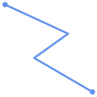 (a) |  (b) |
 (c) |  (d) |
A MULTILINESTRING is simple
only if all of its elements are simple and the only intersection between
any two elements occurs at points that are on the
boundaries of both elements.
(e) and
(f) are simple
|
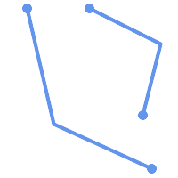 (e) | 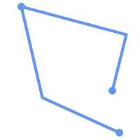 (f) |  (g) |
POLYGONs are formed from linear rings, so
valid polygonal geometry is always simple.
To test if a geometry is simple use the ST_IsSimple function:
SELECT
ST_IsSimple('LINESTRING(0 0, 100 100)') AS straight,
ST_IsSimple('LINESTRING(0 0, 100 100, 100 0, 0 100)') AS crossing;
straight | crossing
----------+----------
t | f
Generally, PostGIS functions do not require geometric arguments to be simple. Simplicity is primarily used as a basis for defining geometric validity. It is also a requirement for some kinds of spatial data models (for example, linear networks often disallow lines that cross). Multipoint and linear geometry can be made simple using ST_UnaryUnion.
Geometry validity primarily applies to 2-dimensional
geometries (POLYGONs and MULTIPOLYGONs) .
Validity is defined by rules that allow polygonal geometry
to model planar areas unambiguously.
A POLYGON is valid if:
the polygon boundary rings (the exterior shell ring and interior hole rings) are simple (do not cross or self-touch). Because of this a polygon cannnot have cut lines, spikes or loops. This implies that polygon holes must be represented as interior rings, rather than by the exterior ring self-touching (a so-called "inverted hole").
boundary rings do not cross
boundary rings may touch at points but only as a tangent (i.e. not in a line)
interior rings are contained in the exterior ring
the polygon interior is simply connected (i.e. the rings must not touch in a way that splits the polygon into more than one part)
(h) and
(i) are valid |
 (h) | 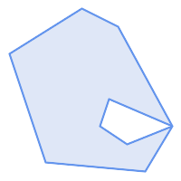 (i) |  (j) |
 (k) | 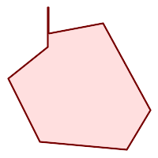 (l) |  (m) |
A MULTIPOLYGON is valid if:
its element
POLYGONs are validelements do not overlap (i.e. their interiors must not intersect)
elements touch only at points (i.e. not along a line)
(n) is a valid |
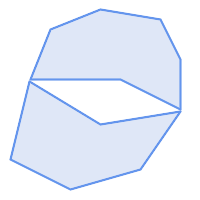 (n) |  (o) |  (p) |
These rules mean that valid polygonal geometry is also simple.
For linear geometry the only validity rule is that LINESTRINGs must
have at least two points and have non-zero length
(or equivalently, have at least two distinct points.)
Note that non-simple (self-intersecting) lines are valid.
SELECT
ST_IsValid('LINESTRING(0 0, 1 1)') AS len_nonzero,
ST_IsValid('LINESTRING(0 0, 0 0, 0 0)') AS len_zero,
ST_IsValid('LINESTRING(10 10, 150 150, 180 50, 20 130)') AS self_int;
len_nonzero | len_zero | self_int
-------------+----------+----------
t | f | t
POINT and MULTIPOINT geometries
have no validity rules.
PostGIS allows creating and storing both valid and invalid Geometry. This allows invalid geometry to be detected and flagged or fixed. There are also situations where the OGC validity rules are stricter than desired (examples of this are zero-length linestrings and polygons with inverted holes.)
Many of the functions provided by PostGIS rely on the assumption that geometry arguments are valid. For example, it does not make sense to calculate the area of a polygon that has a hole defined outside of the polygon, or to construct a polygon from a non-simple boundary line. Assuming valid geometric inputs allows functions to operate more efficiently, since they do not need to check for topological correctness. (Notable exceptions are that zero-length lines and polygons with inversions are generally handled correctly.) Also, most PostGIS functions produce valid geometry output if the inputs are valid. This allows PostGIS functions to be chained together safely.
If you encounter unexpected error messages when calling PostGIS functions (such as "GEOS Intersection() threw an error!"), you should first confirm that the function arguments are valid. If they are not, then consider using one of the techniques below to ensure the data you are processing is valid.
| |
If a function reports an error with valid inputs, then you may have found an error in either PostGIS or one of the libraries it uses, and you should report this to the PostGIS project. The same is true if a PostGIS function returns an invalid geometry for valid input. |
To test if a geometry is valid use the ST_IsValid function:
SELECT ST_IsValid('POLYGON ((20 180, 180 180, 180 20, 20 20, 20 180))');
-----------------
t
Information about the nature and location of an geometry invalidity are provided by the ST_IsValidDetail function:
SELECT valid, reason, ST_AsText(location) AS location
FROM ST_IsValidDetail('POLYGON ((20 20, 120 190, 50 190, 170 50, 20 20))') AS t;
valid | reason | location
-------+-------------------+---------------------------------------------
f | Self-intersection | POINT(91.51162790697674 141.56976744186045)
In some situations it is desirable to correct invalid geometry automatically.
Use the ST_MakeValid function to do this.
(ST_MakeValid is a case of a spatial function that does allow invalid input!)
By default, PostGIS does not check for validity when loading geometry, because validity testing can take a lot of CPU time for complex geometries. If you do not trust your data sources, you can enforce a validity check on your tables by adding a check constraint:
ALTER TABLE mytable ADD CONSTRAINT geometry_valid_check CHECK (ST_IsValid(geom));
A Spatial Reference System (SRS) (also called a Coordinate Reference System (CRS)) defines how geometry is referenced to locations on the Earth's surface. There are three types of SRS:
A geodetic SRS uses angular coordinates (longitude and latitude) which map directly to the surface of the earth.
A projected SRS uses a mathematical projection transformation to "flatten" the surface of the spheroidal earth onto a plane. It assigns location coordinates in a way that allows direct measurement of quantities such as distance, area, and angle. The coordinate system is Cartesian, which means it has a defined origin point and two perpendicular axes (usually oriented North and East). Each projected SRS uses a stated length unit (usually metres or feet). A projected SRS may be limited in its area of applicability to avoid distortion and fit within the defined coordinate bounds.
A local SRS is a Cartesian coordinate system which is not referenced to the earth's surface. In PostGIS this is specified by a SRID value of 0.
There are many different spatial reference systems in use. Common SRSes are standardized in the European Petroleum Survey Group EPSG database. For convenience PostGIS (and many other spatial systems) refers to SRS definitions using an integer identifier called a SRID.
A geometry is associated with a Spatial Reference System by its SRID value,
which is accessed by ST_SRID.
The SRID for a geometry can be assigned using ST_SetSRID.
Some geometry constructor functions allow supplying a SRID
(such as ST_Point and ST_MakeEnvelope).
The EWKT format supports SRIDs with the SRID=n; prefix.
Spatial functions processing pairs of geometries (such as overlay and relationship functions) require that the input geometries are in the same spatial reference system (have the same SRID). Geometry data can be transformed into a different spatial reference system using ST_Transform. Geometry returned from functions has the same SRS as the input geometries.
The SPATIAL_REF_SYS table used by PostGIS
is an OGC-compliant database table that defines the available
spatial reference systems.
It holds the numeric SRIDs and textual descriptions of the coordinate systems.
The spatial_ref_sys table definition is:
CREATE TABLE spatial_ref_sys ( srid INTEGER NOT NULL PRIMARY KEY, auth_name VARCHAR(256), auth_srid INTEGER, srtext VARCHAR(2048), proj4text VARCHAR(2048) )
The columns are:
- srid
An integer code that uniquely identifies the Spatial Reference System (SRS) within the database.
- auth_name
The name of the standard or standards body that is being cited for this reference system. For example, "EPSG" is a valid
auth_name.- auth_srid
The ID of the Spatial Reference System as defined by the Authority cited in the
auth_name. In the case of EPSG, this is the EPSG code.- srtext
The Well-Known Text representation of the Spatial Reference System. An example of a WKT SRS representation is:
PROJCS["NAD83 / UTM Zone 10N", GEOGCS["NAD83", DATUM["North_American_Datum_1983", SPHEROID["GRS 1980",6378137,298.257222101] ], PRIMEM["Greenwich",0], UNIT["degree",0.0174532925199433] ], PROJECTION["Transverse_Mercator"], PARAMETER["latitude_of_origin",0], PARAMETER["central_meridian",-123], PARAMETER["scale_factor",0.9996], PARAMETER["false_easting",500000], PARAMETER["false_northing",0], UNIT["metre",1] ]
For a discussion of SRS WKT, see the OGC standard Well-known text representation of coordinate reference systems.
- proj4text
PostGIS uses the PROJ library to provide coordinate transformation capabilities. The
proj4textcolumn contains the PROJ coordinate definition string for a particular SRID. For example:+proj=utm +zone=10 +ellps=clrk66 +datum=NAD27 +units=m
For more information see the PROJ web site. The
spatial_ref_sys.sqlfile contains bothsrtextandproj4textdefinitions for all EPSG projections.
When retrieving spatial reference system definitions for use in transformations, PostGIS uses fhe following strategy:
If
auth_nameandauth_sridare present (non-NULL) use the PROJ SRS based on those entries (if one exists).If
srtextis present create a SRS using it, if possible.If
proj4textis present create a SRS using it, if possible.
The PostGIS spatial_ref_sys table contains over 3000 of
the most common spatial reference system definitions that are handled by the
PROJ projection library.
But there are many coordinate systems that it does not contain.
You can add SRS definitions to the table if you have
the required information about the spatial reference system.
Or, you can define your own custom spatial reference system if you are familiar with PROJ constructs.
Keep in mind that most spatial reference systems are regional
and have no meaning when used outside of the bounds they were intended for.
A resource for finding spatial reference systems not defined in the core set is http://spatialreference.org/
Some commonly used spatial reference systems are: 4326 - WGS 84 Long Lat, 4269 - NAD 83 Long Lat, 3395 - WGS 84 World Mercator, 2163 - US National Atlas Equal Area, and the 60 WGS84 UTM zones. UTM zones are one of the most ideal for measurement, but only cover 6-degree regions. (To determine which UTM zone to use for your area of interest, see the utmzone PostGIS plpgsql helper function.)
US states use State Plane spatial reference systems (meter or feet based) - usually one or 2 exists per state. Most of the meter-based ones are in the core set, but many of the feet-based ones or ESRI-created ones will need to be copied from spatialreference.org.
You can even define non-Earth-based coordinate systems,
such as Mars 2000
This Mars coordinate system is non-planar (it's in degrees spheroidal),
but you can use it with the geography type
to obtain length and proximity measurements in meters instead of degrees.
Here is an example of loading a custom coordinate system using an unassigned SRID and the PROJ definition for a US-centric Lambert Conformal projection:
INSERT INTO spatial_ref_sys (srid, proj4text) VALUES ( 990000, '+proj=lcc +lon_0=-95 +lat_0=25 +lat_1=25 +lat_2=25 +x_0=0 +y_0=0 +datum=WGS84 +units=m +no_defs' );
You can create a table to store geometry data using the
CREATE TABLE
SQL statement with a column of type geometry.
The following example creates a table with a geometry column storing 2D (XY) LineStrings
in the BC-Albers coordinate system (SRID 3005):
CREATE TABLE roads (
id SERIAL PRIMARY KEY,
name VARCHAR(64),
geom geometry(LINESTRING,3005)
);The geometry type supports two optional type modifiers:
the spatial type modifier restricts the kind of shapes and dimensions allowed in the column. The value can be any of the supported geometry subtypes (e.g. POINT, LINESTRING, POLYGON, MULTIPOINT, MULTILINESTRING, MULTIPOLYGON, GEOMETRYCOLLECTION, etc). The modifier supports coordinate dimensionality restrictions by adding suffixes: Z, M and ZM. For example, a modifier of 'LINESTRINGM' allows only linestrings with three dimensions, and treats the third dimension as a measure. Similarly, 'POINTZM' requires four dimensional (XYZM) data.
the SRID modifier restricts the spatial reference system SRID to a particular number. If omitted, the SRID defaults to 0.
Examples of creating tables with geometry columns:
Create a table holding any kind of geometry with the default SRID:
CREATE TABLE geoms(gid serial PRIMARY KEY, geom geometry );
Create a table with 2D POINT geometry with the default SRID:
CREATE TABLE pts(gid serial PRIMARY KEY, geom geometry(POINT) );
Create a table with 3D (XYZ) POINTs and an explicit SRID of 3005:
CREATE TABLE pts(gid serial PRIMARY KEY, geom geometry(POINTZ,3005) );
Create a table with 4D (XYZM) LINESTRING geometry with the default SRID:
CREATE TABLE lines(gid serial PRIMARY KEY, geom geometry(LINESTRINGZM) );
Create a table with 2D POLYGON geometry with the SRID 4267 (NAD 1927 long lat):
CREATE TABLE polys(gid serial PRIMARY KEY, geom geometry(POLYGON,4267) );
It is possible to have more than one geometry column in a table. This can be specified when the table is created, or a column can be added using the ALTER TABLE SQL statement. This example adds a column that can hold 3D LineStrings:
ALTER TABLE roads ADD COLUMN geom2 geometry(LINESTRINGZ,4326);
The OGC Simple Features Specification for SQL defines
the GEOMETRY_COLUMNS metadata table to describe geometry table structure.
In PostGIS geometry_columns is a view reading from database system catalog tables.
This ensures that the spatial metadata information is always consistent with the currently defined tables and views.
The view structure is:
\d geometry_columns
View "public.geometry_columns"
Column | Type | Modifiers
-------------------+------------------------+-----------
f_table_catalog | character varying(256) |
f_table_schema | character varying(256) |
f_table_name | character varying(256) |
f_geometry_column | character varying(256) |
coord_dimension | integer |
srid | integer |
type | character varying(30) |The columns are:
- f_table_catalog, f_table_schema, f_table_name
The fully qualified name of the feature table containing the geometry column. There is no PostgreSQL analogue of "catalog" so that column is left blank. For "schema" the PostgreSQL schema name is used (
publicis the default).- f_geometry_column
The name of the geometry column in the feature table.
- coord_dimension
The coordinate dimension (2, 3 or 4) of the column.
- srid
The ID of the spatial reference system used for the coordinate geometry in this table. It is a foreign key reference to the
spatial_ref_systable (see Section 4.5.1, “SPATIAL_REF_SYS Table”).- type
The type of the spatial object. To restrict the spatial column to a single type, use one of: POINT, LINESTRING, POLYGON, MULTIPOINT, MULTILINESTRING, MULTIPOLYGON, GEOMETRYCOLLECTION or corresponding XYM versions POINTM, LINESTRINGM, POLYGONM, MULTIPOINTM, MULTILINESTRINGM, MULTIPOLYGONM, GEOMETRYCOLLECTIONM. For heterogeneous (mixed-type) collections, you can use "GEOMETRY" as the type.
Two of the cases where you may need this are the case of SQL Views and bulk inserts. For bulk insert case, you can correct the registration in the geometry_columns table by constraining the column or doing an alter table. For views, you could expose using a CAST operation. Note, if your column is typmod based, the creation process would register it correctly, so no need to do anything. Also views that have no spatial function applied to the geometry will register the same as the underlying table geometry column.
-- Lets say you have a view created like this CREATE VIEW public.vwmytablemercator AS SELECT gid, ST_Transform(geom, 3395) As geom, f_name FROM public.mytable; -- For it to register correctly -- You need to cast the geometry -- DROP VIEW public.vwmytablemercator; CREATE VIEW public.vwmytablemercator AS SELECT gid, ST_Transform(geom, 3395)::geometry(Geometry, 3395) As geom, f_name FROM public.mytable; -- If you know the geometry type for sure is a 2D POLYGON then you could do DROP VIEW public.vwmytablemercator; CREATE VIEW public.vwmytablemercator AS SELECT gid, ST_Transform(geom,3395)::geometry(Polygon, 3395) As geom, f_name FROM public.mytable;
--Lets say you created a derivative table by doing a bulk insert
SELECT poi.gid, poi.geom, citybounds.city_name
INTO myschema.my_special_pois
FROM poi INNER JOIN citybounds ON ST_Intersects(citybounds.geom, poi.geom);
-- Create 2D index on new table
CREATE INDEX idx_myschema_myspecialpois_geom_gist
ON myschema.my_special_pois USING gist(geom);
-- If your points are 3D points or 3M points,
-- then you might want to create an nd index instead of a 2D index
CREATE INDEX my_special_pois_geom_gist_nd
ON my_special_pois USING gist(geom gist_geometry_ops_nd);
-- To manually register this new table's geometry column in geometry_columns.
-- Note it will also change the underlying structure of the table to
-- to make the column typmod based.
SELECT populate_geometry_columns('myschema.my_special_pois'::regclass);
-- If you are using PostGIS 2.0 and for whatever reason, you
-- you need the constraint based definition behavior
-- (such as case of inherited tables where all children do not have the same type and srid)
-- set optional use_typmod argument to false
SELECT populate_geometry_columns('myschema.my_special_pois'::regclass, false); Although the old-constraint based method is still supported, a constraint-based geometry column used directly in a view, will not register correctly in geometry_columns, as will a typmod one. In this example we define a column using typmod and another using constraints.
CREATE TABLE pois_ny(gid SERIAL PRIMARY KEY, poi_name text, cat text, geom geometry(POINT,4326));
SELECT AddGeometryColumn('pois_ny', 'geom_2160', 2160, 'POINT', 2, false);If we run in psql
\d pois_ny;
We observe they are defined differently -- one is typmod, one is constraint
Table "public.pois_ny"
Column | Type | Modifiers
-----------+-----------------------+------------------------------------------------------
gid | integer | not null default nextval('pois_ny_gid_seq'::regclass)
poi_name | text |
cat | character varying(20) |
geom | geometry(Point,4326) |
geom_2160 | geometry |
Indexes:
"pois_ny_pkey" PRIMARY KEY, btree (gid)
Check constraints:
"enforce_dims_geom_2160" CHECK (st_ndims(geom_2160) = 2)
"enforce_geotype_geom_2160" CHECK (geometrytype(geom_2160) = 'POINT'::text
OR geom_2160 IS NULL)
"enforce_srid_geom_2160" CHECK (st_srid(geom_2160) = 2160)In geometry_columns, they both register correctly
SELECT f_table_name, f_geometry_column, srid, type FROM geometry_columns WHERE f_table_name = 'pois_ny';
f_table_name | f_geometry_column | srid | type -------------+-------------------+------+------- pois_ny | geom | 4326 | POINT pois_ny | geom_2160 | 2160 | POINT
However -- if we were to create a view like this
CREATE VIEW vw_pois_ny_parks AS SELECT * FROM pois_ny WHERE cat='park'; SELECT f_table_name, f_geometry_column, srid, type FROM geometry_columns WHERE f_table_name = 'vw_pois_ny_parks';
The typmod based geom view column registers correctly, but the constraint based one does not.
f_table_name | f_geometry_column | srid | type ------------------+-------------------+------+---------- vw_pois_ny_parks | geom | 4326 | POINT vw_pois_ny_parks | geom_2160 | 0 | GEOMETRY
This may change in future versions of PostGIS, but for now to force the constraint-based view column to register correctly, you need to do this:
DROP VIEW vw_pois_ny_parks; CREATE VIEW vw_pois_ny_parks AS SELECT gid, poi_name, cat, geom, geom_2160::geometry(POINT,2160) As geom_2160 FROM pois_ny WHERE cat = 'park'; SELECT f_table_name, f_geometry_column, srid, type FROM geometry_columns WHERE f_table_name = 'vw_pois_ny_parks';
f_table_name | f_geometry_column | srid | type ------------------+-------------------+------+------- vw_pois_ny_parks | geom | 4326 | POINT vw_pois_ny_parks | geom_2160 | 2160 | POINT
Once you have created a spatial table, you are ready to upload spatial data to the database. There are two built-in ways to get spatial data into a PostGIS/PostgreSQL database: using formatted SQL statements or using the Shapefile loader.
If spatial data can be converted to a text representation (as either WKT or WKB), then using
SQL might be the easiest way to get data into PostGIS.
Data can be bulk-loaded into PostGIS/PostgreSQL by loading a
text file of SQL INSERT statements using the psql SQL utility.
A SQL load file (roads.sql for example)
might look like this:
BEGIN; INSERT INTO roads (road_id, roads_geom, road_name) VALUES (1,'LINESTRING(191232 243118,191108 243242)','Jeff Rd'); INSERT INTO roads (road_id, roads_geom, road_name) VALUES (2,'LINESTRING(189141 244158,189265 244817)','Geordie Rd'); INSERT INTO roads (road_id, roads_geom, road_name) VALUES (3,'LINESTRING(192783 228138,192612 229814)','Paul St'); INSERT INTO roads (road_id, roads_geom, road_name) VALUES (4,'LINESTRING(189412 252431,189631 259122)','Graeme Ave'); INSERT INTO roads (road_id, roads_geom, road_name) VALUES (5,'LINESTRING(190131 224148,190871 228134)','Phil Tce'); INSERT INTO roads (road_id, roads_geom, road_name) VALUES (6,'LINESTRING(198231 263418,198213 268322)','Dave Cres'); COMMIT;
The SQL file can be loaded into PostgreSQL using psql:
psql -d [database] -f roads.sql
The shp2pgsql data loader converts Shapefiles into SQL suitable for
insertion into a PostGIS/PostgreSQL database either in geometry or geography format.
The loader has several operating modes selected by command line flags.
There is also a shp2pgsql-gui graphical interface with most
of the options as the command-line loader.
This may be easier to use for one-off non-scripted loading or if you are new to PostGIS.
It can also be configured as a plugin to PgAdminIII.
- (c|a|d|p) These are mutually exclusive options:
- -c
Creates a new table and populates it from the Shapefile. This is the default mode.
- -a
Appends data from the Shapefile into the database table. Note that to use this option to load multiple files, the files must have the same attributes and same data types.
- -d
Drops the database table before creating a new table with the data in the Shapefile.
- -p
Only produces the table creation SQL code, without adding any actual data. This can be used if you need to completely separate the table creation and data loading steps.
- -?
Display help screen.
- -D
Use the PostgreSQL "dump" format for the output data. This can be combined with -a, -c and -d. It is much faster to load than the default "insert" SQL format. Use this for very large data sets.
- -s [<FROM_SRID>:]<SRID>
Creates and populates the geometry tables with the specified SRID. Optionally specifies that the input shapefile uses the given FROM_SRID, in which case the geometries will be reprojected to the target SRID.
- -k
Keep identifiers' case (column, schema and attributes). Note that attributes in Shapefile are all UPPERCASE.
- -i
Coerce all integers to standard 32-bit integers, do not create 64-bit bigints, even if the DBF header signature appears to warrant it.
- -I
Create a GiST index on the geometry column.
- -m
-m
a_file_nameSpecify a file containing a set of mappings of (long) column names to 10 character DBF column names. The content of the file is one or more lines of two names separated by white space and no trailing or leading space. For example:COLUMNNAME DBFFIELD1 AVERYLONGCOLUMNNAME DBFFIELD2
- -S
Generate simple geometries instead of MULTI geometries. Will only succeed if all the geometries are actually single (I.E. a MULTIPOLYGON with a single shell, or or a MULTIPOINT with a single vertex).
- -t <dimensionality>
Force the output geometry to have the specified dimensionality. Use the following strings to indicate the dimensionality: 2D, 3DZ, 3DM, 4D.
If the input has fewer dimensions that specified, the output will have those dimensions filled in with zeroes. If the input has more dimensions that specified, the unwanted dimensions will be stripped.
- -w
Output WKT format, instead of WKB. Note that this can introduce coordinate drifts due to loss of precision.
- -e
Execute each statement on its own, without using a transaction. This allows loading of the majority of good data when there are some bad geometries that generate errors. Note that this cannot be used with the -D flag as the "dump" format always uses a transaction.
- -W <encoding>
Specify encoding of the input data (dbf file). When used, all attributes of the dbf are converted from the specified encoding to UTF8. The resulting SQL output will contain a
SET CLIENT_ENCODING to UTF8command, so that the backend will be able to reconvert from UTF8 to whatever encoding the database is configured to use internally.- -N <policy>
NULL geometries handling policy (insert*,skip,abort)
- -n
-n Only import DBF file. If your data has no corresponding shapefile, it will automatically switch to this mode and load just the dbf. So setting this flag is only needed if you have a full shapefile set, and you only want the attribute data and no geometry.
- -G
Use geography type instead of geometry (requires lon/lat data) in WGS84 long lat (SRID=4326)
- -T <tablespace>
Specify the tablespace for the new table. Indexes will still use the default tablespace unless the -X parameter is also used. The PostgreSQL documentation has a good description on when to use custom tablespaces.
- -X <tablespace>
Specify the tablespace for the new table's indexes. This applies to the primary key index, and the GIST spatial index if -I is also used.
- -Z
When used, this flag will prevent the generation of
ANALYZEstatements. Without the -Z flag (default behavior), theANALYZEstatements will be generated.
An example session using the loader to create an input file and loading it might look like this:
# shp2pgsql -c -D -s 4269 -i -I shaperoads.shp myschema.roadstable > roads.sql # psql -d roadsdb -f roads.sql
A conversion and load can be done in one step using UNIX pipes:
# shp2pgsql shaperoads.shp myschema.roadstable | psql -d roadsdb
Spatial data can be extracted from the database using either SQL or the Shapefile dumper. The section on SQL presents some of the functions available to do comparisons and queries on spatial tables.
The most straightforward way of extracting spatial data out of the
database is to use a SQL SELECT query
to define the data set to be extracted
and dump the resulting columns into a parsable text file:
db=# SELECT road_id, ST_AsText(road_geom) AS geom, road_name FROM roads; road_id | geom | road_name --------+-----------------------------------------+----------- 1 | LINESTRING(191232 243118,191108 243242) | Jeff Rd 2 | LINESTRING(189141 244158,189265 244817) | Geordie Rd 3 | LINESTRING(192783 228138,192612 229814) | Paul St 4 | LINESTRING(189412 252431,189631 259122) | Graeme Ave 5 | LINESTRING(190131 224148,190871 228134) | Phil Tce 6 | LINESTRING(198231 263418,198213 268322) | Dave Cres 7 | LINESTRING(218421 284121,224123 241231) | Chris Way (6 rows)
There will be times when some kind of restriction is necessary to cut down the number of records returned. In the case of attribute-based restrictions, use the same SQL syntax as used with a non-spatial table. In the case of spatial restrictions, the following functions are useful:
- ST_Intersects
This function tells whether two geometries share any space.
- =
This tests whether two geometries are geometrically identical. For example, if 'POLYGON((0 0,1 1,1 0,0 0))' is the same as 'POLYGON((0 0,1 1,1 0,0 0))' (it is).
Next, you can use these operators in queries. Note that when specifying geometries and boxes on the SQL command line, you must explicitly turn the string representations into geometries function. The 312 is a fictitious spatial reference system that matches our data. So, for example:
SELECT road_id, road_name FROM roads WHERE roads_geom='SRID=312;LINESTRING(191232 243118,191108 243242)'::geometry;
The above query would return the single record from the "ROADS_GEOM" table in which the geometry was equal to that value.
To check whether some of the roads passes in the area defined by a polygon:
SELECT road_id, road_name FROM roads WHERE ST_Intersects(roads_geom, 'SRID=312;POLYGON((...))');
The most common spatial query will probably be a "frame-based" query, used by client software, like data browsers and web mappers, to grab a "map frame" worth of data for display.
When using the "&&" operator, you can specify either a BOX3D as the comparison feature or a GEOMETRY. When you specify a GEOMETRY, however, its bounding box will be used for the comparison.
Using a "BOX3D" object for the frame, such a query looks like this:
SELECT ST_AsText(roads_geom) AS geom FROM roads WHERE roads_geom && ST_MakeEnvelope(191232, 243117,191232, 243119,312);
Note the use of the SRID 312, to specify the projection of the envelope.
The pgsql2shp table dumper connects
to the database and converts a table (possibly defined by a query) into
a shape file. The basic syntax is:
pgsql2shp [<options>] <database> [<schema>.]<table>
pgsql2shp [<options>] <database> <query>
The commandline options are:
- -f <filename>
Write the output to a particular filename.
- -h <host>
The database host to connect to.
- -p <port>
The port to connect to on the database host.
- -P <password>
The password to use when connecting to the database.
- -u <user>
The username to use when connecting to the database.
- -g <geometry column>
In the case of tables with multiple geometry columns, the geometry column to use when writing the shape file.
- -b
Use a binary cursor. This will make the operation faster, but will not work if any NON-geometry attribute in the table lacks a cast to text.
- -r
Raw mode. Do not drop the
gidfield, or escape column names.- -m
filename Remap identifiers to ten character names. The content of the file is lines of two symbols separated by a single white space and no trailing or leading space: VERYLONGSYMBOL SHORTONE ANOTHERVERYLONGSYMBOL SHORTER etc.
Spatial indexes make using a spatial database for large data sets possible. Without indexing, a search for features requires a sequential scan of every record in the database. Indexing speeds up searching by organizing the data into a structure which can be quickly traversed to find matching records.
The B-tree index method commonly used for attribute data is not very useful for spatial data, since it only supports storing and querying data in a single dimension. Data such as geometry (which has 2 or more dimensions) requires an index method that supports range query across all the data dimensions. One of the key advantages of PostgreSQL for spatial data handling is that it offers several kinds of index methods which work well for multi-dimensional data: GiST, BRIN and SP-GiST indexes.
GiST (Generalized Search Tree) indexes break up data into "things to one side", "things which overlap", "things which are inside" and can be used on a wide range of data-types, including GIS data. PostGIS uses an R-Tree index implemented on top of GiST to index spatial data. GiST is the most commonly-used and versatile spatial index method, and offers very good query performance.
BRIN (Block Range Index) indexes operate by summarizing the spatial extent of ranges of table records. Search is done via a scan of the ranges. BRIN is only appropriate for use for some kinds of data (spatially sorted, with infrequent or no update). But it provides much faster index create time, and much smaller index size.
SP-GiST (Space-Partitioned Generalized Search Tree) is a generic index method that supports partitioned search trees such as quad-trees, k-d trees, and radix trees (tries).
Spatial indexes store only the bounding box of geometries. Spatial queries use the index as a primary filter to quickly determine a set of geometries potentially matching the query condition. Most spatial queries require a secondary filter that uses a spatial predicate function to test a more specific spatial condition. For more information on queying with spatial predicates see Section 5.2, “Using Spatial Indexes”.
See also the PostGIS Workshop section on spatial indexes, and the PostgreSQL manual.
GiST stands for "Generalized Search Tree" and is a generic form of indexing for multi-dimensional data. PostGIS uses an R-Tree index implemented on top of GiST to index spatial data. GiST is the most commonly-used and versatile spatial index method, and offers very good query performance. Other implementations of GiST are used to speed up searches on all kinds of irregular data structures (integer arrays, spectral data, etc) which are not amenable to normal B-Tree indexing. For more information see the PostgreSQL manual.
Once a spatial data table exceeds a few thousand rows, you will want to build an index to speed up spatial searches of the data (unless all your searches are based on attributes, in which case you'll want to build a normal index on the attribute fields).
The syntax for building a GiST index on a "geometry" column is as follows:
CREATE INDEX [indexname] ON [tablename] USING GIST ( [geometryfield] );
The above syntax will always build a 2D-index. To get the an n-dimensional index for the geometry type, you can create one using this syntax:
CREATE INDEX [indexname] ON [tablename] USING GIST ([geometryfield] gist_geometry_ops_nd);
Building a spatial index is a computationally intensive exercise. It also blocks write access to your table for the time it creates, so on a production system you may want to do in in a slower CONCURRENTLY-aware way:
CREATE INDEX CONCURRENTLY [indexname] ON [tablename] USING GIST ( [geometryfield] );
After building an index, it is sometimes helpful to force PostgreSQL to collect table statistics, which are used to optimize query plans:
VACUUM ANALYZE [table_name] [(column_name)];
BRIN stands for "Block Range Index". It is a general-purpose index method introduced in PostgreSQL 9.5. BRIN is a lossy index method, meaning that a secondary check is required to confirm that a record matches a given search condition (which is the case for all provided spatial indexes). It provides much faster index creation and much smaller index size, with reasonable read performance. Its primary purpose is to support indexing very large tables on columns which have a correlation with their physical location within the table. In addition to spatial indexing, BRIN can speed up searches on various kinds of attribute data structures (integer, arrays etc). For more information see the PostgreSQL manual.
Once a spatial table exceeds a few thousand rows, you will want to build an index to speed up spatial searches of the data. GiST indexes are very performant as long as their size doesn't exceed the amount of RAM available for the database, and as long as you can afford the index storage size, and the cost of index update on write. Otherwise, for very large tables BRIN index can be considered as an alternative.
A BRIN index stores the bounding box enclosing all the geometries contained in the rows in a contiguous set of table blocks, called a block range. When executing a query using the index the block ranges are scanned to find the ones that intersect the query extent. This is efficient only if the data is physically ordered so that the bounding boxes for block ranges have minimal overlap (and ideally are mutually exclusive). The resulting index is very small in size, but is typically less performant for read than a GiST index over the same data.
Building a BRIN index is much less CPU-intensive than building a GiST index. It's common to find that a BRIN index is ten times faster to build than a GiST index over the same data. And because a BRIN index stores only one bounding box for each range of table blocks, it's common to use up to a thousand times less disk space than a GiST index.
You can choose the number of blocks to summarize in a range. If you decrease this number, the index will be bigger but will probably provide better performance.
For BRIN to be effective, the table data should be stored in a physical order which minimizes the amount of block extent overlap. It may be that the data is already sorted appropriately (for instance, if it is loaded from another dataset that is already sorted in spatial order). Otherwise, this can be accomplished by sorting the data by a one-dimensional spatial key. One way to do this is to create a new table sorted by the geometry values (which in recent PostGIS versions uses an efficient Hilbert curve ordering):
CREATE TABLE table_sorted AS SELECT * FROM table ORDER BY geom;
Alternatively, data can be sorted in-place by using a GeoHash as a (temporary) index, and clustering on that index:
CREATE INDEX idx_temp_geohash ON table
USING btree (ST_GeoHash( ST_Transform( geom, 4326 ), 20));
CLUSTER table USING idx_temp_geohash;
The syntax for building a BRIN index on a geometry column is:
CREATE INDEX [indexname] ON [tablename] USING BRIN ( [geome_col] );
The above syntax builds a 2D index. To build a 3D-dimensional index, use this syntax:
CREATE INDEX [indexname] ON [tablename]
USING BRIN ([geome_col] brin_geometry_inclusion_ops_3d);You can also get a 4D-dimensional index using the 4D operator class:
CREATE INDEX [indexname] ON [tablename]
USING BRIN ([geome_col] brin_geometry_inclusion_ops_4d);The above commands use the default number of blocks in a range, which is 128. To specify the number of blocks to summarise in a range, use this syntax
CREATE INDEX [indexname] ON [tablename]
USING BRIN ( [geome_col] ) WITH (pages_per_range = [number]); Keep in mind that a BRIN index only stores one index entry for a large number of rows. If your table stores geometries with a mixed number of dimensions, it's likely that the resulting index will have poor performance. You can avoid this performance penalty by choosing the operator class with the least number of dimensions of the stored geometries
The geography datatype is supported for BRIN indexing. The
syntax for building a BRIN index on a geography column is:
CREATE INDEX [indexname] ON [tablename] USING BRIN ( [geog_col] );
The above syntax builds a 2D-index for geospatial objects on the spheroid.
Currently, only "inclusion support" is provided, meaning
that just the &&, ~ and
@ operators can be used for the 2D cases (for both
geometry and geography), and just the &&&
operator for 3D geometries.
There is currently no support for kNN searches.
An important difference between BRIN and other index types is that the database does not
maintain the index dynamically. Changes to spatial data in the table
are simply appended to the end of the index. This will cause index search performance to
degrade over time. The index can be updated by performing a VACUUM,
or by using a special function brin_summarize_new_values(regclass).
For this reason BRIN may be most appropriate for use with data that is read-only,
or only rarely changing. For more information refer to the
manual.
To summarize using BRIN for spatial data:
Index build time is very fast, and index size is very small.
Index query time is slower than GiST, but can still be very acceptable.
Requires table data to be sorted in a spatial ordering.
Requires manual index maintenance.
Most appropriate for very large tables, with low or no overlap (e.g. points), which are static or change infrequently.
More effective for queries which return relatively large numbers of data records.
SP-GiST stands for "Space-Partitioned Generalized Search Tree" and is a generic form of indexing for multi-dimensional data types that supports partitioned search trees, such as quad-trees, k-d trees, and radix trees (tries). The common feature of these data structures is that they repeatedly divide the search space into partitions that need not be of equal size. In addition to spatial indexing, SP-GiST is used to speed up searches on many kinds of data, such as phone routing, ip routing, substring search, etc. For more information see the PostgreSQL manual.
As it is the case for GiST indexes, SP-GiST indexes are lossy, in the sense that they store the bounding box enclosing spatial objects. SP-GiST indexes can be considered as an alternative to GiST indexes.
Once a GIS data table exceeds a few thousand rows, an SP-GiST index may be used to speed up spatial searches of the data. The syntax for building an SP-GiST index on a "geometry" column is as follows:
CREATE INDEX [indexname] ON [tablename] USING SPGIST ( [geometryfield] );
The above syntax will build a 2-dimensional index. A 3-dimensional index for the geometry type can be created using the 3D operator class:
CREATE INDEX [indexname] ON [tablename] USING SPGIST ([geometryfield] spgist_geometry_ops_3d);
Building a spatial index is a computationally intensive operation. It also blocks write access to your table for the time it creates, so on a production system you may want to do in in a slower CONCURRENTLY-aware way:
CREATE INDEX CONCURRENTLY [indexname] ON [tablename] USING SPGIST ( [geometryfield] );
After building an index, it is sometimes helpful to force PostgreSQL to collect table statistics, which are used to optimize query plans:
VACUUM ANALYZE [table_name] [(column_name)];
An SP-GiST index can accelerate queries involving the following operators:
<<, &<, &>, >>, <<|, &<|, |&>, |>>, &&, @>, <@, and ~=, for 2-dimensional indexes,
&/&, ~==, @>>, and <<@, for 3-dimensional indexes.
There is no support for kNN searches at the moment.
Ordinarily, indexes invisibly speed up data access: once an index is built, the PostgreSQL query planner automatically decides when to use it to improve query performance. But there are some situations where the planner does not choose to use existing indexes, so queries end up using slow sequential scans instead of a spatial index.
If you find your spatial indexes are not being used, there are a few things you can do:
Examine the query plan and check your query actually computes the thing you need. An erroneous JOIN, either forgotten or to the wrong table, can unexpectedly retrieve table records multiple times. To get the query plan, execute with
EXPLAINin front of the query.Make sure statistics are gathered about the number and distributions of values in a table, to provide the query planner with better information to make decisions around index usage. VACUUM ANALYZE will compute both.
You should regularly vacuum your databases anyways. Many PostgreSQL DBAs run VACUUM as an off-peak cron job on a regular basis.
If vacuuming does not help, you can temporarily force the planner to use the index information by using the command SET ENABLE_SEQSCAN TO OFF;. This way you can check whether the planner is at all able to generate an index-accelerated query plan for your query. You should only use this command for debugging; generally speaking, the planner knows better than you do about when to use indexes. Once you have run your query, do not forget to run SET ENABLE_SEQSCAN TO ON; so that the planner will operate normally for other queries.
If SET ENABLE_SEQSCAN TO OFF; helps your query to run faster, your Postgres is likely not tuned for your hardware. If you find the planner wrong about the cost of sequential versus index scans try reducing the value of
RANDOM_PAGE_COSTinpostgresql.conf, or use SET RANDOM_PAGE_COST TO 1.1;. The default value forRANDOM_PAGE_COSTis 4.0. Try setting it to 1.1 (for SSD) or 2.0 (for fast magnetic disks). Decreasing the value makes the planner more likely to use index scans.If SET ENABLE_SEQSCAN TO OFF; does not help your query, the query may be using a SQL construct that the Postgres planner is not yet able to optimize. It may be possible to rewrite the query in a way that the planner is able to handle. For example, a subquery with an inline SELECT may not produce an efficient plan, but could possibly be rewritten using a LATERAL JOIN.
For more information see the Postgres manual section on Query Planning.
The raison d'etre of spatial databases is to perform queries inside the database which would ordinarily require desktop GIS functionality. Using PostGIS effectively requires knowing what spatial functions are available, how to use them in queries, and ensuring that appropriate indexes are in place to provide good performance.
Spatial relationships indicate how two geometries interact with one another. They are a fundamental capability for querying geometry.
According to the OpenGIS Simple Features Implementation Specification for SQL, "the basic approach to comparing two geometries is to make pair-wise tests of the intersections between the Interiors, Boundaries and Exteriors of the two geometries and to classify the relationship between the two geometries based on the entries in the resulting 'intersection' matrix."
In the theory of point-set topology, the points in a geometry embedded in 2-dimensional space are categorized into three sets:
- Boundary
The boundary of a geometry is the set of geometries of the next lower dimension. For
POINTs, which have a dimension of 0, the boundary is the empty set. The boundary of aLINESTRINGis the two endpoints. ForPOLYGONs, the boundary is the linework of the exterior and interior rings.- Interior
The interior of a geometry are those points of a geometry that are not in the boundary. For
POINTs, the interior is the point itself. The interior of aLINESTRINGis the set of points between the endpoints. ForPOLYGONs, the interior is the areal surface inside the polygon.- Exterior
The exterior of a geometry is the rest of the space in which the geometry is embedded; in other words, all points not in the interior or on the boundary of the geometry. It is a 2-dimensional non-closed surface.
The Dimensionally Extended 9-Intersection Model (DE-9IM) describes the spatial relationship between two geometries by specifying the dimensions of the 9 intersections between the above sets for each geometry. The intersection dimensions can be formally represented in a 3x3 intersection matrix.
For a geometry g
the Interior, Boundary, and Exterior
are denoted using the notation
I(g), B(g), and
E(g).
Also, dim(s) denotes the dimension of
a set s with the domain of
{0,1,2,F}:
0=> point1=> line2=> areaF=> empty set
Using this notation, the intersection matrix for two geometries a and b is:
| Interior | Boundary | Exterior | |
|---|---|---|---|
| Interior | dim( I(a) ∩ I(b) ) | dim( I(a) ∩ B(b) ) | dim( I(a) ∩ E(b) ) |
| Boundary | dim( B(a) ∩ I(b) ) | dim( B(a) ∩ B(b) ) | dim( B(a) ∩ E(b) ) |
| Exterior | dim( E(a) ∩ I(b) ) | dim( E(a) ∩ B(b) ) | dim( E(a) ∩ E(b) ) |
Visually, for two overlapping polygonal geometries, this looks like:
| ||||||||||||||||||
|
|


Reading from left to right and top to bottom, the intersection matrix is represented as the text string '212101212'.
For more information, refer to:
To make it easy to determine common spatial relationships, the OGC SFS defines a set of named spatial relationship predicates. PostGIS provides these as the functions ST_Contains, ST_Crosses, ST_Disjoint, ST_Equals, ST_Intersects, ST_Overlaps, ST_Touches, ST_Within. It also defines the non-standard relationship predicates ST_Covers, ST_CoveredBy, and ST_ContainsProperly.
Spatial predicates are usually used as conditions in SQL WHERE or JOIN clauses.
The named spatial predicates automatically use a spatial index if one is available,
so there is no need to use the bounding box operator && as well.
For example:
SELECT city.name, state.name, city.geom FROM city JOIN state ON ST_Intersects(city.geom, state.geom);
For more details and illustrations, see the PostGIS Workshop.
In some cases the named spatial relationships are insufficient to provide a desired spatial filter condition.
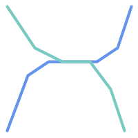 For example, consider a linear
dataset representing a road network. It may be required
to identify all road segments that cross
each other, not at a point, but in a line (perhaps to validate some business rule).
In this case ST_Crosses does not
provide the necessary spatial filter, since for
linear features it returns A two-step solution
would be to first compute the actual intersection
(ST_Intersection) of pairs of road lines that spatially
intersect (ST_Intersects), and then check if the intersection's
ST_GeometryType is ' Clearly, a simpler and faster solution is desirable. |
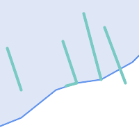 A second example is locating wharves that intersect a lake's boundary on a line and where one end of the wharf is up on shore. In other words, where a wharf is within but not completely contained by a lake, intersects the boundary of a lake on a line, and where exactly one of the wharf's endpoints is within or on the boundary of the lake. It is possible to use a combination of spatial predicates to find the required features:
|
These requirements can be met by computing the full DE-9IM intersection matrix. PostGIS provides the ST_Relate function to do this:
SELECT ST_Relate( 'LINESTRING (1 1, 5 5)',
'POLYGON ((3 3, 3 7, 7 7, 7 3, 3 3))' );
st_relate
-----------
1010F0212
To test a particular spatial relationship,
an intersection matrix pattern is used.
This is the matrix representation augmented with the additional symbols
{T,*}:
T=> intersection dimension is non-empty; i.e. is in{0,1,2}*=> don't care
Using intersection matrix patterns, specific spatial relationships can be evaluated in a more succinct way. The ST_Relate and the ST_RelateMatch functions can be used to test intersection matrix patterns. For the first example above, the intersection matrix pattern specifying two lines intersecting in a line is '1*1***1**':
-- Find road segments that intersect in a line
SELECT a.id
FROM roads a, roads b
WHERE a.id != b.id
AND a.geom && b.geom
AND ST_Relate(a.geom, b.geom, '1*1***1**');For the second example, the intersection matrix pattern specifying a line partly inside and partly outside a polygon is '102101FF2':
-- Find wharves partly on a lake's shoreline
SELECT a.lake_id, b.wharf_id
FROM lakes a, wharfs b
WHERE a.geom && b.geom
AND ST_Relate(a.geom, b.geom, '102101FF2');When constructing queries using spatial conditions,
for best performance it is important to
ensure that a spatial index is used, if one exists (see Section 4.9, “Spatial Indexes”).
To do this, a spatial operator or index-aware function must be used
in a WHERE or ON clause of the query.
Spatial operators include the bounding box operators (of which the most commonly used is &&; see Section 8.10.1, “Bounding Box Operators” for the full list) and the distance operators used in nearest-neighbor queries (the most common being <->; see Section 8.10.2, “Distance Operators” for the full list.)
Index-aware functions automatically add a bounding box operator to the spatial condition. Index-aware functions include the named spatial relationship predicates ST_Contains, ST_ContainsProperly, ST_CoveredBy, ST_Covers, ST_Crosses, ST_Intersects, ST_Overlaps, ST_Touches, ST_Within, ST_Within, and ST_3DIntersects, and the distance predicates ST_DWithin, ST_DFullyWithin, ST_3DDFullyWithin, and ST_3DDWithin .)
Functions such as ST_Distance do not use indexes to optimize their operation. For example, the following query would be quite slow on a large table:
SELECT geom FROM geom_table WHERE ST_Distance( geom, 'SRID=312;POINT(100000 200000)' ) < 100
This query selects all the geometries in geom_table which are
within 100 units of the point (100000, 200000). It will be slow because
it is calculating the distance between each point in the table and the
specified point, ie. one ST_Distance() calculation
is computed for every row in the table.
The number of rows processed can be reduced substantially by using the index-aware function ST_DWithin:
SELECT geom FROM geom_table WHERE ST_DWithin( geom, 'SRID=312;POINT(100000 200000)', 100 )
This query selects the same geometries, but it does it in a more
efficient way.
This is enabled by ST_DWithin() using the
&& operator internally on an expanded bounding box
of the query geometry.
If there is a spatial index on geom, the query
planner will recognize that it can use the index to reduce the number of
rows scanned before calculating the distance.
The spatial index allows retrieving only records with geometries
whose bounding boxes overlap the expanded extent
and hence which might be within the required distance.
The actual distance is then computed to confirm whether to include the record in the result set.
For more information and examples see the PostGIS Workshop.
The examples in this section make use of a table
of linear roads, and a table of polygonal municipality boundaries. The
definition of the bc_roads table is:
Column | Type | Description ----------+-------------------+------------------- gid | integer | Unique ID name | character varying | Road Name geom | geometry | Location Geometry (Linestring)
The definition of the bc_municipality
table is:
Column | Type | Description ---------+-------------------+------------------- gid | integer | Unique ID code | integer | Unique ID name | character varying | City / Town Name geom | geometry | Location Geometry (Polygon)
- 5.3.1. What is the total length of all roads, expressed in kilometers?
- 5.3.2. How large is the city of Prince George, in hectares?
- 5.3.3. What is the largest municipality in the province, by area?
- 5.3.4. What is the length of roads fully contained within each municipality?
- 5.3.5. Create a new table with all the roads within the city of Prince George.
- 5.3.6. What is the length in kilometers of "Douglas St" in Victoria?
- 5.3.7. What is the largest municipality polygon that has a hole?
Current PostgreSQL versions (including 9.6) suffer from a query optimizer weakness regarding TOAST tables. TOAST tables are a kind of "extension room" used to store large (in the sense of data size) values that do not fit into normal data pages (like long texts, images or complex geometries with lots of vertices), see the PostgreSQL Documentation for TOAST for more information).
The problem appears if you happen to have a table with rather large geometries, but not too many rows of them (like a table containing the boundaries of all European countries in high resolution). Then the table itself is small, but it uses lots of TOAST space. In our example case, the table itself had about 80 rows and used only 3 data pages, but the TOAST table used 8225 pages.
Now issue a query where you use the geometry operator && to search for a bounding box that matches only very few of those rows. Now the query optimizer sees that the table has only 3 pages and 80 rows. It estimates that a sequential scan on such a small table is much faster than using an index. And so it decides to ignore the GIST index. Usually, this estimation is correct. But in our case, the && operator has to fetch every geometry from disk to compare the bounding boxes, thus reading all TOAST pages, too.
To see whether your suffer from this issue, use the "EXPLAIN ANALYZE" postgresql command. For more information and the technical details, you can read the thread on the PostgreSQL performance mailing list: http://archives.postgresql.org/pgsql-performance/2005-02/msg00030.php
and newer thread on PostGIS https://lists.osgeo.org/pipermail/postgis-devel/2017-June/026209.html
The PostgreSQL people are trying to solve this issue by making the query estimation TOAST-aware. For now, here are two workarounds:
The first workaround is to force the query planner to use the index. Send "SET enable_seqscan TO off;" to the server before issuing the query. This basically forces the query planner to avoid sequential scans whenever possible. So it uses the GIST index as usual. But this flag has to be set on every connection, and it causes the query planner to make misestimations in other cases, so you should "SET enable_seqscan TO on;" after the query.
The second workaround is to make the sequential scan as fast as the query planner thinks. This can be achieved by creating an additional column that "caches" the bbox, and matching against this. In our example, the commands are like:
SELECT AddGeometryColumn('myschema','mytable','bbox','4326','GEOMETRY','2');
UPDATE mytable SET bbox = ST_Envelope(ST_Force2D(geom));Now change your query to use the && operator against bbox instead of geom_column, like:
SELECT geom_column
FROM mytable
WHERE bbox && ST_SetSRID('BOX3D(0 0,1 1)'::box3d,4326);Of course, if you change or add rows to mytable, you have to keep the bbox "in sync". The most transparent way to do this would be triggers, but you also can modify your application to keep the bbox column current or run the UPDATE query above after every modification.
For tables that are mostly read-only, and where a single index is used for the majority of queries, PostgreSQL offers the CLUSTER command. This command physically reorders all the data rows in the same order as the index criteria, yielding two performance advantages: First, for index range scans, the number of seeks on the data table is drastically reduced. Second, if your working set concentrates to some small intervals on the indices, you have a more efficient caching because the data rows are spread along fewer data pages. (Feel invited to read the CLUSTER command documentation from the PostgreSQL manual at this point.)
However, currently PostgreSQL does not allow clustering on PostGIS GIST indices because GIST indices simply ignores NULL values, you get an error message like:
lwgeom=# CLUSTER my_geom_index ON my_table; ERROR: cannot cluster when index access method does not handle null values HINT: You may be able to work around this by marking column "geom" NOT NULL.
As the HINT message tells you, one can work around this deficiency by adding a "not null" constraint to the table:
lwgeom=# ALTER TABLE my_table ALTER COLUMN geom SET not null; ALTER TABLE
Of course, this will not work if you in fact need NULL values in your geometry column. Additionally, you must use the above method to add the constraint, using a CHECK constraint like "ALTER TABLE blubb ADD CHECK (geometry is not null);" will not work.
Sometimes, you happen to have 3D or 4D data in your table, but always access it using OpenGIS compliant ST_AsText() or ST_AsBinary() functions that only output 2D geometries. They do this by internally calling the ST_Force2D() function, which introduces a significant overhead for large geometries. To avoid this overhead, it may be feasible to pre-drop those additional dimensions once and forever:
UPDATE mytable SET geom = ST_Force2D(geom); VACUUM FULL ANALYZE mytable;
Note that if you added your geometry column using AddGeometryColumn() there'll be a constraint on geometry dimension. To bypass it you will need to drop the constraint. Remember to update the entry in the geometry_columns table and recreate the constraint afterwards.
In case of large tables, it may be wise to divide this UPDATE into smaller portions by constraining the UPDATE to a part of the table via a WHERE clause and your primary key or another feasible criteria, and running a simple "VACUUM;" between your UPDATEs. This drastically reduces the need for temporary disk space. Additionally, if you have mixed dimension geometries, restricting the UPDATE by "WHERE dimension(geom)>2" skips re-writing of geometries that already are in 2D.
The Minnesota MapServer is an internet web-mapping server which conforms to the OpenGIS Web Map Service specification.
The MapServer homepage is at http://mapserver.org.
The OpenGIS Web Map Service specification is at http://www.opengeospatial.org/standards/wms.
To use PostGIS with MapServer, you need to know how to configure MapServer, which is beyond the scope of this documentation. This section covers specific PostGIS issues and configuration details.
To use PostGIS with MapServer, you will need:
Version 0.6 or newer of PostGIS.
Version 3.5 or newer of MapServer.
MapServer accesses PostGIS/PostgreSQL data like any other
PostgreSQL client, using the libpq interface. This means that
MapServer can be installed on any machine with network access to the
PostGIS server, and use PostGIS as a source of data. The faster the connection
between the systems, the better.
Compile and install MapServer, with whatever options you desire, including the "--with-postgis" configuration option.
In your MapServer map file, add a PostGIS layer. For example:
LAYER CONNECTIONTYPE postgis NAME "widehighways" # Connect to a remote spatial database CONNECTION "user=dbuser dbname=gisdatabase host=bigserver" PROCESSING "CLOSE_CONNECTION=DEFER" # Get the lines from the 'geom' column of the 'roads' table DATA "geom from roads using srid=4326 using unique gid" STATUS ON TYPE LINE # Of the lines in the extents, only render the wide highways FILTER "type = 'highway' and numlanes >= 4" CLASS # Make the superhighways brighter and 2 pixels wide EXPRESSION ([numlanes] >= 6) STYLE COLOR 255 22 22 WIDTH 2 END END CLASS # All the rest are darker and only 1 pixel wide EXPRESSION ([numlanes] < 6) STYLE COLOR 205 92 82 END END ENDIn the example above, the PostGIS-specific directives are as follows:
- CONNECTIONTYPE
For PostGIS layers, this is always "postgis".
- CONNECTION
The database connection is governed by the a 'connection string' which is a standard set of keys and values like this (with the default values in <>):
user=<username> password=<password> dbname=<username> hostname=<server> port=<5432>
An empty connection string is still valid, and any of the key/value pairs can be omitted. At a minimum you will generally supply the database name and username to connect with.
- DATA
The form of this parameter is "<geocolumn> from <tablename> using srid=<srid> using unique <primary key>" where the column is the spatial column to be rendered to the map, the SRID is SRID used by the column and the primary key is the table primary key (or any other uniquely-valued column with an index).
You can omit the "using srid" and "using unique" clauses and MapServer will automatically determine the correct values if possible, but at the cost of running a few extra queries on the server for each map draw.
- PROCESSING
Putting in a CLOSE_CONNECTION=DEFER if you have multiple layers reuses existing connections instead of closing them. This improves speed. Refer to for MapServer PostGIS Performance Tips for a more detailed explanation.
- FILTER
The filter must be a valid SQL string corresponding to the logic normally following the "WHERE" keyword in a SQL query. So, for example, to render only roads with 6 or more lanes, use a filter of "num_lanes >= 6".
In your spatial database, ensure you have spatial (GiST) indexes built for any the layers you will be drawing.
CREATE INDEX [indexname] ON [tablename] USING GIST ( [geometrycolumn] );
If you will be querying your layers using MapServer you will also need to use the "using unique" clause in your DATA statement.
MapServer requires unique identifiers for each spatial record when doing queries, and the PostGIS module of MapServer uses the unique value you specify in order to provide these unique identifiers. Using the table primary key is the best practice.
- 7.1.2.1. When I use an EXPRESSION in my map file, the condition never returns as true, even though I know the values exist in my table.
- 7.1.2.2. The FILTER I use for my Shapefiles is not working for my PostGIS table of the same data.
- 7.1.2.3. My PostGIS layer draws much slower than my Shapefile layer, is this normal?
- 7.1.2.4. My PostGIS layer draws fine, but queries are really slow. What is wrong?
- 7.1.2.5. Can I use "geography" columns (new in PostGIS 1.5) as a source for MapServer layers?
The USING pseudo-SQL clause is used to add some
information to help mapserver understand the results of more complex
queries. More specifically, when either a view or a subselect is used as
the source table (the thing to the right of "FROM" in a
DATA definition) it is more difficult for mapserver
to automatically determine a unique identifier for each row and also the
SRID for the table. The USING clause can provide
mapserver with these two pieces of information as follows:
DATA "geom FROM (
SELECT
table1.geom AS geom,
table1.gid AS gid,
table2.data AS data
FROM table1
LEFT JOIN table2
ON table1.id = table2.id
) AS new_table USING UNIQUE gid USING SRID=4326"- USING UNIQUE <uniqueid>
MapServer requires a unique id for each row in order to identify the row when doing map queries. Normally it identifies the primary key from the system tables. However, views and subselects don't automatically have an known unique column. If you want to use MapServer's query functionality, you need to ensure your view or subselect includes a uniquely valued column, and declare it with
USING UNIQUE. For example, you could explicitly select nee of the table's primary key values for this purpose, or any other column which is guaranteed to be unique for the result set."Querying a Map" is the action of clicking on a map to ask for information about the map features in that location. Don't confuse "map queries" with the SQL query in a
DATAdefinition.- USING SRID=<srid>
PostGIS needs to know which spatial referencing system is being used by the geometries in order to return the correct data back to MapServer. Normally it is possible to find this information in the "geometry_columns" table in the PostGIS database, however, this is not possible for tables which are created on the fly such as subselects and views. So the
USING SRID=option allows the correct SRID to be specified in theDATAdefinition.
Lets start with a simple example and work our way up. Consider the following MapServer layer definition:
LAYER
CONNECTIONTYPE postgis
NAME "roads"
CONNECTION "user=theuser password=thepass dbname=thedb host=theserver"
DATA "geom from roads"
STATUS ON
TYPE LINE
CLASS
STYLE
COLOR 0 0 0
END
END
ENDThis layer will display all the road geometries in the roads table as black lines.
Now lets say we want to show only the highways until we get zoomed in to at least a 1:100000 scale - the next two layers will achieve this effect:
LAYER
CONNECTIONTYPE postgis
CONNECTION "user=theuser password=thepass dbname=thedb host=theserver"
PROCESSING "CLOSE_CONNECTION=DEFER"
DATA "geom from roads"
MINSCALE 100000
STATUS ON
TYPE LINE
FILTER "road_type = 'highway'"
CLASS
COLOR 0 0 0
END
END
LAYER
CONNECTIONTYPE postgis
CONNECTION "user=theuser password=thepass dbname=thedb host=theserver"
PROCESSING "CLOSE_CONNECTION=DEFER"
DATA "geom from roads"
MAXSCALE 100000
STATUS ON
TYPE LINE
CLASSITEM road_type
CLASS
EXPRESSION "highway"
STYLE
WIDTH 2
COLOR 255 0 0
END
END
CLASS
STYLE
COLOR 0 0 0
END
END
ENDThe first layer is used when the scale is greater than 1:100000,
and displays only the roads of type "highway" as black lines. The
FILTER option causes only roads of type "highway" to
be displayed.
The second layer is used when the scale is less than 1:100000, and will display highways as double-thick red lines, and other roads as regular black lines.
So, we have done a couple of interesting things using only
MapServer functionality, but our DATA SQL statement
has remained simple. Suppose that the name of the road is stored in
another table (for whatever reason) and we need to do a join to get it
and label our roads.
LAYER
CONNECTIONTYPE postgis
CONNECTION "user=theuser password=thepass dbname=thedb host=theserver"
DATA "geom FROM (SELECT roads.gid AS gid, roads.geom AS geom,
road_names.name as name FROM roads LEFT JOIN road_names ON
roads.road_name_id = road_names.road_name_id)
AS named_roads USING UNIQUE gid USING SRID=4326"
MAXSCALE 20000
STATUS ON
TYPE ANNOTATION
LABELITEM name
CLASS
LABEL
ANGLE auto
SIZE 8
COLOR 0 192 0
TYPE truetype
FONT arial
END
END
ENDThis annotation layer adds green labels to all the roads when the
scale gets down to 1:20000 or less. It also demonstrates how to use an
SQL join in a DATA definition.
Java clients can access PostGIS "geometry" objects in the PostgreSQL database either directly as text representations or using the JDBC extension objects bundled with PostGIS. In order to use the extension objects, the "postgis.jar" file must be in your CLASSPATH along with the "postgresql.jar" JDBC driver package.
import java.sql.*;
import java.util.*;
import java.lang.*;
import org.postgis.*;
public class JavaGIS {
public static void main(String[] args) {
java.sql.Connection conn;
try {
/*
* Load the JDBC driver and establish a connection.
*/
Class.forName("org.postgresql.Driver");
String url = "jdbc:postgresql://localhost:5432/database";
conn = DriverManager.getConnection(url, "postgres", "");
/*
* Add the geometry types to the connection. Note that you
* must cast the connection to the pgsql-specific connection
* implementation before calling the addDataType() method.
*/
((org.postgresql.PGConnection)conn).addDataType("geometry",Class.forName("org.postgis.PGgeometry"));
((org.postgresql.PGConnection)conn).addDataType("box3d",Class.forName("org.postgis.PGbox3d"));
/*
* Create a statement and execute a select query.
*/
Statement s = conn.createStatement();
ResultSet r = s.executeQuery("select geom,id from geomtable");
while( r.next() ) {
/*
* Retrieve the geometry as an object then cast it to the geometry type.
* Print things out.
*/
PGgeometry geom = (PGgeometry)r.getObject(1);
int id = r.getInt(2);
System.out.println("Row " + id + ":");
System.out.println(geom.toString());
}
s.close();
conn.close();
}
catch( Exception e ) {
e.printStackTrace();
}
}
}The "PGgeometry" object is a wrapper object which contains a specific topological geometry object (subclasses of the abstract class "Geometry") depending on the type: Point, LineString, Polygon, MultiPoint, MultiLineString, MultiPolygon.
PGgeometry geom = (PGgeometry)r.getObject(1);
if( geom.getType() == Geometry.POLYGON ) {
Polygon pl = (Polygon)geom.getGeometry();
for( int r = 0; r < pl.numRings(); r++) {
LinearRing rng = pl.getRing(r);
System.out.println("Ring: " + r);
for( int p = 0; p < rng.numPoints(); p++ ) {
Point pt = rng.getPoint(p);
System.out.println("Point: " + p);
System.out.println(pt.toString());
}
}
}The JavaDoc for the extension objects provides a reference for the various data accessor functions in the geometric objects.
...
- 8.1. PostGIS Geometry/Geography/Box Data Types
- 8.2. Table Management Functions
- 8.3. Geometry Constructors
- 8.4. Geometry Accessors
- 8.5. Geometry Editors
- 8.6. Geometry Validation
- 8.7. Spatial Reference System Functions
- 8.8. Geometry Input
- 8.9. Geometry Output
- 8.10. Operators
- 8.11. Spatial Relationships
- 8.12. Measurement Functions
- 8.13. Overlay Functions
- 8.14. Geometry Processing
- 8.15. Affine Transformations
- 8.16. Clustering Functions
- 8.17. Bounding Box Functions
- 8.18. Linear Referencing
- 8.19. Trajectory Functions
- 8.20. SFCGAL Functions
- 8.21. Long Transaction Support
- 8.22. Version Functions
- 8.23. Grand Unified Custom Variables (GUCs)
- 8.24. Troubleshooting Functions
The functions given below are the ones which a user of PostGIS is likely to need. There are other functions which are required support functions to the PostGIS objects which are not of use to a general user.
| |
PostGIS has begun a transition from the existing naming convention to an SQL-MM-centric convention. As a result, most of the functions that you know and love have been renamed using the standard spatial type (ST) prefix. Previous functions are still available, though are not listed in this document where updated functions are equivalent. The non ST_ functions not listed in this documentation are deprecated and will be removed in a future release so STOP USING THEM. |
This section lists the custom PostgreSQL data types installed by PostGIS to represent spatial data.
Each data type describes its type casting behavior. A type cast converts values of one data type into another type. PostgreSQL allows defining casting behavior for custom types, along with the functions used to convert type values. Casts can have automatic behavior, which allows automatic conversion of a function argument to a type supported by the function.
Some casts have explicit behavior,
which means the cast must be specified using the syntax CAST(myval As sometype)
or myval::sometype.
Explicit casting avoids the issue of ambiguous casts,
which can occur when using an overloaded function which does not support a given type.
For example, a function may accept a box2d or a box3d, but not a geometry.
Since geometry has an automatic cast to both box types, this produces an "ambiguous function" error.
To prevent the error use an explicit cast to the desired box type.
All data types can be cast to text, so this does not need to be specified explicitly.
- box2d — The type representing a 2-dimensional bounding box.
- box3d — The type representing a 3-dimensional bounding box.
- geometry — The type representing spatial features with planar coordinate systems.
- geometry_dump — A composite type used to describe the parts of complex geometry.
- geography — The type representing spatial features with geodetic (ellipsoidal) coordinate systems.
Name
box2d — The type representing a 2-dimensional bounding box.
Description
box2d is a spatial data type used to represent
the two-dimensional bounding box enclosing a geometry or collection of geometries.
For example, the ST_Extent aggregate function returns a box2d object.
The representation contains the values xmin, ymin, xmax, ymax.
These are the minimum and maximum values of the X and Y extents.
box2d objects have a text representation which looks like BOX(1 2,5 6).
Name
box3d — The type representing a 3-dimensional bounding box.
Description
box3d is a PostGIS spatial data type used to represent
the three-dimensional bounding box enclosing a geometry or collection of geometries.
For example, the ST_3DExtent aggregate function returns a box3d object.
The representation contains the values xmin, ymin, zmin, xmax, ymax, zmax.
These are the minimum and maxium values of the X, Y and Z extents.
box3d objects have a text representation which looks like BOX3D(1 2 3,5 6 5).
Name
geometry — The type representing spatial features with planar coordinate systems.
Description
geometry is a fundamental PostGIS spatial data type used to represent a feature in planar (Euclidean) coordinate systems.
All spatial operations on geometry use the units of the Spatial Reference System the geometry is in.
Name
geometry_dump — A composite type used to describe the parts of complex geometry.
Description
geometry_dump is a
composite data type
containing the fields:
geom- a geometry representing a component of the dumped geometry. The geometry type depends on the originating function.path[]- an integer array that defines the navigation path within the dumped geometry to thegeomcomponent. The path array is 1-based (i.e.path[1]is the first element.)
It is used by the ST_Dump* family of functions as an output type to explode a complex geometry into its
constituent parts.
Name
geography — The type representing spatial features with geodetic (ellipsoidal) coordinate systems.
Description
geography is a spatial data type used to represent a feature in geodetic coordinate systems.
Geodetic coordinate systems model the earth using an ellipsoid.
Spatial operations on the geography type provide more accurate results by taking the ellipsoidal model into account.
- AddGeometryColumn — Adds a geometry column to an existing table.
- DropGeometryColumn — Removes a geometry column from a spatial table.
- DropGeometryTable — Drops a table and all its references in geometry_columns.
- Find_SRID — Returns the SRID defined for a geometry column.
- Populate_Geometry_Columns — Ensures geometry columns are defined with type modifiers or have appropriate spatial constraints.
- UpdateGeometrySRID — Updates the SRID of all features in a geometry column, and the table metadata.
Name
AddGeometryColumn — Adds a geometry column to an existing table.
Synopsis
text AddGeometryColumn(varchar
table_name, varchar
column_name, integer
srid, varchar
type, integer
dimension, boolean
use_typmod=true);
text AddGeometryColumn(varchar
schema_name, varchar
table_name, varchar
column_name, integer
srid, varchar
type, integer
dimension, boolean
use_typmod=true);
text AddGeometryColumn(varchar
catalog_name, varchar
schema_name, varchar
table_name, varchar
column_name, integer
srid, varchar
type, integer
dimension, boolean
use_typmod=true);
Description
Adds a geometry column to an existing table of attributes. The
schema_name is the name of the table schema. The srid
must be an integer value reference to an entry in the SPATIAL_REF_SYS
table. The type must be a string
corresponding to the geometry type, eg, 'POLYGON' or
'MULTILINESTRING' . An error is thrown if the schemaname doesn't exist
(or not visible in the current search_path) or the specified SRID,
geometry type, or dimension is invalid.
| |
Changed: 2.0.0 This function no longer updates geometry_columns since geometry_columns is a view that reads from system catalogs. It by default
also does not create constraints, but instead uses the built in type modifier behavior of PostgreSQL. So for example building a wgs84 POINT column with this function is now
equivalent to: Changed: 2.0.0 If you require the old behavior of constraints use the default |
| |
Changed: 2.0.0 Views can no longer be manually registered in geometry_columns, however views built against geometry typmod tables geometries and used without wrapper functions will register themselves correctly because they inherit the typmod behavior of their parent table column. Views that use geometry functions that output other geometries will need to be cast to typmod geometries for these view geometry columns to be registered correctly in geometry_columns. Refer to Section 4.6.3, “Manually Registering Geometry Columns”. |
 This method implements the OGC Simple Features
Implementation Specification for SQL 1.1.
This method implements the OGC Simple Features
Implementation Specification for SQL 1.1.
This function supports 3d and will not drop the z-index.
This method supports Circular Strings and Curves
Enhanced: 2.0.0 use_typmod argument introduced. Defaults to creating typmod geometry column instead of constraint-based.
Examples
-- Create schema to hold data
CREATE SCHEMA my_schema;
-- Create a new simple PostgreSQL table
CREATE TABLE my_schema.my_spatial_table (id serial);
-- Describing the table shows a simple table with a single "id" column.
postgis=# \d my_schema.my_spatial_table
Table "my_schema.my_spatial_table"
Column | Type | Modifiers
--------+---------+-------------------------------------------------------------------------
id | integer | not null default nextval('my_schema.my_spatial_table_id_seq'::regclass)
-- Add a spatial column to the table
SELECT AddGeometryColumn ('my_schema','my_spatial_table','geom',4326,'POINT',2);
-- Add a point using the old constraint based behavior
SELECT AddGeometryColumn ('my_schema','my_spatial_table','geom_c',4326,'POINT',2, false);
--Add a curvepolygon using old constraint behavior
SELECT AddGeometryColumn ('my_schema','my_spatial_table','geomcp_c',4326,'CURVEPOLYGON',2, false);
-- Describe the table again reveals the addition of a new geometry columns.
\d my_schema.my_spatial_table
addgeometrycolumn
-------------------------------------------------------------------------
my_schema.my_spatial_table.geomcp_c SRID:4326 TYPE:CURVEPOLYGON DIMS:2
(1 row)
Table "my_schema.my_spatial_table"
Column | Type | Modifiers
----------+----------------------+-------------------------------------------------------------------------
id | integer | not null default nextval('my_schema.my_spatial_table_id_seq'::regclass)
geom | geometry(Point,4326) |
geom_c | geometry |
geomcp_c | geometry |
Check constraints:
"enforce_dims_geom_c" CHECK (st_ndims(geom_c) = 2)
"enforce_dims_geomcp_c" CHECK (st_ndims(geomcp_c) = 2)
"enforce_geotype_geom_c" CHECK (geometrytype(geom_c) = 'POINT'::text OR geom_c IS NULL)
"enforce_geotype_geomcp_c" CHECK (geometrytype(geomcp_c) = 'CURVEPOLYGON'::text OR geomcp_c IS NULL)
"enforce_srid_geom_c" CHECK (st_srid(geom_c) = 4326)
"enforce_srid_geomcp_c" CHECK (st_srid(geomcp_c) = 4326)
-- geometry_columns view also registers the new columns --
SELECT f_geometry_column As col_name, type, srid, coord_dimension As ndims
FROM geometry_columns
WHERE f_table_name = 'my_spatial_table' AND f_table_schema = 'my_schema';
col_name | type | srid | ndims
----------+--------------+------+-------
geom | Point | 4326 | 2
geom_c | Point | 4326 | 2
geomcp_c | CurvePolygon | 4326 | 2
Name
DropGeometryColumn — Removes a geometry column from a spatial table.
Synopsis
text DropGeometryColumn(varchar
table_name, varchar
column_name);
text DropGeometryColumn(varchar
schema_name, varchar
table_name, varchar
column_name);
text DropGeometryColumn(varchar
catalog_name, varchar
schema_name, varchar
table_name, varchar
column_name);
Description
Removes a geometry column from a spatial table. Note that schema_name will need to match the f_table_schema field of the table's row in the geometry_columns table.
This method implements the OGC Simple Features
Implementation Specification for SQL 1.1.
This function supports 3d and will not drop the z-index.
This method supports Circular Strings and Curves
| |
Changed: 2.0.0 This function is provided for backward compatibility. Now that since geometry_columns is now a view against the system catalogs,
you can drop a geometry column like any other table column using |
Examples
SELECT DropGeometryColumn ('my_schema','my_spatial_table','geom');
----RESULT output ---
dropgeometrycolumn
------------------------------------------------------
my_schema.my_spatial_table.geom effectively removed.
-- In PostGIS 2.0+ the above is also equivalent to the standard
-- the standard alter table. Both will deregister from geometry_columns
ALTER TABLE my_schema.my_spatial_table DROP column geom;
Name
DropGeometryTable — Drops a table and all its references in geometry_columns.
Synopsis
boolean DropGeometryTable(varchar
table_name);
boolean DropGeometryTable(varchar
schema_name, varchar
table_name);
boolean DropGeometryTable(varchar
catalog_name, varchar
schema_name, varchar
table_name);
Description
Drops a table and all its references in geometry_columns. Note: uses current_schema() on schema-aware pgsql installations if schema is not provided.
| |
Changed: 2.0.0 This function is provided for backward compatibility. Now that since geometry_columns is now a view against the system catalogs,
you can drop a table with geometry columns like any other table using |
Name
Find_SRID — Returns the SRID defined for a geometry column.
Synopsis
integer Find_SRID(varchar a_schema_name, varchar a_table_name, varchar a_geomfield_name);
Description
Returns the integer SRID of the specified geometry column by searching through the GEOMETRY_COLUMNS table. If the geometry column has not been properly added (e.g. with the AddGeometryColumn function), this function will not work.
Name
Populate_Geometry_Columns — Ensures geometry columns are defined with type modifiers or have appropriate spatial constraints.
Synopsis
text Populate_Geometry_Columns(boolean use_typmod=true);
int Populate_Geometry_Columns(oid relation_oid, boolean use_typmod=true);
Description
Ensures geometry columns have appropriate type modifiers or spatial constraints to ensure they are registered correctly in the geometry_columns view.
By default will convert all geometry
columns with no type modifier to ones with type modifiers.
For backwards compatibility and for spatial needs such as table inheritance where each child table may have different geometry type, the old check constraint behavior is still supported.
If you need the old behavior, you need to pass in the new optional argument as false use_typmod=false. When this is done geometry columns will be created with no type modifiers
but will have 3 constraints defined. In particular,
this means that every geometry column belonging to a table has at least
three constraints:
enforce_dims_geom- ensures every geometry has the same dimension (see ST_NDims)enforce_geotype_geom- ensures every geometry is of the same type (see GeometryType)enforce_srid_geom- ensures every geometry is in the same projection (see ST_SRID)
If a table oid is provided, this function
tries to determine the srid, dimension, and geometry type of all
geometry columns in the table, adding constraints as necessary. If
successful, an appropriate row is inserted into the geometry_columns
table, otherwise, the exception is caught and an error notice is raised
describing the problem.
If the oid of a view is provided, as with a
table oid, this function tries to determine the srid, dimension, and
type of all the geometries in the view, inserting appropriate entries
into the geometry_columns table, but nothing is done
to enforce constraints.
The parameterless variant is a simple wrapper for the parameterized
variant that first truncates and repopulates the geometry_columns table
for every spatial table and view in the database, adding spatial
constraints to tables where appropriate. It returns a summary of the
number of geometry columns detected in the database and the number that
were inserted into the geometry_columns table. The
parameterized version simply returns the number of rows inserted into
the geometry_columns table.
Availability: 1.4.0
Changed: 2.0.0 By default, now uses type modifiers instead of check constraints to constrain geometry types. You can still use check
constraint behavior instead by using the new use_typmod and setting it to false.
Enhanced: 2.0.0 use_typmod optional argument was introduced that allows controlling if columns are created with typmodifiers or with check constraints.
Examples
CREATE TABLE public.myspatial_table(gid serial, geom geometry);
INSERT INTO myspatial_table(geom) VALUES(ST_GeomFromText('LINESTRING(1 2, 3 4)',4326) );
-- This will now use typ modifiers. For this to work, there must exist data
SELECT Populate_Geometry_Columns('public.myspatial_table'::regclass);
populate_geometry_columns
--------------------------
1
\d myspatial_table
Table "public.myspatial_table"
Column | Type | Modifiers
--------+---------------------------+---------------------------------------------------------------
gid | integer | not null default nextval('myspatial_table_gid_seq'::regclass)
geom | geometry(LineString,4326) |
-- This will change the geometry columns to use constraints if they are not typmod or have constraints already.
--For this to work, there must exist data
CREATE TABLE public.myspatial_table_cs(gid serial, geom geometry);
INSERT INTO myspatial_table_cs(geom) VALUES(ST_GeomFromText('LINESTRING(1 2, 3 4)',4326) );
SELECT Populate_Geometry_Columns('public.myspatial_table_cs'::regclass, false);
populate_geometry_columns
--------------------------
1
\d myspatial_table_cs
Table "public.myspatial_table_cs"
Column | Type | Modifiers
--------+----------+------------------------------------------------------------------
gid | integer | not null default nextval('myspatial_table_cs_gid_seq'::regclass)
geom | geometry |
Check constraints:
"enforce_dims_geom" CHECK (st_ndims(geom) = 2)
"enforce_geotype_geom" CHECK (geometrytype(geom) = 'LINESTRING'::text OR geom IS NULL)
"enforce_srid_geom" CHECK (st_srid(geom) = 4326)Name
UpdateGeometrySRID — Updates the SRID of all features in a geometry column, and the table metadata.
Synopsis
text UpdateGeometrySRID(varchar
table_name, varchar
column_name, integer
srid);
text UpdateGeometrySRID(varchar
schema_name, varchar
table_name, varchar
column_name, integer
srid);
text UpdateGeometrySRID(varchar
catalog_name, varchar
schema_name, varchar
table_name, varchar
column_name, integer
srid);
Description
Updates the SRID of all features in a geometry column, updating constraints and reference in geometry_columns. If the column was enforced by a type definition, the type definition will be changed. Note: uses current_schema() on schema-aware pgsql installations if schema is not provided.
This function supports 3d and will not drop the z-index.
This method supports Circular Strings and Curves
Examples
Insert geometries into roads table with a SRID set already using EWKT format:
COPY roads (geom) FROM STDIN; SRID=4326;LINESTRING(0 0, 10 10) SRID=4326;LINESTRING(10 10, 15 0) \.
This will change the srid of the roads table to 4326 from whatever it was before:
SELECT UpdateGeometrySRID('roads','geom',4326);The prior example is equivalent to this DDL statement:
ALTER TABLE roads
ALTER COLUMN geom TYPE geometry(MULTILINESTRING, 4326)
USING ST_SetSRID(geom,4326);If you got the projection wrong (or brought it in as unknown) in load and you wanted to transform to web mercator all in one shot you can do this with DDL but there is no equivalent PostGIS management function to do so in one go.
ALTER TABLE roads ALTER COLUMN geom TYPE geometry(MULTILINESTRING, 3857) USING ST_Transform(ST_SetSRID(geom,4326),3857) ;
- ST_Collect — Creates a GeometryCollection or Multi* geometry from a set of geometries.
- ST_LineFromMultiPoint — Creates a LineString from a MultiPoint geometry.
- ST_MakeEnvelope — Creates a rectangular Polygon from minimum and maximum coordinates.
- ST_MakeLine — Creates a LineString from Point, MultiPoint, or LineString geometries.
- ST_MakePoint — Creates a 2D, 3DZ or 4D Point.
- ST_MakePointM — Creates a Point from X, Y and M values.
- ST_MakePolygon — Creates a Polygon from a shell and optional list of holes.
- ST_Point — Creates a Point with X, Y and SRID values.
- ST_PointZ — Creates a Point with X, Y, Z and SRID values.
- ST_PointM — Creates a Point with X, Y, M and SRID values.
- ST_PointZM — Creates a Point with X, Y, Z, M and SRID values.
- ST_Polygon — Creates a Polygon from a LineString with a specified SRID.
- ST_TileEnvelope — Creates a rectangular Polygon in Web Mercator (SRID:3857) using the XYZ tile system.
- ST_HexagonGrid — Returns a set of hexagons and cell indices that completely cover the bounds of the geometry argument.
- ST_Hexagon — Returns a single hexagon, using the provided edge size and cell coordinate within the hexagon grid space.
- ST_SquareGrid — Returns a set of grid squares and cell indices that completely cover the bounds of the geometry argument.
- ST_Square — Returns a single square, using the provided edge size and cell coordinate within the square grid space.
- ST_Letters — Returns the input letters rendered as geometry with a default start position at the origin and default text height of 100.
Name
ST_Collect — Creates a GeometryCollection or Multi* geometry from a set of geometries.
Synopsis
geometry ST_Collect(geometry g1, geometry g2);
geometry ST_Collect(geometry[] g1_array);
geometry ST_Collect(geometry set g1field);
Description
Collects geometries into a geometry collection. The result is either a Multi* or a GeometryCollection, depending on whether the input geometries have the same or different types (homogeneous or heterogeneous). The input geometries are left unchanged within the collection.
Variant 1: accepts two input geometries
Variant 2: accepts an array of geometries
Variant 3: aggregate function accepting a rowset of geometries.
| |
If any of the input geometries are collections (Multi* or GeometryCollection) ST_Collect returns a GeometryCollection (since that is the only type which can contain nested collections). To prevent this, use ST_Dump in a subquery to expand the input collections to their atomic elements (see example below). |
| |
ST_Collect and ST_Union appear similar, but in fact operate quite differently. ST_Collect aggregates geometries into a collection without changing them in any way. ST_Union geometrically merges geometries where they overlap, and splits linestrings at intersections. It may return single geometries when it dissolves boundaries. |
Availability: 1.4.0 - ST_Collect(geomarray) was introduced. ST_Collect was enhanced to handle more geometries faster.
This function supports 3d and will not drop the z-index.
This method supports Circular Strings and Curves
Examples - Two-input variant
Collect 2D points.
SELECT ST_AsText( ST_Collect( ST_GeomFromText('POINT(1 2)'),
ST_GeomFromText('POINT(-2 3)') ));
st_astext
----------
MULTIPOINT((1 2),(-2 3))
Collect 3D points.
SELECT ST_AsEWKT( ST_Collect( ST_GeomFromEWKT('POINT(1 2 3)'),
ST_GeomFromEWKT('POINT(1 2 4)') ) );
st_asewkt
-------------------------
MULTIPOINT(1 2 3,1 2 4)
Collect curves.
SELECT ST_AsText( ST_Collect( 'CIRCULARSTRING(220268 150415,220227 150505,220227 150406)', 'CIRCULARSTRING(220227 150406,2220227 150407,220227 150406)')); st_astext ------------------------------------------------------------------------------------ MULTICURVE(CIRCULARSTRING(220268 150415,220227 150505,220227 150406), CIRCULARSTRING(220227 150406,2220227 150407,220227 150406))
Examples - Array variant
Using an array constructor for a subquery.
SELECT ST_Collect( ARRAY( SELECT geom FROM sometable ) );
Using an array constructor for values.
SELECT ST_AsText( ST_Collect(
ARRAY[ ST_GeomFromText('LINESTRING(1 2, 3 4)'),
ST_GeomFromText('LINESTRING(3 4, 4 5)') ] )) As wktcollect;
--wkt collect --
MULTILINESTRING((1 2,3 4),(3 4,4 5))
Name
ST_LineFromMultiPoint — Creates a LineString from a MultiPoint geometry.
Synopsis
geometry ST_LineFromMultiPoint(geometry aMultiPoint);
Description
Creates a LineString from a MultiPoint geometry.
Use ST_MakeLine to create lines from Point or LineString inputs.
This function supports 3d and will not drop the z-index.
Name
ST_MakeEnvelope — Creates a rectangular Polygon from minimum and maximum coordinates.
Synopsis
geometry ST_MakeEnvelope(float xmin, float ymin, float xmax, float ymax, integer srid=unknown);
Description
Creates a rectangular Polygon from the minimum and maximum values for X and Y. Input values must be in the spatial reference system specified by the SRID. If no SRID is specified the unknown spatial reference system (SRID 0) is used.
Availability: 1.5
Enhanced: 2.0: Ability to specify an envelope without specifying an SRID was introduced.
Name
ST_MakeLine — Creates a LineString from Point, MultiPoint, or LineString geometries.
Synopsis
geometry ST_MakeLine(geometry geom1, geometry geom2);
geometry ST_MakeLine(geometry[] geoms_array);
geometry ST_MakeLine(geometry set geoms);
Description
Creates a LineString containing the points of Point, MultiPoint, or LineString geometries. Other geometry types cause an error.
Variant 1: accepts two input geometries
Variant 2: accepts an array of geometries
Variant 3: aggregate function accepting a rowset of geometries.
To ensure the order of the input geometries use ORDER BY in the function call,
or a subquery with an ORDER BY clause.
Repeated nodes at the beginning of input LineStrings are collapsed to a single point. Repeated points in Point and MultiPoint inputs are not collapsed. ST_RemoveRepeatedPoints can be used to collapse repeated points from the output LineString.
This function supports 3d and will not drop the z-index.
Availability: 2.3.0 - Support for MultiPoint input elements was introduced
Availability: 2.0.0 - Support for LineString input elements was introduced
Availability: 1.4.0 - ST_MakeLine(geomarray) was introduced. ST_MakeLine aggregate functions was enhanced to handle more points faster.
Examples: Two-input variant
Create a line composed of two points.
SELECT ST_AsText( ST_MakeLine(ST_Point(1,2), ST_Point(3,4)) ); st_astext --------------------- LINESTRING(1 2,3 4)
Create a 3D line from two 3D points.
SELECT ST_AsEWKT( ST_MakeLine(ST_MakePoint(1,2,3), ST_MakePoint(3,4,5) )); st_asewkt ------------------------- LINESTRING(1 2 3,3 4 5)
Create a line from two disjoint LineStrings.
select ST_AsText( ST_MakeLine( 'LINESTRING(0 0, 1 1)', 'LINESTRING(2 2, 3 3)' ) );
st_astext
-----------------------------
LINESTRING(0 0,1 1,2 2,3 3)
Examples: Array variant
Create a line from an array formed by a subquery with ordering.
SELECT ST_MakeLine( ARRAY( SELECT ST_Centroid(geom) FROM visit_locations ORDER BY visit_time) );
Create a 3D line from an array of 3D points
SELECT ST_AsEWKT( ST_MakeLine(
ARRAY[ ST_MakePoint(1,2,3), ST_MakePoint(3,4,5), ST_MakePoint(6,6,6) ] ));
st_asewkt
-------------------------
LINESTRING(1 2 3,3 4 5,6 6 6)
Examples: Aggregate variant
This example queries time-based sequences of GPS points from a set of tracks and creates one record for each track. The result geometries are LineStrings composed of the GPS track points in the order of travel.
Using aggregate ORDER BY provides a correctly-ordered LineString.
SELECT gps.track_id, ST_MakeLine(gps.geom ORDER BY gps_time) As geom FROM gps_points As gps GROUP BY track_id;
Prior to PostgreSQL 9, ordering in a subquery can be used. However, sometimes the query plan may not respect the order of the subquery.
SELECT gps.track_id, ST_MakeLine(gps.geom) As geom FROM ( SELECT track_id, gps_time, geom FROM gps_points ORDER BY track_id, gps_time ) As gps GROUP BY track_id;
Name
ST_MakePoint — Creates a 2D, 3DZ or 4D Point.
Synopsis
geometry ST_MakePoint(float x, float y);
geometry ST_MakePoint(float x, float y, float z);
geometry ST_MakePoint(float x, float y, float z, float m);
Description
Creates a 2D, 3D Z or 4D ZM Point geometry.
Use ST_MakePointM to make points with XYM coordinates.
While not OGC-compliant, ST_MakePoint is
faster and more precise than ST_GeomFromText
and ST_PointFromText.
It is also easier to use for numeric coordinate values.
| |
For geodetic coordinates, |
This function supports 3d and will not drop the z-index.
Examples
--Return point with unknown SRID SELECT ST_MakePoint(-71.1043443253471, 42.3150676015829); --Return point marked as WGS 84 long lat SELECT ST_SetSRID(ST_MakePoint(-71.1043443253471, 42.3150676015829),4326); --Return a 3D point (e.g. has altitude) SELECT ST_MakePoint(1, 2,1.5); --Get z of point SELECT ST_Z(ST_MakePoint(1, 2,1.5)); result ------- 1.5
Name
ST_MakePointM — Creates a Point from X, Y and M values.
Synopsis
geometry ST_MakePointM(float x, float y, float m);
Description
Creates a point with X, Y and M (measure) coordinates.
Use ST_MakePoint to make points with XY, XYZ, or XYZM coordinates.
| |
For geodetic coordinates, |
Examples
Create point with unknown SRID.
SELECT ST_AsEWKT( ST_MakePointM(-71.1043443253471, 42.3150676015829, 10) ); st_asewkt ----------------------------------------------- POINTM(-71.1043443253471 42.3150676015829 10)
Create point with a measure in the WGS 84 geodetic coordinate system.
SELECT ST_AsEWKT( ST_SetSRID( ST_MakePointM(-71.104, 42.315, 10), 4326)); st_asewkt --------------------------------------------------------- SRID=4326;POINTM(-71.104 42.315 10)
Get measure of created point.
SELECT ST_M( ST_MakePointM(-71.104, 42.315, 10) ); result ------- 10
Name
ST_MakePolygon — Creates a Polygon from a shell and optional list of holes.
Synopsis
geometry ST_MakePolygon(geometry linestring);
geometry ST_MakePolygon(geometry outerlinestring, geometry[] interiorlinestrings);
Description
Creates a Polygon formed by the given shell and optional array of holes. Input geometries must be closed LineStrings (rings).
Variant 1: Accepts one shell LineString.
Variant 2: Accepts a shell LineString and an array of inner (hole) LineStrings. A geometry array can be constructed using the PostgreSQL array_agg(), ARRAY[] or ARRAY() constructs.
| |
This function does not accept MultiLineStrings. Use ST_LineMerge to generate a LineString, or ST_Dump to extract LineStrings. |
This function supports 3d and will not drop the z-index.
Examples: Single input variant
Create a Polygon from a 2D LineString.
SELECT ST_MakePolygon( ST_GeomFromText('LINESTRING(75 29,77 29,77 29, 75 29)'));
Create a Polygon from an open LineString, using ST_StartPoint and ST_AddPoint to close it.
SELECT ST_MakePolygon( ST_AddPoint(foo.open_line, ST_StartPoint(foo.open_line)) )
FROM (
SELECT ST_GeomFromText('LINESTRING(75 29,77 29,77 29, 75 29)') As open_line) As foo;
Create a Polygon from a 3D LineString
SELECT ST_AsEWKT( ST_MakePolygon( 'LINESTRING(75.15 29.53 1,77 29 1,77.6 29.5 1, 75.15 29.53 1)')); st_asewkt ----------- POLYGON((75.15 29.53 1,77 29 1,77.6 29.5 1,75.15 29.53 1))
Create a Polygon from a LineString with measures
SELECT ST_AsEWKT( ST_MakePolygon( 'LINESTRINGM(75.15 29.53 1,77 29 1,77.6 29.5 2, 75.15 29.53 2)' )); st_asewkt ---------- POLYGONM((75.15 29.53 1,77 29 1,77.6 29.5 2,75.15 29.53 2))
Examples: Outer shell with inner holes variant
Create a donut Polygon with an extra hole
SELECT ST_MakePolygon( ST_ExteriorRing( ST_Buffer(ring.line,10)), ARRAY[ ST_Translate(ring.line, 1, 1), ST_ExteriorRing(ST_Buffer(ST_Point(20,20),1)) ] ) FROM (SELECT ST_ExteriorRing( ST_Buffer(ST_Point(10,10),10,10)) AS line ) AS ring;
Create a set of province boundaries with holes
representing lakes. The input is a table of
province Polygons/MultiPolygons and a table of water linestrings.
Lines forming lakes are determined by using ST_IsClosed.
The province linework is extracted by using
ST_Boundary.
As required by ST_MakePolygon,
the boundary is forced to be a single LineString by using ST_LineMerge.
(However, note that if a province has more than one region or has islands
this will produce an invalid polygon.)
Using a LEFT JOIN ensures all provinces are included even if they have no lakes.
| |
The CASE construct is used because passing a null array into ST_MakePolygon results in a NULL return value. |
SELECT p.gid, p.province_name,
CASE WHEN array_agg(w.geom) IS NULL
THEN p.geom
ELSE ST_MakePolygon( ST_LineMerge(ST_Boundary(p.geom)),
array_agg(w.geom)) END
FROM
provinces p LEFT JOIN waterlines w
ON (ST_Within(w.geom, p.geom) AND ST_IsClosed(w.geom))
GROUP BY p.gid, p.province_name, p.geom;
Another technique is to utilize a correlated subquery and the ARRAY() constructor that converts a row set to an array.
SELECT p.gid, p.province_name,
CASE WHEN EXISTS( SELECT w.geom
FROM waterlines w
WHERE ST_Within(w.geom, p.geom)
AND ST_IsClosed(w.geom))
THEN ST_MakePolygon(
ST_LineMerge(ST_Boundary(p.geom)),
ARRAY( SELECT w.geom
FROM waterlines w
WHERE ST_Within(w.geom, p.geom)
AND ST_IsClosed(w.geom)))
ELSE p.geom
END AS geom
FROM provinces p;
Name
ST_Point — Creates a Point with X, Y and SRID values.
Synopsis
geometry ST_Point(float x, float y);
geometry ST_Point(float x, float y, integer srid=unknown);
Description
Returns a Point with the given X and Y coordinate values. This is the SQL-MM equivalent for ST_MakePoint that takes just X and Y.
| |
For geodetic coordinates, |
Enhanced: 3.2.0 srid as an extra optional argument was added. Older installs require combining with ST_SetSRID to mark the srid on the geometry.
This method implements the SQL/MM specification. SQL-MM 3: 6.1.2
Examples: Geometry
SELECT ST_Point( -71.104, 42.315);
SELECT ST_SetSRID(ST_Point( -71.104, 42.315),4326);
New in 3.2.0: With SRID specified
SELECT ST_Point( -71.104, 42.315, 4326);
Examples: Geography
Pre-PostGIS 3.2 syntax
SELECT CAST( ST_SetSRID(ST_Point( -71.104, 42.315), 4326) AS geography);
3.2 and on you can include the srid
SELECT CAST( ST_Point( -71.104, 42.315, 4326) AS geography);
PostgreSQL also provides the :: short-hand for casting
SELECT ST_Point( -71.104, 42.315, 4326)::geography;
If the point coordinates are not in a geodetic coordinate system (such as WGS84), then they must be reprojected before casting to a geography. In this example a point in Pennsylvania State Plane feet (SRID 2273) is projected to WGS84 (SRID 4326).
SELECT ST_Transform(ST_SetSRID( ST_Point( 3637510, 3014852 ), 2273), 4326)::geography;
Name
ST_PointZ — Creates a Point with X, Y, Z and SRID values.
Synopsis
geometry ST_PointZ(float x, float y, float z, integer srid=unknown);
Description
Returns an Point with the given X, Y and Z coordinate values, and optionally an SRID number.
Enhanced: 3.2.0 srid as an extra optional argument was added. Older installs require combining with ST_SetSRID to mark the srid on the geometry.
Name
ST_PointM — Creates a Point with X, Y, M and SRID values.
Synopsis
geometry ST_PointM(float x, float y, float m, integer srid=unknown);
Description
Returns an Point with the given X, Y and M coordinate values, and optionally an SRID number.
Enhanced: 3.2.0 srid as an extra optional argument was added. Older installs require combining with ST_SetSRID to mark the srid on the geometry.
Name
ST_PointZM — Creates a Point with X, Y, Z, M and SRID values.
Synopsis
geometry ST_PointZM(float x, float y, float z, float m, integer srid=unknown);
Description
Returns an Point with the given X, Y, Z and M coordinate values, and optionally an SRID number.
Enhanced: 3.2.0 srid as an extra optional argument was added. Older installs require combining with ST_SetSRID to mark the srid on the geometry.
Name
ST_Polygon — Creates a Polygon from a LineString with a specified SRID.
Synopsis
geometry ST_Polygon(geometry lineString, integer srid);
Description
Returns a polygon built from the given LineString
and sets the spatial reference system from the srid.
ST_Polygon is similar to ST_MakePolygon Variant 1 with the addition of setting the SRID.
To create polygons with holes use ST_MakePolygon Variant 2 and then ST_SetSRID.
| |
This function does not accept MultiLineStrings. Use ST_LineMerge to generate a LineString, or ST_Dump to extract LineStrings. |
This method implements the OGC Simple Features
Implementation Specification for SQL 1.1.
This method implements the SQL/MM specification. SQL-MM 3: 8.3.2
This function supports 3d and will not drop the z-index.
Examples
Create a 2D polygon.
SELECT ST_AsText( ST_Polygon('LINESTRING(75 29, 77 29, 77 29, 75 29)'::geometry, 4326) );
-- result --
POLYGON((75 29, 77 29, 77 29, 75 29))
Create a 3D polygon.
SELECT ST_AsEWKT( ST_Polygon( ST_GeomFromEWKT('LINESTRING(75 29 1, 77 29 2, 77 29 3, 75 29 1)'), 4326) );
-- result --
SRID=4326;POLYGON((75 29 1, 77 29 2, 77 29 3, 75 29 1))
Name
ST_TileEnvelope — Creates a rectangular Polygon in Web Mercator (SRID:3857) using the XYZ tile system.
Synopsis
geometry ST_TileEnvelope(integer tileZoom, integer tileX, integer tileY, geometry bounds=SRID=3857;LINESTRING(-20037508.342789 -20037508.342789,20037508.342789 20037508.342789), float margin=0.0);
Description
Creates a rectangular Polygon giving the extent of a tile in the XYZ tile system. The tile is specifed by the zoom level Z and the XY index of the tile in the grid at that level. Can be used to define the tile bounds required by ST_AsMVTGeom to convert geometry into the MVT tile coordinate space.
By default, the tile envelope is in the Web Mercator coordinate system (SRID:3857)
using the standard range of the Web Mercator system (-20037508.342789, 20037508.342789).
This is the most common coordinate system used for MVT tiles.
The optional bounds parameter can be used to generate tiles in any coordinate system.
It is a geometry that has the SRID and extent of the "Zoom Level zero" square within which the XYZ tile system is inscribed.
The optional margin parameter can be used to expand a tile by the given percentage.
E.g. margin=0.125 expands the tile by 12.5%, which is equivalent to buffer=512 when the tile extent size is 4096, as used in ST_AsMVTGeom.
This is useful to create a tile buffer to include data lying outside of the tile's visible area, but whose existence affects the tile rendering.
For example, a city name (a point) could be near an edge of a tile, so its label should be rendered on two tiles, even though the point is located in the visible area of just one tile.
Using expanded tiles in a query will include the city point in both tiles.
Use a negative value to shrink the tile instead. Values less than -0.5 are prohibited because that would eliminate the tile completely.
Do not specify a margin when using with ST_AsMVTGeom.
See the example for ST_AsMVT.
Enhanced: 3.1.0 Added margin parameter.
Availability: 3.0.0
Example: Building a tile envelope
SELECT ST_AsText( ST_TileEnvelope(2, 1, 1) );
st_astext
------------------------------
POLYGON((-10018754.1713945 0,-10018754.1713945 10018754.1713945,0 10018754.1713945,0 0,-10018754.1713945 0))
SELECT ST_AsText( ST_TileEnvelope(3, 1, 1, ST_MakeEnvelope(-180, -90, 180, 90, 4326) ) );
st_astext
------------------------------------------------------
POLYGON((-135 45,-135 67.5,-90 67.5,-90 45,-135 45))
Name
ST_HexagonGrid — Returns a set of hexagons and cell indices that completely cover the bounds of the geometry argument.
Synopsis
setof record ST_HexagonGrid(float8 size, geometry bounds);
Description
Starts with the concept of a hexagon tiling of the plane. (Not a hexagon tiling of the globe, this is not the H3 tiling scheme.) For a given planar SRS, and a given edge size, starting at the origin of the SRS, there is one unique hexagonal tiling of the plane, Tiling(SRS, Size). This function answers the question: what hexagons in a given Tiling(SRS, Size) overlap with a given bounds.

The SRS for the output hexagons is the SRS provided by the bounds geometry.
Doubling or tripling the edge size of the hexagon generates a new parent tiling that fits with the origin tiling. Unfortunately, it is not possible to generate parent hexagon tilings that the child tiles perfectly fit inside.
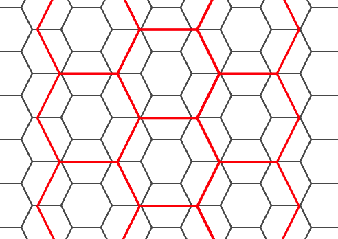
Availability: 3.1.0
Example: Counting points in hexagons
To do a point summary against a hexagonal tiling, generate a hexagon grid using the extent of the points as the bounds, then spatially join to that grid.
SELECT COUNT(*), hexes.geom
FROM
ST_HexagonGrid(
10000,
ST_SetSRID(ST_EstimatedExtent('pointtable', 'geom'), 3857)
) AS hexes
INNER JOIN
pointtable AS pts
ON ST_Intersects(pts.geom, hexes.geom)
GROUP BY hexes.geom;Example: Generating hex coverage of polygons
If we generate a set of hexagons for each polygon boundary and filter out those that do not intersect their hexagons, we end up with a tiling for each polygon.
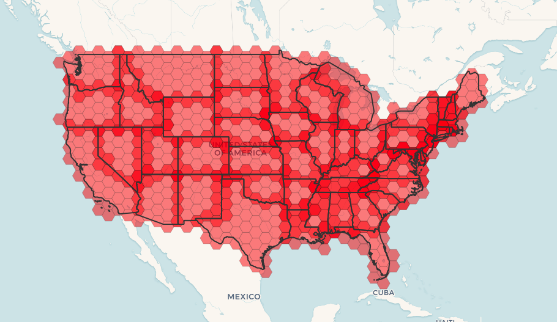
Tiling states results in a hexagon coverage of each state, and multiple hexagons overlapping at the borders between states.
| |
The LATERAL keyword is implied for set-returning functions when referring to a prior table in the FROM list. So CROSS JOIN LATERAL, CROSS JOIN, or just plain , are equivalent constructs for this example. |
SELECT admin1.gid, hex.geom
FROM
admin1
CROSS JOIN
ST_HexagonGrid(100000, admin1.geom) AS hex
WHERE
adm0_a3 = 'USA'
AND
ST_Intersects(admin1.geom, hex.geom)Name
ST_Hexagon — Returns a single hexagon, using the provided edge size and cell coordinate within the hexagon grid space.
Synopsis
geometry ST_Hexagon(float8 size, integer cell_i, integer cell_j, geometry origin);
Description
Uses the same hexagon tiling concept as ST_HexagonGrid, but generates just one hexagon at the desired cell coordinate. Optionally, can adjust origin coordinate of the tiling, the default origin is at 0,0.
Hexagons are generated with no SRID set, so use ST_SetSRID to set the SRID to the one you expect.
Availability: 3.1.0
Name
ST_SquareGrid — Returns a set of grid squares and cell indices that completely cover the bounds of the geometry argument.
Synopsis
setof record ST_SquareGrid(float8 size, geometry bounds);
Description
Starts with the concept of a square tiling of the plane. For a given planar SRS, and a given edge size, starting at the origin of the SRS, there is one unique square tiling of the plane, Tiling(SRS, Size). This function answers the question: what grids in a given Tiling(SRS, Size) overlap with a given bounds.
The SRS for the output squares is the SRS provided by the bounds geometry.
Doubling or edge size of the square generates a new parent tiling that perfectly fits with the original tiling. Standard web map tilings in mercator are just powers-of-two square grids in the mercator plane.
Availability: 3.1.0
Example: Generating a 1 degree grid for a country
The grid will fill the whole bounds of the country, so if you want just squares that touch the country you will have to filter afterwards with ST_Intersects.
WITH grid AS ( SELECT (ST_SquareGrid(1, ST_Transform(geom,4326))).* FROM admin0 WHERE name = 'Canada' ) SELEcT ST_AsText(geom) FROM grid
Example: Counting points in squares (using single chopped grid)
To do a point summary against a square tiling, generate a square grid using the extent of the points as the bounds, then spatially join to that grid. Note the estimated extent might be off from actual extent, so be cautious and at very least make sure you've analyzed your table.
SELECT COUNT(*), squares.geom
FROM
pointtable AS pts
INNER JOIN
ST_SquareGrid(
1000,
ST_SetSRID(ST_EstimatedExtent('pointtable', 'geom'), 3857)
) AS squares
ON ST_Intersects(pts.geom, squares.geom)
GROUP BY squares.geomExample: Counting points in squares using set of grid per point
This yields the same result as the first example but will be slower for a large number of points
SELECT COUNT(*), squares.geom
FROM
pointtable AS pts
INNER JOIN
ST_SquareGrid(
1000,
pts.geom
) AS squares
ON ST_Intersects(pts.geom, squares.geom)
GROUP BY squares.geomName
ST_Square — Returns a single square, using the provided edge size and cell coordinate within the square grid space.
Synopsis
geometry ST_Square(float8 size, integer cell_i, integer cell_j, geometry origin);
Description
Uses the same square tiling concept as ST_SquareGrid, but generates just one square at the desired cell coordinate. Optionally, can adjust origin coordinate of the tiling, the default origin is at 0,0.
Squares are generated with no SRID set, so use ST_SetSRID to set the SRID to the one you expect.
Availability: 3.1.0
Name
ST_Letters — Returns the input letters rendered as geometry with a default start position at the origin and default text height of 100.
Synopsis
geometry ST_Letters(text letters, json font);
Description
Uses a built-in font to render out a string as a multipolygon geometry. The default text height is 100.0, the distance from the bottom of a descender to the top of a capital. The default start position places the start of the baseline at the origin. Over-riding the font involves passing in a json map, with a character as the key, and base64 encoded TWKB for the font shape, with the fonts having a height of 1000 units from the bottom of the descenders to the tops of the capitals.
The text is generated at the origin by default, so to reposition and resize the text, first apply the ST_Scale function and then apply the ST_Translate function.
Availability: 3.3.0
- GeometryType — Returns the type of a geometry as text.
- ST_Boundary — Returns the boundary of a geometry.
- ST_BoundingDiagonal — Returns the diagonal of a geometry's bounding box.
- ST_CoordDim — Return the coordinate dimension of a geometry.
- ST_Dimension — Returns the topological dimension of a geometry.
- ST_Dump — Returns a set of
geometry_dumprows for the components of a geometry. - ST_DumpPoints — Returns a set of
geometry_dumprows for the coordinates in a geometry. - ST_DumpSegments — Returns a set of
geometry_dumprows for the segments in a geometry. - ST_DumpRings — Returns a set of
geometry_dumprows for the exterior and interior rings of a Polygon. - ST_EndPoint — Returns the last point of a LineString or CircularLineString.
- ST_Envelope — Returns a geometry representing the bounding box of a geometry.
- ST_ExteriorRing — Returns a LineString representing the exterior ring of a Polygon.
- ST_GeometryN — Return an element of a geometry collection.
- ST_GeometryType — Returns the SQL-MM type of a geometry as text.
- ST_HasArc — Tests if a geometry contains a circular arc
- ST_InteriorRingN — Returns the Nth interior ring (hole) of a Polygon.
- ST_IsClosed — Tests if a LineStrings's start and end points are coincident. For a PolyhedralSurface tests if it is closed (volumetric).
- ST_IsCollection — Tests if a geometry is a geometry collection type.
- ST_IsEmpty — Tests if a geometry is empty.
- ST_IsPolygonCCW — Tests if Polygons have exterior rings oriented counter-clockwise and interior rings oriented clockwise.
- ST_IsPolygonCW — Tests if Polygons have exterior rings oriented clockwise and interior rings oriented counter-clockwise.
- ST_IsRing — Tests if a LineString is closed and simple.
- ST_IsSimple — Tests if a geometry has no points of self-intersection or self-tangency.
- ST_M — Returns the M coordinate of a Point.
- ST_MemSize — Returns the amount of memory space a geometry takes.
- ST_NDims — Returns the coordinate dimension of a geometry.
- ST_NPoints — Returns the number of points (vertices) in a geometry.
- ST_NRings — Returns the number of rings in a polygonal geometry.
- ST_NumGeometries — Returns the number of elements in a geometry collection.
- ST_NumInteriorRings — Returns the number of interior rings (holes) of a Polygon.
- ST_NumInteriorRing — Returns the number of interior rings (holes) of a Polygon. Aias for ST_NumInteriorRings
- ST_NumPatches — Return the number of faces on a Polyhedral Surface. Will return null for non-polyhedral geometries.
- ST_NumPoints — Returns the number of points in a LineString or CircularString.
- ST_PatchN — Returns the Nth geometry (face) of a PolyhedralSurface.
- ST_PointN — Returns the Nth point in the first LineString or circular LineString in a geometry.
- ST_Points — Returns a MultiPoint containing the coordinates of a geometry.
- ST_StartPoint — Returns the first point of a LineString.
- ST_Summary — Returns a text summary of the contents of a geometry.
- ST_X — Returns the X coordinate of a Point.
- ST_Y — Returns the Y coordinate of a Point.
- ST_Z — Returns the Z coordinate of a Point.
- ST_Zmflag — Returns a code indicating the ZM coordinate dimension of a geometry.
Name
GeometryType — Returns the type of a geometry as text.
Synopsis
text GeometryType(geometry geomA);
Description
Returns the type of the geometry as a string. Eg: 'LINESTRING', 'POLYGON', 'MULTIPOINT', etc.
OGC SPEC s2.1.1.1 - Returns the name of the instantiable subtype of Geometry of which this Geometry instance is a member. The name of the instantiable subtype of Geometry is returned as a string.
| |
This function also indicates if the geometry is measured, by returning a string of the form 'POINTM'. |
Enhanced: 2.0.0 support for Polyhedral surfaces, Triangles and TIN was introduced.
This method implements the OGC Simple Features
Implementation Specification for SQL 1.1.
This method supports Circular Strings and Curves
This function supports 3d and will not drop the z-index.
This function supports Polyhedral surfaces.
This function supports Triangles and Triangulated Irregular Network Surfaces (TIN).
Examples
SELECT GeometryType(ST_GeomFromText('LINESTRING(77.29 29.07,77.42 29.26,77.27 29.31,77.29 29.07)'));
geometrytype
--------------
LINESTRING
SELECT ST_GeometryType(ST_GeomFromEWKT('POLYHEDRALSURFACE( ((0 0 0, 0 0 1, 0 1 1, 0 1 0, 0 0 0)),
((0 0 0, 0 1 0, 1 1 0, 1 0 0, 0 0 0)), ((0 0 0, 1 0 0, 1 0 1, 0 0 1, 0 0 0)),
((1 1 0, 1 1 1, 1 0 1, 1 0 0, 1 1 0)),
((0 1 0, 0 1 1, 1 1 1, 1 1 0, 0 1 0)), ((0 0 1, 1 0 1, 1 1 1, 0 1 1, 0 0 1)) )'));
--result
POLYHEDRALSURFACE
SELECT GeometryType(geom) as result
FROM
(SELECT
ST_GeomFromEWKT('TIN (((
0 0 0,
0 0 1,
0 1 0,
0 0 0
)), ((
0 0 0,
0 1 0,
1 1 0,
0 0 0
))
)') AS geom
) AS g;
result
--------
TIN Name
ST_Boundary — Returns the boundary of a geometry.
Synopsis
geometry ST_Boundary(geometry geomA);
Description
Returns the closure of the combinatorial boundary of this Geometry. The combinatorial boundary is defined as described in section 3.12.3.2 of the OGC SPEC. Because the result of this function is a closure, and hence topologically closed, the resulting boundary can be represented using representational geometry primitives as discussed in the OGC SPEC, section 3.12.2.
Performed by the GEOS module
| |
Prior to 2.0.0, this function throws an exception if used with |
This method implements the OGC Simple Features
Implementation Specification for SQL 1.1. OGC SPEC s2.1.1.1
This method implements the SQL/MM specification. SQL-MM IEC 13249-3: 5.1.17
This function supports 3d and will not drop the z-index.
Enhanced: 2.1.0 support for Triangle was introduced
Changed: 3.2.0 support for TIN, does not use geos, does not linearize curves
Examples
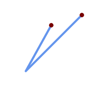 Linestring with boundary points overlaid
SELECT ST_Boundary(geom) FROM (SELECT 'LINESTRING(100 150,50 60, 70 80, 160 170)'::geometry As geom) As f;
-- ST_AsText output MULTIPOINT((100 150),(160 170))
| 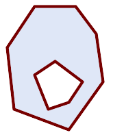 polygon holes with boundary multilinestring
SELECT ST_Boundary(geom) FROM (SELECT 'POLYGON (( 10 130, 50 190, 110 190, 140 150, 150 80, 100 10, 20 40, 10 130 ), ( 70 40, 100 50, 120 80, 80 110, 50 90, 70 40 ))'::geometry As geom) As f;
-- ST_AsText output MULTILINESTRING((10 130,50 190,110 190,140 150,150 80,100 10,20 40,10 130), (70 40,100 50,120 80,80 110,50 90,70 40))
|
SELECT ST_AsText(ST_Boundary(ST_GeomFromText('LINESTRING(1 1,0 0, -1 1)')));
st_astext
-----------
MULTIPOINT((1 1),(-1 1))
SELECT ST_AsText(ST_Boundary(ST_GeomFromText('POLYGON((1 1,0 0, -1 1, 1 1))')));
st_astext
----------
LINESTRING(1 1,0 0,-1 1,1 1)
--Using a 3d polygon
SELECT ST_AsEWKT(ST_Boundary(ST_GeomFromEWKT('POLYGON((1 1 1,0 0 1, -1 1 1, 1 1 1))')));
st_asewkt
-----------------------------------
LINESTRING(1 1 1,0 0 1,-1 1 1,1 1 1)
--Using a 3d multilinestring
SELECT ST_AsEWKT(ST_Boundary(ST_GeomFromEWKT('MULTILINESTRING((1 1 1,0 0 0.5, -1 1 1),(1 1 0.5,0 0 0.5, -1 1 0.5, 1 1 0.5) )')));
st_asewkt
----------
MULTIPOINT((-1 1 1),(1 1 0.75))
Name
ST_BoundingDiagonal — Returns the diagonal of a geometry's bounding box.
Synopsis
geometry ST_BoundingDiagonal(geometry geom, boolean fits=false);
Description
Returns the diagonal of the supplied geometry's bounding box as a LineString. The diagonal is a 2-point LineString with the minimum values of each dimension in its start point and the maximum values in its end point. If the input geometry is empty, the diagonal line is a LINESTRING EMPTY.
The optional fits parameter specifies if the best fit is needed.
If false, the diagonal of a somewhat larger bounding box can be accepted
(which is faster to compute for geometries with many vertices). In either case,
the bounding box of the returned diagonal line always covers the input
geometry.
The returned geometry retains the SRID and dimensionality (Z and M presence) of the input geometry.
| |
In degenerate cases (i.e. a single vertex in input) the returned linestring will be formally invalid (no interior). The result is still topologically valid. |
Availability: 2.2.0
This function supports 3d and will not drop the z-index.
This function supports M coordinates.
Name
ST_CoordDim — Return the coordinate dimension of a geometry.
Synopsis
integer ST_CoordDim(geometry geomA);
Description
Return the coordinate dimension of the ST_Geometry value.
This is the MM compliant alias name for ST_NDims
This method implements the OGC Simple Features
Implementation Specification for SQL 1.1.
This method implements the SQL/MM specification. SQL-MM 3: 5.1.3
This method supports Circular Strings and Curves
This function supports 3d and will not drop the z-index.
This function supports Polyhedral surfaces.
This function supports Triangles and Triangulated Irregular Network Surfaces (TIN).
Name
ST_Dimension — Returns the topological dimension of a geometry.
Synopsis
integer ST_Dimension(geometry g);
Description
Return the topological dimension of this Geometry object, which must
be less than or equal to the coordinate dimension. OGC SPEC
s2.1.1.1 - returns 0 for POINT, 1 for LINESTRING, 2 for POLYGON, and
the largest dimension of the components of a
GEOMETRYCOLLECTION.
If the dimension is unknown (e.g. for an empty GEOMETRYCOLLECTION) 0 is returned.
This method implements the SQL/MM specification. SQL-MM 3: 5.1.2
Enhanced: 2.0.0 support for Polyhedral surfaces and TINs was introduced. No longer throws an exception if given empty geometry.
| |
Prior to 2.0.0, this function throws an exception if used with empty geometry. |
This function supports Polyhedral surfaces.
This function supports Triangles and Triangulated Irregular Network Surfaces (TIN).
Name
ST_Dump — Returns a set of geometry_dump rows for the components of a geometry.
Synopsis
geometry_dump[] ST_Dump(geometry g1);
Description
A set-returning function (SRF) that extracts the components of a geometry.
It returns a set of
geometry_dump rows,
each containing a geometry (geom field)
and an array of integers (path field).
For an atomic geometry type
(POINT,LINESTRING,POLYGON) a single record is returned with
an empty path array and the input geometry as geom.
For a collection or multi-geometry a record is returned for each
of the collection components, and the path denotes the
position of the component inside the collection.
ST_Dump is useful for expanding geometries. It is the inverse of a ST_Collect / GROUP BY, in that it creates new rows. For example it can be use to expand MULTIPOLYGONS into POLYGONS.
Enhanced: 2.0.0 support for Polyhedral surfaces, Triangles and TIN was introduced.
Availability: PostGIS 1.0.0RC1. Requires PostgreSQL 7.3 or higher.
| |
Prior to 1.3.4, this function crashes if used with geometries that contain CURVES. This is fixed in 1.3.4+ |
This method supports Circular Strings and Curves
This function supports Polyhedral surfaces.
This function supports Triangles and Triangulated Irregular Network Surfaces (TIN).
This function supports 3d and will not drop the z-index.
Standard Examples
SELECT sometable.field1, sometable.field1,
(ST_Dump(sometable.geom)).geom AS geom
FROM sometable;
-- Break a compound curve into its constituent linestrings and circularstrings
SELECT ST_AsEWKT(a.geom), ST_HasArc(a.geom)
FROM ( SELECT (ST_Dump(p_geom)).geom AS geom
FROM (SELECT ST_GeomFromEWKT('COMPOUNDCURVE(CIRCULARSTRING(0 0, 1 1, 1 0),(1 0, 0 1))') AS p_geom) AS b
) AS a;
st_asewkt | st_hasarc
-----------------------------+----------
CIRCULARSTRING(0 0,1 1,1 0) | t
LINESTRING(1 0,0 1) | f
(2 rows)Polyhedral Surfaces, TIN and Triangle Examples
-- Polyhedral surface example
-- Break a Polyhedral surface into its faces
SELECT (a.p_geom).path[1] As path, ST_AsEWKT((a.p_geom).geom) As geom_ewkt
FROM (SELECT ST_Dump(ST_GeomFromEWKT('POLYHEDRALSURFACE(
((0 0 0, 0 0 1, 0 1 1, 0 1 0, 0 0 0)),
((0 0 0, 0 1 0, 1 1 0, 1 0 0, 0 0 0)), ((0 0 0, 1 0 0, 1 0 1, 0 0 1, 0 0 0)), ((1 1 0, 1 1 1, 1 0 1, 1 0 0, 1 1 0)),
((0 1 0, 0 1 1, 1 1 1, 1 1 0, 0 1 0)), ((0 0 1, 1 0 1, 1 1 1, 0 1 1, 0 0 1))
)') ) AS p_geom ) AS a;
path | geom_ewkt
------+------------------------------------------
1 | POLYGON((0 0 0,0 0 1,0 1 1,0 1 0,0 0 0))
2 | POLYGON((0 0 0,0 1 0,1 1 0,1 0 0,0 0 0))
3 | POLYGON((0 0 0,1 0 0,1 0 1,0 0 1,0 0 0))
4 | POLYGON((1 1 0,1 1 1,1 0 1,1 0 0,1 1 0))
5 | POLYGON((0 1 0,0 1 1,1 1 1,1 1 0,0 1 0))
6 | POLYGON((0 0 1,1 0 1,1 1 1,0 1 1,0 0 1))-- TIN --
SELECT (g.gdump).path, ST_AsEWKT((g.gdump).geom) as wkt
FROM
(SELECT
ST_Dump( ST_GeomFromEWKT('TIN (((
0 0 0,
0 0 1,
0 1 0,
0 0 0
)), ((
0 0 0,
0 1 0,
1 1 0,
0 0 0
))
)') ) AS gdump
) AS g;
-- result --
path | wkt
------+-------------------------------------
{1} | TRIANGLE((0 0 0,0 0 1,0 1 0,0 0 0))
{2} | TRIANGLE((0 0 0,0 1 0,1 1 0,0 0 0))
Name
ST_DumpPoints — Returns a set of geometry_dump rows for the coordinates in a geometry.
Synopsis
geometry_dump[] ST_DumpPoints(geometry geom);
Description
A set-returning function (SRF) that extracts the coordinates (vertices) of a geometry.
It returns a set of
geometry_dump rows,
each containing a geometry (geom field)
and an array of integers (path field).
the
geomfieldPOINTs represent the coordinates of the supplied geometry.the
pathfield (aninteger[]) is an index enumerating the coordinate positions in the elements of the supplied geometry. The indices are 1-based. For example, for aLINESTRINGthe paths are{i}whereiis thenthcoordinate in theLINESTRING. For aPOLYGONthe paths are{i,j}whereiis the ring number (1 is outer; inner rings follow) andjis the coordinate position in the ring.
To obtain a single geometry containing the coordinates use ST_Points.
Enhanced: 2.1.0 Faster speed. Reimplemented as native-C.
Enhanced: 2.0.0 support for Polyhedral surfaces, Triangles and TIN was introduced.
Availability: 1.5.0
This method supports Circular Strings and Curves
This function supports Polyhedral surfaces.
This function supports Triangles and Triangulated Irregular Network Surfaces (TIN).
This function supports 3d and will not drop the z-index.
Classic Explode a Table of LineStrings into nodes
SELECT edge_id, (dp).path[1] As index, ST_AsText((dp).geom) As wktnode
FROM (SELECT 1 As edge_id
, ST_DumpPoints(ST_GeomFromText('LINESTRING(1 2, 3 4, 10 10)')) AS dp
UNION ALL
SELECT 2 As edge_id
, ST_DumpPoints(ST_GeomFromText('LINESTRING(3 5, 5 6, 9 10)')) AS dp
) As foo;
edge_id | index | wktnode
---------+-------+--------------
1 | 1 | POINT(1 2)
1 | 2 | POINT(3 4)
1 | 3 | POINT(10 10)
2 | 1 | POINT(3 5)
2 | 2 | POINT(5 6)
2 | 3 | POINT(9 10)Standard Geometry Examples
SELECT path, ST_AsText(geom)
FROM (
SELECT (ST_DumpPoints(g.geom)).*
FROM
(SELECT
'GEOMETRYCOLLECTION(
POINT ( 0 1 ),
LINESTRING ( 0 3, 3 4 ),
POLYGON (( 2 0, 2 3, 0 2, 2 0 )),
POLYGON (( 3 0, 3 3, 6 3, 6 0, 3 0 ),
( 5 1, 4 2, 5 2, 5 1 )),
MULTIPOLYGON (
(( 0 5, 0 8, 4 8, 4 5, 0 5 ),
( 1 6, 3 6, 2 7, 1 6 )),
(( 5 4, 5 8, 6 7, 5 4 ))
)
)'::geometry AS geom
) AS g
) j;
path | st_astext
-----------+------------
{1,1} | POINT(0 1)
{2,1} | POINT(0 3)
{2,2} | POINT(3 4)
{3,1,1} | POINT(2 0)
{3,1,2} | POINT(2 3)
{3,1,3} | POINT(0 2)
{3,1,4} | POINT(2 0)
{4,1,1} | POINT(3 0)
{4,1,2} | POINT(3 3)
{4,1,3} | POINT(6 3)
{4,1,4} | POINT(6 0)
{4,1,5} | POINT(3 0)
{4,2,1} | POINT(5 1)
{4,2,2} | POINT(4 2)
{4,2,3} | POINT(5 2)
{4,2,4} | POINT(5 1)
{5,1,1,1} | POINT(0 5)
{5,1,1,2} | POINT(0 8)
{5,1,1,3} | POINT(4 8)
{5,1,1,4} | POINT(4 5)
{5,1,1,5} | POINT(0 5)
{5,1,2,1} | POINT(1 6)
{5,1,2,2} | POINT(3 6)
{5,1,2,3} | POINT(2 7)
{5,1,2,4} | POINT(1 6)
{5,2,1,1} | POINT(5 4)
{5,2,1,2} | POINT(5 8)
{5,2,1,3} | POINT(6 7)
{5,2,1,4} | POINT(5 4)
(29 rows)Polyhedral Surfaces, TIN and Triangle Examples
-- Polyhedral surface cube --
SELECT (g.gdump).path, ST_AsEWKT((g.gdump).geom) as wkt
FROM
(SELECT
ST_DumpPoints(ST_GeomFromEWKT('POLYHEDRALSURFACE( ((0 0 0, 0 0 1, 0 1 1, 0 1 0, 0 0 0)),
((0 0 0, 0 1 0, 1 1 0, 1 0 0, 0 0 0)), ((0 0 0, 1 0 0, 1 0 1, 0 0 1, 0 0 0)),
((1 1 0, 1 1 1, 1 0 1, 1 0 0, 1 1 0)),
((0 1 0, 0 1 1, 1 1 1, 1 1 0, 0 1 0)), ((0 0 1, 1 0 1, 1 1 1, 0 1 1, 0 0 1)) )') ) AS gdump
) AS g;
-- result --
path | wkt
---------+--------------
{1,1,1} | POINT(0 0 0)
{1,1,2} | POINT(0 0 1)
{1,1,3} | POINT(0 1 1)
{1,1,4} | POINT(0 1 0)
{1,1,5} | POINT(0 0 0)
{2,1,1} | POINT(0 0 0)
{2,1,2} | POINT(0 1 0)
{2,1,3} | POINT(1 1 0)
{2,1,4} | POINT(1 0 0)
{2,1,5} | POINT(0 0 0)
{3,1,1} | POINT(0 0 0)
{3,1,2} | POINT(1 0 0)
{3,1,3} | POINT(1 0 1)
{3,1,4} | POINT(0 0 1)
{3,1,5} | POINT(0 0 0)
{4,1,1} | POINT(1 1 0)
{4,1,2} | POINT(1 1 1)
{4,1,3} | POINT(1 0 1)
{4,1,4} | POINT(1 0 0)
{4,1,5} | POINT(1 1 0)
{5,1,1} | POINT(0 1 0)
{5,1,2} | POINT(0 1 1)
{5,1,3} | POINT(1 1 1)
{5,1,4} | POINT(1 1 0)
{5,1,5} | POINT(0 1 0)
{6,1,1} | POINT(0 0 1)
{6,1,2} | POINT(1 0 1)
{6,1,3} | POINT(1 1 1)
{6,1,4} | POINT(0 1 1)
{6,1,5} | POINT(0 0 1)
(30 rows)-- Triangle --
SELECT (g.gdump).path, ST_AsText((g.gdump).geom) as wkt
FROM
(SELECT
ST_DumpPoints( ST_GeomFromEWKT('TRIANGLE ((
0 0,
0 9,
9 0,
0 0
))') ) AS gdump
) AS g;
-- result --
path | wkt
------+------------
{1} | POINT(0 0)
{2} | POINT(0 9)
{3} | POINT(9 0)
{4} | POINT(0 0)
-- TIN --
SELECT (g.gdump).path, ST_AsEWKT((g.gdump).geom) as wkt
FROM
(SELECT
ST_DumpPoints( ST_GeomFromEWKT('TIN (((
0 0 0,
0 0 1,
0 1 0,
0 0 0
)), ((
0 0 0,
0 1 0,
1 1 0,
0 0 0
))
)') ) AS gdump
) AS g;
-- result --
path | wkt
---------+--------------
{1,1,1} | POINT(0 0 0)
{1,1,2} | POINT(0 0 1)
{1,1,3} | POINT(0 1 0)
{1,1,4} | POINT(0 0 0)
{2,1,1} | POINT(0 0 0)
{2,1,2} | POINT(0 1 0)
{2,1,3} | POINT(1 1 0)
{2,1,4} | POINT(0 0 0)
(8 rows)
Name
ST_DumpSegments — Returns a set of geometry_dump rows for the segments in a geometry.
Synopsis
geometry_dump[] ST_DumpSegments(geometry geom);
Description
A set-returning function (SRF) that extracts the segments of a geometry.
It returns a set of
geometry_dump rows,
each containing a geometry (geom field)
and an array of integers (path field).
the
geomfieldLINESTRINGs represent the segments of the supplied geometry.the
pathfield (aninteger[]) is an index enumerating the segment start point positions in the elements of the supplied geometry. The indices are 1-based. For example, for aLINESTRINGthe paths are{i}whereiis thenthsegment start point in theLINESTRING. For aPOLYGONthe paths are{i,j}whereiis the ring number (1 is outer; inner rings follow) andjis the segment start point position in the ring.
Availability: 3.2.0
This function supports Triangles and Triangulated Irregular Network Surfaces (TIN).
This function supports 3d and will not drop the z-index.
Standard Geometry Examples
SELECT path, ST_AsText(geom)
FROM (
SELECT (ST_DumpSegments(g.geom)).*
FROM (SELECT 'GEOMETRYCOLLECTION(
LINESTRING(1 1, 3 3, 4 4),
POLYGON((5 5, 6 6, 7 7, 5 5))
)'::geometry AS geom
) AS g
) j;
path │ st_astext
---------------------------------
{1,1} │ LINESTRING(1 1,3 3)
{1,2} │ LINESTRING(3 3,4 4)
{2,1,1} │ LINESTRING(5 5,6 6)
{2,1,2} │ LINESTRING(6 6,7 7)
{2,1,3} │ LINESTRING(7 7,5 5)
(5 rows)TIN and Triangle Examples
-- Triangle --
SELECT path, ST_AsText(geom)
FROM (
SELECT (ST_DumpSegments(g.geom)).*
FROM (SELECT 'TRIANGLE((
0 0,
0 9,
9 0,
0 0
))'::geometry AS geom
) AS g
) j;
path │ st_astext
---------------------------------
{1,1} │ LINESTRING(0 0,0 9)
{1,2} │ LINESTRING(0 9,9 0)
{1,3} │ LINESTRING(9 0,0 0)
(3 rows)
-- TIN --
SELECT path, ST_AsEWKT(geom)
FROM (
SELECT (ST_DumpSegments(g.geom)).*
FROM (SELECT 'TIN(((
0 0 0,
0 0 1,
0 1 0,
0 0 0
)), ((
0 0 0,
0 1 0,
1 1 0,
0 0 0
))
)'::geometry AS geom
) AS g
) j;
path │ st_asewkt
---------------------------------
{1,1,1} │ LINESTRING(0 0 0,0 0 1)
{1,1,2} │ LINESTRING(0 0 1,0 1 0)
{1,1,3} │ LINESTRING(0 1 0,0 0 0)
{2,1,1} │ LINESTRING(0 0 0,0 1 0)
{2,1,2} │ LINESTRING(0 1 0,1 1 0)
{2,1,3} │ LINESTRING(1 1 0,0 0 0)
(6 rows)
Name
ST_DumpRings — Returns a set of geometry_dump rows for
the exterior and interior rings of a Polygon.
Synopsis
geometry_dump[] ST_DumpRings(geometry a_polygon);
Description
A set-returning function (SRF) that extracts the rings of a polygon.
It returns a set of geometry_dump rows,
each containing a geometry (geom field)
and an array of integers (path field).
The geom field contains each ring as a POLYGON.
The path field is an integer array of length 1 containing the polygon ring index.
The exterior ring (shell) has index 0. The interior rings (holes) have indices of 1 and higher.
| |
This only works for POLYGON geometries. It does not work for MULTIPOLYGONS |
Availability: PostGIS 1.1.3. Requires PostgreSQL 7.3 or higher.
This function supports 3d and will not drop the z-index.
Examples
General form of query.
SELECT polyTable.field1, polyTable.field1, (ST_DumpRings(polyTable.geom)).geom As geom FROM polyTable;
A polygon with a single hole.
SELECT path, ST_AsEWKT(geom) As geom
FROM ST_DumpRings(
ST_GeomFromEWKT('POLYGON((-8149064 5133092 1,-8149064 5132986 1,-8148996 5132839 1,-8148972 5132767 1,-8148958 5132508 1,-8148941 5132466 1,-8148924 5132394 1,
-8148903 5132210 1,-8148930 5131967 1,-8148992 5131978 1,-8149237 5132093 1,-8149404 5132211 1,-8149647 5132310 1,-8149757 5132394 1,
-8150305 5132788 1,-8149064 5133092 1),
(-8149362 5132394 1,-8149446 5132501 1,-8149548 5132597 1,-8149695 5132675 1,-8149362 5132394 1))')
) as foo;
path | geom
----------------------------------------------------------------------------------------------------------------
{0} | POLYGON((-8149064 5133092 1,-8149064 5132986 1,-8148996 5132839 1,-8148972 5132767 1,-8148958 5132508 1,
| -8148941 5132466 1,-8148924 5132394 1,
| -8148903 5132210 1,-8148930 5131967 1,
| -8148992 5131978 1,-8149237 5132093 1,
| -8149404 5132211 1,-8149647 5132310 1,-8149757 5132394 1,-8150305 5132788 1,-8149064 5133092 1))
{1} | POLYGON((-8149362 5132394 1,-8149446 5132501 1,
| -8149548 5132597 1,-8149695 5132675 1,-8149362 5132394 1))Name
ST_EndPoint — Returns the last point of a LineString or CircularLineString.
Synopsis
geometry ST_EndPoint(geometry g);
Description
Returns the last point of a LINESTRING
or CIRCULARLINESTRING geometry
as a POINT.
Returns NULL if the input
is not a LINESTRING or CIRCULARLINESTRING.
This method implements the SQL/MM specification. SQL-MM 3: 7.1.4
This function supports 3d and will not drop the z-index.
This method supports Circular Strings and Curves
| |
Changed: 2.0.0 no longer works with single geometry MultiLineStrings. In older versions of PostGIS a single-line MultiLineString would work with this function and return the end point. In 2.0.0 it returns NULL like any other MultiLineString. The old behavior was an undocumented feature, but people who assumed they had their data stored as LINESTRING may experience these returning NULL in 2.0.0. |
Examples
End point of a LineString
postgis=# SELECT ST_AsText(ST_EndPoint('LINESTRING(1 1, 2 2, 3 3)'::geometry));
st_astext
------------
POINT(3 3)
End point of a non-LineString is NULL
SELECT ST_EndPoint('POINT(1 1)'::geometry) IS NULL AS is_null;
is_null
----------
t
End point of a 3D LineString
--3d endpoint
SELECT ST_AsEWKT(ST_EndPoint('LINESTRING(1 1 2, 1 2 3, 0 0 5)'));
st_asewkt
--------------
POINT(0 0 5)
End point of a CircularString
SELECT ST_AsText(ST_EndPoint('CIRCULARSTRING(5 2,-3 1.999999, -2 1, -4 2, 6 3)'::geometry));
st_astext
------------
POINT(6 3)
Name
ST_Envelope — Returns a geometry representing the bounding box of a geometry.
Synopsis
geometry ST_Envelope(geometry g1);
Description
Returns the double-precision (float8) minimum bounding box for the supplied geometry, as a geometry.
The polygon is defined by the corner points of the bounding box
((MINX, MINY),
(MINX, MAXY),
(MAXX, MAXY),
(MAXX, MINY),
(MINX, MINY)). (PostGIS will add a
ZMIN/ZMAX coordinate as
well).
Degenerate cases (vertical lines, points) will return a geometry of
lower dimension than POLYGON, ie.
POINT or LINESTRING.
Availability: 1.5.0 behavior changed to output double precision instead of float4
This method implements the OGC Simple Features
Implementation Specification for SQL 1.1. s2.1.1.1
This method implements the SQL/MM specification. SQL-MM 3: 5.1.19
Examples
SELECT ST_AsText(ST_Envelope('POINT(1 3)'::geometry));
st_astext
------------
POINT(1 3)
(1 row)
SELECT ST_AsText(ST_Envelope('LINESTRING(0 0, 1 3)'::geometry));
st_astext
--------------------------------
POLYGON((0 0,0 3,1 3,1 0,0 0))
(1 row)
SELECT ST_AsText(ST_Envelope('POLYGON((0 0, 0 1, 1.0000001 1, 1.0000001 0, 0 0))'::geometry));
st_astext
--------------------------------------------------------------
POLYGON((0 0,0 1,1.00000011920929 1,1.00000011920929 0,0 0))
(1 row)
SELECT ST_AsText(ST_Envelope('POLYGON((0 0, 0 1, 1.0000000001 1, 1.0000000001 0, 0 0))'::geometry));
st_astext
--------------------------------------------------------------
POLYGON((0 0,0 1,1.00000011920929 1,1.00000011920929 0,0 0))
(1 row)
SELECT Box3D(geom), Box2D(geom), ST_AsText(ST_Envelope(geom)) As envelopewkt
FROM (SELECT 'POLYGON((0 0, 0 1000012333334.34545678, 1.0000001 1, 1.0000001 0, 0 0))'::geometry As geom) As foo;

Envelope of a point and linestring.
SELECT ST_AsText(ST_Envelope(
ST_Collect(
ST_GeomFromText('LINESTRING(55 75,125 150)'),
ST_Point(20, 80))
)) As wktenv;
wktenv
-----------
POLYGON((20 75,20 150,125 150,125 75,20 75))Name
ST_ExteriorRing — Returns a LineString representing the exterior ring of a Polygon.
Synopsis
geometry ST_ExteriorRing(geometry a_polygon);
Description
Returns a LINESTRING representing the exterior ring (shell) of a POLYGON. Returns NULL if the geometry is not a polygon.
| |
This function does not support MULTIPOLYGONs. For MULTIPOLYGONs use in conjunction with ST_GeometryN or ST_Dump |
This method implements the OGC Simple Features
Implementation Specification for SQL 1.1. 2.1.5.1
This method implements the SQL/MM specification. SQL-MM 3: 8.2.3, 8.3.3
This function supports 3d and will not drop the z-index.
Examples
--If you have a table of polygons
SELECT gid, ST_ExteriorRing(geom) AS ering
FROM sometable;
--If you have a table of MULTIPOLYGONs
--and want to return a MULTILINESTRING composed of the exterior rings of each polygon
SELECT gid, ST_Collect(ST_ExteriorRing(geom)) AS erings
FROM (SELECT gid, (ST_Dump(geom)).geom As geom
FROM sometable) As foo
GROUP BY gid;
--3d Example
SELECT ST_AsEWKT(
ST_ExteriorRing(
ST_GeomFromEWKT('POLYGON((0 0 1, 1 1 1, 1 2 1, 1 1 1, 0 0 1))')
)
);
st_asewkt
---------
LINESTRING(0 0 1,1 1 1,1 2 1,1 1 1,0 0 1)
Name
ST_GeometryN — Return an element of a geometry collection.
Synopsis
geometry ST_GeometryN(geometry geomA, integer n);
Description
Return the 1-based Nth element geometry of an input geometry which is a GEOMETRYCOLLECTION, MULTIPOINT, MULTILINESTRING, MULTICURVE, MULTI)POLYGON, or POLYHEDRALSURFACE. Otherwise, returns NULL.
| |
Index is 1-based as for OGC specs since version 0.8.0. Previous versions implemented this as 0-based instead. |
| |
To extract all elements of a geometry, ST_Dump is more efficient and works for atomic geometries. |
Enhanced: 2.0.0 support for Polyhedral surfaces, Triangles and TIN was introduced.
Changed: 2.0.0 Prior versions would return NULL for singular geometries. This was changed to return the geometry for ST_GeometryN(..,1) case.
This method implements the OGC Simple Features
Implementation Specification for SQL 1.1.
This method implements the SQL/MM specification. SQL-MM 3: 9.1.5
This function supports 3d and will not drop the z-index.
This method supports Circular Strings and Curves
This function supports Polyhedral surfaces.
This function supports Triangles and Triangulated Irregular Network Surfaces (TIN).
Standard Examples
--Extracting a subset of points from a 3d multipoint
SELECT n, ST_AsEWKT(ST_GeometryN(geom, n)) As geomewkt
FROM (
VALUES (ST_GeomFromEWKT('MULTIPOINT((1 2 7), (3 4 7), (5 6 7), (8 9 10))') ),
( ST_GeomFromEWKT('MULTICURVE(CIRCULARSTRING(2.5 2.5,4.5 2.5, 3.5 3.5), (10 11, 12 11))') )
)As foo(geom)
CROSS JOIN generate_series(1,100) n
WHERE n <= ST_NumGeometries(geom);
n | geomewkt
---+-----------------------------------------
1 | POINT(1 2 7)
2 | POINT(3 4 7)
3 | POINT(5 6 7)
4 | POINT(8 9 10)
1 | CIRCULARSTRING(2.5 2.5,4.5 2.5,3.5 3.5)
2 | LINESTRING(10 11,12 11)
--Extracting all geometries (useful when you want to assign an id)
SELECT gid, n, ST_GeometryN(geom, n)
FROM sometable CROSS JOIN generate_series(1,100) n
WHERE n <= ST_NumGeometries(geom);Polyhedral Surfaces, TIN and Triangle Examples
-- Polyhedral surface example
-- Break a Polyhedral surface into its faces
SELECT ST_AsEWKT(ST_GeometryN(p_geom,3)) As geom_ewkt
FROM (SELECT ST_GeomFromEWKT('POLYHEDRALSURFACE(
((0 0 0, 0 0 1, 0 1 1, 0 1 0, 0 0 0)),
((0 0 0, 0 1 0, 1 1 0, 1 0 0, 0 0 0)),
((0 0 0, 1 0 0, 1 0 1, 0 0 1, 0 0 0)),
((1 1 0, 1 1 1, 1 0 1, 1 0 0, 1 1 0)),
((0 1 0, 0 1 1, 1 1 1, 1 1 0, 0 1 0)),
((0 0 1, 1 0 1, 1 1 1, 0 1 1, 0 0 1))
)') AS p_geom ) AS a;
geom_ewkt
------------------------------------------
POLYGON((0 0 0,1 0 0,1 0 1,0 0 1,0 0 0))-- TIN --
SELECT ST_AsEWKT(ST_GeometryN(geom,2)) as wkt
FROM
(SELECT
ST_GeomFromEWKT('TIN (((
0 0 0,
0 0 1,
0 1 0,
0 0 0
)), ((
0 0 0,
0 1 0,
1 1 0,
0 0 0
))
)') AS geom
) AS g;
-- result --
wkt
-------------------------------------
TRIANGLE((0 0 0,0 1 0,1 1 0,0 0 0))Name
ST_GeometryType — Returns the SQL-MM type of a geometry as text.
Synopsis
text ST_GeometryType(geometry g1);
Description
Returns the type of the geometry as a string. EG: 'ST_LineString', 'ST_Polygon','ST_MultiPolygon' etc. This function differs from GeometryType(geometry) in the case of the string and ST in front that is returned, as well as the fact that it will not indicate whether the geometry is measured.
Enhanced: 2.0.0 support for Polyhedral surfaces was introduced.
This method implements the SQL/MM specification. SQL-MM 3: 5.1.4
This function supports 3d and will not drop the z-index.
This function supports Polyhedral surfaces.
Examples
SELECT ST_GeometryType(ST_GeomFromText('LINESTRING(77.29 29.07,77.42 29.26,77.27 29.31,77.29 29.07)'));
--result
ST_LineStringSELECT ST_GeometryType(ST_GeomFromEWKT('POLYHEDRALSURFACE( ((0 0 0, 0 0 1, 0 1 1, 0 1 0, 0 0 0)),
((0 0 0, 0 1 0, 1 1 0, 1 0 0, 0 0 0)), ((0 0 0, 1 0 0, 1 0 1, 0 0 1, 0 0 0)),
((1 1 0, 1 1 1, 1 0 1, 1 0 0, 1 1 0)),
((0 1 0, 0 1 1, 1 1 1, 1 1 0, 0 1 0)), ((0 0 1, 1 0 1, 1 1 1, 0 1 1, 0 0 1)) )'));
--result
ST_PolyhedralSurfaceSELECT ST_GeometryType(ST_GeomFromEWKT('POLYHEDRALSURFACE( ((0 0 0, 0 0 1, 0 1 1, 0 1 0, 0 0 0)),
((0 0 0, 0 1 0, 1 1 0, 1 0 0, 0 0 0)), ((0 0 0, 1 0 0, 1 0 1, 0 0 1, 0 0 0)),
((1 1 0, 1 1 1, 1 0 1, 1 0 0, 1 1 0)),
((0 1 0, 0 1 1, 1 1 1, 1 1 0, 0 1 0)), ((0 0 1, 1 0 1, 1 1 1, 0 1 1, 0 0 1)) )'));
--result
ST_PolyhedralSurfaceSELECT ST_GeometryType(geom) as result
FROM
(SELECT
ST_GeomFromEWKT('TIN (((
0 0 0,
0 0 1,
0 1 0,
0 0 0
)), ((
0 0 0,
0 1 0,
1 1 0,
0 0 0
))
)') AS geom
) AS g;
result
--------
ST_Tin Name
ST_HasArc — Tests if a geometry contains a circular arc
Synopsis
boolean ST_HasArc(geometry geomA);
Description
Returns true if a geometry or geometry collection contains a circular string
Availability: 1.2.3?
This function supports 3d and will not drop the z-index.
This method supports Circular Strings and Curves
Name
ST_InteriorRingN — Returns the Nth interior ring (hole) of a Polygon.
Synopsis
geometry ST_InteriorRingN(geometry a_polygon, integer n);
Description
Returns the Nth interior ring (hole) of a POLYGON geometry as a LINESTRING. The index starts at 1. Returns NULL if the geometry is not a polygon or the index is out of range.
| |
This function does not support MULTIPOLYGONs. For MULTIPOLYGONs use in conjunction with ST_GeometryN or ST_Dump |
This method implements the OGC Simple Features
Implementation Specification for SQL 1.1.
This method implements the SQL/MM specification. SQL-MM 3: 8.2.6, 8.3.5
This function supports 3d and will not drop the z-index.
Name
ST_IsClosed — Tests if a LineStrings's start and end points are coincident. For a PolyhedralSurface tests if it is closed (volumetric).
Synopsis
boolean ST_IsClosed(geometry g);
Description
Returns TRUE if the LINESTRING's
start and end points are coincident.
For Polyhedral Surfaces, reports if the surface is areal (open) or volumetric (closed).
This method implements the OGC Simple Features
Implementation Specification for SQL 1.1.
This method implements the SQL/MM specification. SQL-MM 3: 7.1.5, 9.3.3
| |
SQL-MM defines the result of
|
This function supports 3d and will not drop the z-index.
This method supports Circular Strings and Curves
Enhanced: 2.0.0 support for Polyhedral surfaces was introduced.
This function supports Polyhedral surfaces.
Line String and Point Examples
postgis=# SELECT ST_IsClosed('LINESTRING(0 0, 1 1)'::geometry);
st_isclosed
-------------
f
(1 row)
postgis=# SELECT ST_IsClosed('LINESTRING(0 0, 0 1, 1 1, 0 0)'::geometry);
st_isclosed
-------------
t
(1 row)
postgis=# SELECT ST_IsClosed('MULTILINESTRING((0 0, 0 1, 1 1, 0 0),(0 0, 1 1))'::geometry);
st_isclosed
-------------
f
(1 row)
postgis=# SELECT ST_IsClosed('POINT(0 0)'::geometry);
st_isclosed
-------------
t
(1 row)
postgis=# SELECT ST_IsClosed('MULTIPOINT((0 0), (1 1))'::geometry);
st_isclosed
-------------
t
(1 row)Polyhedral Surface Examples
-- A cube --
SELECT ST_IsClosed(ST_GeomFromEWKT('POLYHEDRALSURFACE( ((0 0 0, 0 0 1, 0 1 1, 0 1 0, 0 0 0)),
((0 0 0, 0 1 0, 1 1 0, 1 0 0, 0 0 0)), ((0 0 0, 1 0 0, 1 0 1, 0 0 1, 0 0 0)),
((1 1 0, 1 1 1, 1 0 1, 1 0 0, 1 1 0)),
((0 1 0, 0 1 1, 1 1 1, 1 1 0, 0 1 0)), ((0 0 1, 1 0 1, 1 1 1, 0 1 1, 0 0 1)) )'));
st_isclosed
-------------
t
-- Same as cube but missing a side --
SELECT ST_IsClosed(ST_GeomFromEWKT('POLYHEDRALSURFACE( ((0 0 0, 0 0 1, 0 1 1, 0 1 0, 0 0 0)),
((0 0 0, 0 1 0, 1 1 0, 1 0 0, 0 0 0)), ((0 0 0, 1 0 0, 1 0 1, 0 0 1, 0 0 0)),
((1 1 0, 1 1 1, 1 0 1, 1 0 0, 1 1 0)),
((0 1 0, 0 1 1, 1 1 1, 1 1 0, 0 1 0)) )'));
st_isclosed
-------------
f
Name
ST_IsCollection — Tests if a geometry is a geometry collection type.
Synopsis
boolean ST_IsCollection(geometry g);
Description
Returns TRUE if the geometry type of
the argument a geometry collection type. Collection types are the following:
GEOMETRYCOLLECTION
MULTI{POINT,POLYGON,LINESTRING,CURVE,SURFACE}
COMPOUNDCURVE
| |
This function analyzes the type of the geometry. This means
that it will return |
This function supports 3d and will not drop the z-index.
This method supports Circular Strings and Curves
Examples
postgis=# SELECT ST_IsCollection('LINESTRING(0 0, 1 1)'::geometry);
st_iscollection
-------------
f
(1 row)
postgis=# SELECT ST_IsCollection('MULTIPOINT EMPTY'::geometry);
st_iscollection
-------------
t
(1 row)
postgis=# SELECT ST_IsCollection('MULTIPOINT((0 0))'::geometry);
st_iscollection
-------------
t
(1 row)
postgis=# SELECT ST_IsCollection('MULTIPOINT((0 0), (42 42))'::geometry);
st_iscollection
-------------
t
(1 row)
postgis=# SELECT ST_IsCollection('GEOMETRYCOLLECTION(POINT(0 0))'::geometry);
st_iscollection
-------------
t
(1 row)Name
ST_IsEmpty — Tests if a geometry is empty.
Synopsis
boolean ST_IsEmpty(geometry geomA);
Description
Returns true if this Geometry is an empty geometry. If true, then this Geometry represents an empty geometry collection, polygon, point etc.
| |
SQL-MM defines the result of ST_IsEmpty(NULL) to be 0, while PostGIS returns NULL. |
This method implements the OGC Simple Features
Implementation Specification for SQL 1.1. s2.1.1.1
This method implements the SQL/MM specification. SQL-MM 3: 5.1.7
This method supports Circular Strings and Curves
| |
Changed: 2.0.0 In prior versions of PostGIS ST_GeomFromText('GEOMETRYCOLLECTION(EMPTY)') was allowed. This is now illegal in PostGIS 2.0.0 to better conform with SQL/MM standards |
Examples
SELECT ST_IsEmpty(ST_GeomFromText('GEOMETRYCOLLECTION EMPTY'));
st_isempty
------------
t
(1 row)
SELECT ST_IsEmpty(ST_GeomFromText('POLYGON EMPTY'));
st_isempty
------------
t
(1 row)
SELECT ST_IsEmpty(ST_GeomFromText('POLYGON((1 2, 3 4, 5 6, 1 2))'));
st_isempty
------------
f
(1 row)
SELECT ST_IsEmpty(ST_GeomFromText('POLYGON((1 2, 3 4, 5 6, 1 2))')) = false;
?column?
----------
t
(1 row)
SELECT ST_IsEmpty(ST_GeomFromText('CIRCULARSTRING EMPTY'));
st_isempty
------------
t
(1 row)
Name
ST_IsPolygonCCW — Tests if Polygons have exterior rings oriented counter-clockwise and interior rings oriented clockwise.
Synopsis
boolean
ST_IsPolygonCCW
(
geometry
geom
);
Description
Returns true if all polygonal components of the input geometry use a counter-clockwise orientation for their exterior ring, and a clockwise direction for all interior rings.
Returns true if the geometry has no polygonal components.
| |
Closed linestrings are not considered polygonal components, so you would still get a true return by passing a single closed linestring no matter its orientation. |
| |
If a polygonal geometry does not use reversed orientation for interior rings (i.e., if one or more interior rings are oriented in the same direction as an exterior ring) then both ST_IsPolygonCW and ST_IsPolygonCCW will return false. |
Availability: 2.4.0
This function supports 3d and will not drop the z-index.
This function supports M coordinates.
Name
ST_IsPolygonCW — Tests if Polygons have exterior rings oriented clockwise and interior rings oriented counter-clockwise.
Synopsis
boolean
ST_IsPolygonCW
(
geometry
geom
);
Description
Returns true if all polygonal components of the input geometry use a clockwise orientation for their exterior ring, and a counter-clockwise direction for all interior rings.
Returns true if the geometry has no polygonal components.
| |
Closed linestrings are not considered polygonal components, so you would still get a true return by passing a single closed linestring no matter its orientation. |
| |
If a polygonal geometry does not use reversed orientation for interior rings (i.e., if one or more interior rings are oriented in the same direction as an exterior ring) then both ST_IsPolygonCW and ST_IsPolygonCCW will return false. |
Availability: 2.4.0
This function supports 3d and will not drop the z-index.
This function supports M coordinates.
Name
ST_IsRing — Tests if a LineString is closed and simple.
Synopsis
boolean ST_IsRing(geometry g);
Description
Returns TRUE if this
LINESTRING is both ST_IsClosed
(ST_StartPoint(
g)~=
ST_Endpoint() and ST_IsSimple (does not self intersect).g)
This method implements the OGC Simple Features
Implementation Specification for SQL 1.1. 2.1.5.1
This method implements the SQL/MM specification. SQL-MM 3: 7.1.6
| |
SQL-MM defines the result of
|
Examples
SELECT ST_IsRing(geom), ST_IsClosed(geom), ST_IsSimple(geom) FROM (SELECT 'LINESTRING(0 0, 0 1, 1 1, 1 0, 0 0)'::geometry AS geom) AS foo; st_isring | st_isclosed | st_issimple -----------+-------------+------------- t | t | t (1 row) SELECT ST_IsRing(geom), ST_IsClosed(geom), ST_IsSimple(geom) FROM (SELECT 'LINESTRING(0 0, 0 1, 1 0, 1 1, 0 0)'::geometry AS geom) AS foo; st_isring | st_isclosed | st_issimple -----------+-------------+------------- f | t | f (1 row)
Name
ST_IsSimple — Tests if a geometry has no points of self-intersection or self-tangency.
Synopsis
boolean ST_IsSimple(geometry geomA);
Description
Returns true if this Geometry has no anomalous geometric points, such as self-intersection or self-tangency. For more information on the OGC's definition of geometry simplicity and validity, refer to "Ensuring OpenGIS compliancy of geometries"
| |
SQL-MM defines the result of ST_IsSimple(NULL) to be 0, while PostGIS returns NULL. |
This method implements the OGC Simple Features
Implementation Specification for SQL 1.1. s2.1.1.1
This method implements the SQL/MM specification. SQL-MM 3: 5.1.8
This function supports 3d and will not drop the z-index.
Name
ST_M — Returns the M coordinate of a Point.
Synopsis
float ST_M(geometry a_point);
Description
Return the M coordinate of a Point, or NULL if not available. Input must be a Point.
| |
This is not (yet) part of the OGC spec, but is listed here to complete the point coordinate extractor function list. |
This method implements the OGC Simple Features
Implementation Specification for SQL 1.1.
This method implements the SQL/MM specification.
This function supports 3d and will not drop the z-index.
Name
ST_MemSize — Returns the amount of memory space a geometry takes.
Synopsis
integer ST_MemSize(geometry geomA);
Description
Returns the amount of memory space (in bytes) the geometry takes.
This complements the PostgreSQL built-in database object functions pg_column_size, pg_size_pretty, pg_relation_size, pg_total_relation_size.
| |
pg_relation_size which gives the byte size of a table may return byte size lower than ST_MemSize. This is because pg_relation_size does not add toasted table contribution and large geometries are stored in TOAST tables. pg_total_relation_size - includes, the table, the toasted tables, and the indexes. pg_column_size returns how much space a geometry would take in a column considering compression, so may be lower than ST_MemSize |
This function supports 3d and will not drop the z-index.
This method supports Circular Strings and Curves
This function supports Polyhedral surfaces.
This function supports Triangles and Triangulated Irregular Network Surfaces (TIN).
Changed: 2.2.0 name changed to ST_MemSize to follow naming convention.
Examples
--Return how much byte space Boston takes up in our Mass data set
SELECT pg_size_pretty(SUM(ST_MemSize(geom))) as totgeomsum,
pg_size_pretty(SUM(CASE WHEN town = 'BOSTON' THEN ST_MemSize(geom) ELSE 0 END)) As bossum,
CAST(SUM(CASE WHEN town = 'BOSTON' THEN ST_MemSize(geom) ELSE 0 END)*1.00 /
SUM(ST_MemSize(geom))*100 As numeric(10,2)) As perbos
FROM towns;
totgeomsum bossum perbos
---------- ------ ------
1522 kB 30 kB 1.99
SELECT ST_MemSize(ST_GeomFromText('CIRCULARSTRING(220268 150415,220227 150505,220227 150406)'));
---
73
--What percentage of our table is taken up by just the geometry
SELECT pg_total_relation_size('public.neighborhoods') As fulltable_size, sum(ST_MemSize(geom)) As geomsize,
sum(ST_MemSize(geom))*1.00/pg_total_relation_size('public.neighborhoods')*100 As pergeom
FROM neighborhoods;
fulltable_size geomsize pergeom
------------------------------------------------
262144 96238 36.71188354492187500000
Name
ST_NDims — Returns the coordinate dimension of a geometry.
Synopsis
integer ST_NDims(geometry g1);
Description
Returns the coordinate dimension of the geometry. PostGIS supports 2 - (x,y) , 3 - (x,y,z) or 2D with measure - x,y,m, and 4 - 3D with measure space x,y,z,m
This function supports 3d and will not drop the z-index.
Name
ST_NPoints — Returns the number of points (vertices) in a geometry.
Synopsis
integer ST_NPoints(geometry g1);
Description
Return the number of points in a geometry. Works for all geometries.
Enhanced: 2.0.0 support for Polyhedral surfaces was introduced.
| |
Prior to 1.3.4, this function crashes if used with geometries that contain CURVES. This is fixed in 1.3.4+ |
This function supports 3d and will not drop the z-index.
This method supports Circular Strings and Curves
This function supports Polyhedral surfaces.
Name
ST_NRings — Returns the number of rings in a polygonal geometry.
Synopsis
integer ST_NRings(geometry geomA);
Description
If the geometry is a polygon or multi-polygon returns the number of rings. Unlike NumInteriorRings, it counts the outer rings as well.
This function supports 3d and will not drop the z-index.
This method supports Circular Strings and Curves
Name
ST_NumGeometries — Returns the number of elements in a geometry collection.
Synopsis
integer ST_NumGeometries(geometry geom);
Description
Returns the number of Geometries. If geometry is a GEOMETRYCOLLECTION (or MULTI*) return the number of geometries, for single geometries will return 1, otherwise return NULL.
Enhanced: 2.0.0 support for Polyhedral surfaces, Triangles and TIN was introduced.
Changed: 2.0.0 In prior versions this would return NULL if the geometry was not a collection/MULTI type. 2.0.0+ now returns 1 for single geometries e.g POLYGON, LINESTRING, POINT.
This method implements the SQL/MM specification. SQL-MM 3: 9.1.4
This function supports 3d and will not drop the z-index.
This function supports Polyhedral surfaces.
This function supports Triangles and Triangulated Irregular Network Surfaces (TIN).
Examples
--Prior versions would have returned NULL for this -- in 2.0.0 this returns 1
SELECT ST_NumGeometries(ST_GeomFromText('LINESTRING(77.29 29.07,77.42 29.26,77.27 29.31,77.29 29.07)'));
--result
1
--Geometry Collection Example - multis count as one geom in a collection
SELECT ST_NumGeometries(ST_GeomFromEWKT('GEOMETRYCOLLECTION(MULTIPOINT((-2 3),(-2 2)),
LINESTRING(5 5 ,10 10),
POLYGON((-7 4.2,-7.1 5,-7.1 4.3,-7 4.2)))'));
--result
3
Name
ST_NumInteriorRings — Returns the number of interior rings (holes) of a Polygon.
Synopsis
integer ST_NumInteriorRings(geometry a_polygon);
Description
Return the number of interior rings of a polygon geometry. Return NULL if the geometry is not a polygon.
This method implements the SQL/MM specification. SQL-MM 3: 8.2.5
Changed: 2.0.0 - in prior versions it would allow passing a MULTIPOLYGON, returning the number of interior rings of first POLYGON.
Examples
--If you have a regular polygon SELECT gid, field1, field2, ST_NumInteriorRings(geom) AS numholes FROM sometable; --If you have multipolygons --And you want to know the total number of interior rings in the MULTIPOLYGON SELECT gid, field1, field2, SUM(ST_NumInteriorRings(geom)) AS numholes FROM (SELECT gid, field1, field2, (ST_Dump(geom)).geom As geom FROM sometable) As foo GROUP BY gid, field1,field2;
Name
ST_NumInteriorRing — Returns the number of interior rings (holes) of a Polygon. Aias for ST_NumInteriorRings
Synopsis
integer ST_NumInteriorRing(geometry a_polygon);
Name
ST_NumPatches — Return the number of faces on a Polyhedral Surface. Will return null for non-polyhedral geometries.
Synopsis
integer ST_NumPatches(geometry g1);
Description
Return the number of faces on a Polyhedral Surface. Will return null for non-polyhedral geometries. This is an alias for ST_NumGeometries to support MM naming. Faster to use ST_NumGeometries if you don't care about MM convention.
Availability: 2.0.0
This function supports 3d and will not drop the z-index.
This method implements the OGC Simple Features
Implementation Specification for SQL 1.1.
This method implements the SQL/MM specification. SQL-MM ISO/IEC 13249-3: 8.5
This function supports Polyhedral surfaces.
Examples
SELECT ST_NumPatches(ST_GeomFromEWKT('POLYHEDRALSURFACE( ((0 0 0, 0 0 1, 0 1 1, 0 1 0, 0 0 0)),
((0 0 0, 0 1 0, 1 1 0, 1 0 0, 0 0 0)), ((0 0 0, 1 0 0, 1 0 1, 0 0 1, 0 0 0)),
((1 1 0, 1 1 1, 1 0 1, 1 0 0, 1 1 0)),
((0 1 0, 0 1 1, 1 1 1, 1 1 0, 0 1 0)), ((0 0 1, 1 0 1, 1 1 1, 0 1 1, 0 0 1)) )'));
--result
6
Name
ST_NumPoints — Returns the number of points in a LineString or CircularString.
Synopsis
integer ST_NumPoints(geometry g1);
Description
Return the number of points in an ST_LineString or ST_CircularString value. Prior to 1.4 only works with linestrings as the specs state. From 1.4 forward this is an alias for ST_NPoints which returns number of vertexes for not just linestrings. Consider using ST_NPoints instead which is multi-purpose and works with many geometry types.
This method implements the OGC Simple Features
Implementation Specification for SQL 1.1.
This method implements the SQL/MM specification. SQL-MM 3: 7.2.4
Name
ST_PatchN — Returns the Nth geometry (face) of a PolyhedralSurface.
Synopsis
geometry ST_PatchN(geometry geomA, integer n);
Description
Returns the 1-based Nth geometry (face) if the geometry is a POLYHEDRALSURFACE or POLYHEDRALSURFACEM. Otherwise, returns NULL. This returns the same answer as ST_GeometryN for PolyhedralSurfaces. Using ST_GeometryN is faster.
| |
Index is 1-based. |
| |
If you want to extract all elements of a geometry ST_Dump is more efficient. |
Availability: 2.0.0
This method implements the SQL/MM specification. SQL-MM ISO/IEC 13249-3: 8.5
This function supports 3d and will not drop the z-index.
This function supports Polyhedral surfaces.
Examples
--Extract the 2nd face of the polyhedral surface
SELECT ST_AsEWKT(ST_PatchN(geom, 2)) As geomewkt
FROM (
VALUES (ST_GeomFromEWKT('POLYHEDRALSURFACE( ((0 0 0, 0 0 1, 0 1 1, 0 1 0, 0 0 0)),
((0 0 0, 0 1 0, 1 1 0, 1 0 0, 0 0 0)), ((0 0 0, 1 0 0, 1 0 1, 0 0 1, 0 0 0)),
((1 1 0, 1 1 1, 1 0 1, 1 0 0, 1 1 0)),
((0 1 0, 0 1 1, 1 1 1, 1 1 0, 0 1 0)), ((0 0 1, 1 0 1, 1 1 1, 0 1 1, 0 0 1)) )')) ) As foo(geom);
geomewkt
---+-----------------------------------------
POLYGON((0 0 0,0 1 0,1 1 0,1 0 0,0 0 0))
Name
ST_PointN — Returns the Nth point in the first LineString or circular LineString in a geometry.
Synopsis
geometry ST_PointN(geometry a_linestring, integer n);
Description
Return the Nth point in a single linestring or circular linestring in the geometry. Negative values are counted backwards from the end of the LineString, so that -1 is the last point. Returns NULL if there is no linestring in the geometry.
| |
Index is 1-based as for OGC specs since version 0.8.0. Backward indexing (negative index) is not in OGC Previous versions implemented this as 0-based instead. |
| |
If you want to get the Nth point of each LineString in a MultiLineString, use in conjunction with ST_Dump |
This method implements the OGC Simple Features
Implementation Specification for SQL 1.1.
This method implements the SQL/MM specification. SQL-MM 3: 7.2.5, 7.3.5
This function supports 3d and will not drop the z-index.
This method supports Circular Strings and Curves
| |
Changed: 2.0.0 no longer works with single geometry multilinestrings. In older versions of PostGIS -- a single line multilinestring would work happily with this function and return the start point. In 2.0.0 it just returns NULL like any other multilinestring. Changed: 2.3.0 : negative indexing available (-1 is last point) |
Examples
-- Extract all POINTs from a LINESTRING
SELECT ST_AsText(
ST_PointN(
column1,
generate_series(1, ST_NPoints(column1))
))
FROM ( VALUES ('LINESTRING(0 0, 1 1, 2 2)'::geometry) ) AS foo;
st_astext
------------
POINT(0 0)
POINT(1 1)
POINT(2 2)
(3 rows)
--Example circular string
SELECT ST_AsText(ST_PointN(ST_GeomFromText('CIRCULARSTRING(1 2, 3 2, 1 2)'), 2));
st_astext
------------
POINT(3 2)
(1 row)
SELECT ST_AsText(f)
FROM ST_GeomFromText('LINESTRING(0 0 0, 1 1 1, 2 2 2)') AS g
,ST_PointN(g, -2) AS f; -- 1 based index
st_astext
-----------------
POINT Z (1 1 1)
(1 row)
Name
ST_Points — Returns a MultiPoint containing the coordinates of a geometry.
Synopsis
geometry ST_Points(
geometry
geom
);
Description
Returns a MultiPoint containing all the coordinates of a geometry. Duplicate points are preserved, including the start and end points of ring geometries. (If desired, duplicate points can be removed by calling ST_RemoveRepeatedPoints on the result).
To obtain information about the position of each coordinate in the parent geometry use ST_DumpPoints.
M and Z coordinates are preserved if present.
This method supports Circular Strings and Curves
This function supports 3d and will not drop the z-index.
Availability: 2.3.0
Name
ST_StartPoint — Returns the first point of a LineString.
Synopsis
geometry ST_StartPoint(geometry geomA);
Description
Returns the first point of a LINESTRING
or CIRCULARLINESTRING geometry
as a POINT.
Returns NULL if the input
is not a LINESTRING or CIRCULARLINESTRING.
This method implements the SQL/MM specification. SQL-MM 3: 7.1.3
This function supports 3d and will not drop the z-index.
This method supports Circular Strings and Curves
| |
Enhanced: 3.2.0 returns a point for all geometries. Prior behavior returns NULLs if input was not a LineString. Changed: 2.0.0 no longer works with single geometry MultiLineStrings. In older versions of PostGIS a single-line MultiLineString would work happily with this function and return the start point. In 2.0.0 it just returns NULL like any other MultiLineString. The old behavior was an undocumented feature, but people who assumed they had their data stored as LINESTRING may experience these returning NULL in 2.0.0. |
Examples
Start point of a LineString
SELECT ST_AsText(ST_StartPoint('LINESTRING(0 1, 0 2)'::geometry));
st_astext
------------
POINT(0 1)
Start point of a non-LineString is NULL
SELECT ST_StartPoint('POINT(0 1)'::geometry) IS NULL AS is_null;
is_null
----------
t
Start point of a 3D LineString
SELECT ST_AsEWKT(ST_StartPoint('LINESTRING(0 1 1, 0 2 2)'::geometry));
st_asewkt
------------
POINT(0 1 1)
Start point of a CircularString
SELECT ST_AsText(ST_StartPoint('CIRCULARSTRING(5 2,-3 1.999999, -2 1, -4 2, 6 3)'::geometry));
st_astext
------------
POINT(5 2)
Name
ST_Summary — Returns a text summary of the contents of a geometry.
Synopsis
text ST_Summary(geometry g);
text ST_Summary(geography g);
Description
Returns a text summary of the contents of the geometry.
Flags shown square brackets after the geometry type have the following meaning:
M: has M coordinate
Z: has Z coordinate
B: has a cached bounding box
G: is geodetic (geography)
S: has spatial reference system
This method supports Circular Strings and Curves
This function supports Polyhedral surfaces.
This function supports Triangles and Triangulated Irregular Network Surfaces (TIN).
Availability: 1.2.2
Enhanced: 2.0.0 added support for geography
Enhanced: 2.1.0 S flag to denote if has a known spatial reference system
Enhanced: 2.2.0 Added support for TIN and Curves
Examples
=# SELECT ST_Summary(ST_GeomFromText('LINESTRING(0 0, 1 1)')) as geom,
ST_Summary(ST_GeogFromText('POLYGON((0 0, 1 1, 1 2, 1 1, 0 0))')) geog;
geom | geog
-----------------------------+--------------------------
LineString[B] with 2 points | Polygon[BGS] with 1 rings
| ring 0 has 5 points
:
(1 row)
=# SELECT ST_Summary(ST_GeogFromText('LINESTRING(0 0 1, 1 1 1)')) As geog_line,
ST_Summary(ST_GeomFromText('SRID=4326;POLYGON((0 0 1, 1 1 2, 1 2 3, 1 1 1, 0 0 1))')) As geom_poly;
;
geog_line | geom_poly
-------------------------------- +--------------------------
LineString[ZBGS] with 2 points | Polygon[ZBS] with 1 rings
: ring 0 has 5 points
:
(1 row)
Name
ST_X — Returns the X coordinate of a Point.
Synopsis
float ST_X(geometry a_point);
Description
Return the X coordinate of the point, or NULL if not available. Input must be a point.
| |
To get the minimum and maximum X value of geometry coordinates use the functions ST_XMin and ST_XMax. |
This method implements the SQL/MM specification. SQL-MM 3: 6.1.3
This function supports 3d and will not drop the z-index.
Name
ST_Y — Returns the Y coordinate of a Point.
Synopsis
float ST_Y(geometry a_point);
Description
Return the Y coordinate of the point, or NULL if not available. Input must be a point.
| |
To get the minimum and maximum Y value of geometry coordinates use the functions ST_YMin and ST_YMax. |
This method implements the OGC Simple Features
Implementation Specification for SQL 1.1.
This method implements the SQL/MM specification. SQL-MM 3: 6.1.4
This function supports 3d and will not drop the z-index.
Name
ST_Z — Returns the Z coordinate of a Point.
Synopsis
float ST_Z(geometry a_point);
Description
Return the Z coordinate of the point, or NULL if not available. Input must be a point.
| |
To get the minimum and maximum Z value of geometry coordinates use the functions ST_ZMin and ST_ZMax. |
This method implements the SQL/MM specification.
This function supports 3d and will not drop the z-index.
Name
ST_Zmflag — Returns a code indicating the ZM coordinate dimension of a geometry.
Synopsis
smallint ST_Zmflag(geometry geomA);
Description
Returns a code indicating the ZM coordinate dimension of a geometry.
Values are: 0 = 2D, 1 = 3D-M, 2 = 3D-Z, 3 = 4D.
This function supports 3d and will not drop the z-index.
This method supports Circular Strings and Curves
Examples
SELECT ST_Zmflag(ST_GeomFromEWKT('LINESTRING(1 2, 3 4)'));
st_zmflag
-----------
0
SELECT ST_Zmflag(ST_GeomFromEWKT('LINESTRINGM(1 2 3, 3 4 3)'));
st_zmflag
-----------
1
SELECT ST_Zmflag(ST_GeomFromEWKT('CIRCULARSTRING(1 2 3, 3 4 3, 5 6 3)'));
st_zmflag
-----------
2
SELECT ST_Zmflag(ST_GeomFromEWKT('POINT(1 2 3 4)'));
st_zmflag
-----------
3
- ST_AddPoint — Add a point to a LineString.
- ST_CollectionExtract — Given a geometry collection, returns a multi-geometry containing only elements of a specified type.
- ST_CollectionHomogenize — Returns the simplest representation of a geometry collection.
- ST_CurveToLine — Converts a geometry containing curves to a linear geometry.
- ST_Scroll — Change start point of a closed LineString.
- ST_FlipCoordinates — Returns a version of a geometry with X and Y axis flipped.
- ST_Force2D — Force the geometries into a "2-dimensional mode".
- ST_Force3D — Force the geometries into XYZ mode. This is an alias for ST_Force3DZ.
- ST_Force3DZ — Force the geometries into XYZ mode.
- ST_Force3DM — Force the geometries into XYM mode.
- ST_Force4D — Force the geometries into XYZM mode.
- ST_ForcePolygonCCW — Orients all exterior rings counter-clockwise and all interior rings clockwise.
- ST_ForceCollection — Convert the geometry into a GEOMETRYCOLLECTION.
- ST_ForcePolygonCW — Orients all exterior rings clockwise and all interior rings counter-clockwise.
- ST_ForceSFS — Force the geometries to use SFS 1.1 geometry types only.
- ST_ForceRHR — Force the orientation of the vertices in a polygon to follow the Right-Hand-Rule.
- ST_ForceCurve — Upcast a geometry into its curved type, if applicable.
- ST_LineToCurve — Converts a linear geometry to a curved geometry.
- ST_Multi — Return the geometry as a MULTI* geometry.
- ST_Normalize — Return the geometry in its canonical form.
- ST_QuantizeCoordinates — Sets least significant bits of coordinates to zero
- ST_RemovePoint — Remove a point from a linestring.
- ST_RemoveRepeatedPoints — Returns a version of a geometry with duplicate points removed.
- ST_Reverse — Return the geometry with vertex order reversed.
- ST_Segmentize — Return a modified geometry/geography having no segment longer than the given distance.
- ST_SetPoint — Replace point of a linestring with a given point.
- ST_ShiftLongitude — Shifts the longitude coordinates of a geometry between -180..180 and 0..360.
- ST_WrapX — Wrap a geometry around an X value.
- ST_SnapToGrid — Snap all points of the input geometry to a regular grid.
- ST_Snap — Snap segments and vertices of input geometry to vertices of a reference geometry.
- ST_SwapOrdinates — Returns a version of the given geometry with given ordinate values swapped.
Name
ST_AddPoint — Add a point to a LineString.
Synopsis
geometry ST_AddPoint(geometry linestring, geometry point);
geometry ST_AddPoint(geometry linestring, geometry point, integer position = -1);
Description
Adds a point to a LineString before the index position
(using a 0-based index).
If the position parameter is omitted or is -1
the point is appended to the end of the LineString.
Availability: 1.1.0
This function supports 3d and will not drop the z-index.
Examples
Add a point to the end of a 3D line
SELECT ST_AsEWKT(ST_AddPoint('LINESTRING(0 0 1, 1 1 1)', ST_MakePoint(1, 2, 3)));
st_asewkt
----------
LINESTRING(0 0 1,1 1 1,1 2 3)
Guarantee all lines in a table are closed by adding the start point of each line to the end of the line only for those that are not closed.
UPDATE sometable SET geom = ST_AddPoint(geom, ST_StartPoint(geom)) FROM sometable WHERE ST_IsClosed(geom) = false;
Name
ST_CollectionExtract — Given a geometry collection, returns a multi-geometry containing only elements of a specified type.
Synopsis
geometry ST_CollectionExtract(geometry collection);
geometry ST_CollectionExtract(geometry collection, integer type);
Description
Given a geometry collection, returns a homogeneous multi-geometry.
If the type is not specified, returns a multi-geometry containing only geometries of the highest dimension.
So polygons are preferred over lines, which are preferred over points.
If the type is specified, returns a multi-geometry containing only that type.
If there are no sub-geometries of the right type, an EMPTY geometry is returned.
Only points, lines and polygons are supported. The type numbers are:
1 == POINT
2 == LINESTRING
3 == POLYGON
For atomic geometry inputs, the geometry is retured unchanged if the input type matches the requested type. Otherwise, the result is an EMPTY geometry of the specified type. If required, these can be converted to multi-geometries using ST_Multi.
| |
MultiPolygon results are not checked for validity. If the polygon components are adjacent or overlapping the result will be invalid. (For example, this can occur when applying this function to an ST_Split result.) This situation can be checked with ST_IsValid and repaired with ST_MakeValid. |
Availability: 1.5.0
| |
Prior to 1.5.3 this function returned atomic inputs unchanged, no matter type. In 1.5.3 non-matching single geometries returned a NULL result. In 2.0.0 non-matching single geometries return an EMPTY result of the requested type. |
Examples
Extract highest-dimension type:
SELECT ST_AsText(ST_CollectionExtract(
'GEOMETRYCOLLECTION( POINT(0 0), LINESTRING(1 1, 2 2) )'));
st_astext
---------------
MULTILINESTRING((1 1, 2 2))
Extract points (type 1 == POINT):
SELECT ST_AsText(ST_CollectionExtract(
'GEOMETRYCOLLECTION(GEOMETRYCOLLECTION(POINT(0 0)))',
1 ));
st_astext
---------------
MULTIPOINT((0 0))
Extract lines (type 2 == LINESTRING):
SELECT ST_AsText(ST_CollectionExtract(
'GEOMETRYCOLLECTION(GEOMETRYCOLLECTION(LINESTRING(0 0, 1 1)),LINESTRING(2 2, 3 3))',
2 ));
st_astext
---------------
MULTILINESTRING((0 0, 1 1), (2 2, 3 3))
Name
ST_CollectionHomogenize — Returns the simplest representation of a geometry collection.
Synopsis
geometry ST_CollectionHomogenize(geometry collection);
Description
Given a geometry collection, returns the "simplest" representation of the contents.
Homogeneous (uniform) collections are returned as the appropriate multi-geometry.
Heterogeneous (mixed) collections are flattened into a single GeometryCollection.
Collections containing a single atomic element are returned as that element.
Atomic geometries are returned unchanged. If required, these can be converted to a multi-geometry using ST_Multi.
| |
This function does not ensure that the result is valid. In particular, a collection containing adjacent or overlapping Polygons will create an invalid MultiPolygon. This situation can be checked with ST_IsValid and repaired with ST_MakeValid. |
Availability: 2.0.0
Examples
Single-element collection converted to an atomic geometry
SELECT ST_AsText(ST_CollectionHomogenize('GEOMETRYCOLLECTION(POINT(0 0))'));
st_astext
------------
POINT(0 0)
Nested single-element collection converted to an atomic geometry:
SELECT ST_AsText(ST_CollectionHomogenize('GEOMETRYCOLLECTION(MULTIPOINT((0 0)))'));
st_astext
------------
POINT(0 0)
Collection converted to a multi-geometry:
SELECT ST_AsText(ST_CollectionHomogenize('GEOMETRYCOLLECTION(POINT(0 0),POINT(1 1))'));
st_astext
---------------------
MULTIPOINT((0 0),(1 1))
Nested heterogeneous collection flattened to a GeometryCollection:
SELECT ST_AsText(ST_CollectionHomogenize('GEOMETRYCOLLECTION(POINT(0 0), GEOMETRYCOLLECTION( LINESTRING(1 1, 2 2)))'));
st_astext
---------------------
GEOMETRYCOLLECTION(POINT(0 0),LINESTRING(1 1,2 2))
Collection of Polygons converted to an (invalid) MultiPolygon:
SELECT ST_AsText(ST_CollectionHomogenize('GEOMETRYCOLLECTION (POLYGON ((10 50, 50 50, 50 10, 10 10, 10 50)), POLYGON ((90 50, 90 10, 50 10, 50 50, 90 50)))'));
st_astext
---------------------
MULTIPOLYGON(((10 50,50 50,50 10,10 10,10 50)),((90 50,90 10,50 10,50 50,90 50)))
Name
ST_CurveToLine — Converts a geometry containing curves to a linear geometry.
Synopsis
geometry ST_CurveToLine(geometry curveGeom, float tolerance, integer tolerance_type, integer flags);
Description
Converts a CIRCULAR STRING to regular LINESTRING or CURVEPOLYGON to POLYGON or MULTISURFACE to MULTIPOLYGON. Useful for outputting to devices that can't support CIRCULARSTRING geometry types
Converts a given geometry to a linear geometry. Each curved geometry or segment is converted into a linear approximation using the given `tolerance` and options (32 segments per quadrant and no options by default).
The 'tolerance_type' argument determines interpretation of the `tolerance` argument. It can take the following values:
0 (default): Tolerance is max segments per quadrant.
1: Tolerance is max-deviation of line from curve, in source units.
2: Tolerance is max-angle, in radians, between generating radii.
The 'flags' argument is a bitfield. 0 by default. Supported bits are:
1: Symmetric (orientation idependent) output.
2: Retain angle, avoids reducing angles (segment lengths) when producing symmetric output. Has no effect when Symmetric flag is off.
Availability: 1.3.0
Enhanced: 2.4.0 added support for max-deviation and max-angle tolerance, and for symmetric output.
Enhanced: 3.0.0 implemented a minimum number of segments per linearized arc to prevent topological collapse.
This method implements the OGC Simple Features
Implementation Specification for SQL 1.1.
This method implements the SQL/MM specification. SQL-MM 3: 7.1.7
This function supports 3d and will not drop the z-index.
This method supports Circular Strings and Curves
Examples
SELECT ST_AsText(ST_CurveToLine(ST_GeomFromText('CIRCULARSTRING(220268 150415,220227 150505,220227 150406)')));
--Result --
LINESTRING(220268 150415,220269.95064912 150416.539364228,220271.823415575 150418.17258804,220273.613787707 150419.895736857,
220275.317452352 150421.704659462,220276.930305234 150423.594998003,220278.448460847 150425.562198489,
220279.868261823 150427.60152176,220281.186287736 150429.708054909,220282.399363347 150431.876723113,
220283.50456625 150434.10230186,220284.499233914 150436.379429536,220285.380970099 150438.702620341,220286.147650624 150441.066277505,
220286.797428488 150443.464706771,220287.328738321 150445.892130112,220287.740300149 150448.342699654,
220288.031122486 150450.810511759,220288.200504713 150453.289621251,220288.248038775 150455.77405574,
220288.173610157 150458.257830005,220287.977398166 150460.734960415,220287.659875492 150463.199479347,
220287.221807076 150465.64544956,220286.664248262 150468.066978495,220285.988542259 150470.458232479,220285.196316903 150472.81345077,
220284.289480732 150475.126959442,220283.270218395 150477.39318505,220282.140985384 150479.606668057,
220280.90450212 150481.762075989,220279.5637474 150483.85421628,220278.12195122 150485.87804878,
220276.582586992 150487.828697901,220274.949363179 150489.701464356,220273.226214362 150491.491836488,
220271.417291757 150493.195501133,220269.526953216 150494.808354014,220267.559752731 150496.326509628,
220265.520429459 150497.746310603,220263.41389631 150499.064336517,220261.245228106 150500.277412127,
220259.019649359 150501.38261503,220256.742521683 150502.377282695,220254.419330878 150503.259018879,
220252.055673714 150504.025699404,220249.657244448 150504.675477269,220247.229821107 150505.206787101,
220244.779251566 150505.61834893,220242.311439461 150505.909171266,220239.832329968 150506.078553494,
220237.347895479 150506.126087555,220234.864121215 150506.051658938,220232.386990804 150505.855446946,
220229.922471872 150505.537924272,220227.47650166 150505.099855856,220225.054972724 150504.542297043,
220222.663718741 150503.86659104,220220.308500449 150503.074365683,
220217.994991777 150502.167529512,220215.72876617 150501.148267175,
220213.515283163 150500.019034164,220211.35987523 150498.7825509,
220209.267734939 150497.441796181,220207.243902439 150496,
220205.293253319 150494.460635772,220203.420486864 150492.82741196,220201.630114732 150491.104263143,
220199.926450087 150489.295340538,220198.313597205 150487.405001997,220196.795441592 150485.437801511,
220195.375640616 150483.39847824,220194.057614703 150481.291945091,220192.844539092 150479.123276887,220191.739336189 150476.89769814,
220190.744668525 150474.620570464,220189.86293234 150472.297379659,220189.096251815 150469.933722495,
220188.446473951 150467.535293229,220187.915164118 150465.107869888,220187.50360229 150462.657300346,
220187.212779953 150460.189488241,220187.043397726 150457.710378749,220186.995863664 150455.22594426,
220187.070292282 150452.742169995,220187.266504273 150450.265039585,220187.584026947 150447.800520653,
220188.022095363 150445.35455044,220188.579654177 150442.933021505,220189.25536018 150440.541767521,
220190.047585536 150438.18654923,220190.954421707 150435.873040558,220191.973684044 150433.60681495,
220193.102917055 150431.393331943,220194.339400319 150429.237924011,220195.680155039 150427.14578372,220197.12195122 150425.12195122,
220198.661315447 150423.171302099,220200.29453926 150421.298535644,220202.017688077 150419.508163512,220203.826610682 150417.804498867,
220205.716949223 150416.191645986,220207.684149708 150414.673490372,220209.72347298 150413.253689397,220211.830006129 150411.935663483,
220213.998674333 150410.722587873,220216.22425308 150409.61738497,220218.501380756 150408.622717305,220220.824571561 150407.740981121,
220223.188228725 150406.974300596,220225.586657991 150406.324522731,220227 150406)
--3d example
SELECT ST_AsEWKT(ST_CurveToLine(ST_GeomFromEWKT('CIRCULARSTRING(220268 150415 1,220227 150505 2,220227 150406 3)')));
Output
------
LINESTRING(220268 150415 1,220269.95064912 150416.539364228 1.0181172856673,
220271.823415575 150418.17258804 1.03623457133459,220273.613787707 150419.895736857 1.05435185700189,....AD INFINITUM ....
220225.586657991 150406.324522731 1.32611114201132,220227 150406 3)
--use only 2 segments to approximate quarter circle
SELECT ST_AsText(ST_CurveToLine(ST_GeomFromText('CIRCULARSTRING(220268 150415,220227 150505,220227 150406)'),2));
st_astext
------------------------------
LINESTRING(220268 150415,220287.740300149 150448.342699654,220278.12195122 150485.87804878,
220244.779251566 150505.61834893,220207.243902439 150496,220187.50360229 150462.657300346,
220197.12195122 150425.12195122,220227 150406)
-- Ensure approximated line is no further than 20 units away from
-- original curve, and make the result direction-neutral
SELECT ST_AsText(ST_CurveToLine(
'CIRCULARSTRING(0 0,100 -100,200 0)'::geometry,
20, -- Tolerance
1, -- Above is max distance between curve and line
1 -- Symmetric flag
));
st_astext
-------------------------------------------------------------------------------------------
LINESTRING(0 0,50 -86.6025403784438,150 -86.6025403784439,200 -1.1331077795296e-13,200 0)
Name
ST_Scroll — Change start point of a closed LineString.
Synopsis
geometry ST_Scroll(geometry linestring, geometry point);
Description
Changes the start/end point of a closed LineString to
the given vertex point.
Availability: 3.2.0
This function supports 3d and will not drop the z-index.
This function supports M coordinates.
Name
ST_FlipCoordinates — Returns a version of a geometry with X and Y axis flipped.
Synopsis
geometry ST_FlipCoordinates(geometry geom);
Description
Returns a version of the given geometry with X and Y axis flipped. Useful for fixing geometries which contain coordinates expressed as latitude/longitude (Y,X).
Availability: 2.0.0
This method supports Circular Strings and Curves
This function supports 3d and will not drop the z-index.
This function supports M coordinates.
This function supports Polyhedral surfaces.
This function supports Triangles and Triangulated Irregular Network Surfaces (TIN).
Name
ST_Force2D — Force the geometries into a "2-dimensional mode".
Synopsis
geometry ST_Force2D(geometry geomA);
Description
Forces the geometries into a "2-dimensional mode" so that all output representations will only have the X and Y coordinates. This is useful for force OGC-compliant output (since OGC only specifies 2-D geometries).
Enhanced: 2.0.0 support for Polyhedral surfaces was introduced.
Changed: 2.1.0. Up to 2.0.x this was called ST_Force_2D.
This method supports Circular Strings and Curves
This function supports Polyhedral surfaces.
This function supports 3d and will not drop the z-index.
Examples
SELECT ST_AsEWKT(ST_Force2D(ST_GeomFromEWKT('CIRCULARSTRING(1 1 2, 2 3 2, 4 5 2, 6 7 2, 5 6 2)')));
st_asewkt
-------------------------------------
CIRCULARSTRING(1 1,2 3,4 5,6 7,5 6)
SELECT ST_AsEWKT(ST_Force2D('POLYGON((0 0 2,0 5 2,5 0 2,0 0 2),(1 1 2,3 1 2,1 3 2,1 1 2))'));
st_asewkt
----------------------------------------------
POLYGON((0 0,0 5,5 0,0 0),(1 1,3 1,1 3,1 1))
Name
ST_Force3D — Force the geometries into XYZ mode. This is an alias for ST_Force3DZ.
Synopsis
geometry ST_Force3D(geometry geomA, float Zvalue = 0.0);
Description
Forces the geometries into XYZ mode. This is an alias for ST_Force3DZ. If a geometry has no Z component, then a Zvalue Z coordinate is tacked on.
Enhanced: 2.0.0 support for Polyhedral surfaces was introduced.
Changed: 2.1.0. Up to 2.0.x this was called ST_Force_3D.
Changed: 3.1.0. Added support for supplying a non-zero Z value.
This function supports Polyhedral surfaces.
This method supports Circular Strings and Curves
This function supports 3d and will not drop the z-index.
Examples
--Nothing happens to an already 3D geometry
SELECT ST_AsEWKT(ST_Force3D(ST_GeomFromEWKT('CIRCULARSTRING(1 1 2, 2 3 2, 4 5 2, 6 7 2, 5 6 2)')));
st_asewkt
-----------------------------------------------
CIRCULARSTRING(1 1 2,2 3 2,4 5 2,6 7 2,5 6 2)
SELECT ST_AsEWKT(ST_Force3D('POLYGON((0 0,0 5,5 0,0 0),(1 1,3 1,1 3,1 1))'));
st_asewkt
--------------------------------------------------------------
POLYGON((0 0 0,0 5 0,5 0 0,0 0 0),(1 1 0,3 1 0,1 3 0,1 1 0))
Name
ST_Force3DZ — Force the geometries into XYZ mode.
Synopsis
geometry ST_Force3DZ(geometry geomA, float Zvalue = 0.0);
Description
Forces the geometries into XYZ mode. If a geometry has no Z component, then a Zvalue Z coordinate is tacked on.
Enhanced: 2.0.0 support for Polyhedral surfaces was introduced.
Changed: 2.1.0. Up to 2.0.x this was called ST_Force_3DZ.
Changed: 3.1.0. Added support for supplying a non-zero Z value.
This function supports Polyhedral surfaces.
This function supports 3d and will not drop the z-index.
This method supports Circular Strings and Curves
Examples
--Nothing happens to an already 3D geometry
SELECT ST_AsEWKT(ST_Force3DZ(ST_GeomFromEWKT('CIRCULARSTRING(1 1 2, 2 3 2, 4 5 2, 6 7 2, 5 6 2)')));
st_asewkt
-----------------------------------------------
CIRCULARSTRING(1 1 2,2 3 2,4 5 2,6 7 2,5 6 2)
SELECT ST_AsEWKT(ST_Force3DZ('POLYGON((0 0,0 5,5 0,0 0),(1 1,3 1,1 3,1 1))'));
st_asewkt
--------------------------------------------------------------
POLYGON((0 0 0,0 5 0,5 0 0,0 0 0),(1 1 0,3 1 0,1 3 0,1 1 0))
Name
ST_Force3DM — Force the geometries into XYM mode.
Synopsis
geometry ST_Force3DM(geometry geomA, float Mvalue = 0.0);
Description
Forces the geometries into XYM mode. If a geometry has no M component, then a Mvalue M coordinate is tacked on. If it has a Z component, then Z is removed
Changed: 2.1.0. Up to 2.0.x this was called ST_Force_3DM.
Changed: 3.1.0. Added support for supplying a non-zero M value.
This method supports Circular Strings and Curves
Examples
--Nothing happens to an already 3D geometry
SELECT ST_AsEWKT(ST_Force3DM(ST_GeomFromEWKT('CIRCULARSTRING(1 1 2, 2 3 2, 4 5 2, 6 7 2, 5 6 2)')));
st_asewkt
------------------------------------------------
CIRCULARSTRINGM(1 1 0,2 3 0,4 5 0,6 7 0,5 6 0)
SELECT ST_AsEWKT(ST_Force3DM('POLYGON((0 0 1,0 5 1,5 0 1,0 0 1),(1 1 1,3 1 1,1 3 1,1 1 1))'));
st_asewkt
---------------------------------------------------------------
POLYGONM((0 0 0,0 5 0,5 0 0,0 0 0),(1 1 0,3 1 0,1 3 0,1 1 0))
Name
ST_Force4D — Force the geometries into XYZM mode.
Synopsis
geometry ST_Force4D(geometry geomA, float Zvalue = 0.0, float Mvalue = 0.0);
Description
Forces the geometries into XYZM mode. Zvalue and Mvalue is tacked on for missing Z and M dimensions, respectively.
Changed: 2.1.0. Up to 2.0.x this was called ST_Force_4D.
Changed: 3.1.0. Added support for supplying non-zero Z and M values.
This function supports 3d and will not drop the z-index.
This method supports Circular Strings and Curves
Examples
--Nothing happens to an already 3D geometry
SELECT ST_AsEWKT(ST_Force4D(ST_GeomFromEWKT('CIRCULARSTRING(1 1 2, 2 3 2, 4 5 2, 6 7 2, 5 6 2)')));
st_asewkt
---------------------------------------------------------
CIRCULARSTRING(1 1 2 0,2 3 2 0,4 5 2 0,6 7 2 0,5 6 2 0)
SELECT ST_AsEWKT(ST_Force4D('MULTILINESTRINGM((0 0 1,0 5 2,5 0 3,0 0 4),(1 1 1,3 1 1,1 3 1,1 1 1))'));
st_asewkt
--------------------------------------------------------------------------------------
MULTILINESTRING((0 0 0 1,0 5 0 2,5 0 0 3,0 0 0 4),(1 1 0 1,3 1 0 1,1 3 0 1,1 1 0 1))
Name
ST_ForcePolygonCCW — Orients all exterior rings counter-clockwise and all interior rings clockwise.
Synopsis
geometry
ST_ForcePolygonCCW
(
geometry
geom
);
Description
Forces (Multi)Polygons to use a counter-clockwise orientation for their exterior ring, and a clockwise orientation for their interior rings. Non-polygonal geometries are returned unchanged.
Availability: 2.4.0
This function supports 3d and will not drop the z-index.
This function supports M coordinates.
Name
ST_ForceCollection — Convert the geometry into a GEOMETRYCOLLECTION.
Synopsis
geometry ST_ForceCollection(geometry geomA);
Description
Converts the geometry into a GEOMETRYCOLLECTION. This is useful for simplifying the WKB representation.
Enhanced: 2.0.0 support for Polyhedral surfaces was introduced.
Availability: 1.2.2, prior to 1.3.4 this function will crash with Curves. This is fixed in 1.3.4+
Changed: 2.1.0. Up to 2.0.x this was called ST_Force_Collection.
This function supports Polyhedral surfaces.
This function supports 3d and will not drop the z-index.
This method supports Circular Strings and Curves
Examples
SELECT ST_AsEWKT(ST_ForceCollection('POLYGON((0 0 1,0 5 1,5 0 1,0 0 1),(1 1 1,3 1 1,1 3 1,1 1 1))'));
st_asewkt
----------------------------------------------------------------------------------
GEOMETRYCOLLECTION(POLYGON((0 0 1,0 5 1,5 0 1,0 0 1),(1 1 1,3 1 1,1 3 1,1 1 1)))
SELECT ST_AsText(ST_ForceCollection('CIRCULARSTRING(220227 150406,2220227 150407,220227 150406)'));
st_astext
--------------------------------------------------------------------------------
GEOMETRYCOLLECTION(CIRCULARSTRING(220227 150406,2220227 150407,220227 150406))
(1 row)
-- POLYHEDRAL example --
SELECT ST_AsEWKT(ST_ForceCollection('POLYHEDRALSURFACE(((0 0 0,0 0 1,0 1 1,0 1 0,0 0 0)),
((0 0 0,0 1 0,1 1 0,1 0 0,0 0 0)),
((0 0 0,1 0 0,1 0 1,0 0 1,0 0 0)),
((1 1 0,1 1 1,1 0 1,1 0 0,1 1 0)),
((0 1 0,0 1 1,1 1 1,1 1 0,0 1 0)),
((0 0 1,1 0 1,1 1 1,0 1 1,0 0 1)))'))
st_asewkt
----------------------------------------------------------------------------------
GEOMETRYCOLLECTION(
POLYGON((0 0 0,0 0 1,0 1 1,0 1 0,0 0 0)),
POLYGON((0 0 0,0 1 0,1 1 0,1 0 0,0 0 0)),
POLYGON((0 0 0,1 0 0,1 0 1,0 0 1,0 0 0)),
POLYGON((1 1 0,1 1 1,1 0 1,1 0 0,1 1 0)),
POLYGON((0 1 0,0 1 1,1 1 1,1 1 0,0 1 0)),
POLYGON((0 0 1,1 0 1,1 1 1,0 1 1,0 0 1))
)
Name
ST_ForcePolygonCW — Orients all exterior rings clockwise and all interior rings counter-clockwise.
Synopsis
geometry
ST_ForcePolygonCW
(
geometry
geom
);
Description
Forces (Multi)Polygons to use a clockwise orientation for their exterior ring, and a counter-clockwise orientation for their interior rings. Non-polygonal geometries are returned unchanged.
Availability: 2.4.0
This function supports 3d and will not drop the z-index.
This function supports M coordinates.
Name
ST_ForceSFS — Force the geometries to use SFS 1.1 geometry types only.
Synopsis
geometry ST_ForceSFS(geometry geomA);
geometry ST_ForceSFS(geometry geomA, text version);
Name
ST_ForceRHR — Force the orientation of the vertices in a polygon to follow the Right-Hand-Rule.
Synopsis
geometry
ST_ForceRHR(geometry g);
Description
Forces the orientation of the vertices in a polygon to follow a Right-Hand-Rule, in which the area that is bounded by the polygon is to the right of the boundary. In particular, the exterior ring is orientated in a clockwise direction and the interior rings in a counter-clockwise direction. This function is a synonym for ST_ForcePolygonCW
| |
The above definition of the Right-Hand-Rule conflicts with definitions used in other contexts. To avoid confusion, it is recommended to use ST_ForcePolygonCW. |
Enhanced: 2.0.0 support for Polyhedral surfaces was introduced.
This function supports 3d and will not drop the z-index.
This function supports Polyhedral surfaces.
Examples
SELECT ST_AsEWKT( ST_ForceRHR( 'POLYGON((0 0 2, 5 0 2, 0 5 2, 0 0 2),(1 1 2, 1 3 2, 3 1 2, 1 1 2))' ) ); st_asewkt -------------------------------------------------------------- POLYGON((0 0 2,0 5 2,5 0 2,0 0 2),(1 1 2,3 1 2,1 3 2,1 1 2)) (1 row)
See Also
ST_ForcePolygonCCW , ST_ForcePolygonCW , ST_IsPolygonCCW , ST_IsPolygonCW , ST_BuildArea, ST_Polygonize, ST_Reverse
Name
ST_ForceCurve — Upcast a geometry into its curved type, if applicable.
Synopsis
geometry
ST_ForceCurve(geometry g);
Description
Turns a geometry into its curved representation, if applicable: lines become compoundcurves, multilines become multicurves polygons become curvepolygons multipolygons become multisurfaces. If the geometry input is already a curved representation returns back same as input.
Availability: 2.2.0
This function supports 3d and will not drop the z-index.
This method supports Circular Strings and Curves
Name
ST_LineToCurve — Converts a linear geometry to a curved geometry.
Synopsis
geometry ST_LineToCurve(geometry geomANoncircular);
Description
Converts plain LINESTRING/POLYGON to CIRCULAR STRINGs and Curved Polygons. Note much fewer points are needed to describe the curved equivalent.
| |
If the input LINESTRING/POLYGON is not curved enough to clearly represent a curve, the function will return the same input geometry. |
Availability: 1.3.0
This function supports 3d and will not drop the z-index.
This method supports Circular Strings and Curves
Examples
-- 2D Example
SELECT ST_AsText(ST_LineToCurve(foo.geom)) As curvedastext,ST_AsText(foo.geom) As non_curvedastext
FROM (SELECT ST_Buffer('POINT(1 3)'::geometry, 3) As geom) As foo;
curvedatext non_curvedastext
--------------------------------------------------------------------|-----------------------------------------------------------------
CURVEPOLYGON(CIRCULARSTRING(4 3,3.12132034355964 0.878679656440359, | POLYGON((4 3,3.94235584120969 2.41472903395162,3.77163859753386 1.85194970290473,
1 0,-1.12132034355965 5.12132034355963,4 3)) | 3.49440883690764 1.33328930094119,3.12132034355964 0.878679656440359,
| 2.66671069905881 0.505591163092366,2.14805029709527 0.228361402466141,
| 1.58527096604839 0.0576441587903094,1 0,
| 0.414729033951621 0.0576441587903077,-0.148050297095264 0.228361402466137,
| -0.666710699058802 0.505591163092361,-1.12132034355964 0.878679656440353,
| -1.49440883690763 1.33328930094119,-1.77163859753386 1.85194970290472
| --ETC-- ,3.94235584120969 3.58527096604839,4 3))
--3D example
SELECT ST_AsText(ST_LineToCurve(geom)) As curved, ST_AsText(geom) AS not_curved
FROM (SELECT ST_Translate(ST_Force3D(ST_Boundary(ST_Buffer(ST_Point(1,3), 2,2))),0,0,3) AS geom) AS foo;
curved | not_curved
------------------------------------------------------+---------------------------------------------------------------------
CIRCULARSTRING Z (3 3 3,-1 2.99999999999999 3,3 3 3) | LINESTRING Z (3 3 3,2.4142135623731 1.58578643762691 3,1 1 3,
| -0.414213562373092 1.5857864376269 3,-1 2.99999999999999 3,
| -0.414213562373101 4.41421356237309 3,
| 0.999999999999991 5 3,2.41421356237309 4.4142135623731 3,3 3 3)
(1 row)
Name
ST_Multi — Return the geometry as a MULTI* geometry.
Synopsis
geometry ST_Multi(geometry geom);
Description
Returns the geometry as a MULTI* geometry collection. If the geometry is already a collection, it is returned unchanged.
Name
ST_Normalize — Return the geometry in its canonical form.
Synopsis
geometry ST_Normalize(geometry geom);
Description
Returns the geometry in its normalized/canonical form. May reorder vertices in polygon rings, rings in a polygon, elements in a multi-geometry complex.
Mostly only useful for testing purposes (comparing expected and obtained results).
Availability: 2.3.0
Examples
SELECT ST_AsText(ST_Normalize(ST_GeomFromText(
'GEOMETRYCOLLECTION(
POINT(2 3),
MULTILINESTRING((0 0, 1 1),(2 2, 3 3)),
POLYGON(
(0 10,0 0,10 0,10 10,0 10),
(4 2,2 2,2 4,4 4,4 2),
(6 8,8 8,8 6,6 6,6 8)
)
)'
)));
st_astext
----------------------------------------------------------------------------------------------------------------------------------------------------
GEOMETRYCOLLECTION(POLYGON((0 0,0 10,10 10,10 0,0 0),(6 6,8 6,8 8,6 8,6 6),(2 2,4 2,4 4,2 4,2 2)),MULTILINESTRING((2 2,3 3),(0 0,1 1)),POINT(2 3))
(1 row)
Name
ST_QuantizeCoordinates — Sets least significant bits of coordinates to zero
Synopsis
geometry
ST_QuantizeCoordinates
(
geometry
g
,
int
prec_x
,
int
prec_y
,
int
prec_z
,
int
prec_m
);
Description
ST_QuantizeCoordinates determines the number of bits
(N) required to represent a coordinate value with a
specified number of digits after the decimal point, and then sets
all but the N most significant bits to zero. The
resulting coordinate value will still round to the original value,
but will have improved compressiblity. This can result in a
significant disk usage reduction provided that the geometry column
is using a
compressible storage type. The function allows
specification of a different number of digits after the decimal
point in each dimension; unspecified dimensions are assumed to have
the precision of the x dimension. Negative digits are
interpreted to refer digits to the left of the decimal point, (i.e.,
prec_x=-2 will preserve coordinate values to the
nearest 100.
The coordinates produced by ST_QuantizeCoordinates are
independent of the geometry that contains those coordinates and the
relative position of those coordinates within the geometry. As a result,
existing topological relationships between geometries are unaffected
by use of this function. The function may produce invalid geometry
when it is called with a number of digits lower than the intrinsic
precision of the geometry.
Availability: 2.5.0
Technical Background
PostGIS stores all coordinate values as double-precision floating point integers, which can reliably represent 15 significant digits. However, PostGIS may be used to manage data that intrinsically has fewer than 15 significant digits. An example is TIGER data, which is provided as geographic coordinates with six digits of precision after the decimal point (thus requiring only nine significant digits of longitude and eight significant digits of latitude.)
When 15 significant digits are available, there are many possible
representations of a number with 9 significant digits. A double
precision floating point number uses 52 explicit bits to represent
the significand (mantissa) of the coordinate. Only 30 bits are needed
to represent a mantissa with 9 significant digits, leaving 22
insignificant bits; we can set their value to anything we like and
still end up with a number that rounds to our input value. For
example, the value 100.123456 can be represented by the floating
point numbers closest to 100.123456000000, 100.123456000001, and
100.123456432199. All are equally valid, in that
ST_AsText(geom, 6) will return the same result with
any of these inputs. As we can set these bits to any value,
ST_QuantizeCoordinates sets the 22 insignificant
bits to zero. For a long coordinate sequence this creates a
pattern of blocks of consecutive zeros that is compressed
by PostgreSQL more effeciently.
| |
Only the on-disk size of the geometry is potentially affected by
|
Examples
SELECT ST_AsText(ST_QuantizeCoordinates('POINT (100.123456 0)'::geometry, 4));
st_astext
-------------------------
POINT(100.123455047607 0)
WITH test AS (SELECT 'POINT (123.456789123456 123.456789123456)'::geometry AS geom) SELECT digits, encode(ST_QuantizeCoordinates(geom, digits), 'hex'), ST_AsText(ST_QuantizeCoordinates(geom, digits)) FROM test, generate_series(15, -15, -1) AS digits; digits | encode | st_astext --------+--------------------------------------------+------------------------------------------ 15 | 01010000005f9a72083cdd5e405f9a72083cdd5e40 | POINT(123.456789123456 123.456789123456) 14 | 01010000005f9a72083cdd5e405f9a72083cdd5e40 | POINT(123.456789123456 123.456789123456) 13 | 01010000005f9a72083cdd5e405f9a72083cdd5e40 | POINT(123.456789123456 123.456789123456) 12 | 01010000005c9a72083cdd5e405c9a72083cdd5e40 | POINT(123.456789123456 123.456789123456) 11 | 0101000000409a72083cdd5e40409a72083cdd5e40 | POINT(123.456789123456 123.456789123456) 10 | 0101000000009a72083cdd5e40009a72083cdd5e40 | POINT(123.456789123455 123.456789123455) 9 | 0101000000009072083cdd5e40009072083cdd5e40 | POINT(123.456789123418 123.456789123418) 8 | 0101000000008072083cdd5e40008072083cdd5e40 | POINT(123.45678912336 123.45678912336) 7 | 0101000000000070083cdd5e40000070083cdd5e40 | POINT(123.456789121032 123.456789121032) 6 | 0101000000000040083cdd5e40000040083cdd5e40 | POINT(123.456789076328 123.456789076328) 5 | 0101000000000000083cdd5e40000000083cdd5e40 | POINT(123.456789016724 123.456789016724) 4 | 0101000000000000003cdd5e40000000003cdd5e40 | POINT(123.456787109375 123.456787109375) 3 | 0101000000000000003cdd5e40000000003cdd5e40 | POINT(123.456787109375 123.456787109375) 2 | 01010000000000000038dd5e400000000038dd5e40 | POINT(123.45654296875 123.45654296875) 1 | 01010000000000000000dd5e400000000000dd5e40 | POINT(123.453125 123.453125) 0 | 01010000000000000000dc5e400000000000dc5e40 | POINT(123.4375 123.4375) -1 | 01010000000000000000c05e400000000000c05e40 | POINT(123 123) -2 | 01010000000000000000005e400000000000005e40 | POINT(120 120) -3 | 010100000000000000000058400000000000005840 | POINT(96 96) -4 | 010100000000000000000058400000000000005840 | POINT(96 96) -5 | 010100000000000000000058400000000000005840 | POINT(96 96) -6 | 010100000000000000000058400000000000005840 | POINT(96 96) -7 | 010100000000000000000058400000000000005840 | POINT(96 96) -8 | 010100000000000000000058400000000000005840 | POINT(96 96) -9 | 010100000000000000000058400000000000005840 | POINT(96 96) -10 | 010100000000000000000058400000000000005840 | POINT(96 96) -11 | 010100000000000000000058400000000000005840 | POINT(96 96) -12 | 010100000000000000000058400000000000005840 | POINT(96 96) -13 | 010100000000000000000058400000000000005840 | POINT(96 96) -14 | 010100000000000000000058400000000000005840 | POINT(96 96) -15 | 010100000000000000000058400000000000005840 | POINT(96 96)
Name
ST_RemovePoint — Remove a point from a linestring.
Synopsis
geometry ST_RemovePoint(geometry linestring, integer offset);
Description
Removes a point from a LineString, given its index (0-based). Useful for turning a closed line (ring) into an open linestring.
Enhanced: 3.2.0
Availability: 1.1.0
This function supports 3d and will not drop the z-index.
Name
ST_RemoveRepeatedPoints — Returns a version of a geometry with duplicate points removed.
Synopsis
geometry ST_RemoveRepeatedPoints(geometry geom, float8 tolerance);
Description
Returns a version of the given geometry with duplicate consecutive points removed. The function processes only (Multi)LineStrings, (Multi)Polygons and MultiPoints but it can be called with any kind of geometry. Elements of GeometryCollections are processed individually. The endpoints of LineStrings are preserved.
If the tolerance parameter is provided, vertices within the tolerance distance
of one another are considered to be duplicates.
Enhanced: 3.2.0
Availability: 2.2.0
This function supports Polyhedral surfaces.
This function supports 3d and will not drop the z-index.
Examples
SELECT ST_AsText( ST_RemoveRepeatedPoints( 'MULTIPOINT ((1 1), (2 2), (3 3), (2 2))')); ------------------------- MULTIPOINT(1 1,2 2,3 3)
SELECT ST_AsText( ST_RemoveRepeatedPoints( 'LINESTRING (0 0, 0 0, 1 1, 0 0, 1 1, 2 2)')); --------------------------------- LINESTRING(0 0,1 1,0 0,1 1,2 2)
Example: Collection elements are processed individually.
SELECT ST_AsText( ST_RemoveRepeatedPoints( 'GEOMETRYCOLLECTION (LINESTRING (1 1, 2 2, 2 2, 3 3), POINT (4 4), POINT (4 4), POINT (5 5))')); ------------------------------------------------------------------------------ GEOMETRYCOLLECTION(LINESTRING(1 1,2 2,3 3),POINT(4 4),POINT(4 4),POINT(5 5))
Example: Repeated point removal with a distance tolerance.
SELECT ST_AsText( ST_RemoveRepeatedPoints( 'LINESTRING (0 0, 0 0, 1 1, 5 5, 1 1, 2 2)', 2)); ------------------------- LINESTRING(0 0,5 5,2 2)
Name
ST_Reverse — Return the geometry with vertex order reversed.
Synopsis
geometry ST_Reverse(geometry g1);
Name
ST_Segmentize — Return a modified geometry/geography having no segment longer than the given distance.
Synopsis
geometry ST_Segmentize(geometry geom, float max_segment_length);
geography ST_Segmentize(geography geog, float max_segment_length);
Description
Returns a modified geometry having no segment longer than the
given max_segment_length. Distance computation is performed in 2d
only. For geometry, length units are in units of spatial reference. For geography, units are in meters.
Availability: 1.2.2
Enhanced: 3.0.0 Segmentize geometry now uses equal length segments
Enhanced: 2.3.0 Segmentize geography now uses equal length segments
Enhanced: 2.1.0 support for geography was introduced.
Changed: 2.1.0 As a result of the introduction of geography support: The construct SELECT ST_Segmentize('LINESTRING(1 2, 3 4)',0.5); will result in ambiguous function error. You need to have properly typed object e.g. a geometry/geography column, use ST_GeomFromText, ST_GeogFromText or
SELECT ST_Segmentize('LINESTRING(1 2, 3 4)'::geometry,0.5);
| |
This will only increase segments. It will not lengthen segments shorter than max length |
Examples
SELECT ST_AsText(ST_Segmentize(
ST_GeomFromText('MULTILINESTRING((-29 -27,-30 -29.7,-36 -31,-45 -33),(-45 -33,-46 -32))')
,5)
);
st_astext
--------------------------------------------------------------------------------------------------
MULTILINESTRING((-29 -27,-30 -29.7,-34.886615700134 -30.758766735029,-36 -31,
-40.8809353009198 -32.0846522890933,-45 -33),
(-45 -33,-46 -32))
(1 row)
SELECT ST_AsText(ST_Segmentize(ST_GeomFromText('POLYGON((-29 28, -30 40, -29 28))'),10));
st_astext
-----------------------
POLYGON((-29 28,-29.8304547985374 37.9654575824488,-30 40,-29.1695452014626 30.0345424175512,-29 28))
(1 row)
Name
ST_SetPoint — Replace point of a linestring with a given point.
Synopsis
geometry ST_SetPoint(geometry linestring, integer zerobasedposition, geometry point);
Description
Replace point N of linestring with given point. Index is 0-based.Negative index are counted backwards, so that -1 is last point. This is especially useful in triggers when trying to maintain relationship of joints when one vertex moves.
Availability: 1.1.0
Updated 2.3.0 : negative indexing
This function supports 3d and will not drop the z-index.
Examples
--Change first point in line string from -1 3 to -1 1
SELECT ST_AsText(ST_SetPoint('LINESTRING(-1 2,-1 3)', 0, 'POINT(-1 1)'));
st_astext
-----------------------
LINESTRING(-1 1,-1 3)
---Change last point in a line string (lets play with 3d linestring this time)
SELECT ST_AsEWKT(ST_SetPoint(foo.geom, ST_NumPoints(foo.geom) - 1, ST_GeomFromEWKT('POINT(-1 1 3)')))
FROM (SELECT ST_GeomFromEWKT('LINESTRING(-1 2 3,-1 3 4, 5 6 7)') As geom) As foo;
st_asewkt
-----------------------
LINESTRING(-1 2 3,-1 3 4,-1 1 3)
SELECT ST_AsText(ST_SetPoint(g, -3, p))
FROM ST_GEomFromText('LINESTRING(0 0, 1 1, 2 2, 3 3, 4 4)') AS g
, ST_PointN(g,1) as p;
st_astext
-----------------------
LINESTRING(0 0,1 1,0 0,3 3,4 4)
Name
ST_ShiftLongitude — Shifts the longitude coordinates of a geometry between -180..180 and 0..360.
Synopsis
geometry ST_ShiftLongitude(geometry geom);
Description
Reads every point/vertex in a geometry, and shifts its longitude coordinate from -180..0 to 180..360 and vice versa if between these ranges. This function is symmetrical so the result is a 0..360 representation of a -180..180 data and a -180..180 representation of a 0..360 data.
| |
This is only useful for data with coordinates in longitude/latitude; e.g. SRID 4326 (WGS 84 geographic) |
| |
Pre-1.3.4 bug prevented this from working for MULTIPOINT. 1.3.4+ works with MULTIPOINT as well. |
This function supports 3d and will not drop the z-index.
Enhanced: 2.0.0 support for Polyhedral surfaces and TIN was introduced.
NOTE: this function was renamed from "ST_Shift_Longitude" in 2.2.0
This function supports Polyhedral surfaces.
This function supports Triangles and Triangulated Irregular Network Surfaces (TIN).
Examples
--single point forward transformation
SELECT ST_AsText(ST_ShiftLongitude('SRID=4326;POINT(270 0)'::geometry))
st_astext
----------
POINT(-90 0)
--single point reverse transformation
SELECT ST_AsText(ST_ShiftLongitude('SRID=4326;POINT(-90 0)'::geometry))
st_astext
----------
POINT(270 0)
--for linestrings the functions affects only to the sufficient coordinates
SELECT ST_AsText(ST_ShiftLongitude('SRID=4326;LINESTRING(174 12, 182 13)'::geometry))
st_astext
----------
LINESTRING(174 12,-178 13)
Name
ST_WrapX — Wrap a geometry around an X value.
Synopsis
geometry ST_WrapX(geometry geom, float8 wrap, float8 move);
Description
This function splits the input geometries and then moves every resulting component falling on the right (for negative 'move') or on the left (for positive 'move') of given 'wrap' line in the direction specified by the 'move' parameter, finally re-unioning the pieces together.
| |
This is useful to "recenter" long-lat input to have features of interest not spawned from one side to the other. |
Availability: 2.3.0 requires GEOS
This function supports 3d and will not drop the z-index.
Examples
-- Move all components of the given geometries whose bounding box
-- falls completely on the left of x=0 to +360
select ST_WrapX(geom, 0, 360);
-- Move all components of the given geometries whose bounding box
-- falls completely on the left of x=-30 to +360
select ST_WrapX(geom, -30, 360);
Name
ST_SnapToGrid — Snap all points of the input geometry to a regular grid.
Synopsis
geometry ST_SnapToGrid(geometry geomA, float originX, float originY, float sizeX, float sizeY);
geometry ST_SnapToGrid(geometry geomA, float sizeX, float sizeY);
geometry ST_SnapToGrid(geometry geomA, float size);
geometry ST_SnapToGrid(geometry geomA, geometry pointOrigin, float sizeX, float sizeY, float sizeZ, float sizeM);
Description
Variant 1,2,3: Snap all points of the input geometry to the grid defined by its origin and cell size. Remove consecutive points falling on the same cell, eventually returning NULL if output points are not enough to define a geometry of the given type. Collapsed geometries in a collection are stripped from it. Useful for reducing precision.
Variant 4: Introduced 1.1.0 - Snap all points of the input geometry to the grid defined by its origin (the second argument, must be a point) and cell sizes. Specify 0 as size for any dimension you don't want to snap to a grid.
| |
The returned geometry might lose its simplicity (see ST_IsSimple). |
| |
Before release 1.1.0 this function always returned a 2d geometry. Starting at 1.1.0 the returned geometry will have same dimensionality as the input one with higher dimension values untouched. Use the version taking a second geometry argument to define all grid dimensions. |
Availability: 1.0.0RC1
Availability: 1.1.0 - Z and M support
This function supports 3d and will not drop the z-index.
Examples
--Snap your geometries to a precision grid of 10^-3
UPDATE mytable
SET geom = ST_SnapToGrid(geom, 0.001);
SELECT ST_AsText(ST_SnapToGrid(
ST_GeomFromText('LINESTRING(1.1115678 2.123, 4.111111 3.2374897, 4.11112 3.23748667)'),
0.001)
);
st_astext
-------------------------------------
LINESTRING(1.112 2.123,4.111 3.237)
--Snap a 4d geometry
SELECT ST_AsEWKT(ST_SnapToGrid(
ST_GeomFromEWKT('LINESTRING(-1.1115678 2.123 2.3456 1.11111,
4.111111 3.2374897 3.1234 1.1111, -1.11111112 2.123 2.3456 1.1111112)'),
ST_GeomFromEWKT('POINT(1.12 2.22 3.2 4.4444)'),
0.1, 0.1, 0.1, 0.01) );
st_asewkt
------------------------------------------------------------------------------
LINESTRING(-1.08 2.12 2.3 1.1144,4.12 3.22 3.1 1.1144,-1.08 2.12 2.3 1.1144)
--With a 4d geometry - the ST_SnapToGrid(geom,size) only touches x and y coords but keeps m and z the same
SELECT ST_AsEWKT(ST_SnapToGrid(ST_GeomFromEWKT('LINESTRING(-1.1115678 2.123 3 2.3456,
4.111111 3.2374897 3.1234 1.1111)'),
0.01) );
st_asewkt
---------------------------------------------------------
LINESTRING(-1.11 2.12 3 2.3456,4.11 3.24 3.1234 1.1111)
Name
ST_Snap — Snap segments and vertices of input geometry to vertices of a reference geometry.
Synopsis
geometry ST_Snap(geometry input, geometry reference, float tolerance);
Description
Snaps the vertices and segments of a geometry to another Geometry's vertices. A snap distance tolerance is used to control where snapping is performed. The result geometry is the input geometry with the vertices snapped. If no snapping occurs then the input geometry is returned unchanged.
Snapping one geometry to another can improve robustness for overlay operations by eliminating nearly-coincident edges (which cause problems during noding and intersection calculation).
Too much snapping can result in invalid topology being created, so the number and location of snapped vertices is decided using heuristics to determine when it is safe to snap. This can result in some potential snaps being omitted, however.
| |
The returned geometry might lose its simplicity (see ST_IsSimple) and validity (see ST_IsValid). |
Performed by the GEOS module.
Availability: 2.0.0
Examples
A multipolygon shown with a linestring (before any snapping) | |
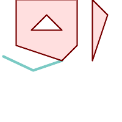 A multipolygon snapped to linestring to tolerance: 1.01 of distance. The new multipolygon is shown with reference linestring
SELECT ST_AsText(ST_Snap(poly,line, ST_Distance(poly,line)*1.01)) AS polysnapped
FROM (SELECT
ST_GeomFromText('MULTIPOLYGON(
((26 125, 26 200, 126 200, 126 125, 26 125 ),
( 51 150, 101 150, 76 175, 51 150 )),
(( 151 100, 151 200, 176 175, 151 100 )))') As poly,
ST_GeomFromText('LINESTRING (5 107, 54 84, 101 100)') As line
) As foo;
polysnapped
---------------------------------------------------------------------
MULTIPOLYGON(((26 125,26 200,126 200,126 125,101 100,26 125),
(51 150,101 150,76 175,51 150)),((151 100,151 200,176 175,151 100)))
| 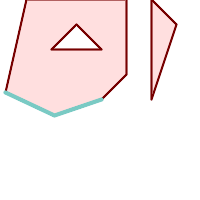 A multipolygon snapped to linestring to tolerance: 1.25 of distance. The new multipolygon is shown with reference linestring
SELECT ST_AsText(
ST_Snap(poly,line, ST_Distance(poly,line)*1.25)
) AS polysnapped
FROM (SELECT
ST_GeomFromText('MULTIPOLYGON(
(( 26 125, 26 200, 126 200, 126 125, 26 125 ),
( 51 150, 101 150, 76 175, 51 150 )),
(( 151 100, 151 200, 176 175, 151 100 )))') As poly,
ST_GeomFromText('LINESTRING (5 107, 54 84, 101 100)') As line
) As foo;
polysnapped
---------------------------------------------------------------------
MULTIPOLYGON(((5 107,26 200,126 200,126 125,101 100,54 84,5 107),
(51 150,101 150,76 175,51 150)),((151 100,151 200,176 175,151 100)))
|
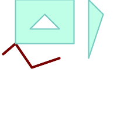 The linestring snapped to the original multipolygon at tolerance 1.01 of distance. The new linestring is shown with reference multipolygon
SELECT ST_AsText(
ST_Snap(line, poly, ST_Distance(poly,line)*1.01)
) AS linesnapped
FROM (SELECT
ST_GeomFromText('MULTIPOLYGON(
((26 125, 26 200, 126 200, 126 125, 26 125),
(51 150, 101 150, 76 175, 51 150 )),
((151 100, 151 200, 176 175, 151 100)))') As poly,
ST_GeomFromText('LINESTRING (5 107, 54 84, 101 100)') As line
) As foo;
linesnapped
----------------------------------------
LINESTRING(5 107,26 125,54 84,101 100)
| 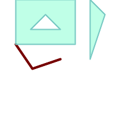 The linestring snapped to the original multipolygon at tolerance 1.25 of distance. The new linestring is shown with reference multipolygon
SELECT ST_AsText(
ST_Snap(line, poly, ST_Distance(poly,line)*1.25)
) AS linesnapped
FROM (SELECT
ST_GeomFromText('MULTIPOLYGON(
(( 26 125, 26 200, 126 200, 126 125, 26 125 ),
(51 150, 101 150, 76 175, 51 150 )),
((151 100, 151 200, 176 175, 151 100 )))') As poly,
ST_GeomFromText('LINESTRING (5 107, 54 84, 101 100)') As line
) As foo;
linesnapped
---------------------------------------
LINESTRING(26 125,54 84,101 100)
|
Name
ST_SwapOrdinates — Returns a version of the given geometry with given ordinate values swapped.
Synopsis
geometry ST_SwapOrdinates(geometry geom, cstring ords);
Description
Returns a version of the given geometry with given ordinates swapped.
The ords parameter is a 2-characters string naming
the ordinates to swap. Valid names are: x,y,z and m.
Availability: 2.2.0
This method supports Circular Strings and Curves
This function supports 3d and will not drop the z-index.
This function supports M coordinates.
This function supports Polyhedral surfaces.
This function supports Triangles and Triangulated Irregular Network Surfaces (TIN).
- ST_IsValid — Tests if a geometry is well-formed in 2D.
- ST_IsValidDetail — Returns a
valid_detailrow stating if a geometry is valid or if not a reason and a location. - ST_IsValidReason — Returns text stating if a geometry is valid, or a reason for invalidity.
- ST_MakeValid — Attempts to make an invalid geometry valid without losing vertices.
Name
ST_IsValid — Tests if a geometry is well-formed in 2D.
Synopsis
boolean ST_IsValid(geometry g);
boolean ST_IsValid(geometry g, integer flags);
Description
Tests if an ST_Geometry value is well-formed and valid in 2D according to the OGC rules. For geometries with 3 and 4 dimensions, the validity is still only tested in 2 dimensions. For geometries that are invalid, a PostgreSQL NOTICE is emitted providing details of why it is not valid.
For the version with the flags parameter,
supported values are documented in ST_IsValidDetail
This version does not print a NOTICE explaining invalidity.
For more information on the definition of geometry validity, refer to Section 4.4, “Geometry Validation”
| |
SQL-MM defines the result of ST_IsValid(NULL) to be 0, while PostGIS returns NULL. |
Performed by the GEOS module.
The version accepting flags is available starting with 2.0.0.
This method implements the OGC Simple Features
Implementation Specification for SQL 1.1.
This method implements the SQL/MM specification. SQL-MM 3: 5.1.9
| |
Neither OGC-SFS nor SQL-MM specifications include a flag argument for ST_IsValid. The flag is a PostGIS extension. |
Name
ST_IsValidDetail — Returns a valid_detail row stating if a geometry is valid or if not a reason and a location.
Synopsis
valid_detail ST_IsValidDetail(geometry geom, integer flags);
Description
Returns a valid_detail row,
containing a boolean (valid) stating if a geometry is valid,
a varchar (reason) stating a reason why it is invalid
and a geometry (location) pointing out where it is invalid.
Useful to improve on the combination of ST_IsValid and ST_IsValidReason to generate a detailed report of invalid geometries.
The optional flags parameter is a bitfield. It can have the following values:
0: Use usual OGC SFS validity semantics.
1: Consider certain kinds of self-touching rings (inverted shells and exverted holes) as valid. This is also known as "the ESRI flag", since this is the validity model used by those tools. Note that this is invalid under the OGC model.
Performed by the GEOS module.
Availability: 2.0.0
Examples
--First 3 Rejects from a successful quintuplet experiment
SELECT gid, reason(ST_IsValidDetail(geom)), ST_AsText(location(ST_IsValidDetail(geom))) as location
FROM
(SELECT ST_MakePolygon(ST_ExteriorRing(e.buff), array_agg(f.line)) As geom, gid
FROM (SELECT ST_Buffer(ST_Point(x1*10,y1), z1) As buff, x1*10 + y1*100 + z1*1000 As gid
FROM generate_series(-4,6) x1
CROSS JOIN generate_series(2,5) y1
CROSS JOIN generate_series(1,8) z1
WHERE x1 > y1*0.5 AND z1 < x1*y1) As e
INNER JOIN (SELECT ST_Translate(ST_ExteriorRing(ST_Buffer(ST_Point(x1*10,y1), z1)),y1*1, z1*2) As line
FROM generate_series(-3,6) x1
CROSS JOIN generate_series(2,5) y1
CROSS JOIN generate_series(1,10) z1
WHERE x1 > y1*0.75 AND z1 < x1*y1) As f
ON (ST_Area(e.buff) > 78 AND ST_Contains(e.buff, f.line))
GROUP BY gid, e.buff) As quintuplet_experiment
WHERE ST_IsValid(geom) = false
ORDER BY gid
LIMIT 3;
gid | reason | location
------+-------------------+-------------
5330 | Self-intersection | POINT(32 5)
5340 | Self-intersection | POINT(42 5)
5350 | Self-intersection | POINT(52 5)
--simple example
SELECT * FROM ST_IsValidDetail('LINESTRING(220227 150406,2220227 150407,222020 150410)');
valid | reason | location
-------+--------+----------
t | |
Name
ST_IsValidReason — Returns text stating if a geometry is valid, or a reason for invalidity.
Synopsis
text ST_IsValidReason(geometry geomA);
text ST_IsValidReason(geometry geomA, integer flags);
Description
Returns text stating if a geometry is valid, or if invalid a reason why.
Useful in combination with ST_IsValid to generate a detailed report of invalid geometries and reasons.
Allowed flags are documented in ST_IsValidDetail.
Performed by the GEOS module.
Availability: 1.4
Availability: 2.0 version taking flags.
Examples
-- invalid bow-tie polygon
SELECT ST_IsValidReason(
'POLYGON ((100 200, 100 100, 200 200,
200 100, 100 200))'::geometry) as validity_info;
validity_info
--------------------------
Self-intersection[150 150]
--First 3 Rejects from a successful quintuplet experiment
SELECT gid, ST_IsValidReason(geom) as validity_info
FROM
(SELECT ST_MakePolygon(ST_ExteriorRing(e.buff), array_agg(f.line)) As geom, gid
FROM (SELECT ST_Buffer(ST_Point(x1*10,y1), z1) As buff, x1*10 + y1*100 + z1*1000 As gid
FROM generate_series(-4,6) x1
CROSS JOIN generate_series(2,5) y1
CROSS JOIN generate_series(1,8) z1
WHERE x1 > y1*0.5 AND z1 < x1*y1) As e
INNER JOIN (SELECT ST_Translate(ST_ExteriorRing(ST_Buffer(ST_Point(x1*10,y1), z1)),y1*1, z1*2) As line
FROM generate_series(-3,6) x1
CROSS JOIN generate_series(2,5) y1
CROSS JOIN generate_series(1,10) z1
WHERE x1 > y1*0.75 AND z1 < x1*y1) As f
ON (ST_Area(e.buff) > 78 AND ST_Contains(e.buff, f.line))
GROUP BY gid, e.buff) As quintuplet_experiment
WHERE ST_IsValid(geom) = false
ORDER BY gid
LIMIT 3;
gid | validity_info
------+--------------------------
5330 | Self-intersection [32 5]
5340 | Self-intersection [42 5]
5350 | Self-intersection [52 5]
--simple example
SELECT ST_IsValidReason('LINESTRING(220227 150406,2220227 150407,222020 150410)');
st_isvalidreason
------------------
Valid Geometry
Name
ST_MakeValid — Attempts to make an invalid geometry valid without losing vertices.
Synopsis
geometry ST_MakeValid(geometry input);
geometry ST_MakeValid(geometry input, text params);
Description
The function attempts to create a valid representation of a given invalid geometry without losing any of the input vertices. Valid geometries are returned unchanged.
Supported inputs are: POINTS, MULTIPOINTS, LINESTRINGS, MULTILINESTRINGS, POLYGONS, MULTIPOLYGONS and GEOMETRYCOLLECTIONS containing any mix of them.
In case of full or partial dimensional collapses, the output geometry may be a collection of lower-to-equal dimension geometries, or a geometry of lower dimension.
Single polygons may become multi-geometries in case of self-intersections.
The params argument can be used to supply an options
string to select the method to use for building valid geometry.
The options string is in the format "method=linework|structure keepcollapsed=true|false".
The "method" key has two values.
"linework" is the original algorithm, and builds valid geometries by first extracting all lines, noding that linework together, then building a value output from the linework.
"structure" is an algorithm that distinguishes between interior and exterior rings, building new geometry by unioning exterior rings, and then differencing all interior rings.
The "keepcollapsed" key is only valid for the "structure" algorithm, and takes a value of "true" or "false". When set to "false", geometry components that collapse to a lower dimensionality, for example a one-point linestring would be dropped.
Performed by the GEOS module.
Availability: 2.0.0
Enhanced: 2.0.1, speed improvements
Enhanced: 2.1.0, added support for GEOMETRYCOLLECTION and MULTIPOINT.
Enhanced: 3.1.0, added removal of Coordinates with NaN values.
Enhanced: 3.2.0, added algorithm options, 'linework' and 'structure' which requires GEOS >= 3.10.0.
This function supports 3d and will not drop the z-index.
Examples
before_geom: MULTIPOLYGON of 2 overlapping polygons
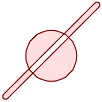 after_geom: MULTIPOLYGON of 4 non-overlapping polygons
after_geom_structure: MULTIPOLYGON of 1 non-overlapping polygon
SELECT f.geom AS before_geom, ST_MakeValid(f.geom) AS after_geom, ST_MakeValid(f.geom, 'method=structure') AS after_geom_structure FROM (SELECT 'MULTIPOLYGON(((186 194,187 194,188 195,189 195,190 195, 191 195,192 195,193 194,194 194,194 193,195 192,195 191, 195 190,195 189,195 188,194 187,194 186,14 6,13 6,12 5,11 5, 10 5,9 5,8 5,7 6,6 6,6 7,5 8,5 9,5 10,5 11,5 12,6 13,6 14,186 194)), ((150 90,149 80,146 71,142 62,135 55,128 48,119 44,110 41,100 40, 90 41,81 44,72 48,65 55,58 62,54 71,51 80,50 90,51 100, 54 109,58 118,65 125,72 132,81 136,90 139,100 140,110 139, 119 136,128 132,135 125,142 118,146 109,149 100,150 90)))'::geometry AS geom) AS f;
|
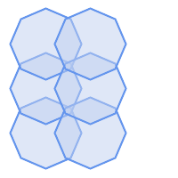 before_geom: MULTIPOLYGON of 6 overlapping polygons
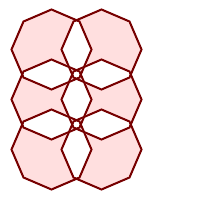 after_geom: MULTIPOLYGON of 14 Non-overlapping polygons
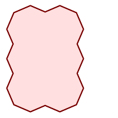 after_geom_structure: MULTIPOLYGON of 1 Non-overlapping polygon
SELECT c.geom AS before_geom,
ST_MakeValid(c.geom) AS after_geom,
ST_MakeValid(c.geom, 'method=structure') AS after_geom_structure
FROM (SELECT 'MULTIPOLYGON(((91 50,79 22,51 10,23 22,11 50,23 78,51 90,79 78,91 50)),
((91 100,79 72,51 60,23 72,11 100,23 128,51 140,79 128,91 100)),
((91 150,79 122,51 110,23 122,11 150,23 178,51 190,79 178,91 150)),
((141 50,129 22,101 10,73 22,61 50,73 78,101 90,129 78,141 50)),
((141 100,129 72,101 60,73 72,61 100,73 128,101 140,129 128,141 100)),
((141 150,129 122,101 110,73 122,61 150,73 178,101 190,129 178,141 150)))'::geometry AS geom) AS c;
|
- ST_SetSRID — Set the SRID on a geometry.
- ST_SRID — Returns the spatial reference identifier for a geometry.
- ST_Transform — Return a new geometry with coordinates transformed to a different spatial reference system.
Name
ST_SetSRID — Set the SRID on a geometry.
Synopsis
geometry ST_SetSRID(geometry
geom, integer
srid);
Description
Sets the SRID on a geometry to a particular integer value. Useful in constructing bounding boxes for queries.
| |
This function does not transform the geometry coordinates in any way - it simply sets the meta data defining the spatial reference system the geometry is assumed to be in. Use ST_Transform if you want to transform the geometry into a new projection. |
This method implements the OGC Simple Features
Implementation Specification for SQL 1.1.
This method supports Circular Strings and Curves
Examples
-- Mark a point as WGS 84 long lat --
SELECT ST_SetSRID(ST_Point(-123.365556, 48.428611),4326) As wgs84long_lat; -- the ewkt representation (wrap with ST_AsEWKT) - SRID=4326;POINT(-123.365556 48.428611)
-- Mark a point as WGS 84 long lat and then transform to web mercator (Spherical Mercator) --
SELECT ST_Transform(ST_SetSRID(ST_Point(-123.365556, 48.428611),4326),3785) As spere_merc; -- the ewkt representation (wrap with ST_AsEWKT) - SRID=3785;POINT(-13732990.8753491 6178458.96425423)
Name
ST_SRID — Returns the spatial reference identifier for a geometry.
Synopsis
integer ST_SRID(geometry g1);
Description
Returns the spatial reference identifier for the ST_Geometry as defined in spatial_ref_sys table. Section 4.5, “Spatial Reference Systems”
| |
spatial_ref_sys table is a table that catalogs all spatial reference systems known to PostGIS and is used for transformations from one spatial reference system to another. So verifying you have the right spatial reference system identifier is important if you plan to ever transform your geometries. |
This method implements the OGC Simple Features
Implementation Specification for SQL 1.1. s2.1.1.1
This method implements the SQL/MM specification. SQL-MM 3: 5.1.5
This method supports Circular Strings and Curves
Name
ST_Transform — Return a new geometry with coordinates transformed to a different spatial reference system.
Synopsis
geometry ST_Transform(geometry g1, integer srid);
geometry ST_Transform(geometry geom, text to_proj);
geometry ST_Transform(geometry geom, text from_proj, text to_proj);
geometry ST_Transform(geometry geom, text from_proj, integer to_srid);
Description
Returns a new geometry with its coordinates transformed to
a different spatial reference system. The destination spatial
reference to_srid may be identified by a valid
SRID integer parameter (i.e. it must exist in the
spatial_ref_sys table).
Alternatively, a spatial reference defined as a PROJ.4 string
can be used for to_proj and/or
from_proj, however these methods are not
optimized. If the destination spatial reference system is
expressed with a PROJ.4 string instead of an SRID, the SRID of the
output geometry will be set to zero. With the exception of functions with
from_proj, input geometries must have a defined SRID.
ST_Transform is often confused with ST_SetSRID. ST_Transform actually changes the coordinates of a geometry from one spatial reference system to another, while ST_SetSRID() simply changes the SRID identifier of the geometry.
| |
Requires PostGIS be compiled with PROJ support. Use PostGIS_Full_Version to confirm you have PROJ support compiled in. |
| |
If using more than one transformation, it is useful to have a functional index on the commonly used transformations to take advantage of index usage. |
| |
Prior to 1.3.4, this function crashes if used with geometries that contain CURVES. This is fixed in 1.3.4+ |
Enhanced: 2.0.0 support for Polyhedral surfaces was introduced.
Enhanced: 2.3.0 support for direct PROJ.4 text was introduced.
This method implements the SQL/MM specification. SQL-MM 3: 5.1.6
This method supports Circular Strings and Curves
This function supports Polyhedral surfaces.
Examples
Change Massachusetts state plane US feet geometry to WGS 84 long lat
SELECT ST_AsText(ST_Transform(ST_GeomFromText('POLYGON((743238 2967416,743238 2967450,
743265 2967450,743265.625 2967416,743238 2967416))',2249),4326)) As wgs_geom;
wgs_geom
---------------------------
POLYGON((-71.1776848522251 42.3902896512902,-71.1776843766326 42.3903829478009,
-71.1775844305465 42.3903826677917,-71.1775825927231 42.3902893647987,-71.177684
8522251 42.3902896512902));
(1 row)
--3D Circular String example
SELECT ST_AsEWKT(ST_Transform(ST_GeomFromEWKT('SRID=2249;CIRCULARSTRING(743238 2967416 1,743238 2967450 2,743265 2967450 3,743265.625 2967416 3,743238 2967416 4)'),4326));
st_asewkt
--------------------------------------------------------------------------------------
SRID=4326;CIRCULARSTRING(-71.1776848522251 42.3902896512902 1,-71.1776843766326 42.3903829478009 2,
-71.1775844305465 42.3903826677917 3,
-71.1775825927231 42.3902893647987 3,-71.1776848522251 42.3902896512902 4)
Example of creating a partial functional index. For tables where you are not sure all the geometries will be filled in, its best to use a partial index that leaves out null geometries which will both conserve space and make your index smaller and more efficient.
CREATE INDEX idx_geom_26986_parcels ON parcels USING gist (ST_Transform(geom, 26986)) WHERE geom IS NOT NULL;
Examples of using PROJ.4 text to transform with custom spatial references.
-- Find intersection of two polygons near the North pole, using a custom Gnomic projection
-- See http://boundlessgeo.com/2012/02/flattening-the-peel/
WITH data AS (
SELECT
ST_GeomFromText('POLYGON((170 50,170 72,-130 72,-130 50,170 50))', 4326) AS p1,
ST_GeomFromText('POLYGON((-170 68,-170 90,-141 90,-141 68,-170 68))', 4326) AS p2,
'+proj=gnom +ellps=WGS84 +lat_0=70 +lon_0=-160 +no_defs'::text AS gnom
)
SELECT ST_AsText(
ST_Transform(
ST_Intersection(ST_Transform(p1, gnom), ST_Transform(p2, gnom)),
gnom, 4326))
FROM data;
st_astext
--------------------------------------------------------------------------------
POLYGON((-170 74.053793645338,-141 73.4268621378904,-141 68,-170 68,-170 74.053793645338))
Configuring transformation behavior
Sometimes coordinate transformation involving a grid-shift
can fail, for example if PROJ.4 has not been built with
grid-shift files or the coordinate does not lie within the
range for which the grid shift is defined. By default, PostGIS
will throw an error if a grid shift file is not present, but
this behavior can be configured on a per-SRID basis either
by testing different to_proj values of
PROJ.4 text, or altering the proj4text value
within the spatial_ref_sys table.
For example, the proj4text parameter +datum=NAD87 is a shorthand form for the following +nadgrids parameter:
+nadgrids=@conus,@alaska,@ntv2_0.gsb,@ntv1_can.dat
The @ prefix means no error is reported if the files are not present, but if the end of the list is reached with no file having been appropriate (ie. found and overlapping) then an error is issued.
If, conversely, you wanted to ensure that at least the standard files were present, but that if all files were scanned without a hit a null transformation is applied you could use:
+nadgrids=@conus,@alaska,@ntv2_0.gsb,@ntv1_can.dat,null
The null grid shift file is a valid grid shift file covering the whole world and applying no shift. So for a complete example, if you wanted to alter PostGIS so that transformations to SRID 4267 that didn't lie within the correct range did not throw an ERROR, you would use the following:
UPDATE spatial_ref_sys SET proj4text = '+proj=longlat +ellps=clrk66 +nadgrids=@conus,@alaska,@ntv2_0.gsb,@ntv1_can.dat,null +no_defs' WHERE srid = 4267;
- ST_BdPolyFromText — Construct a Polygon given an arbitrary collection of closed linestrings as a MultiLineString Well-Known text representation.
- ST_BdMPolyFromText — Construct a MultiPolygon given an arbitrary collection of closed linestrings as a MultiLineString text representation Well-Known text representation.
- ST_GeogFromText — Return a specified geography value from Well-Known Text representation or extended (WKT).
- ST_GeographyFromText — Return a specified geography value from Well-Known Text representation or extended (WKT).
- ST_GeomCollFromText — Makes a collection Geometry from collection WKT with the given SRID. If SRID is not given, it defaults to 0.
- ST_GeomFromEWKT — Return a specified ST_Geometry value from Extended Well-Known Text representation (EWKT).
- ST_GeometryFromText — Return a specified ST_Geometry value from Well-Known Text representation (WKT). This is an alias name for ST_GeomFromText
- ST_GeomFromText — Return a specified ST_Geometry value from Well-Known Text representation (WKT).
- ST_LineFromText — Makes a Geometry from WKT representation with the given SRID. If SRID is not given, it defaults to 0.
- ST_MLineFromText — Return a specified ST_MultiLineString value from WKT representation.
- ST_MPointFromText — Makes a Geometry from WKT with the given SRID. If SRID is not given, it defaults to 0.
- ST_MPolyFromText — Makes a MultiPolygon Geometry from WKT with the given SRID. If SRID is not given, it defaults to 0.
- ST_PointFromText — Makes a point Geometry from WKT with the given SRID. If SRID is not given, it defaults to unknown.
- ST_PolygonFromText — Makes a Geometry from WKT with the given SRID. If SRID is not given, it defaults to 0.
- ST_WKTToSQL — Return a specified ST_Geometry value from Well-Known Text representation (WKT). This is an alias name for ST_GeomFromText
Name
ST_BdPolyFromText — Construct a Polygon given an arbitrary collection of closed linestrings as a MultiLineString Well-Known text representation.
Synopsis
geometry ST_BdPolyFromText(text WKT, integer srid);
Description
Construct a Polygon given an arbitrary collection of closed linestrings as a MultiLineString Well-Known text representation.
| |
Throws an error if WKT is not a MULTILINESTRING. Throws an error if output is a MULTIPOLYGON; use ST_BdMPolyFromText in that case, or see ST_BuildArea() for a postgis-specific approach. |
This method implements the OGC Simple Features
Implementation Specification for SQL 1.1. s3.2.6.2
Performed by the GEOS module.
Availability: 1.1.0
Name
ST_BdMPolyFromText — Construct a MultiPolygon given an arbitrary collection of closed linestrings as a MultiLineString text representation Well-Known text representation.
Synopsis
geometry ST_BdMPolyFromText(text WKT, integer srid);
Description
Construct a Polygon given an arbitrary collection of closed linestrings, polygons, MultiLineStrings as Well-Known text representation.
| |
Throws an error if WKT is not a MULTILINESTRING. Forces MULTIPOLYGON output even when result is really only composed by a single POLYGON; use ST_BdPolyFromText if you're sure a single POLYGON will result from operation, or see ST_BuildArea() for a postgis-specific approach. |
This method implements the OGC Simple Features
Implementation Specification for SQL 1.1. s3.2.6.2
Performed by the GEOS module.
Availability: 1.1.0
Name
ST_GeogFromText — Return a specified geography value from Well-Known Text representation or extended (WKT).
Synopsis
geography ST_GeogFromText(text EWKT);
Description
Returns a geography object from the well-known text or extended well-known representation. SRID 4326 is assumed if unspecified. This is an alias for ST_GeographyFromText. Points are always expressed in long lat form.
Examples
--- converting lon lat coords to geography
ALTER TABLE sometable ADD COLUMN geog geography(POINT,4326);
UPDATE sometable SET geog = ST_GeogFromText('SRID=4326;POINT(' || lon || ' ' || lat || ')');
--- specify a geography point using EPSG:4267, NAD27
SELECT ST_AsEWKT(ST_GeogFromText('SRID=4267;POINT(-77.0092 38.889588)'));
Name
ST_GeographyFromText — Return a specified geography value from Well-Known Text representation or extended (WKT).
Synopsis
geography ST_GeographyFromText(text EWKT);
Name
ST_GeomCollFromText — Makes a collection Geometry from collection WKT with the given SRID. If SRID is not given, it defaults to 0.
Synopsis
geometry ST_GeomCollFromText(text WKT, integer srid);
geometry ST_GeomCollFromText(text WKT);
Description
Makes a collection Geometry from the Well-Known-Text (WKT) representation with the given SRID. If SRID is not given, it defaults to 0.
OGC SPEC 3.2.6.2 - option SRID is from the conformance suite
Returns null if the WKT is not a GEOMETRYCOLLECTION
| |
If you are absolutely sure all your WKT geometries are collections, don't use this function. It is slower than ST_GeomFromText since it adds an additional validation step. |
This method implements the OGC Simple Features
Implementation Specification for SQL 1.1. s3.2.6.2
This method implements the SQL/MM specification.
Name
ST_GeomFromEWKT — Return a specified ST_Geometry value from Extended Well-Known Text representation (EWKT).
Synopsis
geometry ST_GeomFromEWKT(text EWKT);
Description
Constructs a PostGIS ST_Geometry object from the OGC Extended Well-Known text (EWKT) representation.
| |
The EWKT format is not an OGC standard, but an PostGIS specific format that includes the spatial reference system (SRID) identifier |
Enhanced: 2.0.0 support for Polyhedral surfaces and TIN was introduced.
This function supports 3d and will not drop the z-index.
This method supports Circular Strings and Curves
This function supports Polyhedral surfaces.
This function supports Triangles and Triangulated Irregular Network Surfaces (TIN).
Examples
SELECT ST_GeomFromEWKT('SRID=4269;LINESTRING(-71.160281 42.258729,-71.160837 42.259113,-71.161144 42.25932)');
SELECT ST_GeomFromEWKT('SRID=4269;MULTILINESTRING((-71.160281 42.258729,-71.160837 42.259113,-71.161144 42.25932))');
SELECT ST_GeomFromEWKT('SRID=4269;POINT(-71.064544 42.28787)');
SELECT ST_GeomFromEWKT('SRID=4269;POLYGON((-71.1776585052917 42.3902909739571,-71.1776820268866 42.3903701743239,
-71.1776063012595 42.3903825660754,-71.1775826583081 42.3903033653531,-71.1776585052917 42.3902909739571))');
SELECT ST_GeomFromEWKT('SRID=4269;MULTIPOLYGON(((-71.1031880899493 42.3152774590236,
-71.1031627617667 42.3152960829043,-71.102923838298 42.3149156848307,
-71.1023097974109 42.3151969047397,-71.1019285062273 42.3147384934248,
-71.102505233663 42.3144722937587,-71.10277487471 42.3141658254797,
-71.103113945163 42.3142739188902,-71.10324876416 42.31402489987,
-71.1033002961013 42.3140393340215,-71.1033488797549 42.3139495090772,
-71.103396240451 42.3138632439557,-71.1041521907712 42.3141153348029,
-71.1041411411543 42.3141545014533,-71.1041287795912 42.3142114839058,
-71.1041188134329 42.3142693656241,-71.1041112482575 42.3143272556118,
-71.1041072845732 42.3143851580048,-71.1041057218871 42.3144430686681,
-71.1041065602059 42.3145009876017,-71.1041097995362 42.3145589148055,
-71.1041166403905 42.3146168544148,-71.1041258822717 42.3146748022936,
-71.1041375307579 42.3147318674446,-71.1041492906949 42.3147711126569,
-71.1041598612795 42.314808571739,-71.1042515013869 42.3151287620809,
-71.1041173835118 42.3150739481917,-71.1040809891419 42.3151344119048,
-71.1040438678912 42.3151191367447,-71.1040194562988 42.3151832057859,
-71.1038734225584 42.3151140942995,-71.1038446938243 42.3151006300338,
-71.1038315271889 42.315094347535,-71.1037393329282 42.315054824985,
-71.1035447555574 42.3152608696313,-71.1033436658644 42.3151648370544,
-71.1032580383161 42.3152269126061,-71.103223066939 42.3152517403219,
-71.1031880899493 42.3152774590236)),
((-71.1043632495873 42.315113108546,-71.1043583974082 42.3151211109857,
-71.1043443253471 42.3150676015829,-71.1043850704575 42.3150793250568,-71.1043632495873 42.315113108546)))');
--3d circular string
SELECT ST_GeomFromEWKT('CIRCULARSTRING(220268 150415 1,220227 150505 2,220227 150406 3)');
--Polyhedral Surface example
SELECT ST_GeomFromEWKT('POLYHEDRALSURFACE(
((0 0 0, 0 0 1, 0 1 1, 0 1 0, 0 0 0)),
((0 0 0, 0 1 0, 1 1 0, 1 0 0, 0 0 0)),
((0 0 0, 1 0 0, 1 0 1, 0 0 1, 0 0 0)),
((1 1 0, 1 1 1, 1 0 1, 1 0 0, 1 1 0)),
((0 1 0, 0 1 1, 1 1 1, 1 1 0, 0 1 0)),
((0 0 1, 1 0 1, 1 1 1, 0 1 1, 0 0 1))
)');
Name
ST_GeometryFromText — Return a specified ST_Geometry value from Well-Known Text representation (WKT). This is an alias name for ST_GeomFromText
Synopsis
geometry ST_GeometryFromText(text WKT);
geometry ST_GeometryFromText(text WKT, integer srid);
Description
This method implements the OGC Simple Features
Implementation Specification for SQL 1.1.
This method implements the SQL/MM specification. SQL-MM 3: 5.1.40
Name
ST_GeomFromText — Return a specified ST_Geometry value from Well-Known Text representation (WKT).
Synopsis
geometry ST_GeomFromText(text WKT);
geometry ST_GeomFromText(text WKT, integer srid);
Description
Constructs a PostGIS ST_Geometry object from the OGC Well-Known text representation.
| |
There are two variants of ST_GeomFromText function. The first takes no SRID and returns a geometry with no defined spatial reference system (SRID=0). The second takes a SRID as the second argument and returns a geometry that includes this SRID as part of its metadata. |
This method implements the OGC Simple Features
Implementation Specification for SQL 1.1. s3.2.6.2 - option SRID is from the conformance suite.
This method implements the SQL/MM specification. SQL-MM 3: 5.1.40
This method supports Circular Strings and Curves
| |
While not OGC-compliant, ST_MakePoint is faster than ST_GeomFromText and ST_PointFromText. It is also easier to use for numeric coordinate values. ST_Point is another option similar in speed to ST_MakePoint and is OGC-compliant, but doesn't support anything but 2D points. |
| |
Changed: 2.0.0 In prior versions of PostGIS ST_GeomFromText('GEOMETRYCOLLECTION(EMPTY)') was allowed. This is now illegal in PostGIS 2.0.0 to better conform with SQL/MM standards. This should now be written as ST_GeomFromText('GEOMETRYCOLLECTION EMPTY') |
Examples
SELECT ST_GeomFromText('LINESTRING(-71.160281 42.258729,-71.160837 42.259113,-71.161144 42.25932)');
SELECT ST_GeomFromText('LINESTRING(-71.160281 42.258729,-71.160837 42.259113,-71.161144 42.25932)',4269);
SELECT ST_GeomFromText('MULTILINESTRING((-71.160281 42.258729,-71.160837 42.259113,-71.161144 42.25932))');
SELECT ST_GeomFromText('POINT(-71.064544 42.28787)');
SELECT ST_GeomFromText('POLYGON((-71.1776585052917 42.3902909739571,-71.1776820268866 42.3903701743239,
-71.1776063012595 42.3903825660754,-71.1775826583081 42.3903033653531,-71.1776585052917 42.3902909739571))');
SELECT ST_GeomFromText('MULTIPOLYGON(((-71.1031880899493 42.3152774590236,
-71.1031627617667 42.3152960829043,-71.102923838298 42.3149156848307,
-71.1023097974109 42.3151969047397,-71.1019285062273 42.3147384934248,
-71.102505233663 42.3144722937587,-71.10277487471 42.3141658254797,
-71.103113945163 42.3142739188902,-71.10324876416 42.31402489987,
-71.1033002961013 42.3140393340215,-71.1033488797549 42.3139495090772,
-71.103396240451 42.3138632439557,-71.1041521907712 42.3141153348029,
-71.1041411411543 42.3141545014533,-71.1041287795912 42.3142114839058,
-71.1041188134329 42.3142693656241,-71.1041112482575 42.3143272556118,
-71.1041072845732 42.3143851580048,-71.1041057218871 42.3144430686681,
-71.1041065602059 42.3145009876017,-71.1041097995362 42.3145589148055,
-71.1041166403905 42.3146168544148,-71.1041258822717 42.3146748022936,
-71.1041375307579 42.3147318674446,-71.1041492906949 42.3147711126569,
-71.1041598612795 42.314808571739,-71.1042515013869 42.3151287620809,
-71.1041173835118 42.3150739481917,-71.1040809891419 42.3151344119048,
-71.1040438678912 42.3151191367447,-71.1040194562988 42.3151832057859,
-71.1038734225584 42.3151140942995,-71.1038446938243 42.3151006300338,
-71.1038315271889 42.315094347535,-71.1037393329282 42.315054824985,
-71.1035447555574 42.3152608696313,-71.1033436658644 42.3151648370544,
-71.1032580383161 42.3152269126061,-71.103223066939 42.3152517403219,
-71.1031880899493 42.3152774590236)),
((-71.1043632495873 42.315113108546,-71.1043583974082 42.3151211109857,
-71.1043443253471 42.3150676015829,-71.1043850704575 42.3150793250568,-71.1043632495873 42.315113108546)))',4326);
SELECT ST_GeomFromText('CIRCULARSTRING(220268 150415,220227 150505,220227 150406)');
Name
ST_LineFromText — Makes a Geometry from WKT representation with the given SRID. If SRID is not given, it defaults to 0.
Synopsis
geometry ST_LineFromText(text WKT);
geometry ST_LineFromText(text WKT, integer srid);
Description
Makes a Geometry from WKT with the given SRID. If SRID is not given, it defaults to 0. If WKT passed in is not a LINESTRING, then null is returned.
| |
OGC SPEC 3.2.6.2 - option SRID is from the conformance suite. |
| |
If you know all your geometries are LINESTRINGS, its more efficient to just use ST_GeomFromText. This just calls ST_GeomFromText and adds additional validation that it returns a linestring. |
This method implements the OGC Simple Features
Implementation Specification for SQL 1.1. s3.2.6.2
This method implements the SQL/MM specification. SQL-MM 3: 7.2.8
Name
ST_MLineFromText — Return a specified ST_MultiLineString value from WKT representation.
Synopsis
geometry ST_MLineFromText(text WKT, integer srid);
geometry ST_MLineFromText(text WKT);
Description
Makes a Geometry from Well-Known-Text (WKT) with the given SRID. If SRID is not given, it defaults to 0.
OGC SPEC 3.2.6.2 - option SRID is from the conformance suite
Returns null if the WKT is not a MULTILINESTRING
| |
If you are absolutely sure all your WKT geometries are points, don't use this function. It is slower than ST_GeomFromText since it adds an additional validation step. |
This method implements the OGC Simple Features
Implementation Specification for SQL 1.1. s3.2.6.2
This method implements the SQL/MM specification.SQL-MM 3: 9.4.4
Name
ST_MPointFromText — Makes a Geometry from WKT with the given SRID. If SRID is not given, it defaults to 0.
Synopsis
geometry ST_MPointFromText(text WKT, integer srid);
geometry ST_MPointFromText(text WKT);
Description
Makes a Geometry from WKT with the given SRID. If SRID is not given, it defaults to 0.
OGC SPEC 3.2.6.2 - option SRID is from the conformance suite
Returns null if the WKT is not a MULTIPOINT
| |
If you are absolutely sure all your WKT geometries are points, don't use this function. It is slower than ST_GeomFromText since it adds an additional validation step. |
This method implements the OGC Simple Features
Implementation Specification for SQL 1.1. 3.2.6.2
This method implements the SQL/MM specification. SQL-MM 3: 9.2.4
Name
ST_MPolyFromText — Makes a MultiPolygon Geometry from WKT with the given SRID. If SRID is not given, it defaults to 0.
Synopsis
geometry ST_MPolyFromText(text WKT, integer srid);
geometry ST_MPolyFromText(text WKT);
Description
Makes a MultiPolygon from WKT with the given SRID. If SRID is not given, it defaults to 0.
OGC SPEC 3.2.6.2 - option SRID is from the conformance suite
Throws an error if the WKT is not a MULTIPOLYGON
| |
If you are absolutely sure all your WKT geometries are multipolygons, don't use this function. It is slower than ST_GeomFromText since it adds an additional validation step. |
This method implements the OGC Simple Features
Implementation Specification for SQL 1.1. s3.2.6.2
This method implements the SQL/MM specification. SQL-MM 3: 9.6.4
Examples
SELECT ST_MPolyFromText('MULTIPOLYGON(((0 0 1,20 0 1,20 20 1,0 20 1,0 0 1),(5 5 3,5 7 3,7 7 3,7 5 3,5 5 3)))');
SELECt ST_MPolyFromText('MULTIPOLYGON(((-70.916 42.1002,-70.9468 42.0946,-70.9765 42.0872,-70.9754 42.0875,-70.9749 42.0879,-70.9752 42.0881,-70.9754 42.0891,-70.9758 42.0894,-70.9759 42.0897,-70.9759 42.0899,-70.9754 42.0902,-70.9756 42.0906,-70.9753 42.0907,-70.9753 42.0917,-70.9757 42.0924,-70.9755 42.0928,-70.9755 42.0942,-70.9751 42.0948,-70.9755 42.0953,-70.9751 42.0958,-70.9751 42.0962,-70.9759 42.0983,-70.9767 42.0987,-70.9768 42.0991,-70.9771 42.0997,-70.9771 42.1003,-70.9768 42.1005,-70.977 42.1011,-70.9766 42.1019,-70.9768 42.1026,-70.9769 42.1033,-70.9775 42.1042,-70.9773 42.1043,-70.9776 42.1043,-70.9778 42.1048,-70.9773 42.1058,-70.9774 42.1061,-70.9779 42.1065,-70.9782 42.1078,-70.9788 42.1085,-70.9798 42.1087,-70.9806 42.109,-70.9807 42.1093,-70.9806 42.1099,-70.9809 42.1109,-70.9808 42.1112,-70.9798 42.1116,-70.9792 42.1127,-70.979 42.1129,-70.9787 42.1134,-70.979 42.1139,-70.9791 42.1141,-70.9987 42.1116,-71.0022 42.1273,
-70.9408 42.1513,-70.9315 42.1165,-70.916 42.1002)))',4326);
Name
ST_PointFromText — Makes a point Geometry from WKT with the given SRID. If SRID is not given, it defaults to unknown.
Synopsis
geometry ST_PointFromText(text WKT);
geometry ST_PointFromText(text WKT, integer srid);
Description
Constructs a PostGIS ST_Geometry point object from the OGC Well-Known text representation. If SRID is not given, it defaults to unknown (currently 0). If geometry is not a WKT point representation, returns null. If completely invalid WKT, then throws an error.
| |
There are 2 variants of ST_PointFromText function, the first takes no SRID and returns a geometry with no defined spatial reference system. The second takes a spatial reference id as the second argument and returns an ST_Geometry that includes this srid as part of its meta-data. The srid must be defined in the spatial_ref_sys table. |
| |
If you are absolutely sure all your WKT geometries are points, don't use this function. It is slower than ST_GeomFromText since it adds an additional validation step. If you are building points from long lat coordinates and care more about performance and accuracy than OGC compliance, use ST_MakePoint or OGC compliant alias ST_Point. |
This method implements the OGC Simple Features
Implementation Specification for SQL 1.1. s3.2.6.2 - option SRID is from the conformance suite.
This method implements the SQL/MM specification. SQL-MM 3: 6.1.8
Name
ST_PolygonFromText — Makes a Geometry from WKT with the given SRID. If SRID is not given, it defaults to 0.
Synopsis
geometry ST_PolygonFromText(text WKT);
geometry ST_PolygonFromText(text WKT, integer srid);
Description
Makes a Geometry from WKT with the given SRID. If SRID is not given, it defaults to 0. Returns null if WKT is not a polygon.
OGC SPEC 3.2.6.2 - option SRID is from the conformance suite
| |
If you are absolutely sure all your WKT geometries are polygons, don't use this function. It is slower than ST_GeomFromText since it adds an additional validation step. |
This method implements the OGC Simple Features
Implementation Specification for SQL 1.1. s3.2.6.2
This method implements the SQL/MM specification. SQL-MM 3: 8.3.6
Examples
SELECT ST_PolygonFromText('POLYGON((-71.1776585052917 42.3902909739571,-71.1776820268866 42.3903701743239,
-71.1776063012595 42.3903825660754,-71.1775826583081 42.3903033653531,-71.1776585052917 42.3902909739571))');
st_polygonfromtext
------------------
010300000001000000050000006...
SELECT ST_PolygonFromText('POINT(1 2)') IS NULL as point_is_notpoly;
point_is_not_poly
----------
t
- ST_GeogFromWKB — Creates a geography instance from a Well-Known Binary geometry representation (WKB) or extended Well Known Binary (EWKB).
- ST_GeomFromEWKB — Return a specified ST_Geometry value from Extended Well-Known Binary representation (EWKB).
- ST_GeomFromWKB — Creates a geometry instance from a Well-Known Binary geometry representation (WKB) and optional SRID.
- ST_LineFromWKB — Makes a
LINESTRINGfrom WKB with the given SRID - ST_LinestringFromWKB — Makes a geometry from WKB with the given SRID.
- ST_PointFromWKB — Makes a geometry from WKB with the given SRID
- ST_WKBToSQL — Return a specified ST_Geometry value from Well-Known Binary representation (WKB). This is an alias name for ST_GeomFromWKB that takes no srid
Name
ST_GeogFromWKB — Creates a geography instance from a Well-Known Binary geometry representation (WKB) or extended Well Known Binary (EWKB).
Synopsis
geography ST_GeogFromWKB(bytea wkb);
Description
The ST_GeogFromWKB function, takes a well-known
binary representation (WKB) of a geometry or PostGIS Extended WKB and creates an instance of the appropriate
geography type. This function plays the role of the Geometry Factory in
SQL.
If SRID is not specified, it defaults to 4326 (WGS 84 long lat).
This method supports Circular Strings and Curves
Examples
--Although bytea rep contains single \, these need to be escaped when inserting into a table SELECT ST_AsText( ST_GeogFromWKB(E'\\001\\002\\000\\000\\000\\002\\000\\000\\000\\037\\205\\353Q\\270~\\\\\\300\\323Mb\\020X\\231C@\\020X9\\264\\310~\\\\\\300)\\\\\\217\\302\\365\\230C@') ); st_astext ------------------------------------------------------ LINESTRING(-113.98 39.198,-113.981 39.195) (1 row)
Name
ST_GeomFromEWKB — Return a specified ST_Geometry value from Extended Well-Known Binary representation (EWKB).
Synopsis
geometry ST_GeomFromEWKB(bytea EWKB);
Description
Constructs a PostGIS ST_Geometry object from the OGC Extended Well-Known binary (EWKT) representation.
| |
The EWKB format is not an OGC standard, but a PostGIS specific format that includes the spatial reference system (SRID) identifier |
Enhanced: 2.0.0 support for Polyhedral surfaces and TIN was introduced.
This function supports 3d and will not drop the z-index.
This method supports Circular Strings and Curves
This function supports Polyhedral surfaces.
This function supports Triangles and Triangulated Irregular Network Surfaces (TIN).
Examples
line string binary rep 0f LINESTRING(-71.160281 42.258729,-71.160837 42.259113,-71.161144 42.25932) in NAD 83 long lat (4269).
| |
NOTE: Even though byte arrays are delimited with \ and may have ', we need to escape both out with \ and '' if standard_conforming_strings is off. So it does not look exactly like its AsEWKB representation. |
SELECT ST_GeomFromEWKB(E'\\001\\002\\000\\000 \\255\\020\\000\\000\\003\\000\\000\\000\\344J=
\\013B\\312Q\\300n\\303(\\010\\036!E@''\\277E''K
\\312Q\\300\\366{b\\235*!E@\\225|\\354.P\\312Q
\\300p\\231\\323e1!E@'); | |
In PostgreSQL 9.1+ - standard_conforming_strings is set to on by default, where as in past versions it was set to off. You can change defaults as needed for a single query or at the database or server level. Below is how you would do it with standard_conforming_strings = on. In this case we escape the ' with standard ansi ', but slashes are not escaped |
set standard_conforming_strings = on;
SELECT ST_GeomFromEWKB('\001\002\000\000 \255\020\000\000\003\000\000\000\344J=\012\013B
\312Q\300n\303(\010\036!E@''\277E''K\012\312Q\300\366{b\235*!E@\225|\354.P\312Q\012\300p\231\323e1')Name
ST_GeomFromWKB — Creates a geometry instance from a Well-Known Binary geometry representation (WKB) and optional SRID.
Synopsis
geometry ST_GeomFromWKB(bytea geom);
geometry ST_GeomFromWKB(bytea geom, integer srid);
Description
The ST_GeomFromWKB function, takes a well-known
binary representation of a geometry and a Spatial Reference System ID
(SRID) and creates an instance of the appropriate
geometry type. This function plays the role of the Geometry Factory in
SQL. This is an alternate name for ST_WKBToSQL.
If SRID is not specified, it defaults to 0 (Unknown).
This method implements the OGC Simple Features
Implementation Specification for SQL 1.1. s3.2.7.2 - the optional SRID is from the conformance suite
This method implements the SQL/MM specification. SQL-MM 3: 5.1.41
This method supports Circular Strings and Curves
Examples
--Although bytea rep contains single \, these need to be escaped when inserting into a table
-- unless standard_conforming_strings is set to on.
SELECT ST_AsEWKT(
ST_GeomFromWKB(E'\\001\\002\\000\\000\\000\\002\\000\\000\\000\\037\\205\\353Q\\270~\\\\\\300\\323Mb\\020X\\231C@\\020X9\\264\\310~\\\\\\300)\\\\\\217\\302\\365\\230C@',4326)
);
st_asewkt
------------------------------------------------------
SRID=4326;LINESTRING(-113.98 39.198,-113.981 39.195)
(1 row)
SELECT
ST_AsText(
ST_GeomFromWKB(
ST_AsEWKB('POINT(2 5)'::geometry)
)
);
st_astext
------------
POINT(2 5)
(1 row)Name
ST_LineFromWKB — Makes a LINESTRING from WKB with the given SRID
Synopsis
geometry ST_LineFromWKB(bytea WKB);
geometry ST_LineFromWKB(bytea WKB, integer srid);
Description
The ST_LineFromWKB function, takes a well-known binary
representation of geometry and a Spatial Reference System ID (SRID)
and creates an instance of the appropriate geometry type - in this case, a
LINESTRING geometry. This function plays the role of the Geometry
Factory in SQL.
If an SRID is not specified, it defaults to 0. NULL is
returned if the input bytea
does not represent a LINESTRING.
| |
OGC SPEC 3.2.6.2 - option SRID is from the conformance suite. |
| |
If you know all your geometries are |
This method implements the OGC Simple Features
Implementation Specification for SQL 1.1. s3.2.6.2
This method implements the SQL/MM specification. SQL-MM 3: 7.2.9
Name
ST_LinestringFromWKB — Makes a geometry from WKB with the given SRID.
Synopsis
geometry ST_LinestringFromWKB(bytea WKB);
geometry ST_LinestringFromWKB(bytea WKB, integer srid);
Description
The ST_LinestringFromWKB function, takes a well-known binary
representation of geometry and a Spatial Reference System ID (SRID)
and creates an instance of the appropriate geometry type - in this case, a
LINESTRING geometry. This function plays the role of the Geometry
Factory in SQL.
If an SRID is not specified, it defaults to 0. NULL is
returned if the input bytea does not represent a
LINESTRING geometry. This an alias for ST_LineFromWKB.
| |
OGC SPEC 3.2.6.2 - optional SRID is from the conformance suite. |
| |
If you know all your geometries are |
This method implements the OGC Simple Features
Implementation Specification for SQL 1.1. s3.2.6.2
This method implements the SQL/MM specification. SQL-MM 3: 7.2.9
Examples
SELECT
ST_LineStringFromWKB(
ST_AsBinary(ST_GeomFromText('LINESTRING(1 2, 3 4)'))
) AS aline,
ST_LinestringFromWKB(
ST_AsBinary(ST_GeomFromText('POINT(1 2)'))
) IS NULL AS null_return;
aline | null_return
------------------------------------------------
010200000002000000000000000000F ... | tName
ST_PointFromWKB — Makes a geometry from WKB with the given SRID
Synopsis
geometry ST_GeomFromWKB(bytea geom);
geometry ST_GeomFromWKB(bytea geom, integer srid);
Description
The ST_PointFromWKB function, takes a well-known binary
representation of geometry and a Spatial Reference System ID (SRID)
and creates an instance of the appropriate geometry type - in this case, a
POINT geometry. This function plays the role of the Geometry
Factory in SQL.
If an SRID is not specified, it defaults to 0. NULL is
returned if the input bytea does not represent a
POINT geometry.
This method implements the OGC Simple Features
Implementation Specification for SQL 1.1. s3.2.7.2
This method implements the SQL/MM specification. SQL-MM 3: 6.1.9
This function supports 3d and will not drop the z-index.
This method supports Circular Strings and Curves
- ST_Box2dFromGeoHash — Return a BOX2D from a GeoHash string.
- ST_GeomFromGeoHash — Return a geometry from a GeoHash string.
- ST_GeomFromGML — Takes as input GML representation of geometry and outputs a PostGIS geometry object
- ST_GeomFromGeoJSON — Takes as input a geojson representation of a geometry and outputs a PostGIS geometry object
- ST_GeomFromKML — Takes as input KML representation of geometry and outputs a PostGIS geometry object
- ST_GeomFromTWKB — Creates a geometry instance from a TWKB ("Tiny Well-Known Binary") geometry representation.
- ST_GMLToSQL — Return a specified ST_Geometry value from GML representation. This is an alias name for ST_GeomFromGML
- ST_LineFromEncodedPolyline — Creates a LineString from an Encoded Polyline.
- ST_PointFromGeoHash — Return a point from a GeoHash string.
- ST_FromFlatGeobufToTable — Creates a table based on the structure of FlatGeobuf data.
- ST_FromFlatGeobuf — Reads FlatGeobuf data.
Name
ST_Box2dFromGeoHash — Return a BOX2D from a GeoHash string.
Synopsis
box2d ST_Box2dFromGeoHash(text geohash, integer precision=full_precision_of_geohash);
Description
Return a BOX2D from a GeoHash string.
If no precision is specified ST_Box2dFromGeoHash returns a BOX2D based on full precision of the input GeoHash string.
If precision is specified ST_Box2dFromGeoHash will use that many characters from the GeoHash to create the BOX2D. Lower precision values results in larger BOX2Ds and larger values increase the precision.
Availability: 2.1.0
Examples
SELECT ST_Box2dFromGeoHash('9qqj7nmxncgyy4d0dbxqz0');
st_geomfromgeohash
--------------------------------------------------
BOX(-115.172816 36.114646,-115.172816 36.114646)
SELECT ST_Box2dFromGeoHash('9qqj7nmxncgyy4d0dbxqz0', 0);
st_box2dfromgeohash
----------------------
BOX(-180 -90,180 90)
SELECT ST_Box2dFromGeoHash('9qqj7nmxncgyy4d0dbxqz0', 10);
st_box2dfromgeohash
---------------------------------------------------------------------------
BOX(-115.17282128334 36.1146408319473,-115.172810554504 36.1146461963654)
Name
ST_GeomFromGeoHash — Return a geometry from a GeoHash string.
Synopsis
geometry ST_GeomFromGeoHash(text geohash, integer precision=full_precision_of_geohash);
Description
Return a geometry from a GeoHash string. The geometry will be a polygon representing the GeoHash bounds.
If no precision is specified ST_GeomFromGeoHash returns a polygon based on full precision of the input GeoHash string.
If precision is specified ST_GeomFromGeoHash will use that many characters from the GeoHash to create the polygon.
Availability: 2.1.0
Examples
SELECT ST_AsText(ST_GeomFromGeoHash('9qqj7nmxncgyy4d0dbxqz0'));
st_astext
--------------------------------------------------------------------------------------------------------------------------
POLYGON((-115.172816 36.114646,-115.172816 36.114646,-115.172816 36.114646,-115.172816 36.114646,-115.172816 36.114646))
SELECT ST_AsText(ST_GeomFromGeoHash('9qqj7nmxncgyy4d0dbxqz0', 4));
st_astext
------------------------------------------------------------------------------------------------------------------------------
POLYGON((-115.3125 36.03515625,-115.3125 36.2109375,-114.9609375 36.2109375,-114.9609375 36.03515625,-115.3125 36.03515625))
SELECT ST_AsText(ST_GeomFromGeoHash('9qqj7nmxncgyy4d0dbxqz0', 10));
st_astext
----------------------------------------------------------------------------------------------------------------------------------------------------------------------------------------
POLYGON((-115.17282128334 36.1146408319473,-115.17282128334 36.1146461963654,-115.172810554504 36.1146461963654,-115.172810554504 36.1146408319473,-115.17282128334 36.1146408319473))
Name
ST_GeomFromGML — Takes as input GML representation of geometry and outputs a PostGIS geometry object
Synopsis
geometry ST_GeomFromGML(text geomgml);
geometry ST_GeomFromGML(text geomgml, integer srid);
Description
Constructs a PostGIS ST_Geometry object from the OGC GML representation.
ST_GeomFromGML works only for GML Geometry fragments. It throws an error if you try to use it on a whole GML document.
OGC GML versions supported:
GML 3.2.1 Namespace
GML 3.1.1 Simple Features profile SF-2 (with GML 3.1.0 and 3.0.0 backward compatibility)
GML 2.1.2
OGC GML standards, cf: http://www.opengeospatial.org/standards/gml:
Availability: 1.5, requires libxml2 1.6+
Enhanced: 2.0.0 support for Polyhedral surfaces and TIN was introduced.
Enhanced: 2.0.0 default srid optional parameter added.
This function supports 3d and will not drop the z-index.
This function supports Polyhedral surfaces.
This function supports Triangles and Triangulated Irregular Network Surfaces (TIN).
GML allow mixed dimensions (2D and 3D inside the same MultiGeometry for instance). As PostGIS geometries don't, ST_GeomFromGML convert the whole geometry to 2D if a missing Z dimension is found once.
GML support mixed SRS inside the same MultiGeometry. As PostGIS geometries don't, ST_GeomFromGML, in this case, reproject all subgeometries to the SRS root node. If no srsName attribute available for the GML root node, the function throw an error.
ST_GeomFromGML function is not pedantic about an explicit GML namespace. You could avoid to mention it explicitly for common usages. But you need it if you want to use XLink feature inside GML.
| |
ST_GeomFromGML function not support SQL/MM curves geometries. |
Examples - A single geometry with srsName
SELECT ST_GeomFromGML('
<gml:LineString srsName="EPSG:4269">
<gml:coordinates>
-71.16028,42.258729 -71.160837,42.259112 -71.161143,42.25932
</gml:coordinates>
</gml:LineString>');
Examples - XLink usage
SELECT ST_GeomFromGML('
<gml:LineString xmlns:gml="http://www.opengis.net/gml"
xmlns:xlink="http://www.w3.org/1999/xlink"
srsName="urn:ogc:def:crs:EPSG::4269">
<gml:pointProperty>
<gml:Point gml:id="p1"><gml:pos>42.258729 -71.16028</gml:pos></gml:Point>
</gml:pointProperty>
<gml:pos>42.259112 -71.160837</gml:pos>
<gml:pointProperty>
<gml:Point xlink:type="simple" xlink:href="#p1"/>
</gml:pointProperty>
</gml:LineString>'););
Examples - Polyhedral Surface
SELECT ST_AsEWKT(ST_GeomFromGML('
<gml:PolyhedralSurface>
<gml:polygonPatches>
<gml:PolygonPatch>
<gml:exterior>
<gml:LinearRing><gml:posList srsDimension="3">0 0 0 0 0 1 0 1 1 0 1 0 0 0 0</gml:posList></gml:LinearRing>
</gml:exterior>
</gml:PolygonPatch>
<gml:PolygonPatch>
<gml:exterior>
<gml:LinearRing><gml:posList srsDimension="3">0 0 0 0 1 0 1 1 0 1 0 0 0 0 0</gml:posList></gml:LinearRing>
</gml:exterior>
</gml:PolygonPatch>
<gml:PolygonPatch>
<gml:exterior>
<gml:LinearRing><gml:posList srsDimension="3">0 0 0 1 0 0 1 0 1 0 0 1 0 0 0</gml:posList></gml:LinearRing>
</gml:exterior>
</gml:PolygonPatch>
<gml:PolygonPatch>
<gml:exterior>
<gml:LinearRing><gml:posList srsDimension="3">1 1 0 1 1 1 1 0 1 1 0 0 1 1 0</gml:posList></gml:LinearRing>
</gml:exterior>
</gml:PolygonPatch>
<gml:PolygonPatch>
<gml:exterior>
<gml:LinearRing><gml:posList srsDimension="3">0 1 0 0 1 1 1 1 1 1 1 0 0 1 0</gml:posList></gml:LinearRing>
</gml:exterior>
</gml:PolygonPatch>
<gml:PolygonPatch>
<gml:exterior>
<gml:LinearRing><gml:posList srsDimension="3">0 0 1 1 0 1 1 1 1 0 1 1 0 0 1</gml:posList></gml:LinearRing>
</gml:exterior>
</gml:PolygonPatch>
</gml:polygonPatches>
</gml:PolyhedralSurface>'));
-- result --
POLYHEDRALSURFACE(((0 0 0,0 0 1,0 1 1,0 1 0,0 0 0)),
((0 0 0,0 1 0,1 1 0,1 0 0,0 0 0)),
((0 0 0,1 0 0,1 0 1,0 0 1,0 0 0)),
((1 1 0,1 1 1,1 0 1,1 0 0,1 1 0)),
((0 1 0,0 1 1,1 1 1,1 1 0,0 1 0)),
((0 0 1,1 0 1,1 1 1,0 1 1,0 0 1)))
Name
ST_GeomFromGeoJSON — Takes as input a geojson representation of a geometry and outputs a PostGIS geometry object
Synopsis
geometry ST_GeomFromGeoJSON(text geomjson);
geometry ST_GeomFromGeoJSON(json geomjson);
geometry ST_GeomFromGeoJSON(jsonb geomjson);
Description
Constructs a PostGIS geometry object from the GeoJSON representation.
ST_GeomFromGeoJSON works only for JSON Geometry fragments. It throws an error if you try to use it on a whole JSON document.
Enhanced: 3.0.0 parsed geometry defaults to SRID=4326 if not specified otherwise.
Enhanced: 2.5.0 can now accept json and jsonb as inputs.
Availability: 2.0.0 requires - JSON-C >= 0.9
| |
If you do not have JSON-C enabled, support you will get an error notice instead of seeing an output. To enable JSON-C, run configure --with-jsondir=/path/to/json-c. See Section 2.2.3, “Build configuration” for details. |
This function supports 3d and will not drop the z-index.
Examples
SELECT ST_AsText(ST_GeomFromGeoJSON('{"type":"Point","coordinates":[-48.23456,20.12345]}')) As wkt;
wkt
------
POINT(-48.23456 20.12345)
-- a 3D linestring
SELECT ST_AsText(ST_GeomFromGeoJSON('{"type":"LineString","coordinates":[[1,2,3],[4,5,6],[7,8,9]]}')) As wkt;
wkt
-------------------
LINESTRING(1 2,4 5,7 8)
Name
ST_GeomFromKML — Takes as input KML representation of geometry and outputs a PostGIS geometry object
Synopsis
geometry ST_GeomFromKML(text geomkml);
Description
Constructs a PostGIS ST_Geometry object from the OGC KML representation.
ST_GeomFromKML works only for KML Geometry fragments. It throws an error if you try to use it on a whole KML document.
OGC KML versions supported:
KML 2.2.0 Namespace
OGC KML standards, cf: http://www.opengeospatial.org/standards/kml:
Availability: 1.5, requires libxml2 2.6+
This function supports 3d and will not drop the z-index.
| |
ST_GeomFromKML function not support SQL/MM curves geometries. |
Name
ST_GeomFromTWKB — Creates a geometry instance from a TWKB ("Tiny Well-Known Binary") geometry representation.
Synopsis
geometry ST_GeomFromTWKB(bytea twkb);
Description
The ST_GeomFromTWKB function, takes a a TWKB ("Tiny Well-Known Binary") geometry representation (WKB) and creates an instance of the appropriate
geometry type.
Examples
SELECT ST_AsText(ST_GeomFromTWKB(ST_AsTWKB('LINESTRING(126 34, 127 35)'::geometry)));
st_astext
-----------------------------
LINESTRING(126 34, 127 35)
(1 row)
SELECT ST_AsEWKT(
ST_GeomFromTWKB(E'\\x620002f7f40dbce4040105')
);
st_asewkt
------------------------------------------------------
LINESTRING(-113.98 39.198,-113.981 39.195)
(1 row)
Name
ST_GMLToSQL — Return a specified ST_Geometry value from GML representation. This is an alias name for ST_GeomFromGML
Synopsis
geometry ST_GMLToSQL(text geomgml);
geometry ST_GMLToSQL(text geomgml, integer srid);
Name
ST_LineFromEncodedPolyline — Creates a LineString from an Encoded Polyline.
Synopsis
geometry ST_LineFromEncodedPolyline(text polyline, integer precision=5);
Description
Creates a LineString from an Encoded Polyline string.
Optional precision specifies how many decimal places will be preserved in Encoded Polyline. Value should be the same on encoding and decoding, or coordinates will be incorrect.
See http://developers.google.com/maps/documentation/utilities/polylinealgorithm
Availability: 2.2.0
Examples
-- Create a line string from a polyline
SELECT ST_AsEWKT(ST_LineFromEncodedPolyline('_p~iF~ps|U_ulLnnqC_mqNvxq`@'));
-- result --
SRID=4326;LINESTRING(-120.2 38.5,-120.95 40.7,-126.453 43.252)
-- Select different precision that was used for polyline encoding
SELECT ST_AsEWKT(ST_LineFromEncodedPolyline('_p~iF~ps|U_ulLnnqC_mqNvxq`@',6));
-- result --
SRID=4326;LINESTRING(-12.02 3.85,-12.095 4.07,-12.6453 4.3252)
Name
ST_PointFromGeoHash — Return a point from a GeoHash string.
Synopsis
point ST_PointFromGeoHash(text geohash, integer precision=full_precision_of_geohash);
Description
Return a point from a GeoHash string. The point represents the center point of the GeoHash.
If no precision is specified ST_PointFromGeoHash returns a point based on full precision of the input GeoHash string.
If precision is specified ST_PointFromGeoHash will use that many characters from the GeoHash to create the point.
Availability: 2.1.0
Examples
SELECT ST_AsText(ST_PointFromGeoHash('9qqj7nmxncgyy4d0dbxqz0'));
st_astext
------------------------------
POINT(-115.172816 36.114646)
SELECT ST_AsText(ST_PointFromGeoHash('9qqj7nmxncgyy4d0dbxqz0', 4));
st_astext
-----------------------------------
POINT(-115.13671875 36.123046875)
SELECT ST_AsText(ST_PointFromGeoHash('9qqj7nmxncgyy4d0dbxqz0', 10));
st_astext
-------------------------------------------
POINT(-115.172815918922 36.1146435141563)
Name
ST_FromFlatGeobufToTable — Creates a table based on the structure of FlatGeobuf data.
Synopsis
void ST_FromFlatGeobufToTable(text schemaname, text tablename, bytea FlatGeobuf input data);
Description
Creates a table based on the structure of FlatGeobuf data. (http://flatgeobuf.org).
schema Schema name.
table Table name.
data Input FlatGeobuf data.
Availability: 3.2.0
Name
ST_FromFlatGeobuf — Reads FlatGeobuf data.
Synopsis
setof anyelement ST_FromFlatGeobuf(anyelement Table reference, bytea FlatGeobuf input data);
Description
Reads FlatGeobuf data (http://flatgeobuf.org). NOTE: PostgreSQL bytea cannot exceed 1GB.
tabletype reference to a table type.
data input FlatGeobuf data.
Availability: 3.2.0
Name
ST_AsEWKT — Return the Well-Known Text (WKT) representation of the geometry with SRID meta data.
Synopsis
text ST_AsEWKT(geometry g1);
text ST_AsEWKT(geometry g1, integer maxdecimaldigits=15);
text ST_AsEWKT(geography g1);
text ST_AsEWKT(geography g1, integer maxdecimaldigits=15);
Description
Returns the Well-Known Text representation of the geometry prefixed with the SRID.
The optional maxdecimaldigits argument may be used to reduce the maximum number
of decimal digits after floating point used in output (defaults to 15).
To perform the inverse conversion of EWKT representation to PostGIS geometry use ST_GeomFromEWKT.
| |
Using the |
| |
The WKT spec does not include the SRID. To get the OGC WKT format use ST_AsText. |
| |
WKT format does not maintain precision so to prevent floating truncation, use ST_AsBinary or ST_AsEWKB format for transport. |
Enhanced: 3.1.0 support for optional precision parameter.
Enhanced: 2.0.0 support for Geography, Polyhedral surfaces, Triangles and TIN was introduced.
This function supports 3d and will not drop the z-index.
This method supports Circular Strings and Curves
This function supports Polyhedral surfaces.
This function supports Triangles and Triangulated Irregular Network Surfaces (TIN).
Examples
SELECT ST_AsEWKT('0103000020E61000000100000005000000000000
000000000000000000000000000000000000000000000000000000
F03F000000000000F03F000000000000F03F000000000000F03
F000000000000000000000000000000000000000000000000'::geometry);
st_asewkt
--------------------------------
SRID=4326;POLYGON((0 0,0 1,1 1,1 0,0 0))
(1 row)
SELECT ST_AsEWKT('0108000080030000000000000060E30A4100000000785C0241000000000000F03F0000000018
E20A4100000000485F024100000000000000400000000018
E20A4100000000305C02410000000000000840')
--st_asewkt---
CIRCULARSTRING(220268 150415 1,220227 150505 2,220227 150406 3)
Name
ST_AsText — Return the Well-Known Text (WKT) representation of the geometry/geography without SRID metadata.
Synopsis
text ST_AsText(geometry g1);
text ST_AsText(geometry g1, integer maxdecimaldigits = 15);
text ST_AsText(geography g1);
text ST_AsText(geography g1, integer maxdecimaldigits = 15);
Description
Returns the OGC Well-Known Text (WKT) representation of the geometry/geography.
The optional maxdecimaldigits argument may be used to limit the number
of digits after the decimal point in output ordinates (defaults to 15).
To perform the inverse conversion of WKT representation to PostGIS geometry use ST_GeomFromText.
| |
The standard OGC WKT representation does not include the SRID. To include the SRID as part of the output representation, use the non-standard PostGIS function ST_AsEWKT |
| |
The textual representation of numbers in WKT may not maintain full floating-point precision.
To ensure full accuracy for data storage or transport it is best to use
Well-Known Binary (WKB) format
(see ST_AsBinary and |
| |
Using the |
Availability: 1.5 - support for geography was introduced.
Enhanced: 2.5 - optional parameter precision introduced.
This method implements the OGC Simple Features
Implementation Specification for SQL 1.1. s2.1.1.1
This method implements the SQL/MM specification. SQL-MM 3: 5.1.25
This method supports Circular Strings and Curves
Examples
SELECT ST_AsText('01030000000100000005000000000000000000
000000000000000000000000000000000000000000000000
F03F000000000000F03F000000000000F03F000000000000F03
F000000000000000000000000000000000000000000000000');
st_astext
--------------------------------
POLYGON((0 0,0 1,1 1,1 0,0 0))
Full precision output is the default.
SELECT ST_AsText('POINT(111.1111111 1.1111111)'));
st_astext
------------------------------
POINT(111.1111111 1.1111111)
The maxdecimaldigits argument can be used to limit output precision.
SELECT ST_AsText('POINT(111.1111111 1.1111111)'), 2);
st_astext
--------------------
POINT(111.11 1.11)
- ST_AsBinary — Return the OGC/ISO Well-Known Binary (WKB) representation of the geometry/geography without SRID meta data.
- ST_AsEWKB — Return the Extended Well-Known Binary (EWKB) representation of the geometry with SRID meta data.
- ST_AsHEXEWKB — Returns a Geometry in HEXEWKB format (as text) using either little-endian (NDR) or big-endian (XDR) encoding.
Name
ST_AsBinary — Return the OGC/ISO Well-Known Binary (WKB) representation of the geometry/geography without SRID meta data.
Synopsis
bytea ST_AsBinary(geometry g1);
bytea ST_AsBinary(geometry g1, text NDR_or_XDR);
bytea ST_AsBinary(geography g1);
bytea ST_AsBinary(geography g1, text NDR_or_XDR);
Description
Returns the OGC/ISO Well-Known Binary (WKB) representation of the geometry. The first function variant defaults to encoding using server machine endian. The second function variant takes a text argument specifying the endian encoding, either little-endian ('NDR') or big-endian ('XDR').
WKB format is useful to read geometry data from the database and maintaining full numeric precision. This avoids the precision rounding that can happen with text formats such as WKT.
To perform the inverse conversion of WKB to PostGIS geometry use ST_GeomFromWKB.
| |
The OGC/ISO WKB format does not include the SRID. To get the EWKB format which does include the SRID use ST_AsEWKB |
| |
The default behavior in PostgreSQL 9.0 has been changed to output bytea in hex encoding. If your GUI tools require the old behavior, then SET bytea_output='escape' in your database. |
Enhanced: 2.0.0 support for Polyhedral surfaces, Triangles and TIN was introduced.
Enhanced: 2.0.0 support for higher coordinate dimensions was introduced.
Enhanced: 2.0.0 support for specifying endian with geography was introduced.
Availability: 1.5.0 geography support was introduced.
Changed: 2.0.0 Inputs to this function can not be unknown -- must be geometry. Constructs such as ST_AsBinary('POINT(1 2)') are no longer valid and you will get an n st_asbinary(unknown) is not unique error. Code like that
needs to be changed to ST_AsBinary('POINT(1 2)'::geometry);. If that is not possible, then install legacy.sql.
This method implements the OGC Simple Features
Implementation Specification for SQL 1.1. s2.1.1.1
This method implements the SQL/MM specification. SQL-MM 3: 5.1.37
This method supports Circular Strings and Curves
This function supports Polyhedral surfaces.
This function supports Triangles and Triangulated Irregular Network Surfaces (TIN).
This function supports 3d and will not drop the z-index.
Examples
SELECT ST_AsBinary(ST_GeomFromText('POLYGON((0 0,0 1,1 1,1 0,0 0))',4326));
st_asbinary
--------------------------------
\x01030000000100000005000000000000000000000000000000000000000000000000000000000000
000000f03f000000000000f03f000000000000f03f000000000000f03f0000000000000000000000
00000000000000000000000000
SELECT ST_AsBinary(ST_GeomFromText('POLYGON((0 0,0 1,1 1,1 0,0 0))',4326), 'XDR');
st_asbinary
--------------------------------
\x000000000300000001000000050000000000000000000000000000000000000000000000003ff000
00000000003ff00000000000003ff00000000000003ff00000000000000000000000000000000000
00000000000000000000000000
Name
ST_AsEWKB — Return the Extended Well-Known Binary (EWKB) representation of the geometry with SRID meta data.
Synopsis
bytea ST_AsEWKB(geometry g1);
bytea ST_AsEWKB(geometry g1, text NDR_or_XDR);
Description
Returns the Extended Well-Known Binary (EWKB) representation of the geometry with SRID metadata. The first function variant defaults to encoding using server machine endian. The second function variant takes a text argument specifying the endian encoding, either little-endian ('NDR') or big-endian ('XDR').
WKB format is useful to read geometry data from the database and maintaining full numeric precision. This avoids the precision rounding that can happen with text formats such as WKT.
To perform the inverse conversion of EWKB to PostGIS geometry use ST_GeomFromEWKB.
| |
To get the OGC/ISO WKB format use ST_AsBinary. Note that OGC/ISO WKB format does not include the SRID. |
Enhanced: 2.0.0 support for Polyhedral surfaces, Triangles and TIN was introduced.
This function supports 3d and will not drop the z-index.
This method supports Circular Strings and Curves
This function supports Polyhedral surfaces.
This function supports Triangles and Triangulated Irregular Network Surfaces (TIN).
Examples
SELECT ST_AsEWKB(ST_GeomFromText('POLYGON((0 0,0 1,1 1,1 0,0 0))',4326));
st_asewkb
--------------------------------
\x0103000020e610000001000000050000000000000000000000000000000000000000000000000000
00000000000000f03f000000000000f03f000000000000f03f000000000000f03f00000000000000
0000000000000000000000000000000000
SELECT ST_AsEWKB(ST_GeomFromText('POLYGON((0 0,0 1,1 1,1 0,0 0))',4326), 'XDR');
st_asewkb
--------------------------------
\x0020000003000010e600000001000000050000000000000000000000000000000000000000000000
003ff00000000000003ff00000000000003ff00000000000003ff000000000000000000000000000
0000000000000000000000000000000000
Name
ST_AsHEXEWKB — Returns a Geometry in HEXEWKB format (as text) using either little-endian (NDR) or big-endian (XDR) encoding.
Synopsis
text ST_AsHEXEWKB(geometry g1, text NDRorXDR);
text ST_AsHEXEWKB(geometry g1);
Description
Returns a Geometry in HEXEWKB format (as text) using either little-endian (NDR) or big-endian (XDR) encoding. If no encoding is specified, then NDR is used.
| |
Availability: 1.2.2 |
This function supports 3d and will not drop the z-index.
This method supports Circular Strings and Curves
Examples
SELECT ST_AsHEXEWKB(ST_GeomFromText('POLYGON((0 0,0 1,1 1,1 0,0 0))',4326));
which gives same answer as
SELECT ST_GeomFromText('POLYGON((0 0,0 1,1 1,1 0,0 0))',4326)::text;
st_ashexewkb
--------
0103000020E6100000010000000500
00000000000000000000000000000000
00000000000000000000000000000000F03F
000000000000F03F000000000000F03F000000000000F03
F000000000000000000000000000000000000000000000000- ST_AsEncodedPolyline — Returns an Encoded Polyline from a LineString geometry.
- ST_AsFlatGeobuf — Return a FlatGeobuf representation of a set of rows.
- ST_AsGeobuf — Return a Geobuf representation of a set of rows.
- ST_AsGeoJSON — Return a geometry as a GeoJSON element.
- ST_AsGML — Return the geometry as a GML version 2 or 3 element.
- ST_AsKML — Return the geometry as a KML element.
- ST_AsLatLonText — Return the Degrees, Minutes, Seconds representation of the given point.
- ST_AsMVTGeom — Transforms a geometry into the coordinate space of a MVT tile.
- ST_AsMVT — Aggregate function returning a MVT representation of a set of rows.
- ST_AsSVG — Returns SVG path data for a geometry.
- ST_AsTWKB — Returns the geometry as TWKB, aka "Tiny Well-Known Binary"
- ST_AsX3D — Returns a Geometry in X3D xml node element format: ISO-IEC-19776-1.2-X3DEncodings-XML
- ST_GeoHash — Return a GeoHash representation of the geometry.
Name
ST_AsEncodedPolyline — Returns an Encoded Polyline from a LineString geometry.
Synopsis
text ST_AsEncodedPolyline(geometry geom, integer precision=5);
Description
Returns the geometry as an Encoded Polyline. This format is used by Google Maps with precision=5 and by Open Source Routing Machine with precision=5 and 6.
Optional precision specifies how many decimal places will be preserved in Encoded Polyline. Value should be the same on encoding and decoding, or coordinates will be incorrect.
Availability: 2.2.0
Examples
Basic
SELECT ST_AsEncodedPolyline(GeomFromEWKT('SRID=4326;LINESTRING(-120.2 38.5,-120.95 40.7,-126.453 43.252)'));
--result--
|_p~iF~ps|U_ulLnnqC_mqNvxq`@
Use in conjunction with geography linestring and geography segmentize, and put on google maps
-- the SQL for Boston to San Francisco, segments every 100 KM
SELECT ST_AsEncodedPolyline(
ST_Segmentize(
ST_GeogFromText('LINESTRING(-71.0519 42.4935,-122.4483 37.64)'),
100000)::geometry) As encodedFlightPath;javascript will look something like this where $ variable you replace with query result
<script type="text/javascript" src="http://maps.googleapis.com/maps/api/js?libraries=geometry"></script>
<script type="text/javascript">
flightPath = new google.maps.Polyline({
path: google.maps.geometry.encoding.decodePath("$encodedFlightPath"),
map: map,
strokeColor: '#0000CC',
strokeOpacity: 1.0,
strokeWeight: 4
});
</script>
Name
ST_AsFlatGeobuf — Return a FlatGeobuf representation of a set of rows.
Synopsis
bytea ST_AsFlatGeobuf(anyelement set row);
bytea ST_AsFlatGeobuf(anyelement row, bool index);
bytea ST_AsFlatGeobuf(anyelement row, bool index, text geom_name);
Description
Return a FlatGeobuf representation (http://flatgeobuf.org) of a set of rows corresponding to a FeatureCollection. NOTE: PostgreSQL bytea cannot exceed 1GB.
row row data with at least a geometry column.
index toggle spatial index creation. Default is false.
geom_name is the name of the geometry column in the row data. If NULL it will default to the first found geometry column.
Availability: 3.2.0
Name
ST_AsGeobuf — Return a Geobuf representation of a set of rows.
Synopsis
bytea ST_AsGeobuf(anyelement set row);
bytea ST_AsGeobuf(anyelement row, text geom_name);
Description
Return a Geobuf representation (https://github.com/mapbox/geobuf) of a set of rows corresponding to a FeatureCollection. Every input geometry is analyzed to determine maximum precision for optimal storage. Note that Geobuf in its current form cannot be streamed so the full output will be assembled in memory.
row row data with at least a geometry column.
geom_name is the name of the geometry column in the row data. If NULL it will default to the first found geometry column.
Availability: 2.4.0
Name
ST_AsGeoJSON — Return a geometry as a GeoJSON element.
Synopsis
text ST_AsGeoJSON(record feature, text geomcolumnname, integer maxdecimaldigits=9, boolean pretty_bool=false);
text ST_AsGeoJSON(geometry geom, integer maxdecimaldigits=9, integer options=8);
text ST_AsGeoJSON(geography geog, integer maxdecimaldigits=9, integer options=0);
Description
Returns a geometry as a GeoJSON "geometry", or a row as a GeoJSON "feature". (See the GeoJSON specifications RFC 7946). 2D and 3D Geometries are both supported. GeoJSON only support SFS 1.1 geometry types (no curve support for example).
The maxdecimaldigits argument may be used to reduce the maximum number of decimal places used in output (defaults to 9). If you are using EPSG:4326 and are outputting the geometry only for display, maxdecimaldigits=6 can be a good choice for many maps.
| |
Using the |
The options argument can be used to add BBOX or CRS in GeoJSON output:
0: means no option
1: GeoJSON BBOX
2: GeoJSON Short CRS (e.g EPSG:4326)
4: GeoJSON Long CRS (e.g urn:ogc:def:crs:EPSG::4326)
8: GeoJSON Short CRS if not EPSG:4326 (default)
The GeoJSON specification states that polygons are oriented using the Right-Hand Rule,
and some clients require this orientation.
This can be ensured by using
ST_ForcePolygonCCW
.
The specification also requires that geometry be in the WGS84 coordinate system
(SRID = 4326).
If necessary geometry can be projected into WGS84 using ST_Transform:
ST_Transform( geom, 4326 ).
GeoJSON can be tested and viewed online at geojson.io and geojsonlint.com. It is widely supported by web mapping frameworks:
Availability: 1.3.4
Availability: 1.5.0 geography support was introduced.
Changed: 2.0.0 support default args and named args.
Changed: 3.0.0 support records as input
Changed: 3.0.0 output SRID if not EPSG:4326.
This function supports 3d and will not drop the z-index.
Examples
Generate a FeatureCollection:
SELECT json_build_object(
'type', 'FeatureCollection',
'features', json_agg(ST_AsGeoJSON(t.*)::json)
)
FROM ( VALUES (1, 'one', 'POINT(1 1)'::geometry),
(2, 'two', 'POINT(2 2)'),
(3, 'three', 'POINT(3 3)')
) as t(id, name, geom);{"type" : "FeatureCollection", "features" : [{"type": "Feature", "geometry": {"type":"Point","coordinates":[1,1]}, "properties": {"id": 1, "name": "one"}}, {"type": "Feature", "geometry": {"type":"Point","coordinates":[2,2]}, "properties": {"id": 2, "name": "two"}}, {"type": "Feature", "geometry": {"type":"Point","coordinates":[3,3]}, "properties": {"id": 3, "name": "three"}}]}Generate a Feature:
SELECT ST_AsGeoJSON(t.*) FROM (VALUES (1, 'one', 'POINT(1 1)'::geometry)) AS t(id, name, geom);
st_asgeojson
-----------------------------------------------------------------------------------------------------------------
{"type": "Feature", "geometry": {"type":"Point","coordinates":[1,1]}, "properties": {"id": 1, "name": "one"}}
An alternate way to generate Features with an id property
is to use JSONB functions and operators:
SELECT jsonb_build_object(
'type', 'Feature',
'id', id,
'geometry', ST_AsGeoJSON(geom)::jsonb,
'properties', to_jsonb( t.* ) - 'id' - 'geom'
) AS json
FROM (VALUES (1, 'one', 'POINT(1 1)'::geometry)) AS t(id, name, geom); json
-----------------------------------------------------------------------------------------------------------------
{"id": 1, "type": "Feature", "geometry": {"type": "Point", "coordinates": [1, 1]}, "properties": {"name": "one"}}
Don't forget to transform your data to WGS84 longitude, latitude to conform with the GeoJSON specification:
SELECT ST_AsGeoJSON(ST_Transform(geom,4326)) from fe_edges limit 1;
st_asgeojson
-----------------------------------------------------------------------------------------------------------
{"type":"MultiLineString","coordinates":[[[-89.734634999999997,31.492072000000000],
[-89.734955999999997,31.492237999999997]]]}
3D geometries are supported:
SELECT ST_AsGeoJSON('LINESTRING(1 2 3, 4 5 6)');{"type":"LineString","coordinates":[[1,2,3],[4,5,6]]}Name
ST_AsGML — Return the geometry as a GML version 2 or 3 element.
Synopsis
text ST_AsGML(geometry geom, integer maxdecimaldigits=15, integer options=0);
text ST_AsGML(geography geog, integer maxdecimaldigits=15, integer options=0, text nprefix=null, text id=null);
text ST_AsGML(integer version, geometry geom, integer maxdecimaldigits=15, integer options=0, text nprefix=null, text id=null);
text ST_AsGML(integer version, geography geog, integer maxdecimaldigits=15, integer options=0, text nprefix=null, text id=null);
Description
Return the geometry as a Geography Markup Language (GML) element. The version parameter,
if specified, may be either 2 or 3. If no version parameter is
specified then the default is assumed to be 2. The maxdecimaldigits argument
may be used to reduce the maximum number of decimal places
used in output (defaults to 15).
| |
Using the |
GML 2 refer to 2.1.2 version, GML 3 to 3.1.1 version
The 'options' argument is a bitfield. It could be used to define CRS output type in GML output, and to declare data as lat/lon:
0: GML Short CRS (e.g EPSG:4326), default value
1: GML Long CRS (e.g urn:ogc:def:crs:EPSG::4326)
2: For GML 3 only, remove srsDimension attribute from output.
4: For GML 3 only, use <LineString> rather than <Curve> tag for lines.
16: Declare that datas are lat/lon (e.g srid=4326). Default is to assume that data are planars. This option is useful for GML 3.1.1 output only, related to axis order. So if you set it, it will swap the coordinates so order is lat lon instead of database lon lat.
32: Output the box of the geometry (envelope).
The 'namespace prefix' argument may be used to specify a custom namespace prefix or no prefix (if empty). If null or omitted 'gml' prefix is used
Availability: 1.3.2
Availability: 1.5.0 geography support was introduced.
Enhanced: 2.0.0 prefix support was introduced. Option 4 for GML3 was introduced to allow using LineString instead of Curve tag for lines. GML3 Support for Polyhedral surfaces and TINS was introduced. Option 32 was introduced to output the box.
Changed: 2.0.0 use default named args
Enhanced: 2.1.0 id support was introduced, for GML 3.
| |
Only version 3+ of ST_AsGML supports Polyhedral Surfaces and TINS. |
This method implements the SQL/MM specification. SQL-MM IEC 13249-3: 17.2
This function supports 3d and will not drop the z-index.
This function supports Polyhedral surfaces.
This function supports Triangles and Triangulated Irregular Network Surfaces (TIN).
Examples: Version 2
SELECT ST_AsGML(ST_GeomFromText('POLYGON((0 0,0 1,1 1,1 0,0 0))',4326));
st_asgml
--------
<gml:Polygon srsName="EPSG:4326"><gml:outerBoundaryIs><gml:LinearRing><gml:coordinates>0,0 0,1 1,1 1,0 0,0</gml:coordinates></gml:LinearRing></gml:outerBoundaryIs></gml:Polygon>
Examples: Version 3
-- Flip coordinates and output extended EPSG (16 | 1)--
SELECT ST_AsGML(3, ST_GeomFromText('POINT(5.234234233242 6.34534534534)',4326), 5, 17);
st_asgml
--------
<gml:Point srsName="urn:ogc:def:crs:EPSG::4326"><gml:pos>6.34535 5.23423</gml:pos></gml:Point>
-- Output the envelope (32) --
SELECT ST_AsGML(3, ST_GeomFromText('LINESTRING(1 2, 3 4, 10 20)',4326), 5, 32);
st_asgml
--------
<gml:Envelope srsName="EPSG:4326">
<gml:lowerCorner>1 2</gml:lowerCorner>
<gml:upperCorner>10 20</gml:upperCorner>
</gml:Envelope>
-- Output the envelope (32) , reverse (lat lon instead of lon lat) (16), long srs (1)= 32 | 16 | 1 = 49 --
SELECT ST_AsGML(3, ST_GeomFromText('LINESTRING(1 2, 3 4, 10 20)',4326), 5, 49);
st_asgml
--------
<gml:Envelope srsName="urn:ogc:def:crs:EPSG::4326">
<gml:lowerCorner>2 1</gml:lowerCorner>
<gml:upperCorner>20 10</gml:upperCorner>
</gml:Envelope>
-- Polyhedral Example --
SELECT ST_AsGML(3, ST_GeomFromEWKT('POLYHEDRALSURFACE( ((0 0 0, 0 0 1, 0 1 1, 0 1 0, 0 0 0)),
((0 0 0, 0 1 0, 1 1 0, 1 0 0, 0 0 0)), ((0 0 0, 1 0 0, 1 0 1, 0 0 1, 0 0 0)),
((1 1 0, 1 1 1, 1 0 1, 1 0 0, 1 1 0)),
((0 1 0, 0 1 1, 1 1 1, 1 1 0, 0 1 0)), ((0 0 1, 1 0 1, 1 1 1, 0 1 1, 0 0 1)) )'));
st_asgml
--------
<gml:PolyhedralSurface>
<gml:polygonPatches>
<gml:PolygonPatch>
<gml:exterior>
<gml:LinearRing>
<gml:posList srsDimension="3">0 0 0 0 0 1 0 1 1 0 1 0 0 0 0</gml:posList>
</gml:LinearRing>
</gml:exterior>
</gml:PolygonPatch>
<gml:PolygonPatch>
<gml:exterior>
<gml:LinearRing>
<gml:posList srsDimension="3">0 0 0 0 1 0 1 1 0 1 0 0 0 0 0</gml:posList>
</gml:LinearRing>
</gml:exterior>
</gml:PolygonPatch>
<gml:PolygonPatch>
<gml:exterior>
<gml:LinearRing>
<gml:posList srsDimension="3">0 0 0 1 0 0 1 0 1 0 0 1 0 0 0</gml:posList>
</gml:LinearRing>
</gml:exterior>
</gml:PolygonPatch>
<gml:PolygonPatch>
<gml:exterior>
<gml:LinearRing>
<gml:posList srsDimension="3">1 1 0 1 1 1 1 0 1 1 0 0 1 1 0</gml:posList>
</gml:LinearRing>
</gml:exterior>
</gml:PolygonPatch>
<gml:PolygonPatch>
<gml:exterior>
<gml:LinearRing>
<gml:posList srsDimension="3">0 1 0 0 1 1 1 1 1 1 1 0 0 1 0</gml:posList>
</gml:LinearRing>
</gml:exterior>
</gml:PolygonPatch>
<gml:PolygonPatch>
<gml:exterior>
<gml:LinearRing>
<gml:posList srsDimension="3">0 0 1 1 0 1 1 1 1 0 1 1 0 0 1</gml:posList>
</gml:LinearRing>
</gml:exterior>
</gml:PolygonPatch>
</gml:polygonPatches>
</gml:PolyhedralSurface>
Name
ST_AsKML — Return the geometry as a KML element.
Synopsis
text ST_AsKML(geometry geom, integer maxdecimaldigits=15, text nprefix=NULL);
text ST_AsKML(geography geog, integer maxdecimaldigits=15, text nprefix=NULL);
Description
Return the geometry as a Keyhole Markup Language (KML) element. default maximum number of decimal places is 15, default namespace is no prefix.
| |
Using the |
| |
Requires PostGIS be compiled with Proj support. Use PostGIS_Full_Version to confirm you have proj support compiled in. |
| |
Availability: 1.2.2 - later variants that include version param came in 1.3.2 |
| |
Enhanced: 2.0.0 - Add prefix namespace, use default and named args |
| |
Changed: 3.0.0 - Removed the "versioned" variant signature |
| |
AsKML output will not work with geometries that do not have an SRID |
This function supports 3d and will not drop the z-index.
Examples
SELECT ST_AsKML(ST_GeomFromText('POLYGON((0 0,0 1,1 1,1 0,0 0))',4326));
st_askml
--------
<Polygon><outerBoundaryIs><LinearRing><coordinates>0,0 0,1 1,1 1,0 0,0</coordinates></LinearRing></outerBoundaryIs></Polygon>
--3d linestring
SELECT ST_AsKML('SRID=4326;LINESTRING(1 2 3, 4 5 6)');
<LineString><coordinates>1,2,3 4,5,6</coordinates></LineString>
Name
ST_AsLatLonText — Return the Degrees, Minutes, Seconds representation of the given point.
Synopsis
text ST_AsLatLonText(geometry pt, text format='');
Description
Returns the Degrees, Minutes, Seconds representation of the point.
| |
It is assumed the point is in a lat/lon projection. The X (lon) and Y (lat) coordinates are normalized in the output to the "normal" range (-180 to +180 for lon, -90 to +90 for lat). |
The text parameter is a format string containing the format for the resulting text, similar to a date format string. Valid tokens are "D" for degrees, "M" for minutes, "S" for seconds, and "C" for cardinal direction (NSEW). DMS tokens may be repeated to indicate desired width and precision ("SSS.SSSS" means " 1.0023").
"M", "S", and "C" are optional. If "C" is omitted, degrees are shown with a "-" sign if south or west. If "S" is omitted, minutes will be shown as decimal with as many digits of precision as you specify. If "M" is also omitted, degrees are shown as decimal with as many digits precision as you specify.
If the format string is omitted (or zero-length) a default format will be used.
Availability: 2.0
Examples
Default format.
SELECT (ST_AsLatLonText('POINT (-3.2342342 -2.32498)'));
st_aslatlontext
----------------------------
2°19'29.928"S 3°14'3.243"W
Providing a format (same as the default).
SELECT (ST_AsLatLonText('POINT (-3.2342342 -2.32498)', 'D°M''S.SSS"C'));
st_aslatlontext
----------------------------
2°19'29.928"S 3°14'3.243"W
Characters other than D, M, S, C and . are just passed through.
SELECT (ST_AsLatLonText('POINT (-3.2342342 -2.32498)', 'D degrees, M minutes, S seconds to the C'));
st_aslatlontext
--------------------------------------------------------------------------------------
2 degrees, 19 minutes, 30 seconds to the S 3 degrees, 14 minutes, 3 seconds to the W
Signed degrees instead of cardinal directions.
SELECT (ST_AsLatLonText('POINT (-3.2342342 -2.32498)', 'D°M''S.SSS"'));
st_aslatlontext
----------------------------
-2°19'29.928" -3°14'3.243"
Decimal degrees.
SELECT (ST_AsLatLonText('POINT (-3.2342342 -2.32498)', 'D.DDDD degrees C'));
st_aslatlontext
-----------------------------------
2.3250 degrees S 3.2342 degrees W
Excessively large values are normalized.
SELECT (ST_AsLatLonText('POINT (-302.2342342 -792.32498)'));
st_aslatlontext
-------------------------------
72°19'29.928"S 57°45'56.757"E
Name
ST_AsMVTGeom — Transforms a geometry into the coordinate space of a MVT tile.
Synopsis
geometry ST_AsMVTGeom(geometry geom, box2d bounds, integer extent=4096, integer buffer=256, boolean clip_geom=true);
Description
Transforms a geometry into the coordinate space of a MVT (Mapbox Vector Tile) tile, clipping it to the tile bounds if required. The geometry must be in the coordinate system of the target map (using ST_Transform if needed). Commonly this is Web Mercator (SRID:3857).
The function attempts to preserve geometry validity, and corrects it if needed. This may cause the result geometry to collapse to a lower dimension.
The rectangular bounds of the tile in the target map coordinate space must be provided, so the geometry can be transformed, and clipped if required. The bounds can be generated using ST_TileEnvelope.
This function is used to convert geometry into the tile coordinate space required by ST_AsMVT.
geom is the geometry to transform, in the coordinate system of the target map.
bounds is the rectangular bounds of the tile in map coordinate space, with no buffer.
extent is the tile extent size in tile coordinate space as defined by the MVT specification. Defaults to 4096.
buffer is the buffer size in tile coordinate space for geometry clippig. Defaults to 256.
clip_geom is a boolean to control if geometries are clipped or encoded as-is. Defaults to true.
Availability: 2.4.0
| |
From 3.0, Wagyu can be chosen at configure time to clip and validate MVT polygons. This library is faster and produces more correct results than the GEOS default, but it might drop small polygons. |
Examples
SELECT ST_AsText(ST_AsMVTGeom(
ST_GeomFromText('POLYGON ((0 0, 10 0, 10 5, 0 -5, 0 0))'),
ST_MakeBox2D(ST_Point(0, 0), ST_Point(4096, 4096)),
4096, 0, false));
st_astext
--------------------------------------------------------------------
MULTIPOLYGON(((5 4096,10 4091,10 4096,5 4096)),((5 4096,0 4101,0 4096,5 4096)))
Canonical example for a Web Mercator tile using a computed tile bounds to query and clip geometry.
SELECT ST_AsMVTGeom(
ST_Transform( geom, 3857 ),
ST_TileEnvelope(12, 513, 412), extent => 4096, buffer => 64) AS geom
FROM data
WHERE geom && ST_TileEnvelope(12, 513, 412, margin => (64.0 / 4096))
Name
ST_AsMVT — Aggregate function returning a MVT representation of a set of rows.
Synopsis
bytea ST_AsMVT(anyelement set row);
bytea ST_AsMVT(anyelement row, text name);
bytea ST_AsMVT(anyelement row, text name, integer extent);
bytea ST_AsMVT(anyelement row, text name, integer extent, text geom_name);
bytea ST_AsMVT(anyelement row, text name, integer extent, text geom_name, text feature_id_name);
Description
An aggregate function which returns a binary Mapbox Vector Tile representation of a set of rows corresponding to a tile layer. The rows must contain a geometry column which will be encoded as a feature geometry. The geometry must be in tile coordinate space and valid as per the MVT specification. ST_AsMVTGeom can be used to transform geometry into tile coordinate space. Other row columns are encoded as feature attributes.
The Mapbox Vector Tile format can store features with varying sets of attributes. To use this capability supply a JSONB column in the row data containing Json objects one level deep. The keys and values in the JSONB values will be encoded as feature attributes.
Tiles with multiple layers can be created by concatenating multiple calls to this function
using || or STRING_AGG.
![[Important]](images/important.png) | |
Do not call with a |
row row data with at least a geometry column.
name is the name of the layer. Default is the string "default".
extent is the tile extent in screen space as defined by the specification. Default is 4096.
geom_name is the name of the geometry column in the row data. Default is the first geometry column. Note that PostgreSQL by default automatically folds unquoted identifiers to lower case, which means that unless the geometry column is quoted, e.g. "MyMVTGeom", this parameter must be provided as lowercase.
feature_id_name is the name of the Feature ID column in the row data. If NULL or negative the Feature ID is not set. The first column matching name and valid type (smallint, integer, bigint) will be used as Feature ID, and any subsequent column will be added as a property. JSON properties are not supported.
Enhanced: 3.0 - added support for Feature ID.
Enhanced: 2.5.0 - added support parallel query.
Availability: 2.4.0
Name
ST_AsSVG — Returns SVG path data for a geometry.
Synopsis
text ST_AsSVG(geometry geom, integer rel=0, integer maxdecimaldigits=15);
text ST_AsSVG(geography geog, integer rel=0, integer maxdecimaldigits=15);
Description
Return the geometry as Scalar Vector Graphics (SVG) path data. Use 1 as second argument to have the path data implemented in terms of relative moves, the default (or 0) uses absolute moves. Third argument may be used to reduce the maximum number of decimal digits used in output (defaults to 15). Point geometries will be rendered as cx/cy when 'rel' arg is 0, x/y when 'rel' is 1. Multipoint geometries are delimited by commas (","), GeometryCollection geometries are delimited by semicolons (";").
| |
Availability: 1.2.2. Availability: 1.4.0 Changed in PostGIS 1.4.0 to include L command in absolute path to conform to http://www.w3.org/TR/SVG/paths.html#PathDataBNF |
Changed: 2.0.0 to use default args and support named args
Name
ST_AsTWKB — Returns the geometry as TWKB, aka "Tiny Well-Known Binary"
Synopsis
bytea ST_AsTWKB(geometry g1, integer decimaldigits_xy=0, integer decimaldigits_z=0, integer decimaldigits_m=0, boolean include_sizes=false, boolean include_bounding boxes=false);
bytea ST_AsTWKB(geometry[] geometries, bigint[] unique_ids, integer decimaldigits_xy=0, integer decimaldigits_z=0, integer decimaldigits_m=0, boolean include_sizes=false, boolean include_bounding_boxes=false);
Description
Returns the geometry in TWKB (Tiny Well-Known Binary) format. TWKB is a compressed binary format with a focus on minimizing the size of the output.
The decimal digits parameters control how much precision is stored in the output. By default, values are rounded to the nearest unit before encoding. If you want to transfer more precision, increase the number. For example, a value of 1 implies that the first digit to the right of the decimal point will be preserved.
The sizes and bounding boxes parameters control whether optional information about the encoded length of the object and the bounds of the object are included in the output. By default they are not. Do not turn them on unless your client software has a use for them, as they just use up space (and saving space is the point of TWKB).
The array-input form of the function is used to convert a collection of geometries and unique identifiers into a TWKB collection that preserves the identifiers. This is useful for clients that expect to unpack a collection and then access further information about the objects inside. You can create the arrays using the array_agg function. The other parameters operate the same as for the simple form of the function.
| |
The format specification is available online at https://github.com/TWKB/Specification, and code for building a JavaScript client can be found at https://github.com/TWKB/twkb.js. |
Enhanced: 2.4.0 memory and speed improvements.
Availability: 2.2.0
Examples
SELECT ST_AsTWKB('LINESTRING(1 1,5 5)'::geometry);
st_astwkb
--------------------------------------------
\x02000202020808
To create an aggregate TWKB object including identifiers aggregate the desired geometries and objects first, using "array_agg()", then call the appropriate TWKB function.
SELECT ST_AsTWKB(array_agg(geom), array_agg(gid)) FROM mytable;
st_astwkb
--------------------------------------------
\x040402020400000202
Name
ST_AsX3D — Returns a Geometry in X3D xml node element format: ISO-IEC-19776-1.2-X3DEncodings-XML
Synopsis
text ST_AsX3D(geometry g1, integer maxdecimaldigits=15, integer options=0);
Description
Returns a geometry as an X3D xml formatted node element http://www.web3d.org/standards/number/19776-1. If maxdecimaldigits (precision) is not specified then defaults to 15.
| |
There are various options for translating PostGIS geometries to X3D since X3D geometry types don't map directly to PostGIS geometry types and some newer X3D types that might be better mappings we have avoided since most rendering tools don't currently support them. These are the mappings we have settled on. Feel free to post a bug ticket if you have thoughts on the idea or ways we can allow people to denote their preferred mappings. Below is how we currently map PostGIS 2D/3D types to X3D types |
The 'options' argument is a bitfield. For PostGIS 2.2+, this is used to denote whether to represent coordinates with X3D GeoCoordinates Geospatial node and also whether to flip the x/y axis. By default, ST_AsX3D outputs in database form (long,lat or X,Y), but X3D default of lat/lon, y/x may be preferred.
0: X/Y in database order (e.g. long/lat = X,Y is standard database order), default value, and non-spatial coordinates (just regular old Coordinate tag).
1: Flip X and Y. If used in conjunction with the GeoCoordinate option switch, then output will be default "latitude_first" and coordinates will be flipped as well.
2: Output coordinates in GeoSpatial GeoCoordinates. This option will throw an error if geometries are not in WGS 84 long lat (srid: 4326). This is currently the only GeoCoordinate type supported. Refer to X3D specs specifying a spatial reference system.. Default output will be
GeoCoordinate geoSystem='"GD" "WE" "longitude_first"'. If you prefer the X3D default ofGeoCoordinate geoSystem='"GD" "WE" "latitude_first"'use(2 + 1)=3
| PostGIS Type | 2D X3D Type | 3D X3D Type |
|---|---|---|
| LINESTRING | not yet implemented - will be PolyLine2D | LineSet |
| MULTILINESTRING | not yet implemented - will be PolyLine2D | IndexedLineSet |
| MULTIPOINT | Polypoint2D | PointSet |
| POINT | outputs the space delimited coordinates | outputs the space delimited coordinates |
| (MULTI) POLYGON, POLYHEDRALSURFACE | Invalid X3D markup | IndexedFaceSet (inner rings currently output as another faceset) |
| TIN | TriangleSet2D (Not Yet Implemented) | IndexedTriangleSet |
| |
2D geometry support not yet complete. Inner rings currently just drawn as separate polygons. We are working on these. |
Lots of advancements happening in 3D space particularly with X3D Integration with HTML5
There is also a nice open source X3D viewer you can use to view rendered geometries. Free Wrl http://freewrl.sourceforge.net/ binaries available for Mac, Linux, and Windows. Use the FreeWRL_Launcher packaged to view the geometries.
Also check out PostGIS minimalist X3D viewer that utilizes this function and x3dDom html/js open source toolkit.
Availability: 2.0.0: ISO-IEC-19776-1.2-X3DEncodings-XML
Enhanced: 2.2.0: Support for GeoCoordinates and axis (x/y, long/lat) flipping. Look at options for details.
This function supports 3d and will not drop the z-index.
This function supports Polyhedral surfaces.
This function supports Triangles and Triangulated Irregular Network Surfaces (TIN).
Example: Create a fully functional X3D document - This will generate a cube that is viewable in FreeWrl and other X3D viewers.
SELECT '<?xml version="1.0" encoding="UTF-8"?>
<!DOCTYPE X3D PUBLIC "ISO//Web3D//DTD X3D 3.0//EN" "http://www.web3d.org/specifications/x3d-3.0.dtd">
<X3D>
<Scene>
<Transform>
<Shape>
<Appearance>
<Material emissiveColor=''0 0 1''/>
</Appearance> ' ||
ST_AsX3D( ST_GeomFromEWKT('POLYHEDRALSURFACE( ((0 0 0, 0 0 1, 0 1 1, 0 1 0, 0 0 0)),
((0 0 0, 0 1 0, 1 1 0, 1 0 0, 0 0 0)), ((0 0 0, 1 0 0, 1 0 1, 0 0 1, 0 0 0)),
((1 1 0, 1 1 1, 1 0 1, 1 0 0, 1 1 0)),
((0 1 0, 0 1 1, 1 1 1, 1 1 0, 0 1 0)), ((0 0 1, 1 0 1, 1 1 1, 0 1 1, 0 0 1)) )')) ||
'</Shape>
</Transform>
</Scene>
</X3D>' As x3ddoc;
x3ddoc
--------
<?xml version="1.0" encoding="UTF-8"?>
<!DOCTYPE X3D PUBLIC "ISO//Web3D//DTD X3D 3.0//EN" "http://www.web3d.org/specifications/x3d-3.0.dtd">
<X3D>
<Scene>
<Transform>
<Shape>
<Appearance>
<Material emissiveColor='0 0 1'/>
</Appearance>
<IndexedFaceSet coordIndex='0 1 2 3 -1 4 5 6 7 -1 8 9 10 11 -1 12 13 14 15 -1 16 17 18 19 -1 20 21 22 23'>
<Coordinate point='0 0 0 0 0 1 0 1 1 0 1 0 0 0 0 0 1 0 1 1 0 1 0 0 0 0 0 1 0 0 1 0 1 0 0 1 1 1 0 1 1 1 1 0 1 1 0 0 0 1 0 0 1 1 1 1 1 1 1 0 0 0 1 1 0 1 1 1 1 0 1 1' />
</IndexedFaceSet>
</Shape>
</Transform>
</Scene>
</X3D>PostGIS buildings
Copy and paste the output of this query to x3d scene viewer and click Show
SELECT string_agg('<Shape>' || ST_AsX3D(ST_Extrude(geom, 0,0, i*0.5)) ||
'<Appearance>
<Material diffuseColor="' || (0.01*i)::text || ' 0.8 0.2" specularColor="' || (0.05*i)::text || ' 0 0.5"/>
</Appearance>
</Shape>', '')
FROM ST_Subdivide(ST_Letters('PostGIS'),20) WITH ORDINALITY AS f(geom,i);Buildings formed by subdividing PostGIS and extrusion
Example: An Octagon elevated 3 Units and decimal precision of 6
SELECT ST_AsX3D(
ST_Translate(
ST_Force_3d(
ST_Buffer(ST_Point(10,10),5, 'quad_segs=2')), 0,0,
3)
,6) As x3dfrag;
x3dfrag
--------
<IndexedFaceSet coordIndex="0 1 2 3 4 5 6 7">
<Coordinate point="15 10 3 13.535534 6.464466 3 10 5 3 6.464466 6.464466 3 5 10 3 6.464466 13.535534 3 10 15 3 13.535534 13.535534 3 " />
</IndexedFaceSet>Example: TIN
SELECT ST_AsX3D(ST_GeomFromEWKT('TIN (((
0 0 0,
0 0 1,
0 1 0,
0 0 0
)), ((
0 0 0,
0 1 0,
1 1 0,
0 0 0
))
)')) As x3dfrag;
x3dfrag
--------
<IndexedTriangleSet index='0 1 2 3 4 5'><Coordinate point='0 0 0 0 0 1 0 1 0 0 0 0 0 1 0 1 1 0'/></IndexedTriangleSet>Example: Closed multilinestring (the boundary of a polygon with holes)
SELECT ST_AsX3D(
ST_GeomFromEWKT('MULTILINESTRING((20 0 10,16 -12 10,0 -16 10,-12 -12 10,-20 0 10,-12 16 10,0 24 10,16 16 10,20 0 10),
(12 0 10,8 8 10,0 12 10,-8 8 10,-8 0 10,-8 -4 10,0 -8 10,8 -4 10,12 0 10))')
) As x3dfrag;
x3dfrag
--------
<IndexedLineSet coordIndex='0 1 2 3 4 5 6 7 0 -1 8 9 10 11 12 13 14 15 8'>
<Coordinate point='20 0 10 16 -12 10 0 -16 10 -12 -12 10 -20 0 10 -12 16 10 0 24 10 16 16 10 12 0 10 8 8 10 0 12 10 -8 8 10 -8 0 10 -8 -4 10 0 -8 10 8 -4 10 ' />
</IndexedLineSet>Name
ST_GeoHash — Return a GeoHash representation of the geometry.
Synopsis
text ST_GeoHash(geometry geom, integer maxchars=full_precision_of_point);
Description
Return a GeoHash representation (http://en.wikipedia.org/wiki/Geohash) of the geometry. A GeoHash encodes a point into a text form that is sortable and searchable based on prefixing. A shorter GeoHash is a less precise representation of a point. It can also be thought of as a box, that contains the actual point.
If no maxchars is specified ST_GeoHash returns a GeoHash based on full precision of the input geometry type. Points return a GeoHash with 20 characters of precision (about enough to hold the full double precision of the input). Other types return a GeoHash with a variable amount of precision, based on the size of the feature. Larger features are represented with less precision, smaller features with more precision. The idea is that the box implied by the GeoHash will always contain the input feature.
If maxchars is specified ST_GeoHash returns a GeoHash with at most that many characters so a possibly lower precision representation of the input geometry. For non-points, the starting point of the calculation is the center of the bounding box of the geometry.
Availability: 1.4.0
| |
ST_GeoHash will not work with geometries that are not in geographic (lon/lat) coordinates. |
This method supports Circular Strings and Curves
- && — Returns
TRUEif A's 2D bounding box intersects B's 2D bounding box. - &&(geometry,box2df) — Returns
TRUEif a geometry's (cached) 2D bounding box intersects a 2D float precision bounding box (BOX2DF). - &&(box2df,geometry) — Returns
TRUEif a 2D float precision bounding box (BOX2DF) intersects a geometry's (cached) 2D bounding box. - &&(box2df,box2df) — Returns
TRUEif two 2D float precision bounding boxes (BOX2DF) intersect each other. - &&& — Returns
TRUEif A's n-D bounding box intersects B's n-D bounding box. - &&&(geometry,gidx) — Returns
TRUEif a geometry's (cached) n-D bounding box intersects a n-D float precision bounding box (GIDX). - &&&(gidx,geometry) — Returns
TRUEif a n-D float precision bounding box (GIDX) intersects a geometry's (cached) n-D bounding box. - &&&(gidx,gidx) — Returns
TRUEif two n-D float precision bounding boxes (GIDX) intersect each other. - &< — Returns
TRUEif A's bounding box overlaps or is to the left of B's. - &<| — Returns
TRUEif A's bounding box overlaps or is below B's. - &> — Returns
TRUEif A' bounding box overlaps or is to the right of B's. - << — Returns
TRUEif A's bounding box is strictly to the left of B's. - <<| — Returns
TRUEif A's bounding box is strictly below B's. - = — Returns
TRUEif the coordinates and coordinate order geometry/geography A are the same as the coordinates and coordinate order of geometry/geography B. - >> — Returns
TRUEif A's bounding box is strictly to the right of B's. - @ — Returns
TRUEif A's bounding box is contained by B's. - @(geometry,box2df) — Returns
TRUEif a geometry's 2D bounding box is contained into a 2D float precision bounding box (BOX2DF). - @(box2df,geometry) — Returns
TRUEif a 2D float precision bounding box (BOX2DF) is contained into a geometry's 2D bounding box. - @(box2df,box2df) — Returns
TRUEif a 2D float precision bounding box (BOX2DF) is contained into another 2D float precision bounding box. - |&> — Returns
TRUEif A's bounding box overlaps or is above B's. - |>> — Returns
TRUEif A's bounding box is strictly above B's. - ~ — Returns
TRUEif A's bounding box contains B's. - ~(geometry,box2df) — Returns
TRUEif a geometry's 2D bonding box contains a 2D float precision bounding box (GIDX). - ~(box2df,geometry) — Returns
TRUEif a 2D float precision bounding box (BOX2DF) contains a geometry's 2D bonding box. - ~(box2df,box2df) — Returns
TRUEif a 2D float precision bounding box (BOX2DF) contains another 2D float precision bounding box (BOX2DF). - ~= — Returns
TRUEif A's bounding box is the same as B's.
Name
&& — Returns TRUE if A's 2D bounding box intersects B's 2D bounding box.
Synopsis
boolean &&(
geometry
A
,
geometry
B
);
boolean &&(
geography
A
,
geography
B
);
Description
The && operator returns TRUE if the 2D bounding box of geometry A intersects the 2D bounding box of geometry B.
| |
This operand will make use of any indexes that may be available on the geometries. |
Enhanced: 2.0.0 support for Polyhedral surfaces was introduced.
Availability: 1.5.0 support for geography was introduced.
This method supports Circular Strings and Curves
This function supports Polyhedral surfaces.
Examples
SELECT tbl1.column1, tbl2.column1, tbl1.column2 && tbl2.column2 AS overlaps FROM ( VALUES (1, 'LINESTRING(0 0, 3 3)'::geometry), (2, 'LINESTRING(0 1, 0 5)'::geometry)) AS tbl1, ( VALUES (3, 'LINESTRING(1 2, 4 6)'::geometry)) AS tbl2; column1 | column1 | overlaps ---------+---------+---------- 1 | 3 | t 2 | 3 | f (2 rows)
Name
&&(geometry,box2df) — Returns TRUE if a geometry's (cached) 2D bounding box intersects a 2D float precision bounding box (BOX2DF).
Synopsis
boolean &&(
geometry
A
,
box2df
B
);
Description
The && operator returns TRUE if the cached 2D bounding box of geometry A intersects the 2D bounding box B, using float precision. This means that if B is a (double precision) box2d, it will be internally converted to a float precision 2D bounding box (BOX2DF)
| |
This operand is intended to be used internally by BRIN indexes, more than by users. |
Availability: 2.3.0 support for Block Range INdexes (BRIN) was introduced. Requires PostgreSQL 9.5+.
This method supports Circular Strings and Curves
This function supports Polyhedral surfaces.
Name
&&(box2df,geometry) — Returns TRUE if a 2D float precision bounding box (BOX2DF) intersects a geometry's (cached) 2D bounding box.
Synopsis
boolean &&(
box2df
A
,
geometry
B
);
Description
The && operator returns TRUE if the 2D bounding box A intersects the cached 2D bounding box of geometry B, using float precision. This means that if A is a (double precision) box2d, it will be internally converted to a float precision 2D bounding box (BOX2DF)
| |
This operand is intended to be used internally by BRIN indexes, more than by users. |
Availability: 2.3.0 support for Block Range INdexes (BRIN) was introduced. Requires PostgreSQL 9.5+.
This method supports Circular Strings and Curves
This function supports Polyhedral surfaces.
Name
&&(box2df,box2df) — Returns TRUE if two 2D float precision bounding boxes (BOX2DF) intersect each other.
Synopsis
boolean &&(
box2df
A
,
box2df
B
);
Description
The && operator returns TRUE if two 2D bounding boxes A and B intersect each other, using float precision. This means that if A (or B) is a (double precision) box2d, it will be internally converted to a float precision 2D bounding box (BOX2DF)
| |
This operator is intended to be used internally by BRIN indexes, more than by users. |
Availability: 2.3.0 support for Block Range INdexes (BRIN) was introduced. Requires PostgreSQL 9.5+.
This method supports Circular Strings and Curves
This function supports Polyhedral surfaces.
Name
&&& — Returns TRUE if A's n-D bounding box intersects B's n-D bounding box.
Synopsis
boolean &&&(
geometry
A
,
geometry
B
);
Description
The &&& operator returns TRUE if the n-D bounding box of geometry A intersects the n-D bounding box of geometry B.
| |
This operand will make use of any indexes that may be available on the geometries. |
Availability: 2.0.0
This method supports Circular Strings and Curves
This function supports Polyhedral surfaces.
This function supports Triangles and Triangulated Irregular Network Surfaces (TIN).
This function supports 3d and will not drop the z-index.
Examples: 3D LineStrings
SELECT tbl1.column1, tbl2.column1, tbl1.column2 &&& tbl2.column2 AS overlaps_3d,
tbl1.column2 && tbl2.column2 AS overlaps_2d
FROM ( VALUES
(1, 'LINESTRING Z(0 0 1, 3 3 2)'::geometry),
(2, 'LINESTRING Z(1 2 0, 0 5 -1)'::geometry)) AS tbl1,
( VALUES
(3, 'LINESTRING Z(1 2 1, 4 6 1)'::geometry)) AS tbl2;
column1 | column1 | overlaps_3d | overlaps_2d
---------+---------+-------------+-------------
1 | 3 | t | t
2 | 3 | f | t
Examples: 3M LineStrings
SELECT tbl1.column1, tbl2.column1, tbl1.column2 &&& tbl2.column2 AS overlaps_3zm,
tbl1.column2 && tbl2.column2 AS overlaps_2d
FROM ( VALUES
(1, 'LINESTRING M(0 0 1, 3 3 2)'::geometry),
(2, 'LINESTRING M(1 2 0, 0 5 -1)'::geometry)) AS tbl1,
( VALUES
(3, 'LINESTRING M(1 2 1, 4 6 1)'::geometry)) AS tbl2;
column1 | column1 | overlaps_3zm | overlaps_2d
---------+---------+-------------+-------------
1 | 3 | t | t
2 | 3 | f | t
Name
&&&(geometry,gidx) — Returns TRUE if a geometry's (cached) n-D bounding box intersects a n-D float precision bounding box (GIDX).
Synopsis
boolean &&&(
geometry
A
,
gidx
B
);
Description
The &&& operator returns TRUE if the cached n-D bounding box of geometry A intersects the n-D bounding box B, using float precision. This means that if B is a (double precision) box3d, it will be internally converted to a float precision 3D bounding box (GIDX)
| |
This operator is intended to be used internally by BRIN indexes, more than by users. |
Availability: 2.3.0 support for Block Range INdexes (BRIN) was introduced. Requires PostgreSQL 9.5+.
This method supports Circular Strings and Curves
This function supports Polyhedral surfaces.
This function supports Triangles and Triangulated Irregular Network Surfaces (TIN).
This function supports 3d and will not drop the z-index.
Name
&&&(gidx,geometry) — Returns TRUE if a n-D float precision bounding box (GIDX) intersects a geometry's (cached) n-D bounding box.
Synopsis
boolean &&&(
gidx
A
,
geometry
B
);
Description
The &&& operator returns TRUE if the n-D bounding box A intersects the cached n-D bounding box of geometry B, using float precision. This means that if A is a (double precision) box3d, it will be internally converted to a float precision 3D bounding box (GIDX)
| |
This operator is intended to be used internally by BRIN indexes, more than by users. |
Availability: 2.3.0 support for Block Range INdexes (BRIN) was introduced. Requires PostgreSQL 9.5+.
This method supports Circular Strings and Curves
This function supports Polyhedral surfaces.
This function supports Triangles and Triangulated Irregular Network Surfaces (TIN).
This function supports 3d and will not drop the z-index.
Name
&&&(gidx,gidx) — Returns TRUE if two n-D float precision bounding boxes (GIDX) intersect each other.
Synopsis
boolean &&&(
gidx
A
,
gidx
B
);
Description
The &&& operator returns TRUE if two n-D bounding boxes A and B intersect each other, using float precision. This means that if A (or B) is a (double precision) box3d, it will be internally converted to a float precision 3D bounding box (GIDX)
| |
This operator is intended to be used internally by BRIN indexes, more than by users. |
Availability: 2.3.0 support for Block Range INdexes (BRIN) was introduced. Requires PostgreSQL 9.5+.
This method supports Circular Strings and Curves
This function supports Polyhedral surfaces.
This function supports Triangles and Triangulated Irregular Network Surfaces (TIN).
This function supports 3d and will not drop the z-index.
Name
&< — Returns TRUE if A's bounding box overlaps or is to the left of B's.
Synopsis
boolean &<(
geometry
A
,
geometry
B
);
Description
The &< operator returns TRUE if the bounding box of geometry A
overlaps or is to the left of the bounding box of geometry B, or more accurately, overlaps or is NOT to the right
of the bounding box of geometry B.
| |
This operand will make use of any indexes that may be available on the geometries. |
Examples
SELECT tbl1.column1, tbl2.column1, tbl1.column2 &< tbl2.column2 AS overleft FROM ( VALUES (1, 'LINESTRING(1 2, 4 6)'::geometry)) AS tbl1, ( VALUES (2, 'LINESTRING(0 0, 3 3)'::geometry), (3, 'LINESTRING(0 1, 0 5)'::geometry), (4, 'LINESTRING(6 0, 6 1)'::geometry)) AS tbl2; column1 | column1 | overleft ---------+---------+---------- 1 | 2 | f 1 | 3 | f 1 | 4 | t (3 rows)
Name
&<| — Returns TRUE if A's bounding box overlaps or is below B's.
Synopsis
boolean &<|(
geometry
A
,
geometry
B
);
Description
The &<| operator returns TRUE if the bounding box of geometry A
overlaps or is below of the bounding box of geometry B, or more accurately, overlaps or is NOT above the bounding
box of geometry B.
This method supports Circular Strings and Curves
This function supports Polyhedral surfaces.
| |
This operand will make use of any indexes that may be available on the geometries. |
Examples
SELECT tbl1.column1, tbl2.column1, tbl1.column2 &<| tbl2.column2 AS overbelow FROM ( VALUES (1, 'LINESTRING(6 0, 6 4)'::geometry)) AS tbl1, ( VALUES (2, 'LINESTRING(0 0, 3 3)'::geometry), (3, 'LINESTRING(0 1, 0 5)'::geometry), (4, 'LINESTRING(1 2, 4 6)'::geometry)) AS tbl2; column1 | column1 | overbelow ---------+---------+----------- 1 | 2 | f 1 | 3 | t 1 | 4 | t (3 rows)
Name
&> — Returns TRUE if A' bounding box overlaps or is to the right of B's.
Synopsis
boolean &>(
geometry
A
,
geometry
B
);
Description
The &> operator returns TRUE if the bounding box of geometry A
overlaps or is to the right of the bounding box of geometry B, or more accurately, overlaps or is NOT to the left
of the bounding box of geometry B.
| |
This operand will make use of any indexes that may be available on the geometries. |
Examples
SELECT tbl1.column1, tbl2.column1, tbl1.column2 &> tbl2.column2 AS overright FROM ( VALUES (1, 'LINESTRING(1 2, 4 6)'::geometry)) AS tbl1, ( VALUES (2, 'LINESTRING(0 0, 3 3)'::geometry), (3, 'LINESTRING(0 1, 0 5)'::geometry), (4, 'LINESTRING(6 0, 6 1)'::geometry)) AS tbl2; column1 | column1 | overright ---------+---------+----------- 1 | 2 | t 1 | 3 | t 1 | 4 | f (3 rows)
Name
<< — Returns TRUE if A's bounding box is strictly to the left of B's.
Synopsis
boolean <<(
geometry
A
,
geometry
B
);
Description
The << operator returns TRUE if the bounding box of geometry A
is strictly to the left of the bounding box of geometry B.
| |
This operand will make use of any indexes that may be available on the geometries. |
Examples
SELECT tbl1.column1, tbl2.column1, tbl1.column2 << tbl2.column2 AS left FROM ( VALUES (1, 'LINESTRING (1 2, 1 5)'::geometry)) AS tbl1, ( VALUES (2, 'LINESTRING (0 0, 4 3)'::geometry), (3, 'LINESTRING (6 0, 6 5)'::geometry), (4, 'LINESTRING (2 2, 5 6)'::geometry)) AS tbl2; column1 | column1 | left ---------+---------+------ 1 | 2 | f 1 | 3 | t 1 | 4 | t (3 rows)
Name
<<| — Returns TRUE if A's bounding box is strictly below B's.
Synopsis
boolean <<|(
geometry
A
,
geometry
B
);
Description
The <<| operator returns TRUE if the bounding box of geometry A
is strictly below the bounding box of geometry B.
| |
This operand will make use of any indexes that may be available on the geometries. |
Examples
SELECT tbl1.column1, tbl2.column1, tbl1.column2 <<| tbl2.column2 AS below FROM ( VALUES (1, 'LINESTRING (0 0, 4 3)'::geometry)) AS tbl1, ( VALUES (2, 'LINESTRING (1 4, 1 7)'::geometry), (3, 'LINESTRING (6 1, 6 5)'::geometry), (4, 'LINESTRING (2 3, 5 6)'::geometry)) AS tbl2; column1 | column1 | below ---------+---------+------- 1 | 2 | t 1 | 3 | f 1 | 4 | f (3 rows)
Name
= — Returns TRUE if the coordinates and coordinate order geometry/geography A
are the same as the coordinates and coordinate order of geometry/geography B.
Synopsis
boolean =(
geometry
A
,
geometry
B
);
boolean =(
geography
A
,
geography
B
);
Description
The = operator returns TRUE if the coordinates and coordinate order geometry/geography A
are the same as the coordinates and coordinate order of geometry/geography B. PostgreSQL uses the =, <, and > operators defined for geometries to
perform internal orderings and comparison of geometries (ie. in a GROUP BY or ORDER BY clause).
| |
Only geometry/geography that are exactly equal in all respects, with the same coordinates, in the same order, are considered equal by this operator. For "spatial equality", that ignores things like coordinate order, and can detect features that cover the same spatial area with different representations, use ST_OrderingEquals or ST_Equals |
| |
This operand will NOT make use of any indexes that may be available on the geometries. For an index assisted exact equality test, combine = with &&. |
Changed: 2.4.0, in prior versions this was bounding box equality not a geometric equality. If you need bounding box equality, use ~= instead.
This method supports Circular Strings and Curves
This function supports Polyhedral surfaces.
Examples
SELECT 'LINESTRING(0 0, 0 1, 1 0)'::geometry = 'LINESTRING(1 1, 0 0)'::geometry;
?column?
----------
f
(1 row)
SELECT ST_AsText(column1)
FROM ( VALUES
('LINESTRING(0 0, 1 1)'::geometry),
('LINESTRING(1 1, 0 0)'::geometry)) AS foo;
st_astext
---------------------
LINESTRING(0 0,1 1)
LINESTRING(1 1,0 0)
(2 rows)
-- Note: the GROUP BY uses the "=" to compare for geometry equivalency.
SELECT ST_AsText(column1)
FROM ( VALUES
('LINESTRING(0 0, 1 1)'::geometry),
('LINESTRING(1 1, 0 0)'::geometry)) AS foo
GROUP BY column1;
st_astext
---------------------
LINESTRING(0 0,1 1)
LINESTRING(1 1,0 0)
(2 rows)
-- In versions prior to 2.0, this used to return true --
SELECT ST_GeomFromText('POINT(1707296.37 4820536.77)') =
ST_GeomFromText('POINT(1707296.27 4820536.87)') As pt_intersect;
--pt_intersect --
f
Name
>> — Returns TRUE if A's bounding box is strictly to the right of B's.
Synopsis
boolean >>(
geometry
A
,
geometry
B
);
Description
The >> operator returns TRUE if the bounding box of geometry A
is strictly to the right of the bounding box of geometry B.
| |
This operand will make use of any indexes that may be available on the geometries. |
Examples
SELECT tbl1.column1, tbl2.column1, tbl1.column2 >> tbl2.column2 AS right FROM ( VALUES (1, 'LINESTRING (2 3, 5 6)'::geometry)) AS tbl1, ( VALUES (2, 'LINESTRING (1 4, 1 7)'::geometry), (3, 'LINESTRING (6 1, 6 5)'::geometry), (4, 'LINESTRING (0 0, 4 3)'::geometry)) AS tbl2; column1 | column1 | right ---------+---------+------- 1 | 2 | t 1 | 3 | f 1 | 4 | f (3 rows)
Name
@ — Returns TRUE if A's bounding box is contained by B's.
Synopsis
boolean @(
geometry
A
,
geometry
B
);
Description
The @ operator returns TRUE if the bounding box of geometry A is completely
contained by the bounding box of geometry B.
| |
This operand will make use of any indexes that may be available on the geometries. |
Examples
SELECT tbl1.column1, tbl2.column1, tbl1.column2 @ tbl2.column2 AS contained FROM ( VALUES (1, 'LINESTRING (1 1, 3 3)'::geometry)) AS tbl1, ( VALUES (2, 'LINESTRING (0 0, 4 4)'::geometry), (3, 'LINESTRING (2 2, 4 4)'::geometry), (4, 'LINESTRING (1 1, 3 3)'::geometry)) AS tbl2; column1 | column1 | contained ---------+---------+----------- 1 | 2 | t 1 | 3 | f 1 | 4 | t (3 rows)
Name
@(geometry,box2df) — Returns TRUE if a geometry's 2D bounding box is contained into a 2D float precision bounding box (BOX2DF).
Synopsis
boolean @(
geometry
A
,
box2df
B
);
Description
The @ operator returns TRUE if the A geometry's 2D bounding box is contained the 2D bounding box B, using float precision. This means that if B is a (double precision) box2d, it will be internally converted to a float precision 2D bounding box (BOX2DF)
| |
This operand is intended to be used internally by BRIN indexes, more than by users. |
Availability: 2.3.0 support for Block Range INdexes (BRIN) was introduced. Requires PostgreSQL 9.5+.
This method supports Circular Strings and Curves
This function supports Polyhedral surfaces.
Name
@(box2df,geometry) — Returns TRUE if a 2D float precision bounding box (BOX2DF) is contained into a geometry's 2D bounding box.
Synopsis
boolean @(
box2df
A
,
geometry
B
);
Description
The @ operator returns TRUE if the 2D bounding box A is contained into the B geometry's 2D bounding box, using float precision. This means that if B is a (double precision) box2d, it will be internally converted to a float precision 2D bounding box (BOX2DF)
| |
This operand is intended to be used internally by BRIN indexes, more than by users. |
Availability: 2.3.0 support for Block Range INdexes (BRIN) was introduced. Requires PostgreSQL 9.5+.
This method supports Circular Strings and Curves
This function supports Polyhedral surfaces.
Name
@(box2df,box2df) — Returns TRUE if a 2D float precision bounding box (BOX2DF) is contained into another 2D float precision bounding box.
Synopsis
boolean @(
box2df
A
,
box2df
B
);
Description
The @ operator returns TRUE if the 2D bounding box A is contained into the 2D bounding box B, using float precision. This means that if A (or B) is a (double precision) box2d, it will be internally converted to a float precision 2D bounding box (BOX2DF)
| |
This operand is intended to be used internally by BRIN indexes, more than by users. |
Availability: 2.3.0 support for Block Range INdexes (BRIN) was introduced. Requires PostgreSQL 9.5+.
This method supports Circular Strings and Curves
This function supports Polyhedral surfaces.
Name
|&> — Returns TRUE if A's bounding box overlaps or is above B's.
Synopsis
boolean |&>(
geometry
A
,
geometry
B
);
Description
The |&> operator returns TRUE if the bounding box of geometry A
overlaps or is above the bounding box of geometry B, or more accurately, overlaps or is NOT below
the bounding box of geometry B.
| |
This operand will make use of any indexes that may be available on the geometries. |
Examples
SELECT tbl1.column1, tbl2.column1, tbl1.column2 |&> tbl2.column2 AS overabove FROM ( VALUES (1, 'LINESTRING(6 0, 6 4)'::geometry)) AS tbl1, ( VALUES (2, 'LINESTRING(0 0, 3 3)'::geometry), (3, 'LINESTRING(0 1, 0 5)'::geometry), (4, 'LINESTRING(1 2, 4 6)'::geometry)) AS tbl2; column1 | column1 | overabove ---------+---------+----------- 1 | 2 | t 1 | 3 | f 1 | 4 | f (3 rows)
Name
|>> — Returns TRUE if A's bounding box is strictly above B's.
Synopsis
boolean |>>(
geometry
A
,
geometry
B
);
Description
The |>> operator returns TRUE if the bounding box of geometry A
is strictly above the bounding box of geometry B.
| |
This operand will make use of any indexes that may be available on the geometries. |
Examples
SELECT tbl1.column1, tbl2.column1, tbl1.column2 |>> tbl2.column2 AS above FROM ( VALUES (1, 'LINESTRING (1 4, 1 7)'::geometry)) AS tbl1, ( VALUES (2, 'LINESTRING (0 0, 4 2)'::geometry), (3, 'LINESTRING (6 1, 6 5)'::geometry), (4, 'LINESTRING (2 3, 5 6)'::geometry)) AS tbl2; column1 | column1 | above ---------+---------+------- 1 | 2 | t 1 | 3 | f 1 | 4 | f (3 rows)
Name
~ — Returns TRUE if A's bounding box contains B's.
Synopsis
boolean ~(
geometry
A
,
geometry
B
);
Description
The ~ operator returns TRUE if the bounding box of geometry A completely
contains the bounding box of geometry B.
| |
This operand will make use of any indexes that may be available on the geometries. |
Examples
SELECT tbl1.column1, tbl2.column1, tbl1.column2 ~ tbl2.column2 AS contains FROM ( VALUES (1, 'LINESTRING (0 0, 3 3)'::geometry)) AS tbl1, ( VALUES (2, 'LINESTRING (0 0, 4 4)'::geometry), (3, 'LINESTRING (1 1, 2 2)'::geometry), (4, 'LINESTRING (0 0, 3 3)'::geometry)) AS tbl2; column1 | column1 | contains ---------+---------+---------- 1 | 2 | f 1 | 3 | t 1 | 4 | t (3 rows)
Name
~(geometry,box2df) — Returns TRUE if a geometry's 2D bonding box contains a 2D float precision bounding box (GIDX).
Synopsis
boolean ~(
geometry
A
,
box2df
B
);
Description
The ~ operator returns TRUE if the 2D bounding box of a geometry A contains the 2D bounding box B, using float precision. This means that if B is a (double precision) box2d, it will be internally converted to a float precision 2D bounding box (BOX2DF)
| |
This operand is intended to be used internally by BRIN indexes, more than by users. |
Availability: 2.3.0 support for Block Range INdexes (BRIN) was introduced. Requires PostgreSQL 9.5+.
This method supports Circular Strings and Curves
This function supports Polyhedral surfaces.
Name
~(box2df,geometry) — Returns TRUE if a 2D float precision bounding box (BOX2DF) contains a geometry's 2D bonding box.
Synopsis
boolean ~(
box2df
A
,
geometry
B
);
Description
The ~ operator returns TRUE if the 2D bounding box A contains the B geometry's bounding box, using float precision. This means that if A is a (double precision) box2d, it will be internally converted to a float precision 2D bounding box (BOX2DF)
| |
This operand is intended to be used internally by BRIN indexes, more than by users. |
Availability: 2.3.0 support for Block Range INdexes (BRIN) was introduced. Requires PostgreSQL 9.5+.
This method supports Circular Strings and Curves
This function supports Polyhedral surfaces.
Name
~(box2df,box2df) — Returns TRUE if a 2D float precision bounding box (BOX2DF) contains another 2D float precision bounding box (BOX2DF).
Synopsis
boolean ~(
box2df
A
,
box2df
B
);
Description
The ~ operator returns TRUE if the 2D bounding box A contains the 2D bounding box B, using float precision. This means that if A is a (double precision) box2d, it will be internally converted to a float precision 2D bounding box (BOX2DF)
| |
This operand is intended to be used internally by BRIN indexes, more than by users. |
Availability: 2.3.0 support for Block Range INdexes (BRIN) was introduced. Requires PostgreSQL 9.5+.
This method supports Circular Strings and Curves
This function supports Polyhedral surfaces.
Name
~= — Returns TRUE if A's bounding box is the same as B's.
Synopsis
boolean ~=(
geometry
A
,
geometry
B
);
Description
The ~= operator returns TRUE if the bounding box of geometry/geography A
is the same as the bounding box of geometry/geography B.
| |
This operand will make use of any indexes that may be available on the geometries. |
Availability: 1.5.0 changed behavior
This function supports Polyhedral surfaces.
| |
This operator has changed behavior in PostGIS 1.5 from testing for actual geometric equality to only checking for bounding box equality. To complicate things it also depends on if you have done a hard or soft upgrade which behavior your database has. To find out which behavior your database has you can run the query below. To check for true equality use ST_OrderingEquals or ST_Equals. |
- <-> — Returns the 2D distance between A and B.
- |=| — Returns the distance between A and B trajectories at their closest point of approach.
- <#> — Returns the 2D distance between A and B bounding boxes.
- <<->> — Returns the n-D distance between the centroids of A and B bounding boxes.
- <<#>> — Returns the n-D distance between A and B bounding boxes.
Name
<-> — Returns the 2D distance between A and B.
Synopsis
double precision <->(
geometry
A
,
geometry
B
);
double precision <->(
geography
A
,
geography
B
);
Description
The <-> operator returns the 2D distance between
two geometries. Used in the "ORDER BY" clause provides index-assisted
nearest-neighbor result sets. For PostgreSQL below 9.5 only gives
centroid distance of bounding boxes and for PostgreSQL 9.5+, does true
KNN distance search giving true distance between geometries, and distance
sphere for geographies.
| |
This operand will make use of 2D GiST indexes that may be available on the geometries. It is different from other operators that use spatial indexes in that the spatial index is only used when the operator is in the ORDER BY clause. |
| |
Index only kicks in if one of the geometries is a constant (not in a subquery/cte). e.g. 'SRID=3005;POINT(1011102 450541)'::geometry instead of a.geom |
Refer to PostGIS workshop: Nearest-Neighbor Searching for a detailed example.
Enhanced: 2.2.0 -- True KNN ("K nearest neighbor") behavior for geometry and geography for PostgreSQL 9.5+. Note for geography KNN is based on sphere rather than spheroid. For PostgreSQL 9.4 and below, geography support is new but only supports centroid box.
Changed: 2.2.0 -- For PostgreSQL 9.5 users, old Hybrid syntax may be slower, so you'll want to get rid of that hack if you are running your code only on PostGIS 2.2+ 9.5+. See examples below.
Availability: 2.0.0 -- Weak KNN provides nearest neighbors based on geometry centroid distances instead of true distances. Exact results for points, inexact for all other types. Available for PostgreSQL 9.1+
Examples
SELECT ST_Distance(geom, 'SRID=3005;POINT(1011102 450541)'::geometry) as d,edabbr, vaabbr
FROM va2005
ORDER BY d limit 10;
d | edabbr | vaabbr
------------------+--------+--------
0 | ALQ | 128
5541.57712511724 | ALQ | 129A
5579.67450712005 | ALQ | 001
6083.4207708641 | ALQ | 131
7691.2205404848 | ALQ | 003
7900.75451037313 | ALQ | 122
8694.20710669982 | ALQ | 129B
9564.24289057111 | ALQ | 130
12089.665931705 | ALQ | 127
18472.5531479404 | ALQ | 002
(10 rows)
Then the KNN raw answer:
SELECT st_distance(geom, 'SRID=3005;POINT(1011102 450541)'::geometry) as d,edabbr, vaabbr
FROM va2005
ORDER BY geom <-> 'SRID=3005;POINT(1011102 450541)'::geometry limit 10;
d | edabbr | vaabbr
------------------+--------+--------
0 | ALQ | 128
5541.57712511724 | ALQ | 129A
5579.67450712005 | ALQ | 001
6083.4207708641 | ALQ | 131
7691.2205404848 | ALQ | 003
7900.75451037313 | ALQ | 122
8694.20710669982 | ALQ | 129B
9564.24289057111 | ALQ | 130
12089.665931705 | ALQ | 127
18472.5531479404 | ALQ | 002
(10 rows)
If you run "EXPLAIN ANALYZE" on the two queries you would see a performance improvement for the second.
For users running with PostgreSQL < 9.5, use a hybrid query to find the true nearest neighbors. First a CTE query using the index-assisted KNN, then an exact query to get correct ordering:
WITH index_query AS (
SELECT ST_Distance(geom, 'SRID=3005;POINT(1011102 450541)'::geometry) as d,edabbr, vaabbr
FROM va2005
ORDER BY geom <-> 'SRID=3005;POINT(1011102 450541)'::geometry LIMIT 100)
SELECT *
FROM index_query
ORDER BY d limit 10;
d | edabbr | vaabbr
------------------+--------+--------
0 | ALQ | 128
5541.57712511724 | ALQ | 129A
5579.67450712005 | ALQ | 001
6083.4207708641 | ALQ | 131
7691.2205404848 | ALQ | 003
7900.75451037313 | ALQ | 122
8694.20710669982 | ALQ | 129B
9564.24289057111 | ALQ | 130
12089.665931705 | ALQ | 127
18472.5531479404 | ALQ | 002
(10 rows)
Name
|=| — Returns the distance between A and B trajectories at their closest point of approach.
Synopsis
double precision |=|(
geometry
A
,
geometry
B
);
Description
The |=| operator returns the 3D distance between
two trajectories (See ST_IsValidTrajectory).
This is the same as ST_DistanceCPA but as an operator
it can be used for doing nearest neighbor searches using an N-dimensional
index (requires PostgreSQL 9.5.0 or higher).
| |
This operand will make use of ND GiST indexes that may be available on the geometries. It is different from other operators that use spatial indexes in that the spatial index is only used when the operator is in the ORDER BY clause. |
| |
Index only kicks in if one of the geometries is a constant (not in a subquery/cte). e.g. 'SRID=3005;LINESTRINGM(0 0 0,0 0 1)'::geometry instead of a.geom |
Availability: 2.2.0. Index-supported only available for PostgreSQL 9.5+
Examples
-- Save a literal query trajectory in a psql variable...
\set qt 'ST_AddMeasure(ST_MakeLine(ST_MakePointM(-350,300,0),ST_MakePointM(-410,490,0)),10,20)'
-- Run the query !
SELECT track_id, dist FROM (
SELECT track_id, ST_DistanceCPA(tr,:qt) dist
FROM trajectories
ORDER BY tr |=| :qt
LIMIT 5
) foo;
track_id dist
----------+-------------------
395 | 0.576496831518066
380 | 5.06797130410151
390 | 7.72262293958322
385 | 9.8004461358071
405 | 10.9534397988433
(5 rows)
Name
<#> — Returns the 2D distance between A and B bounding boxes.
Synopsis
double precision <#>(
geometry
A
,
geometry
B
);
Description
The <#> operator returns distance between two floating point bounding boxes, possibly reading them from a spatial index (PostgreSQL 9.1+ required). Useful for doing nearest neighbor approximate distance ordering.
| |
This operand will make use of any indexes that may be available on the geometries. It is different from other operators that use spatial indexes in that the spatial index is only used when the operator is in the ORDER BY clause. |
| |
Index only kicks in if one of the geometries is a constant e.g. ORDER BY (ST_GeomFromText('POINT(1 2)') <#> geom) instead of g1.geom <#>. |
Availability: 2.0.0 -- KNN only available for PostgreSQL 9.1+
Examples
SELECT *
FROM (
SELECT b.tlid, b.mtfcc,
b.geom <#> ST_GeomFromText('LINESTRING(746149 2948672,745954 2948576,
745787 2948499,745740 2948468,745712 2948438,
745690 2948384,745677 2948319)',2249) As b_dist,
ST_Distance(b.geom, ST_GeomFromText('LINESTRING(746149 2948672,745954 2948576,
745787 2948499,745740 2948468,745712 2948438,
745690 2948384,745677 2948319)',2249)) As act_dist
FROM bos_roads As b
ORDER BY b_dist, b.tlid
LIMIT 100) As foo
ORDER BY act_dist, tlid LIMIT 10;
tlid | mtfcc | b_dist | act_dist
-----------+-------+------------------+------------------
85732027 | S1400 | 0 | 0
85732029 | S1400 | 0 | 0
85732031 | S1400 | 0 | 0
85734335 | S1400 | 0 | 0
85736037 | S1400 | 0 | 0
624683742 | S1400 | 0 | 128.528874268666
85719343 | S1400 | 260.839270432962 | 260.839270432962
85741826 | S1400 | 164.759294123275 | 260.839270432962
85732032 | S1400 | 277.75 | 311.830282365264
85735592 | S1400 | 222.25 | 311.830282365264
(10 rows)
Name
<<->> — Returns the n-D distance between the centroids of A and B bounding boxes.
Synopsis
double precision <<->>(
geometry
A
,
geometry
B
);
Description
The <<->> operator returns the n-D (euclidean)
distance between the centroids of the bounding boxes of two geometries.
Useful for doing nearest neighbor
approximate distance ordering.
| |
This operand will make use of n-D GiST indexes that may be available on the geometries. It is different from other operators that use spatial indexes in that the spatial index is only used when the operator is in the ORDER BY clause. |
| |
Index only kicks in if one of the geometries is a constant (not in a subquery/cte). e.g. 'SRID=3005;POINT(1011102 450541)'::geometry instead of a.geom |
Availability: 2.2.0 -- KNN only available for PostgreSQL 9.1+
Name
<<#>> — Returns the n-D distance between A and B bounding boxes.
Synopsis
double precision <<#>>(
geometry
A
,
geometry
B
);
Description
The <<#>> operator returns distance between two floating point bounding boxes, possibly reading them from a spatial index (PostgreSQL 9.1+ required). Useful for doing nearest neighbor approximate distance ordering.
| |
This operand will make use of any indexes that may be available on the geometries. It is different from other operators that use spatial indexes in that the spatial index is only used when the operator is in the ORDER BY clause. |
| |
Index only kicks in if one of the geometries is a constant e.g. ORDER BY (ST_GeomFromText('POINT(1 2)') <<#>> geom) instead of g1.geom <<#>>. |
Availability: 2.2.0 -- KNN only available for PostgreSQL 9.1+
- ST_3DIntersects — Tests if two geometries spatially intersect in 3D - only for points, linestrings, polygons, polyhedral surface (area).
- ST_Contains — Tests if no points of B lie in the exterior of A, and A and B have at least one interior point in common.
- ST_ContainsProperly — Tests if B intersects the interior of A but not the boundary or exterior.
- ST_CoveredBy — Tests if no point in A is outside B
- ST_Covers — Tests if no point in B is outside A
- ST_Crosses — Tests if two geometries have some, but not all, interior points in common.
- ST_Disjoint — Tests if two geometries are disjoint (they have no point in common).
- ST_Equals — Tests if two geometries include the same set of points.
- ST_Intersects — Tests if two geometries intersect (they have at least one point in common).
- ST_LineCrossingDirection — Returns a number indicating the crossing behavior of two LineStrings.
- ST_OrderingEquals — Tests if two geometries represent the same geometry and have points in the same directional order.
- ST_Overlaps — Tests if two geometries intersect and have the same dimension, but are not completely contained by each other.
- ST_Relate — Tests if two geometries have a topological relationship matching an Intersection Matrix pattern, or computes their Intersection Matrix
- ST_RelateMatch — Tests if a DE-9IM Intersection Matrix matches an Intersection Matrix pattern
- ST_Touches — Tests if two geometries have at least one point in common, but their interiors do not intersect.
- ST_Within — Tests if no points of A lie in the exterior of B, and A and B have at least one interior point in common.
Name
ST_3DIntersects — Tests if two geometries spatially intersect in 3D - only for points, linestrings, polygons, polyhedral surface (area).
Synopsis
boolean ST_3DIntersects(
geometry
geomA
,
geometry
geomB
);
Description
Overlaps, Touches, Within all imply spatial intersection. If any of the aforementioned returns true, then the geometries also spatially intersect. Disjoint implies false for spatial intersection.
| |
This function automatically includes a bounding box comparison that makes use of any spatial indexes that are available on the geometries. |
Changed: 3.0.0 SFCGAL backend removed, GEOS backend supports TINs.
Availability: 2.0.0
This function supports 3d and will not drop the z-index.
This function supports Polyhedral surfaces.
This function supports Triangles and Triangulated Irregular Network Surfaces (TIN).
This method implements the SQL/MM specification. SQL-MM IEC 13249-3: 5.1
Geometry Examples
SELECT ST_3DIntersects(pt, line), ST_Intersects(pt, line)
FROM (SELECT 'POINT(0 0 2)'::geometry As pt, 'LINESTRING (0 0 1, 0 2 3)'::geometry As line) As foo;
st_3dintersects | st_intersects
-----------------+---------------
f | t
(1 row)
Name
ST_Contains — Tests if no points of B lie in the exterior of A, and A and B have at least one interior point in common.
Synopsis
boolean ST_Contains(geometry
geomA, geometry
geomB);
Description
Returns TRUE if geometry B is completely inside geometry A. A contains B if and only if no points of B lie in the exterior of A, and at least one point of the interior of B lies in the interior of A.
A subtlety of the definition is that a geometry does not contain things in its boundary. Thus polygons and lines do not contain lines and points lying in their boundary. For further details see Subtleties of OGC Covers, Contains, Within. (The ST_Covers predicate provides a more inclusive relationship.) However, a geometry does contain itself. (In contrast, in the ST_ContainsProperly predicate a geometry does not properly contain itself.)
ST_Contains is the inverse of ST_Within.
So, ST_Contains(A,B) = ST_Within(B,A).
| |
This function automatically includes a bounding box comparison
that makes use of any spatial indexes that are available on the geometries.
To avoid index use, use the function |
Performed by the GEOS module
Enhanced: 2.3.0 Enhancement to PIP short-circuit extended to support MultiPoints with few points. Prior versions only supported point in polygon.
| |
Enhanced: 3.0.0 enabled support for |
| |
Do not use this function with invalid geometries. You will get unexpected results. |
NOTE: this is the "allowable" version that returns a boolean, not an integer.
This method implements the OGC Simple Features
Implementation Specification for SQL 1.1. s2.1.1.2 // s2.1.13.3
- same as within(geometry B, geometry A)
This method implements the SQL/MM specification. SQL-MM 3: 5.1.31
Examples
ST_Contains returns TRUE in the following situations:
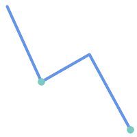
| 
|
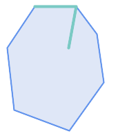
| 
|
The ST_Contains predicate returns FALSE in the following situations:

| 
|
-- A circle within a circle
SELECT ST_Contains(smallc, bigc) As smallcontainsbig,
ST_Contains(bigc,smallc) As bigcontainssmall,
ST_Contains(bigc, ST_Union(smallc, bigc)) as bigcontainsunion,
ST_Equals(bigc, ST_Union(smallc, bigc)) as bigisunion,
ST_Covers(bigc, ST_ExteriorRing(bigc)) As bigcoversexterior,
ST_Contains(bigc, ST_ExteriorRing(bigc)) As bigcontainsexterior
FROM (SELECT ST_Buffer(ST_GeomFromText('POINT(1 2)'), 10) As smallc,
ST_Buffer(ST_GeomFromText('POINT(1 2)'), 20) As bigc) As foo;
-- Result
smallcontainsbig | bigcontainssmall | bigcontainsunion | bigisunion | bigcoversexterior | bigcontainsexterior
------------------+------------------+------------------+------------+-------------------+---------------------
f | t | t | t | t | f
-- Example demonstrating difference between contains and contains properly
SELECT ST_GeometryType(geomA) As geomtype, ST_Contains(geomA,geomA) AS acontainsa, ST_ContainsProperly(geomA, geomA) AS acontainspropa,
ST_Contains(geomA, ST_Boundary(geomA)) As acontainsba, ST_ContainsProperly(geomA, ST_Boundary(geomA)) As acontainspropba
FROM (VALUES ( ST_Buffer(ST_Point(1,1), 5,1) ),
( ST_MakeLine(ST_Point(1,1), ST_Point(-1,-1) ) ),
( ST_Point(1,1) )
) As foo(geomA);
geomtype | acontainsa | acontainspropa | acontainsba | acontainspropba
--------------+------------+----------------+-------------+-----------------
ST_Polygon | t | f | f | f
ST_LineString | t | f | f | f
ST_Point | t | t | f | f
Name
ST_ContainsProperly — Tests if B intersects the interior of A but not the boundary or exterior.
Synopsis
boolean ST_ContainsProperly(geometry
geomA, geometry
geomB);
Description
Returns true if B intersects the interior of A but not the boundary or exterior.
A does not properly contain itself, but does contain itself.
Every point of the other geometry is a point of this geometry's interior. The DE-9IM Intersection Matrix for the two geometries matches [T**FF*FF*] used in ST_Relate
An example use case for this predicate is computing the intersections of a set of geometries with a large polygonal geometry. Since intersection is a fairly slow operation, it can be more efficient to use containsProperly to filter out test geometries which lie wholly inside the area. In these cases the intersection is known a priori to be exactly the original test geometry.
| |
This function automatically includes a bounding box comparison
that makes use of any spatial indexes that are available on the geometries.
To avoid index use, use the function |
| |
The advantage of this predicate over ST_Contains and ST_Intersects is that it can be computed more efficiently, with no need to compute topology at individual points. |
Performed by the GEOS module.
Availability: 1.4.0
| |
Enhanced: 3.0.0 enabled support for |
| |
Do not use this function with invalid geometries. You will get unexpected results. |
Examples
--a circle within a circle
SELECT ST_ContainsProperly(smallc, bigc) As smallcontainspropbig,
ST_ContainsProperly(bigc,smallc) As bigcontainspropsmall,
ST_ContainsProperly(bigc, ST_Union(smallc, bigc)) as bigcontainspropunion,
ST_Equals(bigc, ST_Union(smallc, bigc)) as bigisunion,
ST_Covers(bigc, ST_ExteriorRing(bigc)) As bigcoversexterior,
ST_ContainsProperly(bigc, ST_ExteriorRing(bigc)) As bigcontainsexterior
FROM (SELECT ST_Buffer(ST_GeomFromText('POINT(1 2)'), 10) As smallc,
ST_Buffer(ST_GeomFromText('POINT(1 2)'), 20) As bigc) As foo;
--Result
smallcontainspropbig | bigcontainspropsmall | bigcontainspropunion | bigisunion | bigcoversexterior | bigcontainsexterior
------------------+------------------+------------------+------------+-------------------+---------------------
f | t | f | t | t | f
--example demonstrating difference between contains and contains properly
SELECT ST_GeometryType(geomA) As geomtype, ST_Contains(geomA,geomA) AS acontainsa, ST_ContainsProperly(geomA, geomA) AS acontainspropa,
ST_Contains(geomA, ST_Boundary(geomA)) As acontainsba, ST_ContainsProperly(geomA, ST_Boundary(geomA)) As acontainspropba
FROM (VALUES ( ST_Buffer(ST_Point(1,1), 5,1) ),
( ST_MakeLine(ST_Point(1,1), ST_Point(-1,-1) ) ),
( ST_Point(1,1) )
) As foo(geomA);
geomtype | acontainsa | acontainspropa | acontainsba | acontainspropba
--------------+------------+----------------+-------------+-----------------
ST_Polygon | t | f | f | f
ST_LineString | t | f | f | f
ST_Point | t | t | f | f
See Also
ST_GeometryType, ST_Boundary, ST_Contains, ST_Covers, ST_CoveredBy, ST_Equals, ST_Relate, ST_Within
Name
ST_CoveredBy — Tests if no point in A is outside B
Synopsis
boolean ST_CoveredBy(geometry
geomA, geometry
geomB);
boolean ST_CoveredBy(geography
geogA, geography
geogB);
Description
Returns true if no point in Geometry/Geography A lies outside
Geometry/Geography B.
Equivalently, tests if every point of geometry A is inside
(i.e. intersects the interior or boundary of) geometry B.
| |
This function automatically includes a bounding box comparison
that makes use of any spatial indexes that are available on the geometries.
To avoid index use, use the function |
| |
Enhanced: 3.0.0 enabled support for |
| |
Do not use this function with invalid geometries. You will get unexpected results. |
Performed by the GEOS module
Availability: 1.2.2
NOTE: this is the "allowable" version that returns a boolean, not an integer.
Not an OGC standard, but Oracle has it too.
Examples
--a circle coveredby a circle
SELECT ST_CoveredBy(smallc,smallc) As smallinsmall,
ST_CoveredBy(smallc, bigc) As smallcoveredbybig,
ST_CoveredBy(ST_ExteriorRing(bigc), bigc) As exteriorcoveredbybig,
ST_Within(ST_ExteriorRing(bigc),bigc) As exeriorwithinbig
FROM (SELECT ST_Buffer(ST_GeomFromText('POINT(1 2)'), 10) As smallc,
ST_Buffer(ST_GeomFromText('POINT(1 2)'), 20) As bigc) As foo;
--Result
smallinsmall | smallcoveredbybig | exteriorcoveredbybig | exeriorwithinbig
--------------+-------------------+----------------------+------------------
t | t | t | f
(1 row) Name
ST_Covers — Tests if no point in B is outside A
Synopsis
boolean ST_Covers(geometry
geomA, geometry
geomB);
boolean ST_Covers(geography
geogpolyA, geography
geogpointB);
Description
Returns true if no point in Geometry/Geography B is outside
Geometry/Geography A.
Equivalently, tests if every point of geometry B is inside
(i.e. intersects the interior or boundary of) geometry A.
| |
This function automatically includes a bounding box comparison
that makes use of any spatial indexes that are available on the geometries.
To avoid index use, use the function |
| |
Enhanced: 3.0.0 enabled support for |
| |
Do not use this function with invalid geometries. You will get unexpected results. |
Performed by the GEOS module
Enhanced: 2.4.0 Support for polygon in polygon and line in polygon added for geography type
Enhanced: 2.3.0 Enhancement to PIP short-circuit for geometry extended to support MultiPoints with few points. Prior versions only supported point in polygon.
Availability: 1.5 - support for geography was introduced.
Availability: 1.2.2
NOTE: this is the "allowable" version that returns a boolean, not an integer.
Not an OGC standard, but Oracle has it too.
Examples
Geometry example
--a circle covering a circle
SELECT ST_Covers(smallc,smallc) As smallinsmall,
ST_Covers(smallc, bigc) As smallcoversbig,
ST_Covers(bigc, ST_ExteriorRing(bigc)) As bigcoversexterior,
ST_Contains(bigc, ST_ExteriorRing(bigc)) As bigcontainsexterior
FROM (SELECT ST_Buffer(ST_GeomFromText('POINT(1 2)'), 10) As smallc,
ST_Buffer(ST_GeomFromText('POINT(1 2)'), 20) As bigc) As foo;
--Result
smallinsmall | smallcoversbig | bigcoversexterior | bigcontainsexterior
--------------+----------------+-------------------+---------------------
t | f | t | f
(1 row) Geeography Example
-- a point with a 300 meter buffer compared to a point, a point and its 10 meter buffer
SELECT ST_Covers(geog_poly, geog_pt) As poly_covers_pt,
ST_Covers(ST_Buffer(geog_pt,10), geog_pt) As buff_10m_covers_cent
FROM (SELECT ST_Buffer(ST_GeogFromText('SRID=4326;POINT(-99.327 31.4821)'), 300) As geog_poly,
ST_GeogFromText('SRID=4326;POINT(-99.33 31.483)') As geog_pt ) As foo;
poly_covers_pt | buff_10m_covers_cent
----------------+------------------
f | t
Name
ST_Crosses — Tests if two geometries have some, but not all, interior points in common.
Synopsis
boolean ST_Crosses(geometry g1, geometry g2);
Description
Compares two geometry objects and
returns true if their intersection "spatially cross", that is, the
geometries have some, but not all interior points in common. The
intersection of the interiors of the geometries must be non-empty
and must have dimension less than the maximum dimension
of the two input geometries. Additionally, the intersection of the two
geometries must not equal either of the source geometries. Otherwise, it
returns false.
In mathematical terms, this is:

Geometries cross if their DE-9IM Intersection Matrix matches:
T*T******for Point/Line, Point/Area, and Line/Area situationsT*****T**for Line/Point, Area/Point, and Area/Line situations0********for Line/Line situations
For Point/Point and Area/Area situations this predicate returns
false.
The OpenGIS Simple Features Specification defines this predicate only for Point/Line, Point/Area, Line/Line, and Line/Area situations. JTS / GEOS extends the definition to apply to Line/Point, Area/Point and Area/Line situations as well. This makes the relation symmetric.
| |
This function automatically includes a bounding box comparison that makes use of any spatial indexes that are available on the geometries. |
| |
Enhanced: 3.0.0 enabled support for |
This method implements the OGC Simple Features
Implementation Specification for SQL 1.1. s2.1.13.3
This method implements the SQL/MM specification. SQL-MM 3: 5.1.29
Examples
The following situations all return true.
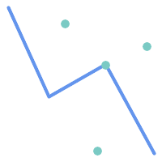
| 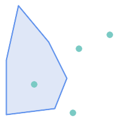
|
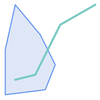
| 
|
Consider a situation where a user has two tables: a table of roads and a table of highways.
CREATE TABLE roads ( id serial NOT NULL, geom geometry, CONSTRAINT roads_pkey PRIMARY KEY (road_id) );
|
CREATE TABLE highways ( id serial NOT NULL, the_gem geometry, CONSTRAINT roads_pkey PRIMARY KEY (road_id) );
|
To determine a list of roads that cross a highway, use a query similiar to:
SELECT roads.id FROM roads, highways WHERE ST_Crosses(roads.geom, highways.geom);
Name
ST_Disjoint — Tests if two geometries are disjoint (they have no point in common).
Synopsis
boolean ST_Disjoint(
geometry
A
,
geometry
B
);
Description
Overlaps, Touches, Within all imply geometries are not spatially disjoint. If any of the aforementioned returns true, then the geometries are not spatially disjoint. Disjoint implies false for spatial intersection.
| |
Enhanced: 3.0.0 enabled support for |
Performed by the GEOS module
| |
This function call does not use indexes |
| |
NOTE: this is the "allowable" version that returns a boolean, not an integer. |
This method implements the OGC Simple Features
Implementation Specification for SQL 1.1. s2.1.1.2 //s2.1.13.3
- a.Relate(b, 'FF*FF****')
This method implements the SQL/MM specification. SQL-MM 3: 5.1.26
Name
ST_Equals — Tests if two geometries include the same set of points.
Synopsis
boolean ST_Equals(geometry A, geometry B);
Description
Returns true if the given geometries are "spatially
equal". Use this for a 'better' answer than '='.
Note by spatially equal we mean ST_Within(A,B) = true and ST_Within(B,A) = true and
also mean ordering of points can be different but
represent the same geometry structure. To verify the order of points is consistent, use
ST_OrderingEquals (it must be noted ST_OrderingEquals is a little more stringent than simply verifying order of
points are the same).
| |
Enhanced: 3.0.0 enabled support for |
This method implements the OGC Simple Features
Implementation Specification for SQL 1.1. s2.1.1.2
This method implements the SQL/MM specification. SQL-MM 3: 5.1.24
Changed: 2.2.0 Returns true even for invalid geometries if they are binary equal
Examples
SELECT ST_Equals(ST_GeomFromText('LINESTRING(0 0, 10 10)'),
ST_GeomFromText('LINESTRING(0 0, 5 5, 10 10)'));
st_equals
-----------
t
(1 row)
SELECT ST_Equals(ST_Reverse(ST_GeomFromText('LINESTRING(0 0, 10 10)')),
ST_GeomFromText('LINESTRING(0 0, 5 5, 10 10)'));
st_equals
-----------
t
(1 row)
Name
ST_Intersects — Tests if two geometries intersect (they have at least one point in common).
Synopsis
boolean ST_Intersects(
geometry
geomA
,
geometry
geomB
);
boolean ST_Intersects(
geography
geogA
,
geography
geogB
);
Description
Compares two geometries and returns true if they intersect.
Geometries intersect if they have any point in common.
For geography, a distance tolerance of 0.00001 meters is used (so points that are very close are considered to intersect).
Geometries intersect if their DE-9IM Intersection Matrix matches one of:
T*********T**********T*********T****
Spatial intersection is implied by all the other spatial relationship tests, except ST_Disjoint, which tests that geometries do NOT intersect.
| |
This function automatically includes a bounding box comparison that makes use of any spatial indexes that are available on the geometries. |
Changed: 3.0.0 SFCGAL version removed and native support for 2D TINS added.
Enhanced: 2.5.0 Supports GEOMETRYCOLLECTION.
Enhanced: 2.3.0 Enhancement to PIP short-circuit extended to support MultiPoints with few points. Prior versions only supported point in polygon.
Performed by the GEOS module (for geometry), geography is native
Availability: 1.5 support for geography was introduced.
| |
For geography, this function has a distance tolerance of about 0.00001 meters and uses the sphere rather than spheroid calculation. |
| |
NOTE: this is the "allowable" version that returns a boolean, not an integer. |
This method implements the OGC Simple Features
Implementation Specification for SQL 1.1. s2.1.1.2 //s2.1.13.3
- ST_Intersects(g1, g2 ) --> Not (ST_Disjoint(g1, g2 ))
This method implements the SQL/MM specification. SQL-MM 3: 5.1.27
This method supports Circular Strings and Curves
This function supports Triangles and Triangulated Irregular Network Surfaces (TIN).
Geometry Examples
SELECT ST_Intersects('POINT(0 0)'::geometry, 'LINESTRING ( 2 0, 0 2 )'::geometry);
st_intersects
---------------
f
(1 row)
SELECT ST_Intersects('POINT(0 0)'::geometry, 'LINESTRING ( 0 0, 0 2 )'::geometry);
st_intersects
---------------
t
(1 row)
-- Look up in table. Make sure table has a GiST index on geometry column for faster lookup.
SELECT id, name FROM cities WHERE ST_Intersects(geom, 'SRID=4326;POLYGON((28 53,27.707 52.293,27 52,26.293 52.293,26 53,26.293 53.707,27 54,27.707 53.707,28 53))');
id | name
----+-------
2 | Minsk
(1 row)
Name
ST_LineCrossingDirection — Returns a number indicating the crossing behavior of two LineStrings.
Synopsis
integer ST_LineCrossingDirection(geometry linestringA, geometry linestringB);
Description
Given two linestrings returns an integer between -3 and 3
indicating what kind of crossing behavior exists between them.
0 indicates no crossing.
This is only supported for LINESTRINGs.
The crossing number has the following meaning:
0: LINE NO CROSS
-1: LINE CROSS LEFT
1: LINE CROSS RIGHT
-2: LINE MULTICROSS END LEFT
2: LINE MULTICROSS END RIGHT
-3: LINE MULTICROSS END SAME FIRST LEFT
3: LINE MULTICROSS END SAME FIRST RIGHT
Availability: 1.4
Examples
Example: LINE CROSS LEFT and LINE CROSS RIGHT
Blue: Line A; Green: Line B
SELECT ST_LineCrossingDirection(lineA, lineB) As A_cross_B,
ST_LineCrossingDirection(lineB, lineA) As B_cross_A
FROM (SELECT
ST_GeomFromText('LINESTRING(25 169,89 114,40 70,86 43)') As lineA,
ST_GeomFromText('LINESTRING (20 140, 71 74, 161 53)') As lineB
) As foo;
A_cross_B | B_cross_A
-----------+-----------
-1 | 1
Example: LINE MULTICROSS END SAME FIRST LEFT and LINE MULTICROSS END SAME FIRST RIGHT
Blue: Line A; Green: Line B
SELECT ST_LineCrossingDirection(lineA, lineB) As A_cross_B,
ST_LineCrossingDirection(lineB, lineA) As B_cross_A
FROM (SELECT
ST_GeomFromText('LINESTRING(25 169,89 114,40 70,86 43)') As lineA,
ST_GeomFromText('LINESTRING(171 154,20 140,71 74,161 53)') As lineB
) As foo;
A_cross_B | B_cross_A
-----------+-----------
3 | -3
Example: LINE MULTICROSS END LEFT and LINE MULTICROSS END RIGHT
Blue: Line A; Green: Line B
SELECT ST_LineCrossingDirection(lineA, lineB) As A_cross_B,
ST_LineCrossingDirection(lineB, lineA) As B_cross_A
FROM (SELECT
ST_GeomFromText('LINESTRING(25 169,89 114,40 70,86 43)') As lineA,
ST_GeomFromText('LINESTRING(5 90, 71 74, 20 140, 171 154)') As lineB
) As foo;
A_cross_B | B_cross_A
-----------+-----------
-2 | 2
Example: LINE MULTICROSS END LEFT and LINE MULTICROSS END RIGHT
Blue: Line A; Green: Line B
SELECT ST_LineCrossingDirection(lineA, lineB) As A_cross_B,
ST_LineCrossingDirection(lineB, lineA) As B_cross_A
FROM (SELECT
ST_GeomFromText('LINESTRING(25 169,89 114,40 70,86 43)') As lineA,
ST_GeomFromText('LINESTRING (171 154, 20 140, 71 74, 2.99 90.16)') As lineB
) As foo;
A_cross_B | B_cross_A
-----------+-----------
2 | -2
SELECT s1.gid, s2.gid, ST_LineCrossingDirection(s1.geom, s2.geom)
FROM streets s1 CROSS JOIN streets s2
ON (s1.gid != s2.gid AND s1.geom && s2.geom )
WHERE ST_LineCrossingDirection(s1.geom, s2.geom) > 0;
Name
ST_OrderingEquals — Tests if two geometries represent the same geometry and have points in the same directional order.
Synopsis
boolean ST_OrderingEquals(geometry A, geometry B);
Description
ST_OrderingEquals compares two geometries and returns t (TRUE) if the geometries are equal and the coordinates are in the same order; otherwise it returns f (FALSE).
| |
This function is implemented as per the ArcSDE SQL specification rather than SQL-MM. http://edndoc.esri.com/arcsde/9.1/sql_api/sqlapi3.htm#ST_OrderingEquals |
This method implements the SQL/MM specification. SQL-MM 3: 5.1.43
Examples
SELECT ST_OrderingEquals(ST_GeomFromText('LINESTRING(0 0, 10 10)'),
ST_GeomFromText('LINESTRING(0 0, 5 5, 10 10)'));
st_orderingequals
-----------
f
(1 row)
SELECT ST_OrderingEquals(ST_GeomFromText('LINESTRING(0 0, 10 10)'),
ST_GeomFromText('LINESTRING(0 0, 0 0, 10 10)'));
st_orderingequals
-----------
t
(1 row)
SELECT ST_OrderingEquals(ST_Reverse(ST_GeomFromText('LINESTRING(0 0, 10 10)')),
ST_GeomFromText('LINESTRING(0 0, 0 0, 10 10)'));
st_orderingequals
-----------
f
(1 row)
Name
ST_Overlaps — Tests if two geometries intersect and have the same dimension, but are not completely contained by each other.
Synopsis
boolean ST_Overlaps(geometry A, geometry B);
Description
Returns TRUE if geometry A and B "spatially overlap". Two geometries overlap if they have the same dimension, each has at least one point not shared by the other (or equivalently neither covers the other), and the intersection of their interiors has the same dimension. The overlaps relationship is symmetrical.
| |
This function automatically includes a bounding box comparison
that makes use of any spatial indexes that are available on the geometries.
To avoid index use, use the function |
Performed by the GEOS module
| |
Enhanced: 3.0.0 enabled support for |
NOTE: this is the "allowable" version that returns a boolean, not an integer.
This method implements the OGC Simple Features
Implementation Specification for SQL 1.1. s2.1.1.2 // s2.1.13.3
This method implements the SQL/MM specification. SQL-MM 3: 5.1.32
Examples
ST_Overlaps returns TRUE in the following situations:
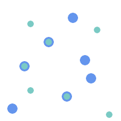
| 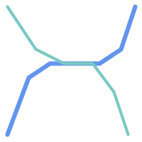
| 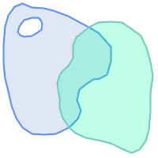
|
A Point on a LineString is contained, but since it has lower dimension it does not overlap or cross.
SELECT ST_Overlaps(a,b) AS overlaps, ST_Crosses(a,b) AS crosses,
ST_Intersects(a, b) AS intersects, ST_Contains(b,a) AS b_contains_a
FROM (SELECT ST_GeomFromText('POINT (100 100)') As a,
ST_GeomFromText('LINESTRING (30 50, 40 160, 160 40, 180 160)') AS b) AS t
overlaps | crosses | intersects | b_contains_a
---------+----------------------+--------------
f | f | t | t
A LineString that partly covers a Polygon intersects and crosses, but does not overlap since it has different dimension.
SELECT ST_Overlaps(a,b) AS overlaps, ST_Crosses(a,b) AS crosses,
ST_Intersects(a, b) AS intersects, ST_Contains(a,b) AS contains
FROM (SELECT ST_GeomFromText('POLYGON ((40 170, 90 30, 180 100, 40 170))') AS a,
ST_GeomFromText('LINESTRING(10 10, 190 190)') AS b) AS t;
overlap | crosses | intersects | contains
---------+---------+------------+--------------
f | t | t | f
Two Polygons that intersect but with neither contained by the other overlap, but do not cross because their intersection has the same dimension.
SELECT ST_Overlaps(a,b) AS overlaps, ST_Crosses(a,b) AS crosses,
ST_Intersects(a, b) AS intersects, ST_Contains(b, a) AS b_contains_a,
ST_Dimension(a) AS dim_a, ST_Dimension(b) AS dim_b,
ST_Dimension(ST_Intersection(a,b)) AS dim_int
FROM (SELECT ST_GeomFromText('POLYGON ((40 170, 90 30, 180 100, 40 170))') AS a,
ST_GeomFromText('POLYGON ((110 180, 20 60, 130 90, 110 180))') AS b) As t;
overlaps | crosses | intersects | b_contains_a | dim_a | dim_b | dim_int
----------+---------+------------+--------------+-------+-------+-----------
t | f | t | f | 2 | 2 | 2
Name
ST_Relate — Tests if two geometries have a topological relationship matching an Intersection Matrix pattern, or computes their Intersection Matrix
Synopsis
boolean ST_Relate(geometry geomA, geometry geomB, text intersectionMatrixPattern);
text ST_Relate(geometry geomA, geometry geomB);
text ST_Relate(geometry geomA, geometry geomB, integer boundaryNodeRule);
Description
These functions allow testing and evaluating the spatial (topological) relationship between two geometries, as defined by the Dimensionally Extended 9-Intersection Model (DE-9IM).
The DE-9IM is specified as a 9-element matrix indicating the dimension of the intersections between the
Interior, Boundary and Exterior of two geometries.
It is represented by a 9-character text string using the symbols 'F', '0', '1', '2'
(e.g. 'FF1FF0102').
A specific kind of spatial relationships is evaluated by comparing the intersection
matrix to an intersection matrix pattern.
A pattern can include the additional symbols 'T' and '*'.
Common spatial relationships are provided by the named functions
ST_Contains, ST_ContainsProperly,
ST_Covers, ST_CoveredBy,
ST_Crosses, ST_Disjoint, ST_Equals,
ST_Intersects, ST_Overlaps, ST_Touches,
and ST_Within.
Using an explicit pattern allows testing multiple conditions of intersects, crosses, etc in one step.
It also allows testing spatial relationships which do not have a named spatial relationship function.
For example, the relationship "Interior-Intersects" has the DE-9IM pattern T********,
which is not evaluated by any named predicate.
For more information refer to Section 5.1, “Determining Spatial Relationships”.
Variant 1: Tests if two geometries are spatially related
according to the given intersectionMatrixPattern.
| |
Unlike most of the named spatial relationship predicates, this does NOT automatically include an index call. The reason is that some relationships are true for geometries which do NOT intersect (e.g. Disjoint). If you are using a relationship pattern that requires intersection, then include the && index call. |
| |
It is better to use a named relationship function if available, since they automatically use a spatial index where one exists. Also, they may implement performance optimizations which are not available with full relate evalation. |
Variant 2: Returns the DE-9IM matrix string for the spatial relationship between the two input geometries. The matrix string can be tested for matching a DE-9IM pattern using ST_RelateMatch.
Variant 3: Like variant 2,
but allows specifying a Boundary Node Rule.
A boundary node rule allows finer control over whether geometry boundary points are
considered to lie in the DE-9IM Interior or Boundary.
The boundaryNodeRule code is:
1: OGC/MOD2, 2: Endpoint, 3: MultivalentEndpoint, 4: MonovalentEndpoint.
This function is not in the OGC spec, but is implied. see s2.1.13.2
This method implements the OGC Simple Features
Implementation Specification for SQL 1.1. s2.1.1.2 // s2.1.13.3
This method implements the SQL/MM specification. SQL-MM 3: 5.1.25
Performed by the GEOS module
Enhanced: 2.0.0 - added support for specifying boundary node rule.
| |
Enhanced: 3.0.0 enabled support for |
Examples
Using the boolean-valued function to test spatial relationships.
SELECT ST_Relate('POINT(1 2)', ST_Buffer( 'POINT(1 2)', 2), '0FFFFF212');
st_relate
-----------
t
SELECT ST_Relate(POINT(1 2)', ST_Buffer( 'POINT(1 2)', 2), '*FF*FF212');
st_relate
-----------
t
Testing a custom spatial relationship pattern as a query condition,
with && to enable using a spatial index.
-- Find compounds that properly intersect (not just touch) a poly (Interior Intersects)
SELECT c.* , p.name As poly_name
FROM polys AS p
INNER JOIN compounds As c
ON c.geom && p.geom
AND ST_Relate(p.geom, c.geom,'T********');
Computing the intersection matrix for spatial relationships.
SELECT ST_Relate( 'POINT(1 2)',
ST_Buffer( 'POINT(1 2)', 2));
st_relate
-----------
0FFFFF212
SELECT ST_Relate( 'LINESTRING(1 2, 3 4)',
'LINESTRING(5 6, 7 8)' );
st_relate
-----------
FF1FF0102
Name
ST_RelateMatch — Tests if a DE-9IM Intersection Matrix matches an Intersection Matrix pattern
Synopsis
boolean ST_RelateMatch(text intersectionMatrix, text intersectionMatrixPattern);
Description
Tests if a Dimensionally Extended 9-Intersection Model (DE-9IM)
intersectionMatrix value satisfies
an intersectionMatrixPattern.
Intersection matrix values can be computed by ST_Relate.
For more information refer to Section 5.1, “Determining Spatial Relationships”.
Performed by the GEOS module
Availability: 2.0.0
Examples
SELECT ST_RelateMatch('101202FFF', 'TTTTTTFFF') ;
-- result --
t
Patterns for common spatial relationships matched against intersection matrix values, for a line in various positions relative to a polygon
SELECT pat.name AS relationship, pat.val AS pattern,
mat.name AS position, mat.val AS matrix,
ST_RelateMatch(mat.val, pat.val) AS match
FROM (VALUES ( 'Equality', 'T1FF1FFF1' ),
( 'Overlaps', 'T*T***T**' ),
( 'Within', 'T*F**F***' ),
( 'Disjoint', 'FF*FF****' )) AS pat(name,val)
CROSS JOIN
(VALUES ('non-intersecting', 'FF1FF0212'),
('overlapping', '1010F0212'),
('inside', '1FF0FF212')) AS mat(name,val);
relationship | pattern | position | matrix | match
--------------+-----------+------------------+-----------+-------
Equality | T1FF1FFF1 | non-intersecting | FF1FF0212 | f
Equality | T1FF1FFF1 | overlapping | 1010F0212 | f
Equality | T1FF1FFF1 | inside | 1FF0FF212 | f
Overlaps | T*T***T** | non-intersecting | FF1FF0212 | f
Overlaps | T*T***T** | overlapping | 1010F0212 | t
Overlaps | T*T***T** | inside | 1FF0FF212 | f
Within | T*F**F*** | non-intersecting | FF1FF0212 | f
Within | T*F**F*** | overlapping | 1010F0212 | f
Within | T*F**F*** | inside | 1FF0FF212 | t
Disjoint | FF*FF**** | non-intersecting | FF1FF0212 | t
Disjoint | FF*FF**** | overlapping | 1010F0212 | f
Disjoint | FF*FF**** | inside | 1FF0FF212 | f
Name
ST_Touches — Tests if two geometries have at least one point in common, but their interiors do not intersect.
Synopsis
boolean ST_Touches(geometry
A, geometry
B);
Description
Returns TRUE if A and B intersect,
but their interiors do not intersect. Equivalently, A and B have at least one point in common,
and the common points lie in at least one boundary.
For Point/Point inputs the relationship is always FALSE,
since points do not have a boundary.
In mathematical terms, this relationship is:
This relationship holds if the DE-9IM Intersection Matrix for the two geometries matches one of:
FT*******
F**T*****
F***T****
| |
This function automatically includes a bounding box comparison
that makes use of any spatial indexes that are available on the geometries.
To avoid using an index, use |
| |
Enhanced: 3.0.0 enabled support for |
This method implements the OGC Simple Features
Implementation Specification for SQL 1.1. s2.1.1.2 // s2.1.13.3
This method implements the SQL/MM specification. SQL-MM 3: 5.1.28
Examples
The ST_Touches predicate returns TRUE in the following examples.

| 
| 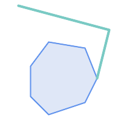
|

| 
| 
|
SELECT ST_Touches('LINESTRING(0 0, 1 1, 0 2)'::geometry, 'POINT(1 1)'::geometry);
st_touches
------------
f
(1 row)
SELECT ST_Touches('LINESTRING(0 0, 1 1, 0 2)'::geometry, 'POINT(0 2)'::geometry);
st_touches
------------
t
(1 row)Name
ST_Within — Tests if no points of A lie in the exterior of B, and A and B have at least one interior point in common.
Synopsis
boolean ST_Within(geometry
A, geometry
B);
Description
Returns TRUE if geometry A is completely inside geometry B. For this function to make sense, the source geometries must both be of the same coordinate projection, having the same SRID. It is a given that if ST_Within(A,B) is true and ST_Within(B,A) is true, then the two geometries are considered spatially equal.
A subtlety of this definition is that the boundary of a geometry is not within the geometry. This means that lines and points lying in the boundary of a polygon or line are not within the geometry. For further details see Subtleties of OGC Covers, Contains, Within. (The ST_CoveredBy predicate provides a more inclusive relationship).
ST_Within is the inverse of ST_Contains.
So, ST_Within(A,B) = ST_Contains(B,A).
| |
This function automatically includes a bounding box comparison
that makes use of any spatial indexes that are available on the geometries.
To avoid index use, use the function |
Performed by the GEOS module
Enhanced: 2.3.0 Enhancement to PIP short-circuit for geometry extended to support MultiPoints with few points. Prior versions only supported point in polygon.
| |
Enhanced: 3.0.0 enabled support for |
| |
Do not use this function with invalid geometries. You will get unexpected results. |
NOTE: this is the "allowable" version that returns a boolean, not an integer.
This method implements the OGC Simple Features
Implementation Specification for SQL 1.1. s2.1.1.2 // s2.1.13.3
- a.Relate(b, 'T*F**F***')
This method implements the SQL/MM specification. SQL-MM 3: 5.1.30
Examples
--a circle within a circle
SELECT ST_Within(smallc,smallc) As smallinsmall,
ST_Within(smallc, bigc) As smallinbig,
ST_Within(bigc,smallc) As biginsmall,
ST_Within(ST_Union(smallc, bigc), bigc) as unioninbig,
ST_Within(bigc, ST_Union(smallc, bigc)) as biginunion,
ST_Equals(bigc, ST_Union(smallc, bigc)) as bigisunion
FROM
(
SELECT ST_Buffer(ST_GeomFromText('POINT(50 50)'), 20) As smallc,
ST_Buffer(ST_GeomFromText('POINT(50 50)'), 40) As bigc) As foo;
--Result
smallinsmall | smallinbig | biginsmall | unioninbig | biginunion | bigisunion
--------------+------------+------------+------------+------------+------------
t | t | f | t | t | t
(1 row)
- ST_3DDWithin — Tests if two 3D geometries are within a given 3D distance
- ST_3DDFullyWithin — Tests if two 3D geometries are entirely within a given 3D distance
- ST_DFullyWithin — Tests if two geometries are entirely within a given distance
- ST_DWithin — Tests if two geometries are within a given distance
- ST_PointInsideCircle — Tests if a point geometry is inside a circle defined by a center and radius.
Name
ST_3DDWithin — Tests if two 3D geometries are within a given 3D distance
Synopsis
boolean ST_3DDWithin(geometry
g1, geometry
g2, double precision
distance_of_srid);
Description
Returns true if the 3D distance between two geometry values is no larger than
distance distance_of_srid.
The distance is specified in units defined by the spatial reference system of the geometries.
For this function to make sense
the source geometries must be in the same coordinate system (have the same SRID).
| |
This function automatically includes a bounding box comparison that makes use of any spatial indexes that are available on the geometries. |
This function supports 3d and will not drop the z-index.
This function supports Polyhedral surfaces.
This method implements the SQL/MM specification. SQL-MM ?
Availability: 2.0.0
Examples
-- Geometry example - units in meters (SRID: 2163 US National Atlas Equal area) (3D point and line compared 2D point and line)
-- Note: currently no vertical datum support so Z is not transformed and assumed to be same units as final.
SELECT ST_3DDWithin(
ST_Transform(ST_GeomFromEWKT('SRID=4326;POINT(-72.1235 42.3521 4)'),2163),
ST_Transform(ST_GeomFromEWKT('SRID=4326;LINESTRING(-72.1260 42.45 15, -72.123 42.1546 20)'),2163),
126.8
) As within_dist_3d,
ST_DWithin(
ST_Transform(ST_GeomFromEWKT('SRID=4326;POINT(-72.1235 42.3521 4)'),2163),
ST_Transform(ST_GeomFromEWKT('SRID=4326;LINESTRING(-72.1260 42.45 15, -72.123 42.1546 20)'),2163),
126.8
) As within_dist_2d;
within_dist_3d | within_dist_2d
----------------+----------------
f | t
Name
ST_3DDFullyWithin — Tests if two 3D geometries are entirely within a given 3D distance
Synopsis
boolean ST_3DDFullyWithin(geometry
g1, geometry
g2, double precision
distance);
Description
Returns true if the 3D geometries are fully within the specified distance of one another. The distance is specified in units defined by the spatial reference system of the geometries. For this function to make sense, the source geometries must both be of the same coordinate projection, having the same SRID.
| |
This function automatically includes a bounding box comparison that makes use of any spatial indexes that are available on the geometries. |
Availability: 2.0.0
This function supports 3d and will not drop the z-index.
This function supports Polyhedral surfaces.
Examples
-- This compares the difference between fully within and distance within as well
-- as the distance fully within for the 2D footprint of the line/point vs. the 3d fully within
SELECT ST_3DDFullyWithin(geom_a, geom_b, 10) as D3DFullyWithin10, ST_3DDWithin(geom_a, geom_b, 10) as D3DWithin10,
ST_DFullyWithin(geom_a, geom_b, 20) as D2DFullyWithin20,
ST_3DDFullyWithin(geom_a, geom_b, 20) as D3DFullyWithin20 from
(select ST_GeomFromEWKT('POINT(1 1 2)') as geom_a,
ST_GeomFromEWKT('LINESTRING(1 5 2, 2 7 20, 1 9 100, 14 12 3)') as geom_b) t1;
d3dfullywithin10 | d3dwithin10 | d2dfullywithin20 | d3dfullywithin20
------------------+-------------+------------------+------------------
f | t | t | f Name
ST_DFullyWithin — Tests if two geometries are entirely within a given distance
Synopsis
boolean ST_DFullyWithin(geometry
g1, geometry
g2, double precision
distance);
Description
Returns true if the geometries are entirely within the specified distance of one another. The distance is specified in units defined by the spatial reference system of the geometries. For this function to make sense, the source geometries must both be of the same coordinate projection, having the same SRID.
| |
This function automatically includes a bounding box comparison that makes use of any spatial indexes that are available on the geometries. |
Availability: 1.5.0
Examples
postgis=# SELECT ST_DFullyWithin(geom_a, geom_b, 10) as DFullyWithin10, ST_DWithin(geom_a, geom_b, 10) as DWithin10, ST_DFullyWithin(geom_a, geom_b, 20) as DFullyWithin20 from
(select ST_GeomFromText('POINT(1 1)') as geom_a,ST_GeomFromText('LINESTRING(1 5, 2 7, 1 9, 14 12)') as geom_b) t1;
-----------------
DFullyWithin10 | DWithin10 | DFullyWithin20 |
---------------+----------+---------------+
f | t | t | Name
ST_DWithin — Tests if two geometries are within a given distance
Synopsis
boolean ST_DWithin(geometry
g1, geometry
g2, double precision
distance_of_srid);
boolean ST_DWithin(geography
gg1, geography
gg2, double precision
distance_meters, boolean
use_spheroid = true);
Description
Returns true if the geometries are within a given distance
For geometry: The distance is specified in units defined by the spatial reference system of the geometries. For this function to make sense, the source geometries must be in the same coordinate system (have the same SRID).
For geography: units are in meters and distance measurement
defaults to use_spheroid=true.
For faster evaluation use use_spheroid=false to measure on the sphere.
| |
Use ST_3DDWithin for 3D geometries. |
| |
This function call includes a bounding box comparison that makes use of any indexes that are available on the geometries. |
This method implements the OGC Simple Features
Implementation Specification for SQL 1.1.
Availability: 1.5.0 support for geography was introduced
Enhanced: 2.1.0 improved speed for geography. See Making Geography faster for details.
Enhanced: 2.1.0 support for curved geometries was introduced.
Prior to 1.3, ST_Expand was commonly used in conjunction with && and ST_Distance to test for distance, and in pre-1.3.4 this function used that logic. From 1.3.4, ST_DWithin uses a faster short-circuit distance function.
Examples
-- Find the nearest hospital to each school
-- that is within 3000 units of the school.
-- We do an ST_DWithin search to utilize indexes to limit our search list
-- that the non-indexable ST_Distance needs to process
-- If the units of the spatial reference is meters then units would be meters
SELECT DISTINCT ON (s.gid) s.gid, s.school_name, s.geom, h.hospital_name
FROM schools s
LEFT JOIN hospitals h ON ST_DWithin(s.geom, h.geom, 3000)
ORDER BY s.gid, ST_Distance(s.geom, h.geom);
-- The schools with no close hospitals
-- Find all schools with no hospital within 3000 units
-- away from the school. Units is in units of spatial ref (e.g. meters, feet, degrees)
SELECT s.gid, s.school_name
FROM schools s
LEFT JOIN hospitals h ON ST_DWithin(s.geom, h.geom, 3000)
WHERE h.gid IS NULL;
-- Find broadcasting towers that receiver with limited range can receive.
-- Data is geometry in Spherical Mercator (SRID=3857), ranges are approximate.
-- Create geometry index that will check proximity limit of user to tower
CREATE INDEX ON broadcasting_towers using gist (geom);
-- Create geometry index that will check proximity limit of tower to user
CREATE INDEX ON broadcasting_towers using gist (ST_Expand(geom, sending_range));
-- Query towers that 4-kilometer receiver in Minsk Hackerspace can get
-- Note: two conditions, because shorter LEAST(b.sending_range, 4000) will not use index.
SELECT b.tower_id, b.geom
FROM broadcasting_towers b
WHERE ST_DWithin(b.geom, 'SRID=3857;POINT(3072163.4 7159374.1)', 4000)
AND ST_DWithin(b.geom, 'SRID=3857;POINT(3072163.4 7159374.1)', b.sending_range);
Name
ST_PointInsideCircle — Tests if a point geometry is inside a circle defined by a center and radius.
Synopsis
boolean ST_PointInsideCircle(geometry a_point, float center_x, float center_y, float radius);
Description
Returns true if the geometry is a point and is inside the
circle with center center_x,center_y
and radius radius.
| |
Does not use spatial indexes. Use ST_DWithin instead. |
Availability: 1.2
Changed: 2.2.0 In prior versions this was called ST_Point_Inside_Circle
- ST_Area — Returns the area of a polygonal geometry.
- ST_Azimuth — Returns the north-based azimuth of a line between two points.
- ST_Angle — Returns the angle between two vectors defined by 3 or 4 points, or 2 lines.
- ST_ClosestPoint — Returns the 2D point on g1 that is closest to g2. This is the first point of the shortest line from one geometry to the other.
- ST_3DClosestPoint — Returns the 3D point on g1 that is closest to g2. This is the first point of the 3D shortest line.
- ST_Distance — Returns the distance between two geometry or geography values.
- ST_3DDistance — Returns the 3D cartesian minimum distance (based on spatial ref) between two geometries in projected units.
- ST_DistanceSphere — Returns minimum distance in meters between two lon/lat geometries using a spherical earth model.
- ST_DistanceSpheroid — Returns the minimum distance between two lon/lat geometries using a spheroidal earth model.
- ST_FrechetDistance — Returns the Fréchet distance between two geometries.
- ST_HausdorffDistance — Returns the Hausdorff distance between two geometries.
- ST_Length — Returns the 2D length of a linear geometry.
- ST_Length2D — Returns the 2D length of a linear geometry. Alias for
ST_Length - ST_3DLength — Returns the 3D length of a linear geometry.
- ST_LengthSpheroid — Returns the 2D or 3D length/perimeter of a lon/lat geometry on a spheroid.
- ST_LongestLine — Returns the 2D longest line between two geometries.
- ST_3DLongestLine — Returns the 3D longest line between two geometries
- ST_MaxDistance — Returns the 2D largest distance between two geometries in projected units.
- ST_3DMaxDistance — Returns the 3D cartesian maximum distance (based on spatial ref) between two geometries in projected units.
- ST_MinimumClearance — Returns the minimum clearance of a geometry, a measure of a geometry's robustness.
- ST_MinimumClearanceLine — Returns the two-point LineString spanning a geometry's minimum clearance.
- ST_Perimeter — Returns the length of the boundary of a polygonal geometry or geography.
- ST_Perimeter2D — Returns the 2D perimeter of a polygonal geometry.
Alias for
ST_Perimeter. - ST_3DPerimeter — Returns the 3D perimeter of a polygonal geometry.
- ST_Project — Returns a point projected from a start point by a distance and bearing (azimuth).
- ST_ShortestLine — Returns the 2D shortest line between two geometries
- ST_3DShortestLine — Returns the 3D shortest line between two geometries
Name
ST_Area — Returns the area of a polygonal geometry.
Synopsis
float ST_Area(geometry g1);
float ST_Area(geography geog, boolean use_spheroid=true);
Description
Returns the area of a polygonal geometry.
For geometry types a 2D Cartesian (planar) area is computed, with units specified by the SRID.
For geography types by default area is determined on a spheroid with units in square meters.
To compute the area using the faster but less accurate spherical model use ST_Area(geog,false).
Enhanced: 2.0.0 - support for 2D polyhedral surfaces was introduced.
Enhanced: 2.2.0 - measurement on spheroid performed with GeographicLib for improved accuracy and robustness. Requires PROJ >= 4.9.0 to take advantage of the new feature.
Changed: 3.0.0 - does not depend on SFCGAL anymore.
This method implements the OGC Simple Features
Implementation Specification for SQL 1.1.
This method implements the SQL/MM specification. SQL-MM 3: 8.1.2, 9.5.3
This function supports Polyhedral surfaces.
| |
For polyhedral surfaces, only supports 2D polyhedral surfaces (not 2.5D). For 2.5D, may give a non-zero answer, but only for the faces that sit completely in XY plane. |
Examples
Return area in square feet for a plot of Massachusetts land and multiply by conversion to get square meters. Note this is in square feet because EPSG:2249 is Massachusetts State Plane Feet
select ST_Area(geom) sqft,
ST_Area(geom) * 0.3048 ^ 2 sqm
from (
select 'SRID=2249;POLYGON((743238 2967416,743238 2967450,
743265 2967450,743265.625 2967416,743238 2967416))' :: geometry geom
) subquery;
┌─────────┬─────────────┐
│ sqft │ sqm │
├─────────┼─────────────┤
│ 928.625 │ 86.27208552 │
└─────────┴─────────────┘
Return area square feet and transform to Massachusetts state plane meters (EPSG:26986) to get square meters. Note this is in square feet because 2249 is Massachusetts State Plane Feet and transformed area is in square meters since EPSG:26986 is state plane Massachusetts meters
select ST_Area(geom) sqft,
ST_Area(ST_Transform(geom, 26986)) As sqm
from (
select
'SRID=2249;POLYGON((743238 2967416,743238 2967450,
743265 2967450,743265.625 2967416,743238 2967416))' :: geometry geom
) subquery;
┌─────────┬─────────────────┐
│ sqft │ sqm │
├─────────┼─────────────────┤
│ 928.625 │ 86.272430607008 │
└─────────┴─────────────────┘
Return area square feet and square meters using geography data type. Note that we transform to our geometry to geography (before you can do that make sure your geometry is in WGS 84 long lat 4326). Geography always measures in meters. This is just for demonstration to compare. Normally your table will be stored in geography data type already.
select ST_Area(geog) / 0.3048 ^ 2 sqft_spheroid,
ST_Area(geog, false) / 0.3048 ^ 2 sqft_sphere,
ST_Area(geog) sqm_spheroid
from (
select ST_Transform(
'SRID=2249;POLYGON((743238 2967416,743238 2967450,743265 2967450,743265.625 2967416,743238 2967416))'::geometry,
4326
) :: geography geog
) as subquery;
┌──────────────────┬──────────────────┬──────────────────┐
│ sqft_spheroid │ sqft_sphere │ sqm_spheroid │
├──────────────────┼──────────────────┼──────────────────┤
│ 928.684405784452 │ 927.049336105925 │ 86.2776044979692 │
└──────────────────┴──────────────────┴──────────────────┘
If your data is in geography already:
select ST_Area(geog) / 0.3048 ^ 2 sqft,
ST_Area(the_geog) sqm
from somegeogtable;Name
ST_Azimuth — Returns the north-based azimuth of a line between two points.
Synopsis
float ST_Azimuth(geometry origin, geometry target);
float ST_Azimuth(geography origin, geography target);
Description
Returns the azimuth in radians of the target point from the origin point, or NULL if the two points are coincident. The azimuth angle is a positive clockwise angle referenced from the positive Y axis (geometry) or the North meridian (geography): North = 0; Northeast = π/4; East = π/2; Southeast = 3π/4; South = π; Southwest 5π/4; West = 3π/2; Northwest = 7π/4.
For the geography type, the azimuth solution is known as the inverse geodesic problem.
The azimuth is a mathematical concept defined as the angle between a reference vector and a point, with angular units in radians.
The result value in radians can be converted to degrees using the PostgreSQL function degrees().
Azimuth can be used in conjunction with ST_Translate to shift an object along its perpendicular axis. See
the upgis_lineshift() function in the PostGIS wiki for an implementation of this.
Availability: 1.1.0
Enhanced: 2.0.0 support for geography was introduced.
Enhanced: 2.2.0 measurement on spheroid performed with GeographicLib for improved accuracy and robustness. Requires PROJ >= 4.9.0 to take advantage of the new feature.
Examples
Geometry Azimuth in degrees
SELECT degrees(ST_Azimuth( ST_Point(25, 45), ST_Point(75, 100))) AS degA_B,
degrees(ST_Azimuth( ST_Point(75, 100), ST_Point(25, 45) )) AS degB_A;
dega_b | degb_a
------------------+------------------
42.2736890060937 | 222.273689006094
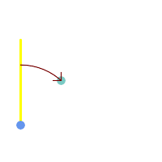 Blue: origin Point(25,45); Green: target Point(75, 100); Yellow: Y axis or North; Red: azimuth angle.
| 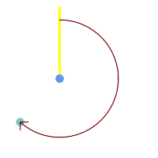 Blue: origin Point(75, 100); Green: target Point(25, 45); Yellow: Y axis or North; Red: azimuth angle.
|
Name
ST_Angle — Returns the angle between two vectors defined by 3 or 4 points, or 2 lines.
Synopsis
float ST_Angle(geometry point1, geometry point2, geometry point3, geometry point4);
float ST_Angle(geometry line1, geometry line2);
Description
Computes the clockwise angle between two vectors.
Variant 1: computes the angle enclosed by the points P1-P2-P3. If a 4th point provided computes the angle points P1-P2 and P3-P4
Variant 2: computes the angle between two vectors S1-E1 and S2-E2, defined by the start and end points of the input lines
The result is a positive angle between 0 and 2π radians.
The radian result can be converted to degrees using the PostgreSQL function degrees().
Note that ST_Angle(P1,P2,P3) = ST_Angle(P2,P1,P2,P3).
Availability: 2.5.0
Examples
Angle between three points
SELECT degrees( ST_Angle('POINT(0 0)', 'POINT(10 10)', 'POINT(20 0)') );
degrees
---------
270
Angle between vectors defined by four points
SELECT degrees( ST_Angle('POINT (10 10)', 'POINT (0 0)', 'POINT(90 90)', 'POINT (100 80)') );
degrees
-------------------
269.9999999999999
Angle between vectors defined by the start and end points of lines
SELECT degrees( ST_Angle('LINESTRING(0 0, 0.3 0.7, 1 1)', 'LINESTRING(0 0, 0.2 0.5, 1 0)') );
degrees
--------------
45
Name
ST_ClosestPoint — Returns the 2D point on g1 that is closest to g2. This is the first point of the shortest line from one geometry to the other.
Synopsis
geometry ST_ClosestPoint(geometry
geom1, geometry
geom2);
Description
Returns the 2-dimensional point on geom1 that is closest to geom2.
This is the first point of the shortest line between the geometries
(as computed by ST_ShortestLine).
| |
If you have a 3D Geometry, you may prefer to use ST_3DClosestPoint. |
Availability: 1.5.0
Examples

The closest point for a Point and a LineString is the point itself. The closest point for a LineString and a Point is a point on the line.
SELECT ST_AsText( ST_ClosestPoint(pt,line)) AS cp_pt_line,
ST_AsText( ST_ClosestPoint(line,pt)) AS cp_line_pt
FROM (SELECT 'POINT (160 40)'::geometry AS pt,
'LINESTRING (10 30, 50 50, 30 110, 70 90, 180 140, 130 190)'::geometry AS line ) AS t;
cp_pt_line | cp_line_pt
----------------+------------------------------------------
POINT(160 40) | POINT(125.75342465753425 115.34246575342466)
The closest point on polygon A to polygon B
SELECT ST_AsText( ST_ClosestPoint(
'POLYGON ((190 150, 20 10, 160 70, 190 150))',
ST_Buffer('POINT(80 160)', 30) )) As ptwkt;
------------------------------------------
POINT(131.59149149528952 101.89887534906197)
Name
ST_3DClosestPoint — Returns the 3D point on g1 that is closest to g2. This is the first point of the 3D shortest line.
Synopsis
geometry ST_3DClosestPoint(geometry
g1, geometry
g2);
Description
Returns the 3-dimensional point on g1 that is closest to g2. This is the first point of the 3D shortest line. The 3D length of the 3D shortest line is the 3D distance.
This function supports 3d and will not drop the z-index.
This function supports Polyhedral surfaces.
Availability: 2.0.0
Changed: 2.2.0 - if 2 2D geometries are input, a 2D point is returned (instead of old behavior assuming 0 for missing Z). In case of 2D and 3D, Z is no longer assumed to be 0 for missing Z.
Examples
linestring and point -- both 3d and 2d closest point SELECT ST_AsEWKT(ST_3DClosestPoint(line,pt)) AS cp3d_line_pt, ST_AsEWKT(ST_ClosestPoint(line,pt)) As cp2d_line_pt FROM (SELECT 'POINT(100 100 30)'::geometry As pt, 'LINESTRING (20 80 20, 98 190 1, 110 180 3, 50 75 1000)'::geometry As line ) As foo; cp3d_line_pt | cp2d_line_pt -----------------------------------------------------------+------------------------------------------ POINT(54.6993798867619 128.935022917228 11.5475869506606) | POINT(73.0769230769231 115.384615384615)
|
linestring and multipoint -- both 3d and 2d closest point SELECT ST_AsEWKT(ST_3DClosestPoint(line,pt)) AS cp3d_line_pt,
ST_AsEWKT(ST_ClosestPoint(line,pt)) As cp2d_line_pt
FROM (SELECT 'MULTIPOINT(100 100 30, 50 74 1000)'::geometry As pt,
'LINESTRING (20 80 20, 98 190 1, 110 180 3, 50 75 900)'::geometry As line
) As foo;
cp3d_line_pt | cp2d_line_pt
-----------------------------------------------------------+--------------
POINT(54.6993798867619 128.935022917228 11.5475869506606) | POINT(50 75)
|
Multilinestring and polygon both 3d and 2d closest point SELECT ST_AsEWKT(ST_3DClosestPoint(poly, mline)) As cp3d,
ST_AsEWKT(ST_ClosestPoint(poly, mline)) As cp2d
FROM (SELECT ST_GeomFromEWKT('POLYGON((175 150 5, 20 40 5, 35 45 5, 50 60 5, 100 100 5, 175 150 5))') As poly,
ST_GeomFromEWKT('MULTILINESTRING((175 155 2, 20 40 20, 50 60 -2, 125 100 1, 175 155 1),
(1 10 2, 5 20 1))') As mline ) As foo;
cp3d | cp2d
-------------------------------------------+--------------
POINT(39.993580415989 54.1889925532825 5) | POINT(20 40)
|
Name
ST_Distance — Returns the distance between two geometry or geography values.
Synopsis
float ST_Distance(geometry
g1, geometry
g2);
float ST_Distance(geography
geog1, geography
geog2, boolean
use_spheroid=true);
Description
For geometry types returns the minimum 2D Cartesian (planar) distance between two geometries, in projected units (spatial ref units).
For geography types defaults to return the minimum geodesic distance between two geographies in meters,
compute on the spheroid determined by the SRID.
If use_spheroid is
false, a faster spherical calculation is used.
This method implements the OGC Simple Features
Implementation Specification for SQL 1.1.
This method implements the SQL/MM specification. SQL-MM 3: 5.1.23
This method supports Circular Strings and Curves
Availability: 1.5.0 geography support was introduced in 1.5. Speed improvements for planar to better handle large or many vertex geometries
Enhanced: 2.1.0 improved speed for geography. See Making Geography faster for details.
Enhanced: 2.1.0 - support for curved geometries was introduced.
Enhanced: 2.2.0 - measurement on spheroid performed with GeographicLib for improved accuracy and robustness. Requires PROJ >= 4.9.0 to take advantage of the new feature.
Changed: 3.0.0 - does not depend on SFCGAL anymore.
Geometry Examples
Geometry example - units in planar degrees 4326 is WGS 84 long lat, units are degrees.
SELECT ST_Distance(
'SRID=4326;POINT(-72.1235 42.3521)'::geometry,
'SRID=4326;LINESTRING(-72.1260 42.45, -72.123 42.1546)'::geometry );
-----------------
0.00150567726382282Geometry example - units in meters (SRID: 3857, proportional to pixels on popular web maps). Although the value is off, nearby ones can be compared correctly, which makes it a good choice for algorithms like KNN or KMeans.
SELECT ST_Distance(
ST_Transform('SRID=4326;POINT(-72.1235 42.3521)'::geometry, 3857),
ST_Transform('SRID=4326;LINESTRING(-72.1260 42.45, -72.123 42.1546)'::geometry, 3857) );
-----------------
167.441410065196Geometry example - units in meters (SRID: 3857 as above, but corrected by cos(lat) to account for distortion)
SELECT ST_Distance(
ST_Transform('SRID=4326;POINT(-72.1235 42.3521)'::geometry, 3857),
ST_Transform('SRID=4326;LINESTRING(-72.1260 42.45, -72.123 42.1546)'::geometry, 3857)
) * cosd(42.3521);
-----------------
123.742351254151Geometry example - units in meters (SRID: 26986 Massachusetts state plane meters) (most accurate for Massachusetts)
SELECT ST_Distance(
ST_Transform('SRID=4326;POINT(-72.1235 42.3521)'::geometry, 26986),
ST_Transform('SRID=4326;LINESTRING(-72.1260 42.45, -72.123 42.1546)'::geometry, 26986) );
-----------------
123.797937878454Geometry example - units in meters (SRID: 2163 US National Atlas Equal area) (least accurate)
SELECT ST_Distance(
ST_Transform('SRID=4326;POINT(-72.1235 42.3521)'::geometry, 2163),
ST_Transform('SRID=4326;LINESTRING(-72.1260 42.45, -72.123 42.1546)'::geometry, 2163) );
------------------
126.664256056812Geography Examples
Same as geometry example but note units in meters - use sphere for slightly faster and less accurate computation.
SELECT ST_Distance(gg1, gg2) As spheroid_dist, ST_Distance(gg1, gg2, false) As sphere_dist
FROM (SELECT
'SRID=4326;POINT(-72.1235 42.3521)'::geography as gg1,
'SRID=4326;LINESTRING(-72.1260 42.45, -72.123 42.1546)'::geography as gg2
) As foo ;
spheroid_dist | sphere_dist
------------------+------------------
123.802076746848 | 123.475736916397Name
ST_3DDistance — Returns the 3D cartesian minimum distance (based on spatial ref) between two geometries in projected units.
Synopsis
float ST_3DDistance(geometry
g1, geometry
g2);
Description
Returns the 3-dimensional minimum cartesian distance between two geometries in projected units (spatial ref units).
This function supports 3d and will not drop the z-index.
This function supports Polyhedral surfaces.
This method implements the SQL/MM specification. SQL-MM ISO/IEC 13249-3
Availability: 2.0.0
Changed: 2.2.0 - In case of 2D and 3D, Z is no longer assumed to be 0 for missing Z.
Changed: 3.0.0 - SFCGAL version removed
Examples
-- Geometry example - units in meters (SRID: 2163 US National Atlas Equal area) (3D point and line compared 2D point and line)
-- Note: currently no vertical datum support so Z is not transformed and assumed to be same units as final.
SELECT ST_3DDistance(
ST_Transform('SRID=4326;POINT(-72.1235 42.3521 4)'::geometry,2163),
ST_Transform('SRID=4326;LINESTRING(-72.1260 42.45 15, -72.123 42.1546 20)'::geometry,2163)
) As dist_3d,
ST_Distance(
ST_Transform('SRID=4326;POINT(-72.1235 42.3521)'::geometry,2163),
ST_Transform('SRID=4326;LINESTRING(-72.1260 42.45, -72.123 42.1546)'::geometry,2163)
) As dist_2d;
dist_3d | dist_2d
------------------+-----------------
127.295059324629 | 126.66425605671
-- Multilinestring and polygon both 3d and 2d distance
-- Same example as 3D closest point example
SELECT ST_3DDistance(poly, mline) As dist3d,
ST_Distance(poly, mline) As dist2d
FROM (SELECT 'POLYGON((175 150 5, 20 40 5, 35 45 5, 50 60 5, 100 100 5, 175 150 5))'::geometry as poly,
'MULTILINESTRING((175 155 2, 20 40 20, 50 60 -2, 125 100 1, 175 155 1), (1 10 2, 5 20 1))'::geometry as mline) as foo;
dist3d | dist2d
-------------------+--------
0.716635696066337 | 0
Name
ST_DistanceSphere — Returns minimum distance in meters between two lon/lat geometries using a spherical earth model.
Synopsis
float ST_DistanceSphere(geometry geomlonlatA, geometry geomlonlatB, float8 radius=6371008);
Description
Returns minimum distance in meters between two lon/lat points. Uses a spherical earth and radius derived from the spheroid defined by the SRID. Faster than ST_DistanceSpheroid, but less accurate. PostGIS Versions prior to 1.5 only implemented for points.
Availability: 1.5 - support for other geometry types besides points was introduced. Prior versions only work with points.
Changed: 2.2.0 In prior versions this used to be called ST_Distance_Sphere
Examples
SELECT round(CAST(ST_DistanceSphere(ST_Centroid(geom), ST_GeomFromText('POINT(-118 38)',4326)) As numeric),2) As dist_meters,
round(CAST(ST_Distance(ST_Transform(ST_Centroid(geom),32611),
ST_Transform(ST_GeomFromText('POINT(-118 38)', 4326),32611)) As numeric),2) As dist_utm11_meters,
round(CAST(ST_Distance(ST_Centroid(geom), ST_GeomFromText('POINT(-118 38)', 4326)) As numeric),5) As dist_degrees,
round(CAST(ST_Distance(ST_Transform(geom,32611),
ST_Transform(ST_GeomFromText('POINT(-118 38)', 4326),32611)) As numeric),2) As min_dist_line_point_meters
FROM
(SELECT ST_GeomFromText('LINESTRING(-118.584 38.374,-118.583 38.5)', 4326) As geom) as foo;
dist_meters | dist_utm11_meters | dist_degrees | min_dist_line_point_meters
-------------+-------------------+--------------+----------------------------
70424.47 | 70438.00 | 0.72900 | 65871.18
Name
ST_DistanceSpheroid — Returns the minimum distance between two lon/lat geometries using a spheroidal earth model.
Synopsis
float ST_DistanceSpheroid(geometry geomlonlatA, geometry geomlonlatB, spheroid measurement_spheroid=WGS84);
Description
Returns minimum distance in meters between two lon/lat geometries given a particular spheroid. See the explanation of spheroids given for ST_LengthSpheroid.
| |
This function does not look at the SRID of the geometry. It assumes the geometry coordinates are based on the provided spheroid. |
Availability: 1.5 - support for other geometry types besides points was introduced. Prior versions only work with points.
Changed: 2.2.0 In prior versions this was called ST_Distance_Spheroid
Examples
SELECT round(CAST(
ST_DistanceSpheroid(ST_Centroid(geom), ST_GeomFromText('POINT(-118 38)',4326), 'SPHEROID["WGS 84",6378137,298.257223563]')
As numeric),2) As dist_meters_spheroid,
round(CAST(ST_DistanceSphere(ST_Centroid(geom), ST_GeomFromText('POINT(-118 38)',4326)) As numeric),2) As dist_meters_sphere,
round(CAST(ST_Distance(ST_Transform(ST_Centroid(geom),32611),
ST_Transform(ST_GeomFromText('POINT(-118 38)', 4326),32611)) As numeric),2) As dist_utm11_meters
FROM
(SELECT ST_GeomFromText('LINESTRING(-118.584 38.374,-118.583 38.5)', 4326) As geom) as foo;
dist_meters_spheroid | dist_meters_sphere | dist_utm11_meters
----------------------+--------------------+-------------------
70454.92 | 70424.47 | 70438.00
Name
ST_FrechetDistance — Returns the Fréchet distance between two geometries.
Synopsis
float ST_FrechetDistance(geometry
g1, geometry
g2, float
densifyFrac = -1);
Description
Implements algorithm for computing the Fréchet distance restricted to discrete points for both geometries, based on Computing Discrete Fréchet Distance. The Fréchet distance is a measure of similarity between curves that takes into account the location and ordering of the points along the curves. Therefore it is often better than the Hausdorff distance.
When the optional densifyFrac is specified, this function performs a segment densification before computing the discrete Fréchet distance. The densifyFrac parameter sets the fraction by which to densify each segment. Each segment will be split into a number of equal-length subsegments, whose fraction of the total length is closest to the given fraction.
Units are in the units of the spatial reference system of the geometries.
| |
The current implementation supports only vertices as the discrete locations. This could be extended to allow an arbitrary density of points to be used. |
| |
The smaller densifyFrac we specify, the more acurate Fréchet distance we get. But, the computation time and the memory usage increase with the square of the number of subsegments. |
Performed by the GEOS module.
Availability: 2.4.0 - requires GEOS >= 3.7.0
Examples
postgres=# SELECT st_frechetdistance('LINESTRING (0 0, 100 0)'::geometry, 'LINESTRING (0 0, 50 50, 100 0)'::geometry);
st_frechetdistance
--------------------
70.7106781186548
(1 row)
SELECT st_frechetdistance('LINESTRING (0 0, 100 0)'::geometry, 'LINESTRING (0 0, 50 50, 100 0)'::geometry, 0.5);
st_frechetdistance
--------------------
50
(1 row)
Name
ST_HausdorffDistance — Returns the Hausdorff distance between two geometries.
Synopsis
float ST_HausdorffDistance(geometry
g1, geometry
g2);
float ST_HausdorffDistance(geometry
g1, geometry
g2, float
densifyFrac);
Description
Returns the Hausdorff distance between two geometries. The Hausdorff distance is a measure of how similar or dissimilar 2 geometries are.
The function actually computes the "Discrete Hausdorff Distance".
This is the Hausdorff distance computed at discrete points on the geometries.
The densifyFrac parameter can be specified,
to provide a more accurate answer by densifying
segments before computing the discrete Hausdorff distance.
Each segment is split into a number of equal-length subsegments
whose fraction of the segment length is closest to the given fraction.
Units are in the units of the spatial reference system of the geometries.
| |
This algorithm is NOT equivalent to the standard Hausdorff distance. However, it computes an approximation that is correct for a large subset of useful cases. One important case is Linestrings that are roughly parallel to each other, and roughly equal in length. This is a useful metric for line matching. |
Availability: 1.5.0
Examples
Hausdorff distance (red) and distance (yellow) between two lines
SELECT ST_HausdorffDistance(geomA, geomB),
ST_Distance(geomA, geomB)
FROM (SELECT 'LINESTRING (20 70, 70 60, 110 70, 170 70)'::geometry AS geomA,
'LINESTRING (20 90, 130 90, 60 100, 190 100)'::geometry AS geomB) AS t;
st_hausdorffdistance | st_distance
----------------------+-------------
37.26206567625497 | 20
Example: Hausdorff distance with densification.
SELECT ST_HausdorffDistance(
'LINESTRING (130 0, 0 0, 0 150)'::geometry,
'LINESTRING (10 10, 10 150, 130 10)'::geometry,
0.5);
----------------------
70
Example:
For each building, find the parcel that best represents it.
First we require that the parcel intersect with the building geometry.
DISTINCT ON guarantees we get each building listed only once.
ORDER BY .. ST_HausdorffDistance selects the parcel that is most similar to the building.
SELECT DISTINCT ON (buildings.gid) buildings.gid, parcels.parcel_id
FROM buildings
INNER JOIN parcels
ON ST_Intersects(buildings.geom, parcels.geom)
ORDER BY buildings.gid, ST_HausdorffDistance(buildings.geom, parcels.geom);
Name
ST_Length — Returns the 2D length of a linear geometry.
Synopsis
float ST_Length(geometry a_2dlinestring);
float ST_Length(geography geog, boolean use_spheroid=true);
Description
For geometry types: returns the 2D Cartesian length of the geometry if it is a LineString, MultiLineString, ST_Curve, ST_MultiCurve. For areal geometries 0 is returned; use ST_Perimeter instead. The units of length is determined by the spatial reference system of the geometry.
For geography types: computation is performed using the inverse geodesic calculation. Units of length are in meters.
If PostGIS is compiled with PROJ version 4.8.0 or later, the spheroid is specified by the SRID, otherwise it is exclusive to WGS84.
If use_spheroid=false, then the calculation is based on a sphere instead of a spheroid.
Currently for geometry this is an alias for ST_Length2D, but this may change to support higher dimensions.
| |
Changed: 2.0.0 Breaking change -- in prior versions applying this to a MULTI/POLYGON of type geography would give you the perimeter of the POLYGON/MULTIPOLYGON. In 2.0.0 this was changed to return 0 to be in line with geometry behavior. Please use ST_Perimeter if you want the perimeter of a polygon |
| |
For geography the calculation defaults to using a spheroidal model. To use the faster but less accurate spherical calculation use ST_Length(gg,false); |
This method implements the OGC Simple Features
Implementation Specification for SQL 1.1. s2.1.5.1
This method implements the SQL/MM specification. SQL-MM 3: 7.1.2, 9.3.4
Availability: 1.5.0 geography support was introduced in 1.5.
This method is also provided by SFCGAL backend.
Geometry Examples
Return length in feet for line string. Note this is in feet because EPSG:2249 is Massachusetts State Plane Feet
SELECT ST_Length(ST_GeomFromText('LINESTRING(743238 2967416,743238 2967450,743265 2967450,
743265.625 2967416,743238 2967416)',2249));
st_length
---------
122.630744000095
--Transforming WGS 84 LineString to Massachusetts state plane meters
SELECT ST_Length(
ST_Transform(
ST_GeomFromEWKT('SRID=4326;LINESTRING(-72.1260 42.45, -72.1240 42.45666, -72.123 42.1546)'),
26986
)
);
st_length
---------
34309.4563576191
Geography Examples
Return length of WGS 84 geography line
-- the default calculation uses a spheroid SELECT ST_Length(the_geog) As length_spheroid, ST_Length(the_geog,false) As length_sphere FROM (SELECT ST_GeographyFromText( 'SRID=4326;LINESTRING(-72.1260 42.45, -72.1240 42.45666, -72.123 42.1546)') As the_geog) As foo; length_spheroid | length_sphere ------------------+------------------ 34310.5703627288 | 34346.2060960742
Name
ST_Length2D — Returns the 2D length of a linear geometry. Alias for ST_Length
Synopsis
float ST_Length2D(geometry a_2dlinestring);
Name
ST_3DLength — Returns the 3D length of a linear geometry.
Synopsis
float ST_3DLength(geometry a_3dlinestring);
Description
Returns the 3-dimensional or 2-dimensional length of the geometry if it is a LineString or MultiLineString. For 2-d lines it will just return the 2-d length (same as ST_Length and ST_Length2D)
This function supports 3d and will not drop the z-index.
This method implements the SQL/MM specification. SQL-MM IEC 13249-3: 7.1, 10.3
Changed: 2.0.0 In prior versions this used to be called ST_Length3D
Examples
Return length in feet for a 3D cable. Note this is in feet because EPSG:2249 is Massachusetts State Plane Feet
SELECT ST_3DLength(ST_GeomFromText('LINESTRING(743238 2967416 1,743238 2967450 1,743265 2967450 3,
743265.625 2967416 3,743238 2967416 3)',2249));
ST_3DLength
-----------
122.704716741457
Name
ST_LengthSpheroid — Returns the 2D or 3D length/perimeter of a lon/lat geometry on a spheroid.
Synopsis
float ST_LengthSpheroid(geometry a_geometry, spheroid a_spheroid);
Description
Calculates the length or perimeter of a geometry on an ellipsoid. This is useful if the coordinates of the geometry are in longitude/latitude and a length is desired without reprojection. The spheroid is specified by a text value as follows:
SPHEROID[<NAME>,<SEMI-MAJOR AXIS>,<INVERSE FLATTENING>]
For example:
SPHEROID["GRS_1980",6378137,298.257222101]
Availability: 1.2.2
Changed: 2.2.0 In prior versions this was called ST_Length_Spheroid and had the alias ST_3DLength_Spheroid
This function supports 3d and will not drop the z-index.
Examples
SELECT ST_LengthSpheroid( geometry_column,
'SPHEROID["GRS_1980",6378137,298.257222101]' )
FROM geometry_table;
SELECT ST_LengthSpheroid( geom, sph_m ) As tot_len,
ST_LengthSpheroid(ST_GeometryN(geom,1), sph_m) As len_line1,
ST_LengthSpheroid(ST_GeometryN(geom,2), sph_m) As len_line2
FROM (SELECT ST_GeomFromText('MULTILINESTRING((-118.584 38.374,-118.583 38.5),
(-71.05957 42.3589 , -71.061 43))') As geom,
CAST('SPHEROID["GRS_1980",6378137,298.257222101]' As spheroid) As sph_m) as foo;
tot_len | len_line1 | len_line2
------------------+------------------+------------------
85204.5207562955 | 13986.8725229309 | 71217.6482333646
--3D
SELECT ST_LengthSpheroid( geom, sph_m ) As tot_len,
ST_LengthSpheroid(ST_GeometryN(geom,1), sph_m) As len_line1,
ST_LengthSpheroid(ST_GeometryN(geom,2), sph_m) As len_line2
FROM (SELECT ST_GeomFromEWKT('MULTILINESTRING((-118.584 38.374 20,-118.583 38.5 30),
(-71.05957 42.3589 75, -71.061 43 90))') As geom,
CAST('SPHEROID["GRS_1980",6378137,298.257222101]' As spheroid) As sph_m) as foo;
tot_len | len_line1 | len_line2
------------------+-----------------+------------------
85204.5259107402 | 13986.876097711 | 71217.6498130292
Name
ST_LongestLine — Returns the 2D longest line between two geometries.
Synopsis
geometry ST_LongestLine(geometry
g1, geometry
g2);
Description
Returns the 2-dimensional longest line between the points of two geometries.
The line returned starts on g1 and ends on g2.
The longest line always occurs between two vertices. The function returns the first longest line if more than one is found. The length of the line is equal to the distance returned by ST_MaxDistance.
If g1 and g2 are the same geometry, returns the line between the two vertices farthest apart in the geometry. This is a diameter of the circle computed by ST_MinimumBoundingCircle
Availability: 1.5.0
Examples
Longest line between a point and a line
SELECT ST_AsText( ST_LongestLine(
'POINT (160 40)',
'LINESTRING (10 30, 50 50, 30 110, 70 90, 180 140, 130 190)' )
) AS lline;
-----------------
LINESTRING(160 40,130 190)
Longest line between two polygons
SELECT ST_AsText( ST_LongestLine(
'POLYGON ((190 150, 20 10, 160 70, 190 150))',
ST_Buffer('POINT(80 160)', 30)
) ) AS llinewkt;
-----------------
LINESTRING(20 10,105.3073372946034 186.95518130045156)
Longest line across a single geometry. The length of the line is equal to the Maximum Distance. The line is a diameter of the Minimum Bounding Circle.
SELECT ST_AsText( ST_LongestLine( geom, geom)) AS llinewkt,
ST_MaxDistance( geom, geom) AS max_dist,
ST_Length( ST_LongestLine(geom, geom)) AS lenll
FROM (SELECT 'POLYGON ((40 180, 110 160, 180 180, 180 120, 140 90, 160 40, 80 10, 70 40, 20 50, 40 180),
(60 140, 99 77.5, 90 140, 60 140))'::geometry AS geom) AS t;
llinewkt | max_dist | lenll
---------------------------+--------------------+--------------------
LINESTRING(20 50,180 180) | 206.15528128088303 | 206.15528128088303
Name
ST_3DLongestLine — Returns the 3D longest line between two geometries
Synopsis
geometry ST_3DLongestLine(geometry
g1, geometry
g2);
Description
Returns the 3-dimensional longest line between two geometries. The function returns the first longest line if more than one. The line returned starts in g1 and ends in g2. The 3D length of the line is equal to the distance returned by ST_3DMaxDistance.
Availability: 2.0.0
Changed: 2.2.0 - if 2 2D geometries are input, a 2D point is returned (instead of old behavior assuming 0 for missing Z). In case of 2D and 3D, Z is no longer assumed to be 0 for missing Z.
This function supports 3d and will not drop the z-index.
This function supports Polyhedral surfaces.
Examples
linestring and point -- both 3d and 2d longest line
SELECT ST_AsEWKT(ST_3DLongestLine(line,pt)) AS lol3d_line_pt,
ST_AsEWKT(ST_LongestLine(line,pt)) As lol2d_line_pt
FROM (SELECT 'POINT(100 100 30)'::geometry As pt,
'LINESTRING (20 80 20, 98 190 1, 110 180 3, 50 75 1000)'::geometry As line
) As foo;
lol3d_line_pt | lol2d_line_pt
-----------------------------------+----------------------------
LINESTRING(50 75 1000,100 100 30) | LINESTRING(98 190,100 100)
|
linestring and multipoint -- both 3d and 2d longest line SELECT ST_AsEWKT(ST_3DLongestLine(line,pt)) AS lol3d_line_pt,
ST_AsEWKT(ST_LongestLine(line,pt)) As lol2d_line_pt
FROM (SELECT 'MULTIPOINT(100 100 30, 50 74 1000)'::geometry As pt,
'LINESTRING (20 80 20, 98 190 1, 110 180 3, 50 75 900)'::geometry As line
) As foo;
lol3d_line_pt | lol2d_line_pt
---------------------------------+--------------------------
LINESTRING(98 190 1,50 74 1000) | LINESTRING(98 190,50 74)
|
MultiLineString and Polygon both 3d and 2d longest line SELECT ST_AsEWKT(ST_3DLongestLine(poly, mline)) As lol3d,
ST_AsEWKT(ST_LongestLine(poly, mline)) As lol2d
FROM (SELECT ST_GeomFromEWKT('POLYGON((175 150 5, 20 40 5, 35 45 5, 50 60 5, 100 100 5, 175 150 5))') As poly,
ST_GeomFromEWKT('MULTILINESTRING((175 155 2, 20 40 20, 50 60 -2, 125 100 1, 175 155 1),
(1 10 2, 5 20 1))') As mline ) As foo;
lol3d | lol2d
------------------------------+--------------------------
LINESTRING(175 150 5,1 10 2) | LINESTRING(175 150,1 10)
|
Name
ST_MaxDistance — Returns the 2D largest distance between two geometries in projected units.
Synopsis
float ST_MaxDistance(geometry g1, geometry g2);
Description
Returns the 2-dimensional maximum distance between two geometries, in projected units. The maximum distance always occurs between two vertices. This is the length of the line returned by ST_LongestLine.
If g1 and g2 are the same geometry, returns the distance between the two vertices farthest apart in that geometry.
Availability: 1.5.0
Examples
Maximum distance between a point and lines.
SELECT ST_MaxDistance('POINT(0 0)'::geometry, 'LINESTRING ( 2 0, 0 2 )'::geometry);
-----------------
2
SELECT ST_MaxDistance('POINT(0 0)'::geometry, 'LINESTRING ( 2 2, 2 2 )'::geometry);
------------------
2.82842712474619
Maximum distance between vertices of a single geometry.
SELECT ST_MaxDistance('POLYGON ((10 10, 10 0, 0 0, 10 10))'::geometry,
'POLYGON ((10 10, 10 0, 0 0, 10 10))'::geometry);
------------------
14.142135623730951
Name
ST_3DMaxDistance — Returns the 3D cartesian maximum distance (based on spatial ref) between two geometries in projected units.
Synopsis
float ST_3DMaxDistance(geometry
g1, geometry
g2);
Description
Returns the 3-dimensional maximum cartesian distance between two geometries in projected units (spatial ref units).
This function supports 3d and will not drop the z-index.
This function supports Polyhedral surfaces.
Availability: 2.0.0
Changed: 2.2.0 - In case of 2D and 3D, Z is no longer assumed to be 0 for missing Z.
Examples
-- Geometry example - units in meters (SRID: 2163 US National Atlas Equal area) (3D point and line compared 2D point and line)
-- Note: currently no vertical datum support so Z is not transformed and assumed to be same units as final.
SELECT ST_3DMaxDistance(
ST_Transform(ST_GeomFromEWKT('SRID=4326;POINT(-72.1235 42.3521 10000)'),2163),
ST_Transform(ST_GeomFromEWKT('SRID=4326;LINESTRING(-72.1260 42.45 15, -72.123 42.1546 20)'),2163)
) As dist_3d,
ST_MaxDistance(
ST_Transform(ST_GeomFromEWKT('SRID=4326;POINT(-72.1235 42.3521 10000)'),2163),
ST_Transform(ST_GeomFromEWKT('SRID=4326;LINESTRING(-72.1260 42.45 15, -72.123 42.1546 20)'),2163)
) As dist_2d;
dist_3d | dist_2d
------------------+------------------
24383.7467488441 | 22247.8472107251
Name
ST_MinimumClearance — Returns the minimum clearance of a geometry, a measure of a geometry's robustness.
Synopsis
float ST_MinimumClearance(geometry g);
Description
It is possible for a geometry to meet the criteria for validity according to ST_IsValid (polygons) or ST_IsSimple (lines), but to become invalid if one of its vertices is moved by a small distance. This can happen due to loss of precision during conversion to text formats (such as WKT, KML, GML, GeoJSON), or binary formats that do not use double-precision floating point coordinates (e.g. MapInfo TAB).
The minimum clearance is a quantitative measure of a geometry's robustness to change in coordinate precision. It is the largest distance by which vertices of the geometry can be moved without creating an invalid geometry. Larger values of minimum clearance indicate greater robustness.
If a geometry has a minimum clearance of e, then:
No two distinct vertices in the geometry are closer than the distance
e.No vertex is closer than
eto a line segement of which it is not an endpoint.
If no minimum clearance exists for a geometry (e.g. a single point, or a MultiPoint whose points are identical),
the return value is Infinity.
To avoid validity issues caused by precision loss, ST_ReducePrecision can reduce coordinate precision while ensuring that polygonal geometry remains valid.
Availability: 2.3.0
Name
ST_MinimumClearanceLine — Returns the two-point LineString spanning a geometry's minimum clearance.
Synopsis
Geometry ST_MinimumClearanceLine(geometry
g);
Description
Returns the two-point LineString spanning a geometry's minimum clearance.
If the geometry does not have a minimum
clearance, LINESTRING EMPTY is returned.
Performed by the GEOS module.
Availability: 2.3.0 - requires GEOS >= 3.6.0
Name
ST_Perimeter — Returns the length of the boundary of a polygonal geometry or geography.
Synopsis
float ST_Perimeter(geometry g1);
float ST_Perimeter(geography geog, boolean use_spheroid=true);
Description
Returns the 2D perimeter of the geometry/geography if it is a ST_Surface, ST_MultiSurface (Polygon, MultiPolygon). 0 is returned for non-areal geometries. For linear geometries use ST_Length. For geometry types, units for perimeter measures are specified by the spatial reference system of the geometry.
For geography types, the calculations are performed using the inverse geodesic problem, where perimeter units are in meters.
If PostGIS is compiled with PROJ version 4.8.0 or later, the spheroid is specified by the SRID, otherwise it is exclusive to WGS84.
If use_spheroid=false, then calculations will approximate a sphere instead of a spheroid.
Currently this is an alias for ST_Perimeter2D, but this may change to support higher dimensions.
This method implements the OGC Simple Features
Implementation Specification for SQL 1.1. s2.1.5.1
This method implements the SQL/MM specification. SQL-MM 3: 8.1.3, 9.5.4
Availability 2.0.0: Support for geography was introduced
Examples: Geometry
Return perimeter in feet for Polygon and MultiPolygon. Note this is in feet because EPSG:2249 is Massachusetts State Plane Feet
SELECT ST_Perimeter(ST_GeomFromText('POLYGON((743238 2967416,743238 2967450,743265 2967450,
743265.625 2967416,743238 2967416))', 2249));
st_perimeter
---------
122.630744000095
(1 row)
SELECT ST_Perimeter(ST_GeomFromText('MULTIPOLYGON(((763104.471273676 2949418.44119003,
763104.477769673 2949418.42538203,
763104.189609677 2949418.22343004,763104.471273676 2949418.44119003)),
((763104.471273676 2949418.44119003,763095.804579742 2949436.33850239,
763086.132105649 2949451.46730207,763078.452329651 2949462.11549407,
763075.354136904 2949466.17407812,763064.362142565 2949477.64291974,
763059.953961626 2949481.28983009,762994.637609571 2949532.04103014,
762990.568508415 2949535.06640477,762986.710889563 2949539.61421415,
763117.237897679 2949709.50493431,763235.236617789 2949617.95619822,
763287.718121842 2949562.20592617,763111.553321674 2949423.91664605,
763104.471273676 2949418.44119003)))', 2249));
st_perimeter
---------
845.227713366825
(1 row)
Examples: Geography
Return perimeter in meters and feet for Polygon and MultiPolygon. Note this is geography (WGS 84 long lat)
SELECT ST_Perimeter(geog) As per_meters, ST_Perimeter(geog)/0.3048 As per_ft
FROM ST_GeogFromText('POLYGON((-71.1776848522251 42.3902896512902,-71.1776843766326 42.3903829478009,
-71.1775844305465 42.3903826677917,-71.1775825927231 42.3902893647987,-71.1776848522251 42.3902896512902))') As geog;
per_meters | per_ft
-----------------+------------------
37.3790462565251 | 122.634666195949
-- MultiPolygon example --
SELECT ST_Perimeter(geog) As per_meters, ST_Perimeter(geog,false) As per_sphere_meters, ST_Perimeter(geog)/0.3048 As per_ft
FROM ST_GeogFromText('MULTIPOLYGON(((-71.1044543107478 42.340674480411,-71.1044542869917 42.3406744369506,
-71.1044553562977 42.340673886454,-71.1044543107478 42.340674480411)),
((-71.1044543107478 42.340674480411,-71.1044860600303 42.3407237015564,-71.1045215770124 42.3407653385914,
-71.1045498002983 42.3407946553165,-71.1045611902745 42.3408058316308,-71.1046016507427 42.340837442371,
-71.104617893173 42.3408475056957,-71.1048586153981 42.3409875993595,-71.1048736143677 42.3409959528211,
-71.1048878050242 42.3410084812078,-71.1044020965803 42.3414730072048,
-71.1039672113619 42.3412202916693,-71.1037740497748 42.3410666421308,
-71.1044280218456 42.3406894151355,-71.1044543107478 42.340674480411)))') As geog;
per_meters | per_sphere_meters | per_ft
------------------+-------------------+------------------
257.634283683311 | 257.412311446337 | 845.256836231335
Name
ST_Perimeter2D — Returns the 2D perimeter of a polygonal geometry.
Alias for ST_Perimeter.
Synopsis
float ST_Perimeter2D(geometry geomA);
Name
ST_3DPerimeter — Returns the 3D perimeter of a polygonal geometry.
Synopsis
float ST_3DPerimeter(geometry geomA);
Description
Returns the 3-dimensional perimeter of the geometry, if it is a polygon or multi-polygon. If the geometry is 2-dimensional, then the 2-dimensional perimeter is returned.
This function supports 3d and will not drop the z-index.
This method implements the SQL/MM specification. SQL-MM ISO/IEC 13249-3: 8.1, 10.5
Changed: 2.0.0 In prior versions this used to be called ST_Perimeter3D
Examples
Perimeter of a slightly elevated polygon in the air in Massachusetts state plane feet
SELECT ST_3DPerimeter(geom), ST_Perimeter2d(geom), ST_Perimeter(geom) FROM
(SELECT ST_GeomFromEWKT('SRID=2249;POLYGON((743238 2967416 2,743238 2967450 1,
743265.625 2967416 1,743238 2967416 2))') As geom) As foo;
ST_3DPerimeter | st_perimeter2d | st_perimeter
------------------+------------------+------------------
105.465793597674 | 105.432997272188 | 105.432997272188
Name
ST_Project — Returns a point projected from a start point by a distance and bearing (azimuth).
Synopsis
geography ST_Project(geography
g1, float
distance, float
azimuth);
Description
Returns a point projected from a start point along a geodesic using a given distance and azimuth (bearing). This is known as the direct geodesic problem.
The distance is given in meters. Negative values are supported.
The azimuth (also known as heading or bearing) is given in radians. It is measured clockwise from true north (azimuth zero). East is azimuth π/2 (90 degrees); south is azimuth π (180 degrees); west is azimuth 3π/2 (270 degrees). Negative azimuth values and values greater than 2π (360 degrees) are supported.
Availability: 2.0.0
Enhanced: 2.4.0 Allow negative distance and non-normalized azimuth.
Name
ST_ShortestLine — Returns the 2D shortest line between two geometries
Synopsis
geometry ST_ShortestLine(geometry
geom1, geometry
geom2);
Description
Returns the 2-dimensional shortest line between two geometries.
The line returned starts in geom1 and ends in geom2.
If geom1 and geom2 intersect
the result is a line with start and end at an intersection point.
The length of the line is the same as ST_Distance returns for g1 and g2.
Availability: 1.5.0
Examples
Shortest line between Point and LineString
SELECT ST_AsText( ST_ShortestLine(
'POINT (160 40)',
'LINESTRING (10 30, 50 50, 30 110, 70 90, 180 140, 130 190)')
) As sline;
---------------------------------------------------------
LINESTRING(160 40,125.75342465753425 115.34246575342466)

Shortest line between Polygons
SELECT ST_AsText( ST_ShortestLine(
'POLYGON ((190 150, 20 10, 160 70, 190 150))',
ST_Buffer('POINT(80 160)', 30)
) ) AS llinewkt;
-----------------
LINESTRING(131.59149149528952 101.89887534906197,101.21320343559644 138.78679656440357)
Name
ST_3DShortestLine — Returns the 3D shortest line between two geometries
Synopsis
geometry ST_3DShortestLine(geometry
g1, geometry
g2);
Description
Returns the 3-dimensional shortest line between two geometries. The function will only return the first shortest line if more than one, that the function finds. If g1 and g2 intersects in just one point the function will return a line with both start and end in that intersection-point. If g1 and g2 are intersecting with more than one point the function will return a line with start and end in the same point but it can be any of the intersecting points. The line returned will always start in g1 and end in g2. The 3D length of the line this function returns will always be the same as ST_3DDistance returns for g1 and g2.
Availability: 2.0.0
Changed: 2.2.0 - if 2 2D geometries are input, a 2D point is returned (instead of old behavior assuming 0 for missing Z). In case of 2D and 3D, Z is no longer assumed to be 0 for missing Z.
This function supports 3d and will not drop the z-index.
This function supports Polyhedral surfaces.
Examples
linestring and point -- both 3d and 2d shortest line SELECT ST_AsEWKT(ST_3DShortestLine(line,pt)) AS shl3d_line_pt, ST_AsEWKT(ST_ShortestLine(line,pt)) As shl2d_line_pt FROM (SELECT 'POINT(100 100 30)'::geometry As pt, 'LINESTRING (20 80 20, 98 190 1, 110 180 3, 50 75 1000)'::geometry As line ) As foo; shl3d_line_pt | shl2d_line_pt ----------------------------------------------------------------------------+------------------------------------------------------ LINESTRING(54.6993798867619 128.935022917228 11.5475869506606,100 100 30) | LINESTRING(73.0769230769231 115.384615384615,100 100)
|
linestring and multipoint -- both 3d and 2d shortest line SELECT ST_AsEWKT(ST_3DShortestLine(line,pt)) AS shl3d_line_pt,
ST_AsEWKT(ST_ShortestLine(line,pt)) As shl2d_line_pt
FROM (SELECT 'MULTIPOINT(100 100 30, 50 74 1000)'::geometry As pt,
'LINESTRING (20 80 20, 98 190 1, 110 180 3, 50 75 900)'::geometry As line
) As foo;
shl3d_line_pt | shl2d_line_pt
---------------------------------------------------------------------------+------------------------
LINESTRING(54.6993798867619 128.935022917228 11.5475869506606,100 100 30) | LINESTRING(50 75,50 74)
|
MultiLineString and polygon both 3d and 2d shortest line SELECT ST_AsEWKT(ST_3DShortestLine(poly, mline)) As shl3d,
ST_AsEWKT(ST_ShortestLine(poly, mline)) As shl2d
FROM (SELECT ST_GeomFromEWKT('POLYGON((175 150 5, 20 40 5, 35 45 5, 50 60 5, 100 100 5, 175 150 5))') As poly,
ST_GeomFromEWKT('MULTILINESTRING((175 155 2, 20 40 20, 50 60 -2, 125 100 1, 175 155 1),
(1 10 2, 5 20 1))') As mline ) As foo;
shl3d | shl2d
---------------------------------------------------------------------------------------------------+------------------------
LINESTRING(39.993580415989 54.1889925532825 5,40.4078575708294 53.6052383805529 5.03423778139177) | LINESTRING(20 40,20 40)
|
- ST_ClipByBox2D — Computes the portion of a geometry falling within a rectangle.
- ST_Difference — Computes a geometry representing the part of geometry A that does not intersect geometry B.
- ST_Intersection — Computes a geometry representing the shared portion of geometries A and B.
- ST_MemUnion — Aggregate function which unions geometries in a memory-efficent but slower way
- ST_Node — Nodes a collection of lines.
- ST_Split — Returns a collection of geometries created by splitting a geometry by another geometry.
- ST_Subdivide — Computes a rectilinear subdivision of a geometry.
- ST_SymDifference — Computes a geometry representing the portions of geometries A and B that do not intersect.
- ST_UnaryUnion — Computes the union of the components of a single geometry.
- ST_Union — Computes a geometry representing the point-set union of the input geometries.
Name
ST_ClipByBox2D — Computes the portion of a geometry falling within a rectangle.
Synopsis
geometry ST_ClipByBox2D(geometry geom, box2d box);
Description
Clips a geometry by a 2D box in a fast and tolerant but possibly invalid way. Topologically invalid input geometries do not result in exceptions being thrown. The output geometry is not guaranteed to be valid (in particular, self-intersections for a polygon may be introduced).
Performed by the GEOS module.
Availability: 2.2.0
Name
ST_Difference — Computes a geometry representing the part of geometry A that does not intersect geometry B.
Synopsis
geometry ST_Difference(geometry geomA, geometry geomB, float8 gridSize = -1);
Description
Returns a geometry representing the part of geometry A
that does not intersect geometry B.
This is equivalent to A - ST_Intersection(A,B).
If A is completely contained in B
then an empty atomic geometry of appropriate type is returned.
| |
This is the only overlay function where input order matters. ST_Difference(A, B) always returns a portion of A. |
If the optional gridSize argument is provided, the inputs are
snapped to a grid of the given size, and the result vertices are computed
on that same grid. (Requires GEOS-3.9.0 or higher)
Performed by the GEOS module
Enhanced: 3.1.0 accept a gridSize parameter - requires GEOS >= 3.9.0
This method implements the OGC Simple Features
Implementation Specification for SQL 1.1. s2.1.1.3
This method implements the SQL/MM specification. SQL-MM 3: 5.1.20
This function supports 3d and will not drop the z-index. However, the result is computed using XY only.
The result Z values are copied, averaged or interpolated.
Examples
|
 The input linestrings
|
The difference of the two linestrings
|
The difference of 2D linestrings.
SELECT ST_AsText(
ST_Difference(
'LINESTRING(50 100, 50 200)'::geometry,
'LINESTRING(50 50, 50 150)'::geometry
)
);
st_astext
---------
LINESTRING(50 150,50 200)
The difference of 3D points.
SELECT ST_AsEWKT( ST_Difference(
'MULTIPOINT(-118.58 38.38 5,-118.60 38.329 6,-118.614 38.281 7)' :: geometry,
'POINT(-118.614 38.281 5)' :: geometry
) );
st_asewkt
---------
MULTIPOINT(-118.6 38.329 6,-118.58 38.38 5)
Name
ST_Intersection — Computes a geometry representing the shared portion of geometries A and B.
Synopsis
geometry ST_Intersection(
geometry
geomA
,
geometry
geomB
,
float8
gridSize = -1
);
geography ST_Intersection(
geography
geogA
,
geography
geogB
);
Description
Returns a geometry representing the point-set intersection of two geometries. In other words, that portion of geometry A and geometry B that is shared between the two geometries.
If the geometries have no points in common (i.e. are disjoint) then an empty atomic geometry of appropriate type is returned.
If the optional gridSize argument is provided, the inputs are
snapped to a grid of the given size, and the result vertices are computed
on that same grid. (Requires GEOS-3.9.0 or higher)
ST_Intersection in conjunction with ST_Intersects is useful for clipping geometries such as in bounding box, buffer, or region queries where you only require the portion of a geometry that is inside a country or region of interest.
| |
Geography: For geography this is really a thin wrapper around the geometry implementation. It first determines the best SRID that fits the bounding box of the 2 geography objects (if geography objects are within one half zone UTM but not same UTM will pick one of those) (favoring UTM or Lambert Azimuthal Equal Area (LAEA) north/south pole, and falling back on mercator in worst case scenario) and then intersection in that best fit planar spatial ref and retransforms back to WGS84 geography. |
| |
This function will drop the M coordinate values if present. |
| |
If working with 3D geometries, you may want to use SFGCAL based ST_3DIntersection which does a proper 3D intersection for 3D geometries. Although this function works with Z-coordinate, it does an averaging of Z-Coordinate. |
Performed by the GEOS module
Enhanced: 3.1.0 accept a gridSize parameter - requires GEOS >= 3.9.0
Changed: 3.0.0 does not depend on SFCGAL.
Availability: 1.5 support for geography data type was introduced.
This method implements the OGC Simple Features
Implementation Specification for SQL 1.1. s2.1.1.3
This method implements the SQL/MM specification. SQL-MM 3: 5.1.18
This function supports 3d and will not drop the z-index. However, the result is computed using XY only.
The result Z values are copied, averaged or interpolated.
Examples
SELECT ST_AsText(ST_Intersection('POINT(0 0)'::geometry, 'LINESTRING ( 2 0, 0 2 )'::geometry));
st_astext
---------------
GEOMETRYCOLLECTION EMPTY
SELECT ST_AsText(ST_Intersection('POINT(0 0)'::geometry, 'LINESTRING ( 0 0, 0 2 )'::geometry));
st_astext
---------------
POINT(0 0)Clip all lines (trails) by country. Here we assume country geom are POLYGON or MULTIPOLYGONS. NOTE: we are only keeping intersections that result in a LINESTRING or MULTILINESTRING because we don't care about trails that just share a point. The dump is needed to expand a geometry collection into individual single MULT* parts. The below is fairly generic and will work for polys, etc. by just changing the where clause.
select clipped.gid, clipped.f_name, clipped_geom
from (
select trails.gid, trails.f_name,
(ST_Dump(ST_Intersection(country.geom, trails.geom))).geom clipped_geom
from country
inner join trails on ST_Intersects(country.geom, trails.geom)
) as clipped
where ST_Dimension(clipped.clipped_geom) = 1;For polys e.g. polygon landmarks, you can also use the sometimes faster hack that buffering anything by 0.0 except a polygon results in an empty geometry collection. (So a geometry collection containing polys, lines and points buffered by 0.0 would only leave the polygons and dissolve the collection shell.)
select poly.gid,
ST_Multi(
ST_Buffer(
ST_Intersection(country.geom, poly.geom),
0.0
)
) clipped_geom
from country
inner join poly on ST_Intersects(country.geom, poly.geom)
where not ST_IsEmpty(ST_Buffer(ST_Intersection(country.geom, poly.geom), 0.0));Examples: 2.5Dish
Note this is not a true intersection, compare to the same example using ST_3DIntersection.
select ST_AsText(ST_Intersection(linestring, polygon)) As wkt
from ST_GeomFromText('LINESTRING Z (2 2 6,1.5 1.5 7,1 1 8,0.5 0.5 8,0 0 10)') AS linestring
CROSS JOIN ST_GeomFromText('POLYGON((0 0 8, 0 1 8, 1 1 8, 1 0 8, 0 0 8))') AS polygon;
st_astext
---------------------------------------
LINESTRING Z (1 1 8,0.5 0.5 8,0 0 10)
Name
ST_MemUnion — Aggregate function which unions geometries in a memory-efficent but slower way
Synopsis
geometry ST_MemUnion(geometry set geomfield);
Description
An aggregate function that unions the input geometries, merging them to produce a result geometry with no overlaps. The output may be a single geometry, a MultiGeometry, or a Geometry Collection.
| |
Produces the same result as ST_Union, but uses less memory and more processor time. This aggregate function works by unioning the geometries incrementally, as opposed to the ST_Union aggregate which first accumulates an array and then unions the contents using a fast algorithm. |
This function supports 3d and will not drop the z-index. However, the result is computed using XY only.
The result Z values are copied, averaged or interpolated.
Name
ST_Node — Nodes a collection of lines.
Synopsis
geometry ST_Node(geometry geom);
Description
Returns a (Multi)LineString representing the fully noded version of a collection of linestrings. The noding preserves all of the input nodes, and introduces the least possible number of new nodes. The resulting linework is dissolved (duplicate lines are removed).
This is a good way to create fully-noded linework suitable for use as input to ST_Polygonize.
This function supports 3d and will not drop the z-index.
Performed by the GEOS module.
Availability: 2.0.0
Changed: 2.4.0 this function uses GEOSNode internally instead of GEOSUnaryUnion. This may cause the resulting linestrings to have a different order and direction compared to PostGIS < 2.4.
Examples
Noding a 3D LineString which self-intersects
SELECT ST_AsText(
ST_Node('LINESTRINGZ(0 0 0, 10 10 10, 0 10 5, 10 0 3)'::geometry)
) As output;
output
-----------
MULTILINESTRING Z ((0 0 0,5 5 4.5),(5 5 4.5,10 10 10,0 10 5,5 5 4.5),(5 5 4.5,10 0 3))
Noding two LineStrings which share common linework. Note that the result linework is dissolved.
SELECT ST_AsText(
ST_Node('MULTILINESTRING ((2 5, 2 1, 7 1), (6 1, 4 1, 2 3, 2 5))'::geometry)
) As output;
output
-----------
MULTILINESTRING((2 5,2 3),(2 3,2 1,4 1),(4 1,2 3),(4 1,6 1),(6 1,7 1))
Name
ST_Split — Returns a collection of geometries created by splitting a geometry by another geometry.
Synopsis
geometry ST_Split(geometry input, geometry blade);
Description
The function supports splitting a LineString by a (Multi)Point, (Multi)LineString or (Multi)Polygon boundary, or a (Multi)Polygon by a LineString. The result geometry is always a collection.
This function is in a sense the opposite of ST_Union. Applying ST_Union to the returned collection should theoretically yield the original geometry (although due to numerical rounding this may not be exactly the case).
Availability: 2.0.0 requires GEOS
Enhanced: 2.2.0 support for splitting a line by a multiline, a multipoint or (multi)polygon boundary was introduced.
Enhanced: 2.5.0 support for splitting a polygon by a multiline was introduced.
| |
To improve the robustness of ST_Split it may be convenient to ST_Snap the input to the blade in advance using a very low tolerance. Otherwise the internally used coordinate grid may cause tolerance problems, where coordinates of input and blade do not fall onto each other and the input is not being split correctly (see #2192). |
| |
When a (Multi)Polygon is passed as as the blade, its linear components (the boundary) are used for cutting the input. |
Examples
Polygon Cut by Line
|
 Before Split
|
 After split
|
-- this creates a geometry collection consisting of the 2 halves of the polygon
-- this is similar to the example we demonstrated in ST_BuildArea
SELECT ST_Split(circle, line)
FROM (SELECT
ST_MakeLine(ST_Point(10, 10),ST_Point(190, 190)) As line,
ST_Buffer(ST_GeomFromText('POINT(100 90)'), 50) As circle) As foo;
-- result --
GEOMETRYCOLLECTION(POLYGON((150 90,149.039264020162 80.2454838991936,146.193976625564 70.8658283817455,..), POLYGON(..)))
-- To convert to individual polygons, you can use ST_Dump or ST_GeometryN
SELECT ST_AsText((ST_Dump(ST_Split(circle, line))).geom) As wkt
FROM (SELECT
ST_MakeLine(ST_Point(10, 10),ST_Point(190, 190)) As line,
ST_Buffer(ST_GeomFromText('POINT(100 90)'), 50) As circle) As foo;
-- result --
wkt
---------------
POLYGON((150 90,149.039264020162 80.2454838991936,..))
POLYGON((60.1371179574584 60.1371179574584,58.4265193848728 62.2214883490198,53.8060233744357 ..))
Multilinestring Cut by point
|
 Before Split
|
 After split
|
SELECT ST_AsText(ST_Split(mline, pt)) As wktcut
FROM (SELECT
ST_GeomFromText('MULTILINESTRING((10 10, 190 190), (15 15, 30 30, 100 90))') As mline,
ST_Point(30,30) As pt) As foo;
wktcut
------
GEOMETRYCOLLECTION(
LINESTRING(10 10,30 30),
LINESTRING(30 30,190 190),
LINESTRING(15 15,30 30),
LINESTRING(30 30,100 90)
)
See Also
ST_AsText, ST_BuildArea, ST_CollectionExtract, ST_Dump, ST_GeometryN, ST_Subdivide, ST_Union
Name
ST_Subdivide — Computes a rectilinear subdivision of a geometry.
Synopsis
setof geometry ST_Subdivide(geometry geom, integer max_vertices=256, float8 gridSize = -1);
Description
Returns a set of geometries that are the result of dividing geom
into parts using rectilinear lines,
with each part containing no more than max_vertices.
max_vertices must be 5 or more, as 5 points are needed to represent a closed box.
gridSize can be specified to have clipping work in fixed-precision space (requires GEOS-3.9.0+).
Point-in-polygon and other spatial operations are normally faster for indexed subdivided datasets. Since the bounding boxes for the parts usually cover a smaller area than the original geometry bbox, index queries produce fewer "hit" cases. The "hit" cases are faster because the spatial operations executed by the index recheck process fewer points.
| |
This is a set-returning function (SRF) that return a set of rows containing single geometry values. It can be used in a SELECT list or a FROM clause to produce a result set with one record for each result geometry. |
Performed by the GEOS module.
Availability: 2.2.0
Enhanced: 2.5.0 reuses existing points on polygon split, vertex count is lowered from 8 to 5.
Enhanced: 3.1.0 accept a gridSize parameter, requires GEOS >= 3.9.0 to use this new feature.
Examples
Example: Subdivide a polygon into parts with no more than 10 vertices, and assign each part a unique id.

Subdivided to maximum 10 vertices
SELECT row_number() OVER() As rn, ST_AsText(geom) As wkt
FROM (SELECT ST_SubDivide(
'POLYGON((132 10,119 23,85 35,68 29,66 28,49 42,32 56,22 64,32 110,40 119,36 150,
57 158,75 171,92 182,114 184,132 186,146 178,176 184,179 162,184 141,190 122,
190 100,185 79,186 56,186 52,178 34,168 18,147 13,132 10))'::geometry,10)) AS f(geom);
rn │ wkt ────┼──────────────────────────────────────────────────────────────────────────────────────────────────────────────── 1 │ POLYGON((119 23,85 35,68 29,66 28,32 56,22 64,29.8260869565217 100,119 100,119 23)) 2 │ POLYGON((132 10,119 23,119 56,186 56,186 52,178 34,168 18,147 13,132 10)) 3 │ POLYGON((119 56,119 100,190 100,185 79,186 56,119 56)) 4 │ POLYGON((29.8260869565217 100,32 110,40 119,36 150,57 158,75 171,92 182,114 184,114 100,29.8260869565217 100)) 5 │ POLYGON((114 184,132 186,146 178,176 184,179 162,184 141,190 122,190 100,114 100,114 184))
Example: Densify a long geography line using ST_Segmentize(geography, distance), and use ST_Subdivide to split the resulting line into sublines of 8 vertices.

The densified and split lines.
SELECT ST_AsText( ST_Subdivide(
ST_Segmentize('LINESTRING(0 0, 85 85)'::geography,
1200000)::geometry, 8));
LINESTRING(0 0,0.487578359029357 5.57659056746196,0.984542144675897 11.1527721155093,1.50101059639722 16.7281035483571,1.94532113630331 21.25) LINESTRING(1.94532113630331 21.25,2.04869538062779 22.3020741387339,2.64204641967673 27.8740533545155,3.29994062412787 33.443216802941,4.04836719489742 39.0084282520239,4.59890468420694 42.5) LINESTRING(4.59890468420694 42.5,4.92498503922732 44.5680389206321,5.98737409390639 50.1195229244701,7.3290919767674 55.6587646879025,8.79638749938413 60.1969505994924) LINESTRING(8.79638749938413 60.1969505994924,9.11375579533779 61.1785363177625,11.6558166691368 66.6648504160202,15.642041247655 72.0867690601745,22.8716627200212 77.3609628116894,24.6991785131552 77.8939011989848) LINESTRING(24.6991785131552 77.8939011989848,39.4046096622744 82.1822848017636,44.7994523421035 82.5156766227011) LINESTRING(44.7994523421035 82.5156766227011,85 85)
Example: Subdivide the complex geometries of a table in-place. The original geometry records are deleted from the source table, and new records for each subdivided result geometry are inserted.
WITH complex_areas_to_subdivide AS (
DELETE from polygons_table
WHERE ST_NPoints(geom) > 255
RETURNING id, column1, column2, column3, geom
)
INSERT INTO polygons_table (fid, column1, column2, column3, geom)
SELECT fid, column1, column2, column3,
ST_Subdivide(geom, 255) as geom
FROM complex_areas_to_subdivide;
Example: Create a new table containing subdivided geometries, retaining the key of the original geometry so that the new table can be joined to the source table. Since ST_Subdivide is a set-returning (table) function that returns a set of single-value rows, this syntax automatically produces a table with one row for each result part.
CREATE TABLE subdivided_geoms AS
SELECT pkey, ST_Subdivide(geom) AS geom
FROM original_geoms;
Name
ST_SymDifference — Computes a geometry representing the portions of geometries A and B that do not intersect.
Synopsis
geometry ST_SymDifference(geometry geomA, geometry geomB, float8 gridSize = -1);
Description
Returns a geometry representing the portions of geonetries A and B
that do not intersect.
This is equivalent to ST_Union(A,B) - ST_Intersection(A,B).
It is called a symmetric difference because ST_SymDifference(A,B) = ST_SymDifference(B,A).
If the optional gridSize argument is provided, the inputs are
snapped to a grid of the given size, and the result vertices are computed
on that same grid. (Requires GEOS-3.9.0 or higher)
Performed by the GEOS module
Enhanced: 3.1.0 accept a gridSize parameter - requires GEOS >= 3.9.0
This method implements the OGC Simple Features
Implementation Specification for SQL 1.1. s2.1.1.3
This method implements the SQL/MM specification. SQL-MM 3: 5.1.21
This function supports 3d and will not drop the z-index. However, the result is computed using XY only.
The result Z values are copied, averaged or interpolated.
Examples
|
The original linestrings shown together
|
The symmetric difference of the two linestrings
|
--Safe for 2d - symmetric difference of 2 linestrings
SELECT ST_AsText(
ST_SymDifference(
ST_GeomFromText('LINESTRING(50 100, 50 200)'),
ST_GeomFromText('LINESTRING(50 50, 50 150)')
)
);
st_astext
---------
MULTILINESTRING((50 150,50 200),(50 50,50 100))
--When used in 3d doesn't quite do the right thing
SELECT ST_AsEWKT(ST_SymDifference(ST_GeomFromEWKT('LINESTRING(1 2 1, 1 4 2)'),
ST_GeomFromEWKT('LINESTRING(1 1 3, 1 3 4)')))
st_astext
------------
MULTILINESTRING((1 3 2.75,1 4 2),(1 1 3,1 2 2.25))
Name
ST_UnaryUnion — Computes the union of the components of a single geometry.
Synopsis
geometry ST_UnaryUnion(geometry geom, float8 gridSize = -1);
Description
A single-input variant of ST_Union. The input may be a single geometry, a MultiGeometry, or a GeometryCollection. The union is applied to the individual elements of the input.
This function can be used to fix MultiPolygons which are invalid due to overlapping components. However, the input components must each be valid. An invalid input component such as a bow-tie polygon may cause an error. For this reason it may be better to use ST_MakeValid.
Another use of this function is to node and dissolve a collection of linestrings which cross or overlap to make them simple. (To add nodes but not dissolve duplicate linework use ST_Node.)
It is possible to combine ST_UnaryUnion with ST_Collect to fine-tune how many geometries are be unioned at once. This allows trading off between memory usage and compute time, striking a balance between ST_Union and ST_MemUnion.
If the optional gridSize argument is provided, the inputs are
snapped to a grid of the given size, and the result vertices are computed
on that same grid. (Requires GEOS-3.9.0 or higher)
This function supports 3d and will not drop the z-index. However, the result is computed using XY only.
The result Z values are copied, averaged or interpolated.
Enhanced: 3.1.0 accept a gridSize parameter - requires GEOS >= 3.9.0
Availability: 2.0.0
Name
ST_Union — Computes a geometry representing the point-set union of the input geometries.
Synopsis
geometry ST_Union(geometry g1, geometry g2);
geometry ST_Union(geometry g1, geometry g2, float8 gridSize);
geometry ST_Union(geometry[] g1_array);
geometry ST_Union(geometry set g1field);
geometry ST_Union(geometry set g1field, float8 gridSize);
Description
Unions the input geometries, merging geometry to produce a result geometry with no overlaps. The output may be an atomic geometry, a MultiGeometry, or a Geometry Collection. Comes in several variants:
Two-input variant: returns a geometry that is the union of two input geometries. If either input is NULL, then NULL is returned.
Array variant: returns a geometry that is the union of an array of geometries.
Aggregate variant: returns a geometry that is the union of a rowset of geometries. The ST_Union() function is an "aggregate" function in the terminology of PostgreSQL. That means that it operates on rows of data, in the same way the SUM() and AVG() functions do and like most aggregates, it also ignores NULL geometries.
See ST_UnaryUnion for a non-aggregate, single-input variant.
The ST_Union array and set variants use the fast Cascaded Union algorithm described in http://blog.cleverelephant.ca/2009/01/must-faster-unions-in-postgis-14.html
A gridSize can be specified to work in fixed-precision space.
The inputs are snapped to a grid of the given size, and the result vertices are computed
on that same grid.
(Requires GEOS-3.9.0 or higher)
| |
ST_Collect may sometimes be used in place of ST_Union, if the result is not required to be non-overlapping. ST_Collect is usually faster than ST_Union because it performs no processing on the collected geometries. |
Performed by the GEOS module.
ST_Union creates MultiLineString and does not sew LineStrings into a single LineString. Use ST_LineMerge to sew LineStrings.
NOTE: this function was formerly called GeomUnion(), which was renamed from "Union" because UNION is an SQL reserved word.
Enhanced: 3.1.0 accept a gridSize parameter - requires GEOS >= 3.9.0
Changed: 3.0.0 does not depend on SFCGAL.
Availability: 1.4.0 - ST_Union was enhanced. ST_Union(geomarray) was introduced and also faster aggregate collection in PostgreSQL.
This method implements the OGC Simple Features
Implementation Specification for SQL 1.1. s2.1.1.3
| |
Aggregate version is not explicitly defined in OGC SPEC. |
This method implements the SQL/MM specification. SQL-MM 3: 5.1.19
the z-index (elevation) when polygons are involved.
This function supports 3d and will not drop the z-index. However, the result is computed using XY only.
The result Z values are copied, averaged or interpolated.
Examples
Aggregate example
SELECT id,
ST_Union(geom) as singlegeom
FROM sometable f
GROUP BY id;
Non-Aggregate example
select ST_AsText(ST_Union('POINT(1 2)' :: geometry, 'POINT(-2 3)' :: geometry))
st_astext
----------
MULTIPOINT(-2 3,1 2)
select ST_AsText(ST_Union('POINT(1 2)' :: geometry, 'POINT(1 2)' :: geometry))
st_astext
----------
POINT(1 2)3D example - sort of supports 3D (and with mixed dimensions!)
select ST_AsEWKT(ST_Union(geom))
from (
select 'POLYGON((-7 4.2,-7.1 4.2,-7.1 4.3, -7 4.2))'::geometry geom
union all
select 'POINT(5 5 5)'::geometry geom
union all
select 'POINT(-2 3 1)'::geometry geom
union all
select 'LINESTRING(5 5 5, 10 10 10)'::geometry geom
) as foo;
st_asewkt
---------
GEOMETRYCOLLECTION(POINT(-2 3 1),LINESTRING(5 5 5,10 10 10),POLYGON((-7 4.2 5,-7.1 4.2 5,-7.1 4.3 5,-7 4.2 5)));
3d example not mixing dimensions
select ST_AsEWKT(ST_Union(geom))
from (
select 'POLYGON((-7 4.2 2,-7.1 4.2 3,-7.1 4.3 2, -7 4.2 2))'::geometry geom
union all
select 'POINT(5 5 5)'::geometry geom
union all
select 'POINT(-2 3 1)'::geometry geom
union all
select 'LINESTRING(5 5 5, 10 10 10)'::geometry geom
) as foo;
st_asewkt
---------
GEOMETRYCOLLECTION(POINT(-2 3 1),LINESTRING(5 5 5,10 10 10),POLYGON((-7 4.2 2,-7.1 4.2 3,-7.1 4.3 2,-7 4.2 2)))
--Examples using new Array construct
SELECT ST_Union(ARRAY(SELECT geom FROM sometable));
SELECT ST_AsText(ST_Union(ARRAY[ST_GeomFromText('LINESTRING(1 2, 3 4)'),
ST_GeomFromText('LINESTRING(3 4, 4 5)')])) As wktunion;
--wktunion---
MULTILINESTRING((3 4,4 5),(1 2,3 4))
- ST_Buffer — Computes a geometry covering all points within a given distance from a geometry.
- ST_BuildArea — Creates a polygonal geometry formed by the linework of a geometry.
- ST_Centroid — Returns the geometric center of a geometry.
- ST_ChaikinSmoothing — Returns a smoothed version of a geometry, using the Chaikin algorithm
- ST_ConcaveHull — Computes a possibly concave geometry that encloses all input geometry vertices
- ST_ConvexHull — Computes the convex hull of a geometry.
- ST_DelaunayTriangles — Returns the Delaunay triangulation of the vertices of a geometry.
- ST_FilterByM — Removes vertices based on their M value
- ST_GeneratePoints — Generates random points contained in a Polygon or MultiPolygon.
- ST_GeometricMedian — Returns the geometric median of a MultiPoint.
- ST_LineMerge — Return the lines formed by sewing together a MultiLineString.
- ST_MaximumInscribedCircle — Computes the largest circle contained within a geometry.
- ST_MinimumBoundingCircle — Returns the smallest circle polygon that contains a geometry.
- ST_MinimumBoundingRadius — Returns the center point and radius of the smallest circle that contains a geometry.
- ST_OrientedEnvelope — Returns a minimum-area rectangle containing a geometry.
- ST_OffsetCurve — Returns an offset line at a given distance and side from an input line.
- ST_PointOnSurface — Computes a point guaranteed to lie in a polygon, or on a geometry.
- ST_Polygonize — Computes a collection of polygons formed from the linework of a set of geometries.
- ST_ReducePrecision — Returns a valid geometry with points rounded to a grid tolerance.
- ST_SharedPaths — Returns a collection containing paths shared by the two input linestrings/multilinestrings.
- ST_Simplify — Returns a simplified version of a geometry, using the Douglas-Peucker algorithm.
- ST_SimplifyPreserveTopology — Returns a simplified and valid version of a geometry, using the Douglas-Peucker algorithm.
- ST_SimplifyPolygonHull — Computes a simplifed topology-preserving outer or inner hull of a polygonal geometry.
- ST_SimplifyVW — Returns a simplified version of a geometry, using the Visvalingam-Whyatt algorithm
- ST_SetEffectiveArea — Sets the effective area for each vertex, using the Visvalingam-Whyatt algorithm.
- ST_TriangulatePolygon — Computes the constrained Delaunay triangulation of polygons
- ST_VoronoiLines — Returns the boundaries of the Voronoi diagram of the vertices of a geometry.
- ST_VoronoiPolygons — Returns the cells of the Voronoi diagram of the vertices of a geometry.
Name
ST_Buffer — Computes a geometry covering all points within a given distance from a geometry.
Synopsis
geometry ST_Buffer(geometry g1, float radius_of_buffer, text buffer_style_parameters = '');
geometry ST_Buffer(geometry g1, float radius_of_buffer, integer num_seg_quarter_circle);
geography ST_Buffer(geography g1, float radius_of_buffer, text buffer_style_parameters);
geography ST_Buffer(geography g1, float radius_of_buffer, integer num_seg_quarter_circle);
Description
Computes a POLYGON or MULTIPOLYGON that represents all points whose distance from a geometry/geography is less than or equal to a given distance. A negative distance shrinks the geometry rather than expanding it. A negative distance may shrink a polygon completely, in which case POLYGON EMPTY is returned. For points and lines negative distances always return empty results.
For geometry, the distance is specified in the units of the Spatial Reference System of the geometry. For geography, the distance is specified in meters.
The optional third parameter controls the buffer accuracy and style. The accuracy of circular arcs in the buffer is specified as the number of line segments used to approximate a quarter circle (default is 8). The buffer style can be specifed by providing a list of blank-separated key=value pairs as follows:
'quad_segs=#' : number of line segments used to approximate a quarter circle (default is 8).
'endcap=round|flat|square' : endcap style (defaults to "round"). 'butt' is accepted as a synonym for 'flat'.
'join=round|mitre|bevel' : join style (defaults to "round"). 'miter' is accepted as a synonym for 'mitre'.
'mitre_limit=#.#' : mitre ratio limit (only affects mitered join style). 'miter_limit' is accepted as a synonym for 'mitre_limit'.
'side=both|left|right' : 'left' or 'right' performs a single-sided buffer on the geometry, with the buffered side relative to the direction of the line. This is only applicable to LINESTRING geometry and does not affect POINT or POLYGON geometries. By default end caps are square.
| |
For geography, this is a wrapper around the geometry implementation. It determines a planar spatial reference system that best fits the bounding box of the geography object (trying UTM, Lambert Azimuthal Equal Area (LAEA) North/South pole, and finally Mercator ). The buffer is computed in the planar space, and then transformed back to WGS84. This may not produce the desired behavior if the input object is much larger than a UTM zone or crosses the dateline |
| |
Buffer output is always a valid polygonal geometry. Buffer can handle invalid inputs, so buffering by distance 0 is sometimes used as a way of repairing invalid polygons. ST_MakeValid can also be used for this purpose. |
| |
Buffering is sometimes used to perform a within-distance search. For this use case it is more efficient to use ST_DWithin. |
| |
This function ignores the Z dimension. It always gives a 2D result even when used on a 3D geometry. |
Enhanced: 2.5.0 - ST_Buffer geometry support was enhanced to allow for side buffering specification side=both|left|right.
Availability: 1.5 - ST_Buffer was enhanced to support different endcaps and join types. These are useful for example to convert road linestrings into polygon roads with flat or square edges instead of rounded edges. Thin wrapper for geography was added.
Performed by the GEOS module.
This method implements the OGC Simple Features
Implementation Specification for SQL 1.1. s2.1.1.3
This method implements the SQL/MM specification. SQL-MM IEC 13249-3: 5.1.30
Examples
quad_segs=8 (default)
SELECT ST_Buffer(
ST_GeomFromText('POINT(100 90)'),
50, 'quad_segs=8');
| quad_segs=2 (lame)
SELECT ST_Buffer(
ST_GeomFromText('POINT(100 90)'),
50, 'quad_segs=2');
| |
endcap=round join=round (default)
SELECT ST_Buffer(
ST_GeomFromText(
'LINESTRING(50 50,150 150,150 50)'
), 10, 'endcap=round join=round');
|  endcap=square
SELECT ST_Buffer(
ST_GeomFromText(
'LINESTRING(50 50,150 150,150 50)'
), 10, 'endcap=square join=round');
| endcap=flat
SELECT ST_Buffer(
ST_GeomFromText(
'LINESTRING(50 50,150 150,150 50)'
), 10, 'endcap=flat join=round');
|
join=bevel
SELECT ST_Buffer(
ST_GeomFromText(
'LINESTRING(50 50,150 150,150 50)'
), 10, 'join=bevel');
| join=mitre mitre_limit=5.0 (default mitre limit)
SELECT ST_Buffer(
ST_GeomFromText(
'LINESTRING(50 50,150 150,150 50)'
), 10, 'join=mitre mitre_limit=5.0');
| join=mitre mitre_limit=1
SELECT ST_Buffer(
ST_GeomFromText(
'LINESTRING(50 50,150 150,150 50)'
), 10, 'join=mitre mitre_limit=1.0');
|
side=left
SELECT ST_Buffer(
ST_GeomFromText(
'LINESTRING(50 50,150 150,150 50)'
), 10, 'side=left');
| side=right
SELECT ST_Buffer(
ST_GeomFromText(
'LINESTRING(50 50,150 150,150 50)'
), 10, 'side=right');
|  side=left join=mitre
SELECT ST_Buffer(
ST_GeomFromText(
'LINESTRING(50 50,150 150,150 50)'
), 10, 'side=left join=mitre');
|
right-hand-winding, polygon boundary side=left
SELECT ST_Buffer(
ST_ForceRHR(
ST_Boundary(
ST_GeomFromText(
'POLYGON ((50 50, 50 150, 150 150, 150 50, 50 50))'))),
), 20, 'side=left');
| right-hand-winding, polygon boundary side=right
SELECT ST_Buffer(
ST_ForceRHR(
ST_Boundary(
ST_GeomFromText(
'POLYGON ((50 50, 50 150, 150 150, 150 50, 50 50))'))
), 20,'side=right')
|
--A buffered point approximates a circle
-- A buffered point forcing approximation of (see diagram)
-- 2 points per quarter circle is poly with 8 sides (see diagram)
SELECT ST_NPoints(ST_Buffer(ST_GeomFromText('POINT(100 90)'), 50)) As promisingcircle_pcount,
ST_NPoints(ST_Buffer(ST_GeomFromText('POINT(100 90)'), 50, 2)) As lamecircle_pcount;
promisingcircle_pcount | lamecircle_pcount
------------------------+-------------------
33 | 9
--A lighter but lamer circle
-- only 2 points per quarter circle is an octagon
--Below is a 100 meter octagon
-- Note coordinates are in NAD 83 long lat which we transform
to Mass state plane meter and then buffer to get measurements in meters;
SELECT ST_AsText(ST_Buffer(
ST_Transform(
ST_SetSRID(ST_Point(-71.063526, 42.35785),4269), 26986)
,100,2)) As octagon;
----------------------
POLYGON((236057.59057465 900908.759918696,236028.301252769 900838.049240578,235
957.59057465 900808.759918696,235886.879896532 900838.049240578,235857.59057465
900908.759918696,235886.879896532 900979.470596815,235957.59057465 901008.759918
696,236028.301252769 900979.470596815,236057.59057465 900908.759918696))
Name
ST_BuildArea — Creates a polygonal geometry formed by the linework of a geometry.
Synopsis
geometry ST_BuildArea(geometry geom);
Description
Creates an areal geometry formed by the constituent linework of the input geometry. The input can be LINESTRINGS, MULTILINESTRINGS, POLYGONS, MULTIPOLYGONS, and GeometryCollections. The result is a Polygon or MultiPolygon, depending on input. If the input linework does not form polygons, NULL is returned.
This function assumes all inner geometries represent holes
| |
Input linework must be correctly noded for this function to work properly |
Availability: 1.1.0
Examples
These will create a donut
--using polygons
SELECT ST_BuildArea(ST_Collect(smallc,bigc))
FROM (SELECT
ST_Buffer(
ST_GeomFromText('POINT(100 90)'), 25) As smallc,
ST_Buffer(ST_GeomFromText('POINT(100 90)'), 50) As bigc) As foo;
--using linestrings
SELECT ST_BuildArea(ST_Collect(smallc,bigc))
FROM (SELECT
ST_ExteriorRing(ST_Buffer(
ST_GeomFromText('POINT(100 90)'), 25)) As smallc,
ST_ExteriorRing(ST_Buffer(ST_GeomFromText('POINT(100 90)'), 50)) As bigc) As foo;
|
See Also
ST_Node, ST_MakePolygon, ST_MakeValid, ST_BdPolyFromText, ST_BdMPolyFromText (wrappers to this function with standard OGC interface)
Name
ST_Centroid — Returns the geometric center of a geometry.
Synopsis
geometry ST_Centroid(geometry
g1);
geography ST_Centroid(geography
g1, boolean
use_spheroid=true);
Description
Computes a point which is the geometric center of mass of a geometry.
For [MULTI]POINTs,
the centroid is the arithmetic mean of the input coordinates.
For [MULTI]LINESTRINGs,
the centroid is computed using the weighted length of each line segment.
For [MULTI]POLYGONs,
the centroid is computed in terms of area.
If an empty geometry is supplied, an empty GEOMETRYCOLLECTION is returned.
If NULL is supplied, NULL is returned.
If CIRCULARSTRING or COMPOUNDCURVE
are supplied, they are converted to linestring with CurveToLine first,
then same than for LINESTRING
For mixed-dimension input, the result is equal to the centroid of the component Geometries of highest dimension (since the lower-dimension geometries contribute zero "weight" to the centroid).
Note that for polygonal geometries the centroid does not necessarily lie in the interior of the polygon. For example, see the diagram below of the centroid of a C-shaped polygon. To construct a point guaranteed to lie in the interior of a polygon use ST_PointOnSurface.
New in 2.3.0 : supports CIRCULARSTRING and COMPOUNDCURVE (using CurveToLine)
Availability: 2.4.0 support for geography was introduced.
This method implements the OGC Simple Features
Implementation Specification for SQL 1.1.
This method implements the SQL/MM specification. SQL-MM 3: 8.1.4, 9.5.5
Examples
In the following illustrations the red dot is the centroid of the source geometry.
Centroid of a
| Centroid of a
|
Centroid of a
| Centroid of a
|
SELECT ST_AsText(ST_Centroid('MULTIPOINT ( -1 0, -1 2, -1 3, -1 4, -1 7, 0 1, 0 3, 1 1, 2 0, 6 0, 7 8, 9 8, 10 6 )'));
st_astext
------------------------------------------
POINT(2.30769230769231 3.30769230769231)
(1 row)
SELECT ST_AsText(ST_centroid(g))
FROM ST_GeomFromText('CIRCULARSTRING(0 2, -1 1,0 0, 0.5 0, 1 0, 2 1, 1 2, 0.5 2, 0 2)') AS g ;
------------------------------------------
POINT(0.5 1)
SELECT ST_AsText(ST_centroid(g))
FROM ST_GeomFromText('COMPOUNDCURVE(CIRCULARSTRING(0 2, -1 1,0 0),(0 0, 0.5 0, 1 0),CIRCULARSTRING( 1 0, 2 1, 1 2),(1 2, 0.5 2, 0 2))' ) AS g;
------------------------------------------
POINT(0.5 1)
Name
ST_ChaikinSmoothing — Returns a smoothed version of a geometry, using the Chaikin algorithm
Synopsis
geometry ST_ChaikinSmoothing(geometry geom, integer nIterations = 1, boolean preserveEndPoints = false);
Description
Returns a "smoothed" version of the given geometry using the Chaikin algorithm. See Chaikins-Algorithm for an explanation of the process. For each iteration the number of vertex points will double. The function puts new vertex points at 1/4 of the line before and after each point and removes the original point. To reduce the number of points use one of the simplification functions on the result. The new points gets interpolated values for all included dimensions, also z and m.
Second argument, number of iterations is limited to max 5 iterations
Note third argument is only valid for polygons, and will be ignored for linestrings
This function handles 3D and the third dimension will affect the result.
| |
Note that returned geometry will get more points than the original. To reduce the number of points again use one of the simplification functions on the result. (see ST_Simplify and ST_SimplifyVW) |
Availability: 2.5.0
Examples
A triangle is smoothed
select ST_AsText(ST_ChaikinSmoothing(geom)) smoothed
FROM (SELECT 'POLYGON((0 0, 8 8, 0 16, 0 0))'::geometry geom) As foo;
┌───────────────────────────────────────────┐
│ smoothed │
├───────────────────────────────────────────┤
│ POLYGON((2 2,6 6,6 10,2 14,0 12,0 4,2 2)) │
└───────────────────────────────────────────┘
Name
ST_ConcaveHull — Computes a possibly concave geometry that encloses all input geometry vertices
Synopsis
geometry ST_ConcaveHull(geometry param_geom, float param_pctconvex, boolean param_allow_holes = false);
Description
A concave hull of a geometry is a possibly concave
geometry that encloses the vertices of the input geometry.
In the general case the concave hull is a Polygon.
The polygon will not contain holes unless the optional param_allow_holes
argument is specified as true.
The concave hull of two or more collinear points is a two-point LineString.
The concave hull of one or more identical points is a Point.
One can think of a concave hull as "shrink-wrapping" a set of points. This is different to the convex hull, which is more like wrapping a rubber band around the points. The concave hull generally has a smaller area and represents a more natural boundary for the input points. Like the convex hull, the vertices of a concave hull are a subset of the input points, and all other input points are contained within it.
The param_pctconvex controls the concaveness of the computed hull.
A value of 1 produces the convex hull.
A value of 0 produces a hull of maximum concaveness (but still a single polygon).
Values between 1 and 0 produce hulls of increasing concaveness.
Choosing a suitable value depends on the nature of the input data,
but often values between 0.3 and 0.1 produce reasonable results.
Technically, the param_pctconvex determines a length as a fraction of the difference between
the longest and shortest edges in the Delaunay Triangulation of the input points.
Edges longer than this length are "eroded" from the triangulation.
The triangles remaining form the concave hull.
For point and linear inputs, the hull will enclose all the points of the inputs. For polygonal inputs, the hull will enclose all the points of the input and also all the areas covered by the input. If you want a point-wise hull of a polygonal input, convert it to points first, using ST_Points.
This is not an aggregate function.
To compute the concave hull of a set of geometries use ST_Collect
(e.g. ST_ConcaveHull( ST_Collect( geom ), 0.80).
Availability: 2.0.0
Enhanced: 3.3.0, GEOS native implementation enabled for GEOS 3.11+
Examples
Concave Hull of a MultiPoint
SELECT ST_AsText( ST_ConcaveHull(
'MULTIPOINT ((10 72), (53 76), (56 66), (63 58), (71 51), (81 48), (91 46), (101 45), (111 46), (121 47), (131 50), (140 55), (145 64), (144 74), (135 80), (125 83), (115 85), (105 87), (95 89), (85 91), (75 93), (65 95), (55 98), (45 102), (37 107), (29 114), (22 122), (19 132), (18 142), (21 151), (27 160), (35 167), (44 172), (54 175), (64 178), (74 180), (84 181), (94 181), (104 181), (114 181), (124 181), (134 179), (144 177), (153 173), (162 168), (171 162), (177 154), (182 145), (184 135), (139 132), (136 142), (128 149), (119 153), (109 155), (99 155), (89 155), (79 153), (69 150), (61 144), (63 134), (72 128), (82 125), (92 123), (102 121), (112 119), (122 118), (132 116), (142 113), (151 110), (161 106), (170 102), (178 96), (185 88), (189 78), (190 68), (189 58), (185 49), (179 41), (171 34), (162 29), (153 25), (143 23), (133 21), (123 19), (113 19), (102 19), (92 19), (82 19), (72 21), (62 22), (52 25), (43 29), (33 34), (25 41), (19 49), (14 58), (21 73), (31 74), (42 74), (173 134), (161 134), (150 133), (97 104), (52 117), (157 156), (94 171), (112 106), (169 73), (58 165), (149 40), (70 33), (147 157), (48 153), (140 96), (47 129), (173 55), (144 86), (159 67), (150 146), (38 136), (111 170), (124 94), (26 59), (60 41), (71 162), (41 64), (88 110), (122 34), (151 97), (157 56), (39 146), (88 33), (159 45), (47 56), (138 40), (129 165), (33 48), (106 31), (169 147), (37 122), (71 109), (163 89), (37 156), (82 170), (180 72), (29 142), (46 41), (59 155), (124 106), (157 80), (175 82), (56 50), (62 116), (113 95), (144 167))',
0.1 ) );
---st_astext--
POLYGON ((18 142, 21 151, 27 160, 35 167, 44 172, 54 175, 64 178, 74 180, 84 181, 94 181, 104 181, 114 181, 124 181, 134 179, 144 177, 153 173, 162 168, 171 162, 177 154, 182 145, 184 135, 173 134, 161 134, 150 133, 139 132, 136 142, 128 149, 119 153, 109 155, 99 155, 89 155, 79 153, 69 150, 61 144, 63 134, 72 128, 82 125, 92 123, 102 121, 112 119, 122 118, 132 116, 142 113, 151 110, 161 106, 170 102, 178 96, 185 88, 189 78, 190 68, 189 58, 185 49, 179 41, 171 34, 162 29, 153 25, 143 23, 133 21, 123 19, 113 19, 102 19, 92 19, 82 19, 72 21, 62 22, 52 25, 43 29, 33 34, 25 41, 19 49, 14 58, 10 72, 21 73, 31 74, 42 74, 53 76, 56 66, 63 58, 71 51, 81 48, 91 46, 101 45, 111 46, 121 47, 131 50, 140 55, 145 64, 144 74, 135 80, 125 83, 115 85, 105 87, 95 89, 85 91, 75 93, 65 95, 55 98, 45 102, 37 107, 29 114, 22 122, 19 132, 18 142))
Concave Hull of a MultiPoint, allowing holes
SELECT ST_AsText( ST_ConcaveHull(
'MULTIPOINT ((132 64), (114 64), (99 64), (81 64), (63 64), (57 49), (52 36), (46 20), (37 20), (26 20), (32 36), (39 55), (43 69), (50 84), (57 100), (63 118), (68 133), (74 149), (81 164), (88 180), (101 180), (112 180), (119 164), (126 149), (132 131), (139 113), (143 100), (150 84), (157 69), (163 51), (168 36), (174 20), (163 20), (150 20), (143 36), (139 49), (132 64), (99 151), (92 138), (88 124), (81 109), (74 93), (70 82), (83 82), (99 82), (112 82), (126 82), (121 96), (114 109), (110 122), (103 138), (99 151), (34 27), (43 31), (48 44), (46 58), (52 73), (63 73), (61 84), (72 71), (90 69), (101 76), (123 71), (141 62), (166 27), (150 33), (159 36), (146 44), (154 53), (152 62), (146 73), (134 76), (143 82), (141 91), (130 98), (126 104), (132 113), (128 127), (117 122), (112 133), (119 144), (108 147), (119 153), (110 171), (103 164), (92 171), (86 160), (88 142), (79 140), (72 124), (83 131), (79 118), (68 113), (63 102), (68 93), (35 45))',
0.15, true ) );
---st_astext--
POLYGON ((43 69, 50 84, 57 100, 63 118, 68 133, 74 149, 81 164, 88 180, 101 180, 112 180, 119 164, 126 149, 132 131, 139 113, 143 100, 150 84, 157 69, 163 51, 168 36, 174 20, 163 20, 150 20, 143 36, 139 49, 132 64, 114 64, 99 64, 81 64, 63 64, 57 49, 52 36, 46 20, 37 20, 26 20, 32 36, 35 45, 39 55, 43 69), (88 124, 81 109, 74 93, 83 82, 99 82, 112 82, 121 96, 114 109, 110 122, 103 138, 92 138, 88 124))
Using with ST_Collect to compute the concave hull of a geometry set.
-- Compute estimate of infected area based on point observations
SELECT disease_type,
ST_ConcaveHull( ST_Collect(obs_pnt), 0.3 ) AS geom
FROM disease_obs
GROUP BY disease_type;
Name
ST_ConvexHull — Computes the convex hull of a geometry.
Synopsis
geometry ST_ConvexHull(geometry geomA);
Description
Computes the convex hull of a geometry. The convex hull is the smallest convex geometry that encloses all geometries in the input.
One can think of the convex hull as the geometry obtained by wrapping an rubber band around a set of geometries. This is different from a concave hull which is analogous to "shrink-wrapping" the geometries. A convex hull is often used to determine an affected area based on a set of point observations.
In the general case the convex hull is a Polygon. The convex hull of two or more collinear points is a two-point LineString. The convex hull of one or more identical points is a Point.
This is not an aggregate function.
To compute the convex hull of a set of geometries, use ST_Collect
to aggregate them into a geometry collection
(e.g. ST_ConvexHull(ST_Collect(geom)).
Performed by the GEOS module
This method implements the OGC Simple Features
Implementation Specification for SQL 1.1. s2.1.1.3
This method implements the SQL/MM specification. SQL-MM IEC 13249-3: 5.1.16
This function supports 3d and will not drop the z-index.
Examples

Convex Hull of a MultiLinestring and a MultiPoint
SELECT ST_AsText(ST_ConvexHull(
ST_Collect(
ST_GeomFromText('MULTILINESTRING((100 190,10 8),(150 10, 20 30))'),
ST_GeomFromText('MULTIPOINT(50 5, 150 30, 50 10, 10 10)')
)) );
---st_astext--
POLYGON((50 5,10 8,10 10,100 190,150 30,150 10,50 5))
Using with ST_Collect to compute the convex hulls of geometry sets.
--Get estimate of infected area based on point observations
SELECT d.disease_type,
ST_ConvexHull(ST_Collect(d.geom)) As geom
FROM disease_obs As d
GROUP BY d.disease_type;
Name
ST_DelaunayTriangles — Returns the Delaunay triangulation of the vertices of a geometry.
Synopsis
geometry ST_DelaunayTriangles(geometry g1, float tolerance, int4 flags);
Description
Return the Delaunay triangulation of the vertices of the input geometry. Output is a COLLECTION of polygons (for flags=0) or a MULTILINESTRING (for flags=1) or TIN (for flags=2). The tolerance, if any, is used to snap input vertices together.
Performed by the GEOS module.
Availability: 2.1.0
This function supports 3d and will not drop the z-index.
This function supports Triangles and Triangulated Irregular Network Surfaces (TIN).
2D Examples
 Original polygons -- our original geometry --
ST_Union(ST_GeomFromText('POLYGON((175 150, 20 40,
50 60, 125 100, 175 150))'),
ST_Buffer(ST_GeomFromText('POINT(110 170)'), 20)
) |
ST_DelaunayTriangles of 2 polygons: delaunay triangle polygons each triangle themed in different color
-- geometries overlaid multilinestring triangles
SELECT
ST_DelaunayTriangles(
ST_Union(ST_GeomFromText('POLYGON((175 150, 20 40,
50 60, 125 100, 175 150))'),
ST_Buffer(ST_GeomFromText('POINT(110 170)'), 20)
))
As dtriag;
|
 -- delaunay triangles as multilinestring
SELECT
ST_DelaunayTriangles(
ST_Union(ST_GeomFromText('POLYGON((175 150, 20 40,
50 60, 125 100, 175 150))'),
ST_Buffer(ST_GeomFromText('POINT(110 170)'), 20)
),0.001,1)
As dtriag;
|
-- delaunay triangles of 45 points as 55 triangle polygons
-- this produces a table of 42 points that form an L shape
SELECT (ST_DumpPoints(ST_GeomFromText(
'MULTIPOINT(14 14,34 14,54 14,74 14,94 14,114 14,134 14,
150 14,154 14,154 6,134 6,114 6,94 6,74 6,54 6,34 6,
14 6,10 6,8 6,7 7,6 8,6 10,6 30,6 50,6 70,6 90,6 110,6 130,
6 150,6 170,6 190,6 194,14 194,14 174,14 154,14 134,14 114,
14 94,14 74,14 54,14 34,14 14)'))).geom
INTO TABLE l_shape;
-- output as individual polygon triangles
SELECT ST_AsText((ST_Dump(geom)).geom) As wkt
FROM ( SELECT ST_DelaunayTriangles(ST_Collect(geom)) As geom
FROM l_shape) As foo;
---wkt ---
POLYGON((6 194,6 190,14 194,6 194))
POLYGON((14 194,6 190,14 174,14 194))
POLYGON((14 194,14 174,154 14,14 194))
POLYGON((154 14,14 174,14 154,154 14))
POLYGON((154 14,14 154,150 14,154 14))
POLYGON((154 14,150 14,154 6,154 14))
:
:
|
Name
ST_FilterByM — Removes vertices based on their M value
Synopsis
geometry ST_FilterByM(geometry geom, double precision min, double precision max = null, boolean returnM = false);
Description
Filters out vertex points based on their M-value. Returns a geometry with only vertex points that have a M-value larger or equal to the min value and smaller or equal to the max value. If max-value argument is left out only min value is considered. If fourth argument is left out the m-value will not be in the resulting geometry. If resulting geometry have too few vertex points left for its geometry type an empty geometry will be returned. In a geometry collection geometries without enough points will just be left out silently.
This function is mainly intended to be used in conjunction with ST_SetEffectiveArea. ST_EffectiveArea sets the effective area of a vertex in its m-value. With ST_FilterByM it then is possible to get a simplified version of the geometry without any calculations, just by filtering
| |
There is a difference in what ST_SimplifyVW returns when not enough points meet the criteria compared to ST_FilterByM. ST_SimplifyVW returns the geometry with enough points while ST_FilterByM returns an empty geometry |
| |
Note that the returned geometry might be invalid |
| |
This function returns all dimensions, including the Z and M values |
Availability: 2.5.0
Name
ST_GeneratePoints — Generates random points contained in a Polygon or MultiPolygon.
Synopsis
geometry ST_GeneratePoints(
g
geometry
,
npoints
integer
);
geometry ST_GeneratePoints( geometry g , integer npoints , integer seed );
Name
ST_GeometricMedian — Returns the geometric median of a MultiPoint.
Synopsis
geometry ST_GeometricMedian ( geometry geom, float8 tolerance = NULL, int max_iter = 10000, boolean fail_if_not_converged = false);
Description
Computes the approximate geometric median of a MultiPoint geometry using the Weiszfeld algorithm. The geometric median is the point minimizing the sum of distances to the input points. It provides a centrality measure that is less sensitive to outlier points than the centroid (center of mass).
The algorithm iterates until the distance change between
successive iterations is less than the supplied tolerance
parameter. If this condition has not been met after max_iterations
iterations, the function produces an error and exits,
unless fail_if_not_converged is set to false (the default).
If a tolerance argument is not provided, the tolerance value
is calculated based on the extent of the input geometry.
If present, the input point M values are interpreted as their relative weights.
Availability: 2.3.0
Enhanced: 2.5.0 Added support for M as weight of points.
This function supports 3d and will not drop the z-index.
This function supports M coordinates.
Examples
Comparison of the geometric median (red) and centroid (turquoise) of a MultiPoint.
WITH test AS (
SELECT 'MULTIPOINT((10 10), (10 40), (40 10), (190 190))'::geometry geom)
SELECT
ST_AsText(ST_Centroid(geom)) centroid,
ST_AsText(ST_GeometricMedian(geom)) median
FROM test;
centroid | median
--------------------+----------------------------------------
POINT(62.5 62.5) | POINT(25.01778421249728 25.01778421249728)
(1 row)
Name
ST_LineMerge — Return the lines formed by sewing together a MultiLineString.
Synopsis
geometry ST_LineMerge(geometry amultilinestring);
geometry ST_LineMerge(geometry amultilinestring, boolean directed);
Description
Returns a LineString or MultiLineString formed by joining together the line elements of a MultiLineString. Lines are joined at their endpoints at 2-way intersections. Lines are not joined across intersections of 3-way or greater degree.
If directed is TRUE, then ST_LineMerge will not change point order within LineStrings, so lines with opposite directions will not be merged
| |
Only use with MultiLineString/LineStrings. Other geometry types return an empty GeometryCollection |
Performed by the GEOS module.
Enhanced: 3.3.0 accept a directed parameter - requires GEOS >= 3.11.0
Availability: 1.1.0
| |
This function strips the M dimension. |
Examples

Merging lines with different orientation.
SELECT ST_AsText(ST_LineMerge( 'MULTILINESTRING((10 160, 60 120), (120 140, 60 120), (120 140, 180 120))' )); -------------------------------------------- LINESTRING(10 160,60 120,120 140,180 120)
Lines are not merged across intersections with degree > 2.
SELECT ST_AsText(ST_LineMerge( 'MULTILINESTRING((10 160, 60 120), (120 140, 60 120), (120 140, 180 120), (100 180, 120 140))' )); -------------------------------------------- MULTILINESTRING((10 160,60 120,120 140),(100 180,120 140),(120 140,180 120))
If merging is not possible due to non-touching lines, the original MultiLineString is returned.
SELECT ST_AsText(ST_LineMerge( 'MULTILINESTRING((-29 -27,-30 -29.7,-36 -31,-45 -33),(-45.2 -33.2,-46 -32))' )); ---------------- MULTILINESTRING((-45.2 -33.2,-46 -32),(-29 -27,-30 -29.7,-36 -31,-45 -33))
Lines with opposite directions are not merged if directed = TRUE.
SELECT ST_AsText(ST_LineMerge( 'MULTILINESTRING((60 30, 10 70), (120 50, 60 30), (120 50, 180 30))', TRUE)); ------------------------------------------------------- MULTILINESTRING((120 50,60 30,10 70),(120 50,180 30))
Example showing Z-dimension handling.
SELECT ST_AsText(ST_LineMerge(
'MULTILINESTRING((-29 -27 11,-30 -29.7 10,-36 -31 5,-45 -33 6), (-29 -27 12,-30 -29.7 5), (-45 -33 1,-46 -32 11))'
));
--------------------------------------------------------------------------------------------------
LINESTRING Z (-30 -29.7 5,-29 -27 11,-30 -29.7 10,-36 -31 5,-45 -33 1,-46 -32 11)
Name
ST_MaximumInscribedCircle — Computes the largest circle contained within a geometry.
Synopsis
(geometry, geometry, double precision) ST_MaximumInscribedCircle(geometry geom);
Description
Finds the largest circle that is contained within a (multi)polygon, or which does not overlap any lines and points. Returns a record with fields:
center- center point of the circlenearest- a point on the geometry nearest to the centerradius- radius of the circle
For polygonal inputs, the circle is inscribed within the boundary rings, using the internal rings as boundaries. For linear and point inputs, the circle is inscribed within the convex hull of the input, using the input lines and points as further boundaries.
Availability: 3.1.0 - requires GEOS >= 3.9.0.
Examples
Maximum inscribed circle of a polygon. Center, nearest point, and radius are returned.
SELECT radius, ST_AsText(center) AS center, ST_AsText(nearest) AS nearest
FROM ST_MaximumInscribedCircle(
'POLYGON ((40 180, 110 160, 180 180, 180 120, 140 90, 160 40, 80 10, 70 40, 20 50, 40 180),
(60 140, 50 90, 90 140, 60 140))');
radius | center | nearest
-----------------+----------------------------+---------------
45.165845650018 | POINT(96.953125 76.328125) | POINT(140 90)
Maximum inscribed circle of a multi-linestring. Center, nearest point, and radius are returned.
Name
ST_MinimumBoundingCircle — Returns the smallest circle polygon that contains a geometry.
Synopsis
geometry ST_MinimumBoundingCircle(geometry geomA, integer num_segs_per_qt_circ=48);
Description
Returns the smallest circle polygon that contains a geometry.
| |
The bounding circle is approximated by a polygon with a default of 48 segments per quarter circle. Because the polygon is an approximation of the minimum bounding circle, some points in the input geometry may not be contained within the polygon. The approximation can be improved by increasing the number of segments. For applications where an approximation is not suitable ST_MinimumBoundingRadius may be used. |
This function is not an aggregate. It can be used with ST_Collect to get the minimum bounding circle of a set of geometries.
The ratio of the area of a polygon divided by the area of its Minimum Bounding Circle is referred to as the Reock compactness score.
Performed by the GEOS module.
Availability: 1.4.0
Examples
SELECT d.disease_type,
ST_MinimumBoundingCircle(ST_Collect(d.geom)) As geom
FROM disease_obs As d
GROUP BY d.disease_type;

Minimum bounding circle of a point and linestring. Using 8 segs to approximate a quarter circle
SELECT ST_AsText(ST_MinimumBoundingCircle(
ST_Collect(
ST_GeomFromText('LINESTRING(55 75,125 150)'),
ST_Point(20, 80)), 8
)) As wktmbc;
wktmbc
-----------
POLYGON((135.59714732062 115,134.384753327498 102.690357210921,130.79416296937 90.8537670908995,124.963360620072 79.9451031602111,117.116420743937 70.3835792560632,107.554896839789 62.5366393799277,96.6462329091006 56.70583703063,84.8096427890789 53.115246672502,72.5000000000001 51.9028526793802,60.1903572109213 53.1152466725019,48.3537670908996 56.7058370306299,37.4451031602112 62.5366393799276,27.8835792560632 70.383579256063,20.0366393799278 79.9451031602109,14.20583703063 90.8537670908993,10.615246672502 102.690357210921,9.40285267938019 115,10.6152466725019 127.309642789079,14.2058370306299 139.1462329091,20.0366393799275 150.054896839789,27.883579256063 159.616420743937,
37.4451031602108 167.463360620072,48.3537670908992 173.29416296937,60.190357210921 176.884753327498,
72.4999999999998 178.09714732062,84.8096427890786 176.884753327498,96.6462329091003 173.29416296937,107.554896839789 167.463360620072,
117.116420743937 159.616420743937,124.963360620072 150.054896839789,130.79416296937 139.146232909101,134.384753327498 127.309642789079,135.59714732062 115))
Name
ST_MinimumBoundingRadius — Returns the center point and radius of the smallest circle that contains a geometry.
Synopsis
(geometry, double precision) ST_MinimumBoundingRadius(geometry geom);
Description
Computes the center point and radius of the smallest circle that contains a geometry. Returns a record with fields:
center- center point of the circleradius- radius of the circle
Use in conjunction with ST_Collect to get the minimum bounding circle of a set of geometries.
Availability - 2.3.0
Name
ST_OrientedEnvelope — Returns a minimum-area rectangle containing a geometry.
Synopsis
geometry ST_OrientedEnvelope(
geometry
geom
);
Description
Returns the minimum-area rotated rectangle enclosing a geometry. Note that more than one such rectangle may exist. May return a Point or LineString in the case of degenerate inputs.
Availability: 2.5.0
Examples
SELECT ST_AsText(ST_OrientedEnvelope('MULTIPOINT ((0 0), (-1 -1), (3 2))'));
st_astext
------------------------------------------------
POLYGON((3 2,2.88 2.16,-1.12 -0.84,-1 -1,3 2))
Oriented envelope of a point and linestring.
SELECT ST_AsText(ST_OrientedEnvelope(
ST_Collect(
ST_GeomFromText('LINESTRING(55 75,125 150)'),
ST_Point(20, 80))
)) As wktenv;
wktenv
-----------
POLYGON((19.9999999999997 79.9999999999999,33.0769230769229 60.3846153846152,138.076923076924 130.384615384616,125.000000000001 150.000000000001,19.9999999999997 79.9999999999999))
Name
ST_OffsetCurve — Returns an offset line at a given distance and side from an input line.
Synopsis
geometry ST_OffsetCurve(geometry line, float signed_distance, text style_parameters='');
Description
Return an offset line at a given distance and side from an input line. All points of the returned geometries are not further than the given distance from the input geometry. Useful for computing parallel lines about a center line.
For positive distance the offset is on the left side of the input line and retains the same direction. For a negative distance it is on the right side and in the opposite direction.
Units of distance are measured in units of the spatial reference system.
Note that output may be a MULTILINESTRING or EMPTY for some jigsaw-shaped input geometries.
The optional third parameter allows specifying a list of blank-separated key=value pairs to tweak operations as follows:
'quad_segs=#' : number of segments used to approximate a quarter circle (defaults to 8).
'join=round|mitre|bevel' : join style (defaults to "round"). 'miter' is also accepted as a synonym for 'mitre'.
'mitre_limit=#.#' : mitre ratio limit (only affects mitred join style). 'miter_limit' is also accepted as a synonym for 'mitre_limit'.
Performed by the GEOS module.
Availability: 2.0
Enhanced: 2.5 - added support for GEOMETRYCOLLECTION and MULTILINESTRING
| |
This function ignores the Z dimension. It always gives a 2D result even when used on a 3D geometry. |
Examples
Compute an open buffer around roads
SELECT ST_Union(
ST_OffsetCurve(f.geom, f.width/2, 'quad_segs=4 join=round'),
ST_OffsetCurve(f.geom, -f.width/2, 'quad_segs=4 join=round')
) as track
FROM someroadstable;
15, 'quad_segs=4 join=round' original line and its offset 15 units.
SELECT ST_AsText(ST_OffsetCurve(ST_GeomFromText(
'LINESTRING(164 16,144 16,124 16,104 16,84 16,64 16,
44 16,24 16,20 16,18 16,17 17,
16 18,16 20,16 40,16 60,16 80,16 100,
16 120,16 140,16 160,16 180,16 195)'),
15, 'quad_segs=4 join=round'));
--output --
LINESTRING(164 1,18 1,12.2597485145237 2.1418070123307,
7.39339828220179 5.39339828220179,
5.39339828220179 7.39339828220179,
2.14180701233067 12.2597485145237,1 18,1 195)
| -15, 'quad_segs=4 join=round' original line and its offset -15 units
SELECT ST_AsText(ST_OffsetCurve(geom,
-15, 'quad_segs=4 join=round')) As notsocurvy
FROM ST_GeomFromText(
'LINESTRING(164 16,144 16,124 16,104 16,84 16,64 16,
44 16,24 16,20 16,18 16,17 17,
16 18,16 20,16 40,16 60,16 80,16 100,
16 120,16 140,16 160,16 180,16 195)') As geom;
-- notsocurvy --
LINESTRING(31 195,31 31,164 31)
|
double-offset to get more curvy, note the first reverses direction, so -30 + 15 = -15
SELECT ST_AsText(ST_OffsetCurve(ST_OffsetCurve(geom,
-30, 'quad_segs=4 join=round'), -15, 'quad_segs=4 join=round')) As morecurvy
FROM ST_GeomFromText(
'LINESTRING(164 16,144 16,124 16,104 16,84 16,64 16,
44 16,24 16,20 16,18 16,17 17,
16 18,16 20,16 40,16 60,16 80,16 100,
16 120,16 140,16 160,16 180,16 195)') As geom;
-- morecurvy --
LINESTRING(164 31,46 31,40.2597485145236 32.1418070123307,
35.3933982822018 35.3933982822018,
32.1418070123307 40.2597485145237,31 46,31 195)
| double-offset to get more curvy,combined with regular offset 15 to get parallel lines. Overlaid with original.
SELECT ST_AsText(ST_Collect(
ST_OffsetCurve(geom, 15, 'quad_segs=4 join=round'),
ST_OffsetCurve(ST_OffsetCurve(geom,
-30, 'quad_segs=4 join=round'), -15, 'quad_segs=4 join=round')
)
) As parallel_curves
FROM ST_GeomFromText(
'LINESTRING(164 16,144 16,124 16,104 16,84 16,64 16,
44 16,24 16,20 16,18 16,17 17,
16 18,16 20,16 40,16 60,16 80,16 100,
16 120,16 140,16 160,16 180,16 195)') As geom;
-- parallel curves --
MULTILINESTRING((164 1,18 1,12.2597485145237 2.1418070123307,
7.39339828220179 5.39339828220179,5.39339828220179 7.39339828220179,
2.14180701233067 12.2597485145237,1 18,1 195),
(164 31,46 31,40.2597485145236 32.1418070123307,35.3933982822018 35.3933982822018,
32.1418070123307 40.2597485145237,31 46,31 195))
|
15, 'quad_segs=4 join=bevel' shown with original line
SELECT ST_AsText(ST_OffsetCurve(ST_GeomFromText(
'LINESTRING(164 16,144 16,124 16,104 16,84 16,64 16,
44 16,24 16,20 16,18 16,17 17,
16 18,16 20,16 40,16 60,16 80,16 100,
16 120,16 140,16 160,16 180,16 195)'),
15, 'quad_segs=4 join=bevel'));
-- output --
LINESTRING(164 1,18 1,7.39339828220179 5.39339828220179,
5.39339828220179 7.39339828220179,1 18,1 195)
| 15,-15 collected, join=mitre mitre_limit=2.1
SELECT ST_AsText(ST_Collect(
ST_OffsetCurve(geom, 15, 'quad_segs=4 join=mitre mitre_limit=2.2'),
ST_OffsetCurve(geom, -15, 'quad_segs=4 join=mitre mitre_limit=2.2')
) )
FROM ST_GeomFromText(
'LINESTRING(164 16,144 16,124 16,104 16,84 16,64 16,
44 16,24 16,20 16,18 16,17 17,
16 18,16 20,16 40,16 60,16 80,16 100,
16 120,16 140,16 160,16 180,16 195)') As geom;
-- output --
MULTILINESTRING((164 1,11.7867965644036 1,1 11.7867965644036,1 195),
(31 195,31 31,164 31))
|
Name
ST_PointOnSurface — Computes a point guaranteed to lie in a polygon, or on a geometry.
Synopsis
geometry ST_PointOnSurface(geometry
g1);
Description
Returns a POINT which is guaranteed to lie in the interior of a surface
(POLYGON, MULTIPOLYGON, and CURVED POLYGON).
In PostGIS this function also works on line and point geometries.
This method implements the OGC Simple Features
Implementation Specification for SQL 1.1. s3.2.14.2 // s3.2.18.2
This method implements the SQL/MM specification. SQL-MM 3: 8.1.5, 9.5.6.
The specifications define ST_PointOnSurface for surface geometries only.
PostGIS extends the function to support all common geometry types.
Other databases (Oracle, DB2, ArcSDE) seem to support this function only for surfaces.
SQL Server 2008 supports all common geometry types.
This function supports 3d and will not drop the z-index.
Examples
 PointOnSurface of a
| PointOnSurface of a
|
 PointOnSurface of a
| PointOnSurface of a
|
SELECT ST_AsText(ST_PointOnSurface('POINT(0 5)'::geometry));
------------
POINT(0 5)
SELECT ST_AsText(ST_PointOnSurface('LINESTRING(0 5, 0 10)'::geometry));
------------
POINT(0 5)
SELECT ST_AsText(ST_PointOnSurface('POLYGON((0 0, 0 5, 5 5, 5 0, 0 0))'::geometry));
----------------
POINT(2.5 2.5)
SELECT ST_AsEWKT(ST_PointOnSurface(ST_GeomFromEWKT('LINESTRING(0 5 1, 0 0 1, 0 10 2)')));
----------------
POINT(0 0 1)
Example: The result of ST_PointOnSurface is guaranteed to lie within polygons, whereas the point computed by ST_Centroid may be outside.

Red: point on surface; Green: centroid
SELECT ST_AsText(ST_PointOnSurface(geom)) AS pt_on_surf,
ST_AsText(ST_Centroid(geom)) AS centroid
FROM (SELECT 'POLYGON ((130 120, 120 190, 30 140, 50 20, 190 20,
170 100, 90 60, 90 130, 130 120))'::geometry AS geom) AS t;
pt_on_surf | centroid
-----------------+---------------------------------------------
POINT(62.5 110) | POINT(100.18264840182648 85.11415525114155)
Name
ST_Polygonize — Computes a collection of polygons formed from the linework of a set of geometries.
Synopsis
geometry ST_Polygonize(geometry set geomfield);
geometry ST_Polygonize(geometry[] geom_array);
Description
Creates a GeometryCollection containing the polygons formed by the constituent linework of a set of geometries. Input linework must be correctly noded for this function to work properly.
| |
To ensure input is fully noded use ST_Node on the input geometry before polygonizing. |
| |
GeometryCollections are often difficult to deal with with third party tools. Use ST_Dump to convert the polygonize result into separate polygons. |
Performed by the GEOS module.
Availability: 1.0.0RC1
Examples: Polygonizing single linestrings
SELECT ST_AsEWKT(ST_Polygonize(geom_4269)) As geomtextrep
FROM (SELECT geom_4269 FROM ma.suffolk_edges ORDER BY tlid LIMIT 45) As foo;
geomtextrep
-------------------------------------
SRID=4269;GEOMETRYCOLLECTION(POLYGON((-71.040878 42.285678,-71.040943 42.2856,-71.04096 42.285752,-71.040878 42.285678)),
POLYGON((-71.17166 42.353675,-71.172026 42.354044,-71.17239 42.354358,-71.171794 42.354971,-71.170511 42.354855,
-71.17112 42.354238,-71.17166 42.353675)))
(1 row)
--Use ST_Dump to dump out the polygonize geoms into individual polygons
SELECT ST_AsEWKT((ST_Dump(foofoo.polycoll)).geom) As geomtextrep
FROM (SELECT ST_Polygonize(geom_4269) As polycoll
FROM (SELECT geom_4269 FROM ma.suffolk_edges
ORDER BY tlid LIMIT 45) As foo) As foofoo;
geomtextrep
------------------------
SRID=4269;POLYGON((-71.040878 42.285678,-71.040943 42.2856,-71.04096 42.285752,
-71.040878 42.285678))
SRID=4269;POLYGON((-71.17166 42.353675,-71.172026 42.354044,-71.17239 42.354358
,-71.171794 42.354971,-71.170511 42.354855,-71.17112 42.354238,-71.17166 42.353675))
(2 rows)
Name
ST_ReducePrecision — Returns a valid geometry with points rounded to a grid tolerance.
Synopsis
geometry ST_ReducePrecision(geometry
g, float8
gridsize);
Description
Returns a valid geometry with all points rounded to the provided grid tolerance, and features below the tolerance removed.
Unlike ST_SnapToGrid the returned geometry will be valid, with no ring self-intersections or collapsed components.
Precision reduction can be used to:
match coordinate precision to the data accuracy
reduce the number of coordinates needed to represent a geometry
ensure valid geometry output to formats which use lower precision (e.g. text formats such as WKT, GeoJSON or KML when the number of output decimal places is limited).
export valid geometry to systems which use lower or limited precision (e.g. SDE, Oracle tolerance value)
Availability: 3.1.0 - requires GEOS >= 3.9.0.
Examples
SELECT ST_AsText(ST_ReducePrecision('POINT(1.412 19.323)', 0.1));
st_astext
-----------------
POINT(1.4 19.3)
SELECT ST_AsText(ST_ReducePrecision('POINT(1.412 19.323)', 1.0));
st_astext
-------------
POINT(1 19)
SELECT ST_AsText(ST_ReducePrecision('POINT(1.412 19.323)', 10));
st_astext
-------------
POINT(0 20)
Precision reduction can reduce number of vertices
SELECT ST_AsText(ST_ReducePrecision('LINESTRING (10 10, 19.6 30.1, 20 30, 20.3 30, 40 40)', 1));
st_astext
-------------
LINESTRING (10 10, 20 30, 40 40)
Precision reduction splits polygons if needed to ensure validity
SELECT ST_AsText(ST_ReducePrecision('POLYGON ((10 10, 60 60.1, 70 30, 40 40, 50 10, 10 10))', 10));
st_astext
-------------
MULTIPOLYGON (((60 60, 70 30, 40 40, 60 60)), ((40 40, 50 10, 10 10, 40 40)))
Name
ST_SharedPaths — Returns a collection containing paths shared by the two input linestrings/multilinestrings.
Synopsis
geometry ST_SharedPaths(geometry lineal1, geometry lineal2);
Description
Returns a collection containing paths shared by the two input geometries. Those going in the same direction are in the first element of the collection, those going in the opposite direction are in the second element. The paths themselves are given in the direction of the first geometry.
Performed by the GEOS module.
Availability: 2.0.0
Examples: Finding shared paths
A multilinestring and a linestring |
The shared path of multilinestring and linestring overlaid with original geometries.
SELECT ST_AsText(
ST_SharedPaths(
ST_GeomFromText('MULTILINESTRING((26 125,26 200,126 200,126 125,26 125),
(51 150,101 150,76 175,51 150))'),
ST_GeomFromText('LINESTRING(151 100,126 156.25,126 125,90 161, 76 175)')
)
) As wkt
wkt
-------------------------------------------------------------
GEOMETRYCOLLECTION(MULTILINESTRING((126 156.25,126 125),
(101 150,90 161),(90 161,76 175)),MULTILINESTRING EMPTY)
|
-- same example but linestring orientation flipped
SELECT ST_AsText(
ST_SharedPaths(
ST_GeomFromText('LINESTRING(76 175,90 161,126 125,126 156.25,151 100)'),
ST_GeomFromText('MULTILINESTRING((26 125,26 200,126 200,126 125,26 125),
(51 150,101 150,76 175,51 150))')
)
) As wkt
wkt
-------------------------------------------------------------
GEOMETRYCOLLECTION(MULTILINESTRING EMPTY,
MULTILINESTRING((76 175,90 161),(90 161,101 150),(126 125,126 156.25)))
|
Name
ST_Simplify — Returns a simplified version of a geometry, using the Douglas-Peucker algorithm.
Synopsis
geometry ST_Simplify(geometry geomA, float tolerance);
geometry ST_Simplify(geometry geomA, float tolerance, boolean preserveCollapsed);
Description
Returns a "simplified" version of the given geometry using the Douglas-Peucker algorithm. Will actually do something only with (multi)lines and (multi)polygons but you can safely call it with any kind of geometry. Since simplification occurs on a object-by-object basis you can also feed a GeometryCollection to this function.
The "preserve collapsed" flag will retain objects that would otherwise
be too small given the tolerance. For example, a 1m long line simplified with a 10m
tolerance. If preserveCollapsed argument is
specified as true, the line will not disappear.
This flag is useful for rendering engines, to avoid having large numbers of very
small objects disappear from a map leaving surprising gaps.
| |
Note that returned geometry might lose its simplicity (see ST_IsSimple) |
| |
Note topology may not be preserved and may result in invalid geometries. Use (see ST_SimplifyPreserveTopology) to preserve topology. |
Availability: 1.2.2
Examples
A circle simplified too much becomes a triangle, medium an octagon,
SELECT ST_Npoints(geom) AS np_before,
ST_NPoints(ST_Simplify(geom,0.1)) AS np01_notbadcircle,
ST_NPoints(ST_Simplify(geom,0.5)) AS np05_notquitecircle,
ST_NPoints(ST_Simplify(geom,1)) AS np1_octagon,
ST_NPoints(ST_Simplify(geom,10)) AS np10_triangle,
(ST_Simplify(geom,100) is null) AS np100_geometrygoesaway
FROM
(SELECT ST_Buffer('POINT(1 3)', 10,12) As geom) AS foo;
np_before | np01_notbadcircle | np05_notquitecircle | np1_octagon | np10_triangle | np100_geometrygoesaway
-----------+-------------------+---------------------+-------------+---------------+------------------------
49 | 33 | 17 | 9 | 4 | t
Name
ST_SimplifyPreserveTopology — Returns a simplified and valid version of a geometry, using the Douglas-Peucker algorithm.
Synopsis
geometry ST_SimplifyPreserveTopology(geometry geomA, float tolerance);
Description
Returns a "simplified" version of the given geometry using the Douglas-Peucker algorithm. Will avoid creating derived geometries (polygons in particular) that are invalid. Will actually do something only with (multi)lines and (multi)polygons but you can safely call it with any kind of geometry. Since simplification occurs on a object-by-object basis you can also feed a GeometryCollection to this function.
Performed by the GEOS module.
Availability: 1.3.3
Examples
Same example as Simplify, but we see Preserve Topology prevents oversimplification. The circle can at most become a square.
SELECT ST_Npoints(geom) As np_before, ST_NPoints(ST_SimplifyPreserveTopology(geom,0.1)) As np01_notbadcircle, ST_NPoints(ST_SimplifyPreserveTopology(geom,0.5)) As np05_notquitecircle,
ST_NPoints(ST_SimplifyPreserveTopology(geom,1)) As np1_octagon, ST_NPoints(ST_SimplifyPreserveTopology(geom,10)) As np10_square,
ST_NPoints(ST_SimplifyPreserveTopology(geom,100)) As np100_stillsquare
FROM (SELECT ST_Buffer('POINT(1 3)', 10,12) As geom) As foo;
--result--
np_before | np01_notbadcircle | np05_notquitecircle | np1_octagon | np10_square | np100_stillsquare
-----------+-------------------+---------------------+-------------+---------------+-------------------
49 | 33 | 17 | 9 | 5 | 5
Name
ST_SimplifyPolygonHull — Computes a simplifed topology-preserving outer or inner hull of a polygonal geometry.
Synopsis
geometry ST_SimplifyPolygonHull(geometry param_geom, float vertex_fraction, boolean is_outer = true);
Description
Computes a simplified topology-preserving outer or inner hull of a polygonal geometry. An outer hull completely covers the input geometry. An inner hull is completely covered by the input geometry. The result is a polygonal geometry formed by a subset of the input vertices. MultiPolygons and holes are handled and produce a result with the same structure as the input.
The reduction in vertex count is controlled by the vertex_fraction parameter,
which is a number in the range 0 to 1.
Lower values produce simpler results, with smaller vertex count and less concaveness.
For both outer and inner hulls a vertex fraction of 1.0 produces the orginal geometry.
For outer hulls a value of 0.0 produces the convex hull (for a single polygon);
for inner hulls it produces a triangle.
The simplification process operates by progressively removing concave corners that contain the least amount of area, until the vertex count target is reached. It prevents edges from crossing, so the result is always a valid polygonal geometry.
To get better results with geometries that contain relatively long line segments, it might be necessary to "segmentize" the input, as shown below.
Performed by the GEOS module.
Availability: 3.3.0 - requires GEOS >= 3.11.0
Examples
Outer hull of a Polygon
SELECT ST_SimplifyPolygonHull(
'POLYGON ((131 158, 136 163, 161 165, 173 156, 179 148, 169 140, 186 144, 190 137, 185 131, 174 128, 174 124, 166 119, 158 121, 158 115, 165 107, 161 97, 166 88, 166 79, 158 57, 145 57, 112 53, 111 47, 93 43, 90 48, 88 40, 80 39, 68 32, 51 33, 40 31, 39 34, 49 38, 34 38, 25 34, 28 39, 36 40, 44 46, 24 41, 17 41, 14 46, 19 50, 33 54, 21 55, 13 52, 11 57, 22 60, 34 59, 41 68, 75 72, 62 77, 56 70, 46 72, 31 69, 46 76, 52 82, 47 84, 56 90, 66 90, 64 94, 56 91, 33 97, 36 100, 23 100, 22 107, 29 106, 31 112, 46 116, 36 118, 28 131, 53 132, 59 127, 62 131, 76 130, 80 135, 89 137, 87 143, 73 145, 80 150, 88 150, 85 157, 99 162, 116 158, 115 165, 123 165, 122 170, 134 164, 131 158))',
0.3);
Inner hull of a Polygon
SELECT ST_SimplifyPolygonHull(
'POLYGON ((131 158, 136 163, 161 165, 173 156, 179 148, 169 140, 186 144, 190 137, 185 131, 174 128, 174 124, 166 119, 158 121, 158 115, 165 107, 161 97, 166 88, 166 79, 158 57, 145 57, 112 53, 111 47, 93 43, 90 48, 88 40, 80 39, 68 32, 51 33, 40 31, 39 34, 49 38, 34 38, 25 34, 28 39, 36 40, 44 46, 24 41, 17 41, 14 46, 19 50, 33 54, 21 55, 13 52, 11 57, 22 60, 34 59, 41 68, 75 72, 62 77, 56 70, 46 72, 31 69, 46 76, 52 82, 47 84, 56 90, 66 90, 64 94, 56 91, 33 97, 36 100, 23 100, 22 107, 29 106, 31 112, 46 116, 36 118, 28 131, 53 132, 59 127, 62 131, 76 130, 80 135, 89 137, 87 143, 73 145, 80 150, 88 150, 85 157, 99 162, 116 158, 115 165, 123 165, 122 170, 134 164, 131 158))',
0.3, false);
Outer hull simplification of a MultiPolygon, with segmentization
SELECT ST_SimplifyPolygonHull(
ST_Segmentize(ST_Letters('xt'), 2.0),
0.1);
Name
ST_SimplifyVW — Returns a simplified version of a geometry, using the Visvalingam-Whyatt algorithm
Synopsis
geometry ST_SimplifyVW(geometry geomA, float tolerance);
Description
Returns a "simplified" version of the given geometry using the Visvalingam-Whyatt algorithm. Will actually do something only with (multi)lines and (multi)polygons but you can safely call it with any kind of geometry. Since simplification occurs on a object-by-object basis you can also feed a GeometryCollection to this function.
| |
Note that returned geometry might lose its simplicity (see ST_IsSimple) |
| |
Note topology may not be preserved and may result in invalid geometries. Use (see ST_SimplifyPreserveTopology) to preserve topology. |
| |
This function handles 3D and the third dimension will affect the result. |
Availability: 2.2.0
Name
ST_SetEffectiveArea — Sets the effective area for each vertex, using the Visvalingam-Whyatt algorithm.
Synopsis
geometry ST_SetEffectiveArea(geometry geomA, float threshold = 0, integer set_area = 1);
Description
Sets the effective area for each vertex, using the Visvalingam-Whyatt algorithm. The effective area is stored as the M-value of the vertex. If the optional "theshold" parameter is used, a simplified geometry will be returned, containing only vertices with an effective area greater than or equal to the threshold value.
This function can be used for server-side simplification when a threshold is specified. Another option is to use a threshold value of zero. In this case, the full geometry will be returned with effective areas as M-values, which can be used by the client to simplify very quickly.
Will actually do something only with (multi)lines and (multi)polygons but you can safely call it with any kind of geometry. Since simplification occurs on a object-by-object basis you can also feed a GeometryCollection to this function.
| |
Note that returned geometry might lose its simplicity (see ST_IsSimple) |
| |
Note topology may not be preserved and may result in invalid geometries. Use (see ST_SimplifyPreserveTopology) to preserve topology. |
| |
The output geometry will lose all previous information in the M-values |
| |
This function handles 3D and the third dimension will affect the effective area |
Availability: 2.2.0
Examples
Calculating the effective area of a LineString. Because we use a threshold value of zero, all vertices in the input geometry are returned.
select ST_AsText(ST_SetEffectiveArea(geom)) all_pts, ST_AsText(ST_SetEffectiveArea(geom,30) ) thrshld_30
FROM (SELECT 'LINESTRING(5 2, 3 8, 6 20, 7 25, 10 10)'::geometry geom) As foo;
-result
all_pts | thrshld_30
-----------+-------------------+
LINESTRING M (5 2 3.40282346638529e+38,3 8 29,6 20 1.5,7 25 49.5,10 10 3.40282346638529e+38) | LINESTRING M (5 2 3.40282346638529e+38,7 25 49.5,10 10 3.40282346638529e+38)
Name
ST_TriangulatePolygon — Computes the constrained Delaunay triangulation of polygons
Synopsis
geometry ST_TriangulatePolygon(geometry geom);
Description
Computes the constrained Delaunay triangulation of polygons. Holes and Multipolygons are supported.
The "constrained Delaunay triangulation" of a polygon is a set of triangles formed from the vertices of the polygon, and covering it exactly, with the maximum total interior angle over all possible triangulations. It provides the "best quality" triangulation of the polygon.
Availability: 3.3.0
Example
Triangulation of a square.
SELECT ST_AsText(
ST_TriangulatePolygon('POLYGON((0 0, 0 1, 1 1, 1 0, 0 0))'));
st_astext
---------------------------------------------------------------------------
GEOMETRYCOLLECTION(POLYGON((0 0,0 1,1 1,0 0)),POLYGON((1 1,1 0,0 0,1 1)))
Example
Triangulation of the letter P.
SELECT ST_AsText(ST_TriangulatePolygon(
'POLYGON ((26 17, 31 19, 34 21, 37 24, 38 29, 39 43, 39 161, 38 172, 36 176, 34 179, 30 181, 25 183, 10 185, 10 190, 100 190, 121 189, 139 187, 154 182, 167 177, 177 169, 184 161, 189 152, 190 141, 188 128, 186 123, 184 117, 180 113, 176 108, 170 104, 164 101, 151 96, 136 92, 119 89, 100 89, 86 89, 73 89, 73 39, 74 32, 75 27, 77 23, 79 20, 83 18, 89 17, 106 15, 106 10, 10 10, 10 15, 26 17), (152 147, 151 152, 149 157, 146 162, 142 166, 137 169, 132 172, 126 175, 118 177, 109 179, 99 180, 89 180, 80 179, 76 178, 74 176, 73 171, 73 100, 85 99, 91 99, 102 99, 112 100, 121 102, 128 104, 134 107, 139 110, 143 114, 147 118, 149 123, 151 128, 153 141, 152 147))'
));
Polygon Triangulation
Name
ST_VoronoiLines — Returns the boundaries of the Voronoi diagram of the vertices of a geometry.
Synopsis
geometry ST_VoronoiLines(
g1
geometry
,
tolerance
float8
,
extend_to
geometry
);
Description
ST_VoronoiLines computes a two-dimensional Voronoi diagram from the vertices of the supplied geometry and returns the boundaries between cells in that diagram as a MultiLineString. Returns null if input geometry is null. Returns an empty geometry collection if the input geometry contains only one vertex. Returns an empty geometry collection if the extend_to envelope has zero area.
Optional parameters:
'tolerance' : The distance within which vertices will be considered equivalent. Robustness of the algorithm can be improved by supplying a nonzero tolerance distance. (default = 0.0)
'extend_to' : If a geometry is supplied as the "extend_to" parameter, the diagram will be extended to cover the envelope of the "extend_to" geometry, unless that envelope is smaller than the default envelope (default = NULL, default envelope is boundingbox of input geometry extended by about 50% in each direction).
Performed by the GEOS module.
Availability: 2.3.0
Examples
 Voronoi lines with tolerance of 30 units
SELECT ST_VoronoiLines(geom, 30) As geom FROM (SELECT 'MULTIPOINT (50 30, 60 30, 100 100,10 150, 110 120)'::geometry As geom ) As g
-- ST_AsText output MULTILINESTRING((135.555555555556 270,36.8181818181818 92.2727272727273),(36.8181818181818 92.2727272727273,-110 43.3333333333333),(230 -45.7142857142858,36.8181818181818 92.2727272727273))
|
Name
ST_VoronoiPolygons — Returns the cells of the Voronoi diagram of the vertices of a geometry.
Synopsis
geometry ST_VoronoiPolygons(
g1
geometry
,
tolerance
float8
,
extend_to
geometry
);
Description
ST_VoronoiPolygons computes a two-dimensional Voronoi diagram from the vertices of the supplied geometry. The result is a GeometryCollection of Polygons that covers an envelope larger than the extent of the input vertices. Returns null if input geometry is null. Returns an empty geometry collection if the input geometry contains only one vertex. Returns an empty geometry collection if the extend_to envelope has zero area.
Optional parameters:
'tolerance' : The distance within which vertices will be considered equivalent. Robustness of the algorithm can be improved by supplying a nonzero tolerance distance. (default = 0.0)
'extend_to' : If a geometry is supplied as the "extend_to" parameter, the diagram will be extended to cover the envelope of the "extend_to" geometry, unless that envelope is smaller than the default envelope (default = NULL, default envelope is boundingbox of input geometry extended by about 50% in each direction).
Performed by the GEOS module.
Availability: 2.3.0
Examples
|
Points overlaid on top of Voronoi diagram
SELECT
ST_VoronoiPolygons(geom) As geom
FROM (SELECT 'MULTIPOINT (50 30, 60 30, 100 100,10 150, 110 120)'::geometry As geom ) As g;
-- ST_AsText output GEOMETRYCOLLECTION(POLYGON((-110 43.3333333333333,-110 270,100.5 270,59.3478260869565 132.826086956522,36.8181818181818 92.2727272727273,-110 43.3333333333333)), POLYGON((55 -90,-110 -90,-110 43.3333333333333,36.8181818181818 92.2727272727273,55 79.2857142857143,55 -90)), POLYGON((230 47.5,230 -20.7142857142857,55 79.2857142857143,36.8181818181818 92.2727272727273,59.3478260869565 132.826086956522,230 47.5)),POLYGON((230 -20.7142857142857,230 -90,55 -90,55 79.2857142857143,230 -20.7142857142857)), POLYGON((100.5 270,230 270,230 47.5,59.3478260869565 132.826086956522,100.5 270)))
|
Voronoi with tolerance of 30 units
SELECT ST_VoronoiPolygons(geom, 30) As geom FROM (SELECT 'MULTIPOINT (50 30, 60 30, 100 100,10 150, 110 120)'::geometry As geom ) As g;
-- ST_AsText output GEOMETRYCOLLECTION(POLYGON((-110 43.3333333333333,-110 270,100.5 270,59.3478260869565 132.826086956522,36.8181818181818 92.2727272727273,-110 43.3333333333333)), POLYGON((230 47.5,230 -45.7142857142858,36.8181818181818 92.2727272727273,59.3478260869565 132.826086956522,230 47.5)),POLYGON((230 -45.7142857142858,230 -90,-110 -90,-110 43.3333333333333,36.8181818181818 92.2727272727273,230 -45.7142857142858)), POLYGON((100.5 270,230 270,230 47.5,59.3478260869565 132.826086956522,100.5 270)))
|
Voronoi with tolerance of 30 units as MultiLineString
SELECT ST_VoronoiLines(geom, 30) As geom FROM (SELECT 'MULTIPOINT (50 30, 60 30, 100 100,10 150, 110 120)'::geometry As geom ) As g
-- ST_AsText output MULTILINESTRING((135.555555555556 270,36.8181818181818 92.2727272727273),(36.8181818181818 92.2727272727273,-110 43.3333333333333),(230 -45.7142857142858,36.8181818181818 92.2727272727273))
|
These functions change the position and shape of geometries using affine transformations.
- ST_Affine — Apply a 3D affine transformation to a geometry.
- ST_Rotate — Rotates a geometry about an origin point.
- ST_RotateX — Rotates a geometry about the X axis.
- ST_RotateY — Rotates a geometry about the Y axis.
- ST_RotateZ — Rotates a geometry about the Z axis.
- ST_Scale — Scales a geometry by given factors.
- ST_Translate — Translates a geometry by given offsets.
- ST_TransScale — Translates and scales a geometry by given offsets and factors.
Name
ST_Affine — Apply a 3D affine transformation to a geometry.
Synopsis
geometry ST_Affine(geometry geomA, float a, float b, float c, float d, float e, float f, float g, float h, float i, float xoff, float yoff, float zoff);
geometry ST_Affine(geometry geomA, float a, float b, float d, float e, float xoff, float yoff);
Description
Applies a 3D affine transformation to the geometry to do things like translate, rotate, scale in one step.
Version 1: The call
ST_Affine(geom, a, b, c, d, e, f, g, h, i, xoff, yoff, zoff)
represents the transformation matrix
/ a b c xoff \ | d e f yoff | | g h i zoff | \ 0 0 0 1 /
and the vertices are transformed as follows:
x' = a*x + b*y + c*z + xoff y' = d*x + e*y + f*z + yoff z' = g*x + h*y + i*z + zoff
All of the translate / scale functions below are expressed via such an affine transformation.
Version 2: Applies a 2d affine transformation to the geometry. The call
ST_Affine(geom, a, b, d, e, xoff, yoff)
represents the transformation matrix
/ a b 0 xoff \ / a b xoff \ | d e 0 yoff | rsp. | d e yoff | | 0 0 1 0 | \ 0 0 1 / \ 0 0 0 1 /
and the vertices are transformed as follows:
x' = a*x + b*y + xoff y' = d*x + e*y + yoff z' = z
This method is a subcase of the 3D method above.
Enhanced: 2.0.0 support for Polyhedral surfaces, Triangles and TIN was introduced.
Availability: 1.1.2. Name changed from Affine to ST_Affine in 1.2.2
| |
Prior to 1.3.4, this function crashes if used with geometries that contain CURVES. This is fixed in 1.3.4+ |
This function supports Polyhedral surfaces.
This function supports Triangles and Triangulated Irregular Network Surfaces (TIN).
This function supports 3d and will not drop the z-index.
This method supports Circular Strings and Curves
Examples
--Rotate a 3d line 180 degrees about the z axis. Note this is long-hand for doing ST_Rotate();
SELECT ST_AsEWKT(ST_Affine(geom, cos(pi()), -sin(pi()), 0, sin(pi()), cos(pi()), 0, 0, 0, 1, 0, 0, 0)) As using_affine,
ST_AsEWKT(ST_Rotate(geom, pi())) As using_rotate
FROM (SELECT ST_GeomFromEWKT('LINESTRING(1 2 3, 1 4 3)') As geom) As foo;
using_affine | using_rotate
-----------------------------+-----------------------------
LINESTRING(-1 -2 3,-1 -4 3) | LINESTRING(-1 -2 3,-1 -4 3)
(1 row)
--Rotate a 3d line 180 degrees in both the x and z axis
SELECT ST_AsEWKT(ST_Affine(geom, cos(pi()), -sin(pi()), 0, sin(pi()), cos(pi()), -sin(pi()), 0, sin(pi()), cos(pi()), 0, 0, 0))
FROM (SELECT ST_GeomFromEWKT('LINESTRING(1 2 3, 1 4 3)') As geom) As foo;
st_asewkt
-------------------------------
LINESTRING(-1 -2 -3,-1 -4 -3)
(1 row)
Name
ST_Rotate — Rotates a geometry about an origin point.
Synopsis
geometry ST_Rotate(geometry geomA, float rotRadians);
geometry ST_Rotate(geometry geomA, float rotRadians, float x0, float y0);
geometry ST_Rotate(geometry geomA, float rotRadians, geometry pointOrigin);
Description
Rotates geometry rotRadians counter-clockwise about the origin point. The rotation origin can be specified either as a POINT geometry, or as x and y coordinates. If the origin is not specified, the geometry is rotated about POINT(0 0).
Enhanced: 2.0.0 support for Polyhedral surfaces, Triangles and TIN was introduced.
Enhanced: 2.0.0 additional parameters for specifying the origin of rotation were added.
Availability: 1.1.2. Name changed from Rotate to ST_Rotate in 1.2.2
This function supports 3d and will not drop the z-index.
This method supports Circular Strings and Curves
This function supports Polyhedral surfaces.
This function supports Triangles and Triangulated Irregular Network Surfaces (TIN).
Examples
--Rotate 180 degrees
SELECT ST_AsEWKT(ST_Rotate('LINESTRING (50 160, 50 50, 100 50)', pi()));
st_asewkt
---------------------------------------
LINESTRING(-50 -160,-50 -50,-100 -50)
(1 row)
--Rotate 30 degrees counter-clockwise at x=50, y=160
SELECT ST_AsEWKT(ST_Rotate('LINESTRING (50 160, 50 50, 100 50)', pi()/6, 50, 160));
st_asewkt
---------------------------------------------------------------------------
LINESTRING(50 160,105 64.7372055837117,148.301270189222 89.7372055837117)
(1 row)
--Rotate 60 degrees clockwise from centroid
SELECT ST_AsEWKT(ST_Rotate(geom, -pi()/3, ST_Centroid(geom)))
FROM (SELECT 'LINESTRING (50 160, 50 50, 100 50)'::geometry AS geom) AS foo;
st_asewkt
--------------------------------------------------------------
LINESTRING(116.4225 130.6721,21.1597 75.6721,46.1597 32.3708)
(1 row)
Name
ST_RotateX — Rotates a geometry about the X axis.
Synopsis
geometry ST_RotateX(geometry geomA, float rotRadians);
Description
Rotates a geometry geomA - rotRadians about the X axis.
| |
|
Enhanced: 2.0.0 support for Polyhedral surfaces, Triangles and TIN was introduced.
Availability: 1.1.2. Name changed from RotateX to ST_RotateX in 1.2.2
This function supports Polyhedral surfaces.
This function supports 3d and will not drop the z-index.
This function supports Triangles and Triangulated Irregular Network Surfaces (TIN).
Name
ST_RotateY — Rotates a geometry about the Y axis.
Synopsis
geometry ST_RotateY(geometry geomA, float rotRadians);
Description
Rotates a geometry geomA - rotRadians about the y axis.
| |
|
Availability: 1.1.2. Name changed from RotateY to ST_RotateY in 1.2.2
Enhanced: 2.0.0 support for Polyhedral surfaces, Triangles and TIN was introduced.
This function supports Polyhedral surfaces.
This function supports 3d and will not drop the z-index.
This function supports Triangles and Triangulated Irregular Network Surfaces (TIN).
Name
ST_RotateZ — Rotates a geometry about the Z axis.
Synopsis
geometry ST_RotateZ(geometry geomA, float rotRadians);
Description
Rotates a geometry geomA - rotRadians about the Z axis.
| |
This is a synonym for ST_Rotate |
| |
|
Enhanced: 2.0.0 support for Polyhedral surfaces, Triangles and TIN was introduced.
Availability: 1.1.2. Name changed from RotateZ to ST_RotateZ in 1.2.2
| |
Prior to 1.3.4, this function crashes if used with geometries that contain CURVES. This is fixed in 1.3.4+ |
This function supports 3d and will not drop the z-index.
This method supports Circular Strings and Curves
This function supports Polyhedral surfaces.
This function supports Triangles and Triangulated Irregular Network Surfaces (TIN).
Examples
--Rotate a line 90 degrees along z-axis
SELECT ST_AsEWKT(ST_RotateZ(ST_GeomFromEWKT('LINESTRING(1 2 3, 1 1 1)'), pi()/2));
st_asewkt
---------------------------
LINESTRING(-2 1 3,-1 1 1)
--Rotate a curved circle around z-axis
SELECT ST_AsEWKT(ST_RotateZ(geom, pi()/2))
FROM (SELECT ST_LineToCurve(ST_Buffer(ST_GeomFromText('POINT(234 567)'), 3)) As geom) As foo;
st_asewkt
----------------------------------------------------------------------------------------------------------------------------
CURVEPOLYGON(CIRCULARSTRING(-567 237,-564.87867965644 236.12132034356,-564 234,-569.12132034356 231.87867965644,-567 237))
Name
ST_Scale — Scales a geometry by given factors.
Synopsis
geometry ST_Scale(geometry geomA, float XFactor, float YFactor, float ZFactor);
geometry ST_Scale(geometry geomA, float XFactor, float YFactor);
geometry ST_Scale(geometry geom, geometry factor);
geometry ST_Scale(geometry geom, geometry factor, geometry origin);
Description
Scales the geometry to a new size by multiplying the ordinates with the corresponding factor parameters.
The version taking a geometry as the factor parameter
allows passing a 2d, 3dm, 3dz or 4d point to set scaling factor for all
supported dimensions. Missing dimensions in the factor
point are equivalent to no scaling the corresponding dimension.
The three-geometry variant allows a "false origin" for the scaling to be passed in. This allows "scaling in place", for example using the centroid of the geometry as the false origin. Without a false origin, scaling takes place relative to the actual origin, so all coordinates are just multipled by the scale factor.
| |
Prior to 1.3.4, this function crashes if used with geometries that contain CURVES. This is fixed in 1.3.4+ |
Availability: 1.1.0.
Enhanced: 2.0.0 support for Polyhedral surfaces, Triangles and TIN was introduced.
Enhanced: 2.2.0 support for scaling all dimension (factor parameter) was introduced.
Enhanced: 2.5.0 support for scaling relative to a local origin (origin parameter) was introduced.
This function supports Polyhedral surfaces.
This function supports 3d and will not drop the z-index.
This method supports Circular Strings and Curves
This function supports Triangles and Triangulated Irregular Network Surfaces (TIN).
This function supports M coordinates.
Examples
--Version 1: scale X, Y, Z
SELECT ST_AsEWKT(ST_Scale(ST_GeomFromEWKT('LINESTRING(1 2 3, 1 1 1)'), 0.5, 0.75, 0.8));
st_asewkt
--------------------------------------
LINESTRING(0.5 1.5 2.4,0.5 0.75 0.8)
--Version 2: Scale X Y
SELECT ST_AsEWKT(ST_Scale(ST_GeomFromEWKT('LINESTRING(1 2 3, 1 1 1)'), 0.5, 0.75));
st_asewkt
----------------------------------
LINESTRING(0.5 1.5 3,0.5 0.75 1)
--Version 3: Scale X Y Z M
SELECT ST_AsEWKT(ST_Scale(ST_GeomFromEWKT('LINESTRING(1 2 3 4, 1 1 1 1)'),
ST_MakePoint(0.5, 0.75, 2, -1)));
st_asewkt
----------------------------------------
LINESTRING(0.5 1.5 6 -4,0.5 0.75 2 -1)
--Version 4: Scale X Y using false origin
SELECT ST_AsText(ST_Scale('LINESTRING(1 1, 2 2)', 'POINT(2 2)', 'POINT(1 1)'::geometry));
st_astext
---------------------
LINESTRING(1 1,3 3)
Name
ST_Translate — Translates a geometry by given offsets.
Synopsis
geometry ST_Translate(geometry g1, float deltax, float deltay);
geometry ST_Translate(geometry g1, float deltax, float deltay, float deltaz);
Description
Returns a new geometry whose coordinates are translated delta x,delta y,delta z units. Units are based on the units defined in spatial reference (SRID) for this geometry.
| |
Prior to 1.3.4, this function crashes if used with geometries that contain CURVES. This is fixed in 1.3.4+ |
Availability: 1.2.2
This function supports 3d and will not drop the z-index.
This method supports Circular Strings and Curves
Examples
Move a point 1 degree longitude
SELECT ST_AsText(ST_Translate(ST_GeomFromText('POINT(-71.01 42.37)',4326),1,0)) As wgs_transgeomtxt;
wgs_transgeomtxt
---------------------
POINT(-70.01 42.37)
Move a linestring 1 degree longitude and 1/2 degree latitude
SELECT ST_AsText(ST_Translate(ST_GeomFromText('LINESTRING(-71.01 42.37,-71.11 42.38)',4326),1,0.5)) As wgs_transgeomtxt;
wgs_transgeomtxt
---------------------------------------
LINESTRING(-70.01 42.87,-70.11 42.88)
Move a 3d point
SELECT ST_AsEWKT(ST_Translate(CAST('POINT(0 0 0)' As geometry), 5, 12,3));
st_asewkt
---------
POINT(5 12 3)
Move a curve and a point
SELECT ST_AsText(ST_Translate(ST_Collect('CURVEPOLYGON(CIRCULARSTRING(4 3,3.12 0.878,1 0,-1.121 5.1213,6 7, 8 9,4 3))','POINT(1 3)'),1,2));
st_astext
------------------------------------------------------------------------------------------------------------
GEOMETRYCOLLECTION(CURVEPOLYGON(CIRCULARSTRING(5 5,4.12 2.878,2 2,-0.121 7.1213,7 9,9 11,5 5)),POINT(2 5))
Name
ST_TransScale — Translates and scales a geometry by given offsets and factors.
Synopsis
geometry ST_TransScale(geometry geomA, float deltaX, float deltaY, float XFactor, float YFactor);
Description
Translates the geometry using the deltaX and deltaY args, then scales it using the XFactor, YFactor args, working in 2D only.
| |
|
| |
Prior to 1.3.4, this function crashes if used with geometries that contain CURVES. This is fixed in 1.3.4+ |
Availability: 1.1.0.
This function supports 3d and will not drop the z-index.
This method supports Circular Strings and Curves
Examples
SELECT ST_AsEWKT(ST_TransScale(ST_GeomFromEWKT('LINESTRING(1 2 3, 1 1 1)'), 0.5, 1, 1, 2));
st_asewkt
-----------------------------
LINESTRING(1.5 6 3,1.5 4 1)
--Buffer a point to get an approximation of a circle, convert to curve and then translate 1,2 and scale it 3,4
SELECT ST_AsText(ST_Transscale(ST_LineToCurve(ST_Buffer('POINT(234 567)', 3)),1,2,3,4));
st_astext
------------------------------------------------------------------------------------------------------------------------------
CURVEPOLYGON(CIRCULARSTRING(714 2276,711.363961030679 2267.51471862576,705 2264,698.636038969321 2284.48528137424,714 2276))
- ST_ClusterDBSCAN — Window function that returns a cluster id for each input geometry using the DBSCAN algorithm.
- ST_ClusterIntersecting — Aggregate function that clusters the input geometries into connected sets.
- ST_ClusterKMeans — Window function that returns a cluster id for each input geometry using the K-means algorithm.
- ST_ClusterWithin — Aggregate function that clusters the input geometries by separation distance.
Name
ST_ClusterDBSCAN — Window function that returns a cluster id for each input geometry using the DBSCAN algorithm.
Synopsis
integer ST_ClusterDBSCAN(geometry winset
geom, float8
eps, integer
minpoints);
Description
Returns cluster number for each input geometry, based on a 2D implementation of the
Density-based spatial clustering of applications with noise (DBSCAN)
algorithm. Unlike ST_ClusterKMeans, it does not require the number of clusters to be specified, but instead
uses the desired distance (eps) and density (minpoints) parameters to construct each cluster.
An input geometry will be added to a cluster if it is either:
Note that border geometries may be within eps distance of core geometries in more than one cluster; in this
case, either assignment would be correct, and the border geometry will be arbitrarily asssigned to one of the available clusters.
In these cases, it is possible for a correct cluster to be generated with fewer than minpoints geometries.
When assignment of a border geometry is ambiguous, repeated calls to ST_ClusterDBSCAN will produce identical results if an ORDER BY
clause is included in the window definition, but cluster assignments may differ from other implementations of the same algorithm.
| |
Input geometries that do not meet the criteria to join any other cluster will be assigned a cluster number of NULL. |
Availability: 2.3.0
Examples
Assigning a cluster number to each polygon within 50 meters of each other. Require at least 2 polygons per cluster
within 50 meters at least 2 per cluster. singletons have NULL for cid
SELECT name, ST_ClusterDBSCAN(geom, eps := 50, minpoints := 2) over () AS cid
FROM boston_polys
WHERE name > '' AND building > ''
AND ST_DWithin(geom,
ST_Transform(
ST_GeomFromText('POINT(-71.04054 42.35141)', 4326), 26986),
500);
| name | bucket -------------------------------------+-------- Manulife Tower | 0 Park Lane Seaport I | 0 Park Lane Seaport II | 0 Renaissance Boston Waterfront Hotel | 0 Seaport Boston Hotel | 0 Seaport Hotel & World Trade Center | 0 Waterside Place | 0 World Trade Center East | 0 100 Northern Avenue | 1 100 Pier 4 | 1 The Institute of Contemporary Art | 1 101 Seaport | 2 District Hall | 2 One Marina Park Drive | 2 Twenty Two Liberty | 2 Vertex | 2 Vertex | 2 Watermark Seaport | 2 Blue Hills Bank Pavilion | NULL World Trade Center West | NULL (20 rows) |
Combining parcels with the same cluster number into a single geometry. This uses named argument calling
SELECT cid, ST_Collect(geom) AS cluster_geom, array_agg(parcel_id) AS ids_in_cluster FROM (
SELECT parcel_id, ST_ClusterDBSCAN(geom, eps := 0.5, minpoints := 5) over () AS cid, geom
FROM parcels) sq
GROUP BY cid;
Name
ST_ClusterIntersecting — Aggregate function that clusters the input geometries into connected sets.
Synopsis
geometry[] ST_ClusterIntersecting(geometry set g);
Description
ST_ClusterIntersecting is an aggregate function that returns an array of GeometryCollections, where each GeometryCollection represents an interconnected set of geometries.
Availability: 2.2.0
Examples
WITH testdata AS
(SELECT unnest(ARRAY['LINESTRING (0 0, 1 1)'::geometry,
'LINESTRING (5 5, 4 4)'::geometry,
'LINESTRING (6 6, 7 7)'::geometry,
'LINESTRING (0 0, -1 -1)'::geometry,
'POLYGON ((0 0, 4 0, 4 4, 0 4, 0 0))'::geometry]) AS geom)
SELECT ST_AsText(unnest(ST_ClusterIntersecting(geom))) FROM testdata;
--result
st_astext
---------
GEOMETRYCOLLECTION(LINESTRING(0 0,1 1),LINESTRING(5 5,4 4),LINESTRING(0 0,-1 -1),POLYGON((0 0,4 0,4 4,0 4,0 0)))
GEOMETRYCOLLECTION(LINESTRING(6 6,7 7))
Name
ST_ClusterKMeans — Window function that returns a cluster id for each input geometry using the K-means algorithm.
Synopsis
integer ST_ClusterKMeans(geometry winset
geom, integer
number_of_clusters, float
max_radius);
Description
Returns K-means cluster number for each input geometry. The distance used for clustering is the distance between the centroids for 2D geometries, and distance between bounding box centers for 3D geometries. For POINT inputs, M coordinate will be treated as weight of input and has to be larger than 0.
max_radius, if set, will cause ST_ClusterKMeans to generate more clusters than
k ensuring that no cluster in output has radius larger than max_radius.
This is useful in reachability analysis.
Enhanced: 3.2.0 Support for max_radius
Enhanced: 3.1.0 Support for 3D geometries and weights
Availability: 2.3.0
Examples
Generate dummy set of parcels for examples:
CREATE TABLE parcels AS
SELECT lpad((row_number() over())::text,3,'0') As parcel_id, geom,
('{residential, commercial}'::text[])[1 + mod(row_number()OVER(),2)] As type
FROM
ST_Subdivide(ST_Buffer('SRID=3857;LINESTRING(40 100, 98 100, 100 150, 60 90)'::geometry,
40, 'endcap=square'),12) As geom;
Parcels color-coded by cluster number (cid)
SELECT ST_ClusterKMeans(geom, 3) OVER() AS cid, parcel_id, geom
FROM parcels;
cid | parcel_id | geom -----+-----------+--------------- 0 | 001 | 0103000000... 0 | 002 | 0103000000... 1 | 003 | 0103000000... 0 | 004 | 0103000000... 1 | 005 | 0103000000... 2 | 006 | 0103000000... 2 | 007 | 0103000000...
Partitioning parcel clusters by type:
SELECT ST_ClusterKMeans(geom, 3) over (PARTITION BY type) AS cid, parcel_id, type
FROM parcels;cid | parcel_id | type -----+-----------+------------- 1 | 005 | commercial 1 | 003 | commercial 2 | 007 | commercial 0 | 001 | commercial 1 | 004 | residential 0 | 002 | residential 2 | 006 | residential
Example: Clustering a preaggregated planetary-scale data population dataset using 3D clusering and weighting. Identify at least 20 regions based on Kontur Population Data that do not span more than 3000 km from their center:
create table kontur_population_3000km_clusters as
select
geom,
ST_ClusterKMeans(
ST_Force4D(
ST_Transform(ST_Force3D(geom), 4978), -- cluster in 3D XYZ CRS
mvalue := population -- set clustering to be weighed by population
),
20, -- aim to generate at least 20 clusters
max_radius := 3000000 -- but generate more to make each under 3000 km radius
) over () as cid
from
kontur_population;

World population clustered to above specs produces 46 clusters. Clusters are centered at well-populated regions (New York, Moscow). Greenland is one cluster. There are island clusters that span across the antimeridian. Cluster edges follow Earth's curvature.
Name
ST_ClusterWithin — Aggregate function that clusters the input geometries by separation distance.
Synopsis
geometry[] ST_ClusterWithin(geometry set g, float8 distance);
Description
ST_ClusterWithin is an aggregate function that returns an array of GeometryCollections, where each GeometryCollection represents a set of geometries separated by no more than the specified distance. (Distances are Cartesian distances in the units of the SRID.)
Availability: 2.2.0
Examples
WITH testdata AS
(SELECT unnest(ARRAY['LINESTRING (0 0, 1 1)'::geometry,
'LINESTRING (5 5, 4 4)'::geometry,
'LINESTRING (6 6, 7 7)'::geometry,
'LINESTRING (0 0, -1 -1)'::geometry,
'POLYGON ((0 0, 4 0, 4 4, 0 4, 0 0))'::geometry]) AS geom)
SELECT ST_AsText(unnest(ST_ClusterWithin(geom, 1.4))) FROM testdata;
--result
st_astext
---------
GEOMETRYCOLLECTION(LINESTRING(0 0,1 1),LINESTRING(5 5,4 4),LINESTRING(0 0,-1 -1),POLYGON((0 0,4 0,4 4,0 4,0 0)))
GEOMETRYCOLLECTION(LINESTRING(6 6,7 7))
These functions produce or operate on bounding boxes. They can also provide and accept geometry values, by using automatic or explicit casts.
See also Section 15.7, “PostGIS Box Functions”.
- Box2D — Returns a BOX2D representing the 2D extent of a geometry.
- Box3D — Returns a BOX3D representing the 3D extent of a geometry.
- ST_EstimatedExtent — Returns the estimated extent of a spatial table.
- ST_Expand — Returns a bounding box expanded from another bounding box or a geometry.
- ST_Extent — Aggregate function that returns the bounding box of geometries.
- ST_3DExtent — Aggregate function that returns the 3D bounding box of geometries.
- ST_MakeBox2D — Creates a BOX2D defined by two 2D point geometries.
- ST_3DMakeBox — Creates a BOX3D defined by two 3D point geometries.
- ST_XMax — Returns the X maxima of a 2D or 3D bounding box or a geometry.
- ST_XMin — Returns the X minima of a 2D or 3D bounding box or a geometry.
- ST_YMax — Returns the Y maxima of a 2D or 3D bounding box or a geometry.
- ST_YMin — Returns the Y minima of a 2D or 3D bounding box or a geometry.
- ST_ZMax — Returns the Z maxima of a 2D or 3D bounding box or a geometry.
- ST_ZMin — Returns the Z minima of a 2D or 3D bounding box or a geometry.
Name
Box2D — Returns a BOX2D representing the 2D extent of a geometry.
Synopsis
box2d Box2D(geometry geom);
Description
Returns a box2d representing the 2D extent of the geometry.
Enhanced: 2.0.0 support for Polyhedral surfaces, Triangles and TIN was introduced.
This method supports Circular Strings and Curves
This function supports Polyhedral surfaces.
This function supports Triangles and Triangulated Irregular Network Surfaces (TIN).
Name
Box3D — Returns a BOX3D representing the 3D extent of a geometry.
Synopsis
box3d Box3D(geometry geom);
Description
Returns a box3d representing the 3D extent of the geometry.
Enhanced: 2.0.0 support for Polyhedral surfaces, Triangles and TIN was introduced.
This method supports Circular Strings and Curves
This function supports Polyhedral surfaces.
This function supports Triangles and Triangulated Irregular Network Surfaces (TIN).
This function supports 3d and will not drop the z-index.
Name
ST_EstimatedExtent — Returns the estimated extent of a spatial table.
Synopsis
box2d ST_EstimatedExtent(text schema_name, text table_name, text geocolumn_name, boolean parent_only);
box2d ST_EstimatedExtent(text schema_name, text table_name, text geocolumn_name);
box2d ST_EstimatedExtent(text table_name, text geocolumn_name);
Description
Returns the estimated extent of a spatial table as a box2d. The current schema is used if not specified. The estimated extent is taken from the geometry column's statistics. This is usually much faster than computing the exact extent of the table using ST_Extent or ST_3DExtent.
The default behavior is to also use statistics collected from child tables (tables
with INHERITS) if available. If parent_only is set to TRUE, only
statistics for the given table are used and child tables are ignored.
For PostgreSQL >= 8.0.0 statistics are gathered by VACUUM
ANALYZE and the result extent will be about 95% of the actual one.
For PostgreSQL < 8.0.0 statistics are gathered by running
update_geometry_stats() and the result extent is exact.
| |
In the absence of statistics (empty table or no ANALYZE called) this function returns NULL. Prior to version 1.5.4 an exception was thrown instead. |
Availability: 1.0.0
Changed: 2.1.0. Up to 2.0.x this was called ST_Estimated_Extent.
This method supports Circular Strings and Curves
Name
ST_Expand — Returns a bounding box expanded from another bounding box or a geometry.
Synopsis
geometry ST_Expand(geometry geom, float units_to_expand);
geometry ST_Expand(geometry geom, float dx, float dy, float dz=0, float dm=0);
box2d ST_Expand(box2d box, float units_to_expand);
box2d ST_Expand(box2d box, float dx, float dy);
box3d ST_Expand(box3d box, float units_to_expand);
box3d ST_Expand(box3d box, float dx, float dy, float dz=0);
Description
Returns a bounding box expanded from the bounding box of the input, either by specifying a single distance with which the box should be expanded on both axes, or by specifying an expansion distance for each axis. Uses double-precision. Can be used for distance queries, or to add a bounding box filter to a query to take advantage of a spatial index.
In addition to the version of ST_Expand accepting and returning a geometry, variants are provided that accept and return box2d and box3d data types.
Distances are in the units of the spatial reference system of the input.
ST_Expand is similar to ST_Buffer, except while buffering expands a geometry in all directions, ST_Expand expands the bounding box along each axis.
| |
Pre version 1.3, ST_Expand was used in conjunction with ST_Distance to do indexable distance queries. For example,
|
Availability: 1.5.0 behavior changed to output double precision instead of float4 coordinates.
Enhanced: 2.0.0 support for Polyhedral surfaces, Triangles and TIN was introduced.
Enhanced: 2.3.0 support was added to expand a box by different amounts in different dimensions.
This function supports Polyhedral surfaces.
This function supports Triangles and Triangulated Irregular Network Surfaces (TIN).
Examples
| |
Examples below use US National Atlas Equal Area (SRID=2163) which is a meter projection |
--10 meter expanded box around bbox of a linestring
SELECT CAST(ST_Expand(ST_GeomFromText('LINESTRING(2312980 110676,2312923 110701,2312892 110714)', 2163),10) As box2d);
st_expand
------------------------------------
BOX(2312882 110666,2312990 110724)
--10 meter expanded 3D box of a 3D box
SELECT ST_Expand(CAST('BOX3D(778783 2951741 1,794875 2970042.61545891 10)' As box3d),10)
st_expand
-----------------------------------------------------
BOX3D(778773 2951731 -9,794885 2970052.61545891 20)
--10 meter geometry astext rep of a expand box around a point geometry
SELECT ST_AsEWKT(ST_Expand(ST_GeomFromEWKT('SRID=2163;POINT(2312980 110676)'),10));
st_asewkt
-------------------------------------------------------------------------------------------------
SRID=2163;POLYGON((2312970 110666,2312970 110686,2312990 110686,2312990 110666,2312970 110666))
Name
ST_Extent — Aggregate function that returns the bounding box of geometries.
Synopsis
box2d ST_Extent(geometry set geomfield);
Description
An aggregate function that returns a box2d bounding box that bounds a set of geometries.
The bounding box coordinates are in the spatial reference system of the input geometries.
ST_Extent is similar in concept to Oracle Spatial/Locator's SDO_AGGR_MBR.
| |
ST_Extent returns boxes with only X and Y ordinates even with 3D geometries. To return XYZ ordinates use ST_3DExtent. |
| |
The returned |
Enhanced: 2.0.0 support for Polyhedral surfaces, Triangles and TIN was introduced.
This function supports Polyhedral surfaces.
This function supports Triangles and Triangulated Irregular Network Surfaces (TIN).
Examples
| |
Examples below use Massachusetts State Plane ft (SRID=2249) |
SELECT ST_Extent(geom) as bextent FROM sometable; st_bextent ------------------------------------ BOX(739651.875 2908247.25,794875.8125 2970042.75) --Return extent of each category of geometries SELECT ST_Extent(geom) as bextent FROM sometable GROUP BY category ORDER BY category; bextent | name ----------------------------------------------------+---------------- BOX(778783.5625 2951741.25,794875.8125 2970042.75) | A BOX(751315.8125 2919164.75,765202.6875 2935417.25) | B BOX(739651.875 2917394.75,756688.375 2935866) | C --Force back into a geometry -- and render the extended text representation of that geometry SELECT ST_SetSRID(ST_Extent(geom),2249) as bextent FROM sometable; bextent -------------------------------------------------------------------------------- SRID=2249;POLYGON((739651.875 2908247.25,739651.875 2970042.75,794875.8125 2970042.75, 794875.8125 2908247.25,739651.875 2908247.25))
Name
ST_3DExtent — Aggregate function that returns the 3D bounding box of geometries.
Synopsis
box3d ST_3DExtent(geometry set geomfield);
Description
An aggregate function that returns a box3d (includes Z ordinate) bounding box that bounds a set of geometries.
The bounding box coordinates are in the spatial reference system of the input geometries.
| |
The returned |
Enhanced: 2.0.0 support for Polyhedral surfaces, Triangles and TIN was introduced.
Changed: 2.0.0 In prior versions this used to be called ST_Extent3D
This function supports 3d and will not drop the z-index.
This method supports Circular Strings and Curves
This function supports Polyhedral surfaces.
This function supports Triangles and Triangulated Irregular Network Surfaces (TIN).
Examples
SELECT ST_3DExtent(foo.geom) As b3extent FROM (SELECT ST_MakePoint(x,y,z) As geom FROM generate_series(1,3) As x CROSS JOIN generate_series(1,2) As y CROSS JOIN generate_series(0,2) As Z) As foo; b3extent -------------------- BOX3D(1 1 0,3 2 2) --Get the extent of various elevated circular strings SELECT ST_3DExtent(foo.geom) As b3extent FROM (SELECT ST_Translate(ST_Force_3DZ(ST_LineToCurve(ST_Buffer(ST_Point(x,y),1))),0,0,z) As geom FROM generate_series(1,3) As x CROSS JOIN generate_series(1,2) As y CROSS JOIN generate_series(0,2) As Z) As foo; b3extent -------------------- BOX3D(1 0 0,4 2 2)
Name
ST_MakeBox2D — Creates a BOX2D defined by two 2D point geometries.
Synopsis
box2d ST_MakeBox2D(geometry pointLowLeft, geometry pointUpRight);
Examples
--Return all features that fall reside or partly reside in a US national atlas coordinate bounding box --It is assumed here that the geometries are stored with SRID = 2163 (US National atlas equal area) SELECT feature_id, feature_name, geom FROM features WHERE geom && ST_SetSRID(ST_MakeBox2D(ST_Point(-989502.1875, 528439.5625), ST_Point(-987121.375 ,529933.1875)),2163)
Name
ST_3DMakeBox — Creates a BOX3D defined by two 3D point geometries.
Synopsis
box3d ST_3DMakeBox(geometry point3DLowLeftBottom, geometry point3DUpRightTop);
Description
Creates a box3d defined by two 3D Point geometries.
This function supports 3D and will not drop the z-index.
Changed: 2.0.0 In prior versions this used to be called ST_MakeBox3D
Name
ST_XMax — Returns the X maxima of a 2D or 3D bounding box or a geometry.
Synopsis
float ST_XMax(box3d aGeomorBox2DorBox3D);
Description
Returns the X maxima of a 2D or 3D bounding box or a geometry.
| |
Although this function is only defined for box3d, it also works for box2d and geometry values due to automatic casting. However, it will not accept a geometry or box2d text representation, since those do not auto-cast. |
This function supports 3d and will not drop the z-index.
This method supports Circular Strings and Curves
Examples
SELECT ST_XMax('BOX3D(1 2 3, 4 5 6)');
st_xmax
-------
4
SELECT ST_XMax(ST_GeomFromText('LINESTRING(1 3 4, 5 6 7)'));
st_xmax
-------
5
SELECT ST_XMax(CAST('BOX(-3 2, 3 4)' As box2d));
st_xmax
-------
3
--Observe THIS DOES NOT WORK because it will try to auto-cast the string representation to a BOX3D
SELECT ST_XMax('LINESTRING(1 3, 5 6)');
--ERROR: BOX3D parser - doesn't start with BOX3D(
SELECT ST_XMax(ST_GeomFromEWKT('CIRCULARSTRING(220268 150415 1,220227 150505 2,220227 150406 3)'));
st_xmax
--------
220288.248780547
Name
ST_XMin — Returns the X minima of a 2D or 3D bounding box or a geometry.
Synopsis
float ST_XMin(box3d aGeomorBox2DorBox3D);
Description
Returns the X minima of a 2D or 3D bounding box or a geometry.
| |
Although this function is only defined for box3d, it also works for box2d and geometry values due to automatic casting. However it will not accept a geometry or box2d text representation, since those do not auto-cast. |
This function supports 3d and will not drop the z-index.
This method supports Circular Strings and Curves
Examples
SELECT ST_XMin('BOX3D(1 2 3, 4 5 6)');
st_xmin
-------
1
SELECT ST_XMin(ST_GeomFromText('LINESTRING(1 3 4, 5 6 7)'));
st_xmin
-------
1
SELECT ST_XMin(CAST('BOX(-3 2, 3 4)' As box2d));
st_xmin
-------
-3
--Observe THIS DOES NOT WORK because it will try to auto-cast the string representation to a BOX3D
SELECT ST_XMin('LINESTRING(1 3, 5 6)');
--ERROR: BOX3D parser - doesn't start with BOX3D(
SELECT ST_XMin(ST_GeomFromEWKT('CIRCULARSTRING(220268 150415 1,220227 150505 2,220227 150406 3)'));
st_xmin
--------
220186.995121892
Name
ST_YMax — Returns the Y maxima of a 2D or 3D bounding box or a geometry.
Synopsis
float ST_YMax(box3d aGeomorBox2DorBox3D);
Description
Returns the Y maxima of a 2D or 3D bounding box or a geometry.
| |
Although this function is only defined for box3d, it also works for box2d and geometry values due to automatic casting. However it will not accept a geometry or box2d text representation, since those do not auto-cast. |
This function supports 3d and will not drop the z-index.
This method supports Circular Strings and Curves
Examples
SELECT ST_YMax('BOX3D(1 2 3, 4 5 6)');
st_ymax
-------
5
SELECT ST_YMax(ST_GeomFromText('LINESTRING(1 3 4, 5 6 7)'));
st_ymax
-------
6
SELECT ST_YMax(CAST('BOX(-3 2, 3 4)' As box2d));
st_ymax
-------
4
--Observe THIS DOES NOT WORK because it will try to auto-cast the string representation to a BOX3D
SELECT ST_YMax('LINESTRING(1 3, 5 6)');
--ERROR: BOX3D parser - doesn't start with BOX3D(
SELECT ST_YMax(ST_GeomFromEWKT('CIRCULARSTRING(220268 150415 1,220227 150505 2,220227 150406 3)'));
st_ymax
--------
150506.126829327
Name
ST_YMin — Returns the Y minima of a 2D or 3D bounding box or a geometry.
Synopsis
float ST_YMin(box3d aGeomorBox2DorBox3D);
Description
Returns the Y minima of a 2D or 3D bounding box or a geometry.
| |
Although this function is only defined for box3d, it also works for box2d and geometry values due to automatic casting. However it will not accept a geometry or box2d text representation, since those do not auto-cast. |
This function supports 3d and will not drop the z-index.
This method supports Circular Strings and Curves
Examples
SELECT ST_YMin('BOX3D(1 2 3, 4 5 6)');
st_ymin
-------
2
SELECT ST_YMin(ST_GeomFromText('LINESTRING(1 3 4, 5 6 7)'));
st_ymin
-------
3
SELECT ST_YMin(CAST('BOX(-3 2, 3 4)' As box2d));
st_ymin
-------
2
--Observe THIS DOES NOT WORK because it will try to auto-cast the string representation to a BOX3D
SELECT ST_YMin('LINESTRING(1 3, 5 6)');
--ERROR: BOX3D parser - doesn't start with BOX3D(
SELECT ST_YMin(ST_GeomFromEWKT('CIRCULARSTRING(220268 150415 1,220227 150505 2,220227 150406 3)'));
st_ymin
--------
150406
Name
ST_ZMax — Returns the Z maxima of a 2D or 3D bounding box or a geometry.
Synopsis
float ST_ZMax(box3d aGeomorBox2DorBox3D);
Description
Returns the Z maxima of a 2D or 3D bounding box or a geometry.
| |
Although this function is only defined for box3d, it also works for box2d and geometry values due to automatic casting. However it will not accept a geometry or box2d text representation, since those do not auto-cast. |
This function supports 3d and will not drop the z-index.
This method supports Circular Strings and Curves
Examples
SELECT ST_ZMax('BOX3D(1 2 3, 4 5 6)');
st_zmax
-------
6
SELECT ST_ZMax(ST_GeomFromEWKT('LINESTRING(1 3 4, 5 6 7)'));
st_zmax
-------
7
SELECT ST_ZMax('BOX3D(-3 2 1, 3 4 1)' );
st_zmax
-------
1
--Observe THIS DOES NOT WORK because it will try to auto-cast the string representation to a BOX3D
SELECT ST_ZMax('LINESTRING(1 3 4, 5 6 7)');
--ERROR: BOX3D parser - doesn't start with BOX3D(
SELECT ST_ZMax(ST_GeomFromEWKT('CIRCULARSTRING(220268 150415 1,220227 150505 2,220227 150406 3)'));
st_zmax
--------
3
Name
ST_ZMin — Returns the Z minima of a 2D or 3D bounding box or a geometry.
Synopsis
float ST_ZMin(box3d aGeomorBox2DorBox3D);
Description
Returns the Z minima of a 2D or 3D bounding box or a geometry.
| |
Although this function is only defined for box3d, it also works for box2d and geometry values due to automatic casting. However it will not accept a geometry or box2d text representation, since those do not auto-cast. |
This function supports 3d and will not drop the z-index.
This method supports Circular Strings and Curves
Examples
SELECT ST_ZMin('BOX3D(1 2 3, 4 5 6)');
st_zmin
-------
3
SELECT ST_ZMin(ST_GeomFromEWKT('LINESTRING(1 3 4, 5 6 7)'));
st_zmin
-------
4
SELECT ST_ZMin('BOX3D(-3 2 1, 3 4 1)' );
st_zmin
-------
1
--Observe THIS DOES NOT WORK because it will try to auto-cast the string representation to a BOX3D
SELECT ST_ZMin('LINESTRING(1 3 4, 5 6 7)');
--ERROR: BOX3D parser - doesn't start with BOX3D(
SELECT ST_ZMin(ST_GeomFromEWKT('CIRCULARSTRING(220268 150415 1,220227 150505 2,220227 150406 3)'));
st_zmin
--------
1
- ST_LineInterpolatePoint — Returns a point interpolated along a line at a fractional location.
- ST_3DLineInterpolatePoint — Returns a point interpolated along a 3D line at a fractional location.
- ST_LineInterpolatePoints — Returns points interpolated along a line at a fractional interval.
- ST_LineLocatePoint — Returns the fractional location of the closest point on a line to a point.
- ST_LineSubstring — Returns the part of a line between two fractional locations.
- ST_LocateAlong — Returns the point(s) on a geometry that match a measure value.
- ST_LocateBetween — Returns the portions of a geometry that match a measure range.
- ST_LocateBetweenElevations — Returns the portions of a geometry that lie in an elevation (Z) range.
- ST_InterpolatePoint — Returns the interpolated measure of a geometry closest to a point.
- ST_AddMeasure — Interpolates measures along a linear geometry.
Name
ST_LineInterpolatePoint — Returns a point interpolated along a line at a fractional location.
Synopsis
geometry ST_LineInterpolatePoint(geometry a_linestring, float8 a_fraction);
Description
Returns a point interpolated along a line at a fractional location. First argument must be a LINESTRING. Second argument is a float between 0 and 1 representing the fraction of line length where the point is to be located. The Z and M values are interpolated if present.
See ST_LineLocatePoint for computing the line location nearest to a Point.
| |
This function computes points in 2D and then interpolates values for Z and M, while ST_3DLineInterpolatePoint computes points in 3D and only interpolates the M value. |
| |
Since release 1.1.1 this function also interpolates M and Z values (when present), while prior releases set them to 0.0. |
Availability: 0.8.2, Z and M supported added in 1.1.1
Changed: 2.1.0. Up to 2.0.x this was called ST_Line_Interpolate_Point.
This function supports 3d and will not drop the z-index.
Examples
A LineString with the interpolated point at 20% position (0.20)
-- The point 20% along a line
SELECT ST_AsEWKT( ST_LineInterpolatePoint(
'LINESTRING(25 50, 100 125, 150 190)',
0.2 ));
----------------
POINT(51.5974135047432 76.5974135047432)
The mid-point of a 3D line:
SELECT ST_AsEWKT( ST_LineInterpolatePoint('
LINESTRING(1 2 3, 4 5 6, 6 7 8)',
0.5 ));
--------------------
POINT(3.5 4.5 5.5)
The closest point on a line to a point:
SELECT ST_AsText( ST_LineInterpolatePoint( line.geom,
ST_LineLocatePoint( line.geom, 'POINT(4 3)')))
FROM (SELECT ST_GeomFromText('LINESTRING(1 2, 4 5, 6 7)') As geom) AS line;
------------
POINT(3 4)
Name
ST_3DLineInterpolatePoint — Returns a point interpolated along a 3D line at a fractional location.
Synopsis
geometry ST_3DLineInterpolatePoint(geometry a_linestring, float8 a_fraction);
Description
Returns a point interpolated along a 3D line at a fractional location. First argument must be a LINESTRING. Second argument is a float between 0 and 1 representing the point location as a fraction of line length. The M value is interpolated if present.
| |
ST_LineInterpolatePoint computes points in 2D and then interpolates the values for Z and M, while this function computes points in 3D and only interpolates the M value. |
Availability: 3.0.0
This function supports 3d and will not drop the z-index.
Name
ST_LineInterpolatePoints — Returns points interpolated along a line at a fractional interval.
Synopsis
geometry ST_LineInterpolatePoints(geometry a_linestring, float8 a_fraction, boolean repeat);
Description
Returns one or more points interpolated along a line at a fractional interval. The first argument must be a LINESTRING. The second argument is a float8 between 0 and 1 representing the spacing between the points as a fraction of line length. If the third argument is false, at most one point will be constructed (which is equivalent to ST_LineInterpolatePoint.)
If the result has zero or one points, it is returned as a POINT. If it has two or more points, it is returned as a MULTIPOINT.
Availability: 2.5.0
This function supports 3d and will not drop the z-index.
This function supports M coordinates.
Examples
A LineString with points interpolated every 20%
--Return points each 20% along a 2D line
SELECT ST_AsText(ST_LineInterpolatePoints('LINESTRING(25 50, 100 125, 150 190)', 0.20))
----------------
MULTIPOINT((51.5974135047432 76.5974135047432),(78.1948270094864 103.194827009486),(104.132163186446 130.37181214238),(127.066081593223 160.18590607119),(150 190))
Name
ST_LineLocatePoint — Returns the fractional location of the closest point on a line to a point.
Synopsis
float8 ST_LineLocatePoint(geometry a_linestring, geometry a_point);
Description
Returns a float between 0 and 1 representing the location of the closest point on a LineString to the given Point, as a fraction of 2d line length.
You can use the returned location to extract a Point (ST_LineInterpolatePoint) or a substring (ST_LineSubstring).
This is useful for approximating numbers of addresses
Availability: 1.1.0
Changed: 2.1.0. Up to 2.0.x this was called ST_Line_Locate_Point.
Examples
--Rough approximation of finding the street number of a point along the street
--Note the whole foo thing is just to generate dummy data that looks
--like house centroids and street
--We use ST_DWithin to exclude
--houses too far away from the street to be considered on the street
SELECT ST_AsText(house_loc) As as_text_house_loc,
startstreet_num +
CAST( (endstreet_num - startstreet_num)
* ST_LineLocatePoint(street_line, house_loc) As integer) As street_num
FROM
(SELECT ST_GeomFromText('LINESTRING(1 2, 3 4)') As street_line,
ST_Point(x*1.01,y*1.03) As house_loc, 10 As startstreet_num,
20 As endstreet_num
FROM generate_series(1,3) x CROSS JOIN generate_series(2,4) As y)
As foo
WHERE ST_DWithin(street_line, house_loc, 0.2);
as_text_house_loc | street_num
-------------------+------------
POINT(1.01 2.06) | 10
POINT(2.02 3.09) | 15
POINT(3.03 4.12) | 20
--find closest point on a line to a point or other geometry
SELECT ST_AsText(ST_LineInterpolatePoint(foo.the_line, ST_LineLocatePoint(foo.the_line, ST_GeomFromText('POINT(4 3)'))))
FROM (SELECT ST_GeomFromText('LINESTRING(1 2, 4 5, 6 7)') As the_line) As foo;
st_astext
----------------
POINT(3 4)
Name
ST_LineSubstring — Returns the part of a line between two fractional locations.
Synopsis
geometry ST_LineSubstring(geometry a_linestring, float8 startfraction, float8 endfraction);
Description
Computes the line which is the section of the input line starting and ending at the given fractional locations. The first argument must be a LINESTRING. The second and third arguments are values in the range [0, 1] representing the start and end locations as fractions of line length. The Z and M values are interpolated for added endpoints if present.
If startfraction and endfraction
have the same value this is equivalent
to ST_LineInterpolatePoint.
| |
This only works with LINESTRINGs. To use on contiguous MULTILINESTRINGs first join them with ST_LineMerge. |
| |
Since release 1.1.1 this function interpolates M and Z values. Prior releases set Z and M to unspecified values. |
Availability: 1.1.0, Z and M supported added in 1.1.1
Changed: 2.1.0. Up to 2.0.x this was called ST_Line_Substring.
This function supports 3d and will not drop the z-index.
Examples
A LineString seen with 1/3 midrange overlaid (0.333, 0.666)
SELECT ST_AsText(ST_LineSubstring( 'LINESTRING (20 180, 50 20, 90 80, 120 40, 180 150)', 0.333, 0.666)); ------------------------------------------------------------------------------------------------ LINESTRING (45.17311810399485 45.74337011202746, 50 20, 90 80, 112.97593050157862 49.36542599789519)
If start and end locations are the same, the result is a POINT.
SELECT ST_AsText(ST_LineSubstring( 'LINESTRING(25 50, 100 125, 150 190)', 0.333, 0.333)); ------------------------------------------ POINT(69.2846934853974 94.2846934853974)
A query to cut a LineString into sections of length 100 or shorter.
It uses generate_series() with a CROSS JOIN LATERAL
to produce the equivalent of a FOR loop.
WITH data(id, geom) AS (VALUES
( 'A', 'LINESTRING( 0 0, 200 0)'::geometry ),
( 'B', 'LINESTRING( 0 100, 350 100)'::geometry ),
( 'C', 'LINESTRING( 0 200, 50 200)'::geometry )
)
SELECT id, i,
ST_AsText( ST_LineSubstring( geom, startfrac, LEAST( endfrac, 1 )) ) AS geom
FROM (
SELECT id, geom, ST_Length(geom) len, 100 sublen FROM data
) AS d
CROSS JOIN LATERAL (
SELECT i, (sublen * i) / len AS startfrac,
(sublen * (i+1)) / len AS endfrac
FROM generate_series(0, floor( len / sublen )::integer ) AS t(i)
-- skip last i if line length is exact multiple of sublen
WHERE (sublen * i) / len <> 1.0
) AS d2;
id | i | geom
----+---+-----------------------------
A | 0 | LINESTRING(0 0,100 0)
A | 1 | LINESTRING(100 0,200 0)
B | 0 | LINESTRING(0 100,100 100)
B | 1 | LINESTRING(100 100,200 100)
B | 2 | LINESTRING(200 100,300 100)
B | 3 | LINESTRING(300 100,350 100)
C | 0 | LINESTRING(0 200,50 200)
Name
ST_LocateAlong — Returns the point(s) on a geometry that match a measure value.
Synopsis
geometry ST_LocateAlong(geometry geom_with_measure, float8 measure, float8 offset = 0);
Description
Returns the location(s) along a measured geometry that have the given measure values. The result is a Point or MultiPoint. Polygonal inputs are not supported.
If offset is provided, the result
is offset to the left or right of the input line by the specified distance.
A positive offset will be to the left, and a negative one to the right.
| |
Use this function only for linear geometries with an M component |
The semantic is specified by the ISO/IEC 13249-3 SQL/MM Spatial standard.
Availability: 1.1.0 by old name ST_Locate_Along_Measure.
Changed: 2.0.0 in prior versions this used to be called ST_Locate_Along_Measure.
This function supports M coordinates.
This method implements the SQL/MM specification. SQL-MM IEC 13249-3: 5.1.13
Name
ST_LocateBetween — Returns the portions of a geometry that match a measure range.
Synopsis
geometry ST_LocateBetween(geometry geom, float8 measure_start, float8 measure_end, float8 offset = 0);
Description
Return a geometry (collection) with the portions of the input measured geometry that match the specified measure range (inclusively).
If the offset is provided, the result
is offset to the left or right of the input line by the specified distance.
A positive offset will be to the left, and a negative one to the right.
Clipping a non-convex POLYGON may produce invalid geometry.
The semantic is specified by the ISO/IEC 13249-3 SQL/MM Spatial standard.
Availability: 1.1.0 by old name ST_Locate_Between_Measures.
Changed: 2.0.0 - in prior versions this used to be called ST_Locate_Between_Measures.
Enhanced: 3.0.0 - added support for POLYGON, TIN, TRIANGLE.
This function supports M coordinates.
This method implements the SQL/MM specification. SQL-MM IEC 13249-3: 5.1
Examples
SELECT ST_AsText(
ST_LocateBetween(
'MULTILINESTRING M ((1 2 3, 3 4 2, 9 4 3),(1 2 3, 5 4 5))':: geometry,
1.5, 3 ));
------------------------------------------------------------------------
GEOMETRYCOLLECTION M (LINESTRING M (1 2 3,3 4 2,9 4 3),POINT M (1 2 3))
A LineString with the section between measures 2 and 8, offset to the left
SELECT ST_AsText( ST_LocateBetween(
ST_AddMeasure('LINESTRING (20 180, 50 20, 100 120, 180 20)', 0, 10),
2, 8,
20
));
------------------------------------------------------------------------
MULTILINESTRING((54.49835019899045 104.53426957938231,58.70056060327303 82.12248075654186,69.16695286779743 103.05526528559065,82.11145618000168 128.94427190999915,84.24893681714357 132.32493442618113,87.01636951231555 135.21267035596549,90.30307285299679 137.49198684843182,93.97759758337769 139.07172433557758,97.89298381958797 139.8887023914453,101.89263860095893 139.9102465862721,105.81659870902816 139.13549527600819,109.50792827749828 137.5954340631298,112.81899532549731 135.351656550512,115.6173761888606 132.49390095108848,145.31017306064817 95.37790486135405))
Name
ST_LocateBetweenElevations — Returns the portions of a geometry that lie in an elevation (Z) range.
Synopsis
geometry ST_LocateBetweenElevations(geometry geom, float8 elevation_start, float8 elevation_end);
Description
Returns a geometry (collection) with the portions of a geometry that lie in an elevation (Z) range.
Clipping a non-convex POLYGON may produce invalid geometry.
Availability: 1.4.0
Enhanced: 3.0.0 - added support for POLYGON, TIN, TRIANGLE.
This function supports 3d and will not drop the z-index.
Examples
SELECT ST_AsText(
ST_LocateBetweenElevations(
'LINESTRING(1 2 3, 4 5 6)'::geometry,
2, 4 ));
st_astext
-----------------------------------
MULTILINESTRING Z ((1 2 3,2 3 4))
SELECT ST_AsText(
ST_LocateBetweenElevations(
'LINESTRING(1 2 6, 4 5 -1, 7 8 9)',
6, 9)) As ewelev;
ewelev
-----------------------------------------------------------------------
GEOMETRYCOLLECTION Z (POINT Z (1 2 6),LINESTRING Z (6.1 7.1 6,7 8 9))
Name
ST_InterpolatePoint — Returns the interpolated measure of a geometry closest to a point.
Synopsis
float8 ST_InterpolatePoint(geometry linear_geom_with_measure, geometry point);
Description
Returns an interpolated measure value of a linear measured geometry at the location closest to the given point.
| |
Use this function only for linear geometries with an M component |
Availability: 2.0.0
This function supports 3d and will not drop the z-index.
Name
ST_AddMeasure — Interpolates measures along a linear geometry.
Synopsis
geometry ST_AddMeasure(geometry geom_mline, float8 measure_start, float8 measure_end);
Description
Return a derived geometry with measure values linearly interpolated between the start and end points. If the geometry has no measure dimension, one is added. If the geometry has a measure dimension, it is over-written with new values. Only LINESTRINGS and MULTILINESTRINGS are supported.
Availability: 1.5.0
This function supports 3d and will not drop the z-index.
Examples
SELECT ST_AsText(ST_AddMeasure(
ST_GeomFromEWKT('LINESTRING(1 0, 2 0, 4 0)'),1,4)) As ewelev;
ewelev
--------------------------------
LINESTRINGM(1 0 1,2 0 2,4 0 4)
SELECT ST_AsText(ST_AddMeasure(
ST_GeomFromEWKT('LINESTRING(1 0 4, 2 0 4, 4 0 4)'),10,40)) As ewelev;
ewelev
----------------------------------------
LINESTRING(1 0 4 10,2 0 4 20,4 0 4 40)
SELECT ST_AsText(ST_AddMeasure(
ST_GeomFromEWKT('LINESTRINGM(1 0 4, 2 0 4, 4 0 4)'),10,40)) As ewelev;
ewelev
----------------------------------------
LINESTRINGM(1 0 10,2 0 20,4 0 40)
SELECT ST_AsText(ST_AddMeasure(
ST_GeomFromEWKT('MULTILINESTRINGM((1 0 4, 2 0 4, 4 0 4),(1 0 4, 2 0 4, 4 0 4))'),10,70)) As ewelev;
ewelev
-----------------------------------------------------------------
MULTILINESTRINGM((1 0 10,2 0 20,4 0 40),(1 0 40,2 0 50,4 0 70))
- ST_IsValidTrajectory — Tests if the geometry is a valid trajectory.
- ST_ClosestPointOfApproach — Returns a measure at the closest point of approach of two trajectories.
- ST_DistanceCPA — Returns the distance between the closest point of approach of two trajectories.
- ST_CPAWithin — Tests if the closest point of approach of two trajectories is within the specified distance.
Name
ST_IsValidTrajectory — Tests if the geometry is a valid trajectory.
Synopsis
boolean ST_IsValidTrajectory(geometry line);
Description
Tests if a geometry encodes a valid trajectory.
A valid trajectory is represented as a LINESTRING
with measures (M values).
The measure values must increase from each vertex to the next.
Valid trajectories are expected as input to spatio-temporal functions like ST_ClosestPointOfApproach
Availability: 2.2.0
This function supports 3d and will not drop the z-index.
Examples
-- A valid trajectory SELECT ST_IsValidTrajectory(ST_MakeLine( ST_MakePointM(0,0,1), ST_MakePointM(0,1,2)) ); t -- An invalid trajectory SELECT ST_IsValidTrajectory(ST_MakeLine(ST_MakePointM(0,0,1), ST_MakePointM(0,1,0))); NOTICE: Measure of vertex 1 (0) not bigger than measure of vertex 0 (1) st_isvalidtrajectory ---------------------- f
Name
ST_ClosestPointOfApproach — Returns a measure at the closest point of approach of two trajectories.
Synopsis
float8 ST_ClosestPointOfApproach(geometry track1, geometry track2);
Description
Returns the smallest measure at which points interpolated along the given trajectories are at the smallest distance.
Inputs must be valid trajectories as checked by ST_IsValidTrajectory. Null is returned if the trajectories do not overlap in their M ranges.
See ST_LocateAlong for getting the actual points at the given measure.
Availability: 2.2.0
This function supports 3d and will not drop the z-index.
Examples
-- Return the time in which two objects moving between 10:00 and 11:00
-- are closest to each other and their distance at that point
WITH inp AS ( SELECT
ST_AddMeasure('LINESTRING Z (0 0 0, 10 0 5)'::geometry,
extract(epoch from '2015-05-26 10:00'::timestamptz),
extract(epoch from '2015-05-26 11:00'::timestamptz)
) a,
ST_AddMeasure('LINESTRING Z (0 2 10, 12 1 2)'::geometry,
extract(epoch from '2015-05-26 10:00'::timestamptz),
extract(epoch from '2015-05-26 11:00'::timestamptz)
) b
), cpa AS (
SELECT ST_ClosestPointOfApproach(a,b) m FROM inp
), points AS (
SELECT ST_Force3DZ(ST_GeometryN(ST_LocateAlong(a,m),1)) pa,
ST_Force3DZ(ST_GeometryN(ST_LocateAlong(b,m),1)) pb
FROM inp, cpa
)
SELECT to_timestamp(m) t,
ST_Distance(pa,pb) distance
FROM points, cpa;
t | distance
-------------------------------+------------------
2015-05-26 10:45:31.034483+02 | 1.96036833151395
Name
ST_DistanceCPA — Returns the distance between the closest point of approach of two trajectories.
Synopsis
float8 ST_DistanceCPA(geometry track1, geometry track2);
Description
Returns the minimum distance two moving objects have ever been each other.
Inputs must be valid trajectories as checked by ST_IsValidTrajectory. Null is returned if the trajectories do not overlap in their M ranges.
Availability: 2.2.0
This function supports 3d and will not drop the z-index.
Examples
-- Return the minimum distance of two objects moving between 10:00 and 11:00
WITH inp AS ( SELECT
ST_AddMeasure('LINESTRING Z (0 0 0, 10 0 5)'::geometry,
extract(epoch from '2015-05-26 10:00'::timestamptz),
extract(epoch from '2015-05-26 11:00'::timestamptz)
) a,
ST_AddMeasure('LINESTRING Z (0 2 10, 12 1 2)'::geometry,
extract(epoch from '2015-05-26 10:00'::timestamptz),
extract(epoch from '2015-05-26 11:00'::timestamptz)
) b
)
SELECT ST_DistanceCPA(a,b) distance FROM inp;
distance
------------------
1.96036833151395
Name
ST_CPAWithin — Tests if the closest point of approach of two trajectories is within the specified distance.
Synopsis
boolean ST_CPAWithin(geometry track1, geometry track2, float8 dist);
Description
Tests whether two moving objects have ever been closer than the specified distance.
Inputs must be valid trajectories as checked by ST_IsValidTrajectory. False is returned if the trajectories do not overlap in their M ranges.
Availability: 2.2.0
This function supports 3d and will not drop the z-index.
Examples
WITH inp AS ( SELECT
ST_AddMeasure('LINESTRING Z (0 0 0, 10 0 5)'::geometry,
extract(epoch from '2015-05-26 10:00'::timestamptz),
extract(epoch from '2015-05-26 11:00'::timestamptz)
) a,
ST_AddMeasure('LINESTRING Z (0 2 10, 12 1 2)'::geometry,
extract(epoch from '2015-05-26 10:00'::timestamptz),
extract(epoch from '2015-05-26 11:00'::timestamptz)
) b
)
SELECT ST_CPAWithin(a,b,2), ST_DistanceCPA(a,b) distance FROM inp;
st_cpawithin | distance
--------------+------------------
t | 1.96521473776207
SFCGAL is a C++ wrapper library around CGAL that provides advanced 2D and 3D spatial functions. For robustness, geometry coordinates have an exact rational number representation.
Installation instructions for the library can be found on the SFCGAL home page (http://www.sfcgal.org).
To enable the functions use create extension postgis_sfcgal.
- postgis_sfcgal_version — Returns the version of SFCGAL in use
- postgis_sfcgal_full_version — Returns the full version of SFCGAL in use including CGAL and Boost versions
- ST_3DArea — Computes area of 3D surface geometries. Will return 0 for solids.
- ST_3DConvexHull — Computes the 3D convex hull of a geometry.
- ST_3DIntersection — Perform 3D intersection
- ST_3DDifference — Perform 3D difference
- ST_3DUnion — Perform 3D union.
- ST_AlphaShape — Computes a possible concave geometry using the CGAL Alpha Shapes algorithm.
- ST_ApproximateMedialAxis — Compute the approximate medial axis of an areal geometry.
- ST_ConstrainedDelaunayTriangles — Return a constrained Delaunay triangulation around the given input geometry.
- ST_Extrude — Extrude a surface to a related volume
- ST_ForceLHR — Force LHR orientation
- ST_IsPlanar — Check if a surface is or not planar
- ST_IsSolid — Test if the geometry is a solid. No validity check is performed.
- ST_MakeSolid — Cast the geometry into a solid. No check is performed. To obtain a valid solid, the input geometry must be a closed Polyhedral Surface or a closed TIN.
- ST_MinkowskiSum — Performs Minkowski sum
- ST_OptimalAlphaShape — Computes a possible concave geometry using the CGAL Alpha Shapes algorithm after have computed the "optimal" alpha value.
- ST_Orientation — Determine surface orientation
- ST_StraightSkeleton — Compute a straight skeleton from a geometry
- ST_Tesselate — Perform surface Tesselation of a polygon or polyhedralsurface and returns as a TIN or collection of TINS
- ST_Volume — Computes the volume of a 3D solid. If applied to surface (even closed) geometries will return 0.
Name
postgis_sfcgal_version — Returns the version of SFCGAL in use
Synopsis
text postgis_sfcgal_version(void);
Name
postgis_sfcgal_full_version — Returns the full version of SFCGAL in use including CGAL and Boost versions
Synopsis
text postgis_sfcgal_full_version(void);
Description
Returns the full version of SFCGAL in use including CGAL and Boost versions
Availability: 3.3.0
This method needs SFCGAL backend.
This function supports 3d and will not drop the z-index.
This function supports Polyhedral surfaces.
This function supports Triangles and Triangulated Irregular Network Surfaces (TIN).
Name
ST_3DArea — Computes area of 3D surface geometries. Will return 0 for solids.
Synopsis
floatST_3DArea(geometry geom1);
Description
Availability: 2.1.0
This method needs SFCGAL backend.
This method implements the SQL/MM specification. SQL-MM IEC 13249-3: 8.1, 10.5
This function supports 3d and will not drop the z-index.
This function supports Polyhedral surfaces.
This function supports Triangles and Triangulated Irregular Network Surfaces (TIN).
Examples
Note: By default a PolyhedralSurface built from WKT is a surface geometry, not solid. It therefore has surface area. Once converted to a solid, no area.
SELECT ST_3DArea(geom) As cube_surface_area,
ST_3DArea(ST_MakeSolid(geom)) As solid_surface_area
FROM (SELECT 'POLYHEDRALSURFACE( ((0 0 0, 0 0 1, 0 1 1, 0 1 0, 0 0 0)),
((0 0 0, 0 1 0, 1 1 0, 1 0 0, 0 0 0)),
((0 0 0, 1 0 0, 1 0 1, 0 0 1, 0 0 0)),
((1 1 0, 1 1 1, 1 0 1, 1 0 0, 1 1 0)),
((0 1 0, 0 1 1, 1 1 1, 1 1 0, 0 1 0)),
((0 0 1, 1 0 1, 1 1 1, 0 1 1, 0 0 1)) )'::geometry) As f(geom);
cube_surface_area | solid_surface_area
-------------------+--------------------
6 | 0 Name
ST_3DConvexHull — Computes the 3D convex hull of a geometry.
Synopsis
geometry ST_3DConvexHull(geometry geom1);
Description
Availability: 3.3.0
This method needs SFCGAL backend.
This function supports 3d and will not drop the z-index.
This function supports Polyhedral surfaces.
This function supports Triangles and Triangulated Irregular Network Surfaces (TIN).
Examples
SELECT ST_AsText(ST_3DConvexHull('LINESTRING Z(0 0 5, 1 5 3, 5 7 6, 9 5 3 , 5 7 5, 6 3 5)'::geometry));POLYHEDRALSURFACE Z (((1 5 3,9 5 3,0 0 5,1 5 3)),((1 5 3,0 0 5,5 7 6,1 5 3)),((5 7 6,5 7 5,1 5 3,5 7 6)),((0 0 5,6 3 5,5 7 6,0 0 5)),((6 3 5,9 5 3,5 7 6,6 3 5)),((0 0 5,9 5 3,6 3 5,0 0 5)),((9 5 3,5 7 5,5 7 6,9 5 3)),((1 5 3,5 7 5,9 5 3,1 5 3)))
WITH f AS (SELECT i, ST_Extrude(geom, 0,0, i ) AS geom
FROM ST_Subdivide(ST_Letters('CH'),5) WITH ORDINALITY AS sd(geom,i)
)
SELECT ST_3DConvexHull(ST_Collect(f.geom) )
FROM f;

Original geometry overlaid with 3D convex hull
Name
ST_3DIntersection — Perform 3D intersection
Synopsis
geometry ST_3DIntersection(geometry geom1, geometry geom2);
Description
Return a geometry that is the shared portion between geom1 and geom2.
Availability: 2.1.0
This method needs SFCGAL backend.
This method implements the SQL/MM specification. SQL-MM IEC 13249-3: 5.1
This function supports 3d and will not drop the z-index.
This function supports Polyhedral surfaces.
This function supports Triangles and Triangulated Irregular Network Surfaces (TIN).
Examples
3D images were generated using PostGIS ST_AsX3D and rendering in HTML using X3Dom HTML Javascript rendering library.
SELECT ST_Extrude(ST_Buffer(ST_GeomFromText('POINT(100 90)'),
50, 'quad_segs=2'),0,0,30) AS geom1,
ST_Extrude(ST_Buffer(ST_GeomFromText('POINT(80 80)'),
50, 'quad_segs=1'),0,0,30) AS geom2;
 Original 3D geometries overlaid. geom2 is shown semi-transparent |
SELECT ST_3DIntersection(geom1,geom2)
FROM ( SELECT ST_Extrude(ST_Buffer(ST_GeomFromText('POINT(100 90)'),
50, 'quad_segs=2'),0,0,30) AS geom1,
ST_Extrude(ST_Buffer(ST_GeomFromText('POINT(80 80)'),
50, 'quad_segs=1'),0,0,30) AS geom2 ) As t;
 Intersection of geom1 and geom2 |
3D linestrings and polygons
SELECT ST_AsText(ST_3DIntersection(linestring, polygon)) As wkt
FROM ST_GeomFromText('LINESTRING Z (2 2 6,1.5 1.5 7,1 1 8,0.5 0.5 8,0 0 10)') AS linestring
CROSS JOIN ST_GeomFromText('POLYGON((0 0 8, 0 1 8, 1 1 8, 1 0 8, 0 0 8))') AS polygon;
wkt
--------------------------------
LINESTRING Z (1 1 8,0.5 0.5 8)
Cube (closed Polyhedral Surface) and Polygon Z
SELECT ST_AsText(ST_3DIntersection(
ST_GeomFromText('POLYHEDRALSURFACE Z( ((0 0 0, 0 0 1, 0 1 1, 0 1 0, 0 0 0)),
((0 0 0, 0 1 0, 1 1 0, 1 0 0, 0 0 0)), ((0 0 0, 1 0 0, 1 0 1, 0 0 1, 0 0 0)),
((1 1 0, 1 1 1, 1 0 1, 1 0 0, 1 1 0)),
((0 1 0, 0 1 1, 1 1 1, 1 1 0, 0 1 0)), ((0 0 1, 1 0 1, 1 1 1, 0 1 1, 0 0 1)) )'),
'POLYGON Z ((0 0 0, 0 0 0.5, 0 0.5 0.5, 0 0.5 0, 0 0 0))'::geometry))TIN Z (((0 0 0,0 0 0.5,0 0.5 0.5,0 0 0)),((0 0.5 0,0 0 0,0 0.5 0.5,0 0.5 0)))
Intersection of 2 solids that result in volumetric intersection is also a solid (ST_Dimension returns 3)
SELECT ST_AsText(ST_3DIntersection( ST_Extrude(ST_Buffer('POINT(10 20)'::geometry,10,1),0,0,30),
ST_Extrude(ST_Buffer('POINT(10 20)'::geometry,10,1),2,0,10) ));POLYHEDRALSURFACE Z (((13.3333333333333 13.3333333333333 10,20 20 0,20 20 10,13.3333333333333 13.3333333333333 10)), ((20 20 10,16.6666666666667 23.3333333333333 10,13.3333333333333 13.3333333333333 10,20 20 10)), ((20 20 0,16.6666666666667 23.3333333333333 10,20 20 10,20 20 0)), ((13.3333333333333 13.3333333333333 10,10 10 0,20 20 0,13.3333333333333 13.3333333333333 10)), ((16.6666666666667 23.3333333333333 10,12 28 10,13.3333333333333 13.3333333333333 10,16.6666666666667 23.3333333333333 10)), ((20 20 0,9.99999999999995 30 0,16.6666666666667 23.3333333333333 10,20 20 0)), ((10 10 0,9.99999999999995 30 0,20 20 0,10 10 0)),((13.3333333333333 13.3333333333333 10,12 12 10,10 10 0,13.3333333333333 13.3333333333333 10)), ((12 28 10,12 12 10,13.3333333333333 13.3333333333333 10,12 28 10)), ((16.6666666666667 23.3333333333333 10,9.99999999999995 30 0,12 28 10,16.6666666666667 23.3333333333333 10)), ((10 10 0,0 20 0,9.99999999999995 30 0,10 10 0)), ((12 12 10,11 11 10,10 10 0,12 12 10)),((12 28 10,11 11 10,12 12 10,12 28 10)), ((9.99999999999995 30 0,11 29 10,12 28 10,9.99999999999995 30 0)),((0 20 0,2 20 10,9.99999999999995 30 0,0 20 0)), ((10 10 0,2 20 10,0 20 0,10 10 0)),((11 11 10,2 20 10,10 10 0,11 11 10)),((12 28 10,11 29 10,11 11 10,12 28 10)), ((9.99999999999995 30 0,2 20 10,11 29 10,9.99999999999995 30 0)),((11 11 10,11 29 10,2 20 10,11 11 10)))
Name
ST_3DDifference — Perform 3D difference
Synopsis
geometry ST_3DDifference(geometry geom1, geometry geom2);
Description
Returns that part of geom1 that is not part of geom2.
Availability: 2.2.0
This method needs SFCGAL backend.
This method implements the SQL/MM specification. SQL-MM IEC 13249-3: 5.1
This function supports 3d and will not drop the z-index.
This function supports Polyhedral surfaces.
This function supports Triangles and Triangulated Irregular Network Surfaces (TIN).
Examples
3D images were generated using PostGIS ST_AsX3D and rendering in HTML using X3Dom HTML Javascript rendering library.
SELECT ST_Extrude(ST_Buffer(ST_GeomFromText('POINT(100 90)'),
50, 'quad_segs=2'),0,0,30) AS geom1,
ST_Extrude(ST_Buffer(ST_GeomFromText('POINT(80 80)'),
50, 'quad_segs=1'),0,0,30) AS geom2;
Original 3D geometries overlaid. geom2 is the part that will be removed. |
SELECT ST_3DDifference(geom1,geom2)
FROM ( SELECT ST_Extrude(ST_Buffer(ST_GeomFromText('POINT(100 90)'),
50, 'quad_segs=2'),0,0,30) AS geom1,
ST_Extrude(ST_Buffer(ST_GeomFromText('POINT(80 80)'),
50, 'quad_segs=1'),0,0,30) AS geom2 ) As t;
 What's left after removing geom2 |
Name
ST_3DUnion — Perform 3D union.
Synopsis
geometry ST_3DUnion(geometry geom1, geometry geom2);
geometry ST_3DUnion(geometry set g1field);
Description
Availability: 2.2.0
Availability: 3.3.0 aggregate variant was added
This method needs SFCGAL backend.
This method implements the SQL/MM specification. SQL-MM IEC 13249-3: 5.1
This function supports 3d and will not drop the z-index.
This function supports Polyhedral surfaces.
This function supports Triangles and Triangulated Irregular Network Surfaces (TIN).
Aggregate variant: returns a geometry that is the 3D union of a rowset of geometries. The ST_3DUnion() function is an "aggregate" function in the terminology of PostgreSQL. That means that it operates on rows of data, in the same way the SUM() and AVG() functions do and like most aggregates, it also ignores NULL geometries.
Examples
3D images were generated using PostGIS ST_AsX3D and rendering in HTML using X3Dom HTML Javascript rendering library.
SELECT ST_Extrude(ST_Buffer(ST_GeomFromText('POINT(100 90)'),
50, 'quad_segs=2'),0,0,30) AS geom1,
ST_Extrude(ST_Buffer(ST_GeomFromText('POINT(80 80)'),
50, 'quad_segs=1'),0,0,30) AS geom2;
Original 3D geometries overlaid. geom2 is the one with transparency. |
SELECT ST_3DUnion(geom1,geom2)
FROM ( SELECT ST_Extrude(ST_Buffer(ST_GeomFromText('POINT(100 90)'),
50, 'quad_segs=2'),0,0,30) AS geom1,
ST_Extrude(ST_Buffer(ST_GeomFromText('POINT(80 80)'),
50, 'quad_segs=1'),0,0,30) AS geom2 ) As t;
 Union of geom1 and geom2 |
Name
ST_AlphaShape — Computes a possible concave geometry using the CGAL Alpha Shapes algorithm.
Synopsis
geometry ST_AlphaShape(geometry geom, float alpha, boolean allow_holes = false);
Description
Assume we are given a set S of points in 2D [...] and we would like to have something like "the shape formed by these points". This is quite a vague notion and there are probably many possible interpretations, the α-shape being one of them. Alpha shapes can be used for shape reconstruction from a dense unorganized set of data points. Indeed, an α-shape is demarcated by a frontier, which is a linear approximation of the original shape [1]. [1] F. Bernardini and C. Bajaj. Sampling and reconstructing manifolds using alpha-shapes. Technical Report CSD-TR-97-013, Dept. Comput. Sci., Purdue Univ., West Lafayette, IN, 1997. Source: CGAL ALpha Shapes This function compute the concave hull of a set of geometry, but using CGAL and a different algorithm than ST_ConcaveHull performed by the GEOS module. See : Concave Hulls in JTS
Availability: 3.3.0 - requires SFCGAL >= 1.4.1.
This method needs SFCGAL backend.
Examples
Concave Hull of a MultiPoint (same example As ST_OptimalAlphaShape)
SELECT ST_AsText(ST_AlphaShape('MULTIPOINT((63 84),(76 88),(68 73),(53 18),(91 50),(81 70),
(88 29),(24 82),(32 51),(37 23),(27 54),(84 19),(75 87),(44 42),(77 67),(90 30),(36 61),(32 65),
(81 47),(88 58),(68 73),(49 95),(81 60),(87 50),
(78 16),(79 21),(30 22),(78 43),(26 85),(48 34),(35 35),(36 40),(31 79),(83 29),(27 84),(52 98),(72 95),(85 71),
(75 84),(75 77),(81 29),(77 73),(41 42),(83 72),(23 36),(89 53),(27 57),(57 97),(27 77),(39 88),(60 81),
(80 72),(54 32),(55 26),(62 22),(70 20),(76 27),(84 35),(87 42),(82 54),(83 64),(69 86),(60 90),(50 86),(43 80),(36 73),
(36 68),(40 75),(24 67),(23 60),(26 44),(28 33),(40 32),(43 19),(65 16),(73 16),(38 46),(31 59),(34 86),(45 90),(64 97))'::geometry,80.2));
POLYGON((89 53,91 50,87 42,90 30,88 29,84 19,78 16,73 16,65 16,53 18,43 19,37 23,30 22,28 33,23 36,26 44,27 54,23 60,24 67,
27 77,24 82,26 85,34 86,39 88,45 90,49 95,52 98,57 97,64 97,72 95,76 88,75 84,83 72,85 71,88 58,89 53))

Concave Hull of a MultiPoint, allowing holes (same example as ST_OptimalAlphaShape)
SELECT ST_AsText(ST_AlphaShape('MULTIPOINT((63 84),(76 88),(68 73),(53 18),(91 50),(81 70),(88 29),(24 82),(32 51),(37 23),(27 54),(84 19),(75 87),(44 42),(77 67),(90 30),(36 61),(32 65),(81 47),(88 58),(68 73),(49 95),(81 60),(87 50),
(78 16),(79 21),(30 22),(78 43),(26 85),(48 34),(35 35),(36 40),(31 79),(83 29),(27 84),(52 98),(72 95),(85 71),
(75 84),(75 77),(81 29),(77 73),(41 42),(83 72),(23 36),(89 53),(27 57),(57 97),(27 77),(39 88),(60 81),
(80 72),(54 32),(55 26),(62 22),(70 20),(76 27),(84 35),(87 42),(82 54),(83 64),(69 86),(60 90),(50 86),(43 80),(36 73),
(36 68),(40 75),(24 67),(23 60),(26 44),(28 33),(40 32),(43 19),(65 16),(73 16),(38 46),(31 59),(34 86),(45 90),(64 97))'::geometry, 100.1,true))
POLYGON((89 53,91 50,87 42,90 30,88 29,84 19,78 16,73 16,65 16,53 18,43 19,37 23,30 22,28 33,23 36,26 44,27 54,23 60,24 67,27 77,24 82,26 85,34 86,39 88,45 90,49 95,52 98,57 97,64 97,72 95,76 88,75 84,83 72,85 71,88 58,89 53),
(36 61,36 68,40 75,43 80,50 86,60 81,68 73,77 67,81 60,82 54,81 47,78 43,76 27,62 22,54 32,48 34,44 42,38 46,36 61))
Concave Hull of a MultiPoint, allowing holes (same example as ST_ConcaveHull)
SELECT ST_AlphaShape(
'MULTIPOINT ((132 64), (114 64), (99 64), (81 64), (63 64), (57 49), (52 36), (46 20), (37 20), (26 20), (32 36), (39 55), (43 69), (50 84), (57 100), (63 118), (68 133), (74 149), (81 164), (88 180), (101 180), (112 180), (119 164), (126 149), (132 131), (139 113), (143 100), (150 84), (157 69), (163 51), (168 36), (174 20), (163 20), (150 20), (143 36), (139 49), (132 64), (99 151), (92 138), (88 124), (81 109), (74 93), (70 82), (83 82), (99 82), (112 82), (126 82), (121 96), (114 109), (110 122), (103 138), (99 151), (34 27), (43 31), (48 44), (46 58), (52 73), (63 73), (61 84), (72 71), (90 69), (101 76), (123 71), (141 62), (166 27), (150 33), (159 36), (146 44), (154 53), (152 62), (146 73), (134 76), (143 82), (141 91), (130 98), (126 104), (132 113), (128 127), (117 122), (112 133), (119 144), (108 147), (119 153), (110 171), (103 164), (92 171), (86 160), (88 142), (79 140), (72 124), (83 131), (79 118), (68 113), (63 102), (68 93), (35 45))'::geometry,102.2, true);
POLYGON((134 80,136 75,130 63,135 45,132 44,126 28,117 24,110 24,98 24,80 27,82 39,72 51,60 48,56 34,52 52,42 50,
34 54,39 66,40 81,34 90,36 100,40 116,36 123,39 128,51 129,58 132,68 135,74 142,78 147,86 146,96 146,
108 142,114 132,112 126,112 116,116 110,120 108,125 108,128 106,125 96,132 87,134 80))
Name
ST_ApproximateMedialAxis — Compute the approximate medial axis of an areal geometry.
Synopsis
geometry ST_ApproximateMedialAxis(geometry geom);
Description
Return an approximate medial axis for the areal input based on its straight skeleton. Uses an SFCGAL specific API when built against a capable version (1.2.0+). Otherwise the function is just a wrapper around ST_StraightSkeleton (slower case).
Availability: 2.2.0
This method needs SFCGAL backend.
This function supports 3d and will not drop the z-index.
This function supports Polyhedral surfaces.
This function supports Triangles and Triangulated Irregular Network Surfaces (TIN).
Name
ST_ConstrainedDelaunayTriangles — Return a constrained Delaunay triangulation around the given input geometry.
Synopsis
geometry ST_ConstrainedDelaunayTriangles(geometry g1);
Description
Return a Constrained Delaunay triangulation around the vertices of the input geometry. Output is a TIN.
This method needs SFCGAL backend.
Availability: 3.0.0
This function supports 3d and will not drop the z-index.
Examples
ST_ConstrainedDelaunayTriangles of 2 polygons
select ST_ConstrainedDelaunayTriangles(
ST_Union(
'POLYGON((175 150, 20 40, 50 60, 125 100, 175 150))'::geometry,
ST_Buffer('POINT(110 170)'::geometry, 20)
)
);
| ST_DelaunayTriangles of 2 polygons. Triangle edges cross polygon boundaries.
select ST_DelaunayTriangles(
ST_Union(
'POLYGON((175 150, 20 40, 50 60, 125 100, 175 150))'::geometry,
ST_Buffer('POINT(110 170)'::geometry, 20)
)
);
|
Name
ST_Extrude — Extrude a surface to a related volume
Synopsis
geometry ST_Extrude(geometry geom, float x, float y, float z);
Description
Availability: 2.1.0
This method needs SFCGAL backend.
This function supports 3d and will not drop the z-index.
This function supports Polyhedral surfaces.
This function supports Triangles and Triangulated Irregular Network Surfaces (TIN).
Examples
3D images were generated using PostGIS ST_AsX3D and rendering in HTML using X3Dom HTML Javascript rendering library.
SELECT ST_Buffer(ST_GeomFromText('POINT(100 90)'),
50, 'quad_segs=2'),0,0,30);
 Original octagon formed from buffering point |
ST_Extrude(ST_Buffer(ST_GeomFromText('POINT(100 90)'),
50, 'quad_segs=2'),0,0,30);
Hexagon extruded 30 units along Z produces a PolyhedralSurfaceZ |
SELECT ST_GeomFromText('LINESTRING(50 50, 100 90, 95 150)')
Original linestring |
SELECT ST_Extrude(
ST_GeomFromText('LINESTRING(50 50, 100 90, 95 150)'),0,0,10));
 LineString Extruded along Z produces a PolyhedralSurfaceZ |
Name
ST_IsPlanar — Check if a surface is or not planar
Synopsis
boolean ST_IsPlanar(geometry geom);
Description
Availability: 2.2.0: This was documented in 2.1.0 but got accidentally left out in 2.1 release.
This method needs SFCGAL backend.
This function supports 3d and will not drop the z-index.
This function supports Polyhedral surfaces.
This function supports Triangles and Triangulated Irregular Network Surfaces (TIN).
Name
ST_IsSolid — Test if the geometry is a solid. No validity check is performed.
Synopsis
boolean ST_IsSolid(geometry geom1);
Name
ST_MakeSolid — Cast the geometry into a solid. No check is performed. To obtain a valid solid, the input geometry must be a closed Polyhedral Surface or a closed TIN.
Synopsis
geometry ST_MakeSolid(geometry geom1);
Name
ST_MinkowskiSum — Performs Minkowski sum
Synopsis
geometry ST_MinkowskiSum(geometry geom1, geometry geom2);
Description
This function performs a 2D minkowski sum of a point, line or polygon with a polygon.
A minkowski sum of two geometries A and B is the set of all points that are the sum of any point in A and B. Minkowski sums are often used in motion planning and computer-aided design. More details on Wikipedia Minkowski addition.
The first parameter can be any 2D geometry (point, linestring, polygon). If a 3D geometry is passed, it will be converted to 2D by forcing Z to 0, leading to possible cases of invalidity. The second parameter must be a 2D polygon.
Implementation utilizes CGAL 2D Minkowskisum.
Availability: 2.1.0
This method needs SFCGAL backend.
Examples
Minkowski Sum of Linestring and circle polygon where Linestring cuts thru the circle
|
Before Summing
|
After summing
|
SELECT ST_MinkowskiSum(line, circle))
FROM (SELECT
ST_MakeLine(ST_Point(10, 10),ST_Point(100, 100)) As line,
ST_Buffer(ST_GeomFromText('POINT(50 50)'), 30) As circle) As foo;
-- wkt --
MULTIPOLYGON(((30 59.9999999999999,30.5764415879031 54.1472903395161,32.2836140246614 48.5194970290472,35.0559116309237 43.3328930094119,38.7867965644036 38.7867965644035,43.332893009412 35.0559116309236,48.5194970290474 32.2836140246614,54.1472903395162 30.5764415879031,60.0000000000001 30,65.8527096604839 30.5764415879031,71.4805029709527 32.2836140246614,76.6671069905881 35.0559116309237,81.2132034355964 38.7867965644036,171.213203435596 128.786796564404,174.944088369076 133.332893009412,177.716385975339 138.519497029047,179.423558412097 144.147290339516,180 150,179.423558412097 155.852709660484,177.716385975339 161.480502970953,174.944088369076 166.667106990588,171.213203435596 171.213203435596,166.667106990588 174.944088369076,
161.480502970953 177.716385975339,155.852709660484 179.423558412097,150 180,144.147290339516 179.423558412097,138.519497029047 177.716385975339,133.332893009412 174.944088369076,128.786796564403 171.213203435596,38.7867965644035 81.2132034355963,35.0559116309236 76.667106990588,32.2836140246614 71.4805029709526,30.5764415879031 65.8527096604838,30 59.9999999999999)))
Minkowski Sum of a polygon and multipoint
|
Before Summing
|
After summing: polygon is duplicated and translated to position of points
|
SELECT ST_MinkowskiSum(mp, poly)
FROM (SELECT 'MULTIPOINT(25 50,70 25)'::geometry As mp,
'POLYGON((130 150, 20 40, 50 60, 125 100, 130 150))'::geometry As poly
) As foo
-- wkt --
MULTIPOLYGON(
((70 115,100 135,175 175,225 225,70 115)),
((120 65,150 85,225 125,275 175,120 65))
)
Name
ST_OptimalAlphaShape — Computes a possible concave geometry using the CGAL Alpha Shapes algorithm after have computed the "optimal" alpha value.
Synopsis
geometryST_OptimalAlphaShape(geometry param_geom, boolean allow_holes = false, integer nb_components);
Description
Computes the "optimal" alpha-shapes of the set of geometry.
CGAL can automatically find the optimal value of alpha. This version uses it to find an "optimal" alpha-shape.
The result is a single polygon. It will not contain holes unless the optional param_allow_holes argument is specified as true.
The result will be generated such that the number of solid component of the alpha shape is equal to or smaller than param_nb_components.
Availability: 3.3.0 - requires SFCGAL >= 1.4.1.
This method needs SFCGAL backend.
Examples
Concave Hull of a MultiPoint (same example as ST_AlphaShape)
SELECT ST_AsText(ST_OptimalAlphaShape('MULTIPOINT((63 84),(76 88),(68 73),(53 18),(91 50),(81 70),
(88 29),(24 82),(32 51),(37 23),(27 54),(84 19),(75 87),(44 42),(77 67),(90 30),(36 61),(32 65),
(81 47),(88 58),(68 73),(49 95),(81 60),(87 50),
(78 16),(79 21),(30 22),(78 43),(26 85),(48 34),(35 35),(36 40),(31 79),(83 29),(27 84),(52 98),(72 95),(85 71),
(75 84),(75 77),(81 29),(77 73),(41 42),(83 72),(23 36),(89 53),(27 57),(57 97),(27 77),(39 88),(60 81),
(80 72),(54 32),(55 26),(62 22),(70 20),(76 27),(84 35),(87 42),(82 54),(83 64),(69 86),(60 90),(50 86),(43 80),(36 73),
(36 68),(40 75),(24 67),(23 60),(26 44),(28 33),(40 32),(43 19),(65 16),(73 16),(38 46),(31 59),(34 86),(45 90),(64 97))'::geometry));
POLYGON((89 53,91 50,87 42,90 30,88 29,84 19,78 16,73 16,65 16,53 18,43 19,37 23,30 22,28 33,23 36,
26 44,27 54,23 60,24 67,27 77,24 82,26 85,34 86,39 88,45 90,49 95,52 98,57 97,64 97,72 95,76 88,75 84,75 77,83 72,85 71,83 64,88 58,89 53))
Concave Hull of a MultiPoint, allowing holes (same example as ST_AlphaShape)
SELECT ST_AsText(ST_OptimalAlphaShape('MULTIPOINT((63 84),(76 88),(68 73),(53 18),(91 50),(81 70),(88 29),(24 82),(32 51),(37 23),(27 54),(84 19),(75 87),(44 42),(77 67),(90 30),(36 61),(32 65),(81 47),(88 58),(68 73),(49 95),(81 60),(87 50),
(78 16),(79 21),(30 22),(78 43),(26 85),(48 34),(35 35),(36 40),(31 79),(83 29),(27 84),(52 98),(72 95),(85 71),
(75 84),(75 77),(81 29),(77 73),(41 42),(83 72),(23 36),(89 53),(27 57),(57 97),(27 77),(39 88),(60 81),
(80 72),(54 32),(55 26),(62 22),(70 20),(76 27),(84 35),(87 42),(82 54),(83 64),(69 86),(60 90),(50 86),(43 80),(36 73),
(36 68),(40 75),(24 67),(23 60),(26 44),(28 33),(40 32),(43 19),(65 16),(73 16),(38 46),(31 59),(34 86),(45 90),(64 97))'::geometry, allow_holes => true));
POLYGON((89 53,91 50,87 42,90 30,88 29,84 19,78 16,73 16,65 16,53 18,43 19,37 23,30 22,28 33,23 36,26 44,27 54,23 60,24 67,27 77,24 82,26 85,34 86,39 88,45 90,49 95,52 98,57 97,64 97,72 95,76 88,75 84,75 77,83 72,85 71,83 64,88 58,89 53),(36 61,36 68,40 75,43 80,50 86,60 81,68 73,77 67,81 60,82 54,81 47,78 43,81 29,76 27,70 20,62 22,55 26,54 32,48 34,44 42,38 46,36 61))
Name
ST_StraightSkeleton — Compute a straight skeleton from a geometry
Synopsis
geometry ST_StraightSkeleton(geometry geom);
Name
ST_Tesselate — Perform surface Tesselation of a polygon or polyhedralsurface and returns as a TIN or collection of TINS
Synopsis
geometry ST_Tesselate(geometry geom);
Description
Takes as input a surface such a MULTI(POLYGON) or POLYHEDRALSURFACE and returns a TIN representation via the process of tessellation using triangles.
Availability: 2.1.0
This method needs SFCGAL backend.
This function supports 3d and will not drop the z-index.
This function supports Polyhedral surfaces.
This function supports Triangles and Triangulated Irregular Network Surfaces (TIN).
Examples
SELECT ST_GeomFromText('POLYHEDRALSURFACE Z( ((0 0 0, 0 0 1, 0 1 1, 0 1 0, 0 0 0)),
((0 0 0, 0 1 0, 1 1 0, 1 0 0, 0 0 0)), ((0 0 0, 1 0 0, 1 0 1, 0 0 1, 0 0 0)),
((1 1 0, 1 1 1, 1 0 1, 1 0 0, 1 1 0)),
((0 1 0, 0 1 1, 1 1 1, 1 1 0, 0 1 0)), ((0 0 1, 1 0 1, 1 1 1, 0 1 1, 0 0 1)) )');
Original Cube |
SELECT ST_Tesselate(ST_GeomFromText('POLYHEDRALSURFACE Z( ((0 0 0, 0 0 1, 0 1 1, 0 1 0, 0 0 0)),
((0 0 0, 0 1 0, 1 1 0, 1 0 0, 0 0 0)), ((0 0 0, 1 0 0, 1 0 1, 0 0 1, 0 0 0)),
((1 1 0, 1 1 1, 1 0 1, 1 0 0, 1 1 0)),
((0 1 0, 0 1 1, 1 1 1, 1 1 0, 0 1 0)), ((0 0 1, 1 0 1, 1 1 1, 0 1 1, 0 0 1)) )'));
ST_AsText output: TIN Z (((0 0 0,0 0 1,0 1 1,0 0 0)),((0 1 0,0 0 0,0 1 1,0 1 0)), ((0 0 0,0 1 0,1 1 0,0 0 0)), ((1 0 0,0 0 0,1 1 0,1 0 0)),((0 0 1,1 0 0,1 0 1,0 0 1)), ((0 0 1,0 0 0,1 0 0,0 0 1)), ((1 1 0,1 1 1,1 0 1,1 1 0)),((1 0 0,1 1 0,1 0 1,1 0 0)), ((0 1 0,0 1 1,1 1 1,0 1 0)),((1 1 0,0 1 0,1 1 1,1 1 0)), ((0 1 1,1 0 1,1 1 1,0 1 1)),((0 1 1,0 0 1,1 0 1,0 1 1)))
 Tesselated Cube with triangles colored |
SELECT 'POLYGON (( 10 190, 10 70, 80 70, 80 130, 50 160, 120 160, 120 190, 10 190 ))'::geometry;
Original polygon |
SELECT
ST_Tesselate('POLYGON (( 10 190, 10 70, 80 70, 80 130, 50 160, 120 160, 120 190, 10 190 ))'::geometry);
ST_AsText output TIN(((80 130,50 160,80 70,80 130)),((50 160,10 190,10 70,50 160)), ((80 70,50 160,10 70,80 70)),((120 160,120 190,50 160,120 160)), ((120 190,10 190,50 160,120 190))) Tesselated Polygon |
Name
ST_Volume — Computes the volume of a 3D solid. If applied to surface (even closed) geometries will return 0.
Synopsis
float ST_Volume(geometry geom1);
Description
Availability: 2.2.0
This method needs SFCGAL backend.
This function supports 3d and will not drop the z-index.
This function supports Polyhedral surfaces.
This function supports Triangles and Triangulated Irregular Network Surfaces (TIN).
This method implements the SQL/MM specification. SQL-MM IEC 13249-3: 9.1 (same as ST_3DVolume)
Example
When closed surfaces are created with WKT, they are treated as areal rather than solid. To make them solid, you need to use ST_MakeSolid. Areal geometries have no volume. Here is an example to demonstrate.
SELECT ST_Volume(geom) As cube_surface_vol,
ST_Volume(ST_MakeSolid(geom)) As solid_surface_vol
FROM (SELECT 'POLYHEDRALSURFACE( ((0 0 0, 0 0 1, 0 1 1, 0 1 0, 0 0 0)),
((0 0 0, 0 1 0, 1 1 0, 1 0 0, 0 0 0)),
((0 0 0, 1 0 0, 1 0 1, 0 0 1, 0 0 0)),
((1 1 0, 1 1 1, 1 0 1, 1 0 0, 1 1 0)),
((0 1 0, 0 1 1, 1 1 1, 1 1 0, 0 1 0)),
((0 0 1, 1 0 1, 1 1 1, 0 1 1, 0 0 1)) )'::geometry) As f(geom);
cube_surface_vol | solid_surface_vol
------------------+-------------------
0 | 1
These functions implement a row locking mechanism to support long transactions. They are provided primarily for implementors of the Web Feature Service specification.
- AddAuth — Adds an authorization token to be used in the current transaction.
- CheckAuth — Creates a trigger on a table to prevent/allow updates and deletes of rows based on authorization token.
- DisableLongTransactions — Disables long transaction support.
- EnableLongTransactions — Enables long transaction support.
- LockRow — Sets lock/authorization for a row in a table.
- UnlockRows — Removes all locks held by an authorization token.
| |
For the locking mechanism to operate correctly the serializable transaction isolation level must be used. |
Name
AddAuth — Adds an authorization token to be used in the current transaction.
Synopsis
boolean AddAuth(text auth_token);
Description
Adds an authorization token to be used in the current transaction.
Adds the current transaction identifier
and authorization token to a temporary table called temp_lock_have_table.
Availability: 1.1.3
Name
CheckAuth — Creates a trigger on a table to prevent/allow updates and deletes of rows based on authorization token.
Synopsis
integer CheckAuth(text a_schema_name, text a_table_name, text a_key_column_name);
integer CheckAuth(text a_table_name, text a_key_column_name);
Description
Creates trigger on a table to prevent/allow updates and deletes of rows based on an authorization token. Identify rows using <rowid_col> column.
If a_schema_name is not passed in, then searches for table in current schema.
| |
If an authorization trigger already exists on this table function errors. If Transaction support is not enabled, function throws an exception. |
Availability: 1.1.3
Name
DisableLongTransactions — Disables long transaction support.
Synopsis
text DisableLongTransactions();
Description
Disables long transaction support. This function removes the long transaction support metadata tables, and drops all triggers attached to lock-checked tables.
Drops meta table called authorization_table and a view called authorized_tables
and all triggers called checkauthtrigger
Availability: 1.1.3
Name
EnableLongTransactions — Enables long transaction support.
Synopsis
text EnableLongTransactions();
Description
Enables long transaction support. This function creates the required metadata tables. It must be called once before using the other functions in this section. Calling it twice is harmless.
Creates a meta table called authorization_table and a view called authorized_tables
Availability: 1.1.3
Name
LockRow — Sets lock/authorization for a row in a table.
Synopsis
integer LockRow(text a_schema_name, text a_table_name, text a_row_key, text an_auth_token, timestamp expire_dt);
integer LockRow(text a_table_name, text a_row_key, text an_auth_token, timestamp expire_dt);
integer LockRow(text a_table_name, text a_row_key, text an_auth_token);
Description
Sets lock/authorization for a specific row in a table.
an_auth_token is a text value.
expire_dt is a timestamp
which defaults to now() + 1 hour.
Returns 1 if lock has been assigned, 0
otherwise (i.e. row is already locked by another auth.)
Availability: 1.1.3
Name
UnlockRows — Removes all locks held by an authorization token.
Synopsis
integer UnlockRows(text auth_token);
Description
Removes all locks held by specified authorization token. Returns the number of locks released.
Availability: 1.1.3
- PostGIS_Extensions_Upgrade — Packages and upgrades PostGIS extensions (e.g. postgis_raster, postgis_topology, postgis_sfcgal) to latest available version.
- PostGIS_Full_Version — Reports full PostGIS version and build configuration infos.
- PostGIS_GEOS_Version — Returns the version number of the GEOS library.
- PostGIS_Liblwgeom_Version — Returns the version number of the liblwgeom library. This should match the version of PostGIS.
- PostGIS_LibXML_Version — Returns the version number of the libxml2 library.
- PostGIS_Lib_Build_Date — Returns build date of the PostGIS library.
- PostGIS_Lib_Version — Returns the version number of the PostGIS library.
- PostGIS_PROJ_Version — Returns the version number of the PROJ4 library.
- PostGIS_Wagyu_Version — Returns the version number of the internal Wagyu library.
- PostGIS_Scripts_Build_Date — Returns build date of the PostGIS scripts.
- PostGIS_Scripts_Installed — Returns version of the PostGIS scripts installed in this database.
- PostGIS_Scripts_Released — Returns the version number of the postgis.sql script released with the installed PostGIS lib.
- PostGIS_Version — Returns PostGIS version number and compile-time options.
Name
PostGIS_Extensions_Upgrade — Packages and upgrades PostGIS extensions (e.g. postgis_raster, postgis_topology, postgis_sfcgal) to latest available version.
Synopsis
text PostGIS_Extensions_Upgrade();
Description
Packages and upgrades PostGIS extensions to latest version. Only extensions you have installed in the database will be packaged and upgraded if needed. Reports full PostGIS version and build configuration infos after. This is short-hand for doing multiple CREATE EXTENSION .. FROM unpackaged and ALTER EXTENSION .. UPDATE for each PostGIS extension. Currently only tries to upgrade extensions postgis, postgis_raster, postgis_sfcgal, postgis_topology, and postgis_tiger_geocoder.
Availability: 2.5.0
| |
Changed: 3.3.0 support for upgrades from any PostGIS version. Does not work on all systems. Changed: 3.0.0 to repackage loose extensions and support postgis_raster. |
Examples
SELECT PostGIS_Extensions_Upgrade();
NOTICE: Packaging extension postgis
NOTICE: Packaging extension postgis_raster
NOTICE: Packaging extension postgis_sfcgal
NOTICE: Extension postgis_topology is not available or not packagable for some reason
NOTICE: Extension postgis_tiger_geocoder is not available or not packagable for some reason
postgis_extensions_upgrade
-------------------------------------------------------------------
Upgrade completed, run SELECT postgis_full_version(); for details
(1 row)Name
PostGIS_Full_Version — Reports full PostGIS version and build configuration infos.
Synopsis
text PostGIS_Full_Version();
Description
Reports full PostGIS version and build configuration infos. Also informs about synchronization between libraries and scripts suggesting upgrades as needed.
Examples
SELECT PostGIS_Full_Version(); postgis_full_version ---------------------------------------------------------------------------------- POSTGIS="3.0.0dev r17211" [EXTENSION] PGSQL="110" GEOS="3.8.0dev-CAPI-1.11.0 df24b6bb" SFCGAL="1.3.6" PROJ="Rel. 5.2.0, September 15th, 2018" GDAL="GDAL 2.3.2, released 2018/09/21" LIBXML="2.9.9" LIBJSON="0.13.1" LIBPROTOBUF="1.3.1" WAGYU="0.4.3 (Internal)" TOPOLOGY RASTER (1 row)
Name
PostGIS_GEOS_Version — Returns the version number of the GEOS library.
Synopsis
text PostGIS_GEOS_Version();
Name
PostGIS_Liblwgeom_Version — Returns the version number of the liblwgeom library. This should match the version of PostGIS.
Synopsis
text PostGIS_Liblwgeom_Version();
Name
PostGIS_LibXML_Version — Returns the version number of the libxml2 library.
Synopsis
text PostGIS_LibXML_Version();
Name
PostGIS_Lib_Build_Date — Returns build date of the PostGIS library.
Synopsis
text PostGIS_Lib_Build_Date();
Name
PostGIS_Lib_Version — Returns the version number of the PostGIS library.
Synopsis
text PostGIS_Lib_Version();
Name
PostGIS_PROJ_Version — Returns the version number of the PROJ4 library.
Synopsis
text PostGIS_PROJ_Version();
Description
Returns the version number of the PROJ4 library, or
NULL if PROJ4 support is not enabled.
Name
PostGIS_Wagyu_Version — Returns the version number of the internal Wagyu library.
Synopsis
text PostGIS_Wagyu_Version();
Description
Returns the version number of the internal Wagyu library, or
NULL if Wagyu support is not enabled.
Name
PostGIS_Scripts_Build_Date — Returns build date of the PostGIS scripts.
Synopsis
text PostGIS_Scripts_Build_Date();
Name
PostGIS_Scripts_Installed — Returns version of the PostGIS scripts installed in this database.
Synopsis
text PostGIS_Scripts_Installed();
Description
Returns version of the PostGIS scripts installed in this database.
| |
If the output of this function doesn't match the output of PostGIS_Scripts_Released you probably missed to properly upgrade an existing database. See the Upgrading section for more info. |
Availability: 0.9.0
Name
PostGIS_Scripts_Released — Returns the version number of the postgis.sql script released with the installed PostGIS lib.
Synopsis
text PostGIS_Scripts_Released();
Description
Returns the version number of the postgis.sql script released with the installed PostGIS lib.
| |
Starting with version 1.1.0 this function returns the same value of PostGIS_Lib_Version. Kept for backward compatibility. |
Availability: 0.9.0
- postgis.backend — The backend to service a function where GEOS and SFCGAL overlap. Options: geos or sfcgal. Defaults to geos.
- postgis.gdal_datapath — A configuration option to assign the value of GDAL's GDAL_DATA option. If not set, the environmentally set GDAL_DATA variable is used.
- postgis.gdal_enabled_drivers — A configuration option to set the enabled GDAL drivers in the PostGIS environment. Affects the GDAL configuration variable GDAL_SKIP.
- postgis.enable_outdb_rasters — A boolean configuration option to enable access to out-db raster bands.
- postgis.gdal_config_options — A string configuration to set options used when working with an out-db raster.
Name
postgis.backend — The backend to service a function where GEOS and SFCGAL overlap. Options: geos or sfcgal. Defaults to geos.
Description
This GUC is only relevant if you compiled PostGIS with sfcgal support. By default geos backend is used for functions where both GEOS and SFCGAL have the same named function. This variable allows you to override and make sfcgal the backend to service the request.
Availability: 2.1.0
Name
postgis.gdal_datapath — A configuration option to assign the value of GDAL's GDAL_DATA option. If not set, the environmentally set GDAL_DATA variable is used.
Description
A PostgreSQL GUC variable for setting the value of GDAL's GDAL_DATA option. The postgis.gdal_datapath value should be the complete physical path to GDAL's data files.
This configuration option is of most use for Windows platforms where GDAL's data files path is not hard-coded. This option should also be set when GDAL's data files are not located in GDAL's expected path.
| |
This option can be set in PostgreSQL's configuration file postgresql.conf. It can also be set by connection or transaction. |
Availability: 2.2.0
| |
Additional information about GDAL_DATA is available at GDAL's Configuration Options. |
Name
postgis.gdal_enabled_drivers — A configuration option to set the enabled GDAL drivers in the PostGIS environment. Affects the GDAL configuration variable GDAL_SKIP.
Description
A configuration option to set the enabled GDAL drivers in the PostGIS environment. Affects the GDAL configuration variable GDAL_SKIP. This option can be set in PostgreSQL's configuration file: postgresql.conf. It can also be set by connection or transaction.
The initial value of postgis.gdal_enabled_drivers may also be set by passing the environment variable POSTGIS_GDAL_ENABLED_DRIVERS with the list of enabled drivers to the process starting PostgreSQL.
Enabled GDAL specified drivers can be specified by the driver's short-name or code. Driver short-names or codes can be found at GDAL Raster Formats. Multiple drivers can be specified by putting a space between each driver.
| |
There are three special codes available for
When |
| |
In the standard PostGIS installation, |
| |
Additional information about GDAL_SKIP is available at GDAL's Configuration Options. |
Availability: 2.2.0
Examples
Set and reset postgis.gdal_enabled_drivers
Sets backend for all new connections to database
ALTER DATABASE mygisdb SET postgis.gdal_enabled_drivers TO 'GTiff PNG JPEG';
Sets default enabled drivers for all new connections to server. Requires super user access and PostgreSQL 9.4+. Also note that database, session, and user settings override this.
ALTER SYSTEM SET postgis.gdal_enabled_drivers TO 'GTiff PNG JPEG';
SELECT pg_reload_conf();
SET postgis.gdal_enabled_drivers TO 'GTiff PNG JPEG';
SET postgis.gdal_enabled_drivers = default;
Enable all GDAL Drivers
SET postgis.gdal_enabled_drivers = 'ENABLE_ALL';
Disable all GDAL Drivers
SET postgis.gdal_enabled_drivers = 'DISABLE_ALL';
Name
postgis.enable_outdb_rasters — A boolean configuration option to enable access to out-db raster bands.
Description
A boolean configuration option to enable access to out-db raster bands. This option can be set in PostgreSQL's configuration file: postgresql.conf. It can also be set by connection or transaction.
The initial value of postgis.enable_outdb_rasters may also be set by passing the environment variable POSTGIS_ENABLE_OUTDB_RASTERS with a non-zero value to the process starting PostgreSQL.
| |
Even if |
| |
In the standard PostGIS installation, |
Availability: 2.2.0
Examples
Set and reset postgis.enable_outdb_rasters for current session
SET postgis.enable_outdb_rasters TO True;
SET postgis.enable_outdb_rasters = default;
SET postgis.enable_outdb_rasters = True;
SET postgis.enable_outdb_rasters = False;
Set for specific database
ALTER DATABASE gisdb SET postgis.enable_outdb_rasters = true;
Setting for whole database cluster. You need to reconnect to the database for changes to take effect.
--writes to postgres.auto.conf
ALTER SYSTEM postgis.enable_outdb_rasters = true;
--Reloads postgres conf
SELECT pg_reload_conf();
Name
postgis.gdal_config_options — A string configuration to set options used when working with an out-db raster.
Description
A string configuration to set options used when working with an out-db raster. Configuration options control things like how much space GDAL allocates to local data cache, whether to read overviews, and what access keys to use for remote out-db data sources.
Availability: 3.2.0
Examples
Set postgis.gdal_vsi_options for current session:
SET postgis.gdal_config_options = 'AWS_ACCESS_KEY_ID=xxxxxxxxxxxxxxx AWS_SECRET_ACCESS_KEY=yyyyyyyyyyyyyyyyyyyyyyyyyy';
Set postgis.gdal_vsi_options just for the current transaction using the LOCAL keyword:
SET LOCAL postgis.gdal_config_options = 'AWS_ACCESS_KEY_ID=xxxxxxxxxxxxxxx AWS_SECRET_ACCESS_KEY=yyyyyyyyyyyyyyyyyyyyyyyyyy';
- PostGIS_AddBBox — Add bounding box to the geometry.
- PostGIS_DropBBox — Drop the bounding box cache from the geometry.
- PostGIS_HasBBox — Returns TRUE if the bbox of this geometry is cached, FALSE otherwise.
Name
PostGIS_AddBBox — Add bounding box to the geometry.
Synopsis
geometry PostGIS_AddBBox(geometry geomA);
Description
Add bounding box to the geometry. This would make bounding box based queries faster, but will increase the size of the geometry.
| |
Bounding boxes are automatically added to geometries so in general this is not needed unless the generated bounding box somehow becomes corrupted or you have an old install that is lacking bounding boxes. Then you need to drop the old and readd. |
This method supports Circular Strings and Curves
Name
PostGIS_DropBBox — Drop the bounding box cache from the geometry.
Synopsis
geometry PostGIS_DropBBox(geometry geomA);
Description
Drop the bounding box cache from the geometry. This reduces geometry size, but makes bounding-box based queries slower. It is also used to drop a corrupt bounding box. A tale-tell sign of a corrupt cached bounding box is when your ST_Intersects and other relation queries leave out geometries that rightfully should return true.
| |
Bounding boxes are automatically added to geometries and improve speed of queries so in general this is not needed unless the generated bounding box somehow becomes corrupted or you have an old install that is lacking bounding boxes. Then you need to drop the old and readd. This kind of corruption has been observed in 8.3-8.3.6 series whereby cached bboxes were not always recalculated when a geometry changed and upgrading to a newer version without a dump reload will not correct already corrupted boxes. So one can manually correct using below and readd the bbox or do a dump reload. |
This method supports Circular Strings and Curves
Examples
--This example drops bounding boxes where the cached box is not correct --The force to ST_AsBinary before applying Box2D forces a recalculation of the box, and Box2D applied to the table geometry always -- returns the cached bounding box. UPDATE sometable SET geom = PostGIS_DropBBox(geom) WHERE Not (Box2D(ST_AsBinary(geom)) = Box2D(geom)); UPDATE sometable SET geom = PostGIS_AddBBox(geom) WHERE Not PostGIS_HasBBOX(geom);
Name
PostGIS_HasBBox — Returns TRUE if the bbox of this geometry is cached, FALSE otherwise.
Synopsis
boolean PostGIS_HasBBox(geometry geomA);
Description
Returns TRUE if the bbox of this geometry is cached, FALSE otherwise. Use PostGIS_AddBBox and PostGIS_DropBBox to control caching.
This method supports Circular Strings and Curves
- 9.1. Where can I find tutorials, guides and workshops on working with PostGIS
- 9.2. My applications and desktop tools worked with PostGIS 1.5,but they don't work with PostGIS 2.0. How do I fix this?
- 9.3. When I load OpenStreetMap data with osm2pgsql, I'm getting an error failed: ERROR: operator class "gist_geometry_ops" does not exist for access method "gist" Error occurred. This worked fine in PostGIS 1.5.
- 9.4. I'm running PostgreSQL 9.0 and I can no longer read/view geometries in OpenJump, Safe FME, and some other tools?
- 9.5. I tried to use PgAdmin to view my geometry column and it is blank, what gives?
- 9.6. What kind of geometric objects can I store?
- 9.7. I'm all confused. Which data store should I use geometry or geography?
- 9.8. I have more intense questions about geography, such as how big of a geographic region can I stuff in a geography column and still get reasonable answers. Are there limitations such as poles, everything in the field must fit in a hemisphere (like SQL Server 2008 has), speed etc?
- 9.9. How do I insert a GIS object into the database?
- 9.10. How do I construct a spatial query?
- 9.11. How do I speed up spatial queries on large tables?
- 9.12. Why aren't PostgreSQL R-Tree indexes supported?
- 9.13. Why should I use the AddGeometryColumn() function and all the other OpenGIS stuff?
- 9.14. What is the best way to find all objects within a radius of another object?
- 9.15. How do I perform a coordinate reprojection as part of a query?
- 9.16. I did an ST_AsEWKT and ST_AsText on my rather large geometry and it returned blank field. What gives?
- 9.17. When I do an ST_Intersects, it says my two geometries don't intersect when I KNOW THEY DO. What gives?
- 9.18. I am releasing software that uses PostGIS, does that mean my software has to be licensed using the GPL like PostGIS? Will I have to publish all my code if I use PostGIS?
- 9.19. Why are the results of overlay operations and spatial predicates sometimes inconsistent?
9.1. | Where can I find tutorials, guides and workshops on working with PostGIS | |||
A step by step tutorial guide workshop Introduction to PostGIS. It includes packaged data as well as intro to working with OpenGeo Suite. It is probably the best tutorial on PostGIS. BostonGIS also has a PostGIS almost idiot's guide on getting started. That one is more focused on the windows user. | ||||
9.2. | My applications and desktop tools worked with PostGIS 1.5,but they don't work with PostGIS 2.0. How do I fix this? | |||
A lot of deprecated functions were removed from the PostGIS code base in PostGIS 2.0. This has affected applications in addition to third-party tools such as
Geoserver, MapServer, QuantumGIS, and OpenJump to name a few. There are a couple of ways to resolve this. For the third-party apps, you can try to upgrade to the latest versions
of these which have many of these issues fixed. For your own code, you can change your code to not use the functions removed. Most of these functions are non ST_ aliases of ST_Union, ST_Length etc.
and as a last resort, install the whole of The | ||||
9.3. | When I load OpenStreetMap data with osm2pgsql, I'm getting an error failed: ERROR: operator class "gist_geometry_ops" does not exist for access method "gist" Error occurred. This worked fine in PostGIS 1.5. | |||
In PostGIS 2, the default geometry operator class gist_geometry_ops was changed to gist_geometry_ops_2d and the gist_geometry_ops was completely removed. This was done because PostGIS 2 also introduced Nd spatial indexes for 3D support and the old name was deemed confusing and a misnomer. Some older applications that as part of the process create tables and indexes, explicitly referenced the operator class name. This was unnecessary if you want the default 2D index. So if you manage said good, change index creation from: BAD: CREATE INDEX idx_my_table_geom ON my_table USING gist(geom gist_geometry_ops); To GOOD: CREATE INDEX idx_my_table_geom ON my_table USING gist(geom); The only case where you WILL need to specify the operator class is if you want a 3D spatial index as follows: CREATE INDEX idx_my_super3d_geom ON my_super3d USING gist(geom gist_geometry_ops_nd); If you are unfortunate to be stuck with compiled code you can't change that has the old gist_geometry_ops hard-coded, then you can create the old class using the | ||||
9.4. | I'm running PostgreSQL 9.0 and I can no longer read/view geometries in OpenJump, Safe FME, and some other tools? | |||
In PostgreSQL 9.0+, the default encoding for bytea data has been changed to hex and older JDBC drivers still assume escape format. This has affected some applications such as Java applications using older JDBC drivers or .NET applications that use the older npgsql driver that expect the old behavior of ST_AsBinary. There are two approaches to getting this to work again. You can upgrade your JDBC driver to the latest PostgreSQL 9.0 version which you can get from http://jdbc.postgresql.org/download.html If you are running a .NET app, you can use Npgsql 2.0.11 or higher which you can download from http://pgfoundry.org/frs/?group_id=1000140 and as described on Francisco Figueiredo's NpgSQL 2.0.11 released blog entry If upgrading your PostgreSQL driver is not an option, then you can set the default back to the old behavior with the following change: ALTER DATABASE mypostgisdb SET bytea_output='escape'; | ||||
9.5. | I tried to use PgAdmin to view my geometry column and it is blank, what gives? | |||
PgAdmin doesn't show anything for large geometries. The best ways to verify you do have data in your geometry columns are? -- this should return no records if all your geom fields are filled in SELECT somefield FROM mytable WHERE geom IS NULL; -- To tell just how large your geometry is do a query of the form --which will tell you the most number of points you have in any of your geometry columns SELECT MAX(ST_NPoints(geom)) FROM sometable; | ||||
9.6. | What kind of geometric objects can I store? | |||
You can store Point, LineString, Polygon, MultiPoint, MultiLineString, MultiPolygon, and GeometryCollection geometries. In PostGIS 2.0 and above you can also store TINS and Polyhedral Surfaces in the basic geometry type. These are specified in the Open GIS Well Known Text Format (with Z, M, and ZM extensions). There are three data types currently supported. The standard OGC geometry data type which uses a planar coordinate system for measurement, the geography data type which uses a geodetic coordinate system, with calculations on either a sphere or spheroid. The newest family member of the PostGIS spatial type family is raster for storing and analyzing raster data. Raster has its very own FAQ. Refer to Chapter 13, PostGIS Raster Frequently Asked Questions and Chapter 12, Raster Reference for more details. | ||||
9.7. | I'm all confused. Which data store should I use geometry or geography? | |||
Short Answer: geography is a newer data type that supports long range distances measurements, but most computations on it are slower than they are on geometry. If you use geography, you don't need to learn much about planar coordinate systems. Geography is generally best if all you care about is measuring distances and lengths and you have data from all over the world. Geometry data type is an older data type that has many more functions supporting it, enjoys greater support from third party tools, and operations on it are generally faster -- sometimes as much as 10 fold faster for larger geometries. Geometry is best if you are pretty comfortable with spatial reference systems or you are dealing with localized data where all your data fits in a single spatial reference system (SRID), or you need to do a lot of spatial processing. Note: It is fairly easy to do one-off conversions between the two types to gain the benefits of each. Refer to Section 15.11, “PostGIS Function Support Matrix” to see what is currently supported and what is not. Long Answer: Refer to our more lengthy discussion in the Section 4.3.3, “When to use the Geography data type” and function type matrix. | ||||
9.8. | I have more intense questions about geography, such as how big of a geographic region can I stuff in a geography column and still get reasonable answers. Are there limitations such as poles, everything in the field must fit in a hemisphere (like SQL Server 2008 has), speed etc? | |||
Your questions are too deep and complex to be adequately answered in this section. Please refer to our Section 4.3.4, “Geography Advanced FAQ”. | ||||
9.9. | How do I insert a GIS object into the database? | |||
First, you need to create a table with a column of type "geometry" or "geography" to hold your GIS data. Storing geography type data is a little different than storing geometry. Refer to Section 4.3, “Geography Data Type” for details on storing geography.
For geometry: Connect to your database with
CREATE TABLE gtest (id serial primary key, name varchar(20), geom geometry(LINESTRING)); If the geometry column definition fails, you probably have not loaded the PostGIS functions and objects into this database or are using a pre-2.0 version of PostGIS. See the Section 2.2, “Compiling and Install from Source”. Then, you can insert a geometry into the table using a SQL insert statement. The GIS object itself is formatted using the OpenGIS Consortium "well-known text" format: INSERT INTO gtest (ID, NAME, GEOM)
VALUES (
1,
'First Geometry',
ST_GeomFromText('LINESTRING(2 3,4 5,6 5,7 8)')
);For more information about other GIS objects, see the object reference. To view your GIS data in the table: SELECT id, name, ST_AsText(geom) AS geom FROM gtest; The return value should look something like this: id | name | geom ----+----------------+----------------------------- 1 | First Geometry | LINESTRING(2 3,4 5,6 5,7 8) (1 row) | ||||
9.10. | How do I construct a spatial query? | |||
The same way you construct any other database query, as an SQL combination of return values, functions, and boolean tests. For spatial queries, there are two issues that are important to keep in mind while constructing your query: is there a spatial index you can make use of; and, are you doing expensive calculations on a large number of geometries. In general, you will want to use the "intersects operator" (&&) which tests whether the bounding boxes of features intersect. The reason the && operator is useful is because if a spatial index is available to speed up the test, the && operator will make use of this. This can make queries much much faster. You will also make use of spatial functions, such as Distance(), ST_Intersects(), ST_Contains() and ST_Within(), among others, to narrow down the results of your search. Most spatial queries include both an indexed test and a spatial function test. The index test serves to limit the number of return tuples to only tuples that might meet the condition of interest. The spatial functions are then use to test the condition exactly. SELECT id, geom FROM thetable WHERE ST_Contains(geom,'POLYGON((0 0, 0 10, 10 10, 10 0, 0 0))'); | ||||
9.11. | How do I speed up spatial queries on large tables? | |||
Fast queries on large tables is the raison d'etre of spatial databases (along with transaction support) so having a good index is important. To build a spatial index on a table with a
CREATE INDEX [indexname] ON [tablename] USING GIST ( [geometrycolumn] ); The "USING GIST" option tells the server to use a GiST (Generalized Search Tree) index.
You should also ensure that the PostgreSQL query planner has enough information about your index to make rational decisions about when to use it. To do this, you have to "gather statistics" on your geometry tables. For PostgreSQL 8.0.x and greater, just run the VACUUM ANALYZE command. For PostgreSQL 7.4.x and below, run the SELECT UPDATE_GEOMETRY_STATS() command. | ||||
9.12. | Why aren't PostgreSQL R-Tree indexes supported? | |||
Early versions of PostGIS used the PostgreSQL R-Tree indexes. However, PostgreSQL R-Trees have been completely discarded since version 0.6, and spatial indexing is provided with an R-Tree-over-GiST scheme. Our tests have shown search speed for native R-Tree and GiST to be comparable. Native PostgreSQL R-Trees have two limitations which make them undesirable for use with GIS features (note that these limitations are due to the current PostgreSQL native R-Tree implementation, not the R-Tree concept in general):
| ||||
9.13. | Why should I use the | |||
If you do not want to use the OpenGIS support functions, you do
not have to. Simply create tables as in older versions, defining your
geometry columns in the CREATE statement. All your geometries will
have SRIDs of -1, and the OpenGIS meta-data tables will
not be filled in properly. However, this will
cause most applications based on PostGIS to fail, and it is generally
suggested that you do use MapServer is one application which makes use of the
| ||||
9.14. | What is the best way to find all objects within a radius of another object? | |||
To use the database most efficiently, it is best to do radius queries which combine the radius test with a bounding box test: the bounding box test uses the spatial index, giving fast access to a subset of data which the radius test is then applied to. The For example, to find all objects with 100 meters of POINT(1000 1000) the following query would work well: SELECT * FROM geotable WHERE ST_DWithin(geocolumn, 'POINT(1000 1000)', 100.0); | ||||
9.15. | How do I perform a coordinate reprojection as part of a query? | |||
To perform a reprojection, both the source and destination coordinate systems must be defined in the SPATIAL_REF_SYS table, and the geometries being reprojected must already have an SRID set on them. Once that is done, a reprojection is as simple as referring to the desired destination SRID. The below projects a geometry to NAD 83 long lat. The below will only work if the srid of geom is not -1 (not undefined spatial ref) SELECT ST_Transform(geom,4269) FROM geotable; | ||||
9.16. | I did an ST_AsEWKT and ST_AsText on my rather large geometry and it returned blank field. What gives? | |||
You are probably using PgAdmin or some other tool that doesn't output large text. If your geometry is big enough, it will appear blank in these tools. Use PSQL if you really need to see it or output it in WKT. --To check number of geometries are really blank SELECT count(gid) FROM geotable WHERE geom IS NULL; | ||||
9.17. | When I do an ST_Intersects, it says my two geometries don't intersect when I KNOW THEY DO. What gives? | |||
This generally happens in two common cases. Your geometry is invalid -- check ST_IsValid or you are assuming they intersect because ST_AsText truncates the numbers and you have lots of decimals after it is not showing you. | ||||
9.18. | I am releasing software that uses PostGIS, does that mean my software has to be licensed using the GPL like PostGIS? Will I have to publish all my code if I use PostGIS? | |||
Almost certainly not. As an example, consider Oracle database running on Linux. Linux is GPL, Oracle is not: does Oracle running on Linux have to be distributed using the GPL? No. Similarly your software can use a PostgreSQL/PostGIS database as much as it wants and be under any license you like. The only exception would be if you made changes to the PostGIS source code, and distributed your changed version of PostGIS. In that case you would have to share the code of your changed PostGIS (but not the code of applications running on top of it). Even in this limited case, you would still only have to distribute source code to people you distributed binaries to. The GPL does not require that you publish your source code, only that you share it with people you give binaries to. The above remains true even if you use PostGIS in conjunction with the optional CGAL-enabled functions. Portions of CGAL are GPL, but so is all of PostGIS already: using CGAL does not make PostGIS any more GPL than it was to start with. | ||||
9.19. | Why are the results of overlay operations and spatial predicates sometimes inconsistent? | |||
This is usually presented as a specific case, such as
The reason is that PostGIS represents geometry and performs operations using finite-precision floating-point numbers. This provides the illusion of computing using real numbers - but it's only an illusion. Inevitably, small inaccuracies occur, which cause results of different operations to be slightly inconsistent. Furthermore, PostGIS operations contain error-prevention code which may perturb input geometries by tiny amounts in order to prevent robustness errors from occurring. These minor alterations also may produce computed results which are not fully consistent. The discrepancy between results should always be very small. But queries should not rely on exact consistency when comparing overlay results. Instead, consider using an area or distance-based tolerance in geometric comparisons. |
- 10.1. Topology Types
- 10.2. Topology Domains
- 10.3. Topology and TopoGeometry Management
- 10.4. Topology Statistics Management
- 10.5. Topology Constructors
- 10.6. Topology Editors
- 10.7. Topology Accessors
- 10.8. Topology Processing
- 10.9. TopoGeometry Constructors
- 10.10. TopoGeometry Editors
- 10.11. TopoGeometry Accessors
- 10.12. TopoGeometry Outputs
- 10.13. Topology Spatial Relationships
- 10.14. Importing and exporting Topologies
The PostGIS Topology types and functions are used to manage topological objects such as faces, edges and nodes.
Sandro Santilli's presentation at PostGIS Day Paris 2011 conference gives a good synopsis of PostGIS Topology and where it is headed Topology with PostGIS 2.0 slide deck.
Vincent Picavet provides a good synopsis and overview of what is Topology, how is it used, and various FOSS4G tools that support it in PostGIS Topology PGConf EU 2012 .
An example of a topologically based GIS database is the US Census Topologically Integrated Geographic Encoding and Referencing System (TIGER) database. If you want to experiment with PostGIS topology and need some data, check out Topology_Load_Tiger.
The PostGIS topology module has existed in prior versions of PostGIS but was never part of the Official PostGIS documentation. In PostGIS 2.0.0 major cleanup is going on to remove use of all deprecated functions in it, fix known usability issues, better document the features and functions, add new functions, and enhance to closer conform to SQL-MM standards.
Details of this project can be found at PostGIS Topology Wiki
All functions and tables associated with this module are installed in a schema called topology.
Functions that are defined in SQL/MM standard are prefixed with ST_ and functions specific to PostGIS are not prefixed.
Topology support is build by default starting with PostGIS 2.0, and can be disabled specifying --without-topology configure option at build time as described in Chapter 2, PostGIS Installation
- getfaceedges_returntype — A composite type that consists of a sequence number and an edge number.
- TopoGeometry — A composite type representing a topologically defined geometry.
- validatetopology_returntype — A composite type that consists of an error message and id1 and id2 to denote location of error. This is the return type for
ValidateTopology.
Name
getfaceedges_returntype — A composite type that consists of a sequence number and an edge number.
Description
A composite type that consists of a sequence number
and an edge number.
This is the return type for ST_GetFaceEdges
and GetNodeEdges functions.
sequenceis an integer: Refers to a topology defined in the topology.topology table which defines the topology schema and srid.edgeis an integer: The identifier of an edge.
Name
TopoGeometry — A composite type representing a topologically defined geometry.
Description
A composite type that refers to a topology geometry in a specific topology layer, having a specific type and a specific id. The elements of a TopoGeometry are the properties: topology_id, layer_id, id integer, type integer.
topology_idis an integer: Refers to a topology defined in the topology.topology table which defines the topology schema and srid.layer_idis an integer: The layer_id in the layers table that the TopoGeometry belongs to. The combination of topology_id, layer_id provides a unique reference in the topology.layers table.idis an integer: The id is the autogenerated sequence number that uniquely defines the topogeometry in the respective topology layer.typeinteger between 1 - 4 that defines the geometry type: 1:[multi]point, 2:[multi]line, 3:[multi]poly, 4:collection
Name
validatetopology_returntype — A composite type that consists of an error message and id1 and id2 to denote location of error. This is the return type for ValidateTopology.
Description
A composite type that consists of an error message and two integers. The ValidateTopology function returns a set of these to denote validation errors and the id1 and id2 to denote the ids of the topology objects involved in the error.
erroris varchar: Denotes type of error.Current error descriptors are: coincident nodes, edge crosses node, edge not simple, edge end node geometry mis-match, edge start node geometry mismatch, face overlaps face,face within face,
id1is an integer: Denotes identifier of edge / face / nodes in error.id2is an integer: For errors that involve 2 objects denotes the secondary edge / or node
This section lists the PostgreSQL domains installed by PostGIS Topology. Domains can be used like object types as return objects of functions or table columns. The distinction between a domain and a type is that a domain is an existing type with a check constraint bound to it.
- TopoElement — An array of 2 integers generally used to identify a TopoGeometry component.
- TopoElementArray — An array of TopoElement objects.
Name
TopoElement — An array of 2 integers generally used to identify a TopoGeometry component.
Description
An array of 2 integers used to represent one component of a simple or hierarchical TopoGeometry.
In the case of a simple TopoGeometry the first element of the array represents the identifier of a topological primitive and the second element represents its type (1:node, 2:edge, 3:face). In the case of a hierarchical TopoGeometry the first element of the array represents the identifier of a child TopoGeometry and the second element represents its layer identifier.
| |
For any given hierarchical TopoGeometry all child TopoGeometry elements will come from the same child layer, as specified in the topology.layer record for the layer of the TopoGeometry being defined. |
Examples
SELECT te[1] AS id, te[2] AS type FROM
( SELECT ARRAY[1,2]::topology.topoelement AS te ) f;
id | type
----+------
1 | 2
SELECT ARRAY[1,2]::topology.topoelement;
te
-------
{1,2}
--Example of what happens when you try to case a 3 element array to topoelement
-- NOTE: topoement has to be a 2 element array so fails dimension check
SELECT ARRAY[1,2,3]::topology.topoelement;
ERROR: value for domain topology.topoelement violates check constraint "dimensions"
Name
TopoElementArray — An array of TopoElement objects.
Description
An array of 1 or more TopoElement objects, generally used to pass around components of TopoGeometry objects.
Examples
SELECT '{{1,2},{4,3}}'::topology.topoelementarray As tea;
tea
-------
{{1,2},{4,3}}
-- more verbose equivalent --
SELECT ARRAY[ARRAY[1,2], ARRAY[4,3]]::topology.topoelementarray As tea;
tea
-------
{{1,2},{4,3}}
--using the array agg function packaged with topology --
SELECT topology.TopoElementArray_Agg(ARRAY[e,t]) As tea
FROM generate_series(1,4) As e CROSS JOIN generate_series(1,3) As t;
tea
--------------------------------------------------------------------------
{{1,1},{1,2},{1,3},{2,1},{2,2},{2,3},{3,1},{3,2},{3,3},{4,1},{4,2},{4,3}}
SELECT '{{1,2,4},{3,4,5}}'::topology.topoelementarray As tea;
ERROR: value for domain topology.topoelementarray violates check constraint "dimensions"
- AddTopoGeometryColumn — Adds a topogeometry column to an existing table, registers this new column as a layer in topology.layer and returns the new layer_id.
- DropTopology — Use with caution: Drops a topology schema and deletes its reference from topology.topology table and references to tables in that schema from the geometry_columns table.
- DropTopoGeometryColumn — Drops the topogeometry column from the table named
table_namein schemaschema_nameand unregisters the columns from topology.layer table. - Populate_Topology_Layer — Adds missing entries to topology.layer table by reading metadata from topo tables.
- TopologySummary — Takes a topology name and provides summary totals of types of objects in topology.
- ValidateTopology — Returns a set of validatetopology_returntype objects detailing issues with topology.
- ValidateTopologyRelation — Returns info about invalid topology relation records
- FindTopology — Returns a topology record by different means.
- FindLayer — Returns a topology.layer record by different means.
Name
AddTopoGeometryColumn — Adds a topogeometry column to an existing table, registers this new column as a layer in topology.layer and returns the new layer_id.
Synopsis
integer AddTopoGeometryColumn(varchar
topology_name, varchar
schema_name, varchar
table_name, varchar
column_name, varchar
feature_type);
integer AddTopoGeometryColumn(varchar
topology_name, varchar
schema_name, varchar
table_name, varchar
column_name, varchar
feature_type, integer
child_layer);
Description
Each TopoGeometry object belongs to a specific Layer of a specific Topology. Before creating a TopoGeometry object you need to create its TopologyLayer. A Topology Layer is an association of a feature-table with the topology. It also contain type and hierarchy information. We create a layer using the AddTopoGeometryColumn() function:
This function will both add the requested column to the table and add a record to the topology.layer table with all the given info.
If you don't specify [child_layer] (or set it to NULL) this layer would contain Basic TopoGeometries (composed by primitive topology elements). Otherwise this layer will contain hierarchical TopoGeometries (composed by TopoGeometries from the child_layer).
Once the layer is created (its id is returned by the AddTopoGeometryColumn function) you're ready to construct TopoGeometry objects in it
Valid feature_types are: POINT, LINE, POLYGON, COLLECTION
Availability: 1.1
Examples
-- Note for this example we created our new table in the ma_topo schema
-- though we could have created it in a different schema -- in which case topology_name and schema_name would be different
CREATE SCHEMA ma;
CREATE TABLE ma.parcels(gid serial, parcel_id varchar(20) PRIMARY KEY, address text);
SELECT topology.AddTopoGeometryColumn('ma_topo', 'ma', 'parcels', 'topo', 'POLYGON');
CREATE SCHEMA ri;
CREATE TABLE ri.roads(gid serial PRIMARY KEY, road_name text);
SELECT topology.AddTopoGeometryColumn('ri_topo', 'ri', 'roads', 'topo', 'LINE');
Name
DropTopology — Use with caution: Drops a topology schema and deletes its reference from topology.topology table and references to tables in that schema from the geometry_columns table.
Synopsis
integer DropTopology(varchar topology_schema_name);
Description
Drops a topology schema and deletes its reference from topology.topology table and references to tables in that schema from the geometry_columns table. This function should be USED WITH CAUTION, as it could destroy data you care about. If the schema does not exist, it just removes reference entries the named schema.
Availability: 1.1
Name
DropTopoGeometryColumn — Drops the topogeometry column from the table named table_name in schema schema_name and unregisters the columns from topology.layer table.
Synopsis
text DropTopoGeometryColumn(varchar schema_name, varchar table_name, varchar column_name);
Name
Populate_Topology_Layer — Adds missing entries to topology.layer table by reading metadata from topo tables.
Synopsis
setof record Populate_Topology_Layer();
Description
Adds missing entries to the topology.layer table by inspecting topology constraints on tables.
This function is useful for fixing up entries in topology catalog after restores of schemas with topo data.
It returns the list of entries created. Returned columns are schema_name, table_name, feature_column.
Availability: 2.3.0
Examples
SELECT CreateTopology('strk_topo');
CREATE SCHEMA strk;
CREATE TABLE strk.parcels(gid serial, parcel_id varchar(20) PRIMARY KEY, address text);
SELECT topology.AddTopoGeometryColumn('strk_topo', 'strk', 'parcels', 'topo', 'POLYGON');
-- this will return no records because this feature is already registered
SELECT *
FROM topology.Populate_Topology_Layer();
-- let's rebuild
TRUNCATE TABLE topology.layer;
SELECT *
FROM topology.Populate_Topology_Layer();
SELECT topology_id,layer_id, schema_name As sn, table_name As tn, feature_column As fc
FROM topology.layer;
schema_name | table_name | feature_column
-------------+------------+----------------
strk | parcels | topo
(1 row)
topology_id | layer_id | sn | tn | fc
-------------+----------+------+---------+------
2 | 2 | strk | parcels | topo
(1 row)Name
TopologySummary — Takes a topology name and provides summary totals of types of objects in topology.
Synopsis
text TopologySummary(varchar topology_schema_name);
Description
Takes a topology name and provides summary totals of types of objects in topology.
Availability: 2.0.0
Examples
SELECT topology.topologysummary('city_data');
topologysummary
--------------------------------------------------------
Topology city_data (329), SRID 4326, precision: 0
22 nodes, 24 edges, 10 faces, 29 topogeoms in 5 layers
Layer 1, type Polygonal (3), 9 topogeoms
Deploy: features.land_parcels.feature
Layer 2, type Puntal (1), 8 topogeoms
Deploy: features.traffic_signs.feature
Layer 3, type Lineal (2), 8 topogeoms
Deploy: features.city_streets.feature
Layer 4, type Polygonal (3), 3 topogeoms
Hierarchy level 1, child layer 1
Deploy: features.big_parcels.feature
Layer 5, type Puntal (1), 1 topogeoms
Hierarchy level 1, child layer 2
Deploy: features.big_signs.featureName
ValidateTopology — Returns a set of validatetopology_returntype objects detailing issues with topology.
Synopsis
setof validatetopology_returntype ValidateTopology(varchar toponame, geometry bbox);
Description
Returns a set of validatetopology_returntype objects
detailing issues with topology, optionally limiting the check to the
area specified by the bbox parameter.
List of possible errors, what they mean and what the returned ids represent are displayed below:
| Error | id1 | id2 | Meaning |
|---|---|---|---|
| coincident nodes | Identifier of first node. | Identifier of second node. | Two nodes have the same geometry. |
| edge crosses node | Identifier of the edge. | Identifier of the node. | An edge has a node in its interior. See ST_Relate. |
| invalid edge | Identifier of the edge. | An edge geometry is invalid. See ST_IsValid. | |
| edge not simple | Identifier of the edge. | An edge geometry has self-intersections. See ST_IsSimple. | |
| edge crosses edge | Identifier of first edge. | Identifier of second edge. | Two edges have an interior intersection. See ST_Relate. |
| edge start node geometry mis-match | Identifier of the edge. | Identifier of the indicated start node. | The geometry of the node indicated as the starting node for an edge does not match the first point of the edge geometry. See ST_StartPoint. |
| edge end node geometry mis-match | Identifier of the edge. | Identifier of the indicated end node. | The geometry of the node indicated as the ending node for an edge does not match the last point of the edge geometry. See ST_EndPoint. |
| face without edges | Identifier of the orphaned face. | No edge reports an existing face on either of its sides (left_face, right_face). | |
| face has no rings | Identifier of the partially-defined face. | Edges reporting a face on their sides do not form a ring. | |
| face has wrong mbr | Identifier of the face with wrong mbr cache. | Minimum bounding rectangle of a face does not match minimum bounding box of the collection of edges reporting the face on their sides. | |
| hole not in advertised face | Signed identifier of an edge, identifying the ring. See GetRingEdges. | A ring of edges reporting a face on its exterior is contained in different face. | |
| not-isolated node has not- containing_face | Identifier of the ill-defined node. | A node which is reported as being on the boundary of one or more edges is indicating a containing face. | |
| isolated node has containing_face | Identifier of the ill-defined node. | A node which is not reported as being on the boundary of any edges is lacking the indication of a containing face. | |
| isolated node has wrong containing_face | Identifier of the misrepresented node. | A node which is not reported as being on the boundary of any edges indicates a containing face which is not the actual face containing it. See GetFaceContainingPoint. | |
| invalid next_right_edge | Identifier of the misrepresented edge. | Signed id of the edge which should be indicated as the next right edge. | The edge indicated as the next edge encountered walking on the right side of an edge is wrong. |
| invalid next_left_edge | Identifier of the misrepresented edge. | Signed id of the edge which should be indicated as the next left edge. | The edge indicated as the next edge encountered walking on the left side of an edge is wrong. |
| mixed face labeling in ring | Signed identifier of an edge, identifying the ring. See GetRingEdges. | Edges in a ring indicate conflicting faces on the walking side. This is also known as a "Side Location Conflict". | |
| non-closed ring | Signed identifier of an edge, identifying the ring. See GetRingEdges. | A ring of edges formed by following next_left_edge/next_right_edge attributes starts and ends on different nodes. | |
| face has multiple shells | Identifier of the contended face. | Signed identifier of an edge, identifying the ring. See GetRingEdges. | More than a one ring of edges indicate the same face on its interior. |
Availability: 1.0.0
Enhanced: 2.0.0 more efficient edge crossing detection and fixes for false positives that were existent in prior versions.
Changed: 2.2.0 values for id1 and id2 were swapped for 'edge crosses node' to be consistent with error description.
Changed: 3.2.0 added optional bbox parameter, perform face labeling and edge linking checks.
Name
ValidateTopologyRelation — Returns info about invalid topology relation records
Synopsis
setof record ValidateTopologyRelation(varchar toponame);
Name
FindTopology — Returns a topology record by different means.
Synopsis
topology FindTopology(TopoGeometry topogeom);
topology FindTopology(regclass layerTable, name layerColumn);
topology FindTopology(name layerSchema, name layerTable, name layerColumn);
topology FindTopology(text topoName);
topology FindTopology(int id);
Description
Takes a topology identifier or the identifier of a topology-related object and returns a topology.topology record.
Availability: 3.2.0
Name
FindLayer — Returns a topology.layer record by different means.
Synopsis
topology.layer FindLayer(TopoGeometry tg);
topology.layer FindLayer(regclass layer_table, name feature_column);
topology.layer FindLayer(name schema_name, name table_name, name feature_column);
topology.layer FindLayer(integer topology_id, integer layer_id);
Description
Takes a layer identifier or the identifier of a topology-related object and returns a topology.layer record.
Availability: 3.2.0
Adding elements to a topology triggers many database queries for finding existing edges that will be split, adding nodes and updating edges that will node with the new linework. For this reason it is useful that statistics about the data in the topology tables are up-to-date.
PostGIS Topology population and editing functions do not automatically update the statistics because a updating stats after each and every change in a topology would be overkill, so it is the caller's duty to take care of that.
| |
That the statistics updated by autovacuum will NOT be visible to transactions which started before autovacuum process completed, so long-running transactions will need to run ANALYZE themselves, to use updated statistics. |
- CreateTopology — Creates a new topology schema and registers this new schema in the topology.topology table.
- CopyTopology — Makes a copy of a topology structure (nodes, edges, faces, layers and TopoGeometries).
- ST_InitTopoGeo — Creates a new topology schema and registers this new schema in the topology.topology table and details summary of process.
- ST_CreateTopoGeo — Adds a collection of geometries to a given empty topology and returns a message detailing success.
- TopoGeo_AddPoint — Adds a point to an existing topology using a tolerance and possibly splitting an existing edge.
- TopoGeo_AddLineString — Adds a linestring to an existing topology using a tolerance and possibly splitting existing edges/faces. Returns edge identifiers.
- TopoGeo_AddPolygon — Adds a polygon to an existing topology using a tolerance and possibly splitting existing edges/faces. Returns face identifiers.
Name
CreateTopology — Creates a new topology schema and registers this new schema in the topology.topology table.
Synopsis
integer CreateTopology(varchar topology_schema_name);
integer CreateTopology(varchar topology_schema_name, integer srid);
integer CreateTopology(varchar topology_schema_name, integer srid, double precision prec);
integer CreateTopology(varchar topology_schema_name, integer srid, double precision prec, boolean hasz);
Description
Creates a new schema with name topology_name consisting of tables (edge_data,face,node, relation
and registers this new topology in the topology.topology table. It returns the id of the topology in the topology table. The srid is the spatial reference identified as
defined in spatial_ref_sys table for that topology. Topologies must be uniquely named. The tolerance is measured in the units of the spatial reference system. If the tolerance (prec) is not specified defaults to 0.
This is similar to the SQL/MM ST_InitTopoGeo but a bit more functional. hasz defaults to false if not specified.
Availability: 1.1
Enhanched: 2.0 added the signature accepting hasZ
Examples
This example creates a new schema called ma_topo that will store edges, faces, and relations in Massachusetts State Plane meters. The tolerance represents 1/2 meter since the spatial reference system is a meter based spatial reference system
SELECT topology.CreateTopology('ma_topo',26986, 0.5);Create Rhode Island topology in State Plane ft
SELECT topology.CreateTopology('ri_topo',3438) As topoid;
topoid
------
2Name
CopyTopology — Makes a copy of a topology structure (nodes, edges, faces, layers and TopoGeometries).
Synopsis
integer CopyTopology(varchar existing_topology_name, varchar new_name);
Description
Creates a new topology with name new_topology_name and SRID and precision taken from existing_topology_name, copies all nodes, edges and faces in there, copies layers and their TopoGeometries too.
| |
The new rows in topology.layer will contain synthesized values for schema_name, table_name and feature_column. This is because the TopoGeometry will only exist as a definition but won't be available in any user-level table yet. |
Availability: 2.0.0
Name
ST_InitTopoGeo — Creates a new topology schema and registers this new schema in the topology.topology table and details summary of process.
Synopsis
text ST_InitTopoGeo(varchar topology_schema_name);
Description
This is an SQL-MM equivalent of CreateTopology but lacks the spatial reference and tolerance options of CreateTopology and outputs a text description of creation instead of topology id.
Availability: 1.1
This method implements the SQL/MM specification. SQL-MM 3 Topo-Geo and Topo-Net 3: Routine Details: X.3.17
Name
ST_CreateTopoGeo — Adds a collection of geometries to a given empty topology and returns a message detailing success.
Synopsis
text ST_CreateTopoGeo(varchar atopology, geometry acollection);
Description
Adds a collection of geometries to a given empty topology and returns a message detailing success.
Useful for populating an empty topology.
Availability: 2.0
This method implements the SQL/MM specification. SQL-MM: Topo-Geo and Topo-Net 3: Routine Details -- X.3.18
Examples
-- Populate topology --
SELECT topology.ST_CreateTopoGeo('ri_topo',
ST_GeomFromText('MULTILINESTRING((384744 236928,384750 236923,384769 236911,384799 236895,384811 236890,384833 236884,
384844 236882,384866 236881,384879 236883,384954 236898,385087 236932,385117 236938,
385167 236938,385203 236941,385224 236946,385233 236950,385241 236956,385254 236971,
385260 236979,385268 236999,385273 237018,385273 237037,385271 237047,385267 237057,
385225 237125,385210 237144,385192 237161,385167 237192,385162 237202,385159 237214,
385159 237227,385162 237241,385166 237256,385196 237324,385209 237345,385234 237375,
385237 237383,385238 237399,385236 237407,385227 237419,385213 237430,385193 237439,
385174 237451,385170 237455,385169 237460,385171 237475,385181 237503,385190 237521,
385200 237533,385206 237538,385213 237541,385221 237542,385235 237540,385242 237541,
385249 237544,385260 237555,385270 237570,385289 237584,385292 237589,385291 237596,385284 237630))',3438)
);
st_createtopogeo
----------------------------
Topology ri_topo populated
-- create tables and topo geometries --
CREATE TABLE ri.roads(gid serial PRIMARY KEY, road_name text);
SELECT topology.AddTopoGeometryColumn('ri_topo', 'ri', 'roads', 'topo', 'LINE');
Name
TopoGeo_AddPoint — Adds a point to an existing topology using a tolerance and possibly splitting an existing edge.
Synopsis
integer TopoGeo_AddPoint(varchar atopology, geometry apoint, float8 tolerance);
Name
TopoGeo_AddLineString — Adds a linestring to an existing topology using a tolerance and possibly splitting existing edges/faces. Returns edge identifiers.
Synopsis
SETOF integer TopoGeo_AddLineString(varchar atopology, geometry aline, float8 tolerance);
Description
Adds a linestring to an existing topology and returns a set of edge identifiers forming it up. The given line will snap to existing nodes or edges within given tolerance. Existing edges and faces may be split by the line.
| |
Updating statistics about topologies being loaded via this function is up to caller, see maintaining statistics during topology editing and population. |
Availability: 2.0.0
Name
TopoGeo_AddPolygon — Adds a polygon to an existing topology using a tolerance and possibly splitting existing edges/faces. Returns face identifiers.
Synopsis
SETOF integer TopoGeo_AddPolygon(varchar atopology, geometry apoly, float8 tolerance);
Description
Adds a polygon to an existing topology and returns a set of face identifiers forming it up. The boundary of the given polygon will snap to existing nodes or edges within given tolerance. Existing edges and faces may be split by the boundary of the new polygon.
| |
Updating statistics about topologies being loaded via this function is up to caller, see maintaining statistics during topology editing and population. |
Availability: 2.0.0
- ST_AddIsoNode — Adds an isolated node to a face in a topology and returns the nodeid of the new node. If face is null, the node is still created.
- ST_AddIsoEdge — Adds an isolated edge defined by geometry
alinestringto a topology connecting two existing isolated nodesanodeandanothernodeand returns the edge id of the new edge. - ST_AddEdgeNewFaces — Add a new edge and, if in doing so it splits a face, delete the original face and replace it with two new faces.
- ST_AddEdgeModFace — Add a new edge and, if in doing so it splits a face, modify the original face and add a new face.
- ST_RemEdgeNewFace — Removes an edge and, if the removed edge separated two faces, delete the original faces and replace them with a new face.
- ST_RemEdgeModFace — Removes an edge and, if the removed edge separated two faces, delete one of the them and modify the other to take the space of both.
- ST_ChangeEdgeGeom — Changes the shape of an edge without affecting the topology structure.
- ST_ModEdgeSplit — Split an edge by creating a new node along an existing edge, modifying the original edge and adding a new edge.
- ST_ModEdgeHeal — Heals two edges by deleting the node connecting them, modifying the first edge and deleting the second edge. Returns the id of the deleted node.
- ST_NewEdgeHeal — Heals two edges by deleting the node connecting them, deleting both edges, and replacing them with an edge whose direction is the same as the first edge provided.
- ST_MoveIsoNode — Moves an isolated node in a topology from one point to another. If new
apointgeometry exists as a node an error is thrown. Returns description of move. - ST_NewEdgesSplit — Split an edge by creating a new node along an existing edge, deleting the original edge and replacing it with two new edges. Returns the id of the new node created that joins the new edges.
- ST_RemoveIsoNode — Removes an isolated node and returns description of action. If the node is not isolated (is start or end of an edge), then an exception is thrown.
- ST_RemoveIsoEdge — Removes an isolated edge and returns description of action. If the edge is not isolated, then an exception is thrown.
Name
ST_AddIsoNode — Adds an isolated node to a face in a topology and returns the nodeid of the new node. If face is null, the node is still created.
Synopsis
integer ST_AddIsoNode(varchar atopology, integer aface, geometry apoint);
Description
Adds an isolated node with point location apoint to an existing face with faceid aface to a topology atopology and returns the nodeid of the new node.
If the spatial reference system (srid) of the point geometry is not the same as the topology, the apoint is not a point geometry, the point is null, or the point intersects an existing edge
(even at the boundaries) then an exception is thrown. If the point already exists as a node, an exception is thrown.
If aface is not null and the apoint is not within the face, then an exception is thrown.
Availability: 1.1
This method implements the SQL/MM specification. SQL-MM: Topo-Net Routines: X+1.3.1
Name
ST_AddIsoEdge — Adds an isolated edge defined by geometry alinestring to a topology connecting two existing isolated nodes anode and anothernode and returns the edge id of the new edge.
Synopsis
integer ST_AddIsoEdge(varchar atopology, integer anode, integer anothernode, geometry alinestring);
Description
Adds an isolated edge defined by geometry alinestring to a topology connecting two existing isolated nodes anode and anothernode and returns the edge id of the new edge.
If the spatial reference system (srid) of the alinestring geometry is not the same as the topology, any of the input arguments are null, or the nodes are contained in more than one face, or the nodes are start or end nodes of an existing edge,
then an exception is thrown.
If the alinestring is not within the face of the face the anode and anothernode belong to, then an exception is thrown.
If the anode and anothernode are not the start and end points of the alinestring then an exception is thrown.
Availability: 1.1
This method implements the SQL/MM specification. SQL-MM: Topo-Geo and Topo-Net 3: Routine Details: X.3.4
Name
ST_AddEdgeNewFaces — Add a new edge and, if in doing so it splits a face, delete the original face and replace it with two new faces.
Synopsis
integer ST_AddEdgeNewFaces(varchar atopology, integer anode, integer anothernode, geometry acurve);
Description
Add a new edge and, if in doing so it splits a face, delete the original face and replace it with two new faces. Returns the id of the newly added edge.
Updates all existing joined edges and relationships accordingly.
If any arguments are null, the given nodes are unknown (must already exist in the node table of the topology schema) ,
the acurve is not a LINESTRING, the anode and anothernode are not the start
and endpoints of acurve then an error is thrown.
If the spatial reference system (srid) of the acurve geometry is not the same as the topology an exception is thrown.
Availability: 2.0
This method implements the SQL/MM specification. SQL-MM: Topo-Geo and Topo-Net 3: Routine Details: X.3.12
Name
ST_AddEdgeModFace — Add a new edge and, if in doing so it splits a face, modify the original face and add a new face.
Synopsis
integer ST_AddEdgeModFace(varchar atopology, integer anode, integer anothernode, geometry acurve);
Description
Add a new edge and, if doing so splits a face, modify the original face and add a new one.
| |
If possible, the new face will be created on left side of the new edge. This will not be possible if the face on the left side will need to be the Universe face (unbounded). |
Returns the id of the newly added edge.
Updates all existing joined edges and relationships accordingly.
If any arguments are null, the given nodes are unknown (must already exist in the node table of the topology schema) ,
the acurve is not a LINESTRING, the anode and anothernode are not the start
and endpoints of acurve then an error is thrown.
If the spatial reference system (srid) of the acurve geometry is not the same as the topology an exception is thrown.
Availability: 2.0
This method implements the SQL/MM specification. SQL-MM: Topo-Geo and Topo-Net 3: Routine Details: X.3.13
Name
ST_RemEdgeNewFace — Removes an edge and, if the removed edge separated two faces, delete the original faces and replace them with a new face.
Synopsis
integer ST_RemEdgeNewFace(varchar atopology, integer anedge);
Description
Removes an edge and, if the removed edge separated two faces, delete the original faces and replace them with a new face.
Returns the id of a newly created face or NULL, if no new face is created. No new face is created when the removed edge is dangling or isolated or confined with the universe face (possibly making the universe flood into the face on the other side).
Updates all existing joined edges and relationships accordingly.
Refuses to remove an edge participating in the definition of an existing TopoGeometry. Refuses to heal two faces if any TopoGeometry is defined by only one of them (and not the other).
If any arguments are null, the given edge is unknown (must already exist in
the edge table of the topology schema), the topology
name is invalid then an error is thrown.
Availability: 2.0
This method implements the SQL/MM specification. SQL-MM: Topo-Geo and Topo-Net 3: Routine Details: X.3.14
Name
ST_RemEdgeModFace — Removes an edge and, if the removed edge separated two faces, delete one of the them and modify the other to take the space of both.
Synopsis
integer ST_RemEdgeModFace(varchar atopology, integer anedge);
Description
Removes an edge and, if the removed edge separated two faces, delete one of the them and modify the other to take the space of both. Preferentially keeps the face on the right, to be symmetric with ST_AddEdgeModFace also keeping it. Returns the id of the face remaining in place of the removed edge.
Updates all existing joined edges and relationships accordingly.
Refuses to remove an edge partecipating in the definition of an existing TopoGeometry. Refuses to heal two faces if any TopoGeometry is defined by only one of them (and not the other).
If any arguments are null, the given edge is unknown (must already exist in
the edge table of the topology schema), the topology
name is invalid then an error is thrown.
Availability: 2.0
This method implements the SQL/MM specification. SQL-MM: Topo-Geo and Topo-Net 3: Routine Details: X.3.15
Name
ST_ChangeEdgeGeom — Changes the shape of an edge without affecting the topology structure.
Synopsis
integer ST_ChangeEdgeGeom(varchar atopology, integer anedge, geometry acurve);
Description
Changes the shape of an edge without affecting the topology structure.
If any arguments are null, the given edge does not exist in
the edge table of the topology schema, the
acurve is not a LINESTRING, or the modification would
change the underlying topology then an error is thrown.
If the spatial reference system (srid) of the acurve geometry is not the same as the topology an exception is thrown.
If the new acurve is not simple, then an error is thrown.
If moving the edge from old to new position would hit an obstacle then an error is thrown.
Availability: 1.1.0
Enhanced: 2.0.0 adds topological consistency enforcement
This method implements the SQL/MM specification. SQL-MM: Topo-Geo and Topo-Net 3: Routine Details X.3.6
Name
ST_ModEdgeSplit — Split an edge by creating a new node along an existing edge, modifying the original edge and adding a new edge.
Synopsis
integer ST_ModEdgeSplit(varchar atopology, integer anedge, geometry apoint);
Description
Split an edge by creating a new node along an existing edge, modifying the original edge and adding a new edge. Updates all existing joined edges and relationships accordingly. Returns the identifier of the newly added node.
Availability: 1.1
Changed: 2.0 - In prior versions, this was misnamed ST_ModEdgesSplit
This method implements the SQL/MM specification. SQL-MM: Topo-Geo and Topo-Net 3: Routine Details: X.3.9
Examples
-- Add an edge --
SELECT topology.AddEdge('ma_topo', ST_GeomFromText('LINESTRING(227592 893910, 227600 893910)', 26986) ) As edgeid;
-- edgeid-
3
-- Split the edge --
SELECT topology.ST_ModEdgeSplit('ma_topo', 3, ST_SetSRID(ST_Point(227594,893910),26986) ) As node_id;
node_id
-------------------------
7
Name
ST_ModEdgeHeal — Heals two edges by deleting the node connecting them, modifying the first edge and deleting the second edge. Returns the id of the deleted node.
Synopsis
int ST_ModEdgeHeal(varchar atopology, integer anedge, integer anotheredge);
Description
Heals two edges by deleting the node connecting them, modifying the first edge and deleting the second edge. Returns the id of the deleted node. Updates all existing joined edges and relationships accordingly.
Availability: 2.0
This method implements the SQL/MM specification. SQL-MM: Topo-Geo and Topo-Net 3: Routine Details: X.3.9
Name
ST_NewEdgeHeal — Heals two edges by deleting the node connecting them, deleting both edges, and replacing them with an edge whose direction is the same as the first edge provided.
Synopsis
int ST_NewEdgeHeal(varchar atopology, integer anedge, integer anotheredge);
Description
Heals two edges by deleting the node connecting them, deleting both edges, and replacing them with an edge whose direction is the same as the first edge provided. Returns the id of the new edge replacing the healed ones. Updates all existing joined edges and relationships accordingly.
Availability: 2.0
This method implements the SQL/MM specification. SQL-MM: Topo-Geo and Topo-Net 3: Routine Details: X.3.9
Name
ST_MoveIsoNode — Moves an isolated node in a topology from one point to another. If new apoint geometry exists as a node an error is thrown. Returns description of move.
Synopsis
text ST_MoveIsoNode(varchar atopology, integer anode, geometry apoint);
Description
Moves an isolated node in a topology from one point to another. If new apoint geometry exists as a node an error is thrown.
If any arguments are null, the
apoint is not a point, the existing node is not
isolated (is a start or end point of an existing edge), new node
location intersects an existing edge (even at the end points) or the
new location is in a different face (since 3.2.0) then an exception is thrown.
If the spatial reference system (srid) of the point geometry is not the same as the topology an exception is thrown.
Availability: 2.0.0
Enhanced: 3.2.0 ensures the nod cannot be moved in a different face
This method implements the SQL/MM specification. SQL-MM: Topo-Net Routines: X.3.2
Examples
-- Add an isolated node with no face --
SELECT topology.ST_AddIsoNode('ma_topo', NULL, ST_GeomFromText('POINT(227579 893916)', 26986) ) As nodeid;
nodeid
--------
7
-- Move the new node --
SELECT topology.ST_MoveIsoNode('ma_topo', 7, ST_GeomFromText('POINT(227579.5 893916.5)', 26986) ) As descrip;
descrip
----------------------------------------------------
Isolated Node 7 moved to location 227579.5,893916.5Name
ST_NewEdgesSplit — Split an edge by creating a new node along an existing edge, deleting the original edge and replacing it with two new edges. Returns the id of the new node created that joins the new edges.
Synopsis
integer ST_NewEdgesSplit(varchar atopology, integer anedge, geometry apoint);
Description
Split an edge with edge id anedge by creating a
new node with point location apoint along current
edge, deleting the original edge and replacing it with two new edges.
Returns the id of the new node created that joins the new edges.
Updates all existing joined edges and relationships accordingly.
If the spatial reference system (srid) of the point geometry is not the same as the topology, the apoint is not a point geometry, the point is null, the point already exists as a node, the edge does not correspond to an existing edge or the point is not within the edge then an exception is thrown.
Availability: 1.1
This method implements the SQL/MM specification. SQL-MM: Topo-Net Routines: X.3.8
Examples
-- Add an edge --
SELECT topology.AddEdge('ma_topo', ST_GeomFromText('LINESTRING(227575 893917,227592 893900)', 26986) ) As edgeid;
-- result-
edgeid
------
2
-- Split the new edge --
SELECT topology.ST_NewEdgesSplit('ma_topo', 2, ST_GeomFromText('POINT(227578.5 893913.5)', 26986) ) As newnodeid;
newnodeid
---------
6Name
ST_RemoveIsoNode — Removes an isolated node and returns description of action. If the node is not isolated (is start or end of an edge), then an exception is thrown.
Synopsis
text ST_RemoveIsoNode(varchar atopology, integer anode);
Description
Removes an isolated node and returns description of action. If the node is not isolated (is start or end of an edge), then an exception is thrown.
Availability: 1.1
This method implements the SQL/MM specification. SQL-MM: Topo-Geo and Topo-Net 3: Routine Details: X+1.3.3
Name
ST_RemoveIsoEdge — Removes an isolated edge and returns description of action. If the edge is not isolated, then an exception is thrown.
Synopsis
text ST_RemoveIsoEdge(varchar atopology, integer anedge);
Description
Removes an isolated edge and returns description of action. If the edge is not isolated, then an exception is thrown.
Availability: 1.1
This method implements the SQL/MM specification. SQL-MM: Topo-Geo and Topo-Net 3: Routine Details: X+1.3.3
- GetEdgeByPoint — Finds the edge-id of an edge that intersects a given point.
- GetFaceByPoint — Finds face intersecting a given point.
- GetFaceContainingPoint — Finds the face containing a point.
- GetNodeByPoint — Finds the node-id of a node at a point location.
- GetTopologyID — Returns the id of a topology in the topology.topology table given the name of the topology.
- GetTopologySRID — Returns the SRID of a topology in the topology.topology table given the name of the topology.
- GetTopologyName — Returns the name of a topology (schema) given the id of the topology.
- ST_GetFaceEdges — Returns a set of ordered edges that bound
aface. - ST_GetFaceGeometry — Returns the polygon in the given topology with the specified face id.
- GetRingEdges — Returns the ordered set of signed edge identifiers met by walking on an a given edge side.
- GetNodeEdges — Returns an ordered set of edges incident to the given node.
Name
GetEdgeByPoint — Finds the edge-id of an edge that intersects a given point.
Synopsis
integer GetEdgeByPoint(varchar atopology, geometry apoint, float8 tol1);
Description
Retrieves the id of an edge that intersects a Point.
The function returns an integer (id-edge) given a topology, a POINT and a tolerance. If tolerance = 0 then the point has to intersect the edge.
If apoint doesn't intersect an edge, returns 0 (zero).
If use tolerance > 0 and there is more than one edge near the point then an exception is thrown.
| |
If tolerance = 0, the function uses ST_Intersects otherwise uses ST_DWithin. |
Performed by the GEOS module.
Availability: 2.0.0
Examples
These examples use edges we created in AddEdge
SELECT topology.GetEdgeByPoint('ma_topo',geom, 1) As with1mtol, topology.GetEdgeByPoint('ma_topo',geom,0) As withnotol
FROM ST_GeomFromEWKT('SRID=26986;POINT(227622.6 893843)') As geom;
with1mtol | withnotol
-----------+-----------
2 | 0
SELECT topology.GetEdgeByPoint('ma_topo',geom, 1) As nearnode
FROM ST_GeomFromEWKT('SRID=26986;POINT(227591.9 893900.4)') As geom;
-- get error --
ERROR: Two or more edges foundName
GetFaceByPoint — Finds face intersecting a given point.
Synopsis
integer GetFaceByPoint(varchar atopology, geometry apoint, float8 tol1);
Description
Finds a face referenced by a Point, with given tolerance.
The function will effectively look for a face intersecting a circle having the point as center and the tolerance as radius.
If no face intersects the given query location, 0 is returned (universal face).
If more than one face intersect the query location an exception is thrown.
Availability: 2.0.0
Enhanced: 3.2.0 more efficient implementation and clearer contract, stops working with invalid topologies.
Examples
SELECT topology.GetFaceByPoint('ma_topo',geom, 10) As with1mtol, topology.GetFaceByPoint('ma_topo',geom,0) As withnotol
FROM ST_GeomFromEWKT('POINT(234604.6 899382.0)') As geom;
with1mtol | withnotol
-----------+-----------
1 | 0SELECT topology.GetFaceByPoint('ma_topo',geom, 1) As nearnode
FROM ST_GeomFromEWKT('POINT(227591.9 893900.4)') As geom;
-- get error --
ERROR: Two or more faces foundName
GetFaceContainingPoint — Finds the face containing a point.
Synopsis
integer GetFaceContainingPoint(text atopology, geometry apoint);
Name
GetNodeByPoint — Finds the node-id of a node at a point location.
Synopsis
integer GetNodeByPoint(varchar atopology, geometry apoint, float8 tol1);
Description
Retrieves the id of a node at a point location.
The function returns an integer (id-node) given a topology, a POINT and a tolerance. If tolerance = 0 means exact intersection, otherwise retrieves the node from an interval.
If apoint doesn't intersect a node, returns 0 (zero).
If use tolerance > 0 and there is more than one node near the point then an exception is thrown.
| |
If tolerance = 0, the function uses ST_Intersects otherwise uses ST_DWithin. |
Performed by the GEOS module.
Availability: 2.0.0
Examples
These examples use edges we created in AddEdge
SELECT topology.GetNodeByPoint('ma_topo',geom, 1) As nearnode
FROM ST_GeomFromEWKT('SRID=26986;POINT(227591.9 893900.4)') As geom;
nearnode
----------
2
SELECT topology.GetNodeByPoint('ma_topo',geom, 1000) As too_much_tolerance
FROM ST_GeomFromEWKT('SRID=26986;POINT(227591.9 893900.4)') As geom;
----get error--
ERROR: Two or more nodes found
Name
GetTopologyID — Returns the id of a topology in the topology.topology table given the name of the topology.
Synopsis
integer GetTopologyID(varchar toponame);
Name
GetTopologySRID — Returns the SRID of a topology in the topology.topology table given the name of the topology.
Synopsis
integer GetTopologyID(varchar toponame);
Name
GetTopologyName — Returns the name of a topology (schema) given the id of the topology.
Synopsis
varchar GetTopologyName(integer topology_id);
Name
ST_GetFaceEdges — Returns a set of ordered edges that bound aface.
Synopsis
getfaceedges_returntype ST_GetFaceEdges(varchar atopology, integer aface);
Description
Returns a set of ordered edges that bound aface. Each output consists of a sequence and edgeid. Sequence numbers start with value 1.
Enumeration of each ring edges start from the edge with smallest identifier. Order of edges follows a left-hand-rule (bound face is on the left of each directed edge).
Availability: 2.0
This method implements the SQL/MM specification. SQL-MM 3 Topo-Geo and Topo-Net 3: Routine Details: X.3.5
Examples
-- Returns the edges bounding face 1
SELECT (topology.ST_GetFaceEdges('tt', 1)).*;
-- result --
sequence | edge
----------+------
1 | -4
2 | 5
3 | 7
4 | -6
5 | 1
6 | 2
7 | 3
(7 rows)
-- Returns the sequence, edge id
-- and geometry of the edges that bound face 1
-- If you just need geom and seq, can use ST_GetFaceGeometry
SELECT t.seq, t.edge, geom
FROM topology.ST_GetFaceEdges('tt',1) As t(seq,edge)
INNER JOIN tt.edge AS e ON abs(t.edge) = e.edge_id;
Name
ST_GetFaceGeometry — Returns the polygon in the given topology with the specified face id.
Synopsis
geometry ST_GetFaceGeometry(varchar atopology, integer aface);
Description
Returns the polygon in the given topology with the specified face id. Builds the polygon from the edges making up the face.
Availability: 1.1
This method implements the SQL/MM specification. SQL-MM 3 Topo-Geo and Topo-Net 3: Routine Details: X.3.16
Examples
-- Returns the wkt of the polygon added with AddFace
SELECT ST_AsText(topology.ST_GetFaceGeometry('ma_topo', 1)) As facegeomwkt;
-- result --
facegeomwkt
--------------------------------------------------------------------------------
POLYGON((234776.9 899563.7,234896.5 899456.7,234914 899436.4,234946.6 899356.9,
234872.5 899328.7,234891 899285.4,234992.5 899145,234890.6 899069,
234755.2 899255.4,234612.7 899379.4,234776.9 899563.7))
Name
GetRingEdges — Returns the ordered set of signed edge identifiers met by walking on an a given edge side.
Synopsis
getfaceedges_returntype GetRingEdges(varchar atopology, integer aring, integer max_edges=null);
Description
Returns the ordered set of signed edge identifiers met by walking on an a given edge side. Each output consists of a sequence and a signed edge id. Sequence numbers start with value 1.
If you pass a positive edge id, the walk starts on the left side of the corresponding edge and follows the edge direction. If you pass a negative edge id, the walk starts on the right side of it and goes backward.
If max_edges is not null no more than those records
are returned by that function. This is meant to be a safety parameter
when dealing with possibly invalid topologies.
| |
This function uses edge ring linking metadata. |
Availability: 2.0.0
Name
GetNodeEdges — Returns an ordered set of edges incident to the given node.
Synopsis
getfaceedges_returntype GetNodeEdges(varchar atopology, integer anode);
Description
Returns an ordered set of edges incident to the given node. Each output consists of a sequence and a signed edge id. Sequence numbers start with value 1. A positive edge starts at the given node. A negative edge ends into the given node. Closed edges will appear twice (with both signs). Order is clockwise starting from northbound.
| |
This function computes ordering rather than deriving from metadata and is thus usable to build edge ring linking. |
Availability: 2.0
- Polygonize — Finds and registers all faces defined by topology edges.
- AddNode — Adds a point node to the node table in the specified topology schema and returns the nodeid of new node. If point already exists as node, the existing nodeid is returned.
- AddEdge — Adds a linestring edge to the edge table and associated start and end points to the point nodes table of the specified topology schema using the specified linestring geometry and returns the edgeid of the new (or existing) edge.
- AddFace — Registers a face primitive to a topology and gets its identifier.
- ST_Simplify — Returns a "simplified" geometry version of the given TopoGeometry using the Douglas-Peucker algorithm.
- RemoveUnusedPrimitives — Removes topology primitives which not needed to define existing TopoGeometry objects.
Name
Polygonize — Finds and registers all faces defined by topology edges.
Synopsis
text Polygonize(varchar toponame);
Description
Registers all faces that can be built out a topology edge primitives.
The target topology is assumed to contain no self-intersecting edges.
| |
Already known faces are recognized, so it is safe to call Polygonize multiple times on the same topology. |
| |
This function does not use nor set the next_left_edge and next_right_edge fields of the edge table. |
Availability: 2.0.0
Name
AddNode — Adds a point node to the node table in the specified topology schema and returns the nodeid of new node. If point already exists as node, the existing nodeid is returned.
Synopsis
integer AddNode(varchar toponame, geometry apoint, boolean allowEdgeSplitting=false, boolean computeContainingFace=false);
Description
Adds a point node to the node table in the specified topology schema. The AddEdge function automatically adds start and end points of an edge when called so not necessary to explicitly add nodes of an edge.
If any edge crossing the node is found either an exception is raised or
the edge is split, depending on the allowEdgeSplitting
parameter value.
If computeContainingFace is true a newly added node would
get the correct containing face computed.
| |
If the |
Availability: 2.0.0
Name
AddEdge — Adds a linestring edge to the edge table and associated start and end points to the point nodes table of the specified topology schema using the specified linestring geometry and returns the edgeid of the new (or existing) edge.
Synopsis
integer AddEdge(varchar toponame, geometry aline);
Description
Adds an edge to the edge table and associated nodes to the nodes table of the specified toponame schema using the specified linestring geometry and returns the edgeid of the new or existing record.
The newly added edge has "universe" face on both sides and links to itself.
| |
If the |
| |
The geometry of |
Performed by the GEOS module.
Availability: 2.0.0
Examples
SELECT topology.AddEdge('ma_topo', ST_GeomFromText('LINESTRING(227575.8 893917.2,227591.9 893900.4)', 26986) ) As edgeid;
-- result-
edgeid
--------
1
SELECT topology.AddEdge('ma_topo', ST_GeomFromText('LINESTRING(227591.9 893900.4,227622.6 893844.2,227641.6 893816.5,
227704.5 893778.5)', 26986) ) As edgeid;
-- result --
edgeid
--------
2
SELECT topology.AddEdge('ma_topo', ST_GeomFromText('LINESTRING(227591.2 893900, 227591.9 893900.4,
227704.5 893778.5)', 26986) ) As edgeid;
-- gives error --
ERROR: Edge intersects (not on endpoints) with existing edge 1
Name
AddFace — Registers a face primitive to a topology and gets its identifier.
Synopsis
integer AddFace(varchar toponame, geometry apolygon, boolean force_new=false);
Description
Registers a face primitive to a topology and gets its identifier.
For a newly added face, the edges forming its boundaries and the ones contained in the face will be updated to have correct values in the left_face and right_face fields. Isolated nodes contained in the face will also be updated to have a correct containing_face field value.
| |
This function does not use nor set the next_left_edge and next_right_edge fields of the edge table. |
The target topology is assumed to be valid (containing no self-intersecting edges). An exception is raised if: The polygon boundary is not fully defined by existing edges or the polygon overlaps an existing face.
If the apolygon geometry already exists as a face, then:
if force_new is false (the default) the
face id of the existing face is returned;
if force_new is true a new id will be assigned to
the newly registered face.
| |
When a new registration of an existing face is performed (force_new=true), no action will be taken to resolve dangling references to the existing face in the edge, node an relation tables, nor will the MBR field of the existing face record be updated. It is up to the caller to deal with that. |
| |
The |
Availability: 2.0.0
Examples
-- first add the edges we use generate_series as an iterator (the below
-- will only work for polygons with < 10000 points because of our max in gs)
SELECT topology.AddEdge('ma_topo', ST_MakeLine(ST_PointN(geom,i), ST_PointN(geom, i + 1) )) As edgeid
FROM (SELECT ST_NPoints(geom) AS npt, geom
FROM
(SELECT ST_Boundary(ST_GeomFromText('POLYGON((234896.5 899456.7,234914 899436.4,234946.6 899356.9,234872.5 899328.7,
234891 899285.4,234992.5 899145, 234890.6 899069,234755.2 899255.4,
234612.7 899379.4,234776.9 899563.7,234896.5 899456.7))', 26986) ) As geom
) As geoms) As facen CROSS JOIN generate_series(1,10000) As i
WHERE i < npt;
-- result --
edgeid
--------
3
4
5
6
7
8
9
10
11
12
(10 rows)
-- then add the face -
SELECT topology.AddFace('ma_topo',
ST_GeomFromText('POLYGON((234896.5 899456.7,234914 899436.4,234946.6 899356.9,234872.5 899328.7,
234891 899285.4,234992.5 899145, 234890.6 899069,234755.2 899255.4,
234612.7 899379.4,234776.9 899563.7,234896.5 899456.7))', 26986) ) As faceid;
-- result --
faceid
--------
1
Name
ST_Simplify — Returns a "simplified" geometry version of the given TopoGeometry using the Douglas-Peucker algorithm.
Synopsis
geometry ST_Simplify(TopoGeometry tg, float8 tolerance);
Description
Returns a "simplified" geometry version of the given TopoGeometry using the Douglas-Peucker algorithm on each component edge.
| |
The returned geometry may be non-simple or non-valid. Splitting component edges may help retaining simplicity/validity. |
Performed by the GEOS module.
Availability: 2.1.0
Name
RemoveUnusedPrimitives — Removes topology primitives which not needed to define existing TopoGeometry objects.
Synopsis
int RemoveUnusedPrimitives(text topology_name, geometry bbox);
Description
Finds all primitives (nodes, edges, faces) that are not strictly needed to represent existing TopoGeometry objects and removes them, maintaining topology validity (edge linking, face labeling) and TopoGeometry space occupation.
No new primitive identifiers are created, but rather existing primitives are expanded to include merged faces (upon removing edges) or healed edges (upon removing nodes).
Availability: 3.3.0
- CreateTopoGeom — Creates a new topo geometry object from topo element array - tg_type: 1:[multi]point, 2:[multi]line, 3:[multi]poly, 4:collection
- toTopoGeom — Converts a simple Geometry into a topo geometry.
- TopoElementArray_Agg — Returns a
topoelementarrayfor a set of element_id, type arrays (topoelements).
Name
CreateTopoGeom — Creates a new topo geometry object from topo element array - tg_type: 1:[multi]point, 2:[multi]line, 3:[multi]poly, 4:collection
Synopsis
topogeometry CreateTopoGeom(varchar toponame, integer tg_type, integer layer_id, topoelementarray tg_objs);
topogeometry CreateTopoGeom(varchar toponame, integer tg_type, integer layer_id);
Description
Creates a topogeometry object for layer denoted by layer_id and registers it in the relations table in the toponame schema.
tg_type is an integer: 1:[multi]point (punctal), 2:[multi]line (lineal), 3:[multi]poly (areal), 4:collection. layer_id is the layer id in the topology.layer table.
punctal layers are formed from set of nodes, lineal layers are formed from a set of edges, areal layers are formed from a set of faces, and collections can be formed from a mixture of nodes, edges, and faces.
Omitting the array of components generates an empty TopoGeometry object.
Availability: 1.1
Examples: Form from existing edges
Create a topogeom in ri_topo schema for layer 2 (our ri_roads), of type (2) LINE, for the first edge (we loaded in ST_CreateTopoGeo).
INSERT INTO ri.ri_roads(road_name, topo) VALUES('Unknown', topology.CreateTopoGeom('ri_topo',2,2,'{{1,2}}'::topology.topoelementarray);Examples: Convert an areal geometry to best guess topogeometry
Lets say we have geometries that should be formed from a collection of faces. We have for example blockgroups table and want to know the topo geometry of each block group. If our data was perfectly aligned, we could do this:
-- create our topo geometry column --
SELECT topology.AddTopoGeometryColumn(
'topo_boston',
'boston', 'blockgroups', 'topo', 'POLYGON');
-- addtopgeometrycolumn --
1
-- update our column assuming
-- everything is perfectly aligned with our edges
UPDATE boston.blockgroups AS bg
SET topo = topology.CreateTopoGeom('topo_boston'
,3,1
, foo.bfaces)
FROM (SELECT b.gid, topology.TopoElementArray_Agg(ARRAY[f.face_id,3]) As bfaces
FROM boston.blockgroups As b
INNER JOIN topo_boston.face As f ON b.geom && f.mbr
WHERE ST_Covers(b.geom, topology.ST_GetFaceGeometry('topo_boston', f.face_id))
GROUP BY b.gid) As foo
WHERE foo.gid = bg.gid;
--the world is rarely perfect allow for some error
--count the face if 50% of it falls
-- within what we think is our blockgroup boundary
UPDATE boston.blockgroups AS bg
SET topo = topology.CreateTopoGeom('topo_boston'
,3,1
, foo.bfaces)
FROM (SELECT b.gid, topology.TopoElementArray_Agg(ARRAY[f.face_id,3]) As bfaces
FROM boston.blockgroups As b
INNER JOIN topo_boston.face As f ON b.geom && f.mbr
WHERE ST_Covers(b.geom, topology.ST_GetFaceGeometry('topo_boston', f.face_id))
OR
( ST_Intersects(b.geom, topology.ST_GetFaceGeometry('topo_boston', f.face_id))
AND ST_Area(ST_Intersection(b.geom, topology.ST_GetFaceGeometry('topo_boston', f.face_id) ) ) >
ST_Area(topology.ST_GetFaceGeometry('topo_boston', f.face_id))*0.5
)
GROUP BY b.gid) As foo
WHERE foo.gid = bg.gid;
-- and if we wanted to convert our topogeometry back
-- to a denormalized geometry aligned with our faces and edges
-- cast the topo to a geometry
-- The really cool thing is my new geometries
-- are now aligned with my tiger street centerlines
UPDATE boston.blockgroups SET new_geom = topo::geometry;
Name
toTopoGeom — Converts a simple Geometry into a topo geometry.
Synopsis
topogeometry toTopoGeom(geometry geom, varchar toponame, integer layer_id, float8 tolerance);
topogeometry toTopoGeom(geometry geom, topogeometry topogeom, float8 tolerance);
Description
Converts a simple Geometry into a TopoGeometry.
Topological primitives required to represent the input geometry will be
added to the underlying topology, possibly splitting existing ones,
and they will be associated with the output TopoGeometry in the
relation table.
Existing TopoGeometry objects (with the possible exception of
topogeom, if given) will retain their shapes.
When tolerance is given it will be used to snap the
input geometry to existing primitives.
In the first form a new TopoGeometry will be created for the given
layer (layer_id) of the given topology (toponame).
In the second form the primitives resulting from the conversion will be
added to the pre-existing TopoGeometry (topogeom),
possibly adding space to its final shape. To have the new shape completely
replace the old one see clearTopoGeom.
Availability: 2.0
Enhanced: 2.1.0 adds the version taking an existing TopoGeometry.
Examples
This is a full self-contained workflow
-- do this if you don't have a topology setup already
-- creates topology not allowing any tolerance
SELECT topology.CreateTopology('topo_boston_test', 2249);
-- create a new table
CREATE TABLE nei_topo(gid serial primary key, nei varchar(30));
--add a topogeometry column to it
SELECT topology.AddTopoGeometryColumn('topo_boston_test', 'public', 'nei_topo', 'topo', 'MULTIPOLYGON') As new_layer_id;
new_layer_id
-----------
1
--use new layer id in populating the new topogeometry column
-- we add the topogeoms to the new layer with 0 tolerance
INSERT INTO nei_topo(nei, topo)
SELECT nei, topology.toTopoGeom(geom, 'topo_boston_test', 1)
FROM neighborhoods
WHERE gid BETWEEN 1 and 15;
--use to verify what has happened --
SELECT * FROM
topology.TopologySummary('topo_boston_test');
-- summary--
Topology topo_boston_test (5), SRID 2249, precision 0
61 nodes, 87 edges, 35 faces, 15 topogeoms in 1 layers
Layer 1, type Polygonal (3), 15 topogeoms
Deploy: public.nei_topo.topo
-- Shrink all TopoGeometry polygons by 10 meters
UPDATE nei_topo SET topo = ST_Buffer(clearTopoGeom(topo), -10);
-- Get the no-one-lands left by the above operation
-- I think GRASS calls this "polygon0 layer"
SELECT ST_GetFaceGeometry('topo_boston_test', f.face_id)
FROM topo_boston_test.face f
WHERE f.face_id > 0 -- don't consider the universe face
AND NOT EXISTS ( -- check that no TopoGeometry references the face
SELECT * FROM topo_boston_test.relation
WHERE layer_id = 1 AND element_id = f.face_id
);
Name
TopoElementArray_Agg — Returns a topoelementarray for a set of element_id, type arrays (topoelements).
Synopsis
topoelementarray TopoElementArray_Agg(topoelement set tefield);
- clearTopoGeom — Clears the content of a topo geometry.
- TopoGeom_addElement — Adds an element to the definition of a TopoGeometry.
- TopoGeom_remElement — Removes an element from the definition of a TopoGeometry.
- TopoGeom_addTopoGeom — Adds element of a TopoGeometry to the definition of another TopoGeometry.
- toTopoGeom — Adds a geometry shape to an existing topo geometry.
Name
clearTopoGeom — Clears the content of a topo geometry.
Synopsis
topogeometry clearTopoGeom(topogeometry topogeom);
Description
Clears the content a TopoGeometry turning it into an empty one. Mostly useful in conjunction with toTopoGeom to replace the shape of existing objects and any dependent object in higher hierarchical levels.
Availability: 2.1
Name
TopoGeom_addElement — Adds an element to the definition of a TopoGeometry.
Synopsis
topogeometry TopoGeom_addElement(topogeometry tg, topoelement el);
Description
Adds a TopoElement to the definition of a TopoGeometry object. Does not error out if the element is already part of the definition.
Availability: 2.3
Name
TopoGeom_remElement — Removes an element from the definition of a TopoGeometry.
Synopsis
topogeometry TopoGeom_remElement(topogeometry tg, topoelement el);
Name
TopoGeom_addTopoGeom — Adds element of a TopoGeometry to the definition of another TopoGeometry.
Synopsis
topogeometry TopoGeom_addTopoGeom(topogeometry tgt, topogeometry src);
Description
Adds the elements of a TopoGeometry to the definition of another TopoGeometry, possibly changing its cached type (type attribute) to a collection, if needed to hold all elements in the source object.
The two TopoGeometry objects need be defined against the *same* topology and, if hierarchically defined, need be composed by elements of the same child layer.
Availability: 3.2
- GetTopoGeomElementArray — Returns a
topoelementarray(an array of topoelements) containing the topological elements and type of the given TopoGeometry (primitive elements). - GetTopoGeomElements — Returns a set of
topoelementobjects containing the topological element_id,element_type of the given TopoGeometry (primitive elements). - ST_SRID — Returns the spatial reference identifier for a topogeometry.
Name
GetTopoGeomElementArray — Returns a topoelementarray (an array of topoelements) containing the topological elements and type of the given TopoGeometry (primitive elements).
Synopsis
topoelementarray GetTopoGeomElementArray(varchar toponame, integer layer_id, integer tg_id);
topoelementarray topoelement GetTopoGeomElementArray(topogeometry tg);
Description
Returns a TopoElementArray containing the topological elements and type of the given TopoGeometry (primitive elements). This is similar to GetTopoGeomElements except it returns the elements as an array rather than as a dataset.
tg_id is the topogeometry id of the topogeometry object in the topology in the layer denoted by layer_id in the topology.layer table.
Availability: 1.1
Name
GetTopoGeomElements — Returns a set of topoelement objects containing the topological element_id,element_type of the given TopoGeometry (primitive elements).
Synopsis
setof topoelement GetTopoGeomElements(varchar toponame, integer layer_id, integer tg_id);
setof topoelement GetTopoGeomElements(topogeometry tg);
Name
ST_SRID — Returns the spatial reference identifier for a topogeometry.
Synopsis
integer ST_SRID(topogeometry tg);
Description
Returns the spatial reference identifier for the ST_Geometry as defined in spatial_ref_sys table. Section 4.5, “Spatial Reference Systems”
| |
spatial_ref_sys table is a table that catalogs all spatial reference systems known to PostGIS and is used for transformations from one spatial reference system to another. So verifying you have the right spatial reference system identifier is important if you plan to ever transform your geometries. |
Availability: 3.2.0
This method implements the SQL/MM specification. SQL-MM 3: 14.1.5
- AsGML — Returns the GML representation of a topogeometry.
- AsTopoJSON — Returns the TopoJSON representation of a topogeometry.
Name
AsGML — Returns the GML representation of a topogeometry.
Synopsis
text AsGML(topogeometry tg);
text AsGML(topogeometry tg, text nsprefix_in);
text AsGML(topogeometry tg, regclass visitedTable);
text AsGML(topogeometry tg, regclass visitedTable, text nsprefix);
text AsGML(topogeometry tg, text nsprefix_in, integer precision, integer options);
text AsGML(topogeometry tg, text nsprefix_in, integer precision, integer options, regclass visitedTable);
text AsGML(topogeometry tg, text nsprefix_in, integer precision, integer options, regclass visitedTable, text idprefix);
text AsGML(topogeometry tg, text nsprefix_in, integer precision, integer options, regclass visitedTable, text idprefix, int gmlversion);
Description
Returns the GML representation of a topogeometry in version GML3 format. If no nsprefix_in is specified then gml is used. Pass in an empty string for nsprefix to get a non-qualified name space. The precision (default: 15) and options (default 1) parameters, if given, are passed untouched to the underlying call to ST_AsGML.
The visitedTable parameter, if given, is used for keeping track of the visited Node and Edge elements so to use cross-references (xlink:xref) rather than duplicating definitions. The table is expected to have (at least) two integer fields: 'element_type' and 'element_id'. The calling user must have both read and write privileges on the given table.
For best performance, an index should be defined on
element_type and element_id,
in that order. Such index would be created automatically by adding a unique
constraint to the fields. Example:
CREATE TABLE visited ( element_type integer, element_id integer, unique(element_type, element_id) );
The idprefix parameter, if given, will be prepended to Edge and Node tag identifiers.
The gmlver parameter, if given, will be passed to the underlying ST_AsGML. Defaults to 3.
Availability: 2.0.0
Examples
This uses the topo geometry we created in CreateTopoGeom
SELECT topology.AsGML(topo) As rdgml
FROM ri.roads
WHERE road_name = 'Unknown';
-- rdgml--
<gml:TopoCurve>
<gml:directedEdge>
<gml:Edge gml:id="E1">
<gml:directedNode orientation="-">
<gml:Node gml:id="N1"/>
</gml:directedNode>
<gml:directedNode></gml:directedNode>
<gml:curveProperty>
<gml:Curve srsName="urn:ogc:def:crs:EPSG::3438">
<gml:segments>
<gml:LineStringSegment>
<gml:posList srsDimension="2">384744 236928 384750 236923 384769 236911 384799 236895 384811 236890
384833 236884 384844 236882 384866 236881 384879 236883 384954 236898 385087 236932 385117 236938
385167 236938 385203 236941 385224 236946 385233 236950 385241 236956 385254 236971
385260 236979 385268 236999 385273 237018 385273 237037 385271 237047 385267 237057 385225 237125
385210 237144 385192 237161 385167 237192 385162 237202 385159 237214 385159 237227 385162 237241
385166 237256 385196 237324 385209 237345 385234 237375 385237 237383 385238 237399 385236 237407
385227 237419 385213 237430 385193 237439 385174 237451 385170 237455 385169 237460 385171 237475
385181 237503 385190 237521 385200 237533 385206 237538 385213 237541 385221 237542 385235 237540 385242 237541
385249 237544 385260 237555 385270 237570 385289 237584 385292 237589 385291 237596 385284 237630</gml:posList>
</gml:LineStringSegment>
</gml:segments>
</gml:Curve>
</gml:curveProperty>
</gml:Edge>
</gml:directedEdge>
</gml:TopoCurve>
Same exercise as previous without namespace
SELECT topology.AsGML(topo,'') As rdgml
FROM ri.roads
WHERE road_name = 'Unknown';
-- rdgml--
<TopoCurve>
<directedEdge>
<Edge id="E1">
<directedNode orientation="-">
<Node id="N1"/>
</directedNode>
<directedNode></directedNode>
<curveProperty>
<Curve srsName="urn:ogc:def:crs:EPSG::3438">
<segments>
<LineStringSegment>
<posList srsDimension="2">384744 236928 384750 236923 384769 236911 384799 236895 384811 236890
384833 236884 384844 236882 384866 236881 384879 236883 384954 236898 385087 236932 385117 236938
385167 236938 385203 236941 385224 236946 385233 236950 385241 236956 385254 236971
385260 236979 385268 236999 385273 237018 385273 237037 385271 237047 385267 237057 385225 237125
385210 237144 385192 237161 385167 237192 385162 237202 385159 237214 385159 237227 385162 237241
385166 237256 385196 237324 385209 237345 385234 237375 385237 237383 385238 237399 385236 237407
385227 237419 385213 237430 385193 237439 385174 237451 385170 237455 385169 237460 385171 237475
385181 237503 385190 237521 385200 237533 385206 237538 385213 237541 385221 237542 385235 237540 385242 237541
385249 237544 385260 237555 385270 237570 385289 237584 385292 237589 385291 237596 385284 237630</posList>
</LineStringSegment>
</segments>
</Curve>
</curveProperty>
</Edge>
</directedEdge>
</TopoCurve>
Name
AsTopoJSON — Returns the TopoJSON representation of a topogeometry.
Synopsis
text AsTopoJSON(topogeometry tg, regclass edgeMapTable);
Description
Returns the TopoJSON representation of a topogeometry. If edgeMapTable is not null, it will be used as a lookup/storage mapping of edge identifiers to arc indices. This is to be able to allow for a compact "arcs" array in the final document.
The table, if given, is expected to have an "arc_id" field of type "serial" and an "edge_id" of type integer; the code will query the table for "edge_id" so it is recommended to add an index on that field.
| |
Arc indices in the TopoJSON output are 0-based but they are 1-based in the "edgeMapTable" table. |
A full TopoJSON document will be need to contain, in addition to the snippets returned by this function, the actual arcs plus some headers. See the TopoJSON specification.
Availability: 2.1.0
Enhanced: 2.2.1 added support for puntal inputs
Examples
CREATE TEMP TABLE edgemap(arc_id serial, edge_id int unique);
-- header
SELECT '{ "type": "Topology", "transform": { "scale": [1,1], "translate": [0,0] }, "objects": {'
-- objects
UNION ALL SELECT '"' || feature_name || '": ' || AsTopoJSON(feature, 'edgemap')
FROM features.big_parcels WHERE feature_name = 'P3P4';
-- arcs
WITH edges AS (
SELECT m.arc_id, e.geom FROM edgemap m, city_data.edge e
WHERE e.edge_id = m.edge_id
), points AS (
SELECT arc_id, (st_dumppoints(geom)).* FROM edges
), compare AS (
SELECT p2.arc_id,
CASE WHEN p1.path IS NULL THEN p2.geom
ELSE ST_Translate(p2.geom, -ST_X(p1.geom), -ST_Y(p1.geom))
END AS geom
FROM points p2 LEFT OUTER JOIN points p1
ON ( p1.arc_id = p2.arc_id AND p2.path[1] = p1.path[1]+1 )
ORDER BY arc_id, p2.path
), arcsdump AS (
SELECT arc_id, (regexp_matches( ST_AsGeoJSON(geom), '\[.*\]'))[1] as t
FROM compare
), arcs AS (
SELECT arc_id, '[' || array_to_string(array_agg(t), ',') || ']' as a FROM arcsdump
GROUP BY arc_id
ORDER BY arc_id
)
SELECT '}, "arcs": [' UNION ALL
SELECT array_to_string(array_agg(a), E',\n') from arcs
-- footer
UNION ALL SELECT ']}'::text as t;
-- Result:
{ "type": "Topology", "transform": { "scale": [1,1], "translate": [0,0] }, "objects": {
"P3P4": { "type": "MultiPolygon", "arcs": [[[-1]],[[6,5,-5,-4,-3,1]]]}
}, "arcs": [
[[25,30],[6,0],[0,10],[-14,0],[0,-10],[8,0]],
[[35,6],[0,8]],
[[35,6],[12,0]],
[[47,6],[0,8]],
[[47,14],[0,8]],
[[35,22],[12,0]],
[[35,14],[0,8]]
]}
- Equals — Returns true if two topogeometries are composed of the same topology primitives.
- Intersects — Returns true if any pair of primitives from the two topogeometries intersect.
Name
Equals — Returns true if two topogeometries are composed of the same topology primitives.
Synopsis
boolean Equals(topogeometry tg1, topogeometry tg2);
Description
Returns true if two topogeometries are composed of the same topology primitives: faces, edges, nodes.
| |
This function not supported for topogeometries that are geometry collections. It also can not compare topogeometries from different topologies. |
Availability: 1.1.0
This function supports 3d and will not drop the z-index.
Name
Intersects — Returns true if any pair of primitives from the two topogeometries intersect.
Synopsis
boolean Intersects(topogeometry tg1, topogeometry tg2);
Description
Returns true if any pair of primitives from the two topogeometries intersect.
| |
This function not supported for topogeometries that are geometry collections. It also can not compare topogeometries from different topologies. Also not currently supported for hierarchichal topogeometries (topogeometries composed of other topogeometries). |
Availability: 1.1.0
This function supports 3d and will not drop the z-index.
Once you have created topologies, and maybe associated topological layers, you might want to export them into a file-based format for backup or transfer into another database.
Using the standard dump/restore tools of PostgreSQL is problematic because topologies are composed by a set of tables (4 for primitives, an arbitrary number for layers) and records in metadata tables (topology.topology and topology.layer). Additionally, topology identifiers are not univoque across databases so that parameter of your topology will need to be changes upon restoring it.
In order to simplify export/restore of topologies a pair of
executables are provided: pgtopo_export
and pgtopo_import. Example usage:
pgtopo_export dev_db topo1 | pgtopo_import topo1 | psql staging_db
The pgtopo_export script takes the name of a
database and a topology and outputs a dump file which can be used
to import the topology (and associated layers) into a new database.
By default pgtopo_export writes the
dump file to the standard output so that it can be piped to
pgtopo_import or redirected to a file
(refusing to write to terminal). You can optionally specify
an output filename with the -f commandline switch.
By default pgtopo_export includes a dump
of all layers defined against the given topology. This may be more
data than you need, or may be non-working (in case your layer tables
have complex dependencies) in which case you can request skipping the
layers with the --skip-layers switch and deal with those
separately.
Invoking pgtopo_export with the
--help (or -h for short) switch
will always print short usage string.
The dump file format is a compressed tar archive of a
pgtopo_export directory containing
at least a pgtopo_dump_version file with
format version info. As of version 1 the directory
contains tab-delimited CSV files with data of the topology
primitive tables (node, edge_data, face, relation), of the
topology and layer records associated with it, and optionall
(if --skip-layers is not given) a custom-format
PostgreSQL dump of tables reported as being layers of the given
topology.
The pgtopo_import script takes a
pgtopo_export format topology dump and a
name to give to the topology to be created and outputs
an SQL script reconstructing the topology and associated
layers.
The generated SQL file will contain statements that create a topology with the given name, load primitive data in it, restores and registers all topology layers by properly linking all TopoGeometry values to their correct topology.
By default pgtopo_import reads the dump
from the standard input so that it can be used in conjuction
with pgtopo_export in a pipeline.
You can optionally specify an input filename with the
-f commandline switch.
By default pgtopo_import includes in the output
SQL file the code to restore all layers found in the dump.
This may be unwanted or non-working in case your target database already
have tables with the same name as the ones in the dump. In that case
you can request skipping the layers with the --skip-layers
switch and deal with those separately (or later).
SQL to only load and link layers to a named topology can be generated
using the --only-layers switch. This can be useful to load
layers AFTER resolving the naming conflicts or to link layers to a
different topology (say a spatially-simplified version of the starting
topology).
- 11.1. Loading and Creating Rasters
- 11.2. Raster Catalogs
- 11.3. Building Custom Applications with PostGIS Raster
- 11.3.1. PHP Example Outputting using ST_AsPNG in concert with other raster functions
- 11.3.2. ASP.NET C# Example Outputting using ST_AsPNG in concert with other raster functions
- 11.3.3. Java console app that outputs raster query as Image file
- 11.3.4. Use PLPython to dump out images via SQL
- 11.3.5. Outputting Rasters with PSQL
For most use cases, you will create PostGIS rasters by loading existing raster files using the packaged raster2pgsql raster loader.
The raster2pgsql is a raster loader executable that loads GDAL supported raster formats into sql suitable for loading into a PostGIS raster table.
It is capable of loading folders of raster files as well as creating overviews of rasters.
Since the raster2pgsql is compiled as part of PostGIS most often (unless you compile your own GDAL library), the raster types supported
by the executable will be the same as those compiled in the GDAL dependency library. To get a list of raster types your particular raster2pgsql supports use the -G switch. These should be the same as those provided by your PostGIS install documented here ST_GDALDrivers if you are using the same GDAL library for both.
| |
The older version of this tool was a python script. The executable has replaced the python script. If you still find the need for the Python script Examples of the python one can be found at GDAL PostGIS Raster Driver Usage. Please note that the raster2pgsql python script may not work with future versions of PostGIS raster and is no longer supported. |
| |
When creating overviews of a specific factor from a set of rasters that are aligned, it is possible for the overviews to not align. Visit http://trac.osgeo.org/postgis/ticket/1764 for an example where the overviews do not align. |
EXAMPLE USAGE:
raster2pgsqlraster_options_go_hereraster_filesomeschema.sometable> out.sql
- -?
Display help screen. Help will also display if you don't pass in any arguments.
- -G
Print the supported raster formats.
- (c|a|d|p) These are mutually exclusive options:
- -c
Create new table and populate it with raster(s), this is the default mode
- -a
Append raster(s) to an existing table.
- -d
Drop table, create new one and populate it with raster(s)
- -p
Prepare mode, only create the table.
- Raster processing: Applying constraints for proper registering in raster catalogs
- -C
Apply raster constraints -- srid, pixelsize etc. to ensure raster is properly registered in
raster_columnsview.- -x
Disable setting the max extent constraint. Only applied if -C flag is also used.
- -r
Set the constraints (spatially unique and coverage tile) for regular blocking. Only applied if -C flag is also used.
- Raster processing: Optional parameters used to manipulate input raster dataset
- -s <SRID>
Assign output raster with specified SRID. If not provided or is zero, raster's metadata will be checked to determine an appropriate SRID.
- -b BAND
Index (1-based) of band to extract from raster. For more than one band index, separate with comma (,). If unspecified, all bands of raster will be extracted.
- -t TILE_SIZE
Cut raster into tiles to be inserted one per table row.
TILE_SIZEis expressed as WIDTHxHEIGHT or set to the value "auto" to allow the loader to compute an appropriate tile size using the first raster and applied to all rasters.- -P
Pad right-most and bottom-most tiles to guarantee that all tiles have the same width and height.
- -R, --register
Register the raster as a filesystem (out-db) raster.
Only the metadata of the raster and path location to the raster is stored in the database (not the pixels).
-lOVERVIEW_FACTORCreate overview of the raster. For more than one factor, separate with comma(,). Overview table name follows the pattern o_
overview factor_table, whereoverview factoris a placeholder for numerical overview factor andtableis replaced with the base table name. Created overview is stored in the database and is not affected by -R. Note that your generated sql file will contain both the main table and overview tables.- -N
NODATA NODATA value to use on bands without a NODATA value.
- Optional parameters used to manipulate database objects
- -f COLUMN
Specify name of destination raster column, default is 'rast'
- -F
Add a column with the name of the file
- -n COLUMN
Specify the name of the filename column. Implies -F.
- -q
Wrap PostgreSQL identifiers in quotes.
- -I
Create a GiST index on the raster column.
- -M
Vacuum analyze the raster table.
- -k
Keeps empty tiles and skips NODATA value checks for each raster band. Note you save time in checking, but could end up with far more junk rows in your database and those junk rows are not marked as empty tiles.
- -T
tablespace Specify the tablespace for the new table. Note that indices (including the primary key) will still use the default tablespace unless the -X flag is also used.
- -X
tablespace Specify the tablespace for the table's new index. This applies to the primary key and the spatial index if the -I flag is used.
- -Y
max_rows_per_copy=50 Use copy statements instead of insert statements. Optionally specify
max_rows_per_copy; default 50 when not specified.
- -e
Execute each statement individually, do not use a transaction.
- -E ENDIAN
Control endianness of generated binary output of raster; specify 0 for XDR and 1 for NDR (default); only NDR output is supported now
- -V
version Specify version of output format. Default is 0. Only 0 is supported at this time.
An example session using the loader to create an input file and uploading it chunked in 100x100 tiles might look like this:
| |
You can leave the schema name out e.g |
raster2pgsql -s 4326 -I -C -M *.tif -F -t 100x100 public.demelevation > elev.sql psql -d gisdb -f elev.sql
A conversion and upload can be done all in one step using UNIX pipes:
raster2pgsql -s 4326 -I -C -M *.tif -F -t 100x100 public.demelevation | psql -d gisdb
Load rasters Massachusetts state plane meters aerial tiles
into a schema called aerial and create a full view, 2 and 4 level overview tables, use copy mode for inserting (no intermediary file just straight to db), and -e don't force everything in a transaction (good if you want to see data in tables right away without waiting). Break up the rasters into 128x128 pixel tiles and apply raster constraints. Use copy mode instead of table insert. (-F) Include a field called filename to hold the name of the file the tiles were cut from.
raster2pgsql -I -C -e -Y -F -s 26986 -t 128x128 -l 2,4 bostonaerials2008/*.jpg aerials.boston | psql -U postgres -d gisdb -h localhost -p 5432
--get a list of raster types supported: raster2pgsql -G
The -G commands outputs a list something like
Available GDAL raster formats: Virtual Raster GeoTIFF National Imagery Transmission Format Raster Product Format TOC format ECRG TOC format Erdas Imagine Images (.img) CEOS SAR Image CEOS Image JAXA PALSAR Product Reader (Level 1.1/1.5) Ground-based SAR Applications Testbed File Format (.gff) ELAS Arc/Info Binary Grid Arc/Info ASCII Grid GRASS ASCII Grid SDTS Raster DTED Elevation Raster Portable Network Graphics JPEG JFIF In Memory Raster Japanese DEM (.mem) Graphics Interchange Format (.gif) Graphics Interchange Format (.gif) Envisat Image Format Maptech BSB Nautical Charts X11 PixMap Format MS Windows Device Independent Bitmap SPOT DIMAP AirSAR Polarimetric Image RadarSat 2 XML Product PCIDSK Database File PCRaster Raster File ILWIS Raster Map SGI Image File Format 1.0 SRTMHGT File Format Leveller heightfield Terragen heightfield USGS Astrogeology ISIS cube (Version 3) USGS Astrogeology ISIS cube (Version 2) NASA Planetary Data System EarthWatch .TIL ERMapper .ers Labelled NOAA Polar Orbiter Level 1b Data Set FIT Image GRIdded Binary (.grb) Raster Matrix Format EUMETSAT Archive native (.nat) Idrisi Raster A.1 Intergraph Raster Golden Software ASCII Grid (.grd) Golden Software Binary Grid (.grd) Golden Software 7 Binary Grid (.grd) COSAR Annotated Binary Matrix (TerraSAR-X) TerraSAR-X Product DRDC COASP SAR Processor Raster R Object Data Store Portable Pixmap Format (netpbm) USGS DOQ (Old Style) USGS DOQ (New Style) ENVI .hdr Labelled ESRI .hdr Labelled Generic Binary (.hdr Labelled) PCI .aux Labelled Vexcel MFF Raster Vexcel MFF2 (HKV) Raster Fuji BAS Scanner Image GSC Geogrid EOSAT FAST Format VTP .bt (Binary Terrain) 1.3 Format Erdas .LAN/.GIS Convair PolGASP Image Data and Analysis NLAPS Data Format Erdas Imagine Raw DIPEx FARSITE v.4 Landscape File (.lcp) NOAA Vertical Datum .GTX NADCON .los/.las Datum Grid Shift NTv2 Datum Grid Shift ACE2 Snow Data Assimilation System Swedish Grid RIK (.rik) USGS Optional ASCII DEM (and CDED) GeoSoft Grid Exchange Format Northwood Numeric Grid Format .grd/.tab Northwood Classified Grid Format .grc/.tab ARC Digitized Raster Graphics Standard Raster Product (ASRP/USRP) Magellan topo (.blx) SAGA GIS Binary Grid (.sdat) Kml Super Overlay ASCII Gridded XYZ HF2/HFZ heightfield raster OziExplorer Image File USGS LULC Composite Theme Grid Arc/Info Export E00 GRID ZMap Plus Grid NOAA NGS Geoid Height Grids
On many occasions, you'll want to create rasters and raster tables right in the database. There are a plethora of functions to do that. The general steps to follow.
Create a table with a raster column to hold the new raster records which can be accomplished with:
CREATE TABLE myrasters(rid serial primary key, rast raster);
There are many functions to help with that goal. If you are creating rasters not as a derivative of other rasters, you will want to start with: ST_MakeEmptyRaster, followed by ST_AddBand
You can also create rasters from geometries. To achieve that you'll want to use ST_AsRaster perhaps accompanied with other functions such as ST_Union or ST_MapAlgebraFct or any of the family of other map algebra functions.
There are even many more options for creating new raster tables from existing tables. For example you can create a raster table in a different projection from an existing one using ST_Transform
Once you are done populating your table initially, you'll want to create a spatial index on the raster column with something like:
CREATE INDEX myrasters_rast_st_convexhull_idx ON myrasters USING gist( ST_ConvexHull(rast) );
Note the use of ST_ConvexHull since most raster operators are based on the convex hull of the rasters.
Pre-2.0 versions of PostGIS raster were based on the envelop rather than the convex hull. For the spatial indexes to work properly you'll need to drop those and replace with convex hull based index.
Apply raster constraints using AddRasterConstraints
The raster2pgsql tool uses GDAL to access raster data, and can take advantage of a key GDAL feature: the ability to read
from rasters that are stored remotely in cloud "object stores" (e.g. AWS S3, Google Cloud Storage).
Efficient use of cloud stored rasters requires the use of a "cloud optimized" format. The most well-known and widely used is the "cloud optimized GeoTIFF" format. Using a non-cloud format, like a JPEG, or an un-tiled TIFF will result in very poor performance, as the system will have to download the entire raster each time it needs to access a subset.
First, load your raster into the cloud storage of your choice. Once it is loaded, you will have a URI to access it with, either an "http" URI, or sometimes a URI specific to the service. (e.g., "s3://bucket/object"). To access non-public buckets, you will need to supply GDAL config options to authenticate your connection. Note that this command is reading from the cloud raster and writing to the database.
AWS_ACCESS_KEY_ID=xxxxxxxxxxxxxxxxxxxx \ AWS_SECRET_ACCESS_KEY=xxxxxxxxxxxxxxxxxxxxxxxxxxxxxxxxxxxxxxxx \ raster2pgsql \ -s 990000 \ -t 256x256 \ -I \ -R \ /vsis3/your.bucket.com/your_file.tif \ your_table \ | psql your_db
Once the table is loaded, you need to give the database permission to read from remote rasters, by setting two permissions, postgis.enable_outdb_rasters and postgis.gdal_enabled_drivers.
SET postgis.enable_outdb_rasters = true;
SET postgis.gdal_enabled_drivers TO 'ENABLE_ALL';
To make the changes sticky, set them directly on your database. You will need to re-connect to experience the new settings.
ALTER DATABASE your_db SET postgis.enable_outdb_rasters = true;
ALTER DATABASE your_db SET postgis.gdal_enabled_drivers TO 'ENABLE_ALL';
For non-public rasters, you may have to provide access keys to read from the cloud rasters. The same keys you used to write the raster2pgsql call can be set for use inside the database, with the postgis.gdal_config_options configuration. Note that multiple options can be set by space-separating the key=value pairs.
SET postgis.gdal_vsi_options = 'AWS_ACCESS_KEY_ID=xxxxxxxxxxxxxxxxxxxx AWS_SECRET_ACCESS_KEY=xxxxxxxxxxxxxxxxxxxxxxxxxxxxxxxxxxxxxxxx';
Once you have the data loaded and permissions set you can interact with the raster table like any other raster table, using the same functions. The database will handle all the mechanics of connecting to the cloud data when it needs to read pixel data.
There are two raster catalog views that come packaged with PostGIS. Both views utilize information embedded in the constraints of the raster tables. As a result the catalog views are always consistent with the raster data in the tables since the constraints are enforced.
raster_columnsthis view catalogs all the raster table columns in your database.raster_overviewsthis view catalogs all the raster table columns in your database that serve as overviews for a finer grained table. Tables of this type are generated when you use the-lswitch during load.
The raster_columns is a catalog of all raster table columns in your database that are of type raster. It is a view utilizing the constraints on the tables
so the information is always consistent even if you restore one raster table from a backup of another database. The following columns exist in the raster_columns catalog.
If you created your tables not with the loader or forgot to specify the -C flag during load, you can enforce the constraints after the
fact using AddRasterConstraints so that the raster_columns catalog registers the common information about your raster tiles.
r_table_catalogThe database the table is in. This will always read the current database.r_table_schemaThe database schema the raster table belongs to.r_table_nameraster tabler_raster_columnthe column in ther_table_nametable that is of type raster. There is nothing in PostGIS preventing you from having multiple raster columns per table so its possible to have a raster table listed multiple times with a different raster column for each.sridThe spatial reference identifier of the raster. Should be an entry in the Section 4.5, “Spatial Reference Systems”.scale_xThe scaling between geometric spatial coordinates and pixel. This is only available if all tiles in the raster column have the samescale_xand this constraint is applied. Refer to ST_ScaleX for more details.scale_yThe scaling between geometric spatial coordinates and pixel. This is only available if all tiles in the raster column have the samescale_yand thescale_yconstraint is applied. Refer to ST_ScaleY for more details.blocksize_xThe width (number of pixels across) of each raster tile . Refer to ST_Width for more details.blocksize_yThe width (number of pixels down) of each raster tile . Refer to ST_Height for more details.same_alignmentA boolean that is true if all the raster tiles have the same alignment . Refer to ST_SameAlignment for more details.regular_blockingIf the raster column has the spatially unique and coverage tile constraints, the value with be TRUE. Otherwise, it will be FALSE.num_bandsThe number of bands in each tile of your raster set. This is the same information as what is provided by ST_NumBandspixel_typesAn array defining the pixel type for each band. You will have the same number of elements in this array as you have number of bands. The pixel_types are one of the following defined in ST_BandPixelType.nodata_valuesAn array of double precision numbers denoting thenodata_valuefor each band. You will have the same number of elements in this array as you have number of bands. These numbers define the pixel value for each band that should be ignored for most operations. This is similar information provided by ST_BandNoDataValue.out_dbAn array of boolean flags indicating if the raster bands data is maintained outside the database. You will have the same number of elements in this array as you have number of bands.extentThis is the extent of all the raster rows in your raster set. If you plan to load more data that will change the extent of the set, you'll want to run the DropRasterConstraints function before load and then reapply constraints with AddRasterConstraints after load.spatial_indexA boolean that is true if raster column has a spatial index.
raster_overviews catalogs information about raster table columns used for overviews and additional information about them that is useful to know when utilizing overviews. Overview tables are cataloged in both raster_columns and raster_overviews because they are rasters in their own right but also serve an additional special purpose of being a lower resolution caricature of a higher resolution table. These are generated along-side the main raster table when you use the -l switch in raster loading or can be generated manually using AddOverviewConstraints.
Overview tables contain the same constraints as other raster tables as well as additional informational only constraints specific to overviews.
| |
The information in |
Two main reasons for overviews are:
Low resolution representation of the core tables commonly used for fast mapping zoom-out.
Computations are generally faster to do on them than their higher resolution parents because there are fewer records and each pixel covers more territory. Though the computations are not as accurate as the high-res tables they support, they can be sufficient in many rule-of-thumb computations.
The raster_overviews catalog contains the following columns of information.
o_table_catalogThe database the overview table is in. This will always read the current database.o_table_schemaThe database schema the overview raster table belongs to.o_table_nameraster overview table nameo_raster_columnthe raster column in the overview table.r_table_catalogThe database the raster table that this overview services is in. This will always read the current database.r_table_schemaThe database schema the raster table that this overview services belongs to.r_table_nameraster table that this overview services.r_raster_columnthe raster column that this overview column services.overview_factor- this is the pyramid level of the overview table. The higher the number the lower the resolution of the table. raster2pgsql if given a folder of images, will compute overview of each image file and load separately. Level 1 is assumed and always the original file. Level 2 is will have each tile represent 4 of the original. So for example if you have a folder of 5000x5000 pixel image files that you chose to chunk 125x125, for each image file your base table will have (5000*5000)/(125*125) records = 1600, your (l=2)o_2table will have ceiling(1600/Power(2,2)) = 400 rows, your (l=3)o_3will have ceiling(1600/Power(2,3) ) = 200 rows. If your pixels aren't divisible by the size of your tiles, you'll get some scrap tiles (tiles not completely filled). Note that each overview tile generated by raster2pgsql has the same number of pixels as its parent, but is of a lower resolution where each pixel of it represents (Power(2,overview_factor) pixels of the original).
- 11.3.1. PHP Example Outputting using ST_AsPNG in concert with other raster functions
- 11.3.2. ASP.NET C# Example Outputting using ST_AsPNG in concert with other raster functions
- 11.3.3. Java console app that outputs raster query as Image file
- 11.3.4. Use PLPython to dump out images via SQL
- 11.3.5. Outputting Rasters with PSQL
The fact that PostGIS raster provides you with SQL functions to render rasters in known image formats gives you a lot of options for rendering them. For example you can use OpenOffice / LibreOffice for rendering as demonstrated in Rendering PostGIS Raster graphics with LibreOffice Base Reports. In addition you can use a wide variety of languages as demonstrated in this section.
In this section, we'll demonstrate how to use the PHP PostgreSQL driver and the ST_AsGDALRaster family of functions to output band 1,2,3 of a raster to a PHP request stream that can then be embedded in an img src html tag.
The sample query demonstrates how to combine a whole bunch of raster functions together to grab all tiles that intersect a particular wgs 84 bounding box and then unions with ST_Union the intersecting tiles together returning all bands, transforms to user specified projection using ST_Transform, and then outputs the results as a png using ST_AsPNG.
You would call the below using
http://mywebserver/test_raster.php?srid=2249
to get the raster image in Massachusetts state plane feet.
<?php
/** contents of test_raster.php **/
$conn_str ='dbname=mydb host=localhost port=5432 user=myuser password=mypwd';
$dbconn = pg_connect($conn_str);
header('Content-Type: image/png');
/**If a particular projection was requested use it otherwise use mass state plane meters **/
if (!empty( $_REQUEST['srid'] ) && is_numeric( $_REQUEST['srid']) ){
$input_srid = intval($_REQUEST['srid']);
}
else { $input_srid = 26986; }
/** The set bytea_output may be needed for PostgreSQL 9.0+, but not for 8.4 **/
$sql = "set bytea_output='escape';
SELECT ST_AsPNG(ST_Transform(
ST_AddBand(ST_Union(rast,1), ARRAY[ST_Union(rast,2),ST_Union(rast,3)])
,$input_srid) ) As new_rast
FROM aerials.boston
WHERE
ST_Intersects(rast, ST_Transform(ST_MakeEnvelope(-71.1217, 42.227, -71.1210, 42.218,4326),26986) )";
$result = pg_query($sql);
$row = pg_fetch_row($result);
pg_free_result($result);
if ($row === false) return;
echo pg_unescape_bytea($row[0]);
?>In this section, we'll demonstrate how to use Npgsql PostgreSQL .NET driver and the ST_AsGDALRaster family of functions to output band 1,2,3 of a raster to a PHP request stream that can then be embedded in an img src html tag.
You will need the npgsql .NET PostgreSQL driver for this exercise which you can get the latest of from http://npgsql.projects.postgresql.org/. Just download the latest and drop into your ASP.NET bin folder and you'll be good to go.
The sample query demonstrates how to combine a whole bunch of raster functions together to grab all tiles that intersect a particular wgs 84 bounding box and then unions with ST_Union the intersecting tiles together returning all bands, transforms to user specified projection using ST_Transform, and then outputs the results as a png using ST_AsPNG.
This is same example as Section 11.3.1, “PHP Example Outputting using ST_AsPNG in concert with other raster functions” except implemented in C#.
You would call the below using
http://mywebserver/TestRaster.ashx?srid=2249
to get the raster image in Massachusetts state plane feet.
-- web.config connection string section --
<connectionStrings>
<add name="DSN"
connectionString="server=localhost;database=mydb;Port=5432;User Id=myuser;password=mypwd"/>
</connectionStrings>// Code for TestRaster.ashx
<%@ WebHandler Language="C#" Class="TestRaster" %>
using System;
using System.Data;
using System.Web;
using Npgsql;
public class TestRaster : IHttpHandler
{
public void ProcessRequest(HttpContext context)
{
context.Response.ContentType = "image/png";
context.Response.BinaryWrite(GetResults(context));
}
public bool IsReusable {
get { return false; }
}
public byte[] GetResults(HttpContext context)
{
byte[] result = null;
NpgsqlCommand command;
string sql = null;
int input_srid = 26986;
try {
using (NpgsqlConnection conn = new NpgsqlConnection(System.Configuration.ConfigurationManager.ConnectionStrings["DSN"].ConnectionString)) {
conn.Open();
if (context.Request["srid"] != null)
{
input_srid = Convert.ToInt32(context.Request["srid"]);
}
sql = @"SELECT ST_AsPNG(
ST_Transform(
ST_AddBand(
ST_Union(rast,1), ARRAY[ST_Union(rast,2),ST_Union(rast,3)])
,:input_srid) ) As new_rast
FROM aerials.boston
WHERE
ST_Intersects(rast,
ST_Transform(ST_MakeEnvelope(-71.1217, 42.227, -71.1210, 42.218,4326),26986) )";
command = new NpgsqlCommand(sql, conn);
command.Parameters.Add(new NpgsqlParameter("input_srid", input_srid));
result = (byte[]) command.ExecuteScalar();
conn.Close();
}
}
catch (Exception ex)
{
result = null;
context.Response.Write(ex.Message.Trim());
}
return result;
}
}This is a simple java console app that takes a query that returns one image and outputs to specified file.
You can download the latest PostgreSQL JDBC drivers from http://jdbc.postgresql.org/download.html
You can compile the following code using a command something like:
set env CLASSPATH .:..\postgresql-9.0-801.jdbc4.jar javac SaveQueryImage.java jar cfm SaveQueryImage.jar Manifest.txt *.class
And call it from the command-line with something like
java -jar SaveQueryImage.jar "SELECT ST_AsPNG(ST_AsRaster(ST_Buffer(ST_Point(1,5),10, 'quad_segs=2'),150, 150, '8BUI',100));" "test.png"
-- Manifest.txt -- Class-Path: postgresql-9.0-801.jdbc4.jar Main-Class: SaveQueryImage
// Code for SaveQueryImage.java
import java.sql.Connection;
import java.sql.SQLException;
import java.sql.PreparedStatement;
import java.sql.ResultSet;
import java.io.*;
public class SaveQueryImage {
public static void main(String[] argv) {
System.out.println("Checking if Driver is registered with DriverManager.");
try {
//java.sql.DriverManager.registerDriver (new org.postgresql.Driver());
Class.forName("org.postgresql.Driver");
}
catch (ClassNotFoundException cnfe) {
System.out.println("Couldn't find the driver!");
cnfe.printStackTrace();
System.exit(1);
}
Connection conn = null;
try {
conn = DriverManager.getConnection("jdbc:postgresql://localhost:5432/mydb","myuser", "mypwd");
conn.setAutoCommit(false);
PreparedStatement sGetImg = conn.prepareStatement(argv[0]);
ResultSet rs = sGetImg.executeQuery();
FileOutputStream fout;
try
{
rs.next();
/** Output to file name requested by user **/
fout = new FileOutputStream(new File(argv[1]) );
fout.write(rs.getBytes(1));
fout.close();
}
catch(Exception e)
{
System.out.println("Can't create file");
e.printStackTrace();
}
rs.close();
sGetImg.close();
conn.close();
}
catch (SQLException se) {
System.out.println("Couldn't connect: print out a stack trace and exit.");
se.printStackTrace();
System.exit(1);
}
}
}This is a plpython stored function that creates a file in the server directory for each record. Requires you have plpython installed. Should work fine with both plpythonu and plpython3u.
CREATE OR REPLACE FUNCTION write_file (param_bytes bytea, param_filepath text) RETURNS text AS $$ f = open(param_filepath, 'wb+') f.write(param_bytes) return param_filepath $$ LANGUAGE plpythonu;
--write out 5 images to the PostgreSQL server in varying sizes
-- note the postgresql daemon account needs to have write access to folder
-- this echos back the file names created;
SELECT write_file(ST_AsPNG(
ST_AsRaster(ST_Buffer(ST_Point(1,5),j*5, 'quad_segs=2'),150*j, 150*j, '8BUI',100)),
'C:/temp/slices'|| j || '.png')
FROM generate_series(1,5) As j;
write_file
---------------------
C:/temp/slices1.png
C:/temp/slices2.png
C:/temp/slices3.png
C:/temp/slices4.png
C:/temp/slices5.png
Sadly PSQL doesn't have easy to use built-in functionality for outputting binaries. This is a bit of a hack that piggy backs on PostgreSQL somewhat legacy large object support. To use first launch your psql commandline connected to your database.
Unlike the python approach, this approach creates the file on your local computer.
SELECT oid, lowrite(lo_open(oid, 131072), png) As num_bytes FROM ( VALUES (lo_create(0), ST_AsPNG( (SELECT rast FROM aerials.boston WHERE rid=1) ) ) ) As v(oid,png); -- you'll get an output something like -- oid | num_bytes ---------+----------- 2630819 | 74860 -- next note the oid and do this replacing the c:/test.png to file path location -- on your local computer \lo_export 2630819 'C:/temp/aerial_samp.png' -- this deletes the file from large object storage on db SELECT lo_unlink(2630819);
- 12.1. Raster Support Data types
- 12.2. Raster Management
- 12.3. Raster Constructors
- 12.4. Raster Accessors
- 12.5. Raster Band Accessors
- 12.6. Raster Pixel Accessors and Setters
- 12.7. Raster Editors
- 12.8. Raster Band Editors
- 12.9. Raster Band Statistics and Analytics
- 12.10. Raster Inputs
- 12.11. Raster Outputs
- 12.12. Raster Processing: Map Algebra
- 12.13. Built-in Map Algebra Callback Functions
- 12.14. Raster Processing: DEM (Elevation)
- 12.15. Raster Processing: Raster to Geometry
- 12.16. Raster Operators
- 12.17. Raster and Raster Band Spatial Relationships
- 12.18. Raster Tips
The functions given below are the ones which a user of PostGIS Raster is likely to need and which are currently available in PostGIS Raster. There are other functions which are required support functions to the raster objects which are not of use to a general user.
raster is a new PostGIS type for storing and analyzing raster data.
For loading rasters from raster files please refer to Section 11.1, “Loading and Creating Rasters”
For the examples in this reference we will be using a raster table of dummy rasters - Formed with the following code
CREATE TABLE dummy_rast(rid integer, rast raster);
INSERT INTO dummy_rast(rid, rast)
VALUES (1,
('01' -- little endian (uint8 ndr)
||
'0000' -- version (uint16 0)
||
'0000' -- nBands (uint16 0)
||
'0000000000000040' -- scaleX (float64 2)
||
'0000000000000840' -- scaleY (float64 3)
||
'000000000000E03F' -- ipX (float64 0.5)
||
'000000000000E03F' -- ipY (float64 0.5)
||
'0000000000000000' -- skewX (float64 0)
||
'0000000000000000' -- skewY (float64 0)
||
'00000000' -- SRID (int32 0)
||
'0A00' -- width (uint16 10)
||
'1400' -- height (uint16 20)
)::raster
),
-- Raster: 5 x 5 pixels, 3 bands, PT_8BUI pixel type, NODATA = 0
(2, ('01000003009A9999999999A93F9A9999999999A9BF000000E02B274A' ||
'41000000007719564100000000000000000000000000000000FFFFFFFF050005000400FDFEFDFEFEFDFEFEFDF9FAFEF' ||
'EFCF9FBFDFEFEFDFCFAFEFEFE04004E627AADD16076B4F9FE6370A9F5FE59637AB0E54F58617087040046566487A1506CA2E3FA5A6CAFFBFE4D566DA4CB3E454C5665')::raster);- geomval — A spatial datatype with two fields - geom (holding a geometry object) and val (holding a double precision pixel value from a raster band).
- addbandarg — A composite type used as input into the ST_AddBand function defining the attributes and initial value of the new band.
- rastbandarg — A composite type for use when needing to express a raster and a band index of that raster.
- raster — raster spatial data type.
- reclassarg — A composite type used as input into the ST_Reclass function defining the behavior of reclassification.
- summarystats — A composite type returned by the ST_SummaryStats and ST_SummaryStatsAgg functions.
- unionarg — A composite type used as input into the ST_Union function defining the bands to be processed and behavior of the UNION operation.
Name
geomval — A spatial datatype with two fields - geom (holding a geometry object) and val (holding a double precision pixel value from a raster band).
Description
geomval is a compound data type consisting of a geometry object referenced by the .geom field and val, a double precision value that represents the pixel value at a particular geometric location in a raster band. It is used by the ST_DumpAsPolygon and Raster intersection family of functions as an output type to explode a raster band into geometry polygons.
Name
addbandarg — A composite type used as input into the ST_AddBand function defining the attributes and initial value of the new band.
Description
A composite type used as input into the ST_AddBand function defining the attributes and initial value of the new band.
-
indexinteger 1-based value indicating the position where the new band will be added amongst the raster's bands. If NULL, the new band will be added at the end of the raster's bands.
-
pixeltypetext Pixel type of the new band. One of defined pixel types as described in ST_BandPixelType.
-
initialvaluedouble precision Initial value that all pixels of new band will be set to.
-
nodatavaldouble precision NODATA value of the new band. If NULL, the new band will not have a NODATA value assigned.
Name
rastbandarg — A composite type for use when needing to express a raster and a band index of that raster.
Name
raster — raster spatial data type.
Description
raster is a spatial data type used to represent raster data such as those imported from JPEGs, TIFFs, PNGs, digital elevation models. Each raster has 1 or more bands each having a set of pixel values. Rasters can be georeferenced.
| |
Requires PostGIS be compiled with GDAL support. Currently rasters can be implicitly converted to geometry type, but the conversion returns the ST_ConvexHull of the raster. This auto casting may be removed in the near future so don't rely on it. |
Name
reclassarg — A composite type used as input into the ST_Reclass function defining the behavior of reclassification.
Description
A composite type used as input into the ST_Reclass function defining the behavior of reclassification.
nbandintegerThe band number of band to reclassify.
reclassexprtextrange expression consisting of comma delimited range:map_range mappings. : to define mapping that defines how to map old band values to new band values. ( means >, ) means less than, ] < or equal, [ means > or equal
1. [a-b] = a <= x <= b 2. (a-b] = a < x <= b 3. [a-b) = a <= x < b 4. (a-b) = a < x < b
( notation is optional so a-b means the same as (a-b)
pixeltypetextOne of defined pixel types as described in ST_BandPixelType
nodatavaldouble precisionValue to treat as no data. For image outputs that support transparency, these will be blank.
Example: Reclassify band 2 as an 8BUI where 255 is nodata value
SELECT ROW(2, '0-100:1-10, 101-500:11-150,501 - 10000: 151-254', '8BUI', 255)::reclassarg;
Name
summarystats — A composite type returned by the ST_SummaryStats and ST_SummaryStatsAgg functions.
Description
A composite type returned by the ST_SummaryStats and ST_SummaryStatsAgg functions.
-
countinteger Number of pixels counted for the summary statistics.
-
sumdouble precision Sum of all counted pixel values.
-
meandouble precision Arithmetic mean of all counted pixel values.
-
stddevdouble precision Standard deviation of all counted pixel values.
-
mindouble precision Minimum value of counted pixel values.
-
maxdouble precision Maximum value of counted pixel values.
Name
unionarg — A composite type used as input into the ST_Union function defining the bands to be processed and behavior of the UNION operation.
Description
A composite type used as input into the ST_Union function defining the bands to be processed and behavior of the UNION operation.
-
nbandinteger 1-based value indicating the band of each input raster to be processed.
-
uniontypetext Type of UNION operation. One of defined types as described in ST_Union.
- AddRasterConstraints — Adds raster constraints to a loaded raster table for a specific column that constrains spatial ref, scaling, blocksize, alignment, bands, band type and a flag to denote if raster column is regularly blocked. The table must be loaded with data for the constraints to be inferred. Returns true if the constraint setting was accomplished and issues a notice otherwise.
- DropRasterConstraints — Drops PostGIS raster constraints that refer to a raster table column. Useful if you need to reload data or update your raster column data.
- AddOverviewConstraints — Tag a raster column as being an overview of another.
- DropOverviewConstraints — Untag a raster column from being an overview of another.
- PostGIS_GDAL_Version — Reports the version of the GDAL library in use by PostGIS.
- PostGIS_Raster_Lib_Build_Date — Reports full raster library build date.
- PostGIS_Raster_Lib_Version — Reports full raster version and build configuration infos.
- ST_GDALDrivers — Returns a list of raster formats supported by PostGIS through GDAL. Only those formats with can_write=True can be used by ST_AsGDALRaster
- ST_Contour — Generates a set of vector contours from the provided raster band, using the GDAL contouring algorithm.
- ST_InterpolateRaster — Interpolates a gridded surface based on an input set of 3-d points, using the X- and Y-values to position the points on the grid and the Z-value of the points as the surface elevation.
- UpdateRasterSRID — Change the SRID of all rasters in the user-specified column and table.
- ST_CreateOverview — Create an reduced resolution version of a given raster coverage.
Name
AddRasterConstraints — Adds raster constraints to a loaded raster table for a specific column that constrains spatial ref, scaling, blocksize, alignment, bands, band type and a flag to denote if raster column is regularly blocked. The table must be loaded with data for the constraints to be inferred. Returns true if the constraint setting was accomplished and issues a notice otherwise.
Synopsis
boolean AddRasterConstraints(name
rasttable, name
rastcolumn, boolean
srid=true, boolean
scale_x=true, boolean
scale_y=true, boolean
blocksize_x=true, boolean
blocksize_y=true, boolean
same_alignment=true, boolean
regular_blocking=false, boolean
num_bands=true
, boolean
pixel_types=true
, boolean
nodata_values=true
, boolean
out_db=true
, boolean
extent=true
);
boolean AddRasterConstraints(name
rasttable, name
rastcolumn, text[]
VARIADIC constraints);
boolean AddRasterConstraints(name
rastschema, name
rasttable, name
rastcolumn, text[]
VARIADIC constraints);
boolean AddRasterConstraints(name
rastschema, name
rasttable, name
rastcolumn, boolean
srid=true, boolean
scale_x=true, boolean
scale_y=true, boolean
blocksize_x=true, boolean
blocksize_y=true, boolean
same_alignment=true, boolean
regular_blocking=false, boolean
num_bands=true, boolean
pixel_types=true, boolean
nodata_values=true
, boolean
out_db=true
, boolean
extent=true
);
Description
Generates constraints on a raster column that are used to display information in the raster_columns raster catalog.
The rastschema is the name of the table schema the table resides in. The srid
must be an integer value reference to an entry in the SPATIAL_REF_SYS
table.
raster2pgsql loader uses this function to register raster tables
Valid constraint names to pass in: refer to Section 11.2.1, “Raster Columns Catalog” for more details.
blocksizesets both X and Y blocksizeblocksize_xsets X tile (width in pixels of each tile)blocksize_ysets Y tile (height in pixels of each tile)extentcomputes extent of whole table and applys constraint all rasters must be within that extentnum_bandsnumber of bandspixel_typesreads array of pixel types for each band ensure all band n have same pixel typeregular_blockingsets spatially unique (no two rasters can be spatially the same) and coverage tile (raster is aligned to a coverage) constraintssame_alignmentensures they all have same alignment meaning any two tiles you compare will return true for. Refer to ST_SameAlignment.sridensures all have same sridMore -- any listed as inputs into the above functions
| |
This function infers the constraints from the data already present in the table. As such for it to work, you must create the raster column first and then load it with data. |
| |
If you need to load more data in your tables after you have already applied constraints, you may want to run the DropRasterConstraints if the extent of your data has changed. |
Availability: 2.0.0
Examples: Apply all possible constraints on column based on data
CREATE TABLE myrasters(rid SERIAL primary key, rast raster);
INSERT INTO myrasters(rast)
SELECT ST_AddBand(ST_MakeEmptyRaster(1000, 1000, 0.3, -0.3, 2, 2, 0, 0,4326), 1, '8BSI'::text, -129, NULL);
SELECT AddRasterConstraints('myrasters'::name, 'rast'::name);
-- verify if registered correctly in the raster_columns view --
SELECT srid, scale_x, scale_y, blocksize_x, blocksize_y, num_bands, pixel_types, nodata_values
FROM raster_columns
WHERE r_table_name = 'myrasters';
srid | scale_x | scale_y | blocksize_x | blocksize_y | num_bands | pixel_types| nodata_values
------+---------+---------+-------------+-------------+-----------+-------------+---------------
4326 | 2 | 2 | 1000 | 1000 | 1 | {8BSI} | {0}
Examples: Apply single constraint
CREATE TABLE public.myrasters2(rid SERIAL primary key, rast raster);
INSERT INTO myrasters2(rast)
SELECT ST_AddBand(ST_MakeEmptyRaster(1000, 1000, 0.3, -0.3, 2, 2, 0, 0,4326), 1, '8BSI'::text, -129, NULL);
SELECT AddRasterConstraints('public'::name, 'myrasters2'::name, 'rast'::name,'regular_blocking', 'blocksize');
-- get notice--
NOTICE: Adding regular blocking constraint
NOTICE: Adding blocksize-X constraint
NOTICE: Adding blocksize-Y constraintName
DropRasterConstraints — Drops PostGIS raster constraints that refer to a raster table column. Useful if you need to reload data or update your raster column data.
Synopsis
boolean DropRasterConstraints(name
rasttable, name
rastcolumn, boolean
srid, boolean
scale_x, boolean
scale_y, boolean
blocksize_x, boolean
blocksize_y, boolean
same_alignment, boolean
regular_blocking, boolean
num_bands=true, boolean
pixel_types=true, boolean
nodata_values=true, boolean
out_db=true
, boolean
extent=true);
boolean DropRasterConstraints(name
rastschema, name
rasttable, name
rastcolumn, boolean
srid=true, boolean
scale_x=true, boolean
scale_y=true, boolean
blocksize_x=true, boolean
blocksize_y=true, boolean
same_alignment=true, boolean
regular_blocking=false, boolean
num_bands=true, boolean
pixel_types=true, boolean
nodata_values=true, boolean
out_db=true
, boolean
extent=true);
boolean DropRasterConstraints(name
rastschema, name
rasttable, name
rastcolumn, text[]
constraints);
Description
Drops PostGIS raster constraints that refer to a raster table column that were added by AddRasterConstraints. Useful if you need to load more data or update your raster column data. You do not need to do this if you want to get rid of a raster table or a raster column.
To drop a raster table use the standard
DROP TABLE mytable
To drop just a raster column and leave the rest of the table, use standard SQL
ALTER TABLE mytable DROP COLUMN rast
the table will disappear from the raster_columns catalog if the column or table is dropped. However if only the constraints are dropped, the
raster column will still be listed in the raster_columns catalog, but there will be no other information about it aside from the column name and table.
Availability: 2.0.0
Examples
SELECT DropRasterConstraints ('myrasters','rast');
----RESULT output ---
t
-- verify change in raster_columns --
SELECT srid, scale_x, scale_y, blocksize_x, blocksize_y, num_bands, pixel_types, nodata_values
FROM raster_columns
WHERE r_table_name = 'myrasters';
srid | scale_x | scale_y | blocksize_x | blocksize_y | num_bands | pixel_types| nodata_values
------+---------+---------+-------------+-------------+-----------+-------------+---------------
0 | | | | | | |
Name
AddOverviewConstraints — Tag a raster column as being an overview of another.
Synopsis
boolean AddOverviewConstraints(name
ovschema, name
ovtable, name
ovcolumn, name
refschema, name
reftable, name
refcolumn, int
ovfactor);
boolean AddOverviewConstraints(name
ovtable, name
ovcolumn, name
reftable, name
refcolumn, int
ovfactor);
Description
Adds constraints on a raster column that are used to display information
in the raster_overviews raster catalog.
The ovfactor parameter represents the scale multiplier
in the overview column: higher overview factors have lower resolution.
When the ovschema and refschema
parameters are omitted, the first table found scanning the
search_path will be used.
Availability: 2.0.0
Examples
CREATE TABLE res1 AS SELECT
ST_AddBand(
ST_MakeEmptyRaster(1000, 1000, 0, 0, 2),
1, '8BSI'::text, -129, NULL
) r1;
CREATE TABLE res2 AS SELECT
ST_AddBand(
ST_MakeEmptyRaster(500, 500, 0, 0, 4),
1, '8BSI'::text, -129, NULL
) r2;
SELECT AddOverviewConstraints('res2', 'r2', 'res1', 'r1', 2);
-- verify if registered correctly in the raster_overviews view --
SELECT o_table_name ot, o_raster_column oc,
r_table_name rt, r_raster_column rc,
overview_factor f
FROM raster_overviews WHERE o_table_name = 'res2';
ot | oc | rt | rc | f
------+----+------+----+---
res2 | r2 | res1 | r1 | 2
(1 row)
Name
DropOverviewConstraints — Untag a raster column from being an overview of another.
Synopsis
boolean DropOverviewConstraints(name
ovschema, name
ovtable, name
ovcolumn);
boolean DropOverviewConstraints(name
ovtable, name
ovcolumn);
Name
PostGIS_GDAL_Version — Reports the version of the GDAL library in use by PostGIS.
Synopsis
text PostGIS_GDAL_Version();
Description
Reports the version of the GDAL library in use by PostGIS. Will also check and report if GDAL can find its data files.
Name
PostGIS_Raster_Lib_Build_Date — Reports full raster library build date.
Synopsis
text PostGIS_Raster_Lib_Build_Date();
Name
PostGIS_Raster_Lib_Version — Reports full raster version and build configuration infos.
Synopsis
text PostGIS_Raster_Lib_Version();
Name
ST_GDALDrivers — Returns a list of raster formats supported by PostGIS through GDAL. Only those formats with can_write=True can be used by ST_AsGDALRaster
Synopsis
setof record ST_GDALDrivers(integer OUT idx, text OUT short_name, text OUT long_name, text OUT can_read, text OUT can_write, text OUT create_options);
Description
Returns a list of raster formats short_name,long_name and creator options of each format supported by GDAL. Use the short_name as input in the format parameter of ST_AsGDALRaster.
Options vary depending on what drivers your libgdal was compiled with. create_options returns an xml formatted set of CreationOptionList/Option consisting of name and optional type, description and set of VALUE for each creator option for the specific driver.
Changed: 2.5.0 - add can_read and can_write columns.
Changed: 2.0.6, 2.1.3 - by default no drivers are enabled, unless GUC or Environment variable gdal_enabled_drivers is set.
Availability: 2.0.0 - requires GDAL >= 1.6.0.
Examples: List of Drivers
SET postgis.gdal_enabled_drivers = 'ENABLE_ALL'; SELECT short_name, long_name, can_write FROM st_gdaldrivers() ORDER BY short_name; short_name | long_name | can_write -----------------+-------------------------------------------------------------+----------- AAIGrid | Arc/Info ASCII Grid | t ACE2 | ACE2 | f ADRG | ARC Digitized Raster Graphics | f AIG | Arc/Info Binary Grid | f AirSAR | AirSAR Polarimetric Image | f ARG | Azavea Raster Grid format | t BAG | Bathymetry Attributed Grid | f BIGGIF | Graphics Interchange Format (.gif) | f BLX | Magellan topo (.blx) | t BMP | MS Windows Device Independent Bitmap | f BSB | Maptech BSB Nautical Charts | f PAux | PCI .aux Labelled | f PCIDSK | PCIDSK Database File | f PCRaster | PCRaster Raster File | f PDF | Geospatial PDF | f PDS | NASA Planetary Data System | f PDS4 | NASA Planetary Data System 4 | t PLMOSAIC | Planet Labs Mosaics API | f PLSCENES | Planet Labs Scenes API | f PNG | Portable Network Graphics | t PNM | Portable Pixmap Format (netpbm) | f PRF | Racurs PHOTOMOD PRF | f R | R Object Data Store | t Rasterlite | Rasterlite | t RDA | DigitalGlobe Raster Data Access driver | f RIK | Swedish Grid RIK (.rik) | f RMF | Raster Matrix Format | f ROI_PAC | ROI_PAC raster | f RPFTOC | Raster Product Format TOC format | f RRASTER | R Raster | f RS2 | RadarSat 2 XML Product | f RST | Idrisi Raster A.1 | t SAFE | Sentinel-1 SAR SAFE Product | f SAGA | SAGA GIS Binary Grid (.sdat, .sg-grd-z) | t SAR_CEOS | CEOS SAR Image | f SDTS | SDTS Raster | f SENTINEL2 | Sentinel 2 | f SGI | SGI Image File Format 1.0 | f SNODAS | Snow Data Assimilation System | f SRP | Standard Raster Product (ASRP/USRP) | f SRTMHGT | SRTMHGT File Format | t Terragen | Terragen heightfield | f TIL | EarthWatch .TIL | f TSX | TerraSAR-X Product | f USGSDEM | USGS Optional ASCII DEM (and CDED) | t VICAR | MIPL VICAR file | f VRT | Virtual Raster | t WCS | OGC Web Coverage Service | f WMS | OGC Web Map Service | t WMTS | OGC Web Map Tile Service | t XPM | X11 PixMap Format | t XYZ | ASCII Gridded XYZ | t ZMap | ZMap Plus Grid | t
Example: List of options for each driver
-- Output the create options XML column of JPEG as a table --
-- Note you can use these creator options in ST_AsGDALRaster options argument
SELECT (xpath('@name', g.opt))[1]::text As oname,
(xpath('@type', g.opt))[1]::text As otype,
(xpath('@description', g.opt))[1]::text As descrip
FROM (SELECT unnest(xpath('/CreationOptionList/Option', create_options::xml)) As opt
FROM st_gdaldrivers()
WHERE short_name = 'JPEG') As g;
oname | otype | descrip
--------------------+---------+-------------------------------------------------
PROGRESSIVE | boolean | whether to generate a progressive JPEG
QUALITY | int | good=100, bad=0, default=75
WORLDFILE | boolean | whether to geneate a worldfile
INTERNAL_MASK | boolean | whether to generate a validity mask
COMMENT | string | Comment
SOURCE_ICC_PROFILE | string | ICC profile encoded in Base64
EXIF_THUMBNAIL | boolean | whether to generate an EXIF thumbnail(overview).
By default its max dimension will be 128
THUMBNAIL_WIDTH | int | Forced thumbnail width
THUMBNAIL_HEIGHT | int | Forced thumbnail height
(9 rows)
-- raw xml output for creator options for GeoTiff --
SELECT create_options
FROM st_gdaldrivers()
WHERE short_name = 'GTiff';
<CreationOptionList>
<Option name="COMPRESS" type="string-select">
<Value>NONE</Value>
<Value>LZW</Value>
<Value>PACKBITS</Value>
<Value>JPEG</Value>
<Value>CCITTRLE</Value>
<Value>CCITTFAX3</Value>
<Value>CCITTFAX4</Value>
<Value>DEFLATE</Value>
</Option>
<Option name="PREDICTOR" type="int" description="Predictor Type"/>
<Option name="JPEG_QUALITY" type="int" description="JPEG quality 1-100" default="75"/>
<Option name="ZLEVEL" type="int" description="DEFLATE compression level 1-9" default="6"/>
<Option name="NBITS" type="int" description="BITS for sub-byte files (1-7), sub-uint16 (9-15), sub-uint32 (17-31)"/>
<Option name="INTERLEAVE" type="string-select" default="PIXEL">
<Value>BAND</Value>
<Value>PIXEL</Value>
</Option>
<Option name="TILED" type="boolean" description="Switch to tiled format"/>
<Option name="TFW" type="boolean" description="Write out world file"/>
<Option name="RPB" type="boolean" description="Write out .RPB (RPC) file"/>
<Option name="BLOCKXSIZE" type="int" description="Tile Width"/>
<Option name="BLOCKYSIZE" type="int" description="Tile/Strip Height"/>
<Option name="PHOTOMETRIC" type="string-select">
<Value>MINISBLACK</Value>
<Value>MINISWHITE</Value>
<Value>PALETTE</Value>
<Value>RGB</Value>
<Value>CMYK</Value>
<Value>YCBCR</Value>
<Value>CIELAB</Value>
<Value>ICCLAB</Value>
<Value>ITULAB</Value>
</Option>
<Option name="SPARSE_OK" type="boolean" description="Can newly created files have missing blocks?" default="FALSE"/>
<Option name="ALPHA" type="boolean" description="Mark first extrasample as being alpha"/>
<Option name="PROFILE" type="string-select" default="GDALGeoTIFF">
<Value>GDALGeoTIFF</Value>
<Value>GeoTIFF</Value>
<Value>BASELINE</Value>
</Option>
<Option name="PIXELTYPE" type="string-select">
<Value>DEFAULT</Value>
<Value>SIGNEDBYTE</Value>
</Option>
<Option name="BIGTIFF" type="string-select" description="Force creation of BigTIFF file">
<Value>YES</Value>
<Value>NO</Value>
<Value>IF_NEEDED</Value>
<Value>IF_SAFER</Value>
</Option>
<Option name="ENDIANNESS" type="string-select" default="NATIVE" description="Force endianness of created file. For DEBUG purpose mostly">
<Value>NATIVE</Value>
<Value>INVERTED</Value>
<Value>LITTLE</Value>
<Value>BIG</Value>
</Option>
<Option name="COPY_SRC_OVERVIEWS" type="boolean" default="NO" description="Force copy of overviews of source dataset (CreateCopy())"/>
</CreationOptionList>
-- Output the create options XML column for GTiff as a table --
SELECT (xpath('@name', g.opt))[1]::text As oname,
(xpath('@type', g.opt))[1]::text As otype,
(xpath('@description', g.opt))[1]::text As descrip,
array_to_string(xpath('Value/text()', g.opt),', ') As vals
FROM (SELECT unnest(xpath('/CreationOptionList/Option', create_options::xml)) As opt
FROM st_gdaldrivers()
WHERE short_name = 'GTiff') As g;
oname | otype | descrip | vals
--------------------+---------------+----------------------------------------------------------------------+---------------------------------------------------------------------------
COMPRESS | string-select | | NONE, LZW, PACKBITS, JPEG, CCITTRLE, CCITTFAX3, CCITTFAX4, DEFLATE
PREDICTOR | int | Predictor Type |
JPEG_QUALITY | int | JPEG quality 1-100 |
ZLEVEL | int | DEFLATE compression level 1-9 |
NBITS | int | BITS for sub-byte files (1-7), sub-uint16 (9-15), sub-uint32 (17-31) |
INTERLEAVE | string-select | | BAND, PIXEL
TILED | boolean | Switch to tiled format |
TFW | boolean | Write out world file |
RPB | boolean | Write out .RPB (RPC) file |
BLOCKXSIZE | int | Tile Width |
BLOCKYSIZE | int | Tile/Strip Height |
PHOTOMETRIC | string-select | | MINISBLACK, MINISWHITE, PALETTE, RGB, CMYK, YCBCR, CIELAB, ICCLAB, ITULAB
SPARSE_OK | boolean | Can newly created files have missing blocks? |
ALPHA | boolean | Mark first extrasample as being alpha |
PROFILE | string-select | | GDALGeoTIFF, GeoTIFF, BASELINE
PIXELTYPE | string-select | | DEFAULT, SIGNEDBYTE
BIGTIFF | string-select | Force creation of BigTIFF file | YES, NO, IF_NEEDED, IF_SAFER
ENDIANNESS | string-select | Force endianness of created file. For DEBUG purpose mostly | NATIVE, INVERTED, LITTLE, BIG
COPY_SRC_OVERVIEWS | boolean | Force copy of overviews of source dataset (CreateCopy()) |
(19 rows)
Name
ST_Contour — Generates a set of vector contours from the provided raster band, using the GDAL contouring algorithm.
Synopsis
setof record ST_Contour(raster rast, integer bandnumber, double precision level_interval, double precision level_base, double precision[] fixed_levels, boolean polygonize);
Description
Generates a set of vector contours from the provided raster band, using the GDAL contouring algorithm.
When the fixed_levels parameter is a non-empty
array, the level_interval and level_base parameters are ignored.
The polygonize parameter currently has no effect.
Use the ST_Polygonize function
to convert contours into polygons.
Return values are a set of records with the following attributes:
- geom
The geometry of the contour line.
- id
A unique identifier given to the contour line by GDAL.
- value
The raster value the line represents. For an elevation DEM input, this would be the elevation of the output contour.
Availability: 3.2.0
Name
ST_InterpolateRaster — Interpolates a gridded surface based on an input set of 3-d points, using the X- and Y-values to position the points on the grid and the Z-value of the points as the surface elevation.
Synopsis
raster ST_InterpolateRaster(geometry input_points, text algorithm_options, raster template, integer template_band_num=1);
Description
Interpolates a gridded surface based on an input set of 3-d points, using the X- and Y-values to position the points on the grid and the Z-value of the points as the surface elevation. There are five interpolation algorithms available: inverse distance, inverse distance nearest-neighbor, moving average, nearest neighbor, and linear interpolation. See the gdal_grid documentation for more details on the algorithms and their parameters. For more information on how interpolations are calculated, see the GDAL grid tutorial.
Input parameters are:
- input_points
The points to drive the interpolation. Any geometry with Z-values is acceptable, all points in the input will be used.
- algorithm_options
A string defining the algorithm and algorithm options, in the format used by gdal_grid. For example, for an inverse-distance interpolation with a smoothing of 2, you would use "invdist:smoothing=2.0"
- template
A raster template to drive the geometry of the output raster. The width, height, pixel size, spatial extent and pixel type will be read from this template.
- template_band_num
By default the first band in the template raster is used to drive the output raster, but that can be adjusted with this parameter.
Availability: 3.2.0
Name
UpdateRasterSRID — Change the SRID of all rasters in the user-specified column and table.
Synopsis
raster UpdateRasterSRID(name schema_name, name table_name, name column_name, integer new_srid);
raster UpdateRasterSRID(name table_name, name column_name, integer new_srid);
Description
Change the SRID of all rasters in the user-specified column and table. The function will drop all appropriate column constraints (extent, alignment and SRID) before changing the SRID of the specified column's rasters.
| |
The data (band pixel values) of the rasters are not touched by this function. Only the raster's metadata is changed. |
Availability: 2.1.0
Name
ST_CreateOverview — Create an reduced resolution version of a given raster coverage.
Synopsis
regclass ST_CreateOverview(regclass tab, name col, int factor, text algo='NearestNeighbor');
Description
Create an overview table with resampled tiles from the source table.
Output tiles will have the same size of input tiles and cover the same
spatial extent with a lower resolution (pixel size will be
1/factor of the original in both directions).
The overview table will be made available in the
raster_overviews catalog and will have raster
constraints enforced.
Algorithm options are: 'NearestNeighbor', 'Bilinear', 'Cubic', 'CubicSpline', and 'Lanczos'. Refer to: GDAL Warp resampling methods for more details.
Availability: 2.2.0
- ST_AddBand — Returns a raster with the new band(s) of given type added with given initial value in the given index location. If no index is specified, the band is added to the end.
- ST_AsRaster — Converts a PostGIS geometry to a PostGIS raster.
- ST_Band — Returns one or more bands of an existing raster as a new raster. Useful for building new rasters from existing rasters.
- ST_MakeEmptyCoverage — Cover georeferenced area with a grid of empty raster tiles.
- ST_MakeEmptyRaster — Returns an empty raster (having no bands) of given dimensions (width & height), upperleft X and Y, pixel size and rotation (scalex, scaley, skewx & skewy) and reference system (srid). If a raster is passed in, returns a new raster with the same size, alignment and SRID. If srid is left out, the spatial ref is set to unknown (0).
- ST_Tile — Returns a set of rasters resulting from the split of the input raster based upon the desired dimensions of the output rasters.
- ST_Retile — Return a set of configured tiles from an arbitrarily tiled raster coverage.
- ST_FromGDALRaster — Returns a raster from a supported GDAL raster file.
Name
ST_AddBand — Returns a raster with the new band(s) of given type added with given initial value in the given index location. If no index is specified, the band is added to the end.
Synopsis
(1) raster ST_AddBand(raster rast, addbandarg[] addbandargset);
(2) raster ST_AddBand(raster rast, integer index, text pixeltype, double precision initialvalue=0, double precision nodataval=NULL);
(3) raster ST_AddBand(raster rast, text pixeltype, double precision initialvalue=0, double precision nodataval=NULL);
(4) raster ST_AddBand(raster torast, raster fromrast, integer fromband=1, integer torastindex=at_end);
(5) raster ST_AddBand(raster torast, raster[] fromrasts, integer fromband=1, integer torastindex=at_end);
(6) raster ST_AddBand(raster rast, integer index, text outdbfile, integer[] outdbindex, double precision nodataval=NULL);
(7) raster ST_AddBand(raster rast, text outdbfile, integer[] outdbindex, integer index=at_end, double precision nodataval=NULL);
Description
Returns a raster with a new band added in given position (index), of given type, of given initial value, and of given nodata value. If no index is specified, the band is added to the end. If no fromband is specified, band 1 is assumed. Pixel type is a string representation of one of the pixel types specified in ST_BandPixelType. If an existing index is specified all subsequent bands >= that index are incremented by 1. If an initial value greater than the max of the pixel type is specified, then the initial value is set to the highest value allowed by the pixel type.
For the variant that takes an array of addbandarg (Variant 1), a specific addbandarg's index value is relative to the raster at the time when the band described by that addbandarg is being added to the raster. See the Multiple New Bands example below.
For the variant that takes an array of rasters (Variant 5), if torast is NULL then the fromband band of each raster in the array is accumulated into a new raster.
For the variants that take outdbfile (Variants 6 and 7), the value must include the full path to the raster file. The file must also be accessible to the postgres server process.
Enhanced: 2.1.0 support for addbandarg added.
Enhanced: 2.1.0 support for new out-db bands added.
Examples: Single New Band
-- Add another band of type 8 bit unsigned integer with pixels initialized to 200
UPDATE dummy_rast
SET rast = ST_AddBand(rast,'8BUI'::text,200)
WHERE rid = 1;
-- Create an empty raster 100x100 units, with upper left right at 0, add 2 bands (band 1 is 0/1 boolean bit switch, band2 allows values 0-15)
-- uses addbandargs
INSERT INTO dummy_rast(rid,rast)
VALUES(10, ST_AddBand(ST_MakeEmptyRaster(100, 100, 0, 0, 1, -1, 0, 0, 0),
ARRAY[
ROW(1, '1BB'::text, 0, NULL),
ROW(2, '4BUI'::text, 0, NULL)
]::addbandarg[]
)
);
-- output meta data of raster bands to verify all is right --
SELECT (bmd).*
FROM (SELECT ST_BandMetaData(rast,generate_series(1,2)) As bmd
FROM dummy_rast WHERE rid = 10) AS foo;
--result --
pixeltype | nodatavalue | isoutdb | path
-----------+----------------+-------------+---------+------
1BB | | f |
4BUI | | f |
-- output meta data of raster -
SELECT (rmd).width, (rmd).height, (rmd).numbands
FROM (SELECT ST_MetaData(rast) As rmd
FROM dummy_rast WHERE rid = 10) AS foo;
-- result --
upperleftx | upperlefty | width | height | scalex | scaley | skewx | skewy | srid | numbands
------------+------------+-------+--------+------------+------------+-------+-------+------+----------
0 | 0 | 100 | 100 | 1 | -1 | 0 | 0 | 0 | 2
Examples: Multiple New Bands
SELECT
*
FROM ST_BandMetadata(
ST_AddBand(
ST_MakeEmptyRaster(10, 10, 0, 0, 1, -1, 0, 0, 0),
ARRAY[
ROW(NULL, '8BUI', 255, 0),
ROW(NULL, '16BUI', 1, 2),
ROW(2, '32BUI', 100, 12),
ROW(2, '32BF', 3.14, -1)
]::addbandarg[]
),
ARRAY[]::integer[]
);
bandnum | pixeltype | nodatavalue | isoutdb | path
---------+-----------+-------------+---------+------
1 | 8BUI | 0 | f |
2 | 32BF | -1 | f |
3 | 32BUI | 12 | f |
4 | 16BUI | 2 | f |
-- Aggregate the 1st band of a table of like rasters into a single raster
-- with as many bands as there are test_types and as many rows (new rasters) as there are mice
-- NOTE: The ORDER BY test_type is only supported in PostgreSQL 9.0+
-- for 8.4 and below it usually works to order your data in a subselect (but not guaranteed)
-- The resulting raster will have a band for each test_type alphabetical by test_type
-- For mouse lovers: No mice were harmed in this exercise
SELECT
mouse,
ST_AddBand(NULL, array_agg(rast ORDER BY test_type), 1) As rast
FROM mice_studies
GROUP BY mouse;
Examples: New Out-db band
SELECT
*
FROM ST_BandMetadata(
ST_AddBand(
ST_MakeEmptyRaster(10, 10, 0, 0, 1, -1, 0, 0, 0),
'/home/raster/mytestraster.tif'::text, NULL::int[]
),
ARRAY[]::integer[]
);
bandnum | pixeltype | nodatavalue | isoutdb | path
---------+-----------+-------------+---------+------
1 | 8BUI | | t | /home/raster/mytestraster.tif
2 | 8BUI | | t | /home/raster/mytestraster.tif
3 | 8BUI | | t | /home/raster/mytestraster.tif
Name
ST_AsRaster — Converts a PostGIS geometry to a PostGIS raster.
Synopsis
raster ST_AsRaster(geometry geom, raster ref, text pixeltype, double precision value=1, double precision nodataval=0, boolean touched=false);
raster ST_AsRaster(geometry geom, raster ref, text[] pixeltype=ARRAY['8BUI'], double precision[] value=ARRAY[1], double precision[] nodataval=ARRAY[0], boolean touched=false);
raster ST_AsRaster(geometry geom, double precision scalex, double precision scaley, double precision gridx, double precision gridy, text pixeltype, double precision value=1, double precision nodataval=0, double precision skewx=0, double precision skewy=0, boolean touched=false);
raster ST_AsRaster(geometry geom, double precision scalex, double precision scaley, double precision gridx=NULL, double precision gridy=NULL, text[] pixeltype=ARRAY['8BUI'], double precision[] value=ARRAY[1], double precision[] nodataval=ARRAY[0], double precision skewx=0, double precision skewy=0, boolean touched=false);
raster ST_AsRaster(geometry geom, double precision scalex, double precision scaley, text pixeltype, double precision value=1, double precision nodataval=0, double precision upperleftx=NULL, double precision upperlefty=NULL, double precision skewx=0, double precision skewy=0, boolean touched=false);
raster ST_AsRaster(geometry geom, double precision scalex, double precision scaley, text[] pixeltype, double precision[] value=ARRAY[1], double precision[] nodataval=ARRAY[0], double precision upperleftx=NULL, double precision upperlefty=NULL, double precision skewx=0, double precision skewy=0, boolean touched=false);
raster ST_AsRaster(geometry geom, integer width, integer height, double precision gridx, double precision gridy, text pixeltype, double precision value=1, double precision nodataval=0, double precision skewx=0, double precision skewy=0, boolean touched=false);
raster ST_AsRaster(geometry geom, integer width, integer height, double precision gridx=NULL, double precision gridy=NULL, text[] pixeltype=ARRAY['8BUI'], double precision[] value=ARRAY[1], double precision[] nodataval=ARRAY[0], double precision skewx=0, double precision skewy=0, boolean touched=false);
raster ST_AsRaster(geometry geom, integer width, integer height, text pixeltype, double precision value=1, double precision nodataval=0, double precision upperleftx=NULL, double precision upperlefty=NULL, double precision skewx=0, double precision skewy=0, boolean touched=false);
raster ST_AsRaster(geometry geom, integer width, integer height, text[] pixeltype, double precision[] value=ARRAY[1], double precision[] nodataval=ARRAY[0], double precision upperleftx=NULL, double precision upperlefty=NULL, double precision skewx=0, double precision skewy=0, boolean touched=false);
Description
Converts a PostGIS geometry to a PostGIS raster. The many variants offers three groups of possibilities for setting the alignment and pixelsize of the resulting raster.
The first group, composed of the two first variants, produce a raster having the same alignment (scalex, scaley, gridx and gridy), pixel type and nodata value as the provided reference raster. You generally pass this reference raster by joining the table containing the geometry with the table containing the reference raster.
The second group, composed of four variants, let you set the dimensions of the raster by providing the parameters of a pixel size (scalex & scaley and skewx & skewy). The width & height of the resulting raster will be adjusted to fit the extent of the geometry. In most cases, you must cast integer scalex & scaley arguments to double precision so that PostgreSQL choose the right variant.
The third group, composed of four variants, let you fix the dimensions of the raster by providing the dimensions of the raster (width & height). The parameters of the pixel size (scalex & scaley and skewx & skewy) of the resulting raster will be adjusted to fit the extent of the geometry.
The two first variants of each of those two last groups let you specify the alignment with an arbitrary corner of the alignment grid (gridx & gridy) and the two last variants takes the upper left corner (upperleftx & upperlefty).
Each group of variant allows producing a one band raster or a multiple bands raster. To produce a multiple bands raster, you must provide an array of pixel types (pixeltype[]), an array of initial values (value) and an array of nodata values (nodataval). If not provided pixeltyped defaults to 8BUI, values to 1 and nodataval to 0.
The output raster will be in the same spatial reference as the source geometry. The only exception is for variants with a reference raster. In this case the resulting raster will get the same SRID as the reference raster.
The optional touched parameter defaults to false and maps to the GDAL ALL_TOUCHED rasterization option, which determines if pixels touched by lines or polygons will be burned. Not just those on the line render path, or whose center point is within the polygon.
This is particularly useful for rendering jpegs and pngs of geometries directly from the database when using in combination with ST_AsPNG and other ST_AsGDALRaster family of functions.
Availability: 2.0.0 - requires GDAL >= 1.6.0.
| |
Not yet capable of rendering complex geometry types such as curves, TINS, and PolyhedralSurfaces, but should be able too once GDAL can. |
Examples: Output geometries as PNG files

black circle
-- this will output a black circle taking up 150 x 150 pixels -- SELECT ST_AsPNG(ST_AsRaster(ST_Buffer(ST_Point(1,5),10),150, 150));

example from buffer rendered with just PostGIS
-- the bands map to RGB bands - the value (118,154,118) - teal --
SELECT ST_AsPNG(
ST_AsRaster(
ST_Buffer(
ST_GeomFromText('LINESTRING(50 50,150 150,150 50)'), 10,'join=bevel'),
200,200,ARRAY['8BUI', '8BUI', '8BUI'], ARRAY[118,154,118], ARRAY[0,0,0]));Name
ST_Band — Returns one or more bands of an existing raster as a new raster. Useful for building new rasters from existing rasters.
Synopsis
raster ST_Band(raster rast, integer[] nbands = ARRAY[1]);
raster ST_Band(raster rast, integer nband);
raster ST_Band(raster rast, text nbands, character delimiter=,);
Description
Returns one or more bands of an existing raster as a new raster. Useful for building new rasters from existing rasters or export of only selected bands of a raster or rearranging the order of bands in a raster. If no band is specified or any of specified bands does not exist in the raster, then all bands are returned. Used as a helper function in various functions such as for deleting a band.
| |
For the |
Availability: 2.0.0
Examples
-- Make 2 new rasters: 1 containing band 1 of dummy, second containing band 2 of dummy and then reclassified as a 2BUI
SELECT ST_NumBands(rast1) As numb1, ST_BandPixelType(rast1) As pix1,
ST_NumBands(rast2) As numb2, ST_BandPixelType(rast2) As pix2
FROM (
SELECT ST_Band(rast) As rast1, ST_Reclass(ST_Band(rast,3), '100-200):1, [200-254:2', '2BUI') As rast2
FROM dummy_rast
WHERE rid = 2) As foo;
numb1 | pix1 | numb2 | pix2
-------+------+-------+------
1 | 8BUI | 1 | 2BUI
-- Return bands 2 and 3. Using array cast syntax
SELECT ST_NumBands(ST_Band(rast, '{2,3}'::int[])) As num_bands
FROM dummy_rast WHERE rid=2;
num_bands
----------
2
-- Return bands 2 and 3. Use array to define bands
SELECT ST_NumBands(ST_Band(rast, ARRAY[2,3])) As num_bands
FROM dummy_rast
WHERE rid=2;
 original (column rast) |  dupe_band |  sing_band |
--Make a new raster with 2nd band of original and 1st band repeated twice,
and another with just the third band
SELECT rast, ST_Band(rast, ARRAY[2,1,1]) As dupe_band,
ST_Band(rast, 3) As sing_band
FROM samples.than_chunked
WHERE rid=35;
Name
ST_MakeEmptyCoverage — Cover georeferenced area with a grid of empty raster tiles.
Synopsis
raster ST_MakeEmptyCoverage(integer tilewidth, integer tileheight, integer width, integer height, double precision upperleftx, double precision upperlefty, double precision scalex, double precision scaley, double precision skewx, double precision skewy, integer srid=unknown);
Description
Create a set of raster tiles with ST_MakeEmptyRaster. Grid dimension is width & height. Tile dimension is tilewidth & tileheight. The covered georeferenced area is from upper left corner (upperleftx, upperlefty) to lower right corner (upperleftx + width * scalex, upperlefty + height * scaley).
| |
Note that scaley is generally negative for rasters and scalex is generally positive. So lower right corner will have a lower y value and higher x value than the upper left corner. |
Availability: 2.4.0
Examples Basic
Create 16 tiles in a 4x4 grid to cover the WGS84 area from upper left corner (22, 77) to lower right corner (55, 33).
SELECT (ST_MetaData(tile)).* FROM ST_MakeEmptyCoverage(1, 1, 4, 4, 22, 33, (55 - 22)/(4)::float, (33 - 77)/(4)::float, 0., 0., 4326) tile;
upperleftx | upperlefty | width | height | scalex | scaley | skewx | skewy | srid | numbands
-------------------------------------------------------------------------------------
22 | 33 | 1 | 1 | 8.25 | -11 | 0 | 0 | 4326 | 0
30.25 | 33 | 1 | 1 | 8.25 | -11 | 0 | 0 | 4326 | 0
38.5 | 33 | 1 | 1 | 8.25 | -11 | 0 | 0 | 4326 | 0
46.75 | 33 | 1 | 1 | 8.25 | -11 | 0 | 0 | 4326 | 0
22 | 22 | 1 | 1 | 8.25 | -11 | 0 | 0 | 4326 | 0
30.25 | 22 | 1 | 1 | 8.25 | -11 | 0 | 0 | 4326 | 0
38.5 | 22 | 1 | 1 | 8.25 | -11 | 0 | 0 | 4326 | 0
46.75 | 22 | 1 | 1 | 8.25 | -11 | 0 | 0 | 4326 | 0
22 | 11 | 1 | 1 | 8.25 | -11 | 0 | 0 | 4326 | 0
30.25 | 11 | 1 | 1 | 8.25 | -11 | 0 | 0 | 4326 | 0
38.5 | 11 | 1 | 1 | 8.25 | -11 | 0 | 0 | 4326 | 0
46.75 | 11 | 1 | 1 | 8.25 | -11 | 0 | 0 | 4326 | 0
22 | 0 | 1 | 1 | 8.25 | -11 | 0 | 0 | 4326 | 0
30.25 | 0 | 1 | 1 | 8.25 | -11 | 0 | 0 | 4326 | 0
38.5 | 0 | 1 | 1 | 8.25 | -11 | 0 | 0 | 4326 | 0
46.75 | 0 | 1 | 1 | 8.25 | -11 | 0 | 0 | 4326 | 0Name
ST_MakeEmptyRaster — Returns an empty raster (having no bands) of given dimensions (width & height), upperleft X and Y, pixel size and rotation (scalex, scaley, skewx & skewy) and reference system (srid). If a raster is passed in, returns a new raster with the same size, alignment and SRID. If srid is left out, the spatial ref is set to unknown (0).
Synopsis
raster ST_MakeEmptyRaster(raster rast);
raster ST_MakeEmptyRaster(integer width, integer height, float8 upperleftx, float8 upperlefty, float8 scalex, float8 scaley, float8 skewx, float8 skewy, integer srid=unknown);
raster ST_MakeEmptyRaster(integer width, integer height, float8 upperleftx, float8 upperlefty, float8 pixelsize);
Description
Returns an empty raster (having no band) of given dimensions (width & height) and georeferenced in spatial (or world) coordinates with upper left X (upperleftx), upper left Y (upperlefty), pixel size and rotation (scalex, scaley, skewx & skewy) and reference system (srid).
The last version use a single parameter to specify the pixel size (pixelsize). scalex is set to this argument and scaley is set to the negative value of this argument. skewx and skewy are set to 0.
If an existing raster is passed in, it returns a new raster with the same meta data settings (without the bands).
If no srid is specified it defaults to 0. After you create an empty raster you probably want to add bands to it and maybe edit it. Refer to ST_AddBand to define bands and ST_SetValue to set initial pixel values.
Examples
INSERT INTO dummy_rast(rid,rast)
VALUES(3, ST_MakeEmptyRaster( 100, 100, 0.0005, 0.0005, 1, 1, 0, 0, 4326) );
--use an existing raster as template for new raster
INSERT INTO dummy_rast(rid,rast)
SELECT 4, ST_MakeEmptyRaster(rast)
FROM dummy_rast WHERE rid = 3;
-- output meta data of rasters we just added
SELECT rid, (md).*
FROM (SELECT rid, ST_MetaData(rast) As md
FROM dummy_rast
WHERE rid IN(3,4)) As foo;
-- output --
rid | upperleftx | upperlefty | width | height | scalex | scaley | skewx | skewy | srid | numbands
-----+------------+------------+-------+--------+------------+------------+-------+-------+------+----------
3 | 0.0005 | 0.0005 | 100 | 100 | 1 | 1 | 0 | 0 | 4326 | 0
4 | 0.0005 | 0.0005 | 100 | 100 | 1 | 1 | 0 | 0 | 4326 | 0
Name
ST_Tile — Returns a set of rasters resulting from the split of the input raster based upon the desired dimensions of the output rasters.
Synopsis
setof raster ST_Tile(raster rast, int[] nband, integer width, integer height, boolean padwithnodata=FALSE, double precision nodataval=NULL);
setof raster ST_Tile(raster rast, integer nband, integer width, integer height, boolean padwithnodata=FALSE, double precision nodataval=NULL);
setof raster ST_Tile(raster rast, integer width, integer height, boolean padwithnodata=FALSE, double precision nodataval=NULL);
Description
Returns a set of rasters resulting from the split of the input raster based upon the desired dimensions of the output rasters.
If padwithnodata = FALSE, edge tiles on the right and bottom sides of the raster may have different dimensions than the rest of the tiles. If padwithnodata = TRUE, all tiles will have the same dimensions with the possibility that edge tiles being padded with NODATA values. If raster band(s) do not have NODATA value(s) specified, one can be specified by setting nodataval.
| |
If a specified band of the input raster is out-of-db, the corresponding band in the output rasters will also be out-of-db. |
Availability: 2.1.0
Examples
WITH foo AS (
SELECT ST_AddBand(ST_AddBand(ST_MakeEmptyRaster(3, 3, 0, 0, 1, -1, 0, 0, 0), 1, '8BUI', 1, 0), 2, '8BUI', 10, 0) AS rast UNION ALL
SELECT ST_AddBand(ST_AddBand(ST_MakeEmptyRaster(3, 3, 3, 0, 1, -1, 0, 0, 0), 1, '8BUI', 2, 0), 2, '8BUI', 20, 0) AS rast UNION ALL
SELECT ST_AddBand(ST_AddBand(ST_MakeEmptyRaster(3, 3, 6, 0, 1, -1, 0, 0, 0), 1, '8BUI', 3, 0), 2, '8BUI', 30, 0) AS rast UNION ALL
SELECT ST_AddBand(ST_AddBand(ST_MakeEmptyRaster(3, 3, 0, -3, 1, -1, 0, 0, 0), 1, '8BUI', 4, 0), 2, '8BUI', 40, 0) AS rast UNION ALL
SELECT ST_AddBand(ST_AddBand(ST_MakeEmptyRaster(3, 3, 3, -3, 1, -1, 0, 0, 0), 1, '8BUI', 5, 0), 2, '8BUI', 50, 0) AS rast UNION ALL
SELECT ST_AddBand(ST_AddBand(ST_MakeEmptyRaster(3, 3, 6, -3, 1, -1, 0, 0, 0), 1, '8BUI', 6, 0), 2, '8BUI', 60, 0) AS rast UNION ALL
SELECT ST_AddBand(ST_AddBand(ST_MakeEmptyRaster(3, 3, 0, -6, 1, -1, 0, 0, 0), 1, '8BUI', 7, 0), 2, '8BUI', 70, 0) AS rast UNION ALL
SELECT ST_AddBand(ST_AddBand(ST_MakeEmptyRaster(3, 3, 3, -6, 1, -1, 0, 0, 0), 1, '8BUI', 8, 0), 2, '8BUI', 80, 0) AS rast UNION ALL
SELECT ST_AddBand(ST_AddBand(ST_MakeEmptyRaster(3, 3, 6, -6, 1, -1, 0, 0, 0), 1, '8BUI', 9, 0), 2, '8BUI', 90, 0) AS rast
), bar AS (
SELECT ST_Union(rast) AS rast FROM foo
), baz AS (
SELECT ST_Tile(rast, 3, 3, TRUE) AS rast FROM bar
)
SELECT
ST_DumpValues(rast)
FROM baz;
st_dumpvalues
------------------------------------------
(1,"{{1,1,1},{1,1,1},{1,1,1}}")
(2,"{{10,10,10},{10,10,10},{10,10,10}}")
(1,"{{2,2,2},{2,2,2},{2,2,2}}")
(2,"{{20,20,20},{20,20,20},{20,20,20}}")
(1,"{{3,3,3},{3,3,3},{3,3,3}}")
(2,"{{30,30,30},{30,30,30},{30,30,30}}")
(1,"{{4,4,4},{4,4,4},{4,4,4}}")
(2,"{{40,40,40},{40,40,40},{40,40,40}}")
(1,"{{5,5,5},{5,5,5},{5,5,5}}")
(2,"{{50,50,50},{50,50,50},{50,50,50}}")
(1,"{{6,6,6},{6,6,6},{6,6,6}}")
(2,"{{60,60,60},{60,60,60},{60,60,60}}")
(1,"{{7,7,7},{7,7,7},{7,7,7}}")
(2,"{{70,70,70},{70,70,70},{70,70,70}}")
(1,"{{8,8,8},{8,8,8},{8,8,8}}")
(2,"{{80,80,80},{80,80,80},{80,80,80}}")
(1,"{{9,9,9},{9,9,9},{9,9,9}}")
(2,"{{90,90,90},{90,90,90},{90,90,90}}")
(18 rows)
WITH foo AS (
SELECT ST_AddBand(ST_AddBand(ST_MakeEmptyRaster(3, 3, 0, 0, 1, -1, 0, 0, 0), 1, '8BUI', 1, 0), 2, '8BUI', 10, 0) AS rast UNION ALL
SELECT ST_AddBand(ST_AddBand(ST_MakeEmptyRaster(3, 3, 3, 0, 1, -1, 0, 0, 0), 1, '8BUI', 2, 0), 2, '8BUI', 20, 0) AS rast UNION ALL
SELECT ST_AddBand(ST_AddBand(ST_MakeEmptyRaster(3, 3, 6, 0, 1, -1, 0, 0, 0), 1, '8BUI', 3, 0), 2, '8BUI', 30, 0) AS rast UNION ALL
SELECT ST_AddBand(ST_AddBand(ST_MakeEmptyRaster(3, 3, 0, -3, 1, -1, 0, 0, 0), 1, '8BUI', 4, 0), 2, '8BUI', 40, 0) AS rast UNION ALL
SELECT ST_AddBand(ST_AddBand(ST_MakeEmptyRaster(3, 3, 3, -3, 1, -1, 0, 0, 0), 1, '8BUI', 5, 0), 2, '8BUI', 50, 0) AS rast UNION ALL
SELECT ST_AddBand(ST_AddBand(ST_MakeEmptyRaster(3, 3, 6, -3, 1, -1, 0, 0, 0), 1, '8BUI', 6, 0), 2, '8BUI', 60, 0) AS rast UNION ALL
SELECT ST_AddBand(ST_AddBand(ST_MakeEmptyRaster(3, 3, 0, -6, 1, -1, 0, 0, 0), 1, '8BUI', 7, 0), 2, '8BUI', 70, 0) AS rast UNION ALL
SELECT ST_AddBand(ST_AddBand(ST_MakeEmptyRaster(3, 3, 3, -6, 1, -1, 0, 0, 0), 1, '8BUI', 8, 0), 2, '8BUI', 80, 0) AS rast UNION ALL
SELECT ST_AddBand(ST_AddBand(ST_MakeEmptyRaster(3, 3, 6, -6, 1, -1, 0, 0, 0), 1, '8BUI', 9, 0), 2, '8BUI', 90, 0) AS rast
), bar AS (
SELECT ST_Union(rast) AS rast FROM foo
), baz AS (
SELECT ST_Tile(rast, 3, 3, 2) AS rast FROM bar
)
SELECT
ST_DumpValues(rast)
FROM baz;
st_dumpvalues
------------------------------------------
(1,"{{10,10,10},{10,10,10},{10,10,10}}")
(1,"{{20,20,20},{20,20,20},{20,20,20}}")
(1,"{{30,30,30},{30,30,30},{30,30,30}}")
(1,"{{40,40,40},{40,40,40},{40,40,40}}")
(1,"{{50,50,50},{50,50,50},{50,50,50}}")
(1,"{{60,60,60},{60,60,60},{60,60,60}}")
(1,"{{70,70,70},{70,70,70},{70,70,70}}")
(1,"{{80,80,80},{80,80,80},{80,80,80}}")
(1,"{{90,90,90},{90,90,90},{90,90,90}}")
(9 rows)
Name
ST_Retile — Return a set of configured tiles from an arbitrarily tiled raster coverage.
Synopsis
SETOF raster ST_Retile(regclass tab, name col, geometry ext, float8 sfx, float8 sfy, int tw, int th, text algo='NearestNeighbor');
Description
Return a set of tiles having the specified scale (sfx,
sfy) and max size (tw,
th) and covering the specified extent
(ext) with data coming from the specified
raster coverage (tab, col).
Algorithm options are: 'NearestNeighbor', 'Bilinear', 'Cubic', 'CubicSpline', and 'Lanczos'. Refer to: GDAL Warp resampling methods for more details.
Availability: 2.2.0
Name
ST_FromGDALRaster — Returns a raster from a supported GDAL raster file.
Synopsis
raster ST_FromGDALRaster(bytea gdaldata, integer srid=NULL);
Description
Returns a raster from a supported GDAL raster file. gdaldata is of type bytea and should be the contents of the GDAL raster file.
If srid is NULL, the function will try to automatically assign the SRID from the GDAL raster. If srid is provided, the value provided will override any automatically assigned SRID.
Availability: 2.1.0
Examples
WITH foo AS (
SELECT ST_AsPNG(ST_AddBand(ST_AddBand(ST_AddBand(ST_MakeEmptyRaster(2, 2, 0, 0, 0.1, -0.1, 0, 0, 4326), 1, '8BUI', 1, 0), 2, '8BUI', 2, 0), 3, '8BUI', 3, 0)) AS png
),
bar AS (
SELECT 1 AS rid, ST_FromGDALRaster(png) AS rast FROM foo
UNION ALL
SELECT 2 AS rid, ST_FromGDALRaster(png, 3310) AS rast FROM foo
)
SELECT
rid,
ST_Metadata(rast) AS metadata,
ST_SummaryStats(rast, 1) AS stats1,
ST_SummaryStats(rast, 2) AS stats2,
ST_SummaryStats(rast, 3) AS stats3
FROM bar
ORDER BY rid;
rid | metadata | stats1 | stats2 | stats3
-----+---------------------------+---------------+---------------+----------------
1 | (0,0,2,2,1,-1,0,0,0,3) | (4,4,1,0,1,1) | (4,8,2,0,2,2) | (4,12,3,0,3,3)
2 | (0,0,2,2,1,-1,0,0,3310,3) | (4,4,1,0,1,1) | (4,8,2,0,2,2) | (4,12,3,0,3,3)
(2 rows)
- ST_GeoReference — Returns the georeference meta data in GDAL or ESRI format as commonly seen in a world file. Default is GDAL.
- ST_Height — Returns the height of the raster in pixels.
- ST_IsEmpty — Returns true if the raster is empty (width = 0 and height = 0). Otherwise, returns false.
- ST_MemSize — Returns the amount of space (in bytes) the raster takes.
- ST_MetaData — Returns basic meta data about a raster object such as pixel size, rotation (skew), upper, lower left, etc.
- ST_NumBands — Returns the number of bands in the raster object.
- ST_PixelHeight — Returns the pixel height in geometric units of the spatial reference system.
- ST_PixelWidth — Returns the pixel width in geometric units of the spatial reference system.
- ST_ScaleX — Returns the X component of the pixel width in units of coordinate reference system.
- ST_ScaleY — Returns the Y component of the pixel height in units of coordinate reference system.
- ST_RasterToWorldCoord — Returns the raster's upper left corner as geometric X and Y (longitude and latitude) given a column and row. Column and row starts at 1.
- ST_RasterToWorldCoordX — Returns the geometric X coordinate upper left of a raster, column and row. Numbering of columns and rows starts at 1.
- ST_RasterToWorldCoordY — Returns the geometric Y coordinate upper left corner of a raster, column and row. Numbering of columns and rows starts at 1.
- ST_Rotation — Returns the rotation of the raster in radian.
- ST_SkewX — Returns the georeference X skew (or rotation parameter).
- ST_SkewY — Returns the georeference Y skew (or rotation parameter).
- ST_SRID — Returns the spatial reference identifier of the raster as defined in spatial_ref_sys table.
- ST_Summary — Returns a text summary of the contents of the raster.
- ST_UpperLeftX — Returns the upper left X coordinate of raster in projected spatial ref.
- ST_UpperLeftY — Returns the upper left Y coordinate of raster in projected spatial ref.
- ST_Width — Returns the width of the raster in pixels.
- ST_WorldToRasterCoord — Returns the upper left corner as column and row given geometric X and Y (longitude and latitude) or a point geometry expressed in the spatial reference coordinate system of the raster.
- ST_WorldToRasterCoordX — Returns the column in the raster of the point geometry (pt) or a X and Y world coordinate (xw, yw) represented in world spatial reference system of raster.
- ST_WorldToRasterCoordY — Returns the row in the raster of the point geometry (pt) or a X and Y world coordinate (xw, yw) represented in world spatial reference system of raster.
Name
ST_GeoReference — Returns the georeference meta data in GDAL or ESRI format as commonly seen in a world file. Default is GDAL.
Synopsis
text ST_GeoReference(raster rast, text format=GDAL);
Description
Returns the georeference meta data including carriage return in GDAL or ESRI format as commonly seen in a world file. Default is GDAL if no type specified. type is string 'GDAL' or 'ESRI'.
Difference between format representations is as follows:
GDAL:
scalex skewy skewx scaley upperleftx upperlefty
ESRI:
scalex skewy skewx scaley upperleftx + scalex*0.5 upperlefty + scaley*0.5
Examples
SELECT ST_GeoReference(rast, 'ESRI') As esri_ref, ST_GeoReference(rast, 'GDAL') As gdal_ref
FROM dummy_rast WHERE rid=1;
esri_ref | gdal_ref
--------------+--------------
2.0000000000 | 2.0000000000
0.0000000000 : 0.0000000000
0.0000000000 : 0.0000000000
3.0000000000 : 3.0000000000
1.5000000000 : 0.5000000000
2.0000000000 : 0.5000000000
Name
ST_Height — Returns the height of the raster in pixels.
Synopsis
integer ST_Height(raster rast);
Name
ST_IsEmpty — Returns true if the raster is empty (width = 0 and height = 0). Otherwise, returns false.
Synopsis
boolean ST_IsEmpty(raster rast);
Description
Returns true if the raster is empty (width = 0 and height = 0). Otherwise, returns false.
Availability: 2.0.0
Name
ST_MemSize — Returns the amount of space (in bytes) the raster takes.
Synopsis
integer ST_MemSize(raster rast);
Description
Returns the amount of space (in bytes) the raster takes.
This is a nice compliment to PostgreSQL built in functions pg_column_size, pg_size_pretty, pg_relation_size, pg_total_relation_size.
| |
pg_relation_size which gives the byte size of a table may return byte size lower than ST_MemSize. This is because pg_relation_size does not add toasted table contribution and large geometries are stored in TOAST tables. pg_column_size might return lower because it returns the compressed size. pg_total_relation_size - includes, the table, the toasted tables, and the indexes. |
Availability: 2.2.0
Name
ST_MetaData — Returns basic meta data about a raster object such as pixel size, rotation (skew), upper, lower left, etc.
Synopsis
record ST_MetaData(raster rast);
Description
Returns basic meta data about a raster object such as pixel size, rotation (skew), upper, lower left, etc. Columns returned: upperleftx | upperlefty | width | height | scalex | scaley | skewx | skewy | srid | numbands
Examples
SELECT rid, (foo.md).*
FROM (SELECT rid, ST_MetaData(rast) As md
FROM dummy_rast) As foo;
rid | upperleftx | upperlefty | width | height | scalex | scaley | skewx | skewy | srid | numbands
----+------------+------------+-------+--------+--------+-----------+-------+-------+------+-------
1 | 0.5 | 0.5 | 10 | 20 | 2 | 3 | 0 | 0 | 0 | 0
2 | 3427927.75 | 5793244 | 5 | 5 | 0.05 | -0.05 | 0 | 0 | 0 | 3
Name
ST_NumBands — Returns the number of bands in the raster object.
Synopsis
integer ST_NumBands(raster rast);
Name
ST_PixelHeight — Returns the pixel height in geometric units of the spatial reference system.
Synopsis
double precision ST_PixelHeight(raster rast);
Description
Returns the height of a pixel in geometric units of the spatial reference system. In the common case where there is no skew, the pixel height is just the scale ratio between geometric coordinates and raster pixels.
Refer to ST_PixelWidth for a diagrammatic visualization of the relationship.
Examples: Rasters with no skew
SELECT ST_Height(rast) As rastheight, ST_PixelHeight(rast) As pixheight,
ST_ScaleX(rast) As scalex, ST_ScaleY(rast) As scaley, ST_SkewX(rast) As skewx,
ST_SkewY(rast) As skewy
FROM dummy_rast;
rastheight | pixheight | scalex | scaley | skewx | skewy
------------+-----------+--------+--------+-------+----------
20 | 3 | 2 | 3 | 0 | 0
5 | 0.05 | 0.05 | -0.05 | 0 | 0
Examples: Rasters with skew different than 0
SELECT ST_Height(rast) As rastheight, ST_PixelHeight(rast) As pixheight,
ST_ScaleX(rast) As scalex, ST_ScaleY(rast) As scaley, ST_SkewX(rast) As skewx,
ST_SkewY(rast) As skewy
FROM (SELECT ST_SetSKew(rast,0.5,0.5) As rast
FROM dummy_rast) As skewed;
rastheight | pixheight | scalex | scaley | skewx | skewy
-----------+-------------------+--------+--------+-------+----------
20 | 3.04138126514911 | 2 | 3 | 0.5 | 0.5
5 | 0.502493781056044 | 0.05 | -0.05 | 0.5 | 0.5
Name
ST_PixelWidth — Returns the pixel width in geometric units of the spatial reference system.
Synopsis
double precision ST_PixelWidth(raster rast);
Description
Returns the width of a pixel in geometric units of the spatial reference system. In the common case where there is no skew, the pixel width is just the scale ratio between geometric coordinates and raster pixels.
The following diagram demonstrates the relationship:

Pixel Width: Pixel size in the i direction
Pixel Height: Pixel size in the j direction
Examples: Rasters with no skew
SELECT ST_Width(rast) As rastwidth, ST_PixelWidth(rast) As pixwidth,
ST_ScaleX(rast) As scalex, ST_ScaleY(rast) As scaley, ST_SkewX(rast) As skewx,
ST_SkewY(rast) As skewy
FROM dummy_rast;
rastwidth | pixwidth | scalex | scaley | skewx | skewy
-----------+----------+--------+--------+-------+----------
10 | 2 | 2 | 3 | 0 | 0
5 | 0.05 | 0.05 | -0.05 | 0 | 0
Examples: Rasters with skew different than 0
SELECT ST_Width(rast) As rastwidth, ST_PixelWidth(rast) As pixwidth,
ST_ScaleX(rast) As scalex, ST_ScaleY(rast) As scaley, ST_SkewX(rast) As skewx,
ST_SkewY(rast) As skewy
FROM (SELECT ST_SetSkew(rast,0.5,0.5) As rast
FROM dummy_rast) As skewed;
rastwidth | pixwidth | scalex | scaley | skewx | skewy
-----------+-------------------+--------+--------+-------+----------
10 | 2.06155281280883 | 2 | 3 | 0.5 | 0.5
5 | 0.502493781056044 | 0.05 | -0.05 | 0.5 | 0.5
Name
ST_ScaleX — Returns the X component of the pixel width in units of coordinate reference system.
Synopsis
float8 ST_ScaleX(raster rast);
Description
Returns the X component of the pixel width in units of coordinate reference system. Refer to World File for more details.
Changed: 2.0.0. In WKTRaster versions this was called ST_PixelSizeX.
Name
ST_ScaleY — Returns the Y component of the pixel height in units of coordinate reference system.
Synopsis
float8 ST_ScaleY(raster rast);
Description
Returns the Y component of the pixel height in units of coordinate reference system. May be negative. Refer to World File for more details.
Changed: 2.0.0. In WKTRaster versions this was called ST_PixelSizeY.
Name
ST_RasterToWorldCoord — Returns the raster's upper left corner as geometric X and Y (longitude and latitude) given a column and row. Column and row starts at 1.
Synopsis
record ST_RasterToWorldCoord(raster rast, integer xcolumn, integer yrow);
Description
Returns the upper left corner as geometric X and Y (longitude and latitude) given a column and row. Returned X and Y are in geometric units of the georeferenced raster. Numbering of column and row starts at 1 but if either parameter is passed a zero, a negative number or a number greater than the respective dimension of the raster, it will return coordinates outside of the raster assuming the raster's grid is applicable outside the raster's bounds.
Availability: 2.1.0
Examples
-- non-skewed raster
SELECT
rid,
(ST_RasterToWorldCoord(rast,1, 1)).*,
(ST_RasterToWorldCoord(rast,2, 2)).*
FROM dummy_rast
rid | longitude | latitude | longitude | latitude
-----+------------+----------+-----------+------------
1 | 0.5 | 0.5 | 2.5 | 3.5
2 | 3427927.75 | 5793244 | 3427927.8 | 5793243.95
-- skewed raster
SELECT
rid,
(ST_RasterToWorldCoord(rast, 1, 1)).*,
(ST_RasterToWorldCoord(rast, 2, 3)).*
FROM (
SELECT
rid,
ST_SetSkew(rast, 100.5, 0) As rast
FROM dummy_rast
) As foo
rid | longitude | latitude | longitude | latitude
-----+------------+----------+-----------+-----------
1 | 0.5 | 0.5 | 203.5 | 6.5
2 | 3427927.75 | 5793244 | 3428128.8 | 5793243.9
Name
ST_RasterToWorldCoordX — Returns the geometric X coordinate upper left of a raster, column and row. Numbering of columns and rows starts at 1.
Synopsis
float8 ST_RasterToWorldCoordX(raster rast, integer xcolumn);
float8 ST_RasterToWorldCoordX(raster rast, integer xcolumn, integer yrow);
Description
Returns the upper left X coordinate of a raster column row in geometric units of the georeferenced raster. Numbering of columns and rows starts at 1 but if you pass in a negative number or number higher than number of columns in raster, it will give you coordinates outside of the raster file to left or right with the assumption that the skew and pixel sizes are same as selected raster.
| |
For non-skewed rasters, providing the X column is sufficient. For skewed rasters, the georeferenced coordinate is a function of the ST_ScaleX and ST_SkewX and row and column. An error will be raised if you give just the X column for a skewed raster. |
Changed: 2.1.0 In prior versions, this was called ST_Raster2WorldCoordX
Examples
-- non-skewed raster providing column is sufficient
SELECT rid, ST_RasterToWorldCoordX(rast,1) As x1coord,
ST_RasterToWorldCoordX(rast,2) As x2coord,
ST_ScaleX(rast) As pixelx
FROM dummy_rast;
rid | x1coord | x2coord | pixelx
-----+------------+-----------+--------
1 | 0.5 | 2.5 | 2
2 | 3427927.75 | 3427927.8 | 0.05
-- for fun lets skew it
SELECT rid, ST_RasterToWorldCoordX(rast, 1, 1) As x1coord,
ST_RasterToWorldCoordX(rast, 2, 3) As x2coord,
ST_ScaleX(rast) As pixelx
FROM (SELECT rid, ST_SetSkew(rast, 100.5, 0) As rast FROM dummy_rast) As foo;
rid | x1coord | x2coord | pixelx
-----+------------+-----------+--------
1 | 0.5 | 203.5 | 2
2 | 3427927.75 | 3428128.8 | 0.05
Name
ST_RasterToWorldCoordY — Returns the geometric Y coordinate upper left corner of a raster, column and row. Numbering of columns and rows starts at 1.
Synopsis
float8 ST_RasterToWorldCoordY(raster rast, integer yrow);
float8 ST_RasterToWorldCoordY(raster rast, integer xcolumn, integer yrow);
Description
Returns the upper left Y coordinate of a raster column row in geometric units of the georeferenced raster. Numbering of columns and rows starts at 1 but if you pass in a negative number or number higher than number of columns/rows in raster, it will give you coordinates outside of the raster file to left or right with the assumption that the skew and pixel sizes are same as selected raster tile.
| |
For non-skewed rasters, providing the Y column is sufficient. For skewed rasters, the georeferenced coordinate is a function of the ST_ScaleY and ST_SkewY and row and column. An error will be raised if you give just the Y row for a skewed raster. |
Changed: 2.1.0 In prior versions, this was called ST_Raster2WorldCoordY
Examples
-- non-skewed raster providing row is sufficient
SELECT rid, ST_RasterToWorldCoordY(rast,1) As y1coord,
ST_RasterToWorldCoordY(rast,3) As y2coord,
ST_ScaleY(rast) As pixely
FROM dummy_rast;
rid | y1coord | y2coord | pixely
-----+---------+-----------+--------
1 | 0.5 | 6.5 | 3
2 | 5793244 | 5793243.9 | -0.05
-- for fun lets skew it
SELECT rid, ST_RasterToWorldCoordY(rast,1,1) As y1coord,
ST_RasterToWorldCoordY(rast,2,3) As y2coord,
ST_ScaleY(rast) As pixely
FROM (SELECT rid, ST_SetSkew(rast,0,100.5) As rast FROM dummy_rast) As foo;
rid | y1coord | y2coord | pixely
-----+---------+-----------+--------
1 | 0.5 | 107 | 3
2 | 5793244 | 5793344.4 | -0.05
Name
ST_Rotation — Returns the rotation of the raster in radian.
Synopsis
float8 ST_Rotation(raster rast);
Description
Returns the uniform rotation of the raster in radian. If a raster does not have uniform rotation, NaN is returned. Refer to World File for more details.
Name
ST_SkewX — Returns the georeference X skew (or rotation parameter).
Synopsis
float8 ST_SkewX(raster rast);
Description
Returns the georeference X skew (or rotation parameter). Refer to World File for more details.
Examples
SELECT rid, ST_SkewX(rast) As skewx, ST_SkewY(rast) As skewy,
ST_GeoReference(rast) as georef
FROM dummy_rast;
rid | skewx | skewy | georef
-----+-------+-------+--------------------
1 | 0 | 0 | 2.0000000000
: 0.0000000000
: 0.0000000000
: 3.0000000000
: 0.5000000000
: 0.5000000000
:
2 | 0 | 0 | 0.0500000000
: 0.0000000000
: 0.0000000000
: -0.0500000000
: 3427927.7500000000
: 5793244.0000000000
Name
ST_SkewY — Returns the georeference Y skew (or rotation parameter).
Synopsis
float8 ST_SkewY(raster rast);
Description
Returns the georeference Y skew (or rotation parameter). Refer to World File for more details.
Examples
SELECT rid, ST_SkewX(rast) As skewx, ST_SkewY(rast) As skewy,
ST_GeoReference(rast) as georef
FROM dummy_rast;
rid | skewx | skewy | georef
-----+-------+-------+--------------------
1 | 0 | 0 | 2.0000000000
: 0.0000000000
: 0.0000000000
: 3.0000000000
: 0.5000000000
: 0.5000000000
:
2 | 0 | 0 | 0.0500000000
: 0.0000000000
: 0.0000000000
: -0.0500000000
: 3427927.7500000000
: 5793244.0000000000
Name
ST_SRID — Returns the spatial reference identifier of the raster as defined in spatial_ref_sys table.
Synopsis
integer ST_SRID(raster rast);
Name
ST_Summary — Returns a text summary of the contents of the raster.
Synopsis
text ST_Summary(raster rast);
Examples
SELECT ST_Summary(
ST_AddBand(
ST_AddBand(
ST_AddBand(
ST_MakeEmptyRaster(10, 10, 0, 0, 1, -1, 0, 0, 0)
, 1, '8BUI', 1, 0
)
, 2, '32BF', 0, -9999
)
, 3, '16BSI', 0, NULL
)
);
st_summary
------------------------------------------------------------------
Raster of 10x10 pixels has 3 bands and extent of BOX(0 -10,10 0)+
band 1 of pixtype 8BUI is in-db with NODATA value of 0 +
band 2 of pixtype 32BF is in-db with NODATA value of -9999 +
band 3 of pixtype 16BSI is in-db with no NODATA value
(1 row)
Name
ST_UpperLeftX — Returns the upper left X coordinate of raster in projected spatial ref.
Synopsis
float8 ST_UpperLeftX(raster rast);
Name
ST_UpperLeftY — Returns the upper left Y coordinate of raster in projected spatial ref.
Synopsis
float8 ST_UpperLeftY(raster rast);
Name
ST_Width — Returns the width of the raster in pixels.
Synopsis
integer ST_Width(raster rast);
Name
ST_WorldToRasterCoord — Returns the upper left corner as column and row given geometric X and Y (longitude and latitude) or a point geometry expressed in the spatial reference coordinate system of the raster.
Synopsis
record ST_WorldToRasterCoord(raster rast, geometry pt);
record ST_WorldToRasterCoord(raster rast, double precision longitude, double precision latitude);
Description
Returns the upper left corner as column and row given geometric X and Y (longitude and latitude) or a point geometry. This function works regardless of whether or not the geometric X and Y or point geometry is outside the extent of the raster. Geometric X and Y must be expressed in the spatial reference coordinate system of the raster.
Availability: 2.1.0
Examples
SELECT
rid,
(ST_WorldToRasterCoord(rast,3427927.8,20.5)).*,
(ST_WorldToRasterCoord(rast,ST_GeomFromText('POINT(3427927.8 20.5)',ST_SRID(rast)))).*
FROM dummy_rast;
rid | columnx | rowy | columnx | rowy
-----+---------+-----------+---------+-----------
1 | 1713964 | 7 | 1713964 | 7
2 | 2 | 115864471 | 2 | 115864471
Name
ST_WorldToRasterCoordX — Returns the column in the raster of the point geometry (pt) or a X and Y world coordinate (xw, yw) represented in world spatial reference system of raster.
Synopsis
integer ST_WorldToRasterCoordX(raster rast, geometry pt);
integer ST_WorldToRasterCoordX(raster rast, double precision xw);
integer ST_WorldToRasterCoordX(raster rast, double precision xw, double precision yw);
Description
Returns the column in the raster of the point geometry (pt) or a X and Y world coordinate (xw, yw). A point, or (both xw and yw world coordinates are required if a raster is skewed). If a raster is not skewed then xw is sufficient. World coordinates are in the spatial reference coordinate system of the raster.
Changed: 2.1.0 In prior versions, this was called ST_World2RasterCoordX
Examples
SELECT rid, ST_WorldToRasterCoordX(rast,3427927.8) As xcoord,
ST_WorldToRasterCoordX(rast,3427927.8,20.5) As xcoord_xwyw,
ST_WorldToRasterCoordX(rast,ST_GeomFromText('POINT(3427927.8 20.5)',ST_SRID(rast))) As ptxcoord
FROM dummy_rast;
rid | xcoord | xcoord_xwyw | ptxcoord
-----+---------+---------+----------
1 | 1713964 | 1713964 | 1713964
2 | 1 | 1 | 1
Name
ST_WorldToRasterCoordY — Returns the row in the raster of the point geometry (pt) or a X and Y world coordinate (xw, yw) represented in world spatial reference system of raster.
Synopsis
integer ST_WorldToRasterCoordY(raster rast, geometry pt);
integer ST_WorldToRasterCoordY(raster rast, double precision xw);
integer ST_WorldToRasterCoordY(raster rast, double precision xw, double precision yw);
Description
Returns the row in the raster of the point geometry (pt) or a X and Y world coordinate (xw, yw). A point, or (both xw and yw world coordinates are required if a raster is skewed). If a raster is not skewed then xw is sufficient. World coordinates are in the spatial reference coordinate system of the raster.
Changed: 2.1.0 In prior versions, this was called ST_World2RasterCoordY
Examples
SELECT rid, ST_WorldToRasterCoordY(rast,20.5) As ycoord,
ST_WorldToRasterCoordY(rast,3427927.8,20.5) As ycoord_xwyw,
ST_WorldToRasterCoordY(rast,ST_GeomFromText('POINT(3427927.8 20.5)',ST_SRID(rast))) As ptycoord
FROM dummy_rast;
rid | ycoord | ycoord_xwyw | ptycoord
-----+-----------+-------------+-----------
1 | 7 | 7 | 7
2 | 115864471 | 115864471 | 115864471
- ST_BandMetaData — Returns basic meta data for a specific raster band. band num 1 is assumed if none-specified.
- ST_BandNoDataValue — Returns the value in a given band that represents no data. If no band num 1 is assumed.
- ST_BandIsNoData — Returns true if the band is filled with only nodata values.
- ST_BandPath — Returns system file path to a band stored in file system. If no bandnum specified, 1 is assumed.
- ST_BandFileSize — Returns the file size of a band stored in file system. If no bandnum specified, 1 is assumed.
- ST_BandFileTimestamp — Returns the file timestamp of a band stored in file system. If no bandnum specified, 1 is assumed.
- ST_BandPixelType — Returns the type of pixel for given band. If no bandnum specified, 1 is assumed.
- ST_MinPossibleValue — Returns the minimum value this pixeltype can store.
- ST_HasNoBand — Returns true if there is no band with given band number. If no band number is specified, then band number 1 is assumed.
Name
ST_BandMetaData — Returns basic meta data for a specific raster band. band num 1 is assumed if none-specified.
Synopsis
(1) record ST_BandMetaData(raster rast, integer band=1);
(2) record ST_BandMetaData(raster rast, integer[] band);
Description
Returns basic meta data about a raster band. Columns returned: pixeltype, nodatavalue, isoutdb, path, outdbbandnum, filesize, filetimestamp.
| |
If raster contains no bands then an error is thrown. |
| |
If band has no NODATA value, nodatavalue are NULL. |
| |
If isoutdb is False, path, outdbbandnum, filesize and filetimestamp are NULL. If outdb access is disabled, filesize and filetimestamp will also be NULL. |
Enhanced: 2.5.0 to include outdbbandnum, filesize and filetimestamp for outdb rasters.
Examples: Variant 1
SELECT
rid,
(foo.md).*
FROM (
SELECT
rid,
ST_BandMetaData(rast, 1) AS md
FROM dummy_rast
WHERE rid=2
) As foo;
rid | pixeltype | nodatavalue | isoutdb | path | outdbbandnum
-----+-----------+---- --------+---------+------+--------------
2 | 8BUI | 0 | f | |
Examples: Variant 2
WITH foo AS (
SELECT
ST_AddBand(NULL::raster, '/home/pele/devel/geo/postgis-git/raster/test/regress/loader/Projected.tif', NULL::int[]) AS rast
)
SELECT
*
FROM ST_BandMetadata(
(SELECT rast FROM foo),
ARRAY[1,3,2]::int[]
);
bandnum | pixeltype | nodatavalue | isoutdb | path | outdbbandnum | filesize | filetimestamp |
---------+-----------+-------------+---------+--------------------------------------------------------------------------------+---------------+----------+---------------+-
1 | 8BUI | | t | /home/pele/devel/geo/postgis-git/raster/test/regress/loader/Projected.tif | 1 | 12345 | 1521807257 |
3 | 8BUI | | t | /home/pele/devel/geo/postgis-git/raster/test/regress/loader/Projected.tif | 3 | 12345 | 1521807257 |
2 | 8BUI | | t | /home/pele/devel/geo/postgis-git/raster/test/regress/loader/Projected.tif | 2 | 12345 | 1521807257 |
Name
ST_BandNoDataValue — Returns the value in a given band that represents no data. If no band num 1 is assumed.
Synopsis
double precision ST_BandNoDataValue(raster rast, integer bandnum=1);
Name
ST_BandIsNoData — Returns true if the band is filled with only nodata values.
Synopsis
boolean ST_BandIsNoData(raster rast, integer band, boolean forceChecking=true);
boolean ST_BandIsNoData(raster rast, boolean forceChecking=true);
Description
Returns true if the band is filled with only nodata values. Band 1 is assumed if not specified. If the last argument is TRUE, the entire band is checked pixel by pixel. Otherwise, the function simply returns the value of the isnodata flag for the band. The default value for this parameter is FALSE, if not specified.
Availability: 2.0.0
| |
If the flag is dirty (this is, the result is different using TRUE as last parameter and not using it) you should update the raster to set this flag to true, by using ST_SetBandIsNodata(), or ST_SetBandNodataValue() with TRUE as last argument. See ST_SetBandIsNoData. |
Examples
-- Create dummy table with one raster column
create table dummy_rast (rid integer, rast raster);
-- Add raster with two bands, one pixel/band. In the first band, nodatavalue = pixel value = 3.
-- In the second band, nodatavalue = 13, pixel value = 4
insert into dummy_rast values(1,
(
'01' -- little endian (uint8 ndr)
||
'0000' -- version (uint16 0)
||
'0200' -- nBands (uint16 0)
||
'17263529ED684A3F' -- scaleX (float64 0.000805965234044584)
||
'F9253529ED684ABF' -- scaleY (float64 -0.00080596523404458)
||
'1C9F33CE69E352C0' -- ipX (float64 -75.5533328537098)
||
'718F0E9A27A44840' -- ipY (float64 49.2824585505576)
||
'ED50EB853EC32B3F' -- skewX (float64 0.000211812383858707)
||
'7550EB853EC32B3F' -- skewY (float64 0.000211812383858704)
||
'E6100000' -- SRID (int32 4326)
||
'0100' -- width (uint16 1)
||
'0100' -- height (uint16 1)
||
'6' -- hasnodatavalue and isnodata value set to true.
||
'2' -- first band type (4BUI)
||
'03' -- novalue==3
||
'03' -- pixel(0,0)==3 (same that nodata)
||
'0' -- hasnodatavalue set to false
||
'5' -- second band type (16BSI)
||
'0D00' -- novalue==13
||
'0400' -- pixel(0,0)==4
)::raster
);
select st_bandisnodata(rast, 1) from dummy_rast where rid = 1; -- Expected true
select st_bandisnodata(rast, 2) from dummy_rast where rid = 1; -- Expected false
Name
ST_BandPath — Returns system file path to a band stored in file system. If no bandnum specified, 1 is assumed.
Synopsis
text ST_BandPath(raster rast, integer bandnum=1);
Name
ST_BandFileSize — Returns the file size of a band stored in file system. If no bandnum specified, 1 is assumed.
Synopsis
bigint ST_BandFileSize(raster rast, integer bandnum=1);
Description
Returns the file size of a band stored in file system. Throws an error if called with an in db band, or if outdb access is not enabled.
This function is typically used in conjunction with ST_BandPath() and ST_BandFileTimestamp() so a client can determine if the filename of a outdb raster as seen by it is the same as the one seen by the server.
Availability: 2.5.0
Name
ST_BandFileTimestamp — Returns the file timestamp of a band stored in file system. If no bandnum specified, 1 is assumed.
Synopsis
bigint ST_BandFileTimestamp(raster rast, integer bandnum=1);
Description
Returns the file timestamp (number of seconds since Jan 1st 1970 00:00:00 UTC) of a band stored in file system. Throws an error if called with an in db band, or if outdb access is not enabled.
This function is typically used in conjunction with ST_BandPath() and ST_BandFileSize() so a client can determine if the filename of a outdb raster as seen by it is the same as the one seen by the server.
Availability: 2.5.0
Name
ST_BandPixelType — Returns the type of pixel for given band. If no bandnum specified, 1 is assumed.
Synopsis
text ST_BandPixelType(raster rast, integer bandnum=1);
Description
Returns name describing data type and size of values stored in each cell of given band.
There are 11 pixel types. Pixel Types supported are as follows:
1BB - 1-bit boolean
2BUI - 2-bit unsigned integer
4BUI - 4-bit unsigned integer
8BSI - 8-bit signed integer
8BUI - 8-bit unsigned integer
16BSI - 16-bit signed integer
16BUI - 16-bit unsigned integer
32BSI - 32-bit signed integer
32BUI - 32-bit unsigned integer
32BF - 32-bit float
64BF - 64-bit float
Name
ST_MinPossibleValue — Returns the minimum value this pixeltype can store.
Synopsis
integer ST_MinPossibleValue(text pixeltype);
Name
ST_HasNoBand — Returns true if there is no band with given band number. If no band number is specified, then band number 1 is assumed.
Synopsis
boolean ST_HasNoBand(raster rast, integer bandnum=1);
Description
Returns true if there is no band with given band number. If no band number is specified, then band number 1 is assumed.
Availability: 2.0.0
- ST_PixelAsPolygon — Returns the polygon geometry that bounds the pixel for a particular row and column.
- ST_PixelAsPolygons — Returns the polygon geometry that bounds every pixel of a raster band along with the value, the X and the Y raster coordinates of each pixel.
- ST_PixelAsPoint — Returns a point geometry of the pixel's upper-left corner.
- ST_PixelAsPoints — Returns a point geometry for each pixel of a raster band along with the value, the X and the Y raster coordinates of each pixel. The coordinates of the point geometry are of the pixel's upper-left corner.
- ST_PixelAsCentroid — Returns the centroid (point geometry) of the area represented by a pixel.
- ST_PixelAsCentroids — Returns the centroid (point geometry) for each pixel of a raster band along with the value, the X and the Y raster coordinates of each pixel. The point geometry is the centroid of the area represented by a pixel.
- ST_Value — Returns the value of a given band in a given columnx, rowy pixel or at a particular geometric point. Band numbers start at 1 and assumed to be 1 if not specified. If
exclude_nodata_valueis set to false, then all pixels includenodatapixels are considered to intersect and return value. Ifexclude_nodata_valueis not passed in then reads it from metadata of raster. - ST_NearestValue —
Returns the nearest non-
NODATAvalue of a given band's pixel specified by a columnx and rowy or a geometric point expressed in the same spatial reference coordinate system as the raster. - ST_SetZ — Returns a geometry with the same X/Y coordinates as the input geometry, and values from the raster copied into the Z dimension using the requested resample algorithm.
- ST_SetM — Returns a geometry with the same X/Y coordinates as the input geometry, and values from the raster copied into the Z dimension using the requested resample algorithm.
- ST_Neighborhood —
Returns a 2-D double precision array of the non-
NODATAvalues around a given band's pixel specified by either a columnX and rowY or a geometric point expressed in the same spatial reference coordinate system as the raster. - ST_SetValue — Returns modified raster resulting from setting the value of a given band in a given columnx, rowy pixel or the pixels that intersect a particular geometry. Band numbers start at 1 and assumed to be 1 if not specified.
- ST_SetValues — Returns modified raster resulting from setting the values of a given band.
- ST_DumpValues — Get the values of the specified band as a 2-dimension array.
- ST_PixelOfValue — Get the columnx, rowy coordinates of the pixel whose value equals the search value.
Name
ST_PixelAsPolygon — Returns the polygon geometry that bounds the pixel for a particular row and column.
Synopsis
geometry ST_PixelAsPolygon(raster rast, integer columnx, integer rowy);
Description
Returns the polygon geometry that bounds the pixel for a particular row and column.
Availability: 2.0.0
Examples
-- get raster pixel polygon
SELECT i,j, ST_AsText(ST_PixelAsPolygon(foo.rast, i,j)) As b1pgeom
FROM dummy_rast As foo
CROSS JOIN generate_series(1,2) As i
CROSS JOIN generate_series(1,1) As j
WHERE rid=2;
i | j | b1pgeom
---+---+-----------------------------------------------------------------------------
1 | 1 | POLYGON((3427927.75 5793244,3427927.8 5793244,3427927.8 5793243.95,...
2 | 1 | POLYGON((3427927.8 5793244,3427927.85 5793244,3427927.85 5793243.95, ..
Name
ST_PixelAsPolygons — Returns the polygon geometry that bounds every pixel of a raster band along with the value, the X and the Y raster coordinates of each pixel.
Synopsis
setof record ST_PixelAsPolygons(raster rast, integer band=1, boolean exclude_nodata_value=TRUE);
Description
Returns the polygon geometry that bounds every pixel of a raster band along with the value (double precision), the X and the Y raster coordinates (integers) of each pixel.
Return record format: geom geometry, val double precision, x integer, y integers.
| |
When |
| |
ST_PixelAsPolygons returns one polygon geometry for every pixel. This is different than ST_DumpAsPolygons where each geometry represents one or more pixels with the same pixel value. |
Availability: 2.0.0
Enhanced: 2.1.0 exclude_nodata_value optional argument was added.
Changed: 2.1.1 Changed behavior of exclude_nodata_value.
Examples
-- get raster pixel polygon
SELECT (gv).x, (gv).y, (gv).val, ST_AsText((gv).geom) geom
FROM (SELECT ST_PixelAsPolygons(
ST_SetValue(ST_SetValue(ST_AddBand(ST_MakeEmptyRaster(2, 2, 0, 0, 0.001, -0.001, 0.001, 0.001, 4269),
'8BUI'::text, 1, 0),
2, 2, 10),
1, 1, NULL)
) gv
) foo;
x | y | val | geom
---+---+-----------------------------------------------------------------------------
1 | 1 | | POLYGON((0 0,0.001 0.001,0.002 0,0.001 -0.001,0 0))
1 | 2 | 1 | POLYGON((0.001 -0.001,0.002 0,0.003 -0.001,0.002 -0.002,0.001 -0.001))
2 | 1 | 1 | POLYGON((0.001 0.001,0.002 0.002,0.003 0.001,0.002 0,0.001 0.001))
2 | 2 | 10 | POLYGON((0.002 0,0.003 0.001,0.004 0,0.003 -0.001,0.002 0))
Name
ST_PixelAsPoint — Returns a point geometry of the pixel's upper-left corner.
Synopsis
geometry ST_PixelAsPoint(raster rast, integer columnx, integer rowy);
Name
ST_PixelAsPoints — Returns a point geometry for each pixel of a raster band along with the value, the X and the Y raster coordinates of each pixel. The coordinates of the point geometry are of the pixel's upper-left corner.
Synopsis
setof record ST_PixelAsPoints(raster rast, integer band=1, boolean exclude_nodata_value=TRUE);
Description
Returns a point geometry for each pixel of a raster band along with the value, the X and the Y raster coordinates of each pixel. The coordinates of the point geometry are of the pixel's upper-left corner.
Return record format: geom geometry, val double precision, x integer, y integers.
| |
When |
Availability: 2.1.0
Changed: 2.1.1 Changed behavior of exclude_nodata_value.
Examples
SELECT x, y, val, ST_AsText(geom) FROM (SELECT (ST_PixelAsPoints(rast, 1)).* FROM dummy_rast WHERE rid = 2) foo;
x | y | val | st_astext
---+---+-----+------------------------------
1 | 1 | 253 | POINT(3427927.75 5793244)
2 | 1 | 254 | POINT(3427927.8 5793244)
3 | 1 | 253 | POINT(3427927.85 5793244)
4 | 1 | 254 | POINT(3427927.9 5793244)
5 | 1 | 254 | POINT(3427927.95 5793244)
1 | 2 | 253 | POINT(3427927.75 5793243.95)
2 | 2 | 254 | POINT(3427927.8 5793243.95)
3 | 2 | 254 | POINT(3427927.85 5793243.95)
4 | 2 | 253 | POINT(3427927.9 5793243.95)
5 | 2 | 249 | POINT(3427927.95 5793243.95)
1 | 3 | 250 | POINT(3427927.75 5793243.9)
2 | 3 | 254 | POINT(3427927.8 5793243.9)
3 | 3 | 254 | POINT(3427927.85 5793243.9)
4 | 3 | 252 | POINT(3427927.9 5793243.9)
5 | 3 | 249 | POINT(3427927.95 5793243.9)
1 | 4 | 251 | POINT(3427927.75 5793243.85)
2 | 4 | 253 | POINT(3427927.8 5793243.85)
3 | 4 | 254 | POINT(3427927.85 5793243.85)
4 | 4 | 254 | POINT(3427927.9 5793243.85)
5 | 4 | 253 | POINT(3427927.95 5793243.85)
1 | 5 | 252 | POINT(3427927.75 5793243.8)
2 | 5 | 250 | POINT(3427927.8 5793243.8)
3 | 5 | 254 | POINT(3427927.85 5793243.8)
4 | 5 | 254 | POINT(3427927.9 5793243.8)
5 | 5 | 254 | POINT(3427927.95 5793243.8)
Name
ST_PixelAsCentroid — Returns the centroid (point geometry) of the area represented by a pixel.
Synopsis
geometry ST_PixelAsCentroid(raster rast, integer x, integer y);
Description
Returns the centroid (point geometry) of the area represented by a pixel.
Enhanced: 3.2.0 Faster now implemented in C.
Availability: 2.1.0
Name
ST_PixelAsCentroids — Returns the centroid (point geometry) for each pixel of a raster band along with the value, the X and the Y raster coordinates of each pixel. The point geometry is the centroid of the area represented by a pixel.
Synopsis
setof record ST_PixelAsCentroids(raster rast, integer band=1, boolean exclude_nodata_value=TRUE);
Description
Returns the centroid (point geometry) for each pixel of a raster band along with the value, the X and the Y raster coordinates of each pixel. The point geometry is the centroid of the area represented by a pixel.
Return record format: geom geometry, val double precision, x integer, y integers.
| |
When |
Enhanced: 3.2.0 Faster now implemented in C.
Changed: 2.1.1 Changed behavior of exclude_nodata_value.
Availability: 2.1.0
Examples
--LATERAL syntax requires PostgreSQL 9.3+
SELECT x, y, val, ST_AsText(geom)
FROM (SELECT dp.* FROM dummy_rast, LATERAL ST_PixelAsCentroids(rast, 1) AS dp WHERE rid = 2) foo;
x | y | val | st_astext
---+---+-----+--------------------------------
1 | 1 | 253 | POINT(3427927.775 5793243.975)
2 | 1 | 254 | POINT(3427927.825 5793243.975)
3 | 1 | 253 | POINT(3427927.875 5793243.975)
4 | 1 | 254 | POINT(3427927.925 5793243.975)
5 | 1 | 254 | POINT(3427927.975 5793243.975)
1 | 2 | 253 | POINT(3427927.775 5793243.925)
2 | 2 | 254 | POINT(3427927.825 5793243.925)
3 | 2 | 254 | POINT(3427927.875 5793243.925)
4 | 2 | 253 | POINT(3427927.925 5793243.925)
5 | 2 | 249 | POINT(3427927.975 5793243.925)
1 | 3 | 250 | POINT(3427927.775 5793243.875)
2 | 3 | 254 | POINT(3427927.825 5793243.875)
3 | 3 | 254 | POINT(3427927.875 5793243.875)
4 | 3 | 252 | POINT(3427927.925 5793243.875)
5 | 3 | 249 | POINT(3427927.975 5793243.875)
1 | 4 | 251 | POINT(3427927.775 5793243.825)
2 | 4 | 253 | POINT(3427927.825 5793243.825)
3 | 4 | 254 | POINT(3427927.875 5793243.825)
4 | 4 | 254 | POINT(3427927.925 5793243.825)
5 | 4 | 253 | POINT(3427927.975 5793243.825)
1 | 5 | 252 | POINT(3427927.775 5793243.775)
2 | 5 | 250 | POINT(3427927.825 5793243.775)
3 | 5 | 254 | POINT(3427927.875 5793243.775)
4 | 5 | 254 | POINT(3427927.925 5793243.775)
5 | 5 | 254 | POINT(3427927.975 5793243.775)
Name
ST_Value — Returns the value of a given band in a given columnx, rowy pixel or at a particular geometric point. Band numbers start at 1 and assumed to be 1 if not specified. If exclude_nodata_value is set to false, then all pixels include nodata pixels are considered to intersect and return value. If exclude_nodata_value is not passed in then reads it from metadata of raster.
Synopsis
double precision ST_Value(raster rast, geometry pt, boolean exclude_nodata_value=true);
double precision ST_Value(raster rast, integer band, geometry pt, boolean exclude_nodata_value=true, text resample='nearest');
double precision ST_Value(raster rast, integer x, integer y, boolean exclude_nodata_value=true);
double precision ST_Value(raster rast, integer band, integer x, integer y, boolean exclude_nodata_value=true);
Description
Returns the value of a given band in a given columnx, rowy pixel or at a given geometry point. Band numbers start at 1 and band is assumed to be 1 if not specified.
If exclude_nodata_value is set to true, then only non nodata pixels are considered. If exclude_nodata_value is set to false, then all pixels are considered.
The allowed values of the resample parameter are "nearest" which performs the default nearest-neighbor resampling, and "bilinear" which performs a bilinear interpolation to estimate the value between pixel centers.
Enhanced: 3.2.0 resample optional argument was added.
Enhanced: 2.0.0 exclude_nodata_value optional argument was added.
Examples
-- get raster values at particular postgis geometry points
-- the srid of your geometry should be same as for your raster
SELECT rid, ST_Value(rast, foo.pt_geom) As b1pval, ST_Value(rast, 2, foo.pt_geom) As b2pval
FROM dummy_rast CROSS JOIN (SELECT ST_SetSRID(ST_Point(3427927.77, 5793243.76), 0) As pt_geom) As foo
WHERE rid=2;
rid | b1pval | b2pval
-----+--------+--------
2 | 252 | 79
-- general fictitious example using a real table
SELECT rid, ST_Value(rast, 3, sometable.geom) As b3pval
FROM sometable
WHERE ST_Intersects(rast,sometable.geom);
SELECT rid, ST_Value(rast, 1, 1, 1) As b1pval,
ST_Value(rast, 2, 1, 1) As b2pval, ST_Value(rast, 3, 1, 1) As b3pval
FROM dummy_rast
WHERE rid=2;
rid | b1pval | b2pval | b3pval
-----+--------+--------+--------
2 | 253 | 78 | 70
--- Get all values in bands 1,2,3 of each pixel --
SELECT x, y, ST_Value(rast, 1, x, y) As b1val,
ST_Value(rast, 2, x, y) As b2val, ST_Value(rast, 3, x, y) As b3val
FROM dummy_rast CROSS JOIN
generate_series(1, 1000) As x CROSS JOIN generate_series(1, 1000) As y
WHERE rid = 2 AND x <= ST_Width(rast) AND y <= ST_Height(rast);
x | y | b1val | b2val | b3val
---+---+-------+-------+-------
1 | 1 | 253 | 78 | 70
1 | 2 | 253 | 96 | 80
1 | 3 | 250 | 99 | 90
1 | 4 | 251 | 89 | 77
1 | 5 | 252 | 79 | 62
2 | 1 | 254 | 98 | 86
2 | 2 | 254 | 118 | 108
:
:
--- Get all values in bands 1,2,3 of each pixel same as above but returning the upper left point point of each pixel --
SELECT ST_AsText(ST_SetSRID(
ST_Point(ST_UpperLeftX(rast) + ST_ScaleX(rast)*x,
ST_UpperLeftY(rast) + ST_ScaleY(rast)*y),
ST_SRID(rast))) As uplpt
, ST_Value(rast, 1, x, y) As b1val,
ST_Value(rast, 2, x, y) As b2val, ST_Value(rast, 3, x, y) As b3val
FROM dummy_rast CROSS JOIN
generate_series(1,1000) As x CROSS JOIN generate_series(1,1000) As y
WHERE rid = 2 AND x <= ST_Width(rast) AND y <= ST_Height(rast);
uplpt | b1val | b2val | b3val
-----------------------------+-------+-------+-------
POINT(3427929.25 5793245.5) | 253 | 78 | 70
POINT(3427929.25 5793247) | 253 | 96 | 80
POINT(3427929.25 5793248.5) | 250 | 99 | 90
:
--- Get a polygon formed by union of all pixels
that fall in a particular value range and intersect particular polygon --
SELECT ST_AsText(ST_Union(pixpolyg)) As shadow
FROM (SELECT ST_Translate(ST_MakeEnvelope(
ST_UpperLeftX(rast), ST_UpperLeftY(rast),
ST_UpperLeftX(rast) + ST_ScaleX(rast),
ST_UpperLeftY(rast) + ST_ScaleY(rast), 0
), ST_ScaleX(rast)*x, ST_ScaleY(rast)*y
) As pixpolyg, ST_Value(rast, 2, x, y) As b2val
FROM dummy_rast CROSS JOIN
generate_series(1,1000) As x CROSS JOIN generate_series(1,1000) As y
WHERE rid = 2
AND x <= ST_Width(rast) AND y <= ST_Height(rast)) As foo
WHERE
ST_Intersects(
pixpolyg,
ST_GeomFromText('POLYGON((3427928 5793244,3427927.75 5793243.75,3427928 5793243.75,3427928 5793244))',0)
) AND b2val != 254;
shadow
------------------------------------------------------------------------------------
MULTIPOLYGON(((3427928 5793243.9,3427928 5793243.85,3427927.95 5793243.85,3427927.95 5793243.9,
3427927.95 5793243.95,3427928 5793243.95,3427928.05 5793243.95,3427928.05 5793243.9,3427928 5793243.9)),((3427927.95 5793243.9,3427927.95 579324
3.85,3427927.9 5793243.85,3427927.85 5793243.85,3427927.85 5793243.9,3427927.9 5793243.9,3427927.9 5793243.95,
3427927.95 5793243.95,3427927.95 5793243.9)),((3427927.85 5793243.75,3427927.85 5793243.7,3427927.8 5793243.7,3427927.8 5793243.75
,3427927.8 5793243.8,3427927.8 5793243.85,3427927.85 5793243.85,3427927.85 5793243.8,3427927.85 5793243.75)),
((3427928.05 5793243.75,3427928.05 5793243.7,3427928 5793243.7,3427927.95 5793243.7,3427927.95 5793243.75,3427927.95 5793243.8,3427
927.95 5793243.85,3427928 5793243.85,3427928 5793243.8,3427928.05 5793243.8,
3427928.05 5793243.75)),((3427927.95 5793243.75,3427927.95 5793243.7,3427927.9 5793243.7,3427927.85 5793243.7,
3427927.85 5793243.75,3427927.85 5793243.8,3427927.85 5793243.85,3427927.9 5793243.85,
3427927.95 5793243.85,3427927.95 5793243.8,3427927.95 5793243.75)))
--- Checking all the pixels of a large raster tile can take a long time.
--- You can dramatically improve speed at some lose of precision by orders of magnitude
-- by sampling pixels using the step optional parameter of generate_series.
-- This next example does the same as previous but by checking 1 for every 4 (2x2) pixels and putting in the last checked
-- putting in the checked pixel as the value for subsequent 4
SELECT ST_AsText(ST_Union(pixpolyg)) As shadow
FROM (SELECT ST_Translate(ST_MakeEnvelope(
ST_UpperLeftX(rast), ST_UpperLeftY(rast),
ST_UpperLeftX(rast) + ST_ScaleX(rast)*2,
ST_UpperLeftY(rast) + ST_ScaleY(rast)*2, 0
), ST_ScaleX(rast)*x, ST_ScaleY(rast)*y
) As pixpolyg, ST_Value(rast, 2, x, y) As b2val
FROM dummy_rast CROSS JOIN
generate_series(1,1000,2) As x CROSS JOIN generate_series(1,1000,2) As y
WHERE rid = 2
AND x <= ST_Width(rast) AND y <= ST_Height(rast) ) As foo
WHERE
ST_Intersects(
pixpolyg,
ST_GeomFromText('POLYGON((3427928 5793244,3427927.75 5793243.75,3427928 5793243.75,3427928 5793244))',0)
) AND b2val != 254;
shadow
------------------------------------------------------------------------------------
MULTIPOLYGON(((3427927.9 5793243.85,3427927.8 5793243.85,3427927.8 5793243.95,
3427927.9 5793243.95,3427928 5793243.95,3427928.1 5793243.95,3427928.1 5793243.85,3427928 5793243.85,3427927.9 5793243.85)),
((3427927.9 5793243.65,3427927.8 5793243.65,3427927.8 5793243.75,3427927.8 5793243.85,3427927.9 5793243.85,
3427928 5793243.85,3427928 5793243.75,3427928.1 5793243.75,3427928.1 5793243.65,3427928 5793243.65,3427927.9 5793243.65)))
Name
ST_NearestValue —
Returns the nearest non-NODATA value of a given band's pixel specified by a columnx and rowy or a geometric point expressed in the same spatial reference coordinate system as the raster.
Synopsis
double precision ST_NearestValue(raster rast, integer bandnum, geometry pt, boolean exclude_nodata_value=true);
double precision ST_NearestValue(raster rast, geometry pt, boolean exclude_nodata_value=true);
double precision ST_NearestValue(raster rast, integer bandnum, integer columnx, integer rowy, boolean exclude_nodata_value=true);
double precision ST_NearestValue(raster rast, integer columnx, integer rowy, boolean exclude_nodata_value=true);
Description
Returns the nearest non-NODATA value of a given band in a given columnx, rowy pixel or at a specific geometric point. If the columnx, rowy pixel or the pixel at the specified geometric point is NODATA, the function will find the nearest pixel to the columnx, rowy pixel or geometric point whose value is not NODATA.
Band numbers start at 1 and bandnum is assumed to be 1 if not specified. If exclude_nodata_value is set to false, then all pixels include nodata pixels are considered to intersect and return value. If exclude_nodata_value is not passed in then reads it from metadata of raster.
Availability: 2.1.0
| |
ST_NearestValue is a drop-in replacement for ST_Value. |
Examples
-- pixel 2x2 has value
SELECT
ST_Value(rast, 2, 2) AS value,
ST_NearestValue(rast, 2, 2) AS nearestvalue
FROM (
SELECT
ST_SetValue(
ST_SetValue(
ST_SetValue(
ST_SetValue(
ST_SetValue(
ST_AddBand(
ST_MakeEmptyRaster(5, 5, -2, 2, 1, -1, 0, 0, 0),
'8BUI'::text, 1, 0
),
1, 1, 0.
),
2, 3, 0.
),
3, 5, 0.
),
4, 2, 0.
),
5, 4, 0.
) AS rast
) AS foo
value | nearestvalue
-------+--------------
1 | 1
-- pixel 2x3 is NODATA
SELECT
ST_Value(rast, 2, 3) AS value,
ST_NearestValue(rast, 2, 3) AS nearestvalue
FROM (
SELECT
ST_SetValue(
ST_SetValue(
ST_SetValue(
ST_SetValue(
ST_SetValue(
ST_AddBand(
ST_MakeEmptyRaster(5, 5, -2, 2, 1, -1, 0, 0, 0),
'8BUI'::text, 1, 0
),
1, 1, 0.
),
2, 3, 0.
),
3, 5, 0.
),
4, 2, 0.
),
5, 4, 0.
) AS rast
) AS foo
value | nearestvalue
-------+--------------
| 1
Name
ST_SetZ — Returns a geometry with the same X/Y coordinates as the input geometry, and values from the raster copied into the Z dimension using the requested resample algorithm.
Synopsis
geometry ST_SetZ(raster rast, geometry geom, text resample=nearest, integer band=1);
Description
Returns a geometry with the same X/Y coordinates as the input geometry, and values from the raster copied into the Z dimensions using the requested resample algorithm.
The resample parameter can be set to "nearest" to copy the values from the cell each vertex falls within, or "bilinear" to use bilinear interpolation to calculate a value that takes neighboring cells into account also.
Availability: 3.2.0
Examples
--
-- 2x2 test raster with values
--
-- 10 50
-- 40 20
--
WITH test_raster AS (
SELECT
ST_SetValues(
ST_AddBand(
ST_MakeEmptyRaster(width => 2, height => 2,
upperleftx => 0, upperlefty => 2,
scalex => 1.0, scaley => -1.0,
skewx => 0, skewy => 0, srid => 4326),
index => 1, pixeltype => '16BSI',
initialvalue => 0,
nodataval => -999),
1,1,1,
newvalueset =>ARRAY[ARRAY[10.0::float8, 50.0::float8], ARRAY[40.0::float8, 20.0::float8]]) AS rast
)
SELECT
ST_AsText(
ST_SetZ(
rast,
band => 1,
geom => 'SRID=4326;LINESTRING(1.0 1.9, 1.0 0.2)'::geometry,
resample => 'bilinear'
))
FROM test_raster
st_astext
----------------------------------
LINESTRING Z (1 1.9 38,1 0.2 27)Name
ST_SetM — Returns a geometry with the same X/Y coordinates as the input geometry, and values from the raster copied into the Z dimension using the requested resample algorithm.
Synopsis
geometry ST_SetM(raster rast, geometry geom, text resample=nearest, integer band=1);
Description
Returns a geometry with the same X/Y coordinates as the input geometry, and values from the raster copied into the Z dimensions using the requested resample algorithm.
The resample parameter can be set to "nearest" to copy the values from the cell each vertex falls within, or "bilinear" to use bilinear interpolation to calculate a value that takes neighboring cells into account also.
Availability: 3.2.0
Examples
--
-- 2x2 test raster with values
--
-- 10 50
-- 40 20
--
WITH test_raster AS (
SELECT
ST_SetValues(
ST_AddBand(
ST_MakeEmptyRaster(width => 2, height => 2,
upperleftx => 0, upperlefty => 2,
scalex => 1.0, scaley => -1.0,
skewx => 0, skewy => 0, srid => 4326),
index => 1, pixeltype => '16BSI',
initialvalue => 0,
nodataval => -999),
1,1,1,
newvalueset =>ARRAY[ARRAY[10.0::float8, 50.0::float8], ARRAY[40.0::float8, 20.0::float8]]) AS rast
)
SELECT
ST_AsText(
ST_SetM(
rast,
band => 1,
geom => 'SRID=4326;LINESTRING(1.0 1.9, 1.0 0.2)'::geometry,
resample => 'bilinear'
))
FROM test_raster
st_astext
----------------------------------
LINESTRING M (1 1.9 38,1 0.2 27)Name
ST_Neighborhood —
Returns a 2-D double precision array of the non-NODATA values around a given band's pixel specified by either a columnX and rowY or a geometric point expressed in the same spatial reference coordinate system as the raster.
Synopsis
double precision[][] ST_Neighborhood(raster rast, integer bandnum, integer columnX, integer rowY, integer distanceX, integer distanceY, boolean exclude_nodata_value=true);
double precision[][] ST_Neighborhood(raster rast, integer columnX, integer rowY, integer distanceX, integer distanceY, boolean exclude_nodata_value=true);
double precision[][] ST_Neighborhood(raster rast, integer bandnum, geometry pt, integer distanceX, integer distanceY, boolean exclude_nodata_value=true);
double precision[][] ST_Neighborhood(raster rast, geometry pt, integer distanceX, integer distanceY, boolean exclude_nodata_value=true);
Description
Returns a 2-D double precision array of the non-NODATA values around a given band's pixel specified by either a columnX and rowY or a geometric point expressed in the same spatial reference coordinate system as the raster. The distanceX and distanceY parameters define the number of pixels around the specified pixel in the X and Y axes, e.g. I want all values within 3 pixel distance along the X axis and 2 pixel distance along the Y axis around my pixel of interest. The center value of the 2-D array will be the value at the pixel specified by the columnX and rowY or the geometric point.
Band numbers start at 1 and bandnum is assumed to be 1 if not specified. If exclude_nodata_value is set to false, then all pixels include nodata pixels are considered to intersect and return value. If exclude_nodata_value is not passed in then reads it from metadata of raster.
| |
The number of elements along each axis of the returning 2-D array is 2 * ( |
| |
The 2-D array output can be passed to any of the raster processing builtin functions, e.g. ST_Min4ma, ST_Sum4ma, ST_Mean4ma. |
Availability: 2.1.0
Examples
-- pixel 2x2 has value
SELECT
ST_Neighborhood(rast, 2, 2, 1, 1)
FROM (
SELECT
ST_SetValues(
ST_AddBand(
ST_MakeEmptyRaster(5, 5, -2, 2, 1, -1, 0, 0, 0),
'8BUI'::text, 1, 0
),
1, 1, 1, ARRAY[
[0, 1, 1, 1, 1],
[1, 1, 1, 0, 1],
[1, 0, 1, 1, 1],
[1, 1, 1, 1, 0],
[1, 1, 0, 1, 1]
]::double precision[],
1
) AS rast
) AS foo
st_neighborhood
---------------------------------
{{NULL,1,1},{1,1,1},{1,NULL,1}}
-- pixel 2x3 is NODATA
SELECT
ST_Neighborhood(rast, 2, 3, 1, 1)
FROM (
SELECT
ST_SetValues(
ST_AddBand(
ST_MakeEmptyRaster(5, 5, -2, 2, 1, -1, 0, 0, 0),
'8BUI'::text, 1, 0
),
1, 1, 1, ARRAY[
[0, 1, 1, 1, 1],
[1, 1, 1, 0, 1],
[1, 0, 1, 1, 1],
[1, 1, 1, 1, 0],
[1, 1, 0, 1, 1]
]::double precision[],
1
) AS rast
) AS foo
st_neighborhood
------------------------------
{{1,1,1},{1,NULL,1},{1,1,1}}
-- pixel 3x3 has value
-- exclude_nodata_value = FALSE
SELECT
ST_Neighborhood(rast, 3, 3, 1, 1, false)
FROM ST_SetValues(
ST_AddBand(
ST_MakeEmptyRaster(5, 5, -2, 2, 1, -1, 0, 0, 0),
'8BUI'::text, 1, 0
),
1, 1, 1, ARRAY[
[0, 1, 1, 1, 1],
[1, 1, 1, 0, 1],
[1, 0, 1, 1, 1],
[1, 1, 1, 1, 0],
[1, 1, 0, 1, 1]
]::double precision[],
1
) AS rast
st_neighborhood
---------------------------
{{1,1,0},{0,1,1},{1,1,1}}
See Also
ST_NearestValue, ST_Min4ma, ST_Max4ma, ST_Sum4ma, ST_Mean4ma, ST_Range4ma, ST_Distinct4ma, ST_StdDev4ma
Name
ST_SetValue — Returns modified raster resulting from setting the value of a given band in a given columnx, rowy pixel or the pixels that intersect a particular geometry. Band numbers start at 1 and assumed to be 1 if not specified.
Synopsis
raster ST_SetValue(raster rast, integer bandnum, geometry geom, double precision newvalue);
raster ST_SetValue(raster rast, geometry geom, double precision newvalue);
raster ST_SetValue(raster rast, integer bandnum, integer columnx, integer rowy, double precision newvalue);
raster ST_SetValue(raster rast, integer columnx, integer rowy, double precision newvalue);
Description
Returns modified raster resulting from setting the specified pixels' values to new value for the designated band given the raster's row and column or a geometry. If no band is specified, then band 1 is assumed.
Enhanced: 2.1.0 Geometry variant of ST_SetValue() now supports any geometry type, not just point. The geometry variant is a wrapper around the geomval[] variant of ST_SetValues()
Examples
-- Geometry example
SELECT (foo.geomval).val, ST_AsText(ST_Union((foo.geomval).geom))
FROM (SELECT ST_DumpAsPolygons(
ST_SetValue(rast,1,
ST_Point(3427927.75, 5793243.95),
50)
) As geomval
FROM dummy_rast
where rid = 2) As foo
WHERE (foo.geomval).val < 250
GROUP BY (foo.geomval).val;
val | st_astext
-----+-------------------------------------------------------------------
50 | POLYGON((3427927.75 5793244,3427927.75 5793243.95,3427927.8 579324 ...
249 | POLYGON((3427927.95 5793243.95,3427927.95 5793243.85,3427928 57932 ...
-- Store the changed raster --
UPDATE dummy_rast SET rast = ST_SetValue(rast,1, ST_Point(3427927.75, 5793243.95),100)
WHERE rid = 2 ;
Name
ST_SetValues — Returns modified raster resulting from setting the values of a given band.
Synopsis
raster ST_SetValues(raster rast, integer nband, integer columnx, integer rowy, double precision[][] newvalueset, boolean[][] noset=NULL, boolean keepnodata=FALSE);
raster ST_SetValues(raster rast, integer nband, integer columnx, integer rowy, double precision[][] newvalueset, double precision nosetvalue, boolean keepnodata=FALSE);
raster ST_SetValues(raster rast, integer nband, integer columnx, integer rowy, integer width, integer height, double precision newvalue, boolean keepnodata=FALSE);
raster ST_SetValues(raster rast, integer columnx, integer rowy, integer width, integer height, double precision newvalue, boolean keepnodata=FALSE);
raster ST_SetValues(raster rast, integer nband, geomval[] geomvalset, boolean keepnodata=FALSE);
Description
Returns modified raster resulting from setting specified pixels to new value(s) for the designated band. columnx and rowy are 1-indexed.
If keepnodata is TRUE, those pixels whose values are NODATA will not be set with the corresponding value in newvalueset.
For Variant 1, the specific pixels to be set are determined by the columnx, rowy pixel coordinates and the dimensions of the newvalueset array. noset can be used to prevent pixels with values present in newvalueset from being set (due to PostgreSQL not permitting ragged/jagged arrays). See example Variant 1.
Variant 2 is like Variant 1 but with a simple double precision nosetvalue instead of a boolean noset array. Elements in newvalueset with the nosetvalue value with be skipped. See example Variant 2.
For Variant 3, the specific pixels to be set are determined by the columnx, rowy pixel coordinates, width and height. See example Variant 3.
Variant 4 is the same as Variant 3 with the exception that it assumes that the first band's pixels of rast will be set.
For Variant 5, an array of geomval is used to determine the specific pixels to be set. If all the geometries in the array are of type POINT or MULTIPOINT, the function uses a shortcut where the longitude and latitude of each point is used to set a pixel directly. Otherwise, the geometries are converted to rasters and then iterated through in one pass. See example Variant 5.
Availability: 2.1.0
Examples: Variant 1
/*
The ST_SetValues() does the following...
+ - + - + - + + - + - + - +
| 1 | 1 | 1 | | 1 | 1 | 1 |
+ - + - + - + + - + - + - +
| 1 | 1 | 1 | => | 1 | 9 | 9 |
+ - + - + - + + - + - + - +
| 1 | 1 | 1 | | 1 | 9 | 9 |
+ - + - + - + + - + - + - +
*/
SELECT
(poly).x,
(poly).y,
(poly).val
FROM (
SELECT
ST_PixelAsPolygons(
ST_SetValues(
ST_AddBand(
ST_MakeEmptyRaster(3, 3, 0, 0, 1, -1, 0, 0, 0),
1, '8BUI', 1, 0
),
1, 2, 2, ARRAY[[9, 9], [9, 9]]::double precision[][]
)
) AS poly
) foo
ORDER BY 1, 2;
x | y | val
---+---+-----
1 | 1 | 1
1 | 2 | 1
1 | 3 | 1
2 | 1 | 1
2 | 2 | 9
2 | 3 | 9
3 | 1 | 1
3 | 2 | 9
3 | 3 | 9
/*
The ST_SetValues() does the following...
+ - + - + - + + - + - + - +
| 1 | 1 | 1 | | 9 | 9 | 9 |
+ - + - + - + + - + - + - +
| 1 | 1 | 1 | => | 9 | | 9 |
+ - + - + - + + - + - + - +
| 1 | 1 | 1 | | 9 | 9 | 9 |
+ - + - + - + + - + - + - +
*/
SELECT
(poly).x,
(poly).y,
(poly).val
FROM (
SELECT
ST_PixelAsPolygons(
ST_SetValues(
ST_AddBand(
ST_MakeEmptyRaster(3, 3, 0, 0, 1, -1, 0, 0, 0),
1, '8BUI', 1, 0
),
1, 1, 1, ARRAY[[9, 9, 9], [9, NULL, 9], [9, 9, 9]]::double precision[][]
)
) AS poly
) foo
ORDER BY 1, 2;
x | y | val
---+---+-----
1 | 1 | 9
1 | 2 | 9
1 | 3 | 9
2 | 1 | 9
2 | 2 |
2 | 3 | 9
3 | 1 | 9
3 | 2 | 9
3 | 3 | 9
/*
The ST_SetValues() does the following...
+ - + - + - + + - + - + - +
| 1 | 1 | 1 | | 9 | 9 | 9 |
+ - + - + - + + - + - + - +
| 1 | 1 | 1 | => | 1 | | 9 |
+ - + - + - + + - + - + - +
| 1 | 1 | 1 | | 9 | 9 | 9 |
+ - + - + - + + - + - + - +
*/
SELECT
(poly).x,
(poly).y,
(poly).val
FROM (
SELECT
ST_PixelAsPolygons(
ST_SetValues(
ST_AddBand(
ST_MakeEmptyRaster(3, 3, 0, 0, 1, -1, 0, 0, 0),
1, '8BUI', 1, 0
),
1, 1, 1,
ARRAY[[9, 9, 9], [9, NULL, 9], [9, 9, 9]]::double precision[][],
ARRAY[[false], [true]]::boolean[][]
)
) AS poly
) foo
ORDER BY 1, 2;
x | y | val
---+---+-----
1 | 1 | 9
1 | 2 | 1
1 | 3 | 9
2 | 1 | 9
2 | 2 |
2 | 3 | 9
3 | 1 | 9
3 | 2 | 9
3 | 3 | 9
/*
The ST_SetValues() does the following...
+ - + - + - + + - + - + - +
| | 1 | 1 | | | 9 | 9 |
+ - + - + - + + - + - + - +
| 1 | 1 | 1 | => | 1 | | 9 |
+ - + - + - + + - + - + - +
| 1 | 1 | 1 | | 9 | 9 | 9 |
+ - + - + - + + - + - + - +
*/
SELECT
(poly).x,
(poly).y,
(poly).val
FROM (
SELECT
ST_PixelAsPolygons(
ST_SetValues(
ST_SetValue(
ST_AddBand(
ST_MakeEmptyRaster(3, 3, 0, 0, 1, -1, 0, 0, 0),
1, '8BUI', 1, 0
),
1, 1, 1, NULL
),
1, 1, 1,
ARRAY[[9, 9, 9], [9, NULL, 9], [9, 9, 9]]::double precision[][],
ARRAY[[false], [true]]::boolean[][],
TRUE
)
) AS poly
) foo
ORDER BY 1, 2;
x | y | val
---+---+-----
1 | 1 |
1 | 2 | 1
1 | 3 | 9
2 | 1 | 9
2 | 2 |
2 | 3 | 9
3 | 1 | 9
3 | 2 | 9
3 | 3 | 9
Examples: Variant 2
/*
The ST_SetValues() does the following...
+ - + - + - + + - + - + - +
| 1 | 1 | 1 | | 1 | 1 | 1 |
+ - + - + - + + - + - + - +
| 1 | 1 | 1 | => | 1 | 9 | 9 |
+ - + - + - + + - + - + - +
| 1 | 1 | 1 | | 1 | 9 | 9 |
+ - + - + - + + - + - + - +
*/
SELECT
(poly).x,
(poly).y,
(poly).val
FROM (
SELECT
ST_PixelAsPolygons(
ST_SetValues(
ST_AddBand(
ST_MakeEmptyRaster(3, 3, 0, 0, 1, -1, 0, 0, 0),
1, '8BUI', 1, 0
),
1, 1, 1, ARRAY[[-1, -1, -1], [-1, 9, 9], [-1, 9, 9]]::double precision[][], -1
)
) AS poly
) foo
ORDER BY 1, 2;
x | y | val
---+---+-----
1 | 1 | 1
1 | 2 | 1
1 | 3 | 1
2 | 1 | 1
2 | 2 | 9
2 | 3 | 9
3 | 1 | 1
3 | 2 | 9
3 | 3 | 9
/*
This example is like the previous one. Instead of nosetvalue = -1, nosetvalue = NULL
The ST_SetValues() does the following...
+ - + - + - + + - + - + - +
| 1 | 1 | 1 | | 1 | 1 | 1 |
+ - + - + - + + - + - + - +
| 1 | 1 | 1 | => | 1 | 9 | 9 |
+ - + - + - + + - + - + - +
| 1 | 1 | 1 | | 1 | 9 | 9 |
+ - + - + - + + - + - + - +
*/
SELECT
(poly).x,
(poly).y,
(poly).val
FROM (
SELECT
ST_PixelAsPolygons(
ST_SetValues(
ST_AddBand(
ST_MakeEmptyRaster(3, 3, 0, 0, 1, -1, 0, 0, 0),
1, '8BUI', 1, 0
),
1, 1, 1, ARRAY[[NULL, NULL, NULL], [NULL, 9, 9], [NULL, 9, 9]]::double precision[][], NULL::double precision
)
) AS poly
) foo
ORDER BY 1, 2;
x | y | val
---+---+-----
1 | 1 | 1
1 | 2 | 1
1 | 3 | 1
2 | 1 | 1
2 | 2 | 9
2 | 3 | 9
3 | 1 | 1
3 | 2 | 9
3 | 3 | 9
Examples: Variant 3
/*
The ST_SetValues() does the following...
+ - + - + - + + - + - + - +
| 1 | 1 | 1 | | 1 | 1 | 1 |
+ - + - + - + + - + - + - +
| 1 | 1 | 1 | => | 1 | 9 | 9 |
+ - + - + - + + - + - + - +
| 1 | 1 | 1 | | 1 | 9 | 9 |
+ - + - + - + + - + - + - +
*/
SELECT
(poly).x,
(poly).y,
(poly).val
FROM (
SELECT
ST_PixelAsPolygons(
ST_SetValues(
ST_AddBand(
ST_MakeEmptyRaster(3, 3, 0, 0, 1, -1, 0, 0, 0),
1, '8BUI', 1, 0
),
1, 2, 2, 2, 2, 9
)
) AS poly
) foo
ORDER BY 1, 2;
x | y | val
---+---+-----
1 | 1 | 1
1 | 2 | 1
1 | 3 | 1
2 | 1 | 1
2 | 2 | 9
2 | 3 | 9
3 | 1 | 1
3 | 2 | 9
3 | 3 | 9
/*
The ST_SetValues() does the following...
+ - + - + - + + - + - + - +
| 1 | 1 | 1 | | 1 | 1 | 1 |
+ - + - + - + + - + - + - +
| 1 | | 1 | => | 1 | | 9 |
+ - + - + - + + - + - + - +
| 1 | 1 | 1 | | 1 | 9 | 9 |
+ - + - + - + + - + - + - +
*/
SELECT
(poly).x,
(poly).y,
(poly).val
FROM (
SELECT
ST_PixelAsPolygons(
ST_SetValues(
ST_SetValue(
ST_AddBand(
ST_MakeEmptyRaster(3, 3, 0, 0, 1, -1, 0, 0, 0),
1, '8BUI', 1, 0
),
1, 2, 2, NULL
),
1, 2, 2, 2, 2, 9, TRUE
)
) AS poly
) foo
ORDER BY 1, 2;
x | y | val
---+---+-----
1 | 1 | 1
1 | 2 | 1
1 | 3 | 1
2 | 1 | 1
2 | 2 |
2 | 3 | 9
3 | 1 | 1
3 | 2 | 9
3 | 3 | 9
Examples: Variant 5
WITH foo AS (
SELECT 1 AS rid, ST_AddBand(ST_MakeEmptyRaster(5, 5, 0, 0, 1, -1, 0, 0, 0), 1, '8BUI', 0, 0) AS rast
), bar AS (
SELECT 1 AS gid, 'SRID=0;POINT(2.5 -2.5)'::geometry geom UNION ALL
SELECT 2 AS gid, 'SRID=0;POLYGON((1 -1, 4 -1, 4 -4, 1 -4, 1 -1))'::geometry geom UNION ALL
SELECT 3 AS gid, 'SRID=0;POLYGON((0 0, 5 0, 5 -1, 1 -1, 1 -4, 0 -4, 0 0))'::geometry geom UNION ALL
SELECT 4 AS gid, 'SRID=0;MULTIPOINT(0 0, 4 4, 4 -4)'::geometry
)
SELECT
rid, gid, ST_DumpValues(ST_SetValue(rast, 1, geom, gid))
FROM foo t1
CROSS JOIN bar t2
ORDER BY rid, gid;
rid | gid | st_dumpvalues
-----+-----+---------------------------------------------------------------------------------------------------------------------------------------------
1 | 1 | (1,"{{NULL,NULL,NULL,NULL,NULL},{NULL,NULL,NULL,NULL,NULL},{NULL,NULL,1,NULL,NULL},{NULL,NULL,NULL,NULL,NULL},{NULL,NULL,NULL,NULL,NULL}}")
1 | 2 | (1,"{{NULL,NULL,NULL,NULL,NULL},{NULL,2,2,2,NULL},{NULL,2,2,2,NULL},{NULL,2,2,2,NULL},{NULL,NULL,NULL,NULL,NULL}}")
1 | 3 | (1,"{{3,3,3,3,3},{3,NULL,NULL,NULL,NULL},{3,NULL,NULL,NULL,NULL},{3,NULL,NULL,NULL,NULL},{NULL,NULL,NULL,NULL,NULL}}")
1 | 4 | (1,"{{4,NULL,NULL,NULL,NULL},{NULL,NULL,NULL,NULL,NULL},{NULL,NULL,NULL,NULL,NULL},{NULL,NULL,NULL,NULL,NULL},{NULL,NULL,NULL,NULL,4}}")
(4 rows)
The following shows that geomvals later in the array can overwrite prior geomvals
WITH foo AS (
SELECT 1 AS rid, ST_AddBand(ST_MakeEmptyRaster(5, 5, 0, 0, 1, -1, 0, 0, 0), 1, '8BUI', 0, 0) AS rast
), bar AS (
SELECT 1 AS gid, 'SRID=0;POINT(2.5 -2.5)'::geometry geom UNION ALL
SELECT 2 AS gid, 'SRID=0;POLYGON((1 -1, 4 -1, 4 -4, 1 -4, 1 -1))'::geometry geom UNION ALL
SELECT 3 AS gid, 'SRID=0;POLYGON((0 0, 5 0, 5 -1, 1 -1, 1 -4, 0 -4, 0 0))'::geometry geom UNION ALL
SELECT 4 AS gid, 'SRID=0;MULTIPOINT(0 0, 4 4, 4 -4)'::geometry
)
SELECT
t1.rid, t2.gid, t3.gid, ST_DumpValues(ST_SetValues(rast, 1, ARRAY[ROW(t2.geom, t2.gid), ROW(t3.geom, t3.gid)]::geomval[]))
FROM foo t1
CROSS JOIN bar t2
CROSS JOIN bar t3
WHERE t2.gid = 1
AND t3.gid = 2
ORDER BY t1.rid, t2.gid, t3.gid;
rid | gid | gid | st_dumpvalues
-----+-----+-----+---------------------------------------------------------------------------------------------------------------------
1 | 1 | 2 | (1,"{{NULL,NULL,NULL,NULL,NULL},{NULL,2,2,2,NULL},{NULL,2,2,2,NULL},{NULL,2,2,2,NULL},{NULL,NULL,NULL,NULL,NULL}}")
(1 row)
This example is the opposite of the prior example
WITH foo AS (
SELECT 1 AS rid, ST_AddBand(ST_MakeEmptyRaster(5, 5, 0, 0, 1, -1, 0, 0, 0), 1, '8BUI', 0, 0) AS rast
), bar AS (
SELECT 1 AS gid, 'SRID=0;POINT(2.5 -2.5)'::geometry geom UNION ALL
SELECT 2 AS gid, 'SRID=0;POLYGON((1 -1, 4 -1, 4 -4, 1 -4, 1 -1))'::geometry geom UNION ALL
SELECT 3 AS gid, 'SRID=0;POLYGON((0 0, 5 0, 5 -1, 1 -1, 1 -4, 0 -4, 0 0))'::geometry geom UNION ALL
SELECT 4 AS gid, 'SRID=0;MULTIPOINT(0 0, 4 4, 4 -4)'::geometry
)
SELECT
t1.rid, t2.gid, t3.gid, ST_DumpValues(ST_SetValues(rast, 1, ARRAY[ROW(t2.geom, t2.gid), ROW(t3.geom, t3.gid)]::geomval[]))
FROM foo t1
CROSS JOIN bar t2
CROSS JOIN bar t3
WHERE t2.gid = 2
AND t3.gid = 1
ORDER BY t1.rid, t2.gid, t3.gid;
rid | gid | gid | st_dumpvalues
-----+-----+-----+---------------------------------------------------------------------------------------------------------------------
1 | 2 | 1 | (1,"{{NULL,NULL,NULL,NULL,NULL},{NULL,2,2,2,NULL},{NULL,2,1,2,NULL},{NULL,2,2,2,NULL},{NULL,NULL,NULL,NULL,NULL}}")
(1 row)
Name
ST_DumpValues — Get the values of the specified band as a 2-dimension array.
Synopsis
setof record ST_DumpValues(
raster rast
,
integer[] nband=NULL
,
boolean exclude_nodata_value=true
);
double precision[][] ST_DumpValues(
raster rast
,
integer nband
,
boolean exclude_nodata_value=true
);
Description
Get the values of the specified band as a 2-dimension array (first index is row, second is column). If nband is NULL or not provided, all raster bands are processed.
Availability: 2.1.0
Examples
WITH foo AS (
SELECT ST_AddBand(ST_AddBand(ST_AddBand(ST_MakeEmptyRaster(3, 3, 0, 0, 1, -1, 0, 0, 0), 1, '8BUI'::text, 1, 0), 2, '32BF'::text, 3, -9999), 3, '16BSI', 0, 0) AS rast
)
SELECT
(ST_DumpValues(rast)).*
FROM foo;
nband | valarray
-------+------------------------------------------------------
1 | {{1,1,1},{1,1,1},{1,1,1}}
2 | {{3,3,3},{3,3,3},{3,3,3}}
3 | {{NULL,NULL,NULL},{NULL,NULL,NULL},{NULL,NULL,NULL}}
(3 rows)
WITH foo AS (
SELECT ST_AddBand(ST_AddBand(ST_AddBand(ST_MakeEmptyRaster(3, 3, 0, 0, 1, -1, 0, 0, 0), 1, '8BUI'::text, 1, 0), 2, '32BF'::text, 3, -9999), 3, '16BSI', 0, 0) AS rast
)
SELECT
(ST_DumpValues(rast, ARRAY[3, 1])).*
FROM foo;
nband | valarray
-------+------------------------------------------------------
3 | {{NULL,NULL,NULL},{NULL,NULL,NULL},{NULL,NULL,NULL}}
1 | {{1,1,1},{1,1,1},{1,1,1}}
(2 rows)
WITH foo AS (
SELECT ST_SetValue(ST_AddBand(ST_MakeEmptyRaster(3, 3, 0, 0, 1, -1, 0, 0, 0), 1, '8BUI', 1, 0), 1, 2, 5) AS rast
)
SELECT
(ST_DumpValues(rast, 1))[2][1]
FROM foo;
st_dumpvalues
---------------
5
(1 row)
Name
ST_PixelOfValue — Get the columnx, rowy coordinates of the pixel whose value equals the search value.
Synopsis
setof record ST_PixelOfValue(
raster rast
,
integer nband
,
double precision[] search
,
boolean exclude_nodata_value=true
);
setof record ST_PixelOfValue(
raster rast
,
double precision[] search
,
boolean exclude_nodata_value=true
);
setof record ST_PixelOfValue(
raster rast
,
integer nband
,
double precision search
,
boolean exclude_nodata_value=true
);
setof record ST_PixelOfValue(
raster rast
,
double precision search
,
boolean exclude_nodata_value=true
);
Description
Get the columnx, rowy coordinates of the pixel whose value equals the search value. If no band is specified, then band 1 is assumed.
Availability: 2.1.0
Examples
SELECT
(pixels).*
FROM (
SELECT
ST_PixelOfValue(
ST_SetValue(
ST_SetValue(
ST_SetValue(
ST_SetValue(
ST_SetValue(
ST_AddBand(
ST_MakeEmptyRaster(5, 5, -2, 2, 1, -1, 0, 0, 0),
'8BUI'::text, 1, 0
),
1, 1, 0
),
2, 3, 0
),
3, 5, 0
),
4, 2, 0
),
5, 4, 255
)
, 1, ARRAY[1, 255]) AS pixels
) AS foo
val | x | y
-----+---+---
1 | 1 | 2
1 | 1 | 3
1 | 1 | 4
1 | 1 | 5
1 | 2 | 1
1 | 2 | 2
1 | 2 | 4
1 | 2 | 5
1 | 3 | 1
1 | 3 | 2
1 | 3 | 3
1 | 3 | 4
1 | 4 | 1
1 | 4 | 3
1 | 4 | 4
1 | 4 | 5
1 | 5 | 1
1 | 5 | 2
1 | 5 | 3
255 | 5 | 4
1 | 5 | 5
- ST_SetGeoReference — Set Georeference 6 georeference parameters in a single call. Numbers should be separated by white space. Accepts inputs in GDAL or ESRI format. Default is GDAL.
- ST_SetRotation — Set the rotation of the raster in radian.
- ST_SetScale — Sets the X and Y size of pixels in units of coordinate reference system. Number units/pixel width/height.
- ST_SetSkew — Sets the georeference X and Y skew (or rotation parameter). If only one is passed in, sets X and Y to the same value.
- ST_SetSRID — Sets the SRID of a raster to a particular integer srid defined in the spatial_ref_sys table.
- ST_SetUpperLeft — Sets the value of the upper left corner of the pixel of the raster to projected X and Y coordinates.
- ST_Resample — Resample a raster using a specified resampling algorithm, new dimensions, an arbitrary grid corner and a set of raster georeferencing attributes defined or borrowed from another raster.
- ST_Rescale — Resample a raster by adjusting only its scale (or pixel size). New pixel values are computed using the NearestNeighbor (english or american spelling), Bilinear, Cubic, CubicSpline or Lanczos resampling algorithm. Default is NearestNeighbor.
- ST_Reskew — Resample a raster by adjusting only its skew (or rotation parameters). New pixel values are computed using the NearestNeighbor (english or american spelling), Bilinear, Cubic, CubicSpline or Lanczos resampling algorithm. Default is NearestNeighbor.
- ST_SnapToGrid — Resample a raster by snapping it to a grid. New pixel values are computed using the NearestNeighbor (english or american spelling), Bilinear, Cubic, CubicSpline or Lanczos resampling algorithm. Default is NearestNeighbor.
- ST_Resize — Resize a raster to a new width/height
- ST_Transform — Reprojects a raster in a known spatial reference system to another known spatial reference system using specified resampling algorithm. Options are NearestNeighbor, Bilinear, Cubic, CubicSpline, Lanczos defaulting to NearestNeighbor.
Name
ST_SetGeoReference — Set Georeference 6 georeference parameters in a single call. Numbers should be separated by white space. Accepts inputs in GDAL or ESRI format. Default is GDAL.
Synopsis
raster ST_SetGeoReference(raster rast, text georefcoords, text format=GDAL);
raster ST_SetGeoReference(raster rast, double precision upperleftx, double precision upperlefty, double precision scalex, double precision scaley, double precision skewx, double precision skewy);
Description
Set Georeference 6 georeference parameters in a single call. Accepts inputs in 'GDAL' or 'ESRI' format. Default is GDAL. If 6 coordinates are not provided will return null.
Difference between format representations is as follows:
GDAL:
scalex skewy skewx scaley upperleftx upperlefty
ESRI:
scalex skewy skewx scaley upperleftx + scalex*0.5 upperlefty + scaley*0.5
| |
If the raster has out-db bands, changing the georeference may result in incorrect access of the band's externally stored data. |
Enhanced: 2.1.0 Addition of ST_SetGeoReference(raster, double precision, ...) variant
Examples
WITH foo AS (
SELECT ST_MakeEmptyRaster(5, 5, 0, 0, 1, -1, 0, 0, 0) AS rast
)
SELECT
0 AS rid, (ST_Metadata(rast)).*
FROM foo
UNION ALL
SELECT
1, (ST_Metadata(ST_SetGeoReference(rast, '10 0 0 -10 0.1 0.1', 'GDAL'))).*
FROM foo
UNION ALL
SELECT
2, (ST_Metadata(ST_SetGeoReference(rast, '10 0 0 -10 5.1 -4.9', 'ESRI'))).*
FROM foo
UNION ALL
SELECT
3, (ST_Metadata(ST_SetGeoReference(rast, 1, 1, 10, -10, 0.001, 0.001))).*
FROM foo
rid | upperleftx | upperlefty | width | height | scalex | scaley | skewx | skewy | srid | numbands
-----+--------------------+--------------------+-------+--------+--------+--------+-------+-------+------+----------
0 | 0 | 0 | 5 | 5 | 1 | -1 | 0 | 0 | 0 | 0
1 | 0.1 | 0.1 | 5 | 5 | 10 | -10 | 0 | 0 | 0 | 0
2 | 0.0999999999999996 | 0.0999999999999996 | 5 | 5 | 10 | -10 | 0 | 0 | 0 | 0
3 | 1 | 1 | 5 | 5 | 10 | -10 | 0.001 | 0.001 | 0 | 0
Name
ST_SetRotation — Set the rotation of the raster in radian.
Synopsis
raster ST_SetRotation(raster rast, float8 rotation);
Description
Uniformly rotate the raster. Rotation is in radian. Refer to World File for more details.
Examples
SELECT
ST_ScaleX(rast1), ST_ScaleY(rast1), ST_SkewX(rast1), ST_SkewY(rast1),
ST_ScaleX(rast2), ST_ScaleY(rast2), ST_SkewX(rast2), ST_SkewY(rast2)
FROM (
SELECT ST_SetRotation(rast, 15) AS rast1, rast as rast2 FROM dummy_rast
) AS foo;
st_scalex | st_scaley | st_skewx | st_skewy | st_scalex | st_scaley | st_skewx | st_skewy
---------------------+---------------------+--------------------+--------------------+-----------+-----------+----------+----------
-1.51937582571764 | -2.27906373857646 | 1.95086352047135 | 1.30057568031423 | 2 | 3 | 0 | 0
-0.0379843956429411 | -0.0379843956429411 | 0.0325143920078558 | 0.0325143920078558 | 0.05 | -0.05 | 0 | 0
Name
ST_SetScale — Sets the X and Y size of pixels in units of coordinate reference system. Number units/pixel width/height.
Synopsis
raster ST_SetScale(raster rast, float8 xy);
raster ST_SetScale(raster rast, float8 x, float8 y);
Description
Sets the X and Y size of pixels in units of coordinate reference system. Number units/pixel width/height. If only one unit passed in, assumed X and Y are the same number.
| |
ST_SetScale is different from ST_Rescale in that ST_SetScale do not resample the raster to match the raster extent. It only changes the metadata (or georeference) of the raster to correct an originally mis-specified scaling. ST_Rescale results in a raster having different width and height computed to fit the geographic extent of the input raster. ST_SetScale do not modify the width, nor the height of the raster. |
Changed: 2.0.0 In WKTRaster versions this was called ST_SetPixelSize. This was changed in 2.0.0.
Examples
UPDATE dummy_rast
SET rast = ST_SetScale(rast, 1.5)
WHERE rid = 2;
SELECT ST_ScaleX(rast) As pixx, ST_ScaleY(rast) As pixy, Box3D(rast) As newbox
FROM dummy_rast
WHERE rid = 2;
pixx | pixy | newbox
------+------+----------------------------------------------
1.5 | 1.5 | BOX(3427927.75 5793244 0, 3427935.25 5793251.5 0)
UPDATE dummy_rast
SET rast = ST_SetScale(rast, 1.5, 0.55)
WHERE rid = 2;
SELECT ST_ScaleX(rast) As pixx, ST_ScaleY(rast) As pixy, Box3D(rast) As newbox
FROM dummy_rast
WHERE rid = 2;
pixx | pixy | newbox
------+------+--------------------------------------------
1.5 | 0.55 | BOX(3427927.75 5793244 0,3427935.25 5793247 0)
Name
ST_SetSkew — Sets the georeference X and Y skew (or rotation parameter). If only one is passed in, sets X and Y to the same value.
Synopsis
raster ST_SetSkew(raster rast, float8 skewxy);
raster ST_SetSkew(raster rast, float8 skewx, float8 skewy);
Description
Sets the georeference X and Y skew (or rotation parameter). If only one is passed in, sets X and Y to the same value. Refer to World File for more details.
Examples
-- Example 1
UPDATE dummy_rast SET rast = ST_SetSkew(rast,1,2) WHERE rid = 1;
SELECT rid, ST_SkewX(rast) As skewx, ST_SkewY(rast) As skewy,
ST_GeoReference(rast) as georef
FROM dummy_rast WHERE rid = 1;
rid | skewx | skewy | georef
----+-------+-------+--------------
1 | 1 | 2 | 2.0000000000
: 2.0000000000
: 1.0000000000
: 3.0000000000
: 0.5000000000
: 0.5000000000
-- Example 2 set both to same number:
UPDATE dummy_rast SET rast = ST_SetSkew(rast,0) WHERE rid = 1;
SELECT rid, ST_SkewX(rast) As skewx, ST_SkewY(rast) As skewy,
ST_GeoReference(rast) as georef
FROM dummy_rast WHERE rid = 1;
rid | skewx | skewy | georef
-----+-------+-------+--------------
1 | 0 | 0 | 2.0000000000
: 0.0000000000
: 0.0000000000
: 3.0000000000
: 0.5000000000
: 0.5000000000
Name
ST_SetSRID — Sets the SRID of a raster to a particular integer srid defined in the spatial_ref_sys table.
Synopsis
raster ST_SetSRID(raster
rast, integer
srid);
Name
ST_SetUpperLeft — Sets the value of the upper left corner of the pixel of the raster to projected X and Y coordinates.
Synopsis
raster ST_SetUpperLeft(raster rast, double precision x, double precision y);
Name
ST_Resample — Resample a raster using a specified resampling algorithm, new dimensions, an arbitrary grid corner and a set of raster georeferencing attributes defined or borrowed from another raster.
Synopsis
raster ST_Resample(raster rast, integer width, integer height, double precision gridx=NULL, double precision gridy=NULL, double precision skewx=0, double precision skewy=0, text algorithm=NearestNeighbor, double precision maxerr=0.125);
raster ST_Resample(raster rast, double precision scalex=0, double precision scaley=0, double precision gridx=NULL, double precision gridy=NULL, double precision skewx=0, double precision skewy=0, text algorithm=NearestNeighbor, double precision maxerr=0.125);
raster ST_Resample(raster rast, raster ref, text algorithm=NearestNeighbor, double precision maxerr=0.125, boolean usescale=true);
raster ST_Resample(raster rast, raster ref, boolean usescale, text algorithm=NearestNeighbor, double precision maxerr=0.125);
Description
Resample a raster using a specified resampling algorithm, new dimensions (width & height), a grid corner (gridx & gridy) and a set of raster georeferencing attributes (scalex, scaley, skewx & skewy) defined or borrowed from another raster. If using a reference raster, the two rasters must have the same SRID.
New pixel values are computed using the NearestNeighbor (English or American spelling), Bilinear, Cubic, CubicSpline or Lanczos resampling algorithm. Default is NearestNeighbor which is the fastest but produce the worst interpolation.
A maxerror percent of 0.125 is used if no maxerr is specified.
| |
Refer to: GDAL Warp resampling methods for more details. |
Availability: 2.0.0 Requires GDAL 1.6.1+
Changed: 2.1.0 Parameter srid removed. Variants with a reference raster no longer applies the reference raster's SRID. Use ST_Transform() to reproject raster. Works on rasters with no SRID.
Examples
SELECT
ST_Width(orig) AS orig_width,
ST_Width(reduce_100) AS new_width
FROM (
SELECT
rast AS orig,
ST_Resample(rast,100,100) AS reduce_100
FROM aerials.boston
WHERE ST_Intersects(rast,
ST_Transform(
ST_MakeEnvelope(-71.128, 42.2392,-71.1277, 42.2397, 4326),26986)
)
LIMIT 1
) AS foo;
orig_width | new_width
------------+-------------
200 | 100
Name
ST_Rescale — Resample a raster by adjusting only its scale (or pixel size). New pixel values are computed using the NearestNeighbor (english or american spelling), Bilinear, Cubic, CubicSpline or Lanczos resampling algorithm. Default is NearestNeighbor.
Synopsis
raster ST_Rescale(raster rast, double precision scalexy, text algorithm=NearestNeighbor, double precision maxerr=0.125);
raster ST_Rescale(raster rast, double precision scalex, double precision scaley, text algorithm=NearestNeighbor, double precision maxerr=0.125);
Description
Resample a raster by adjusting only its scale (or pixel size). New pixel values are computed using the NearestNeighbor (english or american spelling), Bilinear, Cubic, CubicSpline or Lanczos resampling algorithm. The default is NearestNeighbor which is the fastest but results in the worst interpolation.
scalex and scaley define the new pixel size. scaley must often be negative to get well oriented raster.
When the new scalex or scaley is not a divisor of the raster width or height, the extent of the resulting raster is expanded to encompass the extent of the provided raster. If you want to be sure to retain exact input extent see ST_Resize
maxerr is the threshold for transformation approximation by the resampling algorithm (in pixel units). A default of 0.125 is used if no maxerr is specified, which is the same value used in GDAL gdalwarp utility. If set to zero, no approximation takes place.
| |
Refer to: GDAL Warp resampling methods for more details. |
| |
ST_Rescale is different from ST_SetScale in that ST_SetScale do not resample the raster to match the raster extent. ST_SetScale only changes the metadata (or georeference) of the raster to correct an originally mis-specified scaling. ST_Rescale results in a raster having different width and height computed to fit the geographic extent of the input raster. ST_SetScale do not modify the width, nor the height of the raster. |
Availability: 2.0.0 Requires GDAL 1.6.1+
Changed: 2.1.0 Works on rasters with no SRID
Examples
A simple example rescaling a raster from a pixel size of 0.001 degree to a pixel size of 0.0015 degree.
-- the original raster pixel size SELECT ST_PixelWidth(ST_AddBand(ST_MakeEmptyRaster(100, 100, 0, 0, 0.001, -0.001, 0, 0, 4269), '8BUI'::text, 1, 0)) width width ---------- 0.001 -- the rescaled raster raster pixel size SELECT ST_PixelWidth(ST_Rescale(ST_AddBand(ST_MakeEmptyRaster(100, 100, 0, 0, 0.001, -0.001, 0, 0, 4269), '8BUI'::text, 1, 0), 0.0015)) width width ---------- 0.0015
Name
ST_Reskew — Resample a raster by adjusting only its skew (or rotation parameters). New pixel values are computed using the NearestNeighbor (english or american spelling), Bilinear, Cubic, CubicSpline or Lanczos resampling algorithm. Default is NearestNeighbor.
Synopsis
raster ST_Reskew(raster rast, double precision skewxy, text algorithm=NearestNeighbor, double precision maxerr=0.125);
raster ST_Reskew(raster rast, double precision skewx, double precision skewy, text algorithm=NearestNeighbor, double precision maxerr=0.125);
Description
Resample a raster by adjusting only its skew (or rotation parameters). New pixel values are computed using the NearestNeighbor (english or american spelling), Bilinear, Cubic, CubicSpline or Lanczos resampling algorithm. The default is NearestNeighbor which is the fastest but results in the worst interpolation.
skewx and skewy define the new skew.
The extent of the new raster will encompass the extent of the provided raster.
A maxerror percent of 0.125 if no maxerr is specified.
| |
Refer to: GDAL Warp resampling methods for more details. |
| |
ST_Reskew is different from ST_SetSkew in that ST_SetSkew do not resample the raster to match the raster extent. ST_SetSkew only changes the metadata (or georeference) of the raster to correct an originally mis-specified skew. ST_Reskew results in a raster having different width and height computed to fit the geographic extent of the input raster. ST_SetSkew do not modify the width, nor the height of the raster. |
Availability: 2.0.0 Requires GDAL 1.6.1+
Changed: 2.1.0 Works on rasters with no SRID
Examples
A simple example reskewing a raster from a skew of 0.0 to a skew of 0.0015.
-- the original raster non-rotated SELECT ST_Rotation(ST_AddBand(ST_MakeEmptyRaster(100, 100, 0, 0, 0.001, -0.001, 0, 0, 4269), '8BUI'::text, 1, 0)); -- result 0 -- the reskewed raster raster rotation SELECT ST_Rotation(ST_Reskew(ST_AddBand(ST_MakeEmptyRaster(100, 100, 0, 0, 0.001, -0.001, 0, 0, 4269), '8BUI'::text, 1, 0), 0.0015)); -- result -0.982793723247329
Name
ST_SnapToGrid — Resample a raster by snapping it to a grid. New pixel values are computed using the NearestNeighbor (english or american spelling), Bilinear, Cubic, CubicSpline or Lanczos resampling algorithm. Default is NearestNeighbor.
Synopsis
raster ST_SnapToGrid(raster rast, double precision gridx, double precision gridy, text algorithm=NearestNeighbor, double precision maxerr=0.125, double precision scalex=DEFAULT 0, double precision scaley=DEFAULT 0);
raster ST_SnapToGrid(raster rast, double precision gridx, double precision gridy, double precision scalex, double precision scaley, text algorithm=NearestNeighbor, double precision maxerr=0.125);
raster ST_SnapToGrid(raster rast, double precision gridx, double precision gridy, double precision scalexy, text algorithm=NearestNeighbor, double precision maxerr=0.125);
Description
Resample a raster by snapping it to a grid defined by an arbitrary pixel corner (gridx & gridy) and optionally a pixel size (scalex & scaley). New pixel values are computed using the NearestNeighbor (english or american spelling), Bilinear, Cubic, CubicSpline or Lanczos resampling algorithm. The default is NearestNeighbor which is the fastest but results in the worst interpolation.
gridx and gridy define any arbitrary pixel corner of the new grid. This is not necessarily the upper left corner of the new raster and it does not have to be inside or on the edge of the new raster extent.
You can optionally define the pixel size of the new grid with scalex and scaley.
The extent of the new raster will encompass the extent of the provided raster.
A maxerror percent of 0.125 if no maxerr is specified.
| |
Refer to: GDAL Warp resampling methods for more details. |
| |
Use ST_Resample if you need more control over the grid parameters. |
Availability: 2.0.0 Requires GDAL 1.6.1+
Changed: 2.1.0 Works on rasters with no SRID
Examples
A simple example snapping a raster to a slightly different grid.
-- the original raster upper left X SELECT ST_UpperLeftX(ST_AddBand(ST_MakeEmptyRaster(10, 10, 0, 0, 0.001, -0.001, 0, 0, 4269), '8BUI'::text, 1, 0)); -- result 0 -- the upper left of raster after snapping SELECT ST_UpperLeftX(ST_SnapToGrid(ST_AddBand(ST_MakeEmptyRaster(10, 10, 0, 0, 0.001, -0.001, 0, 0, 4269), '8BUI'::text, 1, 0), 0.0002, 0.0002)); --result -0.0008
Name
ST_Resize — Resize a raster to a new width/height
Synopsis
raster ST_Resize(raster rast, integer width, integer height, text algorithm=NearestNeighbor, double precision maxerr=0.125);
raster ST_Resize(raster rast, double precision percentwidth, double precision percentheight, text algorithm=NearestNeighbor, double precision maxerr=0.125);
raster ST_Resize(raster rast, text width, text height, text algorithm=NearestNeighbor, double precision maxerr=0.125);
Description
Resize a raster to a new width/height. The new width/height can be specified in exact number of pixels or a percentage of the raster's width/height. The extent of the the new raster will be the same as the extent of the provided raster.
New pixel values are computed using the NearestNeighbor (english or american spelling), Bilinear, Cubic, CubicSpline or Lanczos resampling algorithm. The default is NearestNeighbor which is the fastest but results in the worst interpolation.
Variant 1 expects the actual width/height of the output raster.
Variant 2 expects decimal values between zero (0) and one (1) indicating the percentage of the input raster's width/height.
Variant 3 takes either the actual width/height of the output raster or a textual percentage ("20%") indicating the percentage of the input raster's width/height.
Availability: 2.1.0 Requires GDAL 1.6.1+
Examples
WITH foo AS(
SELECT
1 AS rid,
ST_Resize(
ST_AddBand(
ST_MakeEmptyRaster(1000, 1000, 0, 0, 1, -1, 0, 0, 0)
, 1, '8BUI', 255, 0
)
, '50%', '500') AS rast
UNION ALL
SELECT
2 AS rid,
ST_Resize(
ST_AddBand(
ST_MakeEmptyRaster(1000, 1000, 0, 0, 1, -1, 0, 0, 0)
, 1, '8BUI', 255, 0
)
, 500, 100) AS rast
UNION ALL
SELECT
3 AS rid,
ST_Resize(
ST_AddBand(
ST_MakeEmptyRaster(1000, 1000, 0, 0, 1, -1, 0, 0, 0)
, 1, '8BUI', 255, 0
)
, 0.25, 0.9) AS rast
), bar AS (
SELECT rid, ST_Metadata(rast) AS meta, rast FROM foo
)
SELECT rid, (meta).* FROM bar
rid | upperleftx | upperlefty | width | height | scalex | scaley | skewx | skewy | srid | numbands
-----+------------+------------+-------+--------+--------+--------+-------+-------+------+----------
1 | 0 | 0 | 500 | 500 | 1 | -1 | 0 | 0 | 0 | 1
2 | 0 | 0 | 500 | 100 | 1 | -1 | 0 | 0 | 0 | 1
3 | 0 | 0 | 250 | 900 | 1 | -1 | 0 | 0 | 0 | 1
(3 rows)
Name
ST_Transform — Reprojects a raster in a known spatial reference system to another known spatial reference system using specified resampling algorithm. Options are NearestNeighbor, Bilinear, Cubic, CubicSpline, Lanczos defaulting to NearestNeighbor.
Synopsis
raster ST_Transform(raster rast, integer srid, text algorithm=NearestNeighbor, double precision maxerr=0.125, double precision scalex, double precision scaley);
raster ST_Transform(raster rast, integer srid, double precision scalex, double precision scaley, text algorithm=NearestNeighbor, double precision maxerr=0.125);
raster ST_Transform(raster rast, raster alignto, text algorithm=NearestNeighbor, double precision maxerr=0.125);
Description
Reprojects a raster in a known spatial reference system to another known spatial reference system using specified pixel warping algorithm. Uses 'NearestNeighbor' if no algorithm is specified and maxerror percent of 0.125 if no maxerr is specified.
Algorithm options are: 'NearestNeighbor', 'Bilinear', 'Cubic', 'CubicSpline', and 'Lanczos'. Refer to: GDAL Warp resampling methods for more details.
ST_Transform is often confused with ST_SetSRID(). ST_Transform actually changes the coordinates of a raster (and resamples the pixel values) from one spatial reference system to another, while ST_SetSRID() simply changes the SRID identifier of the raster.
Unlike the other variants, Variant 3 requires a reference raster as alignto. The transformed raster will be transformed to the spatial reference system (SRID) of the reference raster and be aligned (ST_SameAlignment = TRUE) to the reference raster.
| |
If you find your transformation support is not working right, you may need to set the environment variable PROJSO to the .so or .dll projection library your PostGIS is using. This just needs to have the name of the file. So for example on windows, you would in Control Panel -> System -> Environment Variables add a system variable called |
| |
When transforming a coverage of tiles, you almost always want to use a reference raster to insure same alignment and no gaps in your tiles as demonstrated in example: Variant 3. |
Availability: 2.0.0 Requires GDAL 1.6.1+
Enhanced: 2.1.0 Addition of ST_Transform(rast, alignto) variant
Examples
SELECT ST_Width(mass_stm) As w_before, ST_Width(wgs_84) As w_after,
ST_Height(mass_stm) As h_before, ST_Height(wgs_84) As h_after
FROM
( SELECT rast As mass_stm, ST_Transform(rast,4326) As wgs_84
, ST_Transform(rast,4326, 'Bilinear') AS wgs_84_bilin
FROM aerials.o_2_boston
WHERE ST_Intersects(rast,
ST_Transform(ST_MakeEnvelope(-71.128, 42.2392,-71.1277, 42.2397, 4326),26986) )
LIMIT 1) As foo;
w_before | w_after | h_before | h_after
----------+---------+----------+---------
200 | 228 | 200 | 170
original mass state plane meters (mass_stm) | After transform to wgs 84 long lat (wgs_84) | After transform to wgs 84 long lat with bilinear algorithm instead of NN default (wgs_84_bilin) |
Examples: Variant 3
The following shows the difference between using ST_Transform(raster, srid) and ST_Transform(raster, alignto)
WITH foo AS (
SELECT 0 AS rid, ST_AddBand(ST_MakeEmptyRaster(2, 2, -500000, 600000, 100, -100, 0, 0, 2163), 1, '16BUI', 1, 0) AS rast UNION ALL
SELECT 1, ST_AddBand(ST_MakeEmptyRaster(2, 2, -499800, 600000, 100, -100, 0, 0, 2163), 1, '16BUI', 2, 0) AS rast UNION ALL
SELECT 2, ST_AddBand(ST_MakeEmptyRaster(2, 2, -499600, 600000, 100, -100, 0, 0, 2163), 1, '16BUI', 3, 0) AS rast UNION ALL
SELECT 3, ST_AddBand(ST_MakeEmptyRaster(2, 2, -500000, 599800, 100, -100, 0, 0, 2163), 1, '16BUI', 10, 0) AS rast UNION ALL
SELECT 4, ST_AddBand(ST_MakeEmptyRaster(2, 2, -499800, 599800, 100, -100, 0, 0, 2163), 1, '16BUI', 20, 0) AS rast UNION ALL
SELECT 5, ST_AddBand(ST_MakeEmptyRaster(2, 2, -499600, 599800, 100, -100, 0, 0, 2163), 1, '16BUI', 30, 0) AS rast UNION ALL
SELECT 6, ST_AddBand(ST_MakeEmptyRaster(2, 2, -500000, 599600, 100, -100, 0, 0, 2163), 1, '16BUI', 100, 0) AS rast UNION ALL
SELECT 7, ST_AddBand(ST_MakeEmptyRaster(2, 2, -499800, 599600, 100, -100, 0, 0, 2163), 1, '16BUI', 200, 0) AS rast UNION ALL
SELECT 8, ST_AddBand(ST_MakeEmptyRaster(2, 2, -499600, 599600, 100, -100, 0, 0, 2163), 1, '16BUI', 300, 0) AS rast
), bar AS (
SELECT
ST_Transform(rast, 4269) AS alignto
FROM foo
LIMIT 1
), baz AS (
SELECT
rid,
rast,
ST_Transform(rast, 4269) AS not_aligned,
ST_Transform(rast, alignto) AS aligned
FROM foo
CROSS JOIN bar
)
SELECT
ST_SameAlignment(rast) AS rast,
ST_SameAlignment(not_aligned) AS not_aligned,
ST_SameAlignment(aligned) AS aligned
FROM baz
rast | not_aligned | aligned
------+-------------+---------
t | f | t
not_aligned
| aligned
|
- ST_SetBandNoDataValue — Sets the value for the given band that represents no data. Band 1 is assumed if no band is specified. To mark a band as having no nodata value, set the nodata value = NULL.
- ST_SetBandIsNoData — Sets the isnodata flag of the band to TRUE.
- ST_SetBandPath — Update the external path and band number of an out-db band
- ST_SetBandIndex — Update the external band number of an out-db band
Name
ST_SetBandNoDataValue — Sets the value for the given band that represents no data. Band 1 is assumed if no band is specified. To mark a band as having no nodata value, set the nodata value = NULL.
Synopsis
raster ST_SetBandNoDataValue(raster rast, double precision nodatavalue);
raster ST_SetBandNoDataValue(raster rast, integer band, double precision nodatavalue, boolean forcechecking=false);
Description
Sets the value that represents no data for the band. Band 1 is assumed if not specified. This will affect results from ST_Polygon, ST_DumpAsPolygons, and the ST_PixelAs...() functions.
Examples
-- change just first band no data value
UPDATE dummy_rast
SET rast = ST_SetBandNoDataValue(rast,1, 254)
WHERE rid = 2;
-- change no data band value of bands 1,2,3
UPDATE dummy_rast
SET rast =
ST_SetBandNoDataValue(
ST_SetBandNoDataValue(
ST_SetBandNoDataValue(
rast,1, 254)
,2,99),
3,108)
WHERE rid = 2;
-- wipe out the nodata value this will ensure all pixels are considered for all processing functions
UPDATE dummy_rast
SET rast = ST_SetBandNoDataValue(rast,1, NULL)
WHERE rid = 2;
Name
ST_SetBandIsNoData — Sets the isnodata flag of the band to TRUE.
Synopsis
raster ST_SetBandIsNoData(raster rast, integer band=1);
Description
Sets the isnodata flag for the band to true. Band 1 is assumed if not specified. This function should be called only when the flag is considered dirty. That is, when the result calling ST_BandIsNoData is different using TRUE as last argument and without using it
Availability: 2.0.0
Examples
-- Create dummy table with one raster column
create table dummy_rast (rid integer, rast raster);
-- Add raster with two bands, one pixel/band. In the first band, nodatavalue = pixel value = 3.
-- In the second band, nodatavalue = 13, pixel value = 4
insert into dummy_rast values(1,
(
'01' -- little endian (uint8 ndr)
||
'0000' -- version (uint16 0)
||
'0200' -- nBands (uint16 0)
||
'17263529ED684A3F' -- scaleX (float64 0.000805965234044584)
||
'F9253529ED684ABF' -- scaleY (float64 -0.00080596523404458)
||
'1C9F33CE69E352C0' -- ipX (float64 -75.5533328537098)
||
'718F0E9A27A44840' -- ipY (float64 49.2824585505576)
||
'ED50EB853EC32B3F' -- skewX (float64 0.000211812383858707)
||
'7550EB853EC32B3F' -- skewY (float64 0.000211812383858704)
||
'E6100000' -- SRID (int32 4326)
||
'0100' -- width (uint16 1)
||
'0100' -- height (uint16 1)
||
'4' -- hasnodatavalue set to true, isnodata value set to false (when it should be true)
||
'2' -- first band type (4BUI)
||
'03' -- novalue==3
||
'03' -- pixel(0,0)==3 (same that nodata)
||
'0' -- hasnodatavalue set to false
||
'5' -- second band type (16BSI)
||
'0D00' -- novalue==13
||
'0400' -- pixel(0,0)==4
)::raster
);
select st_bandisnodata(rast, 1) from dummy_rast where rid = 1; -- Expected false
select st_bandisnodata(rast, 1, TRUE) from dummy_rast where rid = 1; -- Expected true
-- The isnodata flag is dirty. We are going to set it to true
update dummy_rast set rast = st_setbandisnodata(rast, 1) where rid = 1;
select st_bandisnodata(rast, 1) from dummy_rast where rid = 1; -- Expected true
Name
ST_SetBandPath — Update the external path and band number of an out-db band
Synopsis
raster ST_SetBandPath(raster rast, integer band, text outdbpath, integer outdbindex, boolean force=false);
Description
Updates an out-db band's external raster file path and external band number.
| |
If |
| |
Internally, this method replaces the PostGIS raster's band at index |
Availability: 2.5.0
Examples
WITH foo AS (
SELECT
ST_AddBand(NULL::raster, '/home/pele/devel/geo/postgis-git/raster/test/regress/loader/Projected.tif', NULL::int[]) AS rast
)
SELECT
1 AS query,
*
FROM ST_BandMetadata(
(SELECT rast FROM foo),
ARRAY[1,3,2]::int[]
)
UNION ALL
SELECT
2,
*
FROM ST_BandMetadata(
(
SELECT
ST_SetBandPath(
rast,
2,
'/home/pele/devel/geo/postgis-git/raster/test/regress/loader/Projected2.tif',
1
) AS rast
FROM foo
),
ARRAY[1,3,2]::int[]
)
ORDER BY 1, 2;
query | bandnum | pixeltype | nodatavalue | isoutdb | path | outdbbandnum
-------+---------+-----------+-------------+---------+---------------------------------------------------------------------------------+--------------
1 | 1 | 8BUI | | t | /home/pele/devel/geo/postgis-git/raster/test/regress/loader/Projected.tif | 1
1 | 2 | 8BUI | | t | /home/pele/devel/geo/postgis-git/raster/test/regress/loader/Projected.tif | 2
1 | 3 | 8BUI | | t | /home/pele/devel/geo/postgis-git/raster/test/regress/loader/Projected.tif | 3
2 | 1 | 8BUI | | t | /home/pele/devel/geo/postgis-git/raster/test/regress/loader/Projected.tif | 1
2 | 2 | 8BUI | | t | /home/pele/devel/geo/postgis-git/raster/test/regress/loader/Projected2.tif | 1
2 | 3 | 8BUI | | t | /home/pele/devel/geo/postgis-git/raster/test/regress/loader/Projected.tif | 3
Name
ST_SetBandIndex — Update the external band number of an out-db band
Synopsis
raster ST_SetBandIndex(raster rast, integer band, integer outdbindex, boolean force=false);
Description
Updates an out-db band's external band number. This does not touch the external raster file associated with the out-db band
| |
If |
| |
Internally, this method replaces the PostGIS raster's band at index |
Availability: 2.5.0
Examples
WITH foo AS (
SELECT
ST_AddBand(NULL::raster, '/home/pele/devel/geo/postgis-git/raster/test/regress/loader/Projected.tif', NULL::int[]) AS rast
)
SELECT
1 AS query,
*
FROM ST_BandMetadata(
(SELECT rast FROM foo),
ARRAY[1,3,2]::int[]
)
UNION ALL
SELECT
2,
*
FROM ST_BandMetadata(
(
SELECT
ST_SetBandIndex(
rast,
2,
1
) AS rast
FROM foo
),
ARRAY[1,3,2]::int[]
)
ORDER BY 1, 2;
query | bandnum | pixeltype | nodatavalue | isoutdb | path | outdbbandnum
-------+---------+-----------+-------------+---------+---------------------------------------------------------------------------------+--------------
1 | 1 | 8BUI | | t | /home/pele/devel/geo/postgis-git/raster/test/regress/loader/Projected.tif | 1
1 | 2 | 8BUI | | t | /home/pele/devel/geo/postgis-git/raster/test/regress/loader/Projected.tif | 2
1 | 3 | 8BUI | | t | /home/pele/devel/geo/postgis-git/raster/test/regress/loader/Projected.tif | 3
2 | 1 | 8BUI | | t | /home/pele/devel/geo/postgis-git/raster/test/regress/loader/Projected.tif | 1
2 | 2 | 8BUI | | t | /home/pele/devel/geo/postgis-git/raster/test/regress/loader/Projected.tif | 1
2 | 3 | 8BUI | | t | /home/pele/devel/geo/postgis-git/raster/test/regress/loader/Projected.tif | 3
- ST_Count — Returns the number of pixels in a given band of a raster or raster coverage. If no band is specified defaults to band 1. If exclude_nodata_value is set to true, will only count pixels that are not equal to the nodata value.
- ST_CountAgg — Aggregate. Returns the number of pixels in a given band of a set of rasters. If no band is specified defaults to band 1. If exclude_nodata_value is set to true, will only count pixels that are not equal to the NODATA value.
- ST_Histogram — Returns a set of record summarizing a raster or raster coverage data distribution separate bin ranges. Number of bins are autocomputed if not specified.
- ST_Quantile — Compute quantiles for a raster or raster table coverage in the context of the sample or population. Thus, a value could be examined to be at the raster's 25%, 50%, 75% percentile.
- ST_SummaryStats — Returns summarystats consisting of count, sum, mean, stddev, min, max for a given raster band of a raster or raster coverage. Band 1 is assumed is no band is specified.
- ST_SummaryStatsAgg — Aggregate. Returns summarystats consisting of count, sum, mean, stddev, min, max for a given raster band of a set of raster. Band 1 is assumed is no band is specified.
- ST_ValueCount — Returns a set of records containing a pixel band value and count of the number of pixels in a given band of a raster (or a raster coverage) that have a given set of values. If no band is specified defaults to band 1. By default nodata value pixels are not counted. and all other values in the pixel are output and pixel band values are rounded to the nearest integer.
Name
ST_Count — Returns the number of pixels in a given band of a raster or raster coverage. If no band is specified defaults to band 1. If exclude_nodata_value is set to true, will only count pixels that are not equal to the nodata value.
Synopsis
bigint ST_Count(raster rast, integer nband=1, boolean exclude_nodata_value=true);
bigint ST_Count(raster rast, boolean exclude_nodata_value);
Description
Returns the number of pixels in a given band of a raster or raster coverage. If no band is specified nband defaults to 1.
| |
If |
Changed: 3.1.0 - The ST_Count(rastertable, rastercolumn, ...) variants removed. Use ST_CountAgg instead.
Availability: 2.0.0
Examples
--example will count all pixels not 249 and one will count all pixels. --
SELECT rid, ST_Count(ST_SetBandNoDataValue(rast,249)) As exclude_nodata,
ST_Count(ST_SetBandNoDataValue(rast,249),false) As include_nodata
FROM dummy_rast WHERE rid=2;
rid | exclude_nodata | include_nodata
-----+----------------+----------------
2 | 23 | 25
Name
ST_CountAgg — Aggregate. Returns the number of pixels in a given band of a set of rasters. If no band is specified defaults to band 1. If exclude_nodata_value is set to true, will only count pixels that are not equal to the NODATA value.
Synopsis
bigint ST_CountAgg(raster rast, integer nband, boolean exclude_nodata_value, double precision sample_percent);
bigint ST_CountAgg(raster rast, integer nband, boolean exclude_nodata_value);
bigint ST_CountAgg(raster rast, boolean exclude_nodata_value);
Description
Returns the number of pixels in a given band of a set of rasters. If no band is specified nband defaults to 1.
If exclude_nodata_value is set to true, will only count pixels with value not equal to the NODATA value of the raster. Set exclude_nodata_value to false to get count all pixels
By default will sample all pixels. To get faster response, set sample_percent to value between zero (0) and one (1)
Availability: 2.2.0
Examples
WITH foo AS (
SELECT
rast.rast
FROM (
SELECT ST_SetValue(
ST_SetValue(
ST_SetValue(
ST_AddBand(
ST_MakeEmptyRaster(10, 10, 10, 10, 2, 2, 0, 0,0)
, 1, '64BF', 0, 0
)
, 1, 1, 1, -10
)
, 1, 5, 4, 0
)
, 1, 5, 5, 3.14159
) AS rast
) AS rast
FULL JOIN (
SELECT generate_series(1, 10) AS id
) AS id
ON 1 = 1
)
SELECT
ST_CountAgg(rast, 1, TRUE)
FROM foo;
st_countagg
-------------
20
(1 row)
Name
ST_Histogram — Returns a set of record summarizing a raster or raster coverage data distribution separate bin ranges. Number of bins are autocomputed if not specified.
Synopsis
SETOF record ST_Histogram(raster rast, integer nband=1, boolean exclude_nodata_value=true, integer bins=autocomputed, double precision[] width=NULL, boolean right=false);
SETOF record ST_Histogram(raster rast, integer nband, integer bins, double precision[] width=NULL, boolean right=false);
SETOF record ST_Histogram(raster rast, integer nband, boolean exclude_nodata_value, integer bins, boolean right);
SETOF record ST_Histogram(raster rast, integer nband, integer bins, boolean right);
Description
Returns set of records consisting of min, max, count, percent for a given raster band for each bin. If no band is specified nband defaults to 1.
| |
By default only considers pixel values not equal to the |
widthdouble precision[]width: an array indicating the width of each category/bin. If the number of bins is greater than the number of widths, the widths are repeated.
Example: 9 bins, widths are [a, b, c] will have the output be [a, b, c, a, b, c, a, b, c]
binsintegerNumber of breakouts -- this is the number of records you'll get back from the function if specified. If not specified then the number of breakouts is autocomputed.
rightbooleancompute the histogram from the right rather than from the left (default). This changes the criteria for evaluating a value x from [a, b) to (a, b]
Changed: 3.1.0 Removed ST_Histogram(table_name, column_name) variant.
Availability: 2.0.0
Example: Single raster tile - compute histograms for bands 1, 2, 3 and autocompute bins
SELECT band, (stats).*
FROM (SELECT rid, band, ST_Histogram(rast, band) As stats
FROM dummy_rast CROSS JOIN generate_series(1,3) As band
WHERE rid=2) As foo;
band | min | max | count | percent
------+-------+-------+-------+---------
1 | 249 | 250 | 2 | 0.08
1 | 250 | 251 | 2 | 0.08
1 | 251 | 252 | 1 | 0.04
1 | 252 | 253 | 2 | 0.08
1 | 253 | 254 | 18 | 0.72
2 | 78 | 113.2 | 11 | 0.44
2 | 113.2 | 148.4 | 4 | 0.16
2 | 148.4 | 183.6 | 4 | 0.16
2 | 183.6 | 218.8 | 1 | 0.04
2 | 218.8 | 254 | 5 | 0.2
3 | 62 | 100.4 | 11 | 0.44
3 | 100.4 | 138.8 | 5 | 0.2
3 | 138.8 | 177.2 | 4 | 0.16
3 | 177.2 | 215.6 | 1 | 0.04
3 | 215.6 | 254 | 4 | 0.16Example: Just band 2 but for 6 bins
SELECT (stats).*
FROM (SELECT rid, ST_Histogram(rast, 2,6) As stats
FROM dummy_rast
WHERE rid=2) As foo;
min | max | count | percent
------------+------------+-------+---------
78 | 107.333333 | 9 | 0.36
107.333333 | 136.666667 | 6 | 0.24
136.666667 | 166 | 0 | 0
166 | 195.333333 | 4 | 0.16
195.333333 | 224.666667 | 1 | 0.04
224.666667 | 254 | 5 | 0.2
(6 rows)
-- Same as previous but we explicitly control the pixel value range of each bin.
SELECT (stats).*
FROM (SELECT rid, ST_Histogram(rast, 2,6,ARRAY[0.5,1,4,100,5]) As stats
FROM dummy_rast
WHERE rid=2) As foo;
min | max | count | percent
-------+-------+-------+----------
78 | 78.5 | 1 | 0.08
78.5 | 79.5 | 1 | 0.04
79.5 | 83.5 | 0 | 0
83.5 | 183.5 | 17 | 0.0068
183.5 | 188.5 | 0 | 0
188.5 | 254 | 6 | 0.003664
(6 rows)Name
ST_Quantile — Compute quantiles for a raster or raster table coverage in the context of the sample or population. Thus, a value could be examined to be at the raster's 25%, 50%, 75% percentile.
Synopsis
SETOF record ST_Quantile(raster rast, integer nband=1, boolean exclude_nodata_value=true, double precision[] quantiles=NULL);
SETOF record ST_Quantile(raster rast, double precision[] quantiles);
SETOF record ST_Quantile(raster rast, integer nband, double precision[] quantiles);
double precision ST_Quantile(raster rast, double precision quantile);
double precision ST_Quantile(raster rast, boolean exclude_nodata_value, double precision quantile=NULL);
double precision ST_Quantile(raster rast, integer nband, double precision quantile);
double precision ST_Quantile(raster rast, integer nband, boolean exclude_nodata_value, double precision quantile);
double precision ST_Quantile(raster rast, integer nband, double precision quantile);
Description
Compute quantiles for a raster or raster table coverage in the context of the sample or population. Thus, a value could be examined to be at the raster's 25%, 50%, 75% percentile.
| |
If |
Changed: 3.1.0 Removed ST_Quantile(table_name, column_name) variant.
Availability: 2.0.0
Examples
UPDATE dummy_rast SET rast = ST_SetBandNoDataValue(rast,249) WHERE rid=2;
--Example will consider only pixels of band 1 that are not 249 and in named quantiles --
SELECT (pvq).*
FROM (SELECT ST_Quantile(rast, ARRAY[0.25,0.75]) As pvq
FROM dummy_rast WHERE rid=2) As foo
ORDER BY (pvq).quantile;
quantile | value
----------+-------
0.25 | 253
0.75 | 254
SELECT ST_Quantile(rast, 0.75) As value
FROM dummy_rast WHERE rid=2;
value
------
254
--real live example. Quantile of all pixels in band 2 intersecting a geometry
SELECT rid, (ST_Quantile(rast,2)).* As pvc
FROM o_4_boston
WHERE ST_Intersects(rast,
ST_GeomFromText('POLYGON((224486 892151,224486 892200,224706 892200,224706 892151,224486 892151))',26986)
)
ORDER BY value, quantile,rid
;
rid | quantile | value
-----+----------+-------
1 | 0 | 0
2 | 0 | 0
14 | 0 | 1
15 | 0 | 2
14 | 0.25 | 37
1 | 0.25 | 42
15 | 0.25 | 47
2 | 0.25 | 50
14 | 0.5 | 56
1 | 0.5 | 64
15 | 0.5 | 66
2 | 0.5 | 77
14 | 0.75 | 81
15 | 0.75 | 87
1 | 0.75 | 94
2 | 0.75 | 106
14 | 1 | 199
1 | 1 | 244
2 | 1 | 255
15 | 1 | 255
Name
ST_SummaryStats — Returns summarystats consisting of count, sum, mean, stddev, min, max for a given raster band of a raster or raster coverage. Band 1 is assumed is no band is specified.
Synopsis
summarystats ST_SummaryStats(raster rast, boolean exclude_nodata_value);
summarystats ST_SummaryStats(raster rast, integer nband, boolean exclude_nodata_value);
Description
Returns summarystats consisting of count, sum, mean, stddev, min, max for a given raster band of a raster or raster coverage. If no band is specified nband defaults to 1.
| |
By default only considers pixel values not equal to the |
| |
By default will sample all pixels. To get faster response, set |
Changed: 3.1.0 ST_SummaryStats(rastertable, rastercolumn, ...) variants are removed. Use ST_SummaryStatsAgg instead.
Availability: 2.0.0
Example: Single raster tile
SELECT rid, band, (stats).*
FROM (SELECT rid, band, ST_SummaryStats(rast, band) As stats
FROM dummy_rast CROSS JOIN generate_series(1,3) As band
WHERE rid=2) As foo;
rid | band | count | sum | mean | stddev | min | max
-----+------+-------+------+------------+-----------+-----+-----
2 | 1 | 23 | 5821 | 253.086957 | 1.248061 | 250 | 254
2 | 2 | 25 | 3682 | 147.28 | 59.862188 | 78 | 254
2 | 3 | 25 | 3290 | 131.6 | 61.647384 | 62 | 254
Example: Summarize pixels that intersect buildings of interest
This example took 574ms on PostGIS windows 64-bit with all of Boston Buildings and aerial Tiles (tiles each 150x150 pixels ~ 134,000 tiles), ~102,000 building records
WITH
-- our features of interest
feat AS (SELECT gid As building_id, geom_26986 As geom FROM buildings AS b
WHERE gid IN(100, 103,150)
),
-- clip band 2 of raster tiles to boundaries of builds
-- then get stats for these clipped regions
b_stats AS
(SELECT building_id, (stats).*
FROM (SELECT building_id, ST_SummaryStats(ST_Clip(rast,2,geom)) As stats
FROM aerials.boston
INNER JOIN feat
ON ST_Intersects(feat.geom,rast)
) As foo
)
-- finally summarize stats
SELECT building_id, SUM(count) As num_pixels
, MIN(min) As min_pval
, MAX(max) As max_pval
, SUM(mean*count)/SUM(count) As avg_pval
FROM b_stats
WHERE count > 0
GROUP BY building_id
ORDER BY building_id;
building_id | num_pixels | min_pval | max_pval | avg_pval
-------------+------------+----------+----------+------------------
100 | 1090 | 1 | 255 | 61.0697247706422
103 | 655 | 7 | 182 | 70.5038167938931
150 | 895 | 2 | 252 | 185.642458100559Example: Raster coverage
-- stats for each band --
SELECT band, (stats).*
FROM (SELECT band, ST_SummaryStats('o_4_boston','rast', band) As stats
FROM generate_series(1,3) As band) As foo;
band | count | sum | mean | stddev | min | max
------+---------+--------+------------------+------------------+-----+-----
1 | 8450000 | 725799 | 82.7064349112426 | 45.6800222638537 | 0 | 255
2 | 8450000 | 700487 | 81.4197705325444 | 44.2161184161765 | 0 | 255
3 | 8450000 | 575943 | 74.682739408284 | 44.2143885481407 | 0 | 255
-- For a table -- will get better speed if set sampling to less than 100%
-- Here we set to 25% and get a much faster answer
SELECT band, (stats).*
FROM (SELECT band, ST_SummaryStats('o_4_boston','rast', band,true,0.25) As stats
FROM generate_series(1,3) As band) As foo;
band | count | sum | mean | stddev | min | max
------+---------+--------+------------------+------------------+-----+-----
1 | 2112500 | 180686 | 82.6890480473373 | 45.6961043857248 | 0 | 255
2 | 2112500 | 174571 | 81.448503668639 | 44.2252623171821 | 0 | 255
3 | 2112500 | 144364 | 74.6765884023669 | 44.2014869384578 | 0 | 255
Name
ST_SummaryStatsAgg — Aggregate. Returns summarystats consisting of count, sum, mean, stddev, min, max for a given raster band of a set of raster. Band 1 is assumed is no band is specified.
Synopsis
summarystats ST_SummaryStatsAgg(raster rast, integer nband, boolean exclude_nodata_value, double precision sample_percent);
summarystats ST_SummaryStatsAgg(raster rast, boolean exclude_nodata_value, double precision sample_percent);
summarystats ST_SummaryStatsAgg(raster rast, integer nband, boolean exclude_nodata_value);
Description
Returns summarystats consisting of count, sum, mean, stddev, min, max for a given raster band of a raster or raster coverage. If no band is specified nband defaults to 1.
| |
By default only considers pixel values not equal to the |
| |
By default will sample all pixels. To get faster response, set |
Availability: 2.2.0
Examples
WITH foo AS (
SELECT
rast.rast
FROM (
SELECT ST_SetValue(
ST_SetValue(
ST_SetValue(
ST_AddBand(
ST_MakeEmptyRaster(10, 10, 10, 10, 2, 2, 0, 0,0)
, 1, '64BF', 0, 0
)
, 1, 1, 1, -10
)
, 1, 5, 4, 0
)
, 1, 5, 5, 3.14159
) AS rast
) AS rast
FULL JOIN (
SELECT generate_series(1, 10) AS id
) AS id
ON 1 = 1
)
SELECT
(stats).count,
round((stats).sum::numeric, 3),
round((stats).mean::numeric, 3),
round((stats).stddev::numeric, 3),
round((stats).min::numeric, 3),
round((stats).max::numeric, 3)
FROM (
SELECT
ST_SummaryStatsAgg(rast, 1, TRUE, 1) AS stats
FROM foo
) bar;
count | round | round | round | round | round
-------+---------+--------+-------+---------+-------
20 | -68.584 | -3.429 | 6.571 | -10.000 | 3.142
(1 row)
Name
ST_ValueCount — Returns a set of records containing a pixel band value and count of the number of pixels in a given band of a raster (or a raster coverage) that have a given set of values. If no band is specified defaults to band 1. By default nodata value pixels are not counted. and all other values in the pixel are output and pixel band values are rounded to the nearest integer.
Synopsis
SETOF record ST_ValueCount(raster rast, integer nband=1, boolean exclude_nodata_value=true, double precision[] searchvalues=NULL, double precision roundto=0, double precision OUT value, integer OUT count);
SETOF record ST_ValueCount(raster rast, integer nband, double precision[] searchvalues, double precision roundto=0, double precision OUT value, integer OUT count);
SETOF record ST_ValueCount(raster rast, double precision[] searchvalues, double precision roundto=0, double precision OUT value, integer OUT count);
bigint ST_ValueCount(raster rast, double precision searchvalue, double precision roundto=0);
bigint ST_ValueCount(raster rast, integer nband, boolean exclude_nodata_value, double precision searchvalue, double precision roundto=0);
bigint ST_ValueCount(raster rast, integer nband, double precision searchvalue, double precision roundto=0);
SETOF record ST_ValueCount(text rastertable, text rastercolumn, integer nband=1, boolean exclude_nodata_value=true, double precision[] searchvalues=NULL, double precision roundto=0, double precision OUT value, integer OUT count);
SETOF record ST_ValueCount(text rastertable, text rastercolumn, double precision[] searchvalues, double precision roundto=0, double precision OUT value, integer OUT count);
SETOF record ST_ValueCount(text rastertable, text rastercolumn, integer nband, double precision[] searchvalues, double precision roundto=0, double precision OUT value, integer OUT count);
bigintST_ValueCount(text rastertable, text rastercolumn, integer nband, boolean exclude_nodata_value, double precision searchvalue, double precision roundto=0);
bigint ST_ValueCount(text rastertable, text rastercolumn, double precision searchvalue, double precision roundto=0);
bigint ST_ValueCount(text rastertable, text rastercolumn, integer nband, double precision searchvalue, double precision roundto=0);
Description
Returns a set of records with columns value count which contain the pixel band value and count of pixels in the raster tile or raster coverage of selected band.
If no band is specified nband defaults to 1. If no searchvalues are specified, will return all pixel values found in the raster or raster coverage. If one searchvalue is given, will return an integer instead of records denoting the count of pixels having that pixel band value
| |
If |
Availability: 2.0.0
Examples
UPDATE dummy_rast SET rast = ST_SetBandNoDataValue(rast,249) WHERE rid=2;
--Example will count only pixels of band 1 that are not 249. --
SELECT (pvc).*
FROM (SELECT ST_ValueCount(rast) As pvc
FROM dummy_rast WHERE rid=2) As foo
ORDER BY (pvc).value;
value | count
-------+-------
250 | 2
251 | 1
252 | 2
253 | 6
254 | 12
-- Example will coount all pixels of band 1 including 249 --
SELECT (pvc).*
FROM (SELECT ST_ValueCount(rast,1,false) As pvc
FROM dummy_rast WHERE rid=2) As foo
ORDER BY (pvc).value;
value | count
-------+-------
249 | 2
250 | 2
251 | 1
252 | 2
253 | 6
254 | 12
-- Example will count only non-nodata value pixels of band 2
SELECT (pvc).*
FROM (SELECT ST_ValueCount(rast,2) As pvc
FROM dummy_rast WHERE rid=2) As foo
ORDER BY (pvc).value;
value | count
-------+-------
78 | 1
79 | 1
88 | 1
89 | 1
96 | 1
97 | 1
98 | 1
99 | 2
112 | 2
:
--real live example. Count all the pixels in an aerial raster tile band 2 intersecting a geometry
-- and return only the pixel band values that have a count > 500
SELECT (pvc).value, SUM((pvc).count) As total
FROM (SELECT ST_ValueCount(rast,2) As pvc
FROM o_4_boston
WHERE ST_Intersects(rast,
ST_GeomFromText('POLYGON((224486 892151,224486 892200,224706 892200,224706 892151,224486 892151))',26986)
)
) As foo
GROUP BY (pvc).value
HAVING SUM((pvc).count) > 500
ORDER BY (pvc).value;
value | total
-------+-----
51 | 502
54 | 521
-- Just return count of pixels in each raster tile that have value of 100 of tiles that intersect a specific geometry --
SELECT rid, ST_ValueCount(rast,2,100) As count
FROM o_4_boston
WHERE ST_Intersects(rast,
ST_GeomFromText('POLYGON((224486 892151,224486 892200,224706 892200,224706 892151,224486 892151))',26986)
) ;
rid | count
-----+-------
1 | 56
2 | 95
14 | 37
15 | 64
- ST_RastFromWKB — Return a raster value from a Well-Known Binary (WKB) raster.
- ST_RastFromHexWKB — Return a raster value from a Hex representation of Well-Known Binary (WKB) raster.
Name
ST_RastFromWKB — Return a raster value from a Well-Known Binary (WKB) raster.
Synopsis
raster ST_RastFromWKB(bytea wkb);
Examples
SELECT (ST_Metadata(
ST_RastFromWKB(
'\001\000\000\000\000\000\000\000\000\000\000\000@\000\000\000\000\000\000\010@\000\000\000\000\000\000\340?\000\000\000\000\000\000\340?\000\000\000\000\000\000\000\000\000\000\000\000\000\000\000\000\012\000\000\000\012\000\024\000'::bytea
)
)).* AS metadata;
upperleftx | upperlefty | width | height | scalex | scaley | skewx | skewy | srid | numbands
------------+------------+-------+--------+--------+--------+-------+-------+------+----------
0.5 | 0.5 | 10 | 20 | 2 | 3 | 0 | 0 | 10 | 0
Name
ST_RastFromHexWKB — Return a raster value from a Hex representation of Well-Known Binary (WKB) raster.
Synopsis
raster ST_RastFromHexWKB(text wkb);
Description
Given a Well-Known Binary (WKB) raster in Hex representation, return a raster.
Availability: 2.5.0
Examples
SELECT (ST_Metadata(
ST_RastFromHexWKB(
'010000000000000000000000400000000000000840000000000000E03F000000000000E03F000000000000000000000000000000000A0000000A001400'
)
)).* AS metadata;
upperleftx | upperlefty | width | height | scalex | scaley | skewx | skewy | srid | numbands
------------+------------+-------+--------+--------+--------+-------+-------+------+----------
0.5 | 0.5 | 10 | 20 | 2 | 3 | 0 | 0 | 10 | 0
- ST_AsBinary/ST_AsWKB — Return the Well-Known Binary (WKB) representation of the raster.
- ST_AsHexWKB — Return the Well-Known Binary (WKB) in Hex representation of the raster.
- ST_AsGDALRaster — Return the raster tile in the designated GDAL Raster format. Raster formats are one of those supported by your compiled library. Use ST_GDALDrivers() to get a list of formats supported by your library.
- ST_AsJPEG — Return the raster tile selected bands as a single Joint Photographic Exports Group (JPEG) image (byte array). If no band is specified and 1 or more than 3 bands, then only the first band is used. If only 3 bands then all 3 bands are used and mapped to RGB.
- ST_AsPNG — Return the raster tile selected bands as a single portable network graphics (PNG) image (byte array). If 1, 3, or 4 bands in raster and no bands are specified, then all bands are used. If more 2 or more than 4 bands and no bands specified, then only band 1 is used. Bands are mapped to RGB or RGBA space.
- ST_AsTIFF — Return the raster selected bands as a single TIFF image (byte array). If no band is specified or any of specified bands does not exist in the raster, then will try to use all bands.
Name
ST_AsBinary/ST_AsWKB — Return the Well-Known Binary (WKB) representation of the raster.
Synopsis
bytea ST_AsBinary(raster rast, boolean outasin=FALSE);
bytea ST_AsWKB(raster rast, boolean outasin=FALSE);
Description
Returns the Binary representation of the raster. If outasin is TRUE, out-db bands are treated as in-db.
Refer to raster/doc/RFC2-WellKnownBinaryFormat located in the PostGIS source folder for details of the representation.
This is useful in binary cursors to pull data out of the database without converting it to a string representation.
| |
By default, WKB output contains the external file path for out-db bands. If the client does not have access to the raster file underlying an out-db band, set |
Enhanced: 2.1.0 Addition of outasin
Enhanced: 2.5.0 Addition of ST_AsWKB
Examples
SELECT ST_AsBinary(rast) As rastbin FROM dummy_rast WHERE rid=1;
rastbin
---------------------------------------------------------------------------------
\001\000\000\000\000\000\000\000\000\000\000\000@\000\000\000\000\000\000\010@\000\000\000\000\000\000\340?\000\000\000\000\000\000\340?\000\000\000\000\000\000\000\000\000\000\000\000\000\000\000\000\012\000\000\000\012\000\024\000
Name
ST_AsHexWKB — Return the Well-Known Binary (WKB) in Hex representation of the raster.
Synopsis
bytea ST_AsHexWKB(raster rast, boolean outasin=FALSE);
Description
Returns the Binary representation in Hex representation of the raster. If outasin is TRUE, out-db bands are treated as in-db.
Refer to raster/doc/RFC2-WellKnownBinaryFormat located in the PostGIS source folder for details of the representation.
| |
By default, Hex WKB output contains the external file path for out-db bands. If the client does not have access to the raster file underlying an out-db band, set |
Availability: 2.5.0
Examples
SELECT ST_AsHexWKB(rast) As rastbin FROM dummy_rast WHERE rid=1;
st_ashexwkb
----------------------------------------------------------------------------------------------------------------------------
010000000000000000000000400000000000000840000000000000E03F000000000000E03F000000000000000000000000000000000A0000000A001400
Name
ST_AsGDALRaster — Return the raster tile in the designated GDAL Raster format. Raster formats are one of those supported by your compiled library. Use ST_GDALDrivers() to get a list of formats supported by your library.
Synopsis
bytea ST_AsGDALRaster(raster rast, text format, text[] options=NULL, integer srid=sameassource);
Description
Returns the raster tile in the designated format. Arguments are itemized below:
formatformat to output. This is dependent on the drivers compiled in your libgdal library. Generally available are 'JPEG', 'GTIff', 'PNG'. Use ST_GDALDrivers to get a list of formats supported by your library.optionstext array of GDAL options. Valid options are dependent on the format. Refer to GDAL Raster format options for more details.srsThe proj4text or srtext (from spatial_ref_sys) to embed in the image
Availability: 2.0.0 - requires GDAL >= 1.6.0.
JPEG Output Example, multiple tiles as single raster
SELECT ST_AsGDALRaster(ST_Union(rast), 'JPEG', ARRAY['QUALITY=50']) As rastjpg FROM dummy_rast WHERE rast && ST_MakeEnvelope(10, 10, 11, 11);
Using PostgreSQL Large Object Support to export raster
One way to export raster into another format is using PostgreSQL large object export functions. We'lll repeat the prior example but also exporting. Note for this you'll need to have super user access to db since it uses server side lo functions. It will also export to path on server network. If you need export locally, use the psql equivalent lo_ functions which export to the local file system instead of the server file system.
DROP TABLE IF EXISTS tmp_out ;
CREATE TABLE tmp_out AS
SELECT lo_from_bytea(0,
ST_AsGDALRaster(ST_Union(rast), 'JPEG', ARRAY['QUALITY=50'])
) AS loid
FROM dummy_rast
WHERE rast && ST_MakeEnvelope(10, 10, 11, 11);
SELECT lo_export(loid, '/tmp/dummy.jpg')
FROM tmp_out;
SELECT lo_unlink(loid)
FROM tmp_out;Name
ST_AsJPEG — Return the raster tile selected bands as a single Joint Photographic Exports Group (JPEG) image (byte array). If no band is specified and 1 or more than 3 bands, then only the first band is used. If only 3 bands then all 3 bands are used and mapped to RGB.
Synopsis
bytea ST_AsJPEG(raster rast, text[] options=NULL);
bytea ST_AsJPEG(raster rast, integer nband, integer quality);
bytea ST_AsJPEG(raster rast, integer nband, text[] options=NULL);
bytea ST_AsJPEG(raster rast, integer[] nbands, text[] options=NULL);
bytea ST_AsJPEG(raster rast, integer[] nbands, integer quality);
Description
Returns the selected bands of the raster as a single Joint Photographic Exports Group Image (JPEG). Use ST_AsGDALRaster if you need to export as less common raster types. If no band is specified and 1 or more than 3 bands, then only the first band is used. If 3 bands then all 3 bands are used. There are many variants of the function with many options. These are itemized below:
nbandis for single band exports.nbandsis an array of bands to export (note that max is 3 for JPEG) and the order of the bands is RGB. e.g ARRAY[3,2,1] means map band 3 to Red, band 2 to green and band 1 to bluequalitynumber from 0 to 100. The higher the number the crisper the image.optionstext Array of GDAL options as defined for JPEG (look at create_options for JPEG ST_GDALDrivers). For JPEG valid ones arePROGRESSIVEON or OFF andQUALITYa range from 0 to 100 and default to 75. Refer to GDAL Raster format options for more details.
Availability: 2.0.0 - requires GDAL >= 1.6.0.
Examples: Output
-- output first 3 bands 75% quality
SELECT ST_AsJPEG(rast) As rastjpg
FROM dummy_rast WHERE rid=2;
-- output only first band as 90% quality
SELECT ST_AsJPEG(rast,1,90) As rastjpg
FROM dummy_rast WHERE rid=2;
-- output first 3 bands (but make band 2 Red, band 1 green, and band 3 blue, progressive and 90% quality
SELECT ST_AsJPEG(rast,ARRAY[2,1,3],ARRAY['QUALITY=90','PROGRESSIVE=ON']) As rastjpg
FROM dummy_rast WHERE rid=2;Name
ST_AsPNG — Return the raster tile selected bands as a single portable network graphics (PNG) image (byte array). If 1, 3, or 4 bands in raster and no bands are specified, then all bands are used. If more 2 or more than 4 bands and no bands specified, then only band 1 is used. Bands are mapped to RGB or RGBA space.
Synopsis
bytea ST_AsPNG(raster rast, text[] options=NULL);
bytea ST_AsPNG(raster rast, integer nband, integer compression);
bytea ST_AsPNG(raster rast, integer nband, text[] options=NULL);
bytea ST_AsPNG(raster rast, integer[] nbands, integer compression);
bytea ST_AsPNG(raster rast, integer[] nbands, text[] options=NULL);
Description
Returns the selected bands of the raster as a single Portable Network Graphics Image (PNG). Use ST_AsGDALRaster if you need to export as less common raster types. If no band is specified, then the first 3 bands are exported. There are many variants of the function with many options. If no srid is specified then then srid of the raster is used. These are itemized below:
nbandis for single band exports.nbandsis an array of bands to export (note that max is 4 for PNG) and the order of the bands is RGBA. e.g ARRAY[3,2,1] means map band 3 to Red, band 2 to green and band 1 to bluecompressionnumber from 1 to 9. The higher the number the greater the compression.optionstext Array of GDAL options as defined for PNG (look at create_options for PNG of ST_GDALDrivers). For PNG valid one is only ZLEVEL (amount of time to spend on compression -- default 6) e.g. ARRAY['ZLEVEL=9']. WORLDFILE is not allowed since the function would have to output two outputs. Refer to GDAL Raster format options for more details.
Availability: 2.0.0 - requires GDAL >= 1.6.0.
Name
ST_AsTIFF — Return the raster selected bands as a single TIFF image (byte array). If no band is specified or any of specified bands does not exist in the raster, then will try to use all bands.
Synopsis
bytea ST_AsTIFF(raster rast, text[] options='', integer srid=sameassource);
bytea ST_AsTIFF(raster rast, text compression='', integer srid=sameassource);
bytea ST_AsTIFF(raster rast, integer[] nbands, text compression='', integer srid=sameassource);
bytea ST_AsTIFF(raster rast, integer[] nbands, text[] options, integer srid=sameassource);
Description
Returns the selected bands of the raster as a single Tagged Image File Format (TIFF). If no band is specified, will try to use all bands. This is a wrapper around ST_AsGDALRaster. Use ST_AsGDALRaster if you need to export as less common raster types. There are many variants of the function with many options. If no spatial reference SRS text is present, the spatial reference of the raster is used. These are itemized below:
nbandsis an array of bands to export (note that max is 3 for PNG) and the order of the bands is RGB. e.g ARRAY[3,2,1] means map band 3 to Red, band 2 to green and band 1 to bluecompressionCompression expression -- JPEG90 (or some other percent), LZW, JPEG, DEFLATE9.optionstext Array of GDAL create options as defined for GTiff (look at create_options for GTiff of ST_GDALDrivers). or refer to GDAL Raster format options for more details.sridsrid of spatial_ref_sys of the raster. This is used to populate the georeference information
Availability: 2.0.0 - requires GDAL >= 1.6.0.
- ST_Clip — Returns the raster clipped by the input geometry. If band number not is specified, all bands are processed. If
cropis not specified or TRUE, the output raster is cropped. - ST_ColorMap — Creates a new raster of up to four 8BUI bands (grayscale, RGB, RGBA) from the source raster and a specified band. Band 1 is assumed if not specified.
- ST_Grayscale — Creates a new one-8BUI band raster from the source raster and specified bands representing Red, Green and Blue
- ST_Intersection — Returns a raster or a set of geometry-pixelvalue pairs representing the shared portion of two rasters or the geometrical intersection of a vectorization of the raster and a geometry.
- ST_MapAlgebra (callback function version) — Callback function version - Returns a one-band raster given one or more input rasters, band indexes and one user-specified callback function.
- ST_MapAlgebra (expression version) — Expression version - Returns a one-band raster given one or two input rasters, band indexes and one or more user-specified SQL expressions.
- ST_MapAlgebraExpr — 1 raster band version: Creates a new one band raster formed by applying a valid PostgreSQL algebraic operation on the input raster band and of pixeltype provided. Band 1 is assumed if no band is specified.
- ST_MapAlgebraExpr — 2 raster band version: Creates a new one band raster formed by applying a valid PostgreSQL algebraic operation on the two input raster bands and of pixeltype provided. band 1 of each raster is assumed if no band numbers are specified. The resulting raster will be aligned (scale, skew and pixel corners) on the grid defined by the first raster and have its extent defined by the "extenttype" parameter. Values for "extenttype" can be: INTERSECTION, UNION, FIRST, SECOND.
- ST_MapAlgebraFct — 1 band version - Creates a new one band raster formed by applying a valid PostgreSQL function on the input raster band and of pixeltype prodived. Band 1 is assumed if no band is specified.
- ST_MapAlgebraFct — 2 band version - Creates a new one band raster formed by applying a valid PostgreSQL function on the 2 input raster bands and of pixeltype prodived. Band 1 is assumed if no band is specified. Extent type defaults to INTERSECTION if not specified.
- ST_MapAlgebraFctNgb — 1-band version: Map Algebra Nearest Neighbor using user-defined PostgreSQL function. Return a raster which values are the result of a PLPGSQL user function involving a neighborhood of values from the input raster band.
- ST_Reclass — Creates a new raster composed of band types reclassified from original. The nband is the band to be changed. If nband is not specified assumed to be 1. All other bands are returned unchanged. Use case: convert a 16BUI band to a 8BUI and so forth for simpler rendering as viewable formats.
- ST_Union — Returns the union of a set of raster tiles into a single raster composed of 1 or more bands.
Name
ST_Clip — Returns the raster clipped by the input geometry. If band number not is specified, all bands are processed. If crop is not specified or TRUE, the output raster is cropped.
Synopsis
raster ST_Clip(raster rast, integer[] nband, geometry geom, double precision[] nodataval=NULL, boolean crop=TRUE);
raster ST_Clip(raster rast, integer nband, geometry geom, double precision nodataval, boolean crop=TRUE);
raster ST_Clip(raster rast, integer nband, geometry geom, boolean crop);
raster ST_Clip(raster rast, geometry geom, double precision[] nodataval=NULL, boolean crop=TRUE);
raster ST_Clip(raster rast, geometry geom, double precision nodataval, boolean crop=TRUE);
raster ST_Clip(raster rast, geometry geom, boolean crop);
Description
Returns a raster that is clipped by the input geometry geom. If band index is not specified, all bands are processed.
Rasters resulting from ST_Clip must have a nodata value assigned for areas clipped, one for each band. If none are provided and the input raster do not have a nodata value defined, nodata values of the resulting raster are set to ST_MinPossibleValue(ST_BandPixelType(rast, band)). When the number of nodata value in the array is smaller than the number of band, the last one in the array is used for the remaining bands. If the number of nodata value is greater than the number of band, the extra nodata values are ignored. All variants accepting an array of nodata values also accept a single value which will be assigned to each band.
If crop is not specified, true is assumed meaning the output raster is cropped to the intersection of the geomand rast extents. If crop is set to false, the new raster gets the same extent as rast.
Availability: 2.0.0
Enhanced: 2.1.0 Rewritten in C
Examples here use Massachusetts aerial data available on MassGIS site MassGIS Aerial Orthos. Coordinates are in Massachusetts State Plane Meters.
Examples: 1 band clipping
-- Clip the first band of an aerial tile by a 20 meter buffer.
SELECT ST_Clip(rast, 1,
ST_Buffer(ST_Centroid(ST_Envelope(rast)),20)
) from aerials.boston
WHERE rid = 4;
-- Demonstrate effect of crop on final dimensions of raster
-- Note how final extent is clipped to that of the geometry
-- if crop = true
SELECT ST_XMax(ST_Envelope(ST_Clip(rast, 1, clipper, true))) As xmax_w_trim,
ST_XMax(clipper) As xmax_clipper,
ST_XMax(ST_Envelope(ST_Clip(rast, 1, clipper, false))) As xmax_wo_trim,
ST_XMax(ST_Envelope(rast)) As xmax_rast_orig
FROM (SELECT rast, ST_Buffer(ST_Centroid(ST_Envelope(rast)),6) As clipper
FROM aerials.boston
WHERE rid = 6) As foo;
xmax_w_trim | xmax_clipper | xmax_wo_trim | xmax_rast_orig
------------------+------------------+------------------+------------------
230657.436173996 | 230657.436173996 | 230666.436173996 | 230666.436173996
|
Full raster tile before clipping
|
 After Clipping
|
Examples: 1 band clipping with no crop and add back other bands unchanged
-- Same example as before, but we need to set crop to false to be able to use ST_AddBand
-- because ST_AddBand requires all bands be the same Width and height
SELECT ST_AddBand(ST_Clip(rast, 1,
ST_Buffer(ST_Centroid(ST_Envelope(rast)),20),false
), ARRAY[ST_Band(rast,2),ST_Band(rast,3)] ) from aerials.boston
WHERE rid = 6;
|
 Full raster tile before clipping
|
After Clipping - surreal
|
Examples: Clip all bands
-- Clip all bands of an aerial tile by a 20 meter buffer.
-- Only difference is we don't specify a specific band to clip
-- so all bands are clipped
SELECT ST_Clip(rast,
ST_Buffer(ST_Centroid(ST_Envelope(rast)), 20),
false
) from aerials.boston
WHERE rid = 4;
|
Full raster tile before clipping
|
 After Clipping
|
Name
ST_ColorMap — Creates a new raster of up to four 8BUI bands (grayscale, RGB, RGBA) from the source raster and a specified band. Band 1 is assumed if not specified.
Synopsis
raster ST_ColorMap(raster rast, integer nband=1, text colormap=grayscale, text method=INTERPOLATE);
raster ST_ColorMap(raster rast, text colormap, text method=INTERPOLATE);
Description
Apply a colormap to the band at nband of rast resulting a new raster comprised of up to four 8BUI bands. The number of 8BUI bands in the new raster is determined by the number of color components defined in colormap.
If nband is not specified, then band 1 is assumed.
colormap can be a keyword of a pre-defined colormap or a set of lines defining the value and the color components.
Valid pre-defined colormap keyword:
grayscaleorgreyscalefor a one 8BUI band raster of shades of gray.pseudocolorfor a four 8BUI (RGBA) band raster with colors going from blue to green to red.firefor a four 8BUI (RGBA) band raster with colors going from black to red to pale yellow.blueredfor a four 8BUI (RGBA) band raster with colors going from blue to pale white to red.
Users can pass a set of entries (one per line) to colormap to specify custom colormaps. Each entry generally consists of five values: the pixel value and corresponding Red, Green, Blue, Alpha components (color components between 0 and 255). Percent values can be used instead of pixel values where 0% and 100% are the minimum and maximum values found in the raster band. Values can be separated with commas (','), tabs, colons (':') and/or spaces. The pixel value can be set to nv, null or nodata for the NODATA value. An example is provided below.
5 0 0 0 255
4 100:50 55 255
1 150,100 150 255
0% 255 255 255 255
nv 0 0 0 0
The syntax of colormap is similar to that of the color-relief mode of GDAL gdaldem.
Valid keywords for method:
INTERPOLATEto use linear interpolation to smoothly blend the colors between the given pixel valuesEXACTto strictly match only those pixels values found in the colormap. Pixels whose value does not match a colormap entry will be set to 0 0 0 0 (RGBA)NEARESTto use the colormap entry whose value is closest to the pixel value
| |
A great reference for colormaps is ColorBrewer. |
| |
The resulting bands of new raster will have no NODATA value set. Use ST_SetBandNoDataValue to set a NODATA value if one is needed. |
Availability: 2.1.0
Examples
This is a junk table to play with
-- setup test raster table --
DROP TABLE IF EXISTS funky_shapes;
CREATE TABLE funky_shapes(rast raster);
INSERT INTO funky_shapes(rast)
WITH ref AS (
SELECT ST_MakeEmptyRaster( 200, 200, 0, 200, 1, -1, 0, 0) AS rast
)
SELECT
ST_Union(rast)
FROM (
SELECT
ST_AsRaster(
ST_Rotate(
ST_Buffer(
ST_GeomFromText('LINESTRING(0 2,50 50,150 150,125 50)'),
i*2
),
pi() * i * 0.125, ST_Point(50,50)
),
ref.rast, '8BUI'::text, i * 5
) AS rast
FROM ref
CROSS JOIN generate_series(1, 10, 3) AS i
) AS shapes;
SELECT
ST_NumBands(rast) As n_orig,
ST_NumBands(ST_ColorMap(rast,1, 'greyscale')) As ngrey,
ST_NumBands(ST_ColorMap(rast,1, 'pseudocolor')) As npseudo,
ST_NumBands(ST_ColorMap(rast,1, 'fire')) As nfire,
ST_NumBands(ST_ColorMap(rast,1, 'bluered')) As nbluered,
ST_NumBands(ST_ColorMap(rast,1, '
100% 255 0 0
80% 160 0 0
50% 130 0 0
30% 30 0 0
20% 60 0 0
0% 0 0 0
nv 255 255 255
')) As nred
FROM funky_shapes;
n_orig | ngrey | npseudo | nfire | nbluered | nred
--------+-------+---------+-------+----------+------
1 | 1 | 4 | 4 | 4 | 3
Examples: Compare different color map looks using ST_AsPNG
SELECT
ST_AsPNG(rast) As orig_png,
ST_AsPNG(ST_ColorMap(rast,1,'greyscale')) As grey_png,
ST_AsPNG(ST_ColorMap(rast,1, 'pseudocolor')) As pseudo_png,
ST_AsPNG(ST_ColorMap(rast,1, 'nfire')) As fire_png,
ST_AsPNG(ST_ColorMap(rast,1, 'bluered')) As bluered_png,
ST_AsPNG(ST_ColorMap(rast,1, '
100% 255 0 0
80% 160 0 0
50% 130 0 0
30% 30 0 0
20% 60 0 0
0% 0 0 0
nv 255 255 255
')) As red_png
FROM funky_shapes;
|
 orig_png
|
 grey_png
|
pseudo_png
|
|
 fire_png
|
 bluered_png
|
red_png
|
Name
ST_Grayscale — Creates a new one-8BUI band raster from the source raster and specified bands representing Red, Green and Blue
Synopsis
(1) raster ST_Grayscale(raster rast, integer redband=1, integer greenband=2, integer blueband=3, text extenttype=INTERSECTION);
(2) raster ST_Grayscale(rastbandarg[] rastbandargset, text extenttype=INTERSECTION);
Description
Create a raster with one 8BUI band given three input bands (from one or more rasters). Any input band whose pixel type is not 8BUI will be reclassified using ST_Reclass.
| |
This function is not like ST_ColorMap with the |
Availability: 2.5.0
Examples: Variant 1
SET postgis.gdal_enabled_drivers = 'ENABLE_ALL';
SET postgis.enable_outdb_rasters = True;
WITH apple AS (
SELECT ST_AddBand(
ST_MakeEmptyRaster(350, 246, 0, 0, 1, -1, 0, 0, 0),
'/tmp/apple.png'::text,
NULL::int[]
) AS rast
)
SELECT
ST_AsPNG(rast) AS original_png,
ST_AsPNG(ST_Grayscale(rast)) AS grayscale_png
FROM apple;
|
 original_png
|
grayscale_png
|
Examples: Variant 2
SET postgis.gdal_enabled_drivers = 'ENABLE_ALL';
SET postgis.enable_outdb_rasters = True;
WITH apple AS (
SELECT ST_AddBand(
ST_MakeEmptyRaster(350, 246, 0, 0, 1, -1, 0, 0, 0),
'/tmp/apple.png'::text,
NULL::int[]
) AS rast
)
SELECT
ST_AsPNG(rast) AS original_png,
ST_AsPNG(ST_Grayscale(
ARRAY[
ROW(rast, 1)::rastbandarg, -- red
ROW(rast, 2)::rastbandarg, -- green
ROW(rast, 3)::rastbandarg, -- blue
]::rastbandarg[]
)) AS grayscale_png
FROM apple;
Name
ST_Intersection — Returns a raster or a set of geometry-pixelvalue pairs representing the shared portion of two rasters or the geometrical intersection of a vectorization of the raster and a geometry.
Synopsis
setof geomval ST_Intersection(geometry geom, raster rast, integer band_num=1);
setof geomval ST_Intersection(raster rast, geometry geom);
setof geomval ST_Intersection(raster rast, integer band, geometry geomin);
raster ST_Intersection(raster rast1, raster rast2, double precision[] nodataval);
raster ST_Intersection(raster rast1, raster rast2, text returnband, double precision[] nodataval);
raster ST_Intersection(raster rast1, integer band1, raster rast2, integer band2, double precision[] nodataval);
raster ST_Intersection(raster rast1, integer band1, raster rast2, integer band2, text returnband, double precision[] nodataval);
Description
Returns a raster or a set of geometry-pixelvalue pairs representing the shared portion of two rasters or the geometrical intersection of a vectorization of the raster and a geometry.
The first three variants, returning a setof geomval, works in vector space. The raster is first vectorized (using ST_DumpAsPolygons) into a set of geomval rows and those rows are then intersected with the geometry using the ST_Intersection (geometry, geometry) PostGIS function. Geometries intersecting only with a nodata value area of a raster returns an empty geometry. They are normally excluded from the results by the proper usage of ST_Intersects in the WHERE clause.
You can access the geometry and the value parts of the resulting set of geomval by surrounding them with parenthesis and adding '.geom' or '.val' at the end of the expression. e.g. (ST_Intersection(rast, geom)).geom
The other variants, returning a raster, works in raster space. They are using the two rasters version of ST_MapAlgebraExpr to perform the intersection.
The extent of the resulting raster corresponds to the geometrical intersection of the two raster extents. The resulting raster includes 'BAND1', 'BAND2' or 'BOTH' bands, following what is passed as the returnband parameter. Nodata value areas present in any band results in nodata value areas in every bands of the result. In other words, any pixel intersecting with a nodata value pixel becomes a nodata value pixel in the result.
Rasters resulting from ST_Intersection must have a nodata value assigned for areas not intersecting. You can define or replace the nodata value for any resulting band by providing a nodataval[] array of one or two nodata values depending if you request 'BAND1', 'BAND2' or 'BOTH' bands. The first value in the array replace the nodata value in the first band and the second value replace the nodata value in the second band. If one input band do not have a nodata value defined and none are provided as an array, one is chosen using the ST_MinPossibleValue function. All variant accepting an array of nodata value can also accept a single value which will be assigned to each requested band.
In all variants, if no band number is specified band 1 is assumed. If you need an intersection between a raster and geometry that returns a raster, refer to ST_Clip.
| |
To get more control on the resulting extent or on what to return when encountering a nodata value, use the two rasters version of ST_MapAlgebraExpr. |
| |
To compute the intersection of a raster band with a geometry in raster space, use ST_Clip. ST_Clip works on multiple bands rasters and does not return a band corresponding to the rasterized geometry. |
| |
ST_Intersection should be used in conjunction with ST_Intersects and an index on the raster column and/or the geometry column. |
Enhanced: 2.0.0 - Intersection in the raster space was introduced. In earlier pre-2.0.0 versions, only intersection performed in vector space were supported.
Examples: Geometry, Raster -- resulting in geometry vals
SELECT
foo.rid,
foo.gid,
ST_AsText((foo.geomval).geom) As geomwkt,
(foo.geomval).val
FROM (
SELECT
A.rid,
g.gid,
ST_Intersection(A.rast, g.geom) As geomval
FROM dummy_rast AS A
CROSS JOIN (
VALUES
(1, ST_Point(3427928, 5793243.85) ),
(2, ST_GeomFromText('LINESTRING(3427927.85 5793243.75,3427927.8 5793243.75,3427927.8 5793243.8)')),
(3, ST_GeomFromText('LINESTRING(1 2, 3 4)'))
) As g(gid,geom)
WHERE A.rid = 2
) As foo;
rid | gid | geomwkt | val
-----+-----+---------------------------------------------------------------------------------------------
2 | 1 | POINT(3427928 5793243.85) | 249
2 | 1 | POINT(3427928 5793243.85) | 253
2 | 2 | POINT(3427927.85 5793243.75) | 254
2 | 2 | POINT(3427927.8 5793243.8) | 251
2 | 2 | POINT(3427927.8 5793243.8) | 253
2 | 2 | LINESTRING(3427927.8 5793243.75,3427927.8 5793243.8) | 252
2 | 2 | MULTILINESTRING((3427927.8 5793243.8,3427927.8 5793243.75),...) | 250
2 | 3 | GEOMETRYCOLLECTION EMPTY
Name
ST_MapAlgebra (callback function version) — Callback function version - Returns a one-band raster given one or more input rasters, band indexes and one user-specified callback function.
Synopsis
raster ST_MapAlgebra(rastbandarg[] rastbandargset, regprocedure callbackfunc, text pixeltype=NULL, text extenttype=INTERSECTION, raster customextent=NULL, integer distancex=0, integer distancey=0, text[] VARIADIC userargs=NULL);
raster ST_MapAlgebra(raster rast, integer[] nband, regprocedure callbackfunc, text pixeltype=NULL, text extenttype=FIRST, raster customextent=NULL, integer distancex=0, integer distancey=0, text[] VARIADIC userargs=NULL);
raster ST_MapAlgebra(raster rast, integer nband, regprocedure callbackfunc, text pixeltype=NULL, text extenttype=FIRST, raster customextent=NULL, integer distancex=0, integer distancey=0, text[] VARIADIC userargs=NULL);
raster ST_MapAlgebra(raster rast1, integer nband1, raster rast2, integer nband2, regprocedure callbackfunc, text pixeltype=NULL, text extenttype=INTERSECTION, raster customextent=NULL, integer distancex=0, integer distancey=0, text[] VARIADIC userargs=NULL);
raster ST_MapAlgebra(raster rast, integer nband, regprocedure callbackfunc, float8[] mask, boolean weighted, text pixeltype=NULL, text extenttype=INTERSECTION, raster customextent=NULL, text[] VARIADIC userargs=NULL);
Description
Returns a one-band raster given one or more input rasters, band indexes and one user-specified callback function.
- rast,rast1,rast2, rastbandargset
Rasters on which the map algebra process is evaluated.
rastbandargsetallows the use of a map algebra operation on many rasters and/or many bands. See example Variant 1.- nband, nband1, nband2
Band numbers of the raster to be evaluated. nband can be an integer or integer[] denoting the bands. nband1 is band on rast1 and nband2 is band on rast2 for hte 2 raster/2band case.
- callbackfunc
The
callbackfuncparameter must be the name and signature of an SQL or PL/pgSQL function, cast to a regprocedure. An example PL/pgSQL function example is:CREATE OR REPLACE FUNCTION sample_callbackfunc(value double precision[][][], position integer[][], VARIADIC userargs text[]) RETURNS double precision AS $$ BEGIN RETURN 0; END; $$ LANGUAGE 'plpgsql' IMMUTABLE;The
callbackfuncmust have three arguments: a 3-dimension double precision array, a 2-dimension integer array and a variadic 1-dimension text array. The first argumentvalueis the set of values (as double precision) from all input rasters. The three dimensions (where indexes are 1-based) are: raster #, row y, column x. The second argumentpositionis the set of pixel positions from the output raster and input rasters. The outer dimension (where indexes are 0-based) is the raster #. The position at outer dimension index 0 is the output raster's pixel position. For each outer dimension, there are two elements in the inner dimension for X and Y. The third argumentuserargsis for passing through any user-specified arguments.Passing a regprocedure argument to a SQL function requires the full function signature to be passed, then cast to a regprocedure type. To pass the above example PL/pgSQL function as an argument, the SQL for the argument is:
'sample_callbackfunc(double precision[], integer[], text[])'::regprocedureNote that the argument contains the name of the function, the types of the function arguments, quotes around the name and argument types, and a cast to a regprocedure.
- mask
An n-dimensional array (matrix) of numbers used to filter what cells get passed to map algebra call-back function. 0 means a neighbor cell value should be treated as no-data and 1 means value should be treated as data. If weight is set to true, then the values, are used as multipliers to multiple the pixel value of that value in the neighborhood position.
- weighted
boolean (true/false) to denote if a mask value should be weighted (multiplied by original value) or not (only applies to proto that takes a mask).
- pixeltype
If
pixeltypeis passed in, the one band of the new raster will be of that pixeltype. If pixeltype is passed NULL or left out, the new raster band will have the same pixeltype as the specified band of the first raster (for extent types: INTERSECTION, UNION, FIRST, CUSTOM) or the specified band of the appropriate raster (for extent types: SECOND, LAST). If in doubt, always specifypixeltype.The resulting pixel type of the output raster must be one listed in ST_BandPixelType or left out or set to NULL.
- extenttype
Possible values are INTERSECTION (default), UNION, FIRST (default for one raster variants), SECOND, LAST, CUSTOM.
- customextent
If
extentypeis CUSTOM, a raster must be provided forcustomextent. See example 4 of Variant 1.- distancex
The distance in pixels from the reference cell in x direction. So width of resulting matrix would be
2*distancex + 1.If not specified only the reference cell is considered (neighborhood of 0).- distancey
The distance in pixels from reference cell in y direction. Height of resulting matrix would be
2*distancey + 1.If not specified only the reference cell is considered (neighborhood of 0).- userargs
The third argument to the
callbackfuncis a variadic text array. All trailing text arguments are passed through to the specifiedcallbackfunc, and are contained in theuserargsargument.
| |
For more information about the VARIADIC keyword, please refer to the PostgreSQL documentation and the "SQL Functions with Variable Numbers of Arguments" section of Query Language (SQL) Functions. |
| |
The text[] argument to the |
Variant 1 accepts an array of rastbandarg allowing the use of a map algebra operation on many rasters and/or many bands. See example Variant 1.
Variants 2 and 3 operate upon one or more bands of one raster. See example Variant 2 and 3.
Variant 4 operate upon two rasters with one band per raster. See example Variant 4.
Availability: 2.2.0: Ability to add a mask
Availability: 2.1.0
Examples: Variant 1
One raster, one band
WITH foo AS (
SELECT 1 AS rid, ST_AddBand(ST_MakeEmptyRaster(2, 2, 0, 0, 1, -1, 0, 0, 0), 1, '16BUI', 1, 0) AS rast
)
SELECT
ST_MapAlgebra(
ARRAY[ROW(rast, 1)]::rastbandarg[],
'sample_callbackfunc(double precision[], int[], text[])'::regprocedure
) AS rast
FROM foo
One raster, several bands
WITH foo AS (
SELECT 1 AS rid, ST_AddBand(ST_AddBand(ST_AddBand(ST_MakeEmptyRaster(2, 2, 0, 0, 1, -1, 0, 0, 0), 1, '16BUI', 1, 0), 2, '8BUI', 10, 0), 3, '32BUI', 100, 0) AS rast
)
SELECT
ST_MapAlgebra(
ARRAY[ROW(rast, 3), ROW(rast, 1), ROW(rast, 3), ROW(rast, 2)]::rastbandarg[],
'sample_callbackfunc(double precision[], int[], text[])'::regprocedure
) AS rast
FROM foo
Several rasters, several bands
WITH foo AS (
SELECT 1 AS rid, ST_AddBand(ST_AddBand(ST_AddBand(ST_MakeEmptyRaster(2, 2, 0, 0, 1, -1, 0, 0, 0), 1, '16BUI', 1, 0), 2, '8BUI', 10, 0), 3, '32BUI', 100, 0) AS rast UNION ALL
SELECT 2 AS rid, ST_AddBand(ST_AddBand(ST_AddBand(ST_MakeEmptyRaster(2, 2, 0, 1, 1, -1, 0, 0, 0), 1, '16BUI', 2, 0), 2, '8BUI', 20, 0), 3, '32BUI', 300, 0) AS rast
)
SELECT
ST_MapAlgebra(
ARRAY[ROW(t1.rast, 3), ROW(t2.rast, 1), ROW(t2.rast, 3), ROW(t1.rast, 2)]::rastbandarg[],
'sample_callbackfunc(double precision[], int[], text[])'::regprocedure
) AS rast
FROM foo t1
CROSS JOIN foo t2
WHERE t1.rid = 1
AND t2.rid = 2
Complete example of tiles of a coverage with neighborhood. This query only works with PostgreSQL 9.1 or higher.
WITH foo AS (
SELECT 0 AS rid, ST_AddBand(ST_MakeEmptyRaster(2, 2, 0, 0, 1, -1, 0, 0, 0), 1, '16BUI', 1, 0) AS rast UNION ALL
SELECT 1, ST_AddBand(ST_MakeEmptyRaster(2, 2, 2, 0, 1, -1, 0, 0, 0), 1, '16BUI', 2, 0) AS rast UNION ALL
SELECT 2, ST_AddBand(ST_MakeEmptyRaster(2, 2, 4, 0, 1, -1, 0, 0, 0), 1, '16BUI', 3, 0) AS rast UNION ALL
SELECT 3, ST_AddBand(ST_MakeEmptyRaster(2, 2, 0, -2, 1, -1, 0, 0, 0), 1, '16BUI', 10, 0) AS rast UNION ALL
SELECT 4, ST_AddBand(ST_MakeEmptyRaster(2, 2, 2, -2, 1, -1, 0, 0, 0), 1, '16BUI', 20, 0) AS rast UNION ALL
SELECT 5, ST_AddBand(ST_MakeEmptyRaster(2, 2, 4, -2, 1, -1, 0, 0, 0), 1, '16BUI', 30, 0) AS rast UNION ALL
SELECT 6, ST_AddBand(ST_MakeEmptyRaster(2, 2, 0, -4, 1, -1, 0, 0, 0), 1, '16BUI', 100, 0) AS rast UNION ALL
SELECT 7, ST_AddBand(ST_MakeEmptyRaster(2, 2, 2, -4, 1, -1, 0, 0, 0), 1, '16BUI', 200, 0) AS rast UNION ALL
SELECT 8, ST_AddBand(ST_MakeEmptyRaster(2, 2, 4, -4, 1, -1, 0, 0, 0), 1, '16BUI', 300, 0) AS rast
)
SELECT
t1.rid,
ST_MapAlgebra(
ARRAY[ROW(ST_Union(t2.rast), 1)]::rastbandarg[],
'sample_callbackfunc(double precision[], int[], text[])'::regprocedure,
'32BUI',
'CUSTOM', t1.rast,
1, 1
) AS rast
FROM foo t1
CROSS JOIN foo t2
WHERE t1.rid = 4
AND t2.rid BETWEEN 0 AND 8
AND ST_Intersects(t1.rast, t2.rast)
GROUP BY t1.rid, t1.rast
Example like the prior one for tiles of a coverage with neighborhood but works with PostgreSQL 9.0.
WITH src AS (
SELECT 0 AS rid, ST_AddBand(ST_MakeEmptyRaster(2, 2, 0, 0, 1, -1, 0, 0, 0), 1, '16BUI', 1, 0) AS rast UNION ALL
SELECT 1, ST_AddBand(ST_MakeEmptyRaster(2, 2, 2, 0, 1, -1, 0, 0, 0), 1, '16BUI', 2, 0) AS rast UNION ALL
SELECT 2, ST_AddBand(ST_MakeEmptyRaster(2, 2, 4, 0, 1, -1, 0, 0, 0), 1, '16BUI', 3, 0) AS rast UNION ALL
SELECT 3, ST_AddBand(ST_MakeEmptyRaster(2, 2, 0, -2, 1, -1, 0, 0, 0), 1, '16BUI', 10, 0) AS rast UNION ALL
SELECT 4, ST_AddBand(ST_MakeEmptyRaster(2, 2, 2, -2, 1, -1, 0, 0, 0), 1, '16BUI', 20, 0) AS rast UNION ALL
SELECT 5, ST_AddBand(ST_MakeEmptyRaster(2, 2, 4, -2, 1, -1, 0, 0, 0), 1, '16BUI', 30, 0) AS rast UNION ALL
SELECT 6, ST_AddBand(ST_MakeEmptyRaster(2, 2, 0, -4, 1, -1, 0, 0, 0), 1, '16BUI', 100, 0) AS rast UNION ALL
SELECT 7, ST_AddBand(ST_MakeEmptyRaster(2, 2, 2, -4, 1, -1, 0, 0, 0), 1, '16BUI', 200, 0) AS rast UNION ALL
SELECT 8, ST_AddBand(ST_MakeEmptyRaster(2, 2, 4, -4, 1, -1, 0, 0, 0), 1, '16BUI', 300, 0) AS rast
)
WITH foo AS (
SELECT
t1.rid,
ST_Union(t2.rast) AS rast
FROM src t1
JOIN src t2
ON ST_Intersects(t1.rast, t2.rast)
AND t2.rid BETWEEN 0 AND 8
WHERE t1.rid = 4
GROUP BY t1.rid
), bar AS (
SELECT
t1.rid,
ST_MapAlgebra(
ARRAY[ROW(t2.rast, 1)]::rastbandarg[],
'raster_nmapalgebra_test(double precision[], int[], text[])'::regprocedure,
'32BUI',
'CUSTOM', t1.rast,
1, 1
) AS rast
FROM src t1
JOIN foo t2
ON t1.rid = t2.rid
)
SELECT
rid,
(ST_Metadata(rast)),
(ST_BandMetadata(rast, 1)),
ST_Value(rast, 1, 1, 1)
FROM bar;
Examples: Variants 2 and 3
One raster, several bands
WITH foo AS (
SELECT 1 AS rid, ST_AddBand(ST_AddBand(ST_AddBand(ST_MakeEmptyRaster(2, 2, 0, 0, 1, -1, 0, 0, 0), 1, '16BUI', 1, 0), 2, '8BUI', 10, 0), 3, '32BUI', 100, 0) AS rast
)
SELECT
ST_MapAlgebra(
rast, ARRAY[3, 1, 3, 2]::integer[],
'sample_callbackfunc(double precision[], int[], text[])'::regprocedure
) AS rast
FROM foo
One raster, one band
WITH foo AS (
SELECT 1 AS rid, ST_AddBand(ST_AddBand(ST_AddBand(ST_MakeEmptyRaster(2, 2, 0, 0, 1, -1, 0, 0, 0), 1, '16BUI', 1, 0), 2, '8BUI', 10, 0), 3, '32BUI', 100, 0) AS rast
)
SELECT
ST_MapAlgebra(
rast, 2,
'sample_callbackfunc(double precision[], int[], text[])'::regprocedure
) AS rast
FROM foo
Examples: Variant 4
Two rasters, two bands
WITH foo AS (
SELECT 1 AS rid, ST_AddBand(ST_AddBand(ST_AddBand(ST_MakeEmptyRaster(2, 2, 0, 0, 1, -1, 0, 0, 0), 1, '16BUI', 1, 0), 2, '8BUI', 10, 0), 3, '32BUI', 100, 0) AS rast UNION ALL
SELECT 2 AS rid, ST_AddBand(ST_AddBand(ST_AddBand(ST_MakeEmptyRaster(2, 2, 0, 1, 1, -1, 0, 0, 0), 1, '16BUI', 2, 0), 2, '8BUI', 20, 0), 3, '32BUI', 300, 0) AS rast
)
SELECT
ST_MapAlgebra(
t1.rast, 2,
t2.rast, 1,
'sample_callbackfunc(double precision[], int[], text[])'::regprocedure
) AS rast
FROM foo t1
CROSS JOIN foo t2
WHERE t1.rid = 1
AND t2.rid = 2
Examples: Using Masks
WITH foo AS (SELECT
ST_SetBandNoDataValue(
ST_SetValue(ST_SetValue(ST_AsRaster(
ST_Buffer(
ST_GeomFromText('LINESTRING(50 50,100 90,100 50)'), 5,'join=bevel'),
200,200,ARRAY['8BUI'], ARRAY[100], ARRAY[0]), ST_Buffer('POINT(70 70)'::geometry,10,'quad_segs=1') ,50),
'LINESTRING(20 20, 100 100, 150 98)'::geometry,1),0) AS rast )
SELECT 'original' AS title, rast
FROM foo
UNION ALL
SELECT 'no mask mean value' AS title, ST_MapAlgebra(rast,1,'ST_mean4ma(double precision[], int[], text[])'::regprocedure) AS rast
FROM foo
UNION ALL
SELECT 'mask only consider neighbors, exclude center' AS title, ST_MapAlgebra(rast,1,'ST_mean4ma(double precision[], int[], text[])'::regprocedure,
'{{1,1,1}, {1,0,1}, {1,1,1}}'::double precision[], false) As rast
FROM foo
UNION ALL
SELECT 'mask weighted only consider neighbors, exclude center multi otehr pixel values by 2' AS title, ST_MapAlgebra(rast,1,'ST_mean4ma(double precision[], int[], text[])'::regprocedure,
'{{2,2,2}, {2,0,2}, {2,2,2}}'::double precision[], true) As rast
FROM foo;
|
original
|
 no mask mean value (same as having all 1s in mask matrix)
|
|
 mask only consider neighbors, exclude center
|
 mask weighted only consider neighbors, exclude center multi other pixel values by 2
|
Name
ST_MapAlgebra (expression version) — Expression version - Returns a one-band raster given one or two input rasters, band indexes and one or more user-specified SQL expressions.
Synopsis
raster ST_MapAlgebra(raster rast, integer nband, text pixeltype, text expression, double precision nodataval=NULL);
raster ST_MapAlgebra(raster rast, text pixeltype, text expression, double precision nodataval=NULL);
raster ST_MapAlgebra(raster rast1, integer nband1, raster rast2, integer nband2, text expression, text pixeltype=NULL, text extenttype=INTERSECTION, text nodata1expr=NULL, text nodata2expr=NULL, double precision nodatanodataval=NULL);
raster ST_MapAlgebra(raster rast1, raster rast2, text expression, text pixeltype=NULL, text extenttype=INTERSECTION, text nodata1expr=NULL, text nodata2expr=NULL, double precision nodatanodataval=NULL);
Description
Expression version - Returns a one-band raster given one or two input rasters, band indexes and one or more user-specified SQL expressions.
Availability: 2.1.0
Description: Variants 1 and 2 (one raster)
Creates a new one band raster formed by applying a valid PostgreSQL algebraic operation defined by the expression on the input raster (rast). If nband is not provided, band 1 is assumed. The new raster will have the same georeference, width, and height as the original raster but will only have one band.
If pixeltype is passed in, then the new raster will have a band of that pixeltype. If pixeltype is passed NULL, then the new raster band will have the same pixeltype as the input rast band.
Keywords permitted for
expression[rast]- Pixel value of the pixel of interest[rast.val]- Pixel value of the pixel of interest[rast.x]- 1-based pixel column of the pixel of interest[rast.y]- 1-based pixel row of the pixel of interest
Description: Variants 3 and 4 (two raster)
Creates a new one band raster formed by applying a valid PostgreSQL algebraic operation to the two bands defined by the expression on the two input raster bands rast1, (rast2). If no band1, band2 is specified band 1 is assumed. The resulting raster will be aligned (scale, skew and pixel corners) on the grid defined by the first raster. The resulting raster will have the extent defined by the extenttype parameter.
- expression
A PostgreSQL algebraic expression involving the two rasters and PostgreSQL defined functions/operators that will define the pixel value when pixels intersect. e.g. (([rast1] + [rast2])/2.0)::integer
- pixeltype
The resulting pixel type of the output raster. Must be one listed in ST_BandPixelType, left out or set to NULL. If not passed in or set to NULL, will default to the pixeltype of the first raster.
- extenttype
Controls the extent of resulting raster
INTERSECTION- The extent of the new raster is the intersection of the two rasters. This is the default.UNION- The extent of the new raster is the union of the two rasters.FIRST- The extent of the new raster is the same as the one of the first raster.SECOND- The extent of the new raster is the same as the one of the second raster.
- nodata1expr
An algebraic expression involving only
rast2or a constant that defines what to return when pixels ofrast1are nodata values and spatially corresponding rast2 pixels have values.- nodata2expr
An algebraic expression involving only
rast1or a constant that defines what to return when pixels ofrast2are nodata values and spatially corresponding rast1 pixels have values.- nodatanodataval
A numeric constant to return when spatially corresponding rast1 and rast2 pixels are both nodata values.
Keywords permitted in
expression,nodata1exprandnodata2expr[rast1]- Pixel value of the pixel of interest fromrast1[rast1.val]- Pixel value of the pixel of interest fromrast1[rast1.x]- 1-based pixel column of the pixel of interest fromrast1[rast1.y]- 1-based pixel row of the pixel of interest fromrast1[rast2]- Pixel value of the pixel of interest fromrast2[rast2.val]- Pixel value of the pixel of interest fromrast2[rast2.x]- 1-based pixel column of the pixel of interest fromrast2[rast2.y]- 1-based pixel row of the pixel of interest fromrast2
Examples: Variants 1 and 2
WITH foo AS (
SELECT ST_AddBand(ST_MakeEmptyRaster(10, 10, 0, 0, 1, 1, 0, 0, 0), '32BF'::text, 1, -1) AS rast
)
SELECT
ST_MapAlgebra(rast, 1, NULL, 'ceil([rast]*[rast.x]/[rast.y]+[rast.val])')
FROM foo;
Examples: Variant 3 and 4
WITH foo AS (
SELECT 1 AS rid, ST_AddBand(ST_AddBand(ST_AddBand(ST_MakeEmptyRaster(2, 2, 0, 0, 1, -1, 0, 0, 0), 1, '16BUI', 1, 0), 2, '8BUI', 10, 0), 3, '32BUI'::text, 100, 0) AS rast UNION ALL
SELECT 2 AS rid, ST_AddBand(ST_AddBand(ST_AddBand(ST_MakeEmptyRaster(2, 2, 0, 1, 1, -1, 0, 0, 0), 1, '16BUI', 2, 0), 2, '8BUI', 20, 0), 3, '32BUI'::text, 300, 0) AS rast
)
SELECT
ST_MapAlgebra(
t1.rast, 2,
t2.rast, 1,
'([rast2] + [rast1.val]) / 2'
) AS rast
FROM foo t1
CROSS JOIN foo t2
WHERE t1.rid = 1
AND t2.rid = 2;
Name
ST_MapAlgebraExpr — 1 raster band version: Creates a new one band raster formed by applying a valid PostgreSQL algebraic operation on the input raster band and of pixeltype provided. Band 1 is assumed if no band is specified.
Synopsis
raster ST_MapAlgebraExpr(raster rast, integer band, text pixeltype, text expression, double precision nodataval=NULL);
raster ST_MapAlgebraExpr(raster rast, text pixeltype, text expression, double precision nodataval=NULL);
Description
| |
ST_MapAlgebraExpr is deprecated as of 2.1.0. Use ST_MapAlgebra (expression version) instead. |
Creates a new one band raster formed by applying a valid PostgreSQL algebraic operation defined by the expression on the input raster (rast). If no band is specified band 1 is assumed. The new raster will have the same georeference, width, and height as the original raster but will only have one band.
If pixeltype is passed in, then the new raster will have a band of that pixeltype. If pixeltype is passed NULL, then the new raster band will have the same pixeltype as the input rast band.
In the expression you can use the term [rast] to refer to the pixel value of the original band, [rast.x] to refer to the 1-based pixel column index, [rast.y] to refer to the 1-based pixel row index.
Availability: 2.0.0
Examples
Create a new 1 band raster from our original that is a function of modulo 2 of the original raster band.
ALTER TABLE dummy_rast ADD COLUMN map_rast raster;
UPDATE dummy_rast SET map_rast = ST_MapAlgebraExpr(rast,NULL,'mod([rast]::numeric,2)') WHERE rid = 2;
SELECT
ST_Value(rast,1,i,j) As origval,
ST_Value(map_rast, 1, i, j) As mapval
FROM dummy_rast
CROSS JOIN generate_series(1, 3) AS i
CROSS JOIN generate_series(1,3) AS j
WHERE rid = 2;
origval | mapval
---------+--------
253 | 1
254 | 0
253 | 1
253 | 1
254 | 0
254 | 0
250 | 0
254 | 0
254 | 0
Create a new 1 band raster of pixel-type 2BUI from our original that is reclassified and set the nodata value to be 0.
ALTER TABLE dummy_rast ADD COLUMN map_rast2 raster;
UPDATE dummy_rast SET
map_rast2 = ST_MapAlgebraExpr(rast,'2BUI'::text,'CASE WHEN [rast] BETWEEN 100 and 250 THEN 1 WHEN [rast] = 252 THEN 2 WHEN [rast] BETWEEN 253 and 254 THEN 3 ELSE 0 END'::text, '0')
WHERE rid = 2;
SELECT DISTINCT
ST_Value(rast,1,i,j) As origval,
ST_Value(map_rast2, 1, i, j) As mapval
FROM dummy_rast
CROSS JOIN generate_series(1, 5) AS i
CROSS JOIN generate_series(1,5) AS j
WHERE rid = 2;
origval | mapval
---------+--------
249 | 1
250 | 1
251 |
252 | 2
253 | 3
254 | 3
SELECT
ST_BandPixelType(map_rast2) As b1pixtyp
FROM dummy_rast
WHERE rid = 2;
b1pixtyp
----------
2BUI
|
 original (column rast_view)
|
 rast_view_ma
|
Create a new 3 band raster same pixel type from our original 3 band raster with first band altered by map algebra and remaining 2 bands unaltered.
SELECT
ST_AddBand(
ST_AddBand(
ST_AddBand(
ST_MakeEmptyRaster(rast_view),
ST_MapAlgebraExpr(rast_view,1,NULL,'tan([rast])*[rast]')
),
ST_Band(rast_view,2)
),
ST_Band(rast_view, 3)
) As rast_view_ma
FROM wind
WHERE rid=167;
Name
ST_MapAlgebraExpr — 2 raster band version: Creates a new one band raster formed by applying a valid PostgreSQL algebraic operation on the two input raster bands and of pixeltype provided. band 1 of each raster is assumed if no band numbers are specified. The resulting raster will be aligned (scale, skew and pixel corners) on the grid defined by the first raster and have its extent defined by the "extenttype" parameter. Values for "extenttype" can be: INTERSECTION, UNION, FIRST, SECOND.
Synopsis
raster ST_MapAlgebraExpr(raster rast1, raster rast2, text expression, text pixeltype=same_as_rast1_band, text extenttype=INTERSECTION, text nodata1expr=NULL, text nodata2expr=NULL, double precision nodatanodataval=NULL);
raster ST_MapAlgebraExpr(raster rast1, integer band1, raster rast2, integer band2, text expression, text pixeltype=same_as_rast1_band, text extenttype=INTERSECTION, text nodata1expr=NULL, text nodata2expr=NULL, double precision nodatanodataval=NULL);
Description
| |
ST_MapAlgebraExpr is deprecated as of 2.1.0. Use ST_MapAlgebra (expression version) instead. |
Creates a new one band raster formed by applying a valid PostgreSQL algebraic operation to the two bands defined by the expression on the two input raster bands rast1, (rast2). If no band1, band2 is specified band 1 is assumed. The resulting raster will be aligned (scale, skew and pixel corners) on the grid defined by the first raster. The resulting raster will have the extent defined by the extenttype parameter.
- expression
A PostgreSQL algebraic expression involving the two rasters and PostgreSQL defined functions/operators that will define the pixel value when pixels intersect. e.g. (([rast1] + [rast2])/2.0)::integer
- pixeltype
The resulting pixel type of the output raster. Must be one listed in ST_BandPixelType, left out or set to NULL. If not passed in or set to NULL, will default to the pixeltype of the first raster.
- extenttype
Controls the extent of resulting raster
INTERSECTION- The extent of the new raster is the intersection of the two rasters. This is the default.UNION- The extent of the new raster is the union of the two rasters.FIRST- The extent of the new raster is the same as the one of the first raster.SECOND- The extent of the new raster is the same as the one of the second raster.
- nodata1expr
An algebraic expression involving only
rast2or a constant that defines what to return when pixels ofrast1are nodata values and spatially corresponding rast2 pixels have values.- nodata2expr
An algebraic expression involving only
rast1or a constant that defines what to return when pixels ofrast2are nodata values and spatially corresponding rast1 pixels have values.- nodatanodataval
A numeric constant to return when spatially corresponding rast1 and rast2 pixels are both nodata values.
If pixeltype is passed in, then the new raster will have a band of that pixeltype. If pixeltype is passed NULL or no pixel type specified, then the new raster band will have the same pixeltype as the input rast1 band.
Use the term [rast1.val] [rast2.val] to refer to the pixel value of the original raster bands and [rast1.x], [rast1.y] etc. to refer to the column / row positions of the pixels.
Availability: 2.0.0
Example: 2 Band Intersection and Union
Create a new 1 band raster from our original that is a function of modulo 2 of the original raster band.
--Create a cool set of rasters --
DROP TABLE IF EXISTS fun_shapes;
CREATE TABLE fun_shapes(rid serial PRIMARY KEY, fun_name text, rast raster);
-- Insert some cool shapes around Boston in Massachusetts state plane meters --
INSERT INTO fun_shapes(fun_name, rast)
VALUES ('ref', ST_AsRaster(ST_MakeEnvelope(235229, 899970, 237229, 901930,26986),200,200,'8BUI',0,0));
INSERT INTO fun_shapes(fun_name,rast)
WITH ref(rast) AS (SELECT rast FROM fun_shapes WHERE fun_name = 'ref' )
SELECT 'area' AS fun_name, ST_AsRaster(ST_Buffer(ST_SetSRID(ST_Point(236229, 900930),26986), 1000),
ref.rast,'8BUI', 10, 0) As rast
FROM ref
UNION ALL
SELECT 'rand bubbles',
ST_AsRaster(
(SELECT ST_Collect(geom)
FROM (SELECT ST_Buffer(ST_SetSRID(ST_Point(236229 + i*random()*100, 900930 + j*random()*100),26986), random()*20) As geom
FROM generate_series(1,10) As i, generate_series(1,10) As j
) As foo ), ref.rast,'8BUI', 200, 0)
FROM ref;
--map them -
SELECT ST_MapAlgebraExpr(
area.rast, bub.rast, '[rast2.val]', '8BUI', 'INTERSECTION', '[rast2.val]', '[rast1.val]') As interrast,
ST_MapAlgebraExpr(
area.rast, bub.rast, '[rast2.val]', '8BUI', 'UNION', '[rast2.val]', '[rast1.val]') As unionrast
FROM
(SELECT rast FROM fun_shapes WHERE
fun_name = 'area') As area
CROSS JOIN (SELECT rast
FROM fun_shapes WHERE
fun_name = 'rand bubbles') As bub
|
 mapalgebra intersection
|
 map algebra union
|
Example: Overlaying rasters on a canvas as separate bands
-- we use ST_AsPNG to render the image so all single band ones look grey --
WITH mygeoms
AS ( SELECT 2 As bnum, ST_Buffer(ST_Point(1,5),10) As geom
UNION ALL
SELECT 3 AS bnum,
ST_Buffer(ST_GeomFromText('LINESTRING(50 50,150 150,150 50)'), 10,'join=bevel') As geom
UNION ALL
SELECT 1 As bnum,
ST_Buffer(ST_GeomFromText('LINESTRING(60 50,150 150,150 50)'), 5,'join=bevel') As geom
),
-- define our canvas to be 1 to 1 pixel to geometry
canvas
AS (SELECT ST_AddBand(ST_MakeEmptyRaster(200,
200,
ST_XMin(e)::integer, ST_YMax(e)::integer, 1, -1, 0, 0) , '8BUI'::text,0) As rast
FROM (SELECT ST_Extent(geom) As e,
Max(ST_SRID(geom)) As srid
from mygeoms
) As foo
),
rbands AS (SELECT ARRAY(SELECT ST_MapAlgebraExpr(canvas.rast, ST_AsRaster(m.geom, canvas.rast, '8BUI', 100),
'[rast2.val]', '8BUI', 'FIRST', '[rast2.val]', '[rast1.val]') As rast
FROM mygeoms AS m CROSS JOIN canvas
ORDER BY m.bnum) As rasts
)
SELECT rasts[1] As rast1 , rasts[2] As rast2, rasts[3] As rast3, ST_AddBand(
ST_AddBand(rasts[1],rasts[2]), rasts[3]) As final_rast
FROM rbands;
|
 rast1
|
 rast2
|
|
 rast3
|
 final_rast
|
Example: Overlay 2 meter boundary of select parcels over an aerial imagery
-- Create new 3 band raster composed of first 2 clipped bands, and overlay of 3rd band with our geometry
-- This query took 3.6 seconds on PostGIS windows 64-bit install
WITH pr AS
-- Note the order of operation: we clip all the rasters to dimensions of our region
(SELECT ST_Clip(rast,ST_Expand(geom,50) ) As rast, g.geom
FROM aerials.o_2_boston AS r INNER JOIN
-- union our parcels of interest so they form a single geometry we can later intersect with
(SELECT ST_Union(ST_Transform(geom,26986)) AS geom
FROM landparcels WHERE pid IN('0303890000', '0303900000')) As g
ON ST_Intersects(rast::geometry, ST_Expand(g.geom,50))
),
-- we then union the raster shards together
-- ST_Union on raster is kinda of slow but much faster the smaller you can get the rasters
-- therefore we want to clip first and then union
prunion AS
(SELECT ST_AddBand(NULL, ARRAY[ST_Union(rast,1),ST_Union(rast,2),ST_Union(rast,3)] ) As clipped,geom
FROM pr
GROUP BY geom)
-- return our final raster which is the unioned shard with
-- with the overlay of our parcel boundaries
-- add first 2 bands, then mapalgebra of 3rd band + geometry
SELECT ST_AddBand(ST_Band(clipped,ARRAY[1,2])
, ST_MapAlgebraExpr(ST_Band(clipped,3), ST_AsRaster(ST_Buffer(ST_Boundary(geom),2),clipped, '8BUI',250),
'[rast2.val]', '8BUI', 'FIRST', '[rast2.val]', '[rast1.val]') ) As rast
FROM prunion;
|
 The blue lines are the boundaries of select parcels
|
Name
ST_MapAlgebraFct — 1 band version - Creates a new one band raster formed by applying a valid PostgreSQL function on the input raster band and of pixeltype prodived. Band 1 is assumed if no band is specified.
Synopsis
raster ST_MapAlgebraFct(raster rast, regprocedure onerasteruserfunc);
raster ST_MapAlgebraFct(raster rast, regprocedure onerasteruserfunc, text[] VARIADIC args);
raster ST_MapAlgebraFct(raster rast, text pixeltype, regprocedure onerasteruserfunc);
raster ST_MapAlgebraFct(raster rast, text pixeltype, regprocedure onerasteruserfunc, text[] VARIADIC args);
raster ST_MapAlgebraFct(raster rast, integer band, regprocedure onerasteruserfunc);
raster ST_MapAlgebraFct(raster rast, integer band, regprocedure onerasteruserfunc, text[] VARIADIC args);
raster ST_MapAlgebraFct(raster rast, integer band, text pixeltype, regprocedure onerasteruserfunc);
raster ST_MapAlgebraFct(raster rast, integer band, text pixeltype, regprocedure onerasteruserfunc, text[] VARIADIC args);
Description
| |
ST_MapAlgebraFct is deprecated as of 2.1.0. Use ST_MapAlgebra (callback function version) instead. |
Creates a new one band raster formed by applying a valid PostgreSQL function specified by the onerasteruserfunc on the input raster (rast). If no band is specified, band 1 is assumed. The new raster will have the same georeference, width, and height as the original raster but will only have one band.
If pixeltype is passed in, then the new raster will have a band of that pixeltype. If pixeltype is passed NULL, then the new raster band will have the same pixeltype as the input rast band.
The onerasteruserfunc parameter must be the name and signature of a SQL or PL/pgSQL function, cast to a regprocedure. A very simple and quite useless PL/pgSQL function example is:
CREATE OR REPLACE FUNCTION simple_function(pixel FLOAT, pos INTEGER[], VARIADIC args TEXT[])
RETURNS FLOAT
AS $$ BEGIN
RETURN 0.0;
END; $$
LANGUAGE 'plpgsql' IMMUTABLE;
The userfunction may accept two or three arguments: a float value, an optional integer array, and a variadic text array. The first argument is the value of an individual raster cell (regardless of the raster datatype). The second argument is the position of the current processing cell in the form '{x,y}'. The third argument indicates that all remaining parameters to ST_MapAlgebraFct shall be passed through to the userfunction.
Passing a regprodedure argument to a SQL function requires the full function signature to be passed, then cast to a regprocedure type. To pass the above example PL/pgSQL function as an argument, the SQL for the argument is:
'simple_function(float,integer[],text[])'::regprocedure
Note that the argument contains the name of the function, the types of the function arguments, quotes around the name and argument types, and a cast to a regprocedure.
The third argument to the userfunction is a variadic text array. All trailing text arguments to any ST_MapAlgebraFct call are passed through to the specified userfunction, and are contained in the args argument.
| |
For more information about the VARIADIC keyword, please refer to the PostgreSQL documentation and the "SQL Functions with Variable Numbers of Arguments" section of Query Language (SQL) Functions. |
| |
The text[] argument to the |
Availability: 2.0.0
Examples
Create a new 1 band raster from our original that is a function of modulo 2 of the original raster band.
ALTER TABLE dummy_rast ADD COLUMN map_rast raster;
CREATE FUNCTION mod_fct(pixel float, pos integer[], variadic args text[])
RETURNS float
AS $$
BEGIN
RETURN pixel::integer % 2;
END;
$$
LANGUAGE 'plpgsql' IMMUTABLE;
UPDATE dummy_rast SET map_rast = ST_MapAlgebraFct(rast,NULL,'mod_fct(float,integer[],text[])'::regprocedure) WHERE rid = 2;
SELECT ST_Value(rast,1,i,j) As origval, ST_Value(map_rast, 1, i, j) As mapval
FROM dummy_rast CROSS JOIN generate_series(1, 3) AS i CROSS JOIN generate_series(1,3) AS j
WHERE rid = 2;
origval | mapval
---------+--------
253 | 1
254 | 0
253 | 1
253 | 1
254 | 0
254 | 0
250 | 0
254 | 0
254 | 0
Create a new 1 band raster of pixel-type 2BUI from our original that is reclassified and set the nodata value to a passed parameter to the user function (0).
ALTER TABLE dummy_rast ADD COLUMN map_rast2 raster;
CREATE FUNCTION classify_fct(pixel float, pos integer[], variadic args text[])
RETURNS float
AS
$$
DECLARE
nodata float := 0;
BEGIN
IF NOT args[1] IS NULL THEN
nodata := args[1];
END IF;
IF pixel < 251 THEN
RETURN 1;
ELSIF pixel = 252 THEN
RETURN 2;
ELSIF pixel > 252 THEN
RETURN 3;
ELSE
RETURN nodata;
END IF;
END;
$$
LANGUAGE 'plpgsql';
UPDATE dummy_rast SET map_rast2 = ST_MapAlgebraFct(rast,'2BUI','classify_fct(float,integer[],text[])'::regprocedure, '0') WHERE rid = 2;
SELECT DISTINCT ST_Value(rast,1,i,j) As origval, ST_Value(map_rast2, 1, i, j) As mapval
FROM dummy_rast CROSS JOIN generate_series(1, 5) AS i CROSS JOIN generate_series(1,5) AS j
WHERE rid = 2;
origval | mapval
---------+--------
249 | 1
250 | 1
251 |
252 | 2
253 | 3
254 | 3
SELECT ST_BandPixelType(map_rast2) As b1pixtyp
FROM dummy_rast WHERE rid = 2;
b1pixtyp
----------
2BUI
original (column rast-view) | rast_view_ma |
Create a new 3 band raster same pixel type from our original 3 band raster with first band altered by map algebra and remaining 2 bands unaltered.
CREATE FUNCTION rast_plus_tan(pixel float, pos integer[], variadic args text[])
RETURNS float
AS
$$
BEGIN
RETURN tan(pixel) * pixel;
END;
$$
LANGUAGE 'plpgsql';
SELECT ST_AddBand(
ST_AddBand(
ST_AddBand(
ST_MakeEmptyRaster(rast_view),
ST_MapAlgebraFct(rast_view,1,NULL,'rast_plus_tan(float,integer[],text[])'::regprocedure)
),
ST_Band(rast_view,2)
),
ST_Band(rast_view, 3) As rast_view_ma
)
FROM wind
WHERE rid=167;
Name
ST_MapAlgebraFct — 2 band version - Creates a new one band raster formed by applying a valid PostgreSQL function on the 2 input raster bands and of pixeltype prodived. Band 1 is assumed if no band is specified. Extent type defaults to INTERSECTION if not specified.
Synopsis
raster ST_MapAlgebraFct(raster rast1, raster rast2, regprocedure tworastuserfunc, text pixeltype=same_as_rast1, text extenttype=INTERSECTION, text[] VARIADIC userargs);
raster ST_MapAlgebraFct(raster rast1, integer band1, raster rast2, integer band2, regprocedure tworastuserfunc, text pixeltype=same_as_rast1, text extenttype=INTERSECTION, text[] VARIADIC userargs);
Description
| |
ST_MapAlgebraFct is deprecated as of 2.1.0. Use ST_MapAlgebra (callback function version) instead. |
Creates a new one band raster formed by applying a valid PostgreSQL function specified by the tworastuserfunc on the input raster rast1, rast2. If no band1 or band2 is specified, band 1 is assumed. The new raster will have the same georeference, width, and height as the original rasters but will only have one band.
If pixeltype is passed in, then the new raster will have a band of that pixeltype. If pixeltype is passed NULL or left out, then the new raster band will have the same pixeltype as the input rast1 band.
The tworastuserfunc parameter must be the name and signature of an SQL or PL/pgSQL function, cast to a regprocedure. An example PL/pgSQL function example is:
CREATE OR REPLACE FUNCTION simple_function_for_two_rasters(pixel1 FLOAT, pixel2 FLOAT, pos INTEGER[], VARIADIC args TEXT[])
RETURNS FLOAT
AS $$ BEGIN
RETURN 0.0;
END; $$
LANGUAGE 'plpgsql' IMMUTABLE;
The tworastuserfunc may accept three or four arguments: a double precision value, a double precision value, an optional integer array, and a variadic text array. The first argument is the value of an individual raster cell in rast1 (regardless of the raster datatype). The second argument is an individual raster cell value in rast2. The third argument is the position of the current processing cell in the form '{x,y}'. The fourth argument indicates that all remaining parameters to ST_MapAlgebraFct shall be passed through to the tworastuserfunc.
Passing a regprodedure argument to a SQL function requires the full function signature to be passed, then cast to a regprocedure type. To pass the above example PL/pgSQL function as an argument, the SQL for the argument is:
'simple_function(double precision, double precision, integer[], text[])'::regprocedure
Note that the argument contains the name of the function, the types of the function arguments, quotes around the name and argument types, and a cast to a regprocedure.
The fourth argument to the tworastuserfunc is a variadic text array. All trailing text arguments to any ST_MapAlgebraFct call are passed through to the specified tworastuserfunc, and are contained in the userargs argument.
| |
For more information about the VARIADIC keyword, please refer to the PostgreSQL documentation and the "SQL Functions with Variable Numbers of Arguments" section of Query Language (SQL) Functions. |
| |
The text[] argument to the |
Availability: 2.0.0
Example: Overlaying rasters on a canvas as separate bands
-- define our user defined function --
CREATE OR REPLACE FUNCTION raster_mapalgebra_union(
rast1 double precision,
rast2 double precision,
pos integer[],
VARIADIC userargs text[]
)
RETURNS double precision
AS $$
DECLARE
BEGIN
CASE
WHEN rast1 IS NOT NULL AND rast2 IS NOT NULL THEN
RETURN ((rast1 + rast2)/2.);
WHEN rast1 IS NULL AND rast2 IS NULL THEN
RETURN NULL;
WHEN rast1 IS NULL THEN
RETURN rast2;
ELSE
RETURN rast1;
END CASE;
RETURN NULL;
END;
$$ LANGUAGE 'plpgsql' IMMUTABLE COST 1000;
-- prep our test table of rasters
DROP TABLE IF EXISTS map_shapes;
CREATE TABLE map_shapes(rid serial PRIMARY KEY, rast raster, bnum integer, descrip text);
INSERT INTO map_shapes(rast,bnum, descrip)
WITH mygeoms
AS ( SELECT 2 As bnum, ST_Buffer(ST_Point(90,90),30) As geom, 'circle' As descrip
UNION ALL
SELECT 3 AS bnum,
ST_Buffer(ST_GeomFromText('LINESTRING(50 50,150 150,150 50)'), 15) As geom, 'big road' As descrip
UNION ALL
SELECT 1 As bnum,
ST_Translate(ST_Buffer(ST_GeomFromText('LINESTRING(60 50,150 150,150 50)'), 8,'join=bevel'), 10,-6) As geom, 'small road' As descrip
),
-- define our canvas to be 1 to 1 pixel to geometry
canvas
AS ( SELECT ST_AddBand(ST_MakeEmptyRaster(250,
250,
ST_XMin(e)::integer, ST_YMax(e)::integer, 1, -1, 0, 0 ) , '8BUI'::text,0) As rast
FROM (SELECT ST_Extent(geom) As e,
Max(ST_SRID(geom)) As srid
from mygeoms
) As foo
)
-- return our rasters aligned with our canvas
SELECT ST_AsRaster(m.geom, canvas.rast, '8BUI', 240) As rast, bnum, descrip
FROM mygeoms AS m CROSS JOIN canvas
UNION ALL
SELECT canvas.rast, 4, 'canvas'
FROM canvas;
-- Map algebra on single band rasters and then collect with ST_AddBand
INSERT INTO map_shapes(rast,bnum,descrip)
SELECT ST_AddBand(ST_AddBand(rasts[1], rasts[2]),rasts[3]), 4, 'map bands overlay fct union (canvas)'
FROM (SELECT ARRAY(SELECT ST_MapAlgebraFct(m1.rast, m2.rast,
'raster_mapalgebra_union(double precision, double precision, integer[], text[])'::regprocedure, '8BUI', 'FIRST')
FROM map_shapes As m1 CROSS JOIN map_shapes As m2
WHERE m1.descrip = 'canvas' AND m2.descrip <> 'canvas' ORDER BY m2.bnum) As rasts) As foo;
|
 map bands overlay (canvas) (R: small road, G: circle, B: big road)
|
User Defined function that takes extra args
CREATE OR REPLACE FUNCTION raster_mapalgebra_userargs(
rast1 double precision,
rast2 double precision,
pos integer[],
VARIADIC userargs text[]
)
RETURNS double precision
AS $$
DECLARE
BEGIN
CASE
WHEN rast1 IS NOT NULL AND rast2 IS NOT NULL THEN
RETURN least(userargs[1]::integer,(rast1 + rast2)/2.);
WHEN rast1 IS NULL AND rast2 IS NULL THEN
RETURN userargs[2]::integer;
WHEN rast1 IS NULL THEN
RETURN greatest(rast2,random()*userargs[3]::integer)::integer;
ELSE
RETURN greatest(rast1, random()*userargs[4]::integer)::integer;
END CASE;
RETURN NULL;
END;
$$ LANGUAGE 'plpgsql' VOLATILE COST 1000;
SELECT ST_MapAlgebraFct(m1.rast, 1, m1.rast, 3,
'raster_mapalgebra_userargs(double precision, double precision, integer[], text[])'::regprocedure,
'8BUI', 'INTERSECT', '100','200','200','0')
FROM map_shapes As m1
WHERE m1.descrip = 'map bands overlay fct union (canvas)';

user defined with extra args and different bands from same raster
Name
ST_MapAlgebraFctNgb — 1-band version: Map Algebra Nearest Neighbor using user-defined PostgreSQL function. Return a raster which values are the result of a PLPGSQL user function involving a neighborhood of values from the input raster band.
Synopsis
raster ST_MapAlgebraFctNgb(raster rast, integer band, text pixeltype, integer ngbwidth, integer ngbheight, regprocedure onerastngbuserfunc, text nodatamode, text[] VARIADIC args);
Description
| |
ST_MapAlgebraFctNgb is deprecated as of 2.1.0. Use ST_MapAlgebra (callback function version) instead. |
(one raster version) Return a raster which values are the result of a PLPGSQL user function involving a neighborhood of values from the input raster band. The user function takes the neighborhood of pixel values as an array of numbers, for each pixel, returns the result from the user function, replacing pixel value of currently inspected pixel with the function result.
- rast
Raster on which the user function is evaluated.
- band
Band number of the raster to be evaluated. Default to 1.
- pixeltype
The resulting pixel type of the output raster. Must be one listed in ST_BandPixelType or left out or set to NULL. If not passed in or set to NULL, will default to the pixeltype of the
rast. Results are truncated if they are larger than what is allowed for the pixeltype.- ngbwidth
The width of the neighborhood, in cells.
- ngbheight
The height of the neighborhood, in cells.
- onerastngbuserfunc
PLPGSQL/psql user function to apply to neighborhood pixels of a single band of a raster. The first element is a 2-dimensional array of numbers representing the rectangular pixel neighborhood
- nodatamode
Defines what value to pass to the function for a neighborhood pixel that is nodata or NULL
'ignore': any NODATA values encountered in the neighborhood are ignored by the computation -- this flag must be sent to the user callback function, and the user function decides how to ignore it.
'NULL': any NODATA values encountered in the neighborhood will cause the resulting pixel to be NULL -- the user callback function is skipped in this case.
'value': any NODATA values encountered in the neighborhood are replaced by the reference pixel (the one in the center of the neighborhood). Note that if this value is NODATA, the behavior is the same as 'NULL' (for the affected neighborhood)
- args
Arguments to pass into the user function.
Availability: 2.0.0
Examples
Examples utilize the katrina raster loaded as a single tile described in http://trac.osgeo.org/gdal/wiki/frmts_wtkraster.html and then prepared in the ST_Rescale examples
--
-- A simple 'callback' user function that averages up all the values in a neighborhood.
--
CREATE OR REPLACE FUNCTION rast_avg(matrix float[][], nodatamode text, variadic args text[])
RETURNS float AS
$$
DECLARE
_matrix float[][];
x1 integer;
x2 integer;
y1 integer;
y2 integer;
sum float;
BEGIN
_matrix := matrix;
sum := 0;
FOR x in array_lower(matrix, 1)..array_upper(matrix, 1) LOOP
FOR y in array_lower(matrix, 2)..array_upper(matrix, 2) LOOP
sum := sum + _matrix[x][y];
END LOOP;
END LOOP;
RETURN (sum*1.0/(array_upper(matrix,1)*array_upper(matrix,2) ))::integer ;
END;
$$
LANGUAGE 'plpgsql' IMMUTABLE COST 1000;
-- now we apply to our raster averaging pixels within 2 pixels of each other in X and Y direction --
SELECT ST_MapAlgebraFctNgb(rast, 1, '8BUI', 4,4,
'rast_avg(float[][], text, text[])'::regprocedure, 'NULL', NULL) As nn_with_border
FROM katrinas_rescaled
limit 1;
|
 First band of our raster
|
 new raster after averaging pixels withing 4x4 pixels of each other
|
Name
ST_Reclass — Creates a new raster composed of band types reclassified from original. The nband is the band to be changed. If nband is not specified assumed to be 1. All other bands are returned unchanged. Use case: convert a 16BUI band to a 8BUI and so forth for simpler rendering as viewable formats.
Synopsis
raster ST_Reclass(raster rast, integer nband, text reclassexpr, text pixeltype, double precision nodataval=NULL);
raster ST_Reclass(raster rast, reclassarg[] VARIADIC reclassargset);
raster ST_Reclass(raster rast, text reclassexpr, text pixeltype);
Description
Creates a new raster formed by applying a valid PostgreSQL algebraic operation defined by the reclassexpr on the input raster (rast). If no band is specified band 1 is assumed. The new raster will have the same georeference, width, and height as the original raster. Bands not designated will come back unchanged. Refer to reclassarg for description of valid reclassification expressions.
The bands of the new raster will have pixel type of pixeltype. If reclassargset is passed in then each reclassarg defines behavior of each band generated.
Availability: 2.0.0
Examples Basic
Create a new raster from the original where band 2 is converted from 8BUI to 4BUI and all values from 101-254 are set to nodata value.
ALTER TABLE dummy_rast ADD COLUMN reclass_rast raster;
UPDATE dummy_rast SET reclass_rast = ST_Reclass(rast,2,'0-87:1-10, 88-100:11-15, 101-254:0-0', '4BUI',0) WHERE rid = 2;
SELECT i as col, j as row, ST_Value(rast,2,i,j) As origval,
ST_Value(reclass_rast, 2, i, j) As reclassval,
ST_Value(reclass_rast, 2, i, j, false) As reclassval_include_nodata
FROM dummy_rast CROSS JOIN generate_series(1, 3) AS i CROSS JOIN generate_series(1,3) AS j
WHERE rid = 2;
col | row | origval | reclassval | reclassval_include_nodata
-----+-----+---------+------------+---------------------------
1 | 1 | 78 | 9 | 9
2 | 1 | 98 | 14 | 14
3 | 1 | 122 | | 0
1 | 2 | 96 | 14 | 14
2 | 2 | 118 | | 0
3 | 2 | 180 | | 0
1 | 3 | 99 | 15 | 15
2 | 3 | 112 | | 0
3 | 3 | 169 | | 0
Example: Advanced using multiple reclassargs
Create a new raster from the original where band 1,2,3 is converted to 1BB,4BUI, 4BUI respectively and reclassified. Note this uses the variadic reclassarg argument which can take as input an indefinite number of reclassargs (theoretically as many bands as you have)
UPDATE dummy_rast SET reclass_rast =
ST_Reclass(rast,
ROW(2,'0-87]:1-10, (87-100]:11-15, (101-254]:0-0', '4BUI',NULL)::reclassarg,
ROW(1,'0-253]:1, 254:0', '1BB', NULL)::reclassarg,
ROW(3,'0-70]:1, (70-86:2, [86-150):3, [150-255:4', '4BUI', NULL)::reclassarg
) WHERE rid = 2;
SELECT i as col, j as row,ST_Value(rast,1,i,j) As ov1, ST_Value(reclass_rast, 1, i, j) As rv1,
ST_Value(rast,2,i,j) As ov2, ST_Value(reclass_rast, 2, i, j) As rv2,
ST_Value(rast,3,i,j) As ov3, ST_Value(reclass_rast, 3, i, j) As rv3
FROM dummy_rast CROSS JOIN generate_series(1, 3) AS i CROSS JOIN generate_series(1,3) AS j
WHERE rid = 2;
col | row | ov1 | rv1 | ov2 | rv2 | ov3 | rv3
----+-----+-----+-----+-----+-----+-----+-----
1 | 1 | 253 | 1 | 78 | 9 | 70 | 1
2 | 1 | 254 | 0 | 98 | 14 | 86 | 3
3 | 1 | 253 | 1 | 122 | 0 | 100 | 3
1 | 2 | 253 | 1 | 96 | 14 | 80 | 2
2 | 2 | 254 | 0 | 118 | 0 | 108 | 3
3 | 2 | 254 | 0 | 180 | 0 | 162 | 4
1 | 3 | 250 | 1 | 99 | 15 | 90 | 3
2 | 3 | 254 | 0 | 112 | 0 | 108 | 3
3 | 3 | 254 | 0 | 169 | 0 | 175 | 4
Example: Advanced Map a single band 32BF raster to multiple viewable bands
Create a new 3 band (8BUI,8BUI,8BUI viewable raster) from a raster that has only one 32bf band
ALTER TABLE wind ADD COLUMN rast_view raster;
UPDATE wind
set rast_view = ST_AddBand( NULL,
ARRAY[
ST_Reclass(rast, 1,'0.1-10]:1-10,9-10]:11,(11-33:0'::text, '8BUI'::text,0),
ST_Reclass(rast,1, '11-33):0-255,[0-32:0,(34-1000:0'::text, '8BUI'::text,0),
ST_Reclass(rast,1,'0-32]:0,(32-100:100-255'::text, '8BUI'::text,0)
]
);
Name
ST_Union — Returns the union of a set of raster tiles into a single raster composed of 1 or more bands.
Synopsis
raster ST_Union(setof raster rast);
raster ST_Union(setof raster rast, unionarg[] unionargset);
raster ST_Union(setof raster rast, integer nband);
raster ST_Union(setof raster rast, text uniontype);
raster ST_Union(setof raster rast, integer nband, text uniontype);
Description
Returns the union of a set of raster tiles into a single raster composed of at least one band. The resulting raster's extent is the extent of the whole set. In the case of intersection, the resulting value is defined by uniontype which is one of the following: LAST (default), FIRST, MIN, MAX, COUNT, SUM, MEAN, RANGE.
| |
In order for rasters to be unioned, they must all have the same alignment. Use ST_SameAlignment and ST_NotSameAlignmentReason for more details and help. One way to fix alignment issues is to use ST_Resample and use the same reference raster for alignment. |
Availability: 2.0.0
Enhanced: 2.1.0 Improved Speed (fully C-Based).
Availability: 2.1.0 ST_Union(rast, unionarg) variant was introduced.
Enhanced: 2.1.0 ST_Union(rast) (variant 1) unions all bands of all input rasters. Prior versions of PostGIS assumed the first band.
Enhanced: 2.1.0 ST_Union(rast, uniontype) (variant 4) unions all bands of all input rasters.
Examples: Reconstitute a single band chunked raster tile
-- this creates a single band from first band of raster tiles
-- that form the original file system tile
SELECT filename, ST_Union(rast,1) As file_rast
FROM sometable WHERE filename IN('dem01', 'dem02') GROUP BY filename;
Examples: Return a multi-band raster that is the union of tiles intersecting geometry
-- this creates a multi band raster collecting all the tiles that intersect a line
-- Note: In 2.0, this would have just returned a single band raster
-- , new union works on all bands by default
-- this is equivalent to unionarg: ARRAY[ROW(1, 'LAST'), ROW(2, 'LAST'), ROW(3, 'LAST')]::unionarg[]
SELECT ST_Union(rast)
FROM aerials.boston
WHERE ST_Intersects(rast, ST_GeomFromText('LINESTRING(230486 887771, 230500 88772)',26986) );
Examples: Return a multi-band raster that is the union of tiles intersecting geometry
Here we use the longer syntax if we only wanted a subset of bands or we want to change order of bands
-- this creates a multi band raster collecting all the tiles that intersect a line
SELECT ST_Union(rast,ARRAY[ROW(2, 'LAST'), ROW(1, 'LAST'), ROW(3, 'LAST')]::unionarg[])
FROM aerials.boston
WHERE ST_Intersects(rast, ST_GeomFromText('LINESTRING(230486 887771, 230500 88772)',26986) );
- ST_Distinct4ma — Raster processing function that calculates the number of unique pixel values in a neighborhood.
- ST_InvDistWeight4ma — Raster processing function that interpolates a pixel's value from the pixel's neighborhood.
- ST_Max4ma — Raster processing function that calculates the maximum pixel value in a neighborhood.
- ST_Mean4ma — Raster processing function that calculates the mean pixel value in a neighborhood.
- ST_Min4ma — Raster processing function that calculates the minimum pixel value in a neighborhood.
- ST_MinDist4ma — Raster processing function that returns the minimum distance (in number of pixels) between the pixel of interest and a neighboring pixel with value.
- ST_Range4ma — Raster processing function that calculates the range of pixel values in a neighborhood.
- ST_StdDev4ma — Raster processing function that calculates the standard deviation of pixel values in a neighborhood.
- ST_Sum4ma — Raster processing function that calculates the sum of all pixel values in a neighborhood.
Name
ST_Distinct4ma — Raster processing function that calculates the number of unique pixel values in a neighborhood.
Synopsis
float8 ST_Distinct4ma(float8[][] matrix, text nodatamode, text[] VARIADIC args);
double precision ST_Distinct4ma(double precision[][][] value, integer[][] pos, text[] VARIADIC userargs);
Description
Calculate the number of unique pixel values in a neighborhood of pixels.
| |
Variant 1 is a specialized callback function for use as a callback parameter to ST_MapAlgebraFctNgb. |
| |
Variant 2 is a specialized callback function for use as a callback parameter to ST_MapAlgebra (callback function version). |
| |
Use of Variant 1 is discouraged since ST_MapAlgebraFctNgb has been deprecated as of 2.1.0. |
Availability: 2.0.0
Enhanced: 2.1.0 Addition of Variant 2
Name
ST_InvDistWeight4ma — Raster processing function that interpolates a pixel's value from the pixel's neighborhood.
Synopsis
double precision ST_InvDistWeight4ma(double precision[][][] value, integer[][] pos, text[] VARIADIC userargs);
Description
Calculate an interpolated value for a pixel using the Inverse Distance Weighted method.
There are two optional parameters that can be passed through userargs. The first parameter is the power factor (variable k in the equation below) between 0 and 1 used in the Inverse Distance Weighted equation. If not specified, default value is 1. The second parameter is the weight percentage applied only when the value of the pixel of interest is included with the interpolated value from the neighborhood. If not specified and the pixel of interest has a value, that value is returned.
The basic inverse distance weight equation is:

k = power factor, a real number between 0 and 1
| |
This function is a specialized callback function for use as a callback parameter to ST_MapAlgebra (callback function version). |
Availability: 2.1.0
Name
ST_Max4ma — Raster processing function that calculates the maximum pixel value in a neighborhood.
Synopsis
float8 ST_Max4ma(float8[][] matrix, text nodatamode, text[] VARIADIC args);
double precision ST_Max4ma(double precision[][][] value, integer[][] pos, text[] VARIADIC userargs);
Description
Calculate the maximum pixel value in a neighborhood of pixels.
For Variant 2, a substitution value for NODATA pixels can be specified by passing that value to userargs.
| |
Variant 1 is a specialized callback function for use as a callback parameter to ST_MapAlgebraFctNgb. |
| |
Variant 2 is a specialized callback function for use as a callback parameter to ST_MapAlgebra (callback function version). |
| |
Use of Variant 1 is discouraged since ST_MapAlgebraFctNgb has been deprecated as of 2.1.0. |
Availability: 2.0.0
Enhanced: 2.1.0 Addition of Variant 2
Name
ST_Mean4ma — Raster processing function that calculates the mean pixel value in a neighborhood.
Synopsis
float8 ST_Mean4ma(float8[][] matrix, text nodatamode, text[] VARIADIC args);
double precision ST_Mean4ma(double precision[][][] value, integer[][] pos, text[] VARIADIC userargs);
Description
Calculate the mean pixel value in a neighborhood of pixels.
For Variant 2, a substitution value for NODATA pixels can be specified by passing that value to userargs.
| |
Variant 1 is a specialized callback function for use as a callback parameter to ST_MapAlgebraFctNgb. |
| |
Variant 2 is a specialized callback function for use as a callback parameter to ST_MapAlgebra (callback function version). |
| |
Use of Variant 1 is discouraged since ST_MapAlgebraFctNgb has been deprecated as of 2.1.0. |
Availability: 2.0.0
Enhanced: 2.1.0 Addition of Variant 2
Examples: Variant 1
SELECT
rid,
st_value(
st_mapalgebrafctngb(rast, 1, '32BF', 1, 1, 'st_mean4ma(float[][],text,text[])'::regprocedure, 'ignore', NULL), 2, 2
)
FROM dummy_rast
WHERE rid = 2;
rid | st_value
-----+------------------
2 | 253.222229003906
(1 row)
Name
ST_Min4ma — Raster processing function that calculates the minimum pixel value in a neighborhood.
Synopsis
float8 ST_Min4ma(float8[][] matrix, text nodatamode, text[] VARIADIC args);
double precision ST_Min4ma(double precision[][][] value, integer[][] pos, text[] VARIADIC userargs);
Description
Calculate the minimum pixel value in a neighborhood of pixels.
For Variant 2, a substitution value for NODATA pixels can be specified by passing that value to userargs.
| |
Variant 1 is a specialized callback function for use as a callback parameter to ST_MapAlgebraFctNgb. |
| |
Variant 2 is a specialized callback function for use as a callback parameter to ST_MapAlgebra (callback function version). |
| |
Use of Variant 1 is discouraged since ST_MapAlgebraFctNgb has been deprecated as of 2.1.0. |
Availability: 2.0.0
Enhanced: 2.1.0 Addition of Variant 2
Name
ST_MinDist4ma — Raster processing function that returns the minimum distance (in number of pixels) between the pixel of interest and a neighboring pixel with value.
Synopsis
double precision ST_MinDist4ma(double precision[][][] value, integer[][] pos, text[] VARIADIC userargs);
Description
Return the shortest distance (in number of pixels) between the pixel of interest and the closest pixel with value in the neighborhood.
| |
The intent of this function is to provide an informative data point that helps infer the usefulness of the pixel of interest's interpolated value from ST_InvDistWeight4ma. This function is particularly useful when the neighborhood is sparsely populated. |
| |
This function is a specialized callback function for use as a callback parameter to ST_MapAlgebra (callback function version). |
Availability: 2.1.0
Name
ST_Range4ma — Raster processing function that calculates the range of pixel values in a neighborhood.
Synopsis
float8 ST_Range4ma(float8[][] matrix, text nodatamode, text[] VARIADIC args);
double precision ST_Range4ma(double precision[][][] value, integer[][] pos, text[] VARIADIC userargs);
Description
Calculate the range of pixel values in a neighborhood of pixels.
For Variant 2, a substitution value for NODATA pixels can be specified by passing that value to userargs.
| |
Variant 1 is a specialized callback function for use as a callback parameter to ST_MapAlgebraFctNgb. |
| |
Variant 2 is a specialized callback function for use as a callback parameter to ST_MapAlgebra (callback function version). |
| |
Use of Variant 1 is discouraged since ST_MapAlgebraFctNgb has been deprecated as of 2.1.0. |
Availability: 2.0.0
Enhanced: 2.1.0 Addition of Variant 2
Name
ST_StdDev4ma — Raster processing function that calculates the standard deviation of pixel values in a neighborhood.
Synopsis
float8 ST_StdDev4ma(float8[][] matrix, text nodatamode, text[] VARIADIC args);
double precision ST_StdDev4ma(double precision[][][] value, integer[][] pos, text[] VARIADIC userargs);
Description
Calculate the standard deviation of pixel values in a neighborhood of pixels.
| |
Variant 1 is a specialized callback function for use as a callback parameter to ST_MapAlgebraFctNgb. |
| |
Variant 2 is a specialized callback function for use as a callback parameter to ST_MapAlgebra (callback function version). |
| |
Use of Variant 1 is discouraged since ST_MapAlgebraFctNgb has been deprecated as of 2.1.0. |
Availability: 2.0.0
Enhanced: 2.1.0 Addition of Variant 2
Name
ST_Sum4ma — Raster processing function that calculates the sum of all pixel values in a neighborhood.
Synopsis
float8 ST_Sum4ma(float8[][] matrix, text nodatamode, text[] VARIADIC args);
double precision ST_Sum4ma(double precision[][][] value, integer[][] pos, text[] VARIADIC userargs);
Description
Calculate the sum of all pixel values in a neighborhood of pixels.
For Variant 2, a substitution value for NODATA pixels can be specified by passing that value to userargs.
| |
Variant 1 is a specialized callback function for use as a callback parameter to ST_MapAlgebraFctNgb. |
| |
Variant 2 is a specialized callback function for use as a callback parameter to ST_MapAlgebra (callback function version). |
| |
Use of Variant 1 is discouraged since ST_MapAlgebraFctNgb has been deprecated as of 2.1.0. |
Availability: 2.0.0
Enhanced: 2.1.0 Addition of Variant 2
- ST_Aspect — Returns the aspect (in degrees by default) of an elevation raster band. Useful for analyzing terrain.
- ST_HillShade — Returns the hypothetical illumination of an elevation raster band using provided azimuth, altitude, brightness and scale inputs.
- ST_Roughness — Returns a raster with the calculated "roughness" of a DEM.
- ST_Slope — Returns the slope (in degrees by default) of an elevation raster band. Useful for analyzing terrain.
- ST_TPI — Returns a raster with the calculated Topographic Position Index.
- ST_TRI — Returns a raster with the calculated Terrain Ruggedness Index.
Name
ST_Aspect — Returns the aspect (in degrees by default) of an elevation raster band. Useful for analyzing terrain.
Synopsis
raster ST_Aspect(raster rast, integer band=1, text pixeltype=32BF, text units=DEGREES, boolean interpolate_nodata=FALSE);
raster ST_Aspect(raster rast, integer band, raster customextent, text pixeltype=32BF, text units=DEGREES, boolean interpolate_nodata=FALSE);
Description
Returns the aspect (in degrees by default) of an elevation raster band. Utilizes map algebra and applies the aspect equation to neighboring pixels.
units indicates the units of the aspect. Possible values are: RADIANS, DEGREES (default).
When units = RADIANS, values are between 0 and 2 * pi radians measured clockwise from North.
When units = DEGREES, values are between 0 and 360 degrees measured clockwise from North.
If slope of pixel is zero, aspect of pixel is -1.
| |
For more information about Slope, Aspect and Hillshade, please refer to ESRI - How hillshade works and ERDAS Field Guide - Aspect Images. |
Availability: 2.0.0
Enhanced: 2.1.0 Uses ST_MapAlgebra() and added optional interpolate_nodata function parameter
Changed: 2.1.0 In prior versions, return values were in radians. Now, return values default to degrees
Examples: Variant 1
WITH foo AS (
SELECT ST_SetValues(
ST_AddBand(ST_MakeEmptyRaster(5, 5, 0, 0, 1, -1, 0, 0, 0), 1, '32BF', 0, -9999),
1, 1, 1, ARRAY[
[1, 1, 1, 1, 1],
[1, 2, 2, 2, 1],
[1, 2, 3, 2, 1],
[1, 2, 2, 2, 1],
[1, 1, 1, 1, 1]
]::double precision[][]
) AS rast
)
SELECT
ST_DumpValues(ST_Aspect(rast, 1, '32BF'))
FROM foo
st_dumpvalues
------------------------------------------------------------------------------------------------------------------------------------------------------------------------------------
----------------------------------
(1,"{{315,341.565063476562,0,18.4349479675293,45},{288.434936523438,315,0,45,71.5650482177734},{270,270,-1,90,90},{251.565048217773,225,180,135,108.434951782227},{225,198.43495178
2227,180,161.565048217773,135}}")
(1 row)
Examples: Variant 2
Complete example of tiles of a coverage. This query only works with PostgreSQL 9.1 or higher.
WITH foo AS (
SELECT ST_Tile(
ST_SetValues(
ST_AddBand(
ST_MakeEmptyRaster(6, 6, 0, 0, 1, -1, 0, 0, 0),
1, '32BF', 0, -9999
),
1, 1, 1, ARRAY[
[1, 1, 1, 1, 1, 1],
[1, 1, 1, 1, 2, 1],
[1, 2, 2, 3, 3, 1],
[1, 1, 3, 2, 1, 1],
[1, 2, 2, 1, 2, 1],
[1, 1, 1, 1, 1, 1]
]::double precision[]
),
2, 2
) AS rast
)
SELECT
t1.rast,
ST_Aspect(ST_Union(t2.rast), 1, t1.rast)
FROM foo t1
CROSS JOIN foo t2
WHERE ST_Intersects(t1.rast, t2.rast)
GROUP BY t1.rast;
Name
ST_HillShade — Returns the hypothetical illumination of an elevation raster band using provided azimuth, altitude, brightness and scale inputs.
Synopsis
raster ST_HillShade(raster rast, integer band=1, text pixeltype=32BF, double precision azimuth=315, double precision altitude=45, double precision max_bright=255, double precision scale=1.0, boolean interpolate_nodata=FALSE);
raster ST_HillShade(raster rast, integer band, raster customextent, text pixeltype=32BF, double precision azimuth=315, double precision altitude=45, double precision max_bright=255, double precision scale=1.0, boolean interpolate_nodata=FALSE);
Description
Returns the hypothetical illumination of an elevation raster band using the azimuth, altitude, brightness, and scale inputs. Utilizes map algebra and applies the hill shade equation to neighboring pixels. Return pixel values are between 0 and 255.
azimuth is a value between 0 and 360 degrees measured clockwise from North.
altitude is a value between 0 and 90 degrees where 0 degrees is at the horizon and 90 degrees is directly overhead.
max_bright is a value between 0 and 255 with 0 as no brightness and 255 as max brightness.
scale is the ratio of vertical units to horizontal. For Feet:LatLon use scale=370400, for Meters:LatLon use scale=111120.
If interpolate_nodata is TRUE, values for NODATA pixels from the input raster will be interpolated using ST_InvDistWeight4ma before computing the hillshade illumination.
| |
For more information about Hillshade, please refer to How hillshade works. |
Availability: 2.0.0
Enhanced: 2.1.0 Uses ST_MapAlgebra() and added optional interpolate_nodata function parameter
Changed: 2.1.0 In prior versions, azimuth and altitude were expressed in radians. Now, azimuth and altitude are expressed in degrees
Examples: Variant 1
WITH foo AS (
SELECT ST_SetValues(
ST_AddBand(ST_MakeEmptyRaster(5, 5, 0, 0, 1, -1, 0, 0, 0), 1, '32BF', 0, -9999),
1, 1, 1, ARRAY[
[1, 1, 1, 1, 1],
[1, 2, 2, 2, 1],
[1, 2, 3, 2, 1],
[1, 2, 2, 2, 1],
[1, 1, 1, 1, 1]
]::double precision[][]
) AS rast
)
SELECT
ST_DumpValues(ST_Hillshade(rast, 1, '32BF'))
FROM foo
st_dumpvalues
------------------------------------------------------------------------------------------------------------------------------------------------------------------------------------
-----------------------------------------------------------------------
(1,"{{NULL,NULL,NULL,NULL,NULL},{NULL,251.32763671875,220.749786376953,147.224319458008,NULL},{NULL,220.749786376953,180.312225341797,67.7497863769531,NULL},{NULL,147.224319458008
,67.7497863769531,43.1210060119629,NULL},{NULL,NULL,NULL,NULL,NULL}}")
(1 row)
Examples: Variant 2
Complete example of tiles of a coverage. This query only works with PostgreSQL 9.1 or higher.
WITH foo AS (
SELECT ST_Tile(
ST_SetValues(
ST_AddBand(
ST_MakeEmptyRaster(6, 6, 0, 0, 1, -1, 0, 0, 0),
1, '32BF', 0, -9999
),
1, 1, 1, ARRAY[
[1, 1, 1, 1, 1, 1],
[1, 1, 1, 1, 2, 1],
[1, 2, 2, 3, 3, 1],
[1, 1, 3, 2, 1, 1],
[1, 2, 2, 1, 2, 1],
[1, 1, 1, 1, 1, 1]
]::double precision[]
),
2, 2
) AS rast
)
SELECT
t1.rast,
ST_Hillshade(ST_Union(t2.rast), 1, t1.rast)
FROM foo t1
CROSS JOIN foo t2
WHERE ST_Intersects(t1.rast, t2.rast)
GROUP BY t1.rast;
Name
ST_Roughness — Returns a raster with the calculated "roughness" of a DEM.
Synopsis
raster ST_Roughness(raster rast, integer nband, raster customextent, text pixeltype="32BF" , boolean interpolate_nodata=FALSE );
Name
ST_Slope — Returns the slope (in degrees by default) of an elevation raster band. Useful for analyzing terrain.
Synopsis
raster ST_Slope(raster rast, integer nband=1, text pixeltype=32BF, text units=DEGREES, double precision scale=1.0, boolean interpolate_nodata=FALSE);
raster ST_Slope(raster rast, integer nband, raster customextent, text pixeltype=32BF, text units=DEGREES, double precision scale=1.0, boolean interpolate_nodata=FALSE);
Description
Returns the slope (in degrees by default) of an elevation raster band. Utilizes map algebra and applies the slope equation to neighboring pixels.
units indicates the units of the slope. Possible values are: RADIANS, DEGREES (default), PERCENT.
scale is the ratio of vertical units to horizontal. For Feet:LatLon use scale=370400, for Meters:LatLon use scale=111120.
If interpolate_nodata is TRUE, values for NODATA pixels from the input raster will be interpolated using ST_InvDistWeight4ma before computing the surface slope.
| |
For more information about Slope, Aspect and Hillshade, please refer to ESRI - How hillshade works and ERDAS Field Guide - Slope Images. |
Availability: 2.0.0
Enhanced: 2.1.0 Uses ST_MapAlgebra() and added optional units, scale, interpolate_nodata function parameters
Changed: 2.1.0 In prior versions, return values were in radians. Now, return values default to degrees
Examples: Variant 1
WITH foo AS (
SELECT ST_SetValues(
ST_AddBand(ST_MakeEmptyRaster(5, 5, 0, 0, 1, -1, 0, 0, 0), 1, '32BF', 0, -9999),
1, 1, 1, ARRAY[
[1, 1, 1, 1, 1],
[1, 2, 2, 2, 1],
[1, 2, 3, 2, 1],
[1, 2, 2, 2, 1],
[1, 1, 1, 1, 1]
]::double precision[][]
) AS rast
)
SELECT
ST_DumpValues(ST_Slope(rast, 1, '32BF'))
FROM foo
st_dumpvalues
------------------------------------------------------------------------------------------------------------------------------------------------------------------------------------
------------------------------------------------------------------------------------------------------------------------------------------------------------------------------------
---------------------------------------------------------------------
(1,"{{10.0249881744385,21.5681285858154,26.5650520324707,21.5681285858154,10.0249881744385},{21.5681285858154,35.2643890380859,36.8698959350586,35.2643890380859,21.5681285858154},
{26.5650520324707,36.8698959350586,0,36.8698959350586,26.5650520324707},{21.5681285858154,35.2643890380859,36.8698959350586,35.2643890380859,21.5681285858154},{10.0249881744385,21.
5681285858154,26.5650520324707,21.5681285858154,10.0249881744385}}")
(1 row)
Examples: Variant 2
Complete example of tiles of a coverage. This query only works with PostgreSQL 9.1 or higher.
WITH foo AS (
SELECT ST_Tile(
ST_SetValues(
ST_AddBand(
ST_MakeEmptyRaster(6, 6, 0, 0, 1, -1, 0, 0, 0),
1, '32BF', 0, -9999
),
1, 1, 1, ARRAY[
[1, 1, 1, 1, 1, 1],
[1, 1, 1, 1, 2, 1],
[1, 2, 2, 3, 3, 1],
[1, 1, 3, 2, 1, 1],
[1, 2, 2, 1, 2, 1],
[1, 1, 1, 1, 1, 1]
]::double precision[]
),
2, 2
) AS rast
)
SELECT
t1.rast,
ST_Slope(ST_Union(t2.rast), 1, t1.rast)
FROM foo t1
CROSS JOIN foo t2
WHERE ST_Intersects(t1.rast, t2.rast)
GROUP BY t1.rast;
Name
ST_TPI — Returns a raster with the calculated Topographic Position Index.
Synopsis
raster ST_TPI(raster rast, integer nband, raster customextent, text pixeltype="32BF" , boolean interpolate_nodata=FALSE );
Name
ST_TRI — Returns a raster with the calculated Terrain Ruggedness Index.
Synopsis
raster ST_TRI(raster rast, integer nband, raster customextent, text pixeltype="32BF" , boolean interpolate_nodata=FALSE );
- Box3D — Returns the box 3d representation of the enclosing box of the raster.
- ST_ConvexHull — Return the convex hull geometry of the raster including pixel values equal to BandNoDataValue. For regular shaped and non-skewed rasters, this gives the same result as ST_Envelope so only useful for irregularly shaped or skewed rasters.
- ST_DumpAsPolygons — Returns a set of geomval (geom,val) rows, from a given raster band. If no band number is specified, band num defaults to 1.
- ST_Envelope — Returns the polygon representation of the extent of the raster.
- ST_MinConvexHull — Return the convex hull geometry of the raster excluding NODATA pixels.
- ST_Polygon — Returns a multipolygon geometry formed by the union of pixels that have a pixel value that is not no data value. If no band number is specified, band num defaults to 1.
Name
Box3D — Returns the box 3d representation of the enclosing box of the raster.
Synopsis
box3d Box3D(raster rast);
Description
Returns the box representing the extent of the raster.
The polygon is defined by the corner points of the bounding box ((MINX, MINY), (MAXX, MAXY))
Changed: 2.0.0 In pre-2.0 versions, there used to be a box2d instead of box3d. Since box2d is a deprecated type, this was changed to box3d.
Name
ST_ConvexHull — Return the convex hull geometry of the raster including pixel values equal to BandNoDataValue. For regular shaped and non-skewed rasters, this gives the same result as ST_Envelope so only useful for irregularly shaped or skewed rasters.
Synopsis
geometry ST_ConvexHull(raster rast);
Description
Return the convex hull geometry of the raster including the NoDataBandValue band pixels. For regular shaped and non-skewed rasters, this gives more or less the same result as ST_Envelope so only useful for irregularly shaped or skewed rasters.
| |
ST_Envelope floors the coordinates and hence add a little buffer around the raster so the answer is subtly different from ST_ConvexHull which does not floor. |
Examples
Refer to PostGIS Raster Specification for a diagram of this.
-- Note envelope and convexhull are more or less the same
SELECT ST_AsText(ST_ConvexHull(rast)) As convhull,
ST_AsText(ST_Envelope(rast)) As env
FROM dummy_rast WHERE rid=1;
convhull | env
--------------------------------------------------------+------------------------------------
POLYGON((0.5 0.5,20.5 0.5,20.5 60.5,0.5 60.5,0.5 0.5)) | POLYGON((0 0,20 0,20 60,0 60,0 0))
-- now we skew the raster
-- note how the convex hull and envelope are now different
SELECT ST_AsText(ST_ConvexHull(rast)) As convhull,
ST_AsText(ST_Envelope(rast)) As env
FROM (SELECT ST_SetRotation(rast, 0.1, 0.1) As rast
FROM dummy_rast WHERE rid=1) As foo;
convhull | env
--------------------------------------------------------+------------------------------------
POLYGON((0.5 0.5,20.5 1.5,22.5 61.5,2.5 60.5,0.5 0.5)) | POLYGON((0 0,22 0,22 61,0 61,0 0))
Name
ST_DumpAsPolygons — Returns a set of geomval (geom,val) rows, from a given raster band. If no band number is specified, band num defaults to 1.
Synopsis
setof geomval ST_DumpAsPolygons(raster rast, integer band_num=1, boolean exclude_nodata_value=TRUE);
Description
This is a set-returning function (SRF). It returns a set of geomval rows, formed by a geometry (geom) and a pixel band value (val). Each polygon is the union of all pixels for that band that have the same pixel value denoted by val.
ST_DumpAsPolygon is useful for polygonizing rasters. It is the reverse of a GROUP BY in that it creates new rows. For example it can be used to expand a single raster into multiple POLYGONS/MULTIPOLYGONS.
Changed 3.3.0, validation and fixing is disabled to improve performance. May result invalid geometries.
Availability: Requires GDAL 1.7 or higher.
| |
If there is a no data value set for a band, pixels with that value will not be returned except in the case of exclude_nodata_value=false. |
| |
If you only care about count of pixels with a given value in a raster, it is faster to use ST_ValueCount. |
| |
This is different than ST_PixelAsPolygons where one geometry is returned for each pixel regardless of pixel value. |
Examples
-- this syntax requires PostgreSQL 9.3+
SELECT val, ST_AsText(geom) As geomwkt
FROM (
SELECT dp.*
FROM dummy_rast, LATERAL ST_DumpAsPolygons(rast) AS dp
WHERE rid = 2
) As foo
WHERE val BETWEEN 249 and 251
ORDER BY val;
val | geomwkt
-----+--------------------------------------------------------------------------
249 | POLYGON((3427927.95 5793243.95,3427927.95 5793243.85,3427928 5793243.85,
3427928 5793243.95,3427927.95 5793243.95))
250 | POLYGON((3427927.75 5793243.9,3427927.75 5793243.85,3427927.8 5793243.85,
3427927.8 5793243.9,3427927.75 5793243.9))
250 | POLYGON((3427927.8 5793243.8,3427927.8 5793243.75,3427927.85 5793243.75,
3427927.85 5793243.8, 3427927.8 5793243.8))
251 | POLYGON((3427927.75 5793243.85,3427927.75 5793243.8,3427927.8 5793243.8,
3427927.8 5793243.85,3427927.75 5793243.85))
Name
ST_Envelope — Returns the polygon representation of the extent of the raster.
Synopsis
geometry ST_Envelope(raster rast);
Description
Returns the polygon representation of the extent of the raster in spatial coordinate units defined by srid. It is a float8 minimum bounding box represented as a polygon.
The polygon is defined by the corner points of the bounding box
((MINX, MINY),
(MINX, MAXY),
(MAXX, MAXY),
(MAXX, MINY),
(MINX, MINY))
Examples
SELECT rid, ST_AsText(ST_Envelope(rast)) As envgeomwkt
FROM dummy_rast;
rid | envgeomwkt
-----+--------------------------------------------------------------------
1 | POLYGON((0 0,20 0,20 60,0 60,0 0))
2 | POLYGON((3427927 5793243,3427928 5793243,
3427928 5793244,3427927 5793244, 3427927 5793243))
Name
ST_MinConvexHull — Return the convex hull geometry of the raster excluding NODATA pixels.
Synopsis
geometry ST_MinConvexHull(raster rast, integer nband=NULL);
Description
Return the convex hull geometry of the raster excluding NODATA pixels. If nband is NULL, all bands of the raster are considered.
Availability: 2.1.0
Examples
WITH foo AS (
SELECT
ST_SetValues(
ST_SetValues(
ST_AddBand(ST_AddBand(ST_MakeEmptyRaster(9, 9, 0, 0, 1, -1, 0, 0, 0), 1, '8BUI', 0, 0), 2, '8BUI', 1, 0),
1, 1, 1,
ARRAY[
[0, 0, 0, 0, 0, 0, 0, 0, 0],
[0, 0, 0, 0, 0, 0, 0, 0, 0],
[0, 0, 0, 0, 0, 0, 0, 0, 0],
[0, 0, 0, 1, 0, 0, 0, 0, 1],
[0, 0, 0, 1, 1, 0, 0, 0, 0],
[0, 0, 0, 1, 0, 0, 0, 0, 0],
[0, 0, 0, 0, 0, 0, 0, 0, 0],
[0, 0, 0, 0, 0, 0, 0, 0, 0],
[0, 0, 0, 0, 0, 0, 0, 0, 0]
]::double precision[][]
),
2, 1, 1,
ARRAY[
[0, 0, 0, 0, 0, 0, 0, 0, 0],
[0, 0, 0, 0, 0, 0, 0, 0, 0],
[0, 0, 0, 0, 0, 0, 0, 0, 0],
[1, 0, 0, 0, 0, 1, 0, 0, 0],
[0, 0, 0, 0, 1, 1, 0, 0, 0],
[0, 0, 0, 0, 0, 1, 0, 0, 0],
[0, 0, 0, 0, 0, 0, 0, 0, 0],
[0, 0, 0, 0, 0, 0, 0, 0, 0],
[0, 0, 1, 0, 0, 0, 0, 0, 0]
]::double precision[][]
) AS rast
)
SELECT
ST_AsText(ST_ConvexHull(rast)) AS hull,
ST_AsText(ST_MinConvexHull(rast)) AS mhull,
ST_AsText(ST_MinConvexHull(rast, 1)) AS mhull_1,
ST_AsText(ST_MinConvexHull(rast, 2)) AS mhull_2
FROM foo
hull | mhull | mhull_1 | mhull_2
----------------------------------+-------------------------------------+-------------------------------------+-------------------------------------
POLYGON((0 0,9 0,9 -9,0 -9,0 0)) | POLYGON((0 -3,9 -3,9 -9,0 -9,0 -3)) | POLYGON((3 -3,9 -3,9 -6,3 -6,3 -3)) | POLYGON((0 -3,6 -3,6 -9,0 -9,0 -3))
Name
ST_Polygon — Returns a multipolygon geometry formed by the union of pixels that have a pixel value that is not no data value. If no band number is specified, band num defaults to 1.
Synopsis
geometry ST_Polygon(raster rast, integer band_num=1);
Description
Changed 3.3.0, validation and fixing is disabled to improve performance. May result invalid geometries.
Availability: 0.1.6 Requires GDAL 1.7 or higher.
Enhanced: 2.1.0 Improved Speed (fully C-Based) and the returning multipolygon is ensured to be valid.
Changed: 2.1.0 In prior versions would sometimes return a polygon, changed to always return multipolygon.
Examples
-- by default no data band value is 0 or not set, so polygon will return a square polygon
SELECT ST_AsText(ST_Polygon(rast)) As geomwkt
FROM dummy_rast
WHERE rid = 2;
geomwkt
--------------------------------------------
MULTIPOLYGON(((3427927.75 5793244,3427928 5793244,3427928 5793243.75,3427927.75 5793243.75,3427927.75 5793244)))
-- now we change the no data value of first band
UPDATE dummy_rast SET rast = ST_SetBandNoDataValue(rast,1,254)
WHERE rid = 2;
SELECt rid, ST_BandNoDataValue(rast)
from dummy_rast where rid = 2;
-- ST_Polygon excludes the pixel value 254 and returns a multipolygon
SELECT ST_AsText(ST_Polygon(rast)) As geomwkt
FROM dummy_rast
WHERE rid = 2;
geomwkt
---------------------------------------------------------
MULTIPOLYGON(((3427927.9 5793243.95,3427927.85 5793243.95,3427927.85 5793244,3427927.9 5793244,3427927.9 5793243.95)),((3427928 5793243.85,3427928 5793243.8,3427927.95 5793243.8,3427927.95 5793243.85,3427927.9 5793243.85,3427927.9 5793243.9,3427927.9 5793243.95,3427927.95 5793243.95,3427928 5793243.95,3427928 5793243.85)),((3427927.8 5793243.75,3427927.75 5793243.75,3427927.75 5793243.8,3427927.75 5793243.85,3427927.75 5793243.9,3427927.75 5793244,3427927.8 5793244,3427927.8 5793243.9,3427927.8 5793243.85,3427927.85 5793243.85,3427927.85 5793243.8,3427927.85 5793243.75,3427927.8 5793243.75)))
-- Or if you want the no data value different for just one time
SELECT ST_AsText(
ST_Polygon(
ST_SetBandNoDataValue(rast,1,252)
)
) As geomwkt
FROM dummy_rast
WHERE rid =2;
geomwkt
---------------------------------
MULTIPOLYGON(((3427928 5793243.85,3427928 5793243.8,3427928 5793243.75,3427927.85 5793243.75,3427927.8 5793243.75,3427927.8 5793243.8,3427927.75 5793243.8,3427927.75 5793243.85,3427927.75 5793243.9,3427927.75 5793244,3427927.8 5793244,3427927.85 5793244,3427927.9 5793244,3427928 5793244,3427928 5793243.95,3427928 5793243.85),(3427927.9 5793243.9,3427927.9 5793243.85,3427927.95 5793243.85,3427927.95 5793243.9,3427927.9 5793243.9)))
- && — Returns
TRUEif A's bounding box intersects B's bounding box. - &< — Returns
TRUEif A's bounding box is to the left of B's. - &> — Returns
TRUEif A's bounding box is to the right of B's. - = — Returns
TRUEif A's bounding box is the same as B's. Uses double precision bounding box. - @ — Returns
TRUEif A's bounding box is contained by B's. Uses double precision bounding box. - ~= — Returns
TRUEif A's bounding box is the same as B's. - ~ — Returns
TRUEif A's bounding box is contains B's. Uses double precision bounding box.
Name
&& — Returns TRUE if A's bounding box intersects B's bounding box.
Synopsis
boolean &&(
raster
A
,
raster
B
);
boolean &&(
raster
A
,
geometry
B
);
boolean &&(
geometry
B
,
raster
A
);
Name
&< — Returns TRUE if A's bounding box is to the left of B's.
Synopsis
boolean &<(
raster
A
,
raster
B
);
Name
&> — Returns TRUE if A's bounding box is to the right of B's.
Synopsis
boolean &>(
raster
A
,
raster
B
);
Name
= — Returns TRUE if A's bounding box is the same as B's. Uses double precision bounding box.
Synopsis
boolean =(
raster
A
,
raster
B
);
Description
The = operator returns TRUE if the bounding box of raster A
is the same as the bounding box of raster B. PostgreSQL uses the =, <, and > operators defined for rasters to
perform internal orderings and comparison of rasters (ie. in a GROUP BY or ORDER BY clause).
| |
This operand will NOT make use of any indexes that may be available on the rasters. Use ~= instead. This operator exists mostly so one can group by the raster column. |
Availability: 2.1.0
Name
@ — Returns TRUE if A's bounding box is contained by B's. Uses double precision bounding box.
Synopsis
boolean @(
raster
A
,
raster
B
);
boolean @(
geometry
A
,
raster
B
);
boolean @(
raster
B
,
geometry
A
);
Name
~= — Returns TRUE if A's bounding box is the same as B's.
Synopsis
boolean ~=(
raster
A
,
raster
B
);
Description
The ~= operator returns TRUE if the bounding box of raster A
is the same as the bounding box of raster B.
| |
This operand will make use of any indexes that may be available on the rasters. |
Availability: 2.0.0
Name
~ — Returns TRUE if A's bounding box is contains B's. Uses double precision bounding box.
Synopsis
boolean ~(
raster
A
,
raster
B
);
boolean ~(
geometry
A
,
raster
B
);
boolean ~(
raster
B
,
geometry
A
);
- ST_Contains — Return true if no points of raster rastB lie in the exterior of raster rastA and at least one point of the interior of rastB lies in the interior of rastA.
- ST_ContainsProperly — Return true if rastB intersects the interior of rastA but not the boundary or exterior of rastA.
- ST_Covers — Return true if no points of raster rastB lie outside raster rastA.
- ST_CoveredBy — Return true if no points of raster rastA lie outside raster rastB.
- ST_Disjoint — Return true if raster rastA does not spatially intersect rastB.
- ST_Intersects — Return true if raster rastA spatially intersects raster rastB.
- ST_Overlaps — Return true if raster rastA and rastB intersect but one does not completely contain the other.
- ST_Touches — Return true if raster rastA and rastB have at least one point in common but their interiors do not intersect.
- ST_SameAlignment — Returns true if rasters have same skew, scale, spatial ref, and offset (pixels can be put on same grid without cutting into pixels) and false if they don't with notice detailing issue.
- ST_NotSameAlignmentReason — Returns text stating if rasters are aligned and if not aligned, a reason why.
- ST_Within — Return true if no points of raster rastA lie in the exterior of raster rastB and at least one point of the interior of rastA lies in the interior of rastB.
- ST_DWithin — Return true if rasters rastA and rastB are within the specified distance of each other.
- ST_DFullyWithin — Return true if rasters rastA and rastB are fully within the specified distance of each other.
Name
ST_Contains — Return true if no points of raster rastB lie in the exterior of raster rastA and at least one point of the interior of rastB lies in the interior of rastA.
Synopsis
boolean ST_Contains(
raster
rastA
,
integer
nbandA
,
raster
rastB
,
integer
nbandB
);
boolean ST_Contains(
raster
rastA
,
raster
rastB
);
Description
Raster rastA contains rastB if and only if no points of rastB lie in the exterior of rastA and at least one point of the interior of rastB lies in the interior of rastA. If the band number is not provided (or set to NULL), only the convex hull of the raster is considered in the test. If the band number is provided, only those pixels with value (not NODATA) are considered in the test.
| |
This function will make use of any indexes that may be available on the rasters. |
| |
To test the spatial relationship of a raster and a geometry, use ST_Polygon on the raster, e.g. ST_Contains(ST_Polygon(raster), geometry) or ST_Contains(geometry, ST_Polygon(raster)). |
| |
ST_Contains() is the inverse of ST_Within(). So, ST_Contains(rastA, rastB) implies ST_Within(rastB, rastA). |
Availability: 2.1.0
Examples
-- specified band numbers
SELECT r1.rid, r2.rid, ST_Contains(r1.rast, 1, r2.rast, 1) FROM dummy_rast r1 CROSS JOIN dummy_rast r2 WHERE r1.rid = 1;
NOTICE: The first raster provided has no bands
rid | rid | st_contains
-----+-----+-------------
1 | 1 |
1 | 2 | f
-- no band numbers specified
SELECT r1.rid, r2.rid, ST_Contains(r1.rast, r2.rast) FROM dummy_rast r1 CROSS JOIN dummy_rast r2 WHERE r1.rid = 1;
rid | rid | st_contains
-----+-----+-------------
1 | 1 | t
1 | 2 | f
Name
ST_ContainsProperly — Return true if rastB intersects the interior of rastA but not the boundary or exterior of rastA.
Synopsis
boolean ST_ContainsProperly(
raster
rastA
,
integer
nbandA
,
raster
rastB
,
integer
nbandB
);
boolean ST_ContainsProperly(
raster
rastA
,
raster
rastB
);
Description
Raster rastA contains properly rastB if rastB intersects the interior of rastA but not the boundary or exterior of rastA. If the band number is not provided (or set to NULL), only the convex hull of the raster is considered in the test. If the band number is provided, only those pixels with value (not NODATA) are considered in the test.
Raster rastA does not contain properly itself but does contain itself.
| |
This function will make use of any indexes that may be available on the rasters. |
| |
To test the spatial relationship of a raster and a geometry, use ST_Polygon on the raster, e.g. ST_ContainsProperly(ST_Polygon(raster), geometry) or ST_ContainsProperly(geometry, ST_Polygon(raster)). |
Availability: 2.1.0
Name
ST_Covers — Return true if no points of raster rastB lie outside raster rastA.
Synopsis
boolean ST_Covers(
raster
rastA
,
integer
nbandA
,
raster
rastB
,
integer
nbandB
);
boolean ST_Covers(
raster
rastA
,
raster
rastB
);
Description
Raster rastA covers rastB if and only if no points of rastB lie in the exterior of rastA. If the band number is not provided (or set to NULL), only the convex hull of the raster is considered in the test. If the band number is provided, only those pixels with value (not NODATA) are considered in the test.
| |
This function will make use of any indexes that may be available on the rasters. |
| |
To test the spatial relationship of a raster and a geometry, use ST_Polygon on the raster, e.g. ST_Covers(ST_Polygon(raster), geometry) or ST_Covers(geometry, ST_Polygon(raster)). |
Availability: 2.1.0
Name
ST_CoveredBy — Return true if no points of raster rastA lie outside raster rastB.
Synopsis
boolean ST_CoveredBy(
raster
rastA
,
integer
nbandA
,
raster
rastB
,
integer
nbandB
);
boolean ST_CoveredBy(
raster
rastA
,
raster
rastB
);
Description
Raster rastA is covered by rastB if and only if no points of rastA lie in the exterior of rastB. If the band number is not provided (or set to NULL), only the convex hull of the raster is considered in the test. If the band number is provided, only those pixels with value (not NODATA) are considered in the test.
| |
This function will make use of any indexes that may be available on the rasters. |
| |
To test the spatial relationship of a raster and a geometry, use ST_Polygon on the raster, e.g. ST_CoveredBy(ST_Polygon(raster), geometry) or ST_CoveredBy(geometry, ST_Polygon(raster)). |
Availability: 2.1.0
Name
ST_Disjoint — Return true if raster rastA does not spatially intersect rastB.
Synopsis
boolean ST_Disjoint(
raster
rastA
,
integer
nbandA
,
raster
rastB
,
integer
nbandB
);
boolean ST_Disjoint(
raster
rastA
,
raster
rastB
);
Description
Raster rastA and rastB are disjointed if they do not share any space together. If the band number is not provided (or set to NULL), only the convex hull of the raster is considered in the test. If the band number is provided, only those pixels with value (not NODATA) are considered in the test.
| |
This function does NOT use any indexes. |
| |
To test the spatial relationship of a raster and a geometry, use ST_Polygon on the raster, e.g. ST_Disjoint(ST_Polygon(raster), geometry). |
Availability: 2.1.0
Examples
-- rid = 1 has no bands, hence the NOTICE and the NULL value for st_disjoint
SELECT r1.rid, r2.rid, ST_Disjoint(r1.rast, 1, r2.rast, 1) FROM dummy_rast r1 CROSS JOIN dummy_rast r2 WHERE r1.rid = 2;
NOTICE: The second raster provided has no bands
rid | rid | st_disjoint
-----+-----+-------------
2 | 1 |
2 | 2 | f
-- this time, without specifying band numbers
SELECT r1.rid, r2.rid, ST_Disjoint(r1.rast, r2.rast) FROM dummy_rast r1 CROSS JOIN dummy_rast r2 WHERE r1.rid = 2;
rid | rid | st_disjoint
-----+-----+-------------
2 | 1 | t
2 | 2 | f
Name
ST_Intersects — Return true if raster rastA spatially intersects raster rastB.
Synopsis
boolean ST_Intersects(
raster
rastA
,
integer
nbandA
,
raster
rastB
,
integer
nbandB
);
boolean ST_Intersects(
raster
rastA
,
raster
rastB
);
boolean ST_Intersects(
raster
rast
,
integer
nband
,
geometry
geommin
);
boolean ST_Intersects(
raster
rast
,
geometry
geommin
,
integer
nband=NULL
);
boolean ST_Intersects(
geometry
geommin
,
raster
rast
,
integer
nband=NULL
);
Description
Return true if raster rastA spatially intersects raster rastB. If the band number is not provided (or set to NULL), only the convex hull of the raster is considered in the test. If the band number is provided, only those pixels with value (not NODATA) are considered in the test.
| |
This function will make use of any indexes that may be available on the rasters. |
Enhanced: 2.0.0 support raster/raster intersects was introduced.
| |
Changed: 2.1.0 The behavior of the ST_Intersects(raster, geometry) variants changed to match that of ST_Intersects(geometry, raster). |
Name
ST_Overlaps — Return true if raster rastA and rastB intersect but one does not completely contain the other.
Synopsis
boolean ST_Overlaps(
raster
rastA
,
integer
nbandA
,
raster
rastB
,
integer
nbandB
);
boolean ST_Overlaps(
raster
rastA
,
raster
rastB
);
Description
Return true if raster rastA spatially overlaps raster rastB. This means that rastA and rastB intersect but one does not completely contain the other. If the band number is not provided (or set to NULL), only the convex hull of the raster is considered in the test. If the band number is provided, only those pixels with value (not NODATA) are considered in the test.
| |
This function will make use of any indexes that may be available on the rasters. |
| |
To test the spatial relationship of a raster and a geometry, use ST_Polygon on the raster, e.g. ST_Overlaps(ST_Polygon(raster), geometry). |
Availability: 2.1.0
Name
ST_Touches — Return true if raster rastA and rastB have at least one point in common but their interiors do not intersect.
Synopsis
boolean ST_Touches(
raster
rastA
,
integer
nbandA
,
raster
rastB
,
integer
nbandB
);
boolean ST_Touches(
raster
rastA
,
raster
rastB
);
Description
Return true if raster rastA spatially touches raster rastB. This means that rastA and rastB have at least one point in common but their interiors do not intersect. If the band number is not provided (or set to NULL), only the convex hull of the raster is considered in the test. If the band number is provided, only those pixels with value (not NODATA) are considered in the test.
| |
This function will make use of any indexes that may be available on the rasters. |
| |
To test the spatial relationship of a raster and a geometry, use ST_Polygon on the raster, e.g. ST_Touches(ST_Polygon(raster), geometry). |
Availability: 2.1.0
Name
ST_SameAlignment — Returns true if rasters have same skew, scale, spatial ref, and offset (pixels can be put on same grid without cutting into pixels) and false if they don't with notice detailing issue.
Synopsis
boolean ST_SameAlignment(
raster
rastA
,
raster
rastB
);
boolean ST_SameAlignment(
double precision
ulx1
,
double precision
uly1
,
double precision
scalex1
,
double precision
scaley1
,
double precision
skewx1
,
double precision
skewy1
,
double precision
ulx2
,
double precision
uly2
,
double precision
scalex2
,
double precision
scaley2
,
double precision
skewx2
,
double precision
skewy2
);
boolean ST_SameAlignment(
raster set
rastfield
);
Description
Non-Aggregate version (Variants 1 and 2): Returns true if the two rasters (either provided directly or made using the values for upperleft, scale, skew and srid) have the same scale, skew, srid and at least one of any of the four corners of any pixel of one raster falls on any corner of the grid of the other raster. Returns false if they don't and a NOTICE detailing the alignment issue.
Aggregate version (Variant 3): From a set of rasters, returns true if all rasters in the set are aligned. The ST_SameAlignment() function is an "aggregate" function in the terminology of PostgreSQL. That means that it operates on rows of data, in the same way the SUM() and AVG() functions do.
Availability: 2.0.0
Enhanced: 2.1.0 addition of Aggegrate variant
Examples: Rasters
SELECT ST_SameAlignment(
ST_MakeEmptyRaster(1, 1, 0, 0, 1, 1, 0, 0),
ST_MakeEmptyRaster(1, 1, 0, 0, 1, 1, 0, 0)
) as sm;
sm
----
t
SELECT ST_SameAlignment(A.rast,b.rast) FROM dummy_rast AS A CROSS JOIN dummy_rast AS B; NOTICE: The two rasters provided have different SRIDs NOTICE: The two rasters provided have different SRIDs st_samealignment ------------------ t f f f
Name
ST_NotSameAlignmentReason — Returns text stating if rasters are aligned and if not aligned, a reason why.
Synopsis
text ST_NotSameAlignmentReason(raster rastA, raster rastB);
Description
Returns text stating if rasters are aligned and if not aligned, a reason why.
| |
If there are several reasons why the rasters are not aligned, only one reason (the first test to fail) will be returned. |
Availability: 2.1.0
Examples
SELECT
ST_SameAlignment(
ST_MakeEmptyRaster(1, 1, 0, 0, 1, 1, 0, 0),
ST_MakeEmptyRaster(1, 1, 0, 0, 1.1, 1.1, 0, 0)
),
ST_NotSameAlignmentReason(
ST_MakeEmptyRaster(1, 1, 0, 0, 1, 1, 0, 0),
ST_MakeEmptyRaster(1, 1, 0, 0, 1.1, 1.1, 0, 0)
)
;
st_samealignment | st_notsamealignmentreason
------------------+-------------------------------------------------
f | The rasters have different scales on the X axis
(1 row)
Name
ST_Within — Return true if no points of raster rastA lie in the exterior of raster rastB and at least one point of the interior of rastA lies in the interior of rastB.
Synopsis
boolean ST_Within(
raster
rastA
,
integer
nbandA
,
raster
rastB
,
integer
nbandB
);
boolean ST_Within(
raster
rastA
,
raster
rastB
);
Description
Raster rastA is within rastB if and only if no points of rastA lie in the exterior of rastB and at least one point of the interior of rastA lies in the interior of rastB. If the band number is not provided (or set to NULL), only the convex hull of the raster is considered in the test. If the band number is provided, only those pixels with value (not NODATA) are considered in the test.
| |
This operand will make use of any indexes that may be available on the rasters. |
| |
To test the spatial relationship of a raster and a geometry, use ST_Polygon on the raster, e.g. ST_Within(ST_Polygon(raster), geometry) or ST_Within(geometry, ST_Polygon(raster)). |
| |
ST_Within() is the inverse of ST_Contains(). So, ST_Within(rastA, rastB) implies ST_Contains(rastB, rastA). |
Availability: 2.1.0
Name
ST_DWithin — Return true if rasters rastA and rastB are within the specified distance of each other.
Synopsis
boolean ST_DWithin(
raster
rastA
,
integer
nbandA
,
raster
rastB
,
integer
nbandB
,
double precision
distance_of_srid
);
boolean ST_DWithin(
raster
rastA
,
raster
rastB
,
double precision
distance_of_srid
);
Description
Return true if rasters rastA and rastB are within the specified distance of each other. If the band number is not provided (or set to NULL), only the convex hull of the raster is considered in the test. If the band number is provided, only those pixels with value (not NODATA) are considered in the test.
The distance is specified in units defined by the spatial reference system of the rasters. For this function to make sense, the source rasters must both be of the same coordinate projection, having the same SRID.
| |
This operand will make use of any indexes that may be available on the rasters. |
| |
To test the spatial relationship of a raster and a geometry, use ST_Polygon on the raster, e.g. ST_DWithin(ST_Polygon(raster), geometry). |
Availability: 2.1.0
Name
ST_DFullyWithin — Return true if rasters rastA and rastB are fully within the specified distance of each other.
Synopsis
boolean ST_DFullyWithin(
raster
rastA
,
integer
nbandA
,
raster
rastB
,
integer
nbandB
,
double precision
distance_of_srid
);
boolean ST_DFullyWithin(
raster
rastA
,
raster
rastB
,
double precision
distance_of_srid
);
Description
Return true if rasters rastA and rastB are fully within the specified distance of each other. If the band number is not provided (or set to NULL), only the convex hull of the raster is considered in the test. If the band number is provided, only those pixels with value (not NODATA) are considered in the test.
The distance is specified in units defined by the spatial reference system of the rasters. For this function to make sense, the source rasters must both be of the same coordinate projection, having the same SRID.
| |
This operand will make use of any indexes that may be available on the rasters. |
| |
To test the spatial relationship of a raster and a geometry, use ST_Polygon on the raster, e.g. ST_DFullyWithin(ST_Polygon(raster), geometry). |
Availability: 2.1.0
When GDAL opens a file, GDAL eagerly scans the directory of that file to build a catalog of other files. If this directory contains many files (e.g. thousands, millions), opening that file becomes extremely slow (especially if that file happens to be on a network drive such as NFS).
To control this behavior, GDAL provides the following environment variable: GDAL_DISABLE_READDIR_ON_OPEN. Set GDAL_DISABLE_READDIR_ON_OPEN to TRUE to disable directory scanning.
In Ubuntu (and assuming you are using PostgreSQL's packages for Ubuntu), GDAL_DISABLE_READDIR_ON_OPEN can be set in /etc/postgresql/POSTGRESQL_VERSION/CLUSTER_NAME/environment (where POSTGRESQL_VERSION is the version of PostgreSQL, e.g. 9.6 and CLUSTER_NAME is the name of the cluster, e.g. maindb). You can also set PostGIS environment variables here as well.
# environment variables for postmaster process
# This file has the same syntax as postgresql.conf:
# VARIABLE = simple_value
# VARIABLE2 = 'any value!'
# I. e. you need to enclose any value which does not only consist of letters,
# numbers, and '-', '_', '.' in single quotes. Shell commands are not
# evaluated.
POSTGIS_GDAL_ENABLED_DRIVERS = 'ENABLE_ALL'
POSTGIS_ENABLE_OUTDB_RASTERS = 1
GDAL_DISABLE_READDIR_ON_OPEN = 'TRUE'
The maximum number of open files permitted by Linux and PostgreSQL are typically conservative (typically 1024 open files per process) given the assumption that the system is consumed by human users. For Out-DB Rasters, a single valid query can easily exceed this limit (e.g. a dataset of 10 year's worth of rasters with one raster for each day containing minimum and maximum temperatures and we want to know the absolute min and max value for a pixel in that dataset).
The easiest change to make is the following PostgreSQL setting: max_files_per_process. The default is set to 1000, which is far too low for Out-DB Rasters. A safe starting value could be 65536 but this really depends on your datasets and the queries run against those datasets. This setting can only be made on server start and probably only in the PostgreSQL configuration file (e.g. /etc/postgresql/POSTGRESQL_VERSION/CLUSTER_NAME/postgresql.conf in Ubuntu environments).
...
# - Kernel Resource Usage -
max_files_per_process = 65536 # min 25
# (change requires restart)
...
The major change to make is the Linux kernel's open files limits. There are two parts to this:
Maximum number of open files for the entire system
Maximum number of open files per process
You can inspect the current maximum number of open files for the entire system with the following example:
$ sysctl -a | grep fs.file-max
fs.file-max = 131072
If the value returned is not large enough, add a file to /etc/sysctl.d/ as per the following example:
$ echo "fs.file-max = 6145324" >> /etc/sysctl.d/fs.conf
$ cat /etc/sysctl.d/fs.conf
fs.file-max = 6145324
$ sysctl -p --system
* Applying /etc/sysctl.d/fs.conf ...
fs.file-max = 2097152
* Applying /etc/sysctl.conf ...
$ sysctl -a | grep fs.file-max
fs.file-max = 6145324
We need to increase the maximum number of open files per process for the PostgreSQL server processes.
To see what the current PostgreSQL service processes are using for maximum number of open files, do as per the following example (make sure to have PostgreSQL running):
$ ps aux | grep postgres
postgres 31713 0.0 0.4 179012 17564 pts/0 S Dec26 0:03 /home/dustymugs/devel/postgresql/sandbox/10/usr/local/bin/postgres -D /home/dustymugs/devel/postgresql/sandbox/10/pgdata
postgres 31716 0.0 0.8 179776 33632 ? Ss Dec26 0:01 postgres: checkpointer process
postgres 31717 0.0 0.2 179144 9416 ? Ss Dec26 0:05 postgres: writer process
postgres 31718 0.0 0.2 179012 8708 ? Ss Dec26 0:06 postgres: wal writer process
postgres 31719 0.0 0.1 179568 7252 ? Ss Dec26 0:03 postgres: autovacuum launcher process
postgres 31720 0.0 0.1 34228 4124 ? Ss Dec26 0:09 postgres: stats collector process
postgres 31721 0.0 0.1 179308 6052 ? Ss Dec26 0:00 postgres: bgworker: logical replication launcher
$ cat /proc/31718/limits
Limit Soft Limit Hard Limit Units
Max cpu time unlimited unlimited seconds
Max file size unlimited unlimited bytes
Max data size unlimited unlimited bytes
Max stack size 8388608 unlimited bytes
Max core file size 0 unlimited bytes
Max resident set unlimited unlimited bytes
Max processes 15738 15738 processes
Max open files 1024 4096 files
Max locked memory 65536 65536 bytes
Max address space unlimited unlimited bytes
Max file locks unlimited unlimited locks
Max pending signals 15738 15738 signals
Max msgqueue size 819200 819200 bytes
Max nice priority 0 0
Max realtime priority 0 0
Max realtime timeout unlimited unlimited us
In the example above, we inspected the open files limit for Process 31718. It doesn't matter which PostgreSQL process, any of them will do. The response we are interested in is Max open files.
We want to increase Soft Limit and Hard Limit of Max open files to be greater than the value we specified for the PostgreSQL setting max_files_per_process. In our example, we set max_files_per_process to 65536.
In Ubuntu (and assuming you are using PostgreSQL's packages for Ubuntu), the easiest way to change the Soft Limit and Hard Limit is to edit /etc/init.d/postgresql (SysV) or /lib/systemd/system/postgresql*.service (systemd).
Let's first address the SysV Ubuntu case where we add ulimit -H -n 262144 and ulimit -n 131072 to /etc/init.d/postgresql.
...
case "$1" in
start|stop|restart|reload)
if [ "$1" = "start" ]; then
create_socket_directory
fi
if [ -z "`pg_lsclusters -h`" ]; then
log_warning_msg 'No PostgreSQL clusters exist; see "man pg_createcluster"'
exit 0
fi
ulimit -H -n 262144
ulimit -n 131072
for v in $versions; do
$1 $v || EXIT=$?
done
exit ${EXIT:-0}
;;
status)
...
Now to address the systemd Ubuntu case. We will add LimitNOFILE=131072 to every /lib/systemd/system/postgresql*.service file in the [Service] section.
...
[Service]
LimitNOFILE=131072
...
[Install]
WantedBy=multi-user.target
...
After making the necessary systemd changes, make sure to reload the daemon
systemctl daemon-reload
- 13.1. Where can I find out more about the PostGIS Raster Project?
- 13.2. Are there any books or tutorials to get me started with this wonderful invention?
- 13.3. How do I install Raster support in my PostGIS database?
- 13.4. How do I load Raster data into PostGIS?
- 13.5. What kind of raster file formats can I load into my database?
- 13.6. Can I export my PostGIS raster data to other raster formats?
- 13.7. Are their binaries of GDAL available already compiled with PostGIS Raster suppport?
- 13.8. What tools can I use to view PostGIS raster data?
- 13.9. How can I add a PostGIS raster layer to my MapServer map?
- 13.10. What functions can I currently use with my raster data?
- 13.11. I am getting error ERROR: function st_intersects(raster, unknown) is not unique or st_union(geometry,text) is not unique. How do I fix?
- 13.12. How is PostGIS Raster different from Oracle GeoRaster (SDO_GEORASTER) and SDO_RASTER types?
- 13.13. raster2pgsql load of large file fails with String of N bytes is too long for encoding conversion?
- 13.14. I'm getting error ERROR: RASTER_fromGDALRaster: Could not open bytea with GDAL. Check that the bytea is of a GDAL supported format. when using ST_FromGDALRaster or ERROR: rt_raster_to_gdal: Could not load the output GDAL driver when trying to use ST_AsPNG or other raster input functions.
13.1. | Where can I find out more about the PostGIS Raster Project? | |||
Refer to the PostGIS Raster home page. | ||||
13.2. | Are there any books or tutorials to get me started with this wonderful invention? | |||
There is a full length beginner tutorial Intersecting vector buffers with large raster coverage using PostGIS Raster. Jorge has a series of blog articles on PostGIS Raster that demonstrate how to load raster data as well as cross compare to same tasks in Oracle GeoRaster. Check out: Jorge's PostGIS Raster / Oracle GeoRaster Series. There is a whole chapter (more than 35 pages of content) dedicated to PostGIS Raster with free code and data downloads at PostGIS in Action - Raster chapter. Also covered in second edition.. You can buy PostGIS in Action now from Manning in hard-copy (significant discounts for bulk purchases) or just the E-book format. You can also buy from Amazon and various other book distributors. All hard-copy books come with a free coupon to download the E-book version. Here is a review from a PostGIS Raster user PostGIS raster applied to land classification urban forestry | ||||
13.3. | How do I install Raster support in my PostGIS database? | |||
PostGIS Raster is part of the PostGIS codebase and generally available with most PostGIS binary distributions. Starting with PostGIS 3.0, PostGIS raster is now a separate extension and requires: `CREATE EXTENSION postgis_raster;` to enable it in your database. If you are compiling your own PostGIS, you will need to compile with GDAL otherwise postgis_raster extension will not be built. Refer to Download PostGIS binaries for popular distributions of PostGIS that include raster support. | ||||
13.4. | How do I load Raster data into PostGIS? | |||
The latest version of PostGIS comes packaged with a | ||||
13.5. | What kind of raster file formats can I load into my database? | |||
Any that your GDAL library supports. GDAL supported formats are documented GDAL File Formats. Your particular GDAL install may not support all formats. To verify the ones supported by your particular GDAL install, you can use raster2pgsql -G | ||||
13.6. | Can I export my PostGIS raster data to other raster formats? | |||
Yes PostGIS raster has a function ST_AsGDALRaster that will allow you to use SQL to export to any raster format supported by your GDAL. You can get a list of these using the ST_GDALDrivers SQL function. You can also use GDAL commandline tools to export PostGIS raster to other formats. GDAL has a PostGIS raster driver, but is only compiled in if you choose to compile with PostgreSQL support. The driver currently doesn't support irregularly blocked rasters, although you can store irregularly blocked rasters in PostGIS raster data type. If you are compiling from source, you need to include in your configure --with-pg=path/to/pg_config to enable the driver. Refer to GDAL Build Hints for tips on building GDAL against in various OS platforms. If your version of GDAL is compiled with the PostGIS Raster driver you should see PostGIS Raster in list when you do gdalinfo --formats To get a summary about your raster via GDAL use gdalinfo: gdalinfo "PG:host=localhost port=5432 dbname='mygisdb' user='postgres' password='whatever' schema='someschema' table=sometable"
To export data to other raster formats, use gdal_translate the below will export all data from a table to a PNG file at 10% size. Depending on your pixel band types, some translations may not work if the export format does not support that Pixel type. For example floating point band types and 32 bit unsigned ints will not translate easily to JPG or some others. Here is an example simple translation gdal_translate -of PNG -outsize 10% 10% "PG:host=localhost port=5432 dbname='mygisdb' user='postgres' password='whatever' schema='someschema' table=sometable" C:\somefile.png You can also use SQL where clauses in your export using the where=... in your driver connection string. Below are some using a where clause gdal_translate -of PNG -outsize 10% 10% "PG:host=localhost port=5432 dbname='mygisdb' user='postgres' password='whatever' schema='someschema' table=sometable where='filename=\'abcd.sid\''" " C:\somefile.png gdal_translate -of PNG -outsize 10% 10% "PG:host=localhost port=5432 dbname='mygisdb' user='postgres' password='whatever' schema='someschema' table=sometable where='ST_Intersects(rast, ST_SetSRID(ST_Point(-71.032,42.3793),4326) )' " C:\intersectregion.png To see more examples and syntax refer to Reading Raster Data of PostGIS Raster section | ||||
13.7. | Are their binaries of GDAL available already compiled with PostGIS Raster suppport? | |||
Yes. Check out the page GDAL Binaries page. Any compiled with PostgreSQL support should have PostGIS Raster in them. GDAL tools is also generally included as part of QGIS. If you want to get the latest nightly build for Windows -- then check out the Tamas Szekeres nightly builds built with Visual Studio which contain GDAL trunk, Python Bindings and MapServer executables and PostGIS Raster driver built-in. Just click the SDK bat and run your commands from there. http://www.gisinternals.com. Also available are VS project files. | ||||
13.8. | What tools can I use to view PostGIS raster data? | |||
You can use MapServer compiled with GDAL to view Raster data. QGIS supports viewing of PostGIS Raster if you have PostGIS raster driver installed. In theory any tool that renders data using GDAL can support PostGIS raster data or support it with fairly minimal effort. Again for Windows, Tamas' binaries (includes Mapserver) http://www.gisinternals.com are a good choice for windows users if you don't want the hassle of having to setup to compile your own. | ||||
13.9. | How can I add a PostGIS raster layer to my MapServer map? | |||
First you need GDAL 1.7 or higher compiled with PostGIS raster support. GDAL 3 or above is preferred since many issues have been fixed in 1.8 and more PostGIS raster issues fixed in trunk version. You can much like you can with any other raster. Refer to MapServer Raster processing options for list of various processing functions you can use with MapServer raster layers. What makes PostGIS raster data particularly interesting, is that since each tile can have various standard database columns, you can segment it in your data source Below is an example of how you would define a PostGIS raster layer in MapServer.
-- displaying raster with standard raster options
LAYER
NAME coolwktraster
TYPE raster
STATUS ON
DATA "PG:host=localhost port=5432 dbname='somedb' user='someuser' password='whatever'
schema='someschema' table='cooltable' mode='2'"
PROCESSING "NODATA=0"
PROCESSING "SCALE=AUTO"
#... other standard raster processing functions here
#... classes are optional but useful for 1 band data
CLASS
NAME "boring"
EXPRESSION ([pixel] < 20)
COLOR 250 250 250
END
CLASS
NAME "mildly interesting"
EXPRESSION ([pixel] > 20 AND [pixel] < 1000)
COLOR 255 0 0
END
CLASS
NAME "very interesting"
EXPRESSION ([pixel] >= 1000)
COLOR 0 255 0
END
END
-- displaying raster with standard raster options and a where clause
LAYER
NAME soil_survey2009
TYPE raster
STATUS ON
DATA "PG:host=localhost port=5432 dbname='somedb' user='someuser' password='whatever'
schema='someschema' table='cooltable' where='survey_year=2009' mode='2'"
PROCESSING "NODATA=0"
#... other standard raster processing functions here
#... classes are optional but useful for 1 band data
END
| ||||
13.10. | What functions can I currently use with my raster data? | |||
Refer to the list of Chapter 12, Raster Reference. There are more, but this is still a work in progress. Refer to the PostGIS Raster roadmap page for details of what you can expect in the future. | ||||
13.11. | I am getting error ERROR: function st_intersects(raster, unknown) is not unique or st_union(geometry,text) is not unique. How do I fix? | |||
The function is not unique error happens if one of your arguments is a textual representation of a geometry instead of a geometry. In these cases, PostgreSQL marks the textual representation as an unknown type, which means it can fall into the st_intersects(raster, geometry) or st_intersects(raster,raster) thus resulting in a non-unique case since both functions can in theory support your request. To prevent this, you need to cast the textual representation of the geometry to a geometry. For example if your code looks like this: SELECT rast FROM my_raster WHERE ST_Intersects(rast, 'SRID=4326;POINT(-10 10)'); Cast the textual geometry representation to a geometry by changing your code to this: SELECT rast FROM my_raster WHERE ST_Intersects(rast, 'SRID=4326;POINT(-10 10)'::geometry); | ||||
13.12. | How is PostGIS Raster different from Oracle GeoRaster (SDO_GEORASTER) and SDO_RASTER types? | |||
For a more extensive discussion on this topic, check out Jorge Arévalo Oracle GeoRaster and PostGIS Raster: First impressions The major advantage of one-georeference-by-raster over one-georeference-by-layer is to allow: * coverages to be not necessarily rectangular (which is often the case of raster coverage covering large extents. See the possible raster arrangements in the documentation) * rasters to overlaps (which is necessary to implement lossless vector to raster conversion) These arrangements are possible in Oracle as well, but they imply the storage of multiple SDO_GEORASTER objects linked to as many SDO_RASTER tables. A complex coverage can lead to hundreds of tables in the database. With PostGIS Raster you can store a similar raster arrangement into a unique table. It's a bit like if PostGIS would force you to store only full rectangular vector coverage without gaps or overlaps (a perfect rectangular topological layer). This is very practical in some applications but practice has shown that it is not realistic or desirable for most geographical coverages. Vector structures needs the flexibility to store discontinuous and non-rectangular coverages. We think it is a big advantage that raster structure should benefit as well. | ||||
13.13. | raster2pgsql load of large file fails with String of N bytes is too long for encoding conversion? | |||
raster2pgsql doesn't make any connections to your database when generating the file to load. If your database has set an explicit client encoding different
from your database encoding, then when loading large raster files (above 30 MB in size), you may run into a This generally happens if for example you have your database in UTF8, but to support windows apps, you have the client encoding set to To work around this make sure the client encoding is the same as your database encoding during load. You can do this by explicitly setting the encoding in your load script. Example, if you are on windows: set PGCLIENTENCODING=UTF8 If you are on Unix/Linux export PGCLIENTENCODING=UTF8 Gory details of this issue are detailed in http://trac.osgeo.org/postgis/ticket/2209 | ||||
13.14. | I'm getting error | |||
As of PostGIS 2.1.3 and 2.0.5, a security change was made to by default disable all GDAL drivers and out of db rasters. The release notes are at PostGIS 2.0.6, 2.1.3 security release. In order to reenable specific drivers or all drivers and reenable out of database support, refer to Section 2.1, “Short Version”. |
This chapter documents features found in the extras folder of the PostGIS source tarballs and source repository. These are not always packaged with PostGIS binary releases, but are usually PL/pgSQL based or standard shell scripts that can be run as is.
This is a fork of the PAGC standardizer (original code for this portion was PAGC PostgreSQL Address Standardizer).
The address standardizer is a single line address parser that takes an input address and normalizes it based on a set of rules stored in a table and helper lex and gaz tables.
The code is built into a single PostgreSQL extension library called address_standardizer which can be installed with CREATE EXTENSION address_standardizer;. In addition to the address_standardizer extension, a sample data extension called address_standardizer_data_us extensions is built, which contains gaz, lex, and rules tables for US data. This extensions can be installed via: CREATE EXTENSION address_standardizer_data_us;
The code for this extension can be found in the PostGIS extensions/address_standardizer and is currently self-contained.
For installation instructions refer to: Section 2.3, “Installing and Using the address standardizer”.
The parser works from right to left looking first at the macro elements for postcode, state/province, city, and then looks micro elements to determine if we are dealing with a house number street or intersection or landmark. It currently does not look for a country code or name, but that could be introduced in the future.
- Country code
Assumed to be US or CA based on: postcode as US or Canada state/province as US or Canada else US
- Postcode/zipcode
These are recognized using Perl compatible regular expressions. These regexs are currently in the parseaddress-api.c and are relatively simple to make changes to if needed.
- State/province
These are recognized using Perl compatible regular expressions. These regexs are currently in the parseaddress-api.c but could get moved into includes in the future for easier maintenance.
- stdaddr — A composite type that consists of the elements of an address. This is the return type for
standardize_addressfunction.
Name
stdaddr — A composite type that consists of the elements of an address. This is the return type for standardize_address function.
Description
A composite type that consists of elements of an address. This is the return type for standardize_address function. Some descriptions for elements are borrowed from PAGC Postal Attributes.
The token numbers denote the output reference number in the rules table.
This method needs address_standardizer extension.
- building
is text (token number
0): Refers to building number or name. Unparsed building identifiers and types. Generally blank for most addresses.- house_num
is a text (token number
1): This is the street number on a street. Example 75 in75 State Street.- predir
is text (token number
2): STREET NAME PRE-DIRECTIONAL such as North, South, East, West etc.- qual
is text (token number
3): STREET NAME PRE-MODIFIER Example OLD in3715 OLD HIGHWAY 99.- pretype
is text (token number
4): STREET PREFIX TYPE- name
is text (token number
5): STREET NAME- suftype
is text (token number
6): STREET POST TYPE e.g. St, Ave, Cir. A street type following the root street name. Example STREET in75 State Street.- sufdir
is text (token number
7): STREET POST-DIRECTIONAL A directional modifier that follows the street name.. Example WEST in3715 TENTH AVENUE WEST.- ruralroute
is text (token number
8): RURAL ROUTE . Example 7 inRR 7.- extra
is text: Extra information like Floor number.
- city
is text (token number
10): Example Boston.- state
is text (token number
11): ExampleMASSACHUSETTS- country
is text (token number
12): ExampleUSA- postcode
is text POSTAL CODE (ZIP CODE) (token number
13): Example02109- box
is text POSTAL BOX NUMBER (token number
14 and 15): Example02109- unit
is text Apartment number or Suite Number (token number
17): Example 3B inAPT 3B.
This section lists the PostgreSQL table formats used by the address_standardizer for normalizing addresses. Note that these tables do not need to be named the same as what is referenced here. You can have different lex, gaz, rules tables for each country for example or for your custom geocoder. The names of these tables get passed into the address standardizer functions.
The packaged extension address_standardizer_data_us contains data for standardizing US addresses.
- rules table — The rules table contains a set of rules that maps address input sequence tokens to standardized output sequence. A rule is defined as a set of input tokens followed by -1 (terminator) followed by set of output tokens followed by -1 followed by number denoting kind of rule followed by ranking of rule.
- lex table — A lex table is used to classify alphanumeric input and associate that input with (a) input tokens ( See the section called “Input Tokens”) and (b) standardized representations.
- gaz table — A gaz table is used to standardize place names and associate that input with (a) input tokens ( See the section called “Input Tokens”) and (b) standardized representations.
Name
rules table — The rules table contains a set of rules that maps address input sequence tokens to standardized output sequence. A rule is defined as a set of input tokens followed by -1 (terminator) followed by set of output tokens followed by -1 followed by number denoting kind of rule followed by ranking of rule.
Description
A rules table must have at least the following columns, though you are allowed to add more for your own uses.
- id
Primary key of table
- rule
text field denoting the rule. Details at PAGC Address Standardizer Rule records.
A rule consists of a set of non-negative integers representing input tokens, terminated by a -1, followed by an equal number of non-negative integers representing postal attributes, terminated by a -1, followed by an integer representing a rule type, followed by an integer representing the rank of the rule. The rules are ranked from 0 (lowest) to 17 (highest).
So for example the rule
2 0 2 22 3 -1 5 5 6 7 3 -1 2 6maps to sequence of output tokens TYPE NUMBER TYPE DIRECT QUALIF to the output sequence STREET STREET SUFTYP SUFDIR QUALIF. The rule is an ARC_C rule of rank 6.Numbers for corresponding output tokens are listed in stdaddr.
Input Tokens
Each rule starts with a set of input tokens followed by a terminator -1. Valid input tokens excerpted from PAGC Input Tokens are as follows:
Form-Based Input Tokens
- AMPERS
(13). The ampersand (&) is frequently used to abbreviate the word "and".
- DASH
(9). A punctuation character.
- DOUBLE
(21). A sequence of two letters. Often used as identifiers.
- FRACT
(25). Fractions are sometimes used in civic numbers or unit numbers.
- MIXED
(23). An alphanumeric string that contains both letters and digits. Used for identifiers.
- NUMBER
(0). A string of digits.
- ORD
(15). Representations such as First or 1st. Often used in street names.
- ORD
(18). A single letter.
- WORD
(1). A word is a string of letters of arbitrary length. A single letter can be both a SINGLE and a WORD.
Function-based Input Tokens
- BOXH
(14). Words used to denote post office boxes. For example Box or PO Box.
- BUILDH
(19). Words used to denote buildings or building complexes, usually as a prefix. For example: Tower in Tower 7A.
- BUILDT
(24). Words and abbreviations used to denote buildings or building complexes, usually as a suffix. For example: Shopping Centre.
- DIRECT
(22). Words used to denote directions, for example North.
- MILE
(20). Words used to denote milepost addresses.
- ROAD
(6). Words and abbreviations used to denote highways and roads. For example: the Interstate in Interstate 5
- RR
(8). Words and abbreviations used to denote rural routes. RR.
- TYPE
(2). Words and abbreviation used to denote street typess. For example: ST or AVE.
- UNITH
(16). Words and abbreviation used to denote internal subaddresses. For example, APT or UNIT.
Postal Type Input Tokens
- QUINT
(28). A 5 digit number. Identifies a Zip Code
- QUAD
(29). A 4 digit number. Identifies ZIP4.
- PCH
(27). A 3 character sequence of letter number letter. Identifies an FSA, the first 3 characters of a Canadian postal code.
- PCT
(26). A 3 character sequence of number letter number. Identifies an LDU, the last 3 characters of a Canadian postal code.
Stopwords
STOPWORDS combine with WORDS. In rules a string of multiple WORDs and STOPWORDs will be represented by a single WORD token.
- STOPWORD
(7). A word with low lexical significance, that can be omitted in parsing. For example: THE.
Output Tokens
After the first -1 (terminator), follows the output tokens and their order, followed by a terminator -1. Numbers for corresponding output tokens are listed in stdaddr. What are allowed is dependent on kind of rule. Output tokens valid for each rule type are listed in the section called “Rule Types and Rank”.
Rule Types and Rank
The final part of the rule is the rule type which is denoted by one of the following, followed by a rule rank. The rules are ranked from 0 (lowest) to 17 (highest).
MACRO_C
(token number = "0"). The class of rules for parsing MACRO clauses such as PLACE STATE ZIP
MACRO_C output tokens (excerpted from http://www.pagcgeo.org/docs/html/pagc-12.html#--r-typ--.
- CITY
(token number "10"). Example "Albany"
- STATE
(token number "11"). Example "NY"
- NATION
(token number "12"). This attribute is not used in most reference files. Example "USA"
- POSTAL
(token number "13"). (SADS elements "ZIP CODE" , "PLUS 4" ). This attribute is used for both the US Zip and the Canadian Postal Codes.
MICRO_C
(token number = "1"). The class of rules for parsing full MICRO clauses (such as House, street, sufdir, predir, pretyp, suftype, qualif) (ie ARC_C plus CIVIC_C). These rules are not used in the build phase.
MICRO_C output tokens (excerpted from http://www.pagcgeo.org/docs/html/pagc-12.html#--r-typ--.
- HOUSE
is a text (token number
1): This is the street number on a street. Example 75 in75 State Street.- predir
is text (token number
2): STREET NAME PRE-DIRECTIONAL such as North, South, East, West etc.- qual
is text (token number
3): STREET NAME PRE-MODIFIER Example OLD in3715 OLD HIGHWAY 99.- pretype
is text (token number
4): STREET PREFIX TYPE- street
is text (token number
5): STREET NAME- suftype
is text (token number
6): STREET POST TYPE e.g. St, Ave, Cir. A street type following the root street name. Example STREET in75 State Street.- sufdir
is text (token number
7): STREET POST-DIRECTIONAL A directional modifier that follows the street name.. Example WEST in3715 TENTH AVENUE WEST.
ARC_C
(token number = "2"). The class of rules for parsing MICRO clauses, excluding the HOUSE attribute. As such uses same set of output tokens as MICRO_C minus the HOUSE token.
CIVIC_C
(token number = "3"). The class of rules for parsing the HOUSE attribute.
EXTRA_C
(token number = "4"). The class of rules for parsing EXTRA attributes - attributes excluded from geocoding. These rules are not used in the build phase.
EXTRA_C output tokens (excerpted from http://www.pagcgeo.org/docs/html/pagc-12.html#--r-typ--.
- BLDNG
(token number
0): Unparsed building identifiers and types.- BOXH
(token number
14): The BOX inBOX 3B- BOXT
(token number
15): The 3B inBOX 3B- RR
(token number
8): The RR inRR 7- UNITH
(token number
16): The APT inAPT 3B- UNITT
(token number
17): The 3B inAPT 3B- UNKNWN
(token number
9): An otherwise unclassified output.
Name
lex table — A lex table is used to classify alphanumeric input and associate that input with (a) input tokens ( See the section called “Input Tokens”) and (b) standardized representations.
Description
A lex (short for lexicon) table is used to classify alphanumeric input and associate that input with the section called “Input Tokens” and (b) standardized representations. Things you will find in these tables are ONE mapped to stdword: 1.
A lex has at least the following columns in the table. You may add
- id
Primary key of table
- seq
integer: definition number?
- word
text: the input word
- stdword
text: the standardized replacement word
- token
integer: the kind of word it is. Only if it is used in this context will it be replaced. Refer to PAGC Tokens.
Name
gaz table — A gaz table is used to standardize place names and associate that input with (a) input tokens ( See the section called “Input Tokens”) and (b) standardized representations.
Description
A gaz (short for gazeteer) table is used to standardize place names and associate that input with the section called “Input Tokens” and (b) standardized representations. For example if you are in US, you may load these with State Names and associated abbreviations.
A gaz table has at least the following columns in the table. You may add more columns if you wish for your own purposes.
- id
Primary key of table
- seq
integer: definition number? - identifer used for that instance of the word
- word
text: the input word
- stdword
text: the standardized replacement word
- token
integer: the kind of word it is. Only if it is used in this context will it be replaced. Refer to PAGC Tokens.
- parse_address — Takes a 1 line address and breaks into parts
- standardize_address — Returns an stdaddr form of an input address utilizing lex, gaz, and rule tables.
Name
parse_address — Takes a 1 line address and breaks into parts
Synopsis
record parse_address(text address);
Description
Returns takes an address as input, and returns a record output consisting of fields num, street, street2, address1, city, state, zip, zipplus, country.
Availability: 2.2.0
This method needs address_standardizer extension.
Examples
Single Addresss
SELECT num, street, city, zip, zipplus
FROM parse_address('1 Devonshire Place, Boston, MA 02109-1234') AS a;num | street | city | zip | zipplus -----+------------------+--------+-------+--------- 1 | Devonshire Place | Boston | 02109 | 1234
Table of addresses
-- basic table
CREATE TABLE places(addid serial PRIMARY KEY, address text);
INSERT INTO places(address)
VALUES ('529 Main Street, Boston MA, 02129'),
('77 Massachusetts Avenue, Cambridge, MA 02139'),
('25 Wizard of Oz, Walaford, KS 99912323'),
('26 Capen Street, Medford, MA'),
('124 Mount Auburn St, Cambridge, Massachusetts 02138'),
('950 Main Street, Worcester, MA 01610');
-- parse the addresses
-- if you want all fields you can use (a).*
SELECT addid, (a).num, (a).street, (a).city, (a).state, (a).zip, (a).zipplus
FROM (SELECT addid, parse_address(address) As a
FROM places) AS p; addid | num | street | city | state | zip | zipplus
-------+-----+----------------------+-----------+-------+-------+---------
1 | 529 | Main Street | Boston | MA | 02129 |
2 | 77 | Massachusetts Avenue | Cambridge | MA | 02139 |
3 | 25 | Wizard of Oz | Walaford | KS | 99912 | 323
4 | 26 | Capen Street | Medford | MA | |
5 | 124 | Mount Auburn St | Cambridge | MA | 02138 |
6 | 950 | Main Street | Worcester | MA | 01610 |
(6 rows)Name
standardize_address — Returns an stdaddr form of an input address utilizing lex, gaz, and rule tables.
Synopsis
stdaddr standardize_address(text lextab, text gaztab, text rultab, text address);
stdaddr standardize_address(text lextab, text gaztab, text rultab, text micro, text macro);
Description
Returns an stdaddr form of an input address utilizing lex table table name, gaz table, and rules table table names and an address.
Variant 1: Takes an address as a single line.
Variant 2: Takes an address as 2 parts. A micro consisting of standard first line of postal address e.g. house_num street, and a macro consisting of standard postal second line of an address e.g city, state postal_code country.
Availability: 2.2.0
This method needs address_standardizer extension.
Examples
Using address_standardizer_data_us extension
CREATE EXTENSION address_standardizer_data_us; -- only needs to be done once
Variant 1: Single line address. This doesn't work well with non-US addresses
SELECT house_num, name, suftype, city, country, state, unit FROM standardize_address('us_lex',
'us_gaz', 'us_rules', 'One Devonshire Place, PH 301, Boston, MA 02109');house_num | name | suftype | city | country | state | unit ----------+------------+---------+--------+---------+---------------+----------------- 1 | DEVONSHIRE | PLACE | BOSTON | USA | MASSACHUSETTS | # PENTHOUSE 301
Using tables packaged with tiger geocoder. This example only works if you installed postgis_tiger_geocoder.
SELECT * FROM standardize_address('tiger.pagc_lex',
'tiger.pagc_gaz', 'tiger.pagc_rules', 'One Devonshire Place, PH 301, Boston, MA 02109-1234');Make easier to read we'll dump output using hstore extension CREATE EXTENSION hstore; you need to install
SELECT (each(hstore(p))).*
FROM standardize_address('tiger.pagc_lex', 'tiger.pagc_gaz',
'tiger.pagc_rules', 'One Devonshire Place, PH 301, Boston, MA 02109') As p;key | value ------------+----------------- box | city | BOSTON name | DEVONSHIRE qual | unit | # PENTHOUSE 301 extra | state | MA predir | sufdir | country | USA pretype | suftype | PL building | postcode | 02109 house_num | 1 ruralroute | (16 rows)
Variant 2: As a two part Address
SELECT (each(hstore(p))).*
FROM standardize_address('tiger.pagc_lex', 'tiger.pagc_gaz',
'tiger.pagc_rules', 'One Devonshire Place, PH 301', 'Boston, MA 02109, US') As p;key | value ------------+----------------- box | city | BOSTON name | DEVONSHIRE qual | unit | # PENTHOUSE 301 extra | state | MA predir | sufdir | country | USA pretype | suftype | PL building | postcode | 02109 house_num | 1 ruralroute | (16 rows)
A plpgsql based geocoder written to work with the TIGER (Topologically Integrated Geographic Encoding and Referencing system ) / Line and Master Address database export released by the US Census Bureau.
There are four components to the geocoder: the data loader functions, the address normalizer, the address geocoder, and the reverse geocoder.
Although it is designed specifically for the US, a lot of the concepts and functions are applicable and can be adapted to work with other country address and road networks.
The script builds a schema called tiger to house all the tiger related functions, reusable lookup data such as road type prefixes, suffixes, states, various control tables for managing data load, and skeleton base tables from which all the tiger loaded tables inherit from.
Another schema called tiger_data is also created which houses all the census data for each state that the loader downloads from Census site and loads into the database. In the current model, each set of state tables is
prefixed with the state code e.g ma_addr, ma_edges etc with constraints to enforce only that state data. Each of these tables inherits from the tables addr, faces, edges, etc located in the tiger schema.
All the geocode functions only reference the base tables, so there is no requirement that the data schema be called tiger_data or that data can't be further partitioned into other schemas -- e.g a different schema
for each state, as long as all the tables inherit from the tables in the tiger schema.
For instructions on how to enable the extension in your database and also to load data using it, refer to Section 2.4.1, “Tiger Geocoder Enabling your PostGIS database: Using Extension”.
| |
If you are using tiger geocoder (tiger_2010),
you can upgrade the scripts using the accompanying upgrade_geocoder.bat
/ .sh scripts in extras/tiger. One major change between |
| |
New in PostGIS 2.2.0 release is support for Tiger 2015 data and inclusion of Address Standardizer as part of PostGIS. New in PostGIS 2.1.0 release is ability to install tiger geocoder with PostgreSQL extension model if you are running PostgreSQL 9.1+. Refer to Section 2.4.1, “Tiger Geocoder Enabling your PostGIS database: Using Extension” for details. |
The Pagc_Normalize_Address function as a drop in replacement for in-built Normalize_Address. Refer to Section 2.3, “Installing and Using the address standardizer” for compile and installation instructions.
Design:
The goal of this project is to build a fully functional geocoder that can process an arbitrary United States address string and using normalized TIGER census data, produce a point geometry and rating reflecting the location of the given address and likeliness of the location. The higher the rating number the worse the result.
The reverse_geocode function, introduced in PostGIS 2.0.0 is useful for deriving the street address and cross streets of a GPS location.
The geocoder should be simple for anyone familiar with PostGIS to install and use, and should be easily installable and usable on all platforms supported by PostGIS.
It should be robust enough to function properly despite formatting and spelling errors.
It should be extensible enough to be used with future data updates, or alternate data sources with a minimum of coding changes.
| |
The |
- Drop_Indexes_Generate_Script — Generates a script that drops all non-primary key and non-unique indexes on tiger schema and user specified schema. Defaults schema to
tiger_dataif no schema is specified. - Drop_Nation_Tables_Generate_Script — Generates a script that drops all tables in the specified schema that start with
county_all,state_allor state code followed bycountyorstate. - Drop_State_Tables_Generate_Script — Generates a script that drops all tables in the specified schema that are prefixed with the state abbreviation. Defaults schema to
tiger_dataif no schema is specified. - Geocode — Takes in an address as a string (or other normalized address) and outputs a set of possible locations which include a point geometry in NAD 83 long lat, a normalized address for each, and the rating. The lower the rating the more likely the match. Results are sorted by lowest rating first. Can optionally pass in maximum results, defaults to 10, and restrict_region (defaults to NULL)
- Geocode_Intersection — Takes in 2 streets that intersect and a state, city, zip, and outputs a set of possible locations on the first cross street that is at the intersection, also includes a geomout as the point location in NAD 83 long lat, a
normalized_address(addy) for each location, and the rating. The lower the rating the more likely the match. Results are sorted by lowest rating first. Can optionally pass in maximum results, defaults to 10. Uses Tiger data (edges, faces, addr), PostgreSQL fuzzy string matching (soundex, levenshtein). - Get_Geocode_Setting — Returns value of specific setting stored in tiger.geocode_settings table.
- Get_Tract — Returns census tract or field from tract table of where the geometry is located. Default to returning short name of tract.
- Install_Missing_Indexes — Finds all tables with key columns used in geocoder joins and filter conditions that are missing used indexes on those columns and will add them.
- Loader_Generate_Census_Script — Generates a shell script for the specified platform for the specified states that will download Tiger census state tract, bg, and tabblocks data tables, stage and load into
tiger_dataschema. Each state script is returned as a separate record. - Loader_Generate_Script — Generates a shell script for the specified platform for the specified states that will download Tiger data, stage and load into
tiger_dataschema. Each state script is returned as a separate record. Latest version supports Tiger 2010 structural changes and also loads census tract, block groups, and blocks tables. - Loader_Generate_Nation_Script — Generates a shell script for the specified platform that loads in the county and state lookup tables.
- Missing_Indexes_Generate_Script — Finds all tables with key columns used in geocoder joins that are missing indexes on those columns and will output the SQL DDL to define the index for those tables.
- Normalize_Address — Given a textual street address, returns a composite
norm_addytype that has road suffix, prefix and type standardized, street, streetname etc. broken into separate fields. This function will work with just the lookup data packaged with the tiger_geocoder (no need for tiger census data). - Pagc_Normalize_Address — Given a textual street address, returns a composite
norm_addytype that has road suffix, prefix and type standardized, street, streetname etc. broken into separate fields. This function will work with just the lookup data packaged with the tiger_geocoder (no need for tiger census data). Requires address_standardizer extension. - Pprint_Addy — Given a
norm_addycomposite type object, returns a pretty print representation of it. Usually used in conjunction with normalize_address. - Reverse_Geocode — Takes a geometry point in a known spatial ref sys and returns a record containing an array of theoretically possible addresses and an array of cross streets. If include_strnum_range = true, includes the street range in the cross streets.
- Topology_Load_Tiger — Loads a defined region of tiger data into a PostGIS Topology and transforming the tiger data to spatial reference of the topology and snapping to the precision tolerance of the topology.
- Set_Geocode_Setting — Sets a setting that affects behavior of geocoder functions.
There are a couple other open source geocoders for PostGIS, that unlike tiger geocoder have the advantage of multi-country geocoding support
Nominatim uses OpenStreetMap gazeteer formatted data. It requires osm2pgsql for loading the data, PostgreSQL 8.4+ and PostGIS 1.5+ to function. It is packaged as a webservice interface and seems designed to be called as a webservice. Just like the tiger geocoder, it has both a geocoder and a reverse geocoder component. From the documentation, it is unclear if it has a pure SQL interface like the tiger geocoder, or if a good deal of the logic is implemented in the web interface.
GIS Graphy also utilizes PostGIS and like Nominatim works with OpenStreetMap (OSM) data. It comes with a loader to load OSM data and similar to Nominatim is capable of geocoding not just US. Much like Nominatim, it runs as a webservice and relies on Java 1.5, Servlet apps, Solr. GisGraphy is cross-platform and also has a reverse geocoder among some other neat features.
Name
Drop_Indexes_Generate_Script — Generates a script that drops all non-primary key and non-unique indexes on tiger schema and user specified schema. Defaults schema to tiger_data if no schema is specified.
Synopsis
text Drop_Indexes_Generate_Script(text param_schema=tiger_data);
Description
Generates a script that drops all non-primary key and non-unique indexes on tiger schema and user specified schema. Defaults schema to tiger_data if no schema is specified.
This is useful for minimizing index bloat that may confuse the query planner or take up unnecessary space. Use in combination with Install_Missing_Indexes to add just the indexes used by the geocoder.
Availability: 2.0.0
Examples
SELECT drop_indexes_generate_script() As actionsql; actionsql --------------------------------------------------------- DROP INDEX tiger.idx_tiger_countysub_lookup_lower_name; DROP INDEX tiger.idx_tiger_edges_countyfp; DROP INDEX tiger.idx_tiger_faces_countyfp; DROP INDEX tiger.tiger_place_the_geom_gist; DROP INDEX tiger.tiger_edges_the_geom_gist; DROP INDEX tiger.tiger_state_the_geom_gist; DROP INDEX tiger.idx_tiger_addr_least_address; DROP INDEX tiger.idx_tiger_addr_tlid; DROP INDEX tiger.idx_tiger_addr_zip; DROP INDEX tiger.idx_tiger_county_countyfp; DROP INDEX tiger.idx_tiger_county_lookup_lower_name; DROP INDEX tiger.idx_tiger_county_lookup_snd_name; DROP INDEX tiger.idx_tiger_county_lower_name; DROP INDEX tiger.idx_tiger_county_snd_name; DROP INDEX tiger.idx_tiger_county_the_geom_gist; DROP INDEX tiger.idx_tiger_countysub_lookup_snd_name; DROP INDEX tiger.idx_tiger_cousub_countyfp; DROP INDEX tiger.idx_tiger_cousub_cousubfp; DROP INDEX tiger.idx_tiger_cousub_lower_name; DROP INDEX tiger.idx_tiger_cousub_snd_name; DROP INDEX tiger.idx_tiger_cousub_the_geom_gist; DROP INDEX tiger_data.idx_tiger_data_ma_addr_least_address; DROP INDEX tiger_data.idx_tiger_data_ma_addr_tlid; DROP INDEX tiger_data.idx_tiger_data_ma_addr_zip; DROP INDEX tiger_data.idx_tiger_data_ma_county_countyfp; DROP INDEX tiger_data.idx_tiger_data_ma_county_lookup_lower_name; DROP INDEX tiger_data.idx_tiger_data_ma_county_lookup_snd_name; DROP INDEX tiger_data.idx_tiger_data_ma_county_lower_name; DROP INDEX tiger_data.idx_tiger_data_ma_county_snd_name; : :
Name
Drop_Nation_Tables_Generate_Script — Generates a script that drops all tables in the specified schema that start with county_all, state_all or state code followed by county or state.
Synopsis
text Drop_Nation_Tables_Generate_Script(text param_schema=tiger_data);
Description
Generates a script that drops all tables in the specified schema that start with county_all, state_all or state code followed by county or state. This is needed if you are upgrading from tiger_2010 to tiger_2011 data.
Availability: 2.1.0
Name
Drop_State_Tables_Generate_Script — Generates a script that drops all tables in the specified schema that are prefixed with the state abbreviation. Defaults schema to tiger_data if no schema is specified.
Synopsis
text Drop_State_Tables_Generate_Script(text param_state, text param_schema=tiger_data);
Description
Generates a script that drops all tables in the specified schema that are prefixed with the state abbreviation. Defaults schema to tiger_data if no schema is specified.
This function is useful for dropping tables of a state just before you reload a state in case something went wrong during your previous load.
Availability: 2.0.0
Examples
SELECT drop_state_tables_generate_script('PA');
DROP TABLE tiger_data.pa_addr;
DROP TABLE tiger_data.pa_county;
DROP TABLE tiger_data.pa_county_lookup;
DROP TABLE tiger_data.pa_cousub;
DROP TABLE tiger_data.pa_edges;
DROP TABLE tiger_data.pa_faces;
DROP TABLE tiger_data.pa_featnames;
DROP TABLE tiger_data.pa_place;
DROP TABLE tiger_data.pa_state;
DROP TABLE tiger_data.pa_zip_lookup_base;
DROP TABLE tiger_data.pa_zip_state;
DROP TABLE tiger_data.pa_zip_state_loc;
Name
Geocode — Takes in an address as a string (or other normalized address) and outputs a set of possible locations which include a point geometry in NAD 83 long lat, a normalized address for each, and the rating. The lower the rating the more likely the match. Results are sorted by lowest rating first. Can optionally pass in maximum results, defaults to 10, and restrict_region (defaults to NULL)
Synopsis
setof record geocode(varchar address, integer max_results=10, geometry restrict_region=NULL, norm_addy OUT addy, geometry OUT geomout, integer OUT rating);
setof record geocode(norm_addy in_addy, integer max_results=10, geometry restrict_region=NULL, norm_addy OUT addy, geometry OUT geomout, integer OUT rating);
Description
Takes in an address as a string (or already normalized address) and outputs a set of possible locations which include a point geometry in NAD 83 long lat, a normalized_address (addy) for each, and the rating. The lower the rating the more likely the match.
Results are sorted by lowest rating first. Uses Tiger data (edges,faces,addr), PostgreSQL fuzzy string matching (soundex,levenshtein) and PostGIS line interpolation functions to interpolate address along the Tiger edges. The higher the rating the less likely the geocode is right.
The geocoded point is defaulted to offset 10 meters from center-line off to side (L/R) of street address is located on.
Enhanced: 2.0.0 to support Tiger 2010 structured data and revised some logic to improve speed, accuracy of geocoding, and to offset point from centerline to side of street address is located on. The new parameter max_results useful for specifying number of best results or just returning the best result.
Examples: Basic
The below examples timings are on a 3.0 GHZ single processor Windows 7 machine with 2GB ram running PostgreSQL 9.1rc1/PostGIS 2.0 loaded with all of MA,MN,CA, RI state Tiger data loaded.
Exact matches are faster to compute (61ms)
SELECT g.rating, ST_X(g.geomout) As lon, ST_Y(g.geomout) As lat,
(addy).address As stno, (addy).streetname As street,
(addy).streettypeabbrev As styp, (addy).location As city, (addy).stateabbrev As st,(addy).zip
FROM geocode('75 State Street, Boston MA 02109', 1) As g;
rating | lon | lat | stno | street | styp | city | st | zip
--------+-------------------+----------------+------+--------+------+--------+----+-------
0 | -71.0557505845646 | 42.35897920691 | 75 | State | St | Boston | MA | 02109
Even if zip is not passed in the geocoder can guess (took about 122-150 ms)
SELECT g.rating, ST_AsText(ST_SnapToGrid(g.geomout,0.00001)) As wktlonlat,
(addy).address As stno, (addy).streetname As street,
(addy).streettypeabbrev As styp, (addy).location As city, (addy).stateabbrev As st,(addy).zip
FROM geocode('226 Hanover Street, Boston, MA',1) As g;
rating | wktlonlat | stno | street | styp | city | st | zip
--------+---------------------------+------+---------+------+--------+----+-------
1 | POINT(-71.05528 42.36316) | 226 | Hanover | St | Boston | MA | 02113
Can handle misspellings and provides more than one possible solution with ratings and takes longer (500ms).
SELECT g.rating, ST_AsText(ST_SnapToGrid(g.geomout,0.00001)) As wktlonlat,
(addy).address As stno, (addy).streetname As street,
(addy).streettypeabbrev As styp, (addy).location As city, (addy).stateabbrev As st,(addy).zip
FROM geocode('31 - 37 Stewart Street, Boston, MA 02116',1) As g;
rating | wktlonlat | stno | street | styp | city | st | zip
--------+---------------------------+------+--------+------+--------+----+-------
70 | POINT(-71.06466 42.35114) | 31 | Stuart | St | Boston | MA | 02116
Using to do a batch geocode of addresses. Easiest is to set max_results=1. Only process those not yet geocoded (have no rating).
CREATE TABLE addresses_to_geocode(addid serial PRIMARY KEY, address text,
lon numeric, lat numeric, new_address text, rating integer);
INSERT INTO addresses_to_geocode(address)
VALUES ('529 Main Street, Boston MA, 02129'),
('77 Massachusetts Avenue, Cambridge, MA 02139'),
('25 Wizard of Oz, Walaford, KS 99912323'),
('26 Capen Street, Medford, MA'),
('124 Mount Auburn St, Cambridge, Massachusetts 02138'),
('950 Main Street, Worcester, MA 01610');
-- only update the first 3 addresses (323-704 ms - there are caching and shared memory effects so first geocode you do is always slower) --
-- for large numbers of addresses you don't want to update all at once
-- since the whole geocode must commit at once
-- For this example we rejoin with LEFT JOIN
-- and set to rating to -1 rating if no match
-- to ensure we don't regeocode a bad address
UPDATE addresses_to_geocode
SET (rating, new_address, lon, lat)
= ( COALESCE(g.rating,-1), pprint_addy(g.addy),
ST_X(g.geomout)::numeric(8,5), ST_Y(g.geomout)::numeric(8,5) )
FROM (SELECT addid, address
FROM addresses_to_geocode
WHERE rating IS NULL ORDER BY addid LIMIT 3) As a
LEFT JOIN LATERAL geocode(a.address,1) As g ON true
WHERE a.addid = addresses_to_geocode.addid;
result
-----
Query returned successfully: 3 rows affected, 480 ms execution time.
SELECT * FROM addresses_to_geocode WHERE rating is not null;
addid | address | lon | lat | new_address | rating
-------+----------------------------------------------+-----------+----------+-------------------------------------------+--------
1 | 529 Main Street, Boston MA, 02129 | -71.07177 | 42.38357 | 529 Main St, Boston, MA 02129 | 0
2 | 77 Massachusetts Avenue, Cambridge, MA 02139 | -71.09396 | 42.35961 | 77 Massachusetts Ave, Cambridge, MA 02139 | 0
3 | 25 Wizard of Oz, Walaford, KS 99912323 | -97.92913 | 38.12717 | Willowbrook, KS 67502 | 108
(3 rows)Examples: Using Geometry filter
SELECT g.rating, ST_AsText(ST_SnapToGrid(g.geomout,0.00001)) As wktlonlat,
(addy).address As stno, (addy).streetname As street,
(addy).streettypeabbrev As styp,
(addy).location As city, (addy).stateabbrev As st,(addy).zip
FROM geocode('100 Federal Street, MA',
3,
(SELECT ST_Union(the_geom)
FROM place WHERE statefp = '25' AND name = 'Lynn')::geometry
) As g;
rating | wktlonlat | stno | street | styp | city | st | zip
--------+---------------------------+------+---------+------+------+----+-------
7 | POINT(-70.96796 42.4659) | 100 | Federal | St | Lynn | MA | 01905
16 | POINT(-70.96786 42.46853) | NULL | Federal | St | Lynn | MA | 01905
(2 rows)
Time: 622.939 ms
Name
Geocode_Intersection — Takes in 2 streets that intersect and a state, city, zip, and outputs a set of possible locations on the first cross street that is at the intersection, also includes a geomout as the point location in NAD 83 long lat, a normalized_address (addy) for each location, and the rating. The lower the rating the more likely the match. Results are sorted by lowest rating first. Can optionally pass in maximum results, defaults to 10. Uses Tiger data (edges, faces, addr), PostgreSQL fuzzy string matching (soundex, levenshtein).
Synopsis
setof record geocode_intersection(text roadway1, text roadway2, text in_state, text in_city, text in_zip, integer max_results=10, norm_addy OUT addy, geometry OUT geomout, integer OUT rating);
Description
Takes in 2 streets that intersect and a state, city, zip, and outputs a set of possible locations on the first cross street that is at the intersection, also includes a point geometry in NAD 83 long lat, a normalized address for each location, and the rating. The lower the rating the more likely the match.
Results are sorted by lowest rating first. Can optionally pass in maximum results, defaults to 10.
Returns normalized_address (addy) for each, geomout as the point location in nad 83 long lat, and the rating. The lower the rating the more likely the match.
Results are sorted by lowest rating first. Uses Tiger data (edges,faces,addr), PostgreSQL fuzzy string matching (soundex,levenshtein)
Availability: 2.0.0
Examples: Basic
The below examples timings are on a 3.0 GHZ single processor Windows 7 machine with 2GB ram running PostgreSQL 9.0/PostGIS 1.5 loaded with all of MA state Tiger data loaded. Currently a bit slow (3000 ms)
Testing on Windows 2003 64-bit 8GB on PostGIS 2.0 PostgreSQL 64-bit Tiger 2011 data loaded -- (41ms)
SELECT pprint_addy(addy), st_astext(geomout),rating
FROM geocode_intersection( 'Haverford St','Germania St', 'MA', 'Boston', '02130',1);
pprint_addy | st_astext | rating
----------------------------------+----------------------------+--------
98 Haverford St, Boston, MA 02130 | POINT(-71.101375 42.31376) | 0
Even if zip is not passed in the geocoder can guess (took about 3500 ms on the windows 7 box), on the windows 2003 64-bit 741 ms
SELECT pprint_addy(addy), st_astext(geomout),rating
FROM geocode_intersection('Weld', 'School', 'MA', 'Boston');
pprint_addy | st_astext | rating
-------------------------------+--------------------------+--------
98 Weld Ave, Boston, MA 02119 | POINT(-71.099 42.314234) | 3
99 Weld Ave, Boston, MA 02119 | POINT(-71.099 42.314234) | 3
Name
Get_Geocode_Setting — Returns value of specific setting stored in tiger.geocode_settings table.
Synopsis
text Get_Geocode_Setting(text setting_name);
Description
Returns value of specific setting stored in tiger.geocode_settings table. Settings allow you to toggle debugging of functions. Later plans will be to control rating with settings. Current list of settings are as follows:
name | setting | unit | category | short_desc
--------------------------------+---------+---------+-----------+------------------------------------------------------------------------------------------------------------------------------
debug_geocode_address | false | boolean | debug | outputs debug information in notice log such as queries when geocode_address is called if true
debug_geocode_intersection | false | boolean | debug | outputs debug information in notice log such as queries when geocode_intersection is called if true
debug_normalize_address | false | boolean | debug | outputs debug information in notice log such as queries and intermediate expressions when normalize_address is called if true
debug_reverse_geocode | false | boolean | debug | if true, outputs debug information in notice log such as queries and intermediate expressions when reverse_geocode
reverse_geocode_numbered_roads | 0 | integer | rating | For state and county highways, 0 - no preference in name,
1 - prefer the numbered highway name, 2 - prefer local state/county name
use_pagc_address_parser | false | boolean | normalize | If set to true, will try to use the address_standardizer extension (via pagc_normalize_address)
instead of tiger normalize_address built one Changed: 2.2.0 : default settings are now kept in a table called geocode_settings_default. Use customized settingsa are in geocode_settings and only contain those that have been set by user.
Availability: 2.1.0
Name
Get_Tract — Returns census tract or field from tract table of where the geometry is located. Default to returning short name of tract.
Synopsis
text get_tract(geometry loc_geom, text output_field=name);
Description
Given a geometry will return the census tract location of that geometry. NAD 83 long lat is assumed if no spatial ref sys is specified.
| |
This function uses the census If you have not loaded your state data yet and want these additional tables loaded, do the following UPDATE tiger.loader_lookuptables SET load = true WHERE load = false AND lookup_name IN('tract', 'bg', 'tabblock');then they will be included by the Loader_Generate_Script. |
Availability: 2.0.0
Name
Install_Missing_Indexes — Finds all tables with key columns used in geocoder joins and filter conditions that are missing used indexes on those columns and will add them.
Synopsis
boolean Install_Missing_Indexes();
Description
Finds all tables in tiger and tiger_data schemas with key columns used in geocoder joins and filters that are missing indexes on those columns and will output the SQL DDL to
define the index for those tables and then execute the generated script. This is a helper function that adds new indexes needed to make queries faster that may have been missing during the load process.
This function is a companion to Missing_Indexes_Generate_Script that in addition to generating the create index script, also executes it.
It is called as part of the update_geocode.sql upgrade script.
Availability: 2.0.0
Name
Loader_Generate_Census_Script — Generates a shell script for the specified platform for the specified states that will download Tiger census state tract, bg, and tabblocks data tables, stage and load into tiger_data schema. Each state script is returned as a separate record.
Synopsis
setof text loader_generate_census_script(text[] param_states, text os);
Description
Generates a shell script for the specified platform for the specified states that will download Tiger data census state tract, block groups bg, and tabblocks data tables, stage and load into tiger_data schema. Each state script is returned as a separate record.
It uses unzip on Linux (7-zip on Windows by default) and wget to do the downloading. It uses Section 4.7.2, “Using the Shapefile Loader” to load in the data. Note the smallest unit it does is a whole state. It will only process the files in the staging and temp folders.
It uses the following control tables to control the process and different OS shell syntax variations.
loader_variableskeeps track of various variables such as census site, year, data and staging schemasloader_platformprofiles of various platforms and where the various executables are located. Comes with windows and linux. More can be added.loader_lookuptableseach record defines a kind of table (state, county), whether to process records in it and how to load them in. Defines the steps to import data, stage data, add, removes columns, indexes, and constraints for each. Each table is prefixed with the state and inherits from a table in the tiger schema. e.g. createstiger_data.ma_faceswhich inherits fromtiger.faces
Availability: 2.0.0
| |
Loader_Generate_Script includes this logic, but if you installed tiger geocoder prior to PostGIS 2.0.0 alpha5, you'll need to run this on the states you have already done to get these additional tables. |
Examples
Generate script to load up data for select states in Windows shell script format.
SELECT loader_generate_census_script(ARRAY['MA'], 'windows');
-- result --
set STATEDIR="\gisdata\www2.census.gov\geo\pvs\tiger2010st\25_Massachusetts"
set TMPDIR=\gisdata\temp\
set UNZIPTOOL="C:\Program Files\7-Zip\7z.exe"
set WGETTOOL="C:\wget\wget.exe"
set PGBIN=C:\projects\pg\pg91win\bin\
set PGPORT=5432
set PGHOST=localhost
set PGUSER=postgres
set PGPASSWORD=yourpasswordhere
set PGDATABASE=tiger_postgis20
set PSQL="%PGBIN%psql"
set SHP2PGSQL="%PGBIN%shp2pgsql"
cd \gisdata
%WGETTOOL% http://www2.census.gov/geo/pvs/tiger2010st/25_Massachusetts/25/ --no-parent --relative --accept=*bg10.zip,*tract10.zip,*tabblock10.zip --mirror --reject=html
del %TMPDIR%\*.* /Q
%PSQL% -c "DROP SCHEMA tiger_staging CASCADE;"
%PSQL% -c "CREATE SCHEMA tiger_staging;"
cd %STATEDIR%
for /r %%z in (*.zip) do %UNZIPTOOL% e %%z -o%TMPDIR%
cd %TMPDIR%
%PSQL% -c "CREATE TABLE tiger_data.MA_tract(CONSTRAINT pk_MA_tract PRIMARY KEY (tract_id) ) INHERITS(tiger.tract); "
%SHP2PGSQL% -c -s 4269 -g the_geom -W "latin1" tl_2010_25_tract10.dbf tiger_staging.ma_tract10 | %PSQL%
%PSQL% -c "ALTER TABLE tiger_staging.MA_tract10 RENAME geoid10 TO tract_id; SELECT loader_load_staged_data(lower('MA_tract10'), lower('MA_tract')); "
%PSQL% -c "CREATE INDEX tiger_data_MA_tract_the_geom_gist ON tiger_data.MA_tract USING gist(the_geom);"
%PSQL% -c "VACUUM ANALYZE tiger_data.MA_tract;"
%PSQL% -c "ALTER TABLE tiger_data.MA_tract ADD CONSTRAINT chk_statefp CHECK (statefp = '25');"
: Generate sh script
STATEDIR="/gisdata/www2.census.gov/geo/pvs/tiger2010st/25_Massachusetts"
TMPDIR="/gisdata/temp/"
UNZIPTOOL=unzip
WGETTOOL="/usr/bin/wget"
export PGBIN=/usr/pgsql-9.0/bin
export PGPORT=5432
export PGHOST=localhost
export PGUSER=postgres
export PGPASSWORD=yourpasswordhere
export PGDATABASE=geocoder
PSQL=${PGBIN}/psql
SHP2PGSQL=${PGBIN}/shp2pgsql
cd /gisdata
wget http://www2.census.gov/geo/pvs/tiger2010st/25_Massachusetts/25/ --no-parent --relative --accept=*bg10.zip,*tract10.zip,*tabblock10.zip --mirror --reject=html
rm -f ${TMPDIR}/*.*
${PSQL} -c "DROP SCHEMA tiger_staging CASCADE;"
${PSQL} -c "CREATE SCHEMA tiger_staging;"
cd $STATEDIR
for z in *.zip; do $UNZIPTOOL -o -d $TMPDIR $z; done
:
: Name
Loader_Generate_Script — Generates a shell script for the specified platform for the specified states that will download Tiger data, stage and load into tiger_data schema. Each state script is returned as a separate record. Latest version supports Tiger 2010 structural changes and also loads census tract, block groups, and blocks tables.
Synopsis
setof text loader_generate_script(text[] param_states, text os);
Description
Generates a shell script for the specified platform for the specified states that will download Tiger data, stage and load into tiger_data schema. Each state script is returned as a separate record.
It uses unzip on Linux (7-zip on Windows by default) and wget to do the downloading. It uses Section 4.7.2, “Using the Shapefile Loader” to load in the data. Note the smallest unit it does is a whole state, but you can overwrite this by downloading the files yourself. It will only process the files in the staging and temp folders.
It uses the following control tables to control the process and different OS shell syntax variations.
loader_variableskeeps track of various variables such as census site, year, data and staging schemasloader_platformprofiles of various platforms and where the various executables are located. Comes with windows and linux. More can be added.loader_lookuptableseach record defines a kind of table (state, county), whether to process records in it and how to load them in. Defines the steps to import data, stage data, add, removes columns, indexes, and constraints for each. Each table is prefixed with the state and inherits from a table in the tiger schema. e.g. createstiger_data.ma_faceswhich inherits fromtiger.faces
Availability: 2.0.0 to support Tiger 2010 structured data and load census tract (tract), block groups (bg), and blocks (tabblocks) tables .
| |
If you are using pgAdmin 3, be warned that by default pgAdmin 3 truncates long text. To fix, change File -> Options -> Query Tool -> Query Editor - > Max. characters per column to larger than 50000 characters. |
Examples
Using psql where gistest is your database and /gisdata/data_load.sh is the file to create with the shell commands to run.
psql -U postgres -h localhost -d gistest -A -t \ -c "SELECT Loader_Generate_Script(ARRAY['MA'], 'gistest')" > /gisdata/data_load.sh;
Generate script to load up data for 2 states in Windows shell script format.
SELECT loader_generate_script(ARRAY['MA','RI'], 'windows') AS result; -- result -- set TMPDIR=\gisdata\temp\ set UNZIPTOOL="C:\Program Files\7-Zip\7z.exe" set WGETTOOL="C:\wget\wget.exe" set PGBIN=C:\Program Files\PostgreSQL\9.4\bin\ set PGPORT=5432 set PGHOST=localhost set PGUSER=postgres set PGPASSWORD=yourpasswordhere set PGDATABASE=geocoder set PSQL="%PGBIN%psql" set SHP2PGSQL="%PGBIN%shp2pgsql" cd \gisdata cd \gisdata %WGETTOOL% ftp://ftp2.census.gov/geo/tiger/TIGER2015/PLACE/tl_*_25_* --no-parent --relative --recursive --level=2 --accept=zip --mirror --reject=html cd \gisdata/ftp2.census.gov/geo/tiger/TIGER2015/PLACE : :
Generate sh script
SELECT loader_generate_script(ARRAY['MA','RI'], 'sh') AS result;
-- result --
TMPDIR="/gisdata/temp/"
UNZIPTOOL=unzip
WGETTOOL="/usr/bin/wget"
export PGBIN=/usr/lib/postgresql/9.4/bin
-- variables used by psql: https://www.postgresql.org/docs/current/static/libpq-envars.html
export PGPORT=5432
export PGHOST=localhost
export PGUSER=postgres
export PGPASSWORD=yourpasswordhere
export PGDATABASE=geocoder
PSQL=${PGBIN}/psql
SHP2PGSQL=${PGBIN}/shp2pgsql
cd /gisdata
cd /gisdata
wget ftp://ftp2.census.gov/geo/tiger/TIGER2015/PLACE/tl_*_25_* --no-parent --relative --recursive --level=2 --accept=zip --mirror --reject=html
cd /gisdata/ftp2.census.gov/geo/tiger/TIGER2015/PLACE
rm -f ${TMPDIR}/*.*
:
:Name
Loader_Generate_Nation_Script — Generates a shell script for the specified platform that loads in the county and state lookup tables.
Synopsis
text loader_generate_nation_script(text os);
Description
Generates a shell script for the specified platform that loads in the county_all, county_all_lookup, state_all tables into tiger_data schema. These inherit respectively from the county, county_lookup, state tables in tiger schema.
It uses unzip on Linux (7-zip on Windows by default) and wget to do the downloading. It uses Section 4.7.2, “Using the Shapefile Loader” to load in the data.
It uses the following control tables tiger.loader_platform, tiger.loader_variables, and tiger.loader_lookuptables to control the process and different OS shell syntax variations.
loader_variableskeeps track of various variables such as census site, year, data and staging schemasloader_platformprofiles of various platforms and where the various executables are located. Comes with windows and linux/unix. More can be added.loader_lookuptableseach record defines a kind of table (state, county), whether to process records in it and how to load them in. Defines the steps to import data, stage data, add, removes columns, indexes, and constraints for each. Each table is prefixed with the state and inherits from a table in the tiger schema. e.g. createstiger_data.ma_faceswhich inherits fromtiger.faces
Enhanced: 2.4.1 zip code 5 tabulation area (zcta5) load step was fixed and when enabled, zcta5 data is loaded as a single table called zcta5_all as part of the nation script load.
Availability: 2.1.0
| |
If you want zip code 5 tabulation area (zcta5) to be included in your nation script load, do the following: UPDATE tiger.loader_lookuptables SET load = true WHERE table_name = 'zcta510'; |
| |
If you were running |
Name
Missing_Indexes_Generate_Script — Finds all tables with key columns used in geocoder joins that are missing indexes on those columns and will output the SQL DDL to define the index for those tables.
Synopsis
text Missing_Indexes_Generate_Script();
Description
Finds all tables in tiger and tiger_data schemas with key columns used in geocoder joins that are missing indexes on those columns and will output the SQL DDL to
define the index for those tables. This is a helper function that adds new indexes needed to make queries faster that may have been missing during the load process.
As the geocoder is improved, this function will be updated to accommodate new indexes being used. If this function outputs nothing, it means
all your tables have what we think are the key indexes already in place.
Availability: 2.0.0
Examples
SELECT missing_indexes_generate_script();
-- output: This was run on a database that was created before many corrections were made to the loading script ---
CREATE INDEX idx_tiger_county_countyfp ON tiger.county USING btree(countyfp);
CREATE INDEX idx_tiger_cousub_countyfp ON tiger.cousub USING btree(countyfp);
CREATE INDEX idx_tiger_edges_tfidr ON tiger.edges USING btree(tfidr);
CREATE INDEX idx_tiger_edges_tfidl ON tiger.edges USING btree(tfidl);
CREATE INDEX idx_tiger_zip_lookup_all_zip ON tiger.zip_lookup_all USING btree(zip);
CREATE INDEX idx_tiger_data_ma_county_countyfp ON tiger_data.ma_county USING btree(countyfp);
CREATE INDEX idx_tiger_data_ma_cousub_countyfp ON tiger_data.ma_cousub USING btree(countyfp);
CREATE INDEX idx_tiger_data_ma_edges_countyfp ON tiger_data.ma_edges USING btree(countyfp);
CREATE INDEX idx_tiger_data_ma_faces_countyfp ON tiger_data.ma_faces USING btree(countyfp);
Name
Normalize_Address — Given a textual street address, returns a composite norm_addy type that has road suffix, prefix and type standardized, street, streetname etc. broken into separate fields. This function
will work with just the lookup data packaged with the tiger_geocoder (no need for tiger census data).
Synopsis
norm_addy normalize_address(varchar in_address);
Description
Given a textual street address, returns a composite norm_addy type that has road suffix, prefix and type standardized, street, streetname etc. broken into separate fields. This is the first step in the geocoding process to
get all addresses into normalized postal form. No other data is required aside from what is packaged with the geocoder.
This function just uses the various direction/state/suffix lookup tables preloaded with the tiger_geocoder and located in the tiger schema, so it doesn't need you to download tiger census data or any other additional data to make use of it.
You may find the need to add more abbreviations or alternative namings to the various lookup tables in the tiger schema.
It uses various control lookup tables located in tiger schema to normalize the input address.
Fields in the norm_addy type object returned by this function in this order where () indicates a field required by the geocoder, [] indicates an optional field:
(address) [predirAbbrev] (streetName) [streetTypeAbbrev] [postdirAbbrev] [internal] [location] [stateAbbrev] [zip] [parsed] [zip4] [address_alphanumeric]
Enhanced: 2.4.0 norm_addy object includes additional fields zip4 and address_alphanumeric.
addressis an integer: The street numberpredirAbbrevis varchar: Directional prefix of road such as N, S, E, W etc. These are controlled using thedirection_lookuptable.streetNamevarcharstreetTypeAbbrevvarchar abbreviated version of street type: e.g. St, Ave, Cir. These are controlled using thestreet_type_lookuptable.postdirAbbrevvarchar abbreviated directional suffice of road N, S, E, W etc. These are controlled using thedirection_lookuptable.internalvarchar internal address such as an apartment or suite number.locationvarchar usually a city or governing province.stateAbbrevvarchar two character US State. e.g MA, NY, MI. These are controlled by thestate_lookuptable.zipvarchar 5-digit zipcode. e.g. 02109.parsedboolean - denotes if addess was formed from normalize process. The normalize_address function sets this to true before returning the address.zip4last 4 digits of a 9 digit zip code. Availability: PostGIS 2.4.0.address_alphanumericFull street number even if it has alpha characters like 17R. Parsing of this is better using Pagc_Normalize_Address function. Availability: PostGIS 2.4.0.
Examples
Output select fields. Use Pprint_Addy if you want a pretty textual output.
SELECT address As orig, (g.na).streetname, (g.na).streettypeabbrev
FROM (SELECT address, normalize_address(address) As na
FROM addresses_to_geocode) As g;
orig | streetname | streettypeabbrev
-----------------------------------------------------+---------------+------------------
28 Capen Street, Medford, MA | Capen | St
124 Mount Auburn St, Cambridge, Massachusetts 02138 | Mount Auburn | St
950 Main Street, Worcester, MA 01610 | Main | St
529 Main Street, Boston MA, 02129 | Main | St
77 Massachusetts Avenue, Cambridge, MA 02139 | Massachusetts | Ave
25 Wizard of Oz, Walaford, KS 99912323 | Wizard of Oz |
Name
Pagc_Normalize_Address — Given a textual street address, returns a composite norm_addy type that has road suffix, prefix and type standardized, street, streetname etc. broken into separate fields. This function
will work with just the lookup data packaged with the tiger_geocoder (no need for tiger census data). Requires address_standardizer extension.
Synopsis
norm_addy pagc_normalize_address(varchar in_address);
Description
Given a textual street address, returns a composite norm_addy type that has road suffix, prefix and type standardized, street, streetname etc. broken into separate fields. This is the first step in the geocoding process to
get all addresses into normalized postal form. No other data is required aside from what is packaged with the geocoder.
This function just uses the various pagc_* lookup tables preloaded with the tiger_geocoder and located in the tiger schema, so it doesn't need you to download tiger census data or any other additional data to make use of it.
You may find the need to add more abbreviations or alternative namings to the various lookup tables in the tiger schema.
It uses various control lookup tables located in tiger schema to normalize the input address.
Fields in the norm_addy type object returned by this function in this order where () indicates a field required by the geocoder, [] indicates an optional field:
There are slight variations in casing and formatting over the Normalize_Address.
Availability: 2.1.0
This method needs address_standardizer extension.
(address) [predirAbbrev] (streetName) [streetTypeAbbrev] [postdirAbbrev] [internal] [location] [stateAbbrev] [zip]
The native standardaddr of address_standardizer extension is at this time a bit richer than norm_addy since its designed to support international addresses (including country). standardaddr equivalent fields are:
house_num,predir, name, suftype, sufdir, unit, city, state, postcode
Enhanced: 2.4.0 norm_addy object includes additional fields zip4 and address_alphanumeric.
addressis an integer: The street numberpredirAbbrevis varchar: Directional prefix of road such as N, S, E, W etc. These are controlled using thedirection_lookuptable.streetNamevarcharstreetTypeAbbrevvarchar abbreviated version of street type: e.g. St, Ave, Cir. These are controlled using thestreet_type_lookuptable.postdirAbbrevvarchar abbreviated directional suffice of road N, S, E, W etc. These are controlled using thedirection_lookuptable.internalvarchar internal address such as an apartment or suite number.locationvarchar usually a city or governing province.stateAbbrevvarchar two character US State. e.g MA, NY, MI. These are controlled by thestate_lookuptable.zipvarchar 5-digit zipcode. e.g. 02109.parsedboolean - denotes if addess was formed from normalize process. The normalize_address function sets this to true before returning the address.zip4last 4 digits of a 9 digit zip code. Availability: PostGIS 2.4.0.address_alphanumericFull street number even if it has alpha characters like 17R. Parsing of this is better using Pagc_Normalize_Address function. Availability: PostGIS 2.4.0.
Examples
Single call example
SELECT addy.*
FROM pagc_normalize_address('9000 E ROO ST STE 999, Springfield, CO') AS addy;
address | predirabbrev | streetname | streettypeabbrev | postdirabbrev | internal | location | stateabbrev | zip | parsed
---------+--------------+------------+------------------+---------------+-----------+-------------+-------------+-----+--------
9000 | E | ROO | ST | | SUITE 999 | SPRINGFIELD | CO | | tBatch call. There are currently speed issues with the way postgis_tiger_geocoder wraps the address_standardizer. These will hopefully be resolved in later editions. To work around them, if you need speed for batch geocoding to call generate a normaddy in batch mode, you are encouraged to directly call the address_standardizer standardize_address function as shown below which is similar exercise to what we did in Normalize_Address that uses data created in Geocode.
WITH g AS (SELECT address, ROW((sa).house_num, (sa).predir, (sa).name
, (sa).suftype, (sa).sufdir, (sa).unit , (sa).city, (sa).state, (sa).postcode, true)::norm_addy As na
FROM (SELECT address, standardize_address('tiger.pagc_lex'
, 'tiger.pagc_gaz'
, 'tiger.pagc_rules', address) As sa
FROM addresses_to_geocode) As g)
SELECT address As orig, (g.na).streetname, (g.na).streettypeabbrev
FROM g;
orig | streetname | streettypeabbrev
-----------------------------------------------------+---------------+------------------
529 Main Street, Boston MA, 02129 | MAIN | ST
77 Massachusetts Avenue, Cambridge, MA 02139 | MASSACHUSETTS | AVE
25 Wizard of Oz, Walaford, KS 99912323 | WIZARD OF |
26 Capen Street, Medford, MA | CAPEN | ST
124 Mount Auburn St, Cambridge, Massachusetts 02138 | MOUNT AUBURN | ST
950 Main Street, Worcester, MA 01610 | MAIN | STName
Pprint_Addy — Given a norm_addy composite type object, returns a pretty print representation of it. Usually used in conjunction with normalize_address.
Synopsis
varchar pprint_addy(norm_addy in_addy);
Description
Given a norm_addy composite type object, returns a pretty print representation of it. No other data is required aside from what is packaged with the geocoder.
Usually used in conjunction with Normalize_Address.
Examples
Pretty print a single address
SELECT pprint_addy(normalize_address('202 East Fremont Street, Las Vegas, Nevada 89101')) As pretty_address;
pretty_address
---------------------------------------
202 E Fremont St, Las Vegas, NV 89101
Pretty print address a table of addresses
SELECT address As orig, pprint_addy(normalize_address(address)) As pretty_address
FROM addresses_to_geocode;
orig | pretty_address
-----------------------------------------------------+-------------------------------------------
529 Main Street, Boston MA, 02129 | 529 Main St, Boston MA, 02129
77 Massachusetts Avenue, Cambridge, MA 02139 | 77 Massachusetts Ave, Cambridge, MA 02139
28 Capen Street, Medford, MA | 28 Capen St, Medford, MA
124 Mount Auburn St, Cambridge, Massachusetts 02138 | 124 Mount Auburn St, Cambridge, MA 02138
950 Main Street, Worcester, MA 01610 | 950 Main St, Worcester, MA 01610Name
Reverse_Geocode — Takes a geometry point in a known spatial ref sys and returns a record containing an array of theoretically possible addresses and an array of cross streets. If include_strnum_range = true, includes the street range in the cross streets.
Synopsis
record Reverse_Geocode(geometry pt, boolean include_strnum_range=false, geometry[] OUT intpt, norm_addy[] OUT addy, varchar[] OUT street);
Description
Takes a geometry point in a known spatial ref and returns a record containing an array of theoretically possible addresses and an array of cross streets. If include_strnum_range = true, includes the street range in the cross streets. include_strnum_range defaults to false if not passed in. Addresses are sorted according to which road a point is closest to so first address is most likely the right one.
Why do we say theoretical instead of actual addresses. The Tiger data doesn't have real addresses, but just street ranges. As such the theoretical address is an interpolated address based on the street ranges. Like for example interpolating one of my addresses returns a 26 Court St. and 26 Court Sq., though there is no such place as 26 Court Sq. This is because a point may be at a corner of 2 streets and thus the logic interpolates along both streets. The logic also assumes addresses are equally spaced along a street, which of course is wrong since you can have a municipal building taking up a good chunk of the street range and the rest of the buildings are clustered at the end.
Note: Hmm this function relies on Tiger data. If you have not loaded data covering the region of this point, then hmm you will get a record filled with NULLS.
Returned elements of the record are as follows:
intptis an array of points: These are the center line points on the street closest to the input point. There are as many points as there are addresses.addyis an array of norm_addy (normalized addresses): These are an array of possible addresses that fit the input point. The first one in the array is most likely. Generally there should be only one, except in the case when a point is at the corner of 2 or 3 streets, or the point is somewhere on the road and not off to the side.streetan array of varchar: These are cross streets (or the street) (streets that intersect or are the street the point is projected to be on).
Enhanced: 2.4.1 if optional zcta5 dataset is loaded, the reverse_geocode function can resolve to state and zip even if the specific state data is not loaded. Refer to Loader_Generate_Nation_Script for details on loading zcta5 data.
Availability: 2.0.0
Examples
Example of a point at the corner of two streets, but closest to one. This is approximate location of MIT: 77 Massachusetts Ave, Cambridge, MA 02139 Note that although we don't have 3 streets, PostgreSQL will just return null for entries above our upper bound so safe to use. This includes street ranges
SELECT pprint_addy(r.addy[1]) As st1, pprint_addy(r.addy[2]) As st2, pprint_addy(r.addy[3]) As st3,
array_to_string(r.street, ',') As cross_streets
FROM reverse_geocode(ST_GeomFromText('POINT(-71.093902 42.359446)',4269),true) As r;
result
------
st1 | st2 | st3 | cross_streets
-------------------------------------------+-----+-----+----------------------------------------------
67 Massachusetts Ave, Cambridge, MA 02139 | | | 67 - 127 Massachusetts Ave,32 - 88 Vassar StHere we choose not to include the address ranges for the cross streets and picked a location really really close to a corner of 2 streets thus could be known by two different addresses.
SELECT pprint_addy(r.addy[1]) As st1, pprint_addy(r.addy[2]) As st2,
pprint_addy(r.addy[3]) As st3, array_to_string(r.street, ',') As cross_str
FROM reverse_geocode(ST_GeomFromText('POINT(-71.06941 42.34225)',4269)) As r;
result
--------
st1 | st2 | st3 | cross_str
---------------------------------+---------------------------------+-----+------------------------
5 Bradford St, Boston, MA 02118 | 49 Waltham St, Boston, MA 02118 | | Waltham St
For this one we reuse our geocoded example from Geocode and we only want the primary address and at most 2 cross streets.
SELECT actual_addr, lon, lat, pprint_addy((rg).addy[1]) As int_addr1,
(rg).street[1] As cross1, (rg).street[2] As cross2
FROM (SELECT address As actual_addr, lon, lat,
reverse_geocode( ST_SetSRID(ST_Point(lon,lat),4326) ) As rg
FROM addresses_to_geocode WHERE rating > -1) As foo;
actual_addr | lon | lat | int_addr1 | cross1 | cross2
-----------------------------------------------------+-----------+----------+-------------------------------------------+-----------------+------------
529 Main Street, Boston MA, 02129 | -71.07181 | 42.38359 | 527 Main St, Boston, MA 02129 | Medford St |
77 Massachusetts Avenue, Cambridge, MA 02139 | -71.09428 | 42.35988 | 77 Massachusetts Ave, Cambridge, MA 02139 | Vassar St |
26 Capen Street, Medford, MA | -71.12377 | 42.41101 | 9 Edison Ave, Medford, MA 02155 | Capen St | Tesla Ave
124 Mount Auburn St, Cambridge, Massachusetts 02138 | -71.12304 | 42.37328 | 3 University Rd, Cambridge, MA 02138 | Mount Auburn St |
950 Main Street, Worcester, MA 01610 | -71.82368 | 42.24956 | 3 Maywood St, Worcester, MA 01603 | Main St | Maywood Pl
Name
Topology_Load_Tiger — Loads a defined region of tiger data into a PostGIS Topology and transforming the tiger data to spatial reference of the topology and snapping to the precision tolerance of the topology.
Synopsis
text Topology_Load_Tiger(varchar topo_name, varchar region_type, varchar region_id);
Description
Loads a defined region of tiger data into a PostGIS Topology. The faces, nodes and edges are transformed to the spatial reference system of the target topology and points are snapped to the tolerance of the target topology. The created faces, nodes, edges maintain the same ids as the original Tiger data faces, nodes, edges so that datasets can be in the future be more easily reconciled with tiger data. Returns summary details about the process.
This would be useful for example for redistricting data where you require the newly formed polygons to follow the center lines of streets and for the resulting polygons not to overlap.
| |
This function relies on Tiger data as well as the installation of the PostGIS topology module. For more information, refer to Chapter 10, Topology and Section 2.2.3, “Build configuration”. If you have not loaded data covering the region of interest, then no topology records will be created. This function will also fail if you have not created a topology using the topology functions. |
| |
Most topology validation errors are a result of tolerance issues where after transformation the edges points don't quite line up or overlap. To remedy the situation you may want to increase or lower the precision if you get topology validation failures. |
Required arguments:
topo_nameThe name of an existing PostGIS topology to load data into.region_typeThe type of bounding region. Currently onlyplaceandcountyare supported. Plan is to have several more. This is the table to look into to define the region bounds. e.gtiger.place,tiger.countyregion_idThis is what TIGER calls the geoid. It is the unique identifier of the region in the table. For place it is theplcidfpcolumn intiger.place. For county it is thecntyidfpcolumn intiger.county
Availability: 2.0.0
Example: Boston, Massachusetts Topology
Create a topology for Boston, Massachusetts in Mass State Plane Feet (2249) with tolerance 0.25 feet and then load in Boston city tiger faces, edges, nodes.
SELECT topology.CreateTopology('topo_boston', 2249, 0.25);
createtopology
--------------
15
-- 60,902 ms ~ 1 minute on windows 7 desktop running 9.1 (with 5 states tiger data loaded)
SELECT tiger.topology_load_tiger('topo_boston', 'place', '2507000');
-- topology_loader_tiger --
29722 edges holding in temporary. 11108 faces added. 1875 edges of faces added. 20576 nodes added.
19962 nodes contained in a face. 0 edge start end corrected. 31597 edges added.
-- 41 ms --
SELECT topology.TopologySummary('topo_boston');
-- topologysummary--
Topology topo_boston (15), SRID 2249, precision 0.25
20576 nodes, 31597 edges, 11109 faces, 0 topogeoms in 0 layers
-- 28,797 ms to validate yeh returned no errors --
SELECT * FROM
topology.ValidateTopology('topo_boston');
error | id1 | id2
-------------------+----------+-----------
Example: Suffolk, Massachusetts Topology
Create a topology for Suffolk, Massachusetts in Mass State Plane Meters (26986) with tolerance 0.25 meters and then load in Suffolk county tiger faces, edges, nodes.
SELECT topology.CreateTopology('topo_suffolk', 26986, 0.25);
-- this took 56,275 ms ~ 1 minute on Windows 7 32-bit with 5 states of tiger loaded
-- must have been warmed up after loading boston
SELECT tiger.topology_load_tiger('topo_suffolk', 'county', '25025');
-- topology_loader_tiger --
36003 edges holding in temporary. 13518 faces added. 2172 edges of faces added.
24761 nodes added. 24075 nodes contained in a face. 0 edge start end corrected. 38175 edges added.
-- 31 ms --
SELECT topology.TopologySummary('topo_suffolk');
-- topologysummary--
Topology topo_suffolk (14), SRID 26986, precision 0.25
24761 nodes, 38175 edges, 13519 faces, 0 topogeoms in 0 layers
-- 33,606 ms to validate --
SELECT * FROM
topology.ValidateTopology('topo_suffolk');
error | id1 | id2
-------------------+----------+-----------
coincident nodes | 81045651 | 81064553
edge crosses node | 81045651 | 85737793
edge crosses node | 81045651 | 85742215
edge crosses node | 81045651 | 620628939
edge crosses node | 81064553 | 85697815
edge crosses node | 81064553 | 85728168
edge crosses node | 81064553 | 85733413
Name
Set_Geocode_Setting — Sets a setting that affects behavior of geocoder functions.
Synopsis
text Set_Geocode_Setting(text setting_name, text setting_value);
Description
Sets value of specific setting stored in tiger.geocode_settings table. Settings allow you to toggle debugging of functions. Later plans will be to control rating with settings. Current list of settings are listed in Get_Geocode_Setting.
Availability: 2.1.0
Example return debugging setting
If you run Geocode when this function is true, the NOTICE log will output timing and queries.
SELECT set_geocode_setting('debug_geocode_address', 'true') As result;
result
---------
true- 15.1. PostGIS Aggregate Functions
- 15.2. PostGIS Window Functions
- 15.3. PostGIS SQL-MM Compliant Functions
- 15.4. PostGIS Geography Support Functions
- 15.5. PostGIS Raster Support Functions
- 15.6. PostGIS Geometry / Geography / Raster Dump Functions
- 15.7. PostGIS Box Functions
- 15.8. PostGIS Functions that support 3D
- 15.9. PostGIS Curved Geometry Support Functions
- 15.10. PostGIS Polyhedral Surface Support Functions
- 15.11. PostGIS Function Support Matrix
- 15.12. New, Enhanced or changed PostGIS Functions
- 15.12.1. PostGIS Functions new or enhanced in 3.3
- 15.12.2. PostGIS Functions new or enhanced in 3.2
- 15.12.3. PostGIS Functions new or enhanced in 3.1
- 15.12.4. PostGIS Functions new or enhanced in 3.0
- 15.12.5. PostGIS Functions new or enhanced in 2.5
- 15.12.6. PostGIS Functions new or enhanced in 2.4
- 15.12.7. PostGIS Functions new or enhanced in 2.3
- 15.12.8. PostGIS Functions new or enhanced in 2.2
- 15.12.9. PostGIS functions breaking changes in 2.2
- 15.12.10. PostGIS Functions new or enhanced in 2.1
- 15.12.11. PostGIS functions breaking changes in 2.1
- 15.12.12. PostGIS Functions new, behavior changed, or enhanced in 2.0
- 15.12.13. PostGIS Functions changed behavior in 2.0
- 15.12.14. PostGIS Functions new, behavior changed, or enhanced in 1.5
- 15.12.15. PostGIS Functions new, behavior changed, or enhanced in 1.4
- 15.12.16. PostGIS Functions new in 1.3
The functions given below are spatial aggregate functions provided with PostGIS that can be used just like any other sql aggregate function such as sum, average.
- ST_3DExtent - Aggregate function that returns the 3D bounding box of geometries.
- ST_3DUnion - Perform 3D union.
- ST_AsFlatGeobuf - Return a FlatGeobuf representation of a set of rows.
- ST_AsGeobuf - Return a Geobuf representation of a set of rows.
- ST_AsMVT - Aggregate function returning a MVT representation of a set of rows.
- ST_ClusterIntersecting - Aggregate function that clusters the input geometries into connected sets.
- ST_ClusterWithin - Aggregate function that clusters the input geometries by separation distance.
- ST_Collect - Creates a GeometryCollection or Multi* geometry from a set of geometries.
- ST_Extent - Aggregate function that returns the bounding box of geometries.
- ST_MakeLine - Creates a LineString from Point, MultiPoint, or LineString geometries.
- ST_MemUnion - Aggregate function which unions geometries in a memory-efficent but slower way
- ST_Polygonize - Computes a collection of polygons formed from the linework of a set of geometries.
- ST_SameAlignment - Returns true if rasters have same skew, scale, spatial ref, and offset (pixels can be put on same grid without cutting into pixels) and false if they don't with notice detailing issue.
- ST_Union - Computes a geometry representing the point-set union of the input geometries.
- TopoElementArray_Agg - Returns a topoelementarray for a set of element_id, type arrays (topoelements).
The functions given below are spatial window functions provided with PostGIS that can be used just like any other sql window function such as row_numer(), lead(), lag(). All these require an SQL OVER() clause.
- ST_ClusterDBSCAN - Window function that returns a cluster id for each input geometry using the DBSCAN algorithm.
- ST_ClusterKMeans - Window function that returns a cluster id for each input geometry using the K-means algorithm.
The functions given below are PostGIS functions that conform to the SQL/MM 3 standard
- ST_3DArea - Computes area of 3D surface geometries. Will return 0 for solids. This method implements the SQL/MM specification. SQL-MM IEC 13249-3: 8.1, 10.5
- ST_3DDWithin - Tests if two 3D geometries are within a given 3D distance This method implements the SQL/MM specification. SQL-MM ?
- ST_3DDifference - Perform 3D difference This method implements the SQL/MM specification. SQL-MM IEC 13249-3: 5.1
- ST_3DDistance - Returns the 3D cartesian minimum distance (based on spatial ref) between two geometries in projected units. This method implements the SQL/MM specification. SQL-MM ISO/IEC 13249-3
- ST_3DIntersection - Perform 3D intersection This method implements the SQL/MM specification. SQL-MM IEC 13249-3: 5.1
- ST_3DIntersects - Tests if two geometries spatially intersect in 3D - only for points, linestrings, polygons, polyhedral surface (area). This method implements the SQL/MM specification. SQL-MM IEC 13249-3: 5.1
- ST_3DLength - Returns the 3D length of a linear geometry. This method implements the SQL/MM specification. SQL-MM IEC 13249-3: 7.1, 10.3
- ST_3DPerimeter - Returns the 3D perimeter of a polygonal geometry. This method implements the SQL/MM specification. SQL-MM ISO/IEC 13249-3: 8.1, 10.5
- ST_3DUnion - Perform 3D union. This method implements the SQL/MM specification. SQL-MM IEC 13249-3: 5.1
- ST_AddEdgeModFace - Add a new edge and, if in doing so it splits a face, modify the original face and add a new face. This method implements the SQL/MM specification. SQL-MM: Topo-Geo and Topo-Net 3: Routine Details: X.3.13
- ST_AddEdgeNewFaces - Add a new edge and, if in doing so it splits a face, delete the original face and replace it with two new faces. This method implements the SQL/MM specification. SQL-MM: Topo-Geo and Topo-Net 3: Routine Details: X.3.12
- ST_AddIsoEdge - Adds an isolated edge defined by geometry alinestring to a topology connecting two existing isolated nodes anode and anothernode and returns the edge id of the new edge. This method implements the SQL/MM specification. SQL-MM: Topo-Geo and Topo-Net 3: Routine Details: X.3.4
- ST_AddIsoNode - Adds an isolated node to a face in a topology and returns the nodeid of the new node. If face is null, the node is still created. This method implements the SQL/MM specification. SQL-MM: Topo-Net Routines: X+1.3.1
- ST_Area - Returns the area of a polygonal geometry. This method implements the SQL/MM specification. SQL-MM 3: 8.1.2, 9.5.3
- ST_AsBinary - Return the OGC/ISO Well-Known Binary (WKB) representation of the geometry/geography without SRID meta data. This method implements the SQL/MM specification. SQL-MM 3: 5.1.37
- ST_AsGML - Return the geometry as a GML version 2 or 3 element. This method implements the SQL/MM specification. SQL-MM IEC 13249-3: 17.2
- ST_AsText - Return the Well-Known Text (WKT) representation of the geometry/geography without SRID metadata. This method implements the SQL/MM specification. SQL-MM 3: 5.1.25
- ST_Boundary - Returns the boundary of a geometry. This method implements the SQL/MM specification. SQL-MM IEC 13249-3: 5.1.17
- ST_Buffer - Computes a geometry covering all points within a given distance from a geometry. This method implements the SQL/MM specification. SQL-MM IEC 13249-3: 5.1.30
- ST_Centroid - Returns the geometric center of a geometry. This method implements the SQL/MM specification. SQL-MM 3: 8.1.4, 9.5.5
- ST_ChangeEdgeGeom - Changes the shape of an edge without affecting the topology structure. This method implements the SQL/MM specification. SQL-MM: Topo-Geo and Topo-Net 3: Routine Details X.3.6
- ST_Contains - Tests if no points of B lie in the exterior of A, and A and B have at least one interior point in common. This method implements the SQL/MM specification. SQL-MM 3: 5.1.31
- ST_ConvexHull - Computes the convex hull of a geometry. This method implements the SQL/MM specification. SQL-MM IEC 13249-3: 5.1.16
- ST_CoordDim - Return the coordinate dimension of a geometry. This method implements the SQL/MM specification. SQL-MM 3: 5.1.3
- ST_CreateTopoGeo - Adds a collection of geometries to a given empty topology and returns a message detailing success. This method implements the SQL/MM specification. SQL-MM: Topo-Geo and Topo-Net 3: Routine Details -- X.3.18
- ST_Crosses - Tests if two geometries have some, but not all, interior points in common. This method implements the SQL/MM specification. SQL-MM 3: 5.1.29
- ST_CurveToLine - Converts a geometry containing curves to a linear geometry. This method implements the SQL/MM specification. SQL-MM 3: 7.1.7
- ST_Difference - Computes a geometry representing the part of geometry A that does not intersect geometry B. This method implements the SQL/MM specification. SQL-MM 3: 5.1.20
- ST_Dimension - Returns the topological dimension of a geometry. This method implements the SQL/MM specification. SQL-MM 3: 5.1.2
- ST_Disjoint - Tests if two geometries are disjoint (they have no point in common). This method implements the SQL/MM specification. SQL-MM 3: 5.1.26
- ST_Distance - Returns the distance between two geometry or geography values. This method implements the SQL/MM specification. SQL-MM 3: 5.1.23
- ST_EndPoint - Returns the last point of a LineString or CircularLineString. This method implements the SQL/MM specification. SQL-MM 3: 7.1.4
- ST_Envelope - Returns a geometry representing the bounding box of a geometry. This method implements the SQL/MM specification. SQL-MM 3: 5.1.19
- ST_Equals - Tests if two geometries include the same set of points. This method implements the SQL/MM specification. SQL-MM 3: 5.1.24
- ST_ExteriorRing - Returns a LineString representing the exterior ring of a Polygon. This method implements the SQL/MM specification. SQL-MM 3: 8.2.3, 8.3.3
- ST_GMLToSQL - Return a specified ST_Geometry value from GML representation. This is an alias name for ST_GeomFromGML This method implements the SQL/MM specification. SQL-MM 3: 5.1.50 (except for curves support).
- ST_GeomCollFromText - Makes a collection Geometry from collection WKT with the given SRID. If SRID is not given, it defaults to 0. This method implements the SQL/MM specification.
- ST_GeomFromText - Return a specified ST_Geometry value from Well-Known Text representation (WKT). This method implements the SQL/MM specification. SQL-MM 3: 5.1.40
- ST_GeomFromWKB - Creates a geometry instance from a Well-Known Binary geometry representation (WKB) and optional SRID. This method implements the SQL/MM specification. SQL-MM 3: 5.1.41
- ST_GeometryFromText - Return a specified ST_Geometry value from Well-Known Text representation (WKT). This is an alias name for ST_GeomFromText This method implements the SQL/MM specification. SQL-MM 3: 5.1.40
- ST_GeometryN - Return an element of a geometry collection. This method implements the SQL/MM specification. SQL-MM 3: 9.1.5
- ST_GeometryType - Returns the SQL-MM type of a geometry as text. This method implements the SQL/MM specification. SQL-MM 3: 5.1.4
- ST_GetFaceEdges - Returns a set of ordered edges that bound aface. This method implements the SQL/MM specification. SQL-MM 3 Topo-Geo and Topo-Net 3: Routine Details: X.3.5
- ST_GetFaceGeometry - Returns the polygon in the given topology with the specified face id. This method implements the SQL/MM specification. SQL-MM 3 Topo-Geo and Topo-Net 3: Routine Details: X.3.16
- ST_InitTopoGeo - Creates a new topology schema and registers this new schema in the topology.topology table and details summary of process. This method implements the SQL/MM specification. SQL-MM 3 Topo-Geo and Topo-Net 3: Routine Details: X.3.17
- ST_InteriorRingN - Returns the Nth interior ring (hole) of a Polygon. This method implements the SQL/MM specification. SQL-MM 3: 8.2.6, 8.3.5
- ST_Intersection - Computes a geometry representing the shared portion of geometries A and B. This method implements the SQL/MM specification. SQL-MM 3: 5.1.18
- ST_Intersects - Tests if two geometries intersect (they have at least one point in common). This method implements the SQL/MM specification. SQL-MM 3: 5.1.27
- ST_IsClosed - Tests if a LineStrings's start and end points are coincident. For a PolyhedralSurface tests if it is closed (volumetric). This method implements the SQL/MM specification. SQL-MM 3: 7.1.5, 9.3.3
- ST_IsEmpty - Tests if a geometry is empty. This method implements the SQL/MM specification. SQL-MM 3: 5.1.7
- ST_IsRing - Tests if a LineString is closed and simple. This method implements the SQL/MM specification. SQL-MM 3: 7.1.6
- ST_IsSimple - Tests if a geometry has no points of self-intersection or self-tangency. This method implements the SQL/MM specification. SQL-MM 3: 5.1.8
- ST_IsValid - Tests if a geometry is well-formed in 2D. This method implements the SQL/MM specification. SQL-MM 3: 5.1.9
- ST_Length - Returns the 2D length of a linear geometry. This method implements the SQL/MM specification. SQL-MM 3: 7.1.2, 9.3.4
- ST_LineFromText - Makes a Geometry from WKT representation with the given SRID. If SRID is not given, it defaults to 0. This method implements the SQL/MM specification. SQL-MM 3: 7.2.8
- ST_LineFromWKB - Makes a LINESTRING from WKB with the given SRID This method implements the SQL/MM specification. SQL-MM 3: 7.2.9
- ST_LinestringFromWKB - Makes a geometry from WKB with the given SRID. This method implements the SQL/MM specification. SQL-MM 3: 7.2.9
- ST_LocateAlong - Returns the point(s) on a geometry that match a measure value. This method implements the SQL/MM specification. SQL-MM IEC 13249-3: 5.1.13
- ST_LocateBetween - Returns the portions of a geometry that match a measure range. This method implements the SQL/MM specification. SQL-MM IEC 13249-3: 5.1
- ST_M - Returns the M coordinate of a Point. This method implements the SQL/MM specification.
- ST_MLineFromText - Return a specified ST_MultiLineString value from WKT representation. This method implements the SQL/MM specification.SQL-MM 3: 9.4.4
- ST_MPointFromText - Makes a Geometry from WKT with the given SRID. If SRID is not given, it defaults to 0. This method implements the SQL/MM specification. SQL-MM 3: 9.2.4
- ST_MPolyFromText - Makes a MultiPolygon Geometry from WKT with the given SRID. If SRID is not given, it defaults to 0. This method implements the SQL/MM specification. SQL-MM 3: 9.6.4
- ST_ModEdgeHeal - Heals two edges by deleting the node connecting them, modifying the first edgeand deleting the second edge. Returns the id of the deleted node. This method implements the SQL/MM specification. SQL-MM: Topo-Geo and Topo-Net 3: Routine Details: X.3.9
- ST_ModEdgeSplit - Split an edge by creating a new node along an existing edge, modifying the original edge and adding a new edge. This method implements the SQL/MM specification. SQL-MM: Topo-Geo and Topo-Net 3: Routine Details: X.3.9
- ST_MoveIsoNode - Moves an isolated node in a topology from one point to another. If new apoint geometry exists as a node an error is thrown. Returns description of move. This method implements the SQL/MM specification. SQL-MM: Topo-Net Routines: X.3.2
- ST_NewEdgeHeal - Heals two edges by deleting the node connecting them, deleting both edges,and replacing them with an edge whose direction is the same as the firstedge provided. This method implements the SQL/MM specification. SQL-MM: Topo-Geo and Topo-Net 3: Routine Details: X.3.9
- ST_NewEdgesSplit - Split an edge by creating a new node along an existing edge, deleting the original edge and replacing it with two new edges. Returns the id of the new node created that joins the new edges. This method implements the SQL/MM specification. SQL-MM: Topo-Net Routines: X.3.8
- ST_NumGeometries - Returns the number of elements in a geometry collection. This method implements the SQL/MM specification. SQL-MM 3: 9.1.4
- ST_NumInteriorRings - Returns the number of interior rings (holes) of a Polygon. This method implements the SQL/MM specification. SQL-MM 3: 8.2.5
- ST_NumPatches - Return the number of faces on a Polyhedral Surface. Will return null for non-polyhedral geometries. This method implements the SQL/MM specification. SQL-MM ISO/IEC 13249-3: 8.5
- ST_NumPoints - Returns the number of points in a LineString or CircularString. This method implements the SQL/MM specification. SQL-MM 3: 7.2.4
- ST_OrderingEquals - Tests if two geometries represent the same geometry and have points in the same directional order. This method implements the SQL/MM specification. SQL-MM 3: 5.1.43
- ST_Overlaps - Tests if two geometries intersect and have the same dimension, but are not completely contained by each other. This method implements the SQL/MM specification. SQL-MM 3: 5.1.32
- ST_PatchN - Returns the Nth geometry (face) of a PolyhedralSurface. This method implements the SQL/MM specification. SQL-MM ISO/IEC 13249-3: 8.5
- ST_Perimeter - Returns the length of the boundary of a polygonal geometry or geography. This method implements the SQL/MM specification. SQL-MM 3: 8.1.3, 9.5.4
- ST_Point - Creates a Point with X, Y and SRID values. This method implements the SQL/MM specification. SQL-MM 3: 6.1.2
- ST_PointFromText - Makes a point Geometry from WKT with the given SRID. If SRID is not given, it defaults to unknown. This method implements the SQL/MM specification. SQL-MM 3: 6.1.8
- ST_PointFromWKB - Makes a geometry from WKB with the given SRID This method implements the SQL/MM specification. SQL-MM 3: 6.1.9
- ST_PointN - Returns the Nth point in the first LineString or circular LineString in a geometry. This method implements the SQL/MM specification. SQL-MM 3: 7.2.5, 7.3.5
- ST_PointOnSurface - Computes a point guaranteed to lie in a polygon, or on a geometry. This method implements the SQL/MM specification. SQL-MM 3: 8.1.5, 9.5.6. The specifications define ST_PointOnSurface for surface geometries only. PostGIS extends the function to support all common geometry types. Other databases (Oracle, DB2, ArcSDE) seem to support this function only for surfaces. SQL Server 2008 supports all common geometry types.
- ST_Polygon - Creates a Polygon from a LineString with a specified SRID. This method implements the SQL/MM specification. SQL-MM 3: 8.3.2
- ST_PolygonFromText - Makes a Geometry from WKT with the given SRID. If SRID is not given, it defaults to 0. This method implements the SQL/MM specification. SQL-MM 3: 8.3.6
- ST_Relate - Tests if two geometries have a topological relationship matching an Intersection Matrix pattern, or computes their Intersection Matrix This method implements the SQL/MM specification. SQL-MM 3: 5.1.25
- ST_RemEdgeModFace - Removes an edge and, if the removed edge separated two faces,delete one of the them and modify the other to take the space of both. This method implements the SQL/MM specification. SQL-MM: Topo-Geo and Topo-Net 3: Routine Details: X.3.15
- ST_RemEdgeNewFace - Removes an edge and, if the removed edge separated two faces,delete the original faces and replace them with a new face. This method implements the SQL/MM specification. SQL-MM: Topo-Geo and Topo-Net 3: Routine Details: X.3.14
- ST_RemoveIsoEdge - Removes an isolated edge and returns description of action. If the edge is not isolated, then an exception is thrown. This method implements the SQL/MM specification. SQL-MM: Topo-Geo and Topo-Net 3: Routine Details: X+1.3.3
- ST_RemoveIsoNode - Removes an isolated node and returns description of action. If the node is not isolated (is start or end of an edge), then an exception is thrown. This method implements the SQL/MM specification. SQL-MM: Topo-Geo and Topo-Net 3: Routine Details: X+1.3.3
- ST_SRID - Returns the spatial reference identifier for a geometry. This method implements the SQL/MM specification. SQL-MM 3: 5.1.5
- ST_StartPoint - Returns the first point of a LineString. This method implements the SQL/MM specification. SQL-MM 3: 7.1.3
- ST_SymDifference - Computes a geometry representing the portions of geometries A and B that do not intersect. This method implements the SQL/MM specification. SQL-MM 3: 5.1.21
- ST_Touches - Tests if two geometries have at least one point in common, but their interiors do not intersect. This method implements the SQL/MM specification. SQL-MM 3: 5.1.28
- ST_Transform - Return a new geometry with coordinates transformed to a different spatial reference system. This method implements the SQL/MM specification. SQL-MM 3: 5.1.6
- ST_Union - Computes a geometry representing the point-set union of the input geometries. This method implements the SQL/MM specification. SQL-MM 3: 5.1.19 the z-index (elevation) when polygons are involved.
- ST_Volume - Computes the volume of a 3D solid. If applied to surface (even closed) geometries will return 0. This method implements the SQL/MM specification. SQL-MM IEC 13249-3: 9.1 (same as ST_3DVolume)
- ST_WKBToSQL - Return a specified ST_Geometry value from Well-Known Binary representation (WKB). This is an alias name for ST_GeomFromWKB that takes no srid This method implements the SQL/MM specification. SQL-MM 3: 5.1.36
- ST_WKTToSQL - Return a specified ST_Geometry value from Well-Known Text representation (WKT). This is an alias name for ST_GeomFromText This method implements the SQL/MM specification. SQL-MM 3: 5.1.34
- ST_Within - Tests if no points of A lie in the exterior of B, and A and B have at least one interior point in common. This method implements the SQL/MM specification. SQL-MM 3: 5.1.30
- ST_X - Returns the X coordinate of a Point. This method implements the SQL/MM specification. SQL-MM 3: 6.1.3
- ST_Y - Returns the Y coordinate of a Point. This method implements the SQL/MM specification. SQL-MM 3: 6.1.4
- ST_Z - Returns the Z coordinate of a Point. This method implements the SQL/MM specification.
- TG_ST_SRID - Returns the spatial reference identifier for a topogeometry. This method implements the SQL/MM specification. SQL-MM 3: 14.1.5
The functions and operators given below are PostGIS functions/operators that take as input or return as output a geography data type object.
| |
Functions with a (T) are not native geodetic functions, and use a ST_Transform call to and from geometry to do the operation. As a result, they may not behave as expected when going over dateline, poles, and for large geometries or geometry pairs that cover more than one UTM zone. Basic transform - (favoring UTM, Lambert Azimuthal (North/South), and falling back on mercator in worst case scenario) |
- ST_Area - Returns the area of a polygonal geometry.
- ST_AsBinary - Return the OGC/ISO Well-Known Binary (WKB) representation of the geometry/geography without SRID meta data.
- ST_AsEWKT - Return the Well-Known Text (WKT) representation of the geometry with SRID meta data.
- ST_AsGML - Return the geometry as a GML version 2 or 3 element.
- ST_AsGeoJSON - Return a geometry as a GeoJSON element.
- ST_AsKML - Return the geometry as a KML element.
- ST_AsSVG - Returns SVG path data for a geometry.
- ST_AsText - Return the Well-Known Text (WKT) representation of the geometry/geography without SRID metadata.
- ST_Azimuth - Returns the north-based azimuth of a line between two points.
- ST_Buffer - Computes a geometry covering all points within a given distance from a geometry.
- ST_Centroid - Returns the geometric center of a geometry.
- ST_CoveredBy - Tests if no point in A is outside B
- ST_Covers - Tests if no point in B is outside A
- ST_DWithin - Tests if two geometries are within a given distance
- ST_Distance - Returns the distance between two geometry or geography values.
- ST_GeogFromText - Return a specified geography value from Well-Known Text representation or extended (WKT).
- ST_GeogFromWKB - Creates a geography instance from a Well-Known Binary geometry representation (WKB) or extended Well Known Binary (EWKB).
- ST_GeographyFromText - Return a specified geography value from Well-Known Text representation or extended (WKT).
- = - Returns TRUE if the coordinates and coordinate order geometry/geography A are the same as the coordinates and coordinate order of geometry/geography B.
- ST_Intersection - Computes a geometry representing the shared portion of geometries A and B.
- ST_Intersects - Tests if two geometries intersect (they have at least one point in common).
- ST_Length - Returns the 2D length of a linear geometry.
- ST_Perimeter - Returns the length of the boundary of a polygonal geometry or geography.
- ST_Project - Returns a point projected from a start point by a distance and bearing (azimuth).
- ST_Segmentize - Return a modified geometry/geography having no segment longer than the given distance.
- ST_Summary - Returns a text summary of the contents of a geometry.
- <-> - Returns the 2D distance between A and B.
- && - Returns TRUE if A's 2D bounding box intersects B's 2D bounding box.
The functions and operators given below are PostGIS functions/operators that take as input or return as output a raster data type object. Listed in alphabetical order.
- Box3D - Returns the box 3d representation of the enclosing box of the raster.
- @ - Returns TRUE if A's bounding box is contained by B's. Uses double precision bounding box.
- ~ - Returns TRUE if A's bounding box is contains B's. Uses double precision bounding box.
- = - Returns TRUE if A's bounding box is the same as B's. Uses double precision bounding box.
- && - Returns TRUE if A's bounding box intersects B's bounding box.
- &< - Returns TRUE if A's bounding box is to the left of B's.
- &> - Returns TRUE if A's bounding box is to the right of B's.
- ~= - Returns TRUE if A's bounding box is the same as B's.
- ST_Retile - Return a set of configured tiles from an arbitrarily tiled raster coverage.
- ST_AddBand - Returns a raster with the new band(s) of given type added with given initial value in the given index location. If no index is specified, the band is added to the end.
- ST_AsBinary/ST_AsWKB - Return the Well-Known Binary (WKB) representation of the raster.
- ST_AsGDALRaster - Return the raster tile in the designated GDAL Raster format. Raster formats are one of those supported by your compiled library. Use ST_GDALDrivers() to get a list of formats supported by your library.
- ST_AsHexWKB - Return the Well-Known Binary (WKB) in Hex representation of the raster.
- ST_AsJPEG - Return the raster tile selected bands as a single Joint Photographic Exports Group (JPEG) image (byte array). If no band is specified and 1 or more than 3 bands, then only the first band is used. If only 3 bands then all 3 bands are used and mapped to RGB.
- ST_AsPNG - Return the raster tile selected bands as a single portable network graphics (PNG) image (byte array). If 1, 3, or 4 bands in raster and no bands are specified, then all bands are used. If more 2 or more than 4 bands and no bands specified, then only band 1 is used. Bands are mapped to RGB or RGBA space.
- ST_AsRaster - Converts a PostGIS geometry to a PostGIS raster.
- ST_AsTIFF - Return the raster selected bands as a single TIFF image (byte array). If no band is specified or any of specified bands does not exist in the raster, then will try to use all bands.
- ST_Aspect - Returns the aspect (in degrees by default) of an elevation raster band. Useful for analyzing terrain.
- ST_Band - Returns one or more bands of an existing raster as a new raster. Useful for building new rasters from existing rasters.
- ST_BandFileSize - Returns the file size of a band stored in file system. If no bandnum specified, 1 is assumed.
- ST_BandFileTimestamp - Returns the file timestamp of a band stored in file system. If no bandnum specified, 1 is assumed.
- ST_BandIsNoData - Returns true if the band is filled with only nodata values.
- ST_BandMetaData - Returns basic meta data for a specific raster band. band num 1 is assumed if none-specified.
- ST_BandNoDataValue - Returns the value in a given band that represents no data. If no band num 1 is assumed.
- ST_BandPath - Returns system file path to a band stored in file system. If no bandnum specified, 1 is assumed.
- ST_BandPixelType - Returns the type of pixel for given band. If no bandnum specified, 1 is assumed.
- ST_Clip - Returns the raster clipped by the input geometry. If band number not is specified, all bands are processed. If crop is not specified or TRUE, the output raster is cropped.
- ST_ColorMap - Creates a new raster of up to four 8BUI bands (grayscale, RGB, RGBA) from the source raster and a specified band. Band 1 is assumed if not specified.
- ST_Contains - Return true if no points of raster rastB lie in the exterior of raster rastA and at least one point of the interior of rastB lies in the interior of rastA.
- ST_ContainsProperly - Return true if rastB intersects the interior of rastA but not the boundary or exterior of rastA.
- ST_Contour - Generates a set of vector contours from the provided raster band, using the GDAL contouring algorithm.
- ST_ConvexHull - Return the convex hull geometry of the raster including pixel values equal to BandNoDataValue. For regular shaped and non-skewed rasters, this gives the same result as ST_Envelope so only useful for irregularly shaped or skewed rasters.
- ST_Count - Returns the number of pixels in a given band of a raster or raster coverage. If no band is specified defaults to band 1. If exclude_nodata_value is set to true, will only count pixels that are not equal to the nodata value.
- ST_CountAgg - Aggregate. Returns the number of pixels in a given band of a set of rasters. If no band is specified defaults to band 1. If exclude_nodata_value is set to true, will only count pixels that are not equal to the NODATA value.
- ST_CoveredBy - Return true if no points of raster rastA lie outside raster rastB.
- ST_Covers - Return true if no points of raster rastB lie outside raster rastA.
- ST_DFullyWithin - Return true if rasters rastA and rastB are fully within the specified distance of each other.
- ST_DWithin - Return true if rasters rastA and rastB are within the specified distance of each other.
- ST_Disjoint - Return true if raster rastA does not spatially intersect rastB.
- ST_DumpAsPolygons - Returns a set of geomval (geom,val) rows, from a given raster band. If no band number is specified, band num defaults to 1.
- ST_DumpValues - Get the values of the specified band as a 2-dimension array.
- ST_Envelope - Returns the polygon representation of the extent of the raster.
- ST_FromGDALRaster - Returns a raster from a supported GDAL raster file.
- ST_GeoReference - Returns the georeference meta data in GDAL or ESRI format as commonly seen in a world file. Default is GDAL.
- ST_Grayscale - Creates a new one-8BUI band raster from the source raster and specified bands representing Red, Green and Blue
- ST_HasNoBand - Returns true if there is no band with given band number. If no band number is specified, then band number 1 is assumed.
- ST_Height - Returns the height of the raster in pixels.
- ST_HillShade - Returns the hypothetical illumination of an elevation raster band using provided azimuth, altitude, brightness and scale inputs.
- ST_Histogram - Returns a set of record summarizing a raster or raster coverage data distribution separate bin ranges. Number of bins are autocomputed if not specified.
- ST_InterpolateRaster - Interpolates a gridded surface based on an input set of 3-d points, using the X- and Y-values to position the points on the grid and the Z-value of the points as the surface elevation.
- ST_Intersection - Returns a raster or a set of geometry-pixelvalue pairs representing the shared portion of two rasters or the geometrical intersection of a vectorization of the raster and a geometry.
- ST_Intersects - Return true if raster rastA spatially intersects raster rastB.
- ST_IsEmpty - Returns true if the raster is empty (width = 0 and height = 0). Otherwise, returns false.
- ST_MakeEmptyCoverage - Cover georeferenced area with a grid of empty raster tiles.
- ST_MakeEmptyRaster - Returns an empty raster (having no bands) of given dimensions (width & height), upperleft X and Y, pixel size and rotation (scalex, scaley, skewx & skewy) and reference system (srid). If a raster is passed in, returns a new raster with the same size, alignment and SRID. If srid is left out, the spatial ref is set to unknown (0).
- ST_MapAlgebra (callback function version) - Callback function version - Returns a one-band raster given one or more input rasters, band indexes and one user-specified callback function.
- ST_MapAlgebraExpr - 1 raster band version: Creates a new one band raster formed by applying a valid PostgreSQL algebraic operation on the input raster band and of pixeltype provided. Band 1 is assumed if no band is specified.
- ST_MapAlgebraExpr - 2 raster band version: Creates a new one band raster formed by applying a valid PostgreSQL algebraic operation on the two input raster bands and of pixeltype provided. band 1 of each raster is assumed if no band numbers are specified. The resulting raster will be aligned (scale, skew and pixel corners) on the grid defined by the first raster and have its extent defined by the "extenttype" parameter. Values for "extenttype" can be: INTERSECTION, UNION, FIRST, SECOND.
- ST_MapAlgebraFct - 1 band version - Creates a new one band raster formed by applying a valid PostgreSQL function on the input raster band and of pixeltype prodived. Band 1 is assumed if no band is specified.
- ST_MapAlgebraFct - 2 band version - Creates a new one band raster formed by applying a valid PostgreSQL function on the 2 input raster bands and of pixeltype prodived. Band 1 is assumed if no band is specified. Extent type defaults to INTERSECTION if not specified.
- ST_MapAlgebraFctNgb - 1-band version: Map Algebra Nearest Neighbor using user-defined PostgreSQL function. Return a raster which values are the result of a PLPGSQL user function involving a neighborhood of values from the input raster band.
- ST_MapAlgebra (expression version) - Expression version - Returns a one-band raster given one or two input rasters, band indexes and one or more user-specified SQL expressions.
- ST_MemSize - Returns the amount of space (in bytes) the raster takes.
- ST_MetaData - Returns basic meta data about a raster object such as pixel size, rotation (skew), upper, lower left, etc.
- ST_MinConvexHull - Return the convex hull geometry of the raster excluding NODATA pixels.
- ST_NearestValue - Returns the nearest non-NODATA value of a given band's pixel specified by a columnx and rowy or a geometric point expressed in the same spatial reference coordinate system as the raster.
- ST_Neighborhood - Returns a 2-D double precision array of the non-NODATA values around a given band's pixel specified by either a columnX and rowY or a geometric point expressed in the same spatial reference coordinate system as the raster.
- ST_NotSameAlignmentReason - Returns text stating if rasters are aligned and if not aligned, a reason why.
- ST_NumBands - Returns the number of bands in the raster object.
- ST_Overlaps - Return true if raster rastA and rastB intersect but one does not completely contain the other.
- ST_PixelAsCentroid - Returns the centroid (point geometry) of the area represented by a pixel.
- ST_PixelAsCentroids - Returns the centroid (point geometry) for each pixel of a raster band along with the value, the X and the Y raster coordinates of each pixel. The point geometry is the centroid of the area represented by a pixel.
- ST_PixelAsPoint - Returns a point geometry of the pixel's upper-left corner.
- ST_PixelAsPoints - Returns a point geometry for each pixel of a raster band along with the value, the X and the Y raster coordinates of each pixel. The coordinates of the point geometry are of the pixel's upper-left corner.
- ST_PixelAsPolygon - Returns the polygon geometry that bounds the pixel for a particular row and column.
- ST_PixelAsPolygons - Returns the polygon geometry that bounds every pixel of a raster band along with the value, the X and the Y raster coordinates of each pixel.
- ST_PixelHeight - Returns the pixel height in geometric units of the spatial reference system.
- ST_PixelOfValue - Get the columnx, rowy coordinates of the pixel whose value equals the search value.
- ST_PixelWidth - Returns the pixel width in geometric units of the spatial reference system.
- ST_Polygon - Returns a multipolygon geometry formed by the union of pixels that have a pixel value that is not no data value. If no band number is specified, band num defaults to 1.
- ST_Quantile - Compute quantiles for a raster or raster table coverage in the context of the sample or population. Thus, a value could be examined to be at the raster's 25%, 50%, 75% percentile.
- ST_RastFromHexWKB - Return a raster value from a Hex representation of Well-Known Binary (WKB) raster.
- ST_RastFromWKB - Return a raster value from a Well-Known Binary (WKB) raster.
- ST_RasterToWorldCoord - Returns the raster's upper left corner as geometric X and Y (longitude and latitude) given a column and row. Column and row starts at 1.
- ST_RasterToWorldCoordX - Returns the geometric X coordinate upper left of a raster, column and row. Numbering of columns and rows starts at 1.
- ST_RasterToWorldCoordY - Returns the geometric Y coordinate upper left corner of a raster, column and row. Numbering of columns and rows starts at 1.
- ST_Reclass - Creates a new raster composed of band types reclassified from original. The nband is the band to be changed. If nband is not specified assumed to be 1. All other bands are returned unchanged. Use case: convert a 16BUI band to a 8BUI and so forth for simpler rendering as viewable formats.
- ST_Resample - Resample a raster using a specified resampling algorithm, new dimensions, an arbitrary grid corner and a set of raster georeferencing attributes defined or borrowed from another raster.
- ST_Rescale - Resample a raster by adjusting only its scale (or pixel size). New pixel values are computed using the NearestNeighbor (english or american spelling), Bilinear, Cubic, CubicSpline or Lanczos resampling algorithm. Default is NearestNeighbor.
- ST_Resize - Resize a raster to a new width/height
- ST_Reskew - Resample a raster by adjusting only its skew (or rotation parameters). New pixel values are computed using the NearestNeighbor (english or american spelling), Bilinear, Cubic, CubicSpline or Lanczos resampling algorithm. Default is NearestNeighbor.
- ST_Rotation - Returns the rotation of the raster in radian.
- ST_Roughness - Returns a raster with the calculated "roughness" of a DEM.
- ST_SRID - Returns the spatial reference identifier of the raster as defined in spatial_ref_sys table.
- ST_SameAlignment - Returns true if rasters have same skew, scale, spatial ref, and offset (pixels can be put on same grid without cutting into pixels) and false if they don't with notice detailing issue.
- ST_ScaleX - Returns the X component of the pixel width in units of coordinate reference system.
- ST_ScaleY - Returns the Y component of the pixel height in units of coordinate reference system.
- ST_SetBandIndex - Update the external band number of an out-db band
- ST_SetBandIsNoData - Sets the isnodata flag of the band to TRUE.
- ST_SetBandNoDataValue - Sets the value for the given band that represents no data. Band 1 is assumed if no band is specified. To mark a band as having no nodata value, set the nodata value = NULL.
- ST_SetBandPath - Update the external path and band number of an out-db band
- ST_SetGeoReference - Set Georeference 6 georeference parameters in a single call. Numbers should be separated by white space. Accepts inputs in GDAL or ESRI format. Default is GDAL.
- ST_SetM - Returns a geometry with the same X/Y coordinates as the input geometry, and values from the raster copied into the Z dimension using the requested resample algorithm.
- ST_SetRotation - Set the rotation of the raster in radian.
- ST_SetSRID - Sets the SRID of a raster to a particular integer srid defined in the spatial_ref_sys table.
- ST_SetScale - Sets the X and Y size of pixels in units of coordinate reference system. Number units/pixel width/height.
- ST_SetSkew - Sets the georeference X and Y skew (or rotation parameter). If only one is passed in, sets X and Y to the same value.
- ST_SetUpperLeft - Sets the value of the upper left corner of the pixel of the raster to projected X and Y coordinates.
- ST_SetValue - Returns modified raster resulting from setting the value of a given band in a given columnx, rowy pixel or the pixels that intersect a particular geometry. Band numbers start at 1 and assumed to be 1 if not specified.
- ST_SetValues - Returns modified raster resulting from setting the values of a given band.
- ST_SetZ - Returns a geometry with the same X/Y coordinates as the input geometry, and values from the raster copied into the Z dimension using the requested resample algorithm.
- ST_SkewX - Returns the georeference X skew (or rotation parameter).
- ST_SkewY - Returns the georeference Y skew (or rotation parameter).
- ST_Slope - Returns the slope (in degrees by default) of an elevation raster band. Useful for analyzing terrain.
- ST_SnapToGrid - Resample a raster by snapping it to a grid. New pixel values are computed using the NearestNeighbor (english or american spelling), Bilinear, Cubic, CubicSpline or Lanczos resampling algorithm. Default is NearestNeighbor.
- ST_Summary - Returns a text summary of the contents of the raster.
- ST_SummaryStats - Returns summarystats consisting of count, sum, mean, stddev, min, max for a given raster band of a raster or raster coverage. Band 1 is assumed is no band is specified.
- ST_SummaryStatsAgg - Aggregate. Returns summarystats consisting of count, sum, mean, stddev, min, max for a given raster band of a set of raster. Band 1 is assumed is no band is specified.
- ST_TPI - Returns a raster with the calculated Topographic Position Index.
- ST_TRI - Returns a raster with the calculated Terrain Ruggedness Index.
- ST_Tile - Returns a set of rasters resulting from the split of the input raster based upon the desired dimensions of the output rasters.
- ST_Touches - Return true if raster rastA and rastB have at least one point in common but their interiors do not intersect.
- ST_Transform - Reprojects a raster in a known spatial reference system to another known spatial reference system using specified resampling algorithm. Options are NearestNeighbor, Bilinear, Cubic, CubicSpline, Lanczos defaulting to NearestNeighbor.
- ST_Union - Returns the union of a set of raster tiles into a single raster composed of 1 or more bands.
- ST_UpperLeftX - Returns the upper left X coordinate of raster in projected spatial ref.
- ST_UpperLeftY - Returns the upper left Y coordinate of raster in projected spatial ref.
- ST_Value - Returns the value of a given band in a given columnx, rowy pixel or at a particular geometric point. Band numbers start at 1 and assumed to be 1 if not specified. If exclude_nodata_value is set to false, then all pixels include nodata pixels are considered to intersect and return value. If exclude_nodata_value is not passed in then reads it from metadata of raster.
- ST_ValueCount - Returns a set of records containing a pixel band value and count of the number of pixels in a given band of a raster (or a raster coverage) that have a given set of values. If no band is specified defaults to band 1. By default nodata value pixels are not counted. and all other values in the pixel are output and pixel band values are rounded to the nearest integer.
- ST_Width - Returns the width of the raster in pixels.
- ST_Within - Return true if no points of raster rastA lie in the exterior of raster rastB and at least one point of the interior of rastA lies in the interior of rastB.
- ST_WorldToRasterCoord - Returns the upper left corner as column and row given geometric X and Y (longitude and latitude) or a point geometry expressed in the spatial reference coordinate system of the raster.
- ST_WorldToRasterCoordX - Returns the column in the raster of the point geometry (pt) or a X and Y world coordinate (xw, yw) represented in world spatial reference system of raster.
- ST_WorldToRasterCoordY - Returns the row in the raster of the point geometry (pt) or a X and Y world coordinate (xw, yw) represented in world spatial reference system of raster.
- UpdateRasterSRID - Change the SRID of all rasters in the user-specified column and table.
The functions given below are PostGIS functions that take as input or return as output a set of or single geometry_dump or geomval data type object.
- ST_DumpAsPolygons - Returns a set of geomval (geom,val) rows, from a given raster band. If no band number is specified, band num defaults to 1.
- ST_Intersection - Returns a raster or a set of geometry-pixelvalue pairs representing the shared portion of two rasters or the geometrical intersection of a vectorization of the raster and a geometry.
- ST_Dump - Returns a set of geometry_dump rows for the components of a geometry.
- ST_DumpPoints - Returns a set of geometry_dump rows for the coordinates in a geometry.
- ST_DumpRings - Returns a set of geometry_dump rows for the exterior and interior rings of a Polygon.
- ST_DumpSegments - Returns a set of geometry_dump rows for the segments in a geometry.
The functions given below are PostGIS functions that take as input or return as output the box* family of PostGIS spatial types. The box family of types consists of box2d, and box3d
- Box2D - Returns a BOX2D representing the 2D extent of a geometry.
- Box3D - Returns a BOX3D representing the 3D extent of a geometry.
- Box3D - Returns the box 3d representation of the enclosing box of the raster.
- ST_3DExtent - Aggregate function that returns the 3D bounding box of geometries.
- ST_3DMakeBox - Creates a BOX3D defined by two 3D point geometries.
- ST_AsMVTGeom - Transforms a geometry into the coordinate space of a MVT tile.
- ST_AsTWKB - Returns the geometry as TWKB, aka "Tiny Well-Known Binary"
- ST_Box2dFromGeoHash - Return a BOX2D from a GeoHash string.
- ST_ClipByBox2D - Computes the portion of a geometry falling within a rectangle.
- ST_EstimatedExtent - Returns the estimated extent of a spatial table.
- ST_Expand - Returns a bounding box expanded from another bounding box or a geometry.
- ST_Extent - Aggregate function that returns the bounding box of geometries.
- ST_MakeBox2D - Creates a BOX2D defined by two 2D point geometries.
- ST_XMax - Returns the X maxima of a 2D or 3D bounding box or a geometry.
- ST_XMin - Returns the X minima of a 2D or 3D bounding box or a geometry.
- ST_YMax - Returns the Y maxima of a 2D or 3D bounding box or a geometry.
- ST_YMin - Returns the Y minima of a 2D or 3D bounding box or a geometry.
- ST_ZMax - Returns the Z maxima of a 2D or 3D bounding box or a geometry.
- ST_ZMin - Returns the Z minima of a 2D or 3D bounding box or a geometry.
- RemoveUnusedPrimitives - Removes topology primitives which not needed to define existing TopoGeometry objects.
- ValidateTopology - Returns a set of validatetopology_returntype objects detailing issues with topology.
- ~(box2df,box2df) - Returns TRUE if a 2D float precision bounding box (BOX2DF) contains another 2D float precision bounding box (BOX2DF).
- ~(box2df,geometry) - Returns TRUE if a 2D float precision bounding box (BOX2DF) contains a geometry's 2D bonding box.
- ~(geometry,box2df) - Returns TRUE if a geometry's 2D bonding box contains a 2D float precision bounding box (GIDX).
- @(box2df,box2df) - Returns TRUE if a 2D float precision bounding box (BOX2DF) is contained into another 2D float precision bounding box.
- @(box2df,geometry) - Returns TRUE if a 2D float precision bounding box (BOX2DF) is contained into a geometry's 2D bounding box.
- @(geometry,box2df) - Returns TRUE if a geometry's 2D bounding box is contained into a 2D float precision bounding box (BOX2DF).
- &&(box2df,box2df) - Returns TRUE if two 2D float precision bounding boxes (BOX2DF) intersect each other.
- &&(box2df,geometry) - Returns TRUE if a 2D float precision bounding box (BOX2DF) intersects a geometry's (cached) 2D bounding box.
- &&(geometry,box2df) - Returns TRUE if a geometry's (cached) 2D bounding box intersects a 2D float precision bounding box (BOX2DF).
The functions given below are PostGIS functions that do not throw away the Z-Index.
- AddGeometryColumn - Adds a geometry column to an existing table.
- Box3D - Returns a BOX3D representing the 3D extent of a geometry.
- DropGeometryColumn - Removes a geometry column from a spatial table.
- GeometryType - Returns the type of a geometry as text.
- ST_3DArea - Computes area of 3D surface geometries. Will return 0 for solids.
- ST_3DClosestPoint - Returns the 3D point on g1 that is closest to g2. This is the first point of the 3D shortest line.
- ST_3DConvexHull - Computes the 3D convex hull of a geometry.
- ST_3DDFullyWithin - Tests if two 3D geometries are entirely within a given 3D distance
- ST_3DDWithin - Tests if two 3D geometries are within a given 3D distance
- ST_3DDifference - Perform 3D difference
- ST_3DDistance - Returns the 3D cartesian minimum distance (based on spatial ref) between two geometries in projected units.
- ST_3DExtent - Aggregate function that returns the 3D bounding box of geometries.
- ST_3DIntersection - Perform 3D intersection
- ST_3DIntersects - Tests if two geometries spatially intersect in 3D - only for points, linestrings, polygons, polyhedral surface (area).
- ST_3DLength - Returns the 3D length of a linear geometry.
- ST_3DLineInterpolatePoint - Returns a point interpolated along a 3D line at a fractional location.
- ST_3DLongestLine - Returns the 3D longest line between two geometries
- ST_3DMaxDistance - Returns the 3D cartesian maximum distance (based on spatial ref) between two geometries in projected units.
- ST_3DPerimeter - Returns the 3D perimeter of a polygonal geometry.
- ST_3DShortestLine - Returns the 3D shortest line between two geometries
- ST_3DUnion - Perform 3D union.
- ST_AddMeasure - Interpolates measures along a linear geometry.
- ST_AddPoint - Add a point to a LineString.
- ST_Affine - Apply a 3D affine transformation to a geometry.
- ST_ApproximateMedialAxis - Compute the approximate medial axis of an areal geometry.
- ST_AsBinary - Return the OGC/ISO Well-Known Binary (WKB) representation of the geometry/geography without SRID meta data.
- ST_AsEWKB - Return the Extended Well-Known Binary (EWKB) representation of the geometry with SRID meta data.
- ST_AsEWKT - Return the Well-Known Text (WKT) representation of the geometry with SRID meta data.
- ST_AsGML - Return the geometry as a GML version 2 or 3 element.
- ST_AsGeoJSON - Return a geometry as a GeoJSON element.
- ST_AsHEXEWKB - Returns a Geometry in HEXEWKB format (as text) using either little-endian (NDR) or big-endian (XDR) encoding.
- ST_AsKML - Return the geometry as a KML element.
- ST_AsX3D - Returns a Geometry in X3D xml node element format: ISO-IEC-19776-1.2-X3DEncodings-XML
- ST_Boundary - Returns the boundary of a geometry.
- ST_BoundingDiagonal - Returns the diagonal of a geometry's bounding box.
- ST_CPAWithin - Tests if the closest point of approach of two trajectoriesis within the specified distance.
- ST_ClosestPointOfApproach - Returns a measure at the closest point of approach of two trajectories.
- ST_Collect - Creates a GeometryCollection or Multi* geometry from a set of geometries.
- ST_ConstrainedDelaunayTriangles - Return a constrained Delaunay triangulation around the given input geometry.
- ST_ConvexHull - Computes the convex hull of a geometry.
- ST_CoordDim - Return the coordinate dimension of a geometry.
- ST_CurveToLine - Converts a geometry containing curves to a linear geometry.
- ST_DelaunayTriangles - Returns the Delaunay triangulation of the vertices of a geometry.
- ST_Difference - Computes a geometry representing the part of geometry A that does not intersect geometry B.
- ST_DistanceCPA - Returns the distance between the closest point of approach of two trajectories.
- ST_Dump - Returns a set of geometry_dump rows for the components of a geometry.
- ST_DumpPoints - Returns a set of geometry_dump rows for the coordinates in a geometry.
- ST_DumpRings - Returns a set of geometry_dump rows for the exterior and interior rings of a Polygon.
- ST_DumpSegments - Returns a set of geometry_dump rows for the segments in a geometry.
- ST_EndPoint - Returns the last point of a LineString or CircularLineString.
- ST_ExteriorRing - Returns a LineString representing the exterior ring of a Polygon.
- ST_Extrude - Extrude a surface to a related volume
- ST_FlipCoordinates - Returns a version of a geometry with X and Y axis flipped.
- ST_Force2D - Force the geometries into a "2-dimensional mode".
- ST_ForceCurve - Upcast a geometry into its curved type, if applicable.
- ST_ForceLHR - Force LHR orientation
- ST_ForcePolygonCCW - Orients all exterior rings counter-clockwise and all interior rings clockwise.
- ST_ForcePolygonCW - Orients all exterior rings clockwise and all interior rings counter-clockwise.
- ST_ForceRHR - Force the orientation of the vertices in a polygon to follow the Right-Hand-Rule.
- ST_ForceSFS - Force the geometries to use SFS 1.1 geometry types only.
- ST_Force_3D - Force the geometries into XYZ mode. This is an alias for ST_Force3DZ.
- ST_Force_3DZ - Force the geometries into XYZ mode.
- ST_Force_4D - Force the geometries into XYZM mode.
- ST_Force_Collection - Convert the geometry into a GEOMETRYCOLLECTION.
- ST_GeomFromEWKB - Return a specified ST_Geometry value from Extended Well-Known Binary representation (EWKB).
- ST_GeomFromEWKT - Return a specified ST_Geometry value from Extended Well-Known Text representation (EWKT).
- ST_GeomFromGML - Takes as input GML representation of geometry and outputs a PostGIS geometry object
- ST_GeomFromGeoJSON - Takes as input a geojson representation of a geometry and outputs a PostGIS geometry object
- ST_GeomFromKML - Takes as input KML representation of geometry and outputs a PostGIS geometry object
- ST_GeometricMedian - Returns the geometric median of a MultiPoint.
- ST_GeometryN - Return an element of a geometry collection.
- ST_GeometryType - Returns the SQL-MM type of a geometry as text.
- ST_HasArc - Tests if a geometry contains a circular arc
- ST_InteriorRingN - Returns the Nth interior ring (hole) of a Polygon.
- ST_InterpolatePoint - Returns the interpolated measure of a geometry closest to a point.
- ST_Intersection - Computes a geometry representing the shared portion of geometries A and B.
- ST_IsClosed - Tests if a LineStrings's start and end points are coincident. For a PolyhedralSurface tests if it is closed (volumetric).
- ST_IsCollection - Tests if a geometry is a geometry collection type.
- ST_IsPlanar - Check if a surface is or not planar
- ST_IsPolygonCCW - Tests if Polygons have exterior rings oriented counter-clockwise and interior rings oriented clockwise.
- ST_IsPolygonCW - Tests if Polygons have exterior rings oriented clockwise and interior rings oriented counter-clockwise.
- ST_IsSimple - Tests if a geometry has no points of self-intersection or self-tangency.
- ST_IsSolid - Test if the geometry is a solid. No validity check is performed.
- ST_IsValidTrajectory - Tests if the geometry is a valid trajectory.
- ST_Length_Spheroid - Returns the 2D or 3D length/perimeter of a lon/lat geometry on a spheroid.
- ST_LineFromMultiPoint - Creates a LineString from a MultiPoint geometry.
- ST_LineInterpolatePoint - Returns a point interpolated along a line at a fractional location.
- ST_LineInterpolatePoints - Returns points interpolated along a line at a fractional interval.
- ST_LineSubstring - Returns the part of a line between two fractional locations.
- ST_LineToCurve - Converts a linear geometry to a curved geometry.
- ST_LocateBetweenElevations - Returns the portions of a geometry that lie in an elevation (Z) range.
- ST_M - Returns the M coordinate of a Point.
- ST_MakeLine - Creates a LineString from Point, MultiPoint, or LineString geometries.
- ST_MakePoint - Creates a 2D, 3DZ or 4D Point.
- ST_MakePolygon - Creates a Polygon from a shell and optional list of holes.
- ST_MakeSolid - Cast the geometry into a solid. No check is performed. To obtain a valid solid, the input geometry must be a closed Polyhedral Surface or a closed TIN.
- ST_MakeValid - Attempts to make an invalid geometry valid without losing vertices.
- ST_MemSize - Returns the amount of memory space a geometry takes.
- ST_MemUnion - Aggregate function which unions geometries in a memory-efficent but slower way
- ST_NDims - Returns the coordinate dimension of a geometry.
- ST_NPoints - Returns the number of points (vertices) in a geometry.
- ST_NRings - Returns the number of rings in a polygonal geometry.
- ST_Node - Nodes a collection of lines.
- ST_NumGeometries - Returns the number of elements in a geometry collection.
- ST_NumPatches - Return the number of faces on a Polyhedral Surface. Will return null for non-polyhedral geometries.
- ST_Orientation - Determine surface orientation
- ST_PatchN - Returns the Nth geometry (face) of a PolyhedralSurface.
- ST_PointFromWKB - Makes a geometry from WKB with the given SRID
- ST_PointN - Returns the Nth point in the first LineString or circular LineString in a geometry.
- ST_PointOnSurface - Computes a point guaranteed to lie in a polygon, or on a geometry.
- ST_Points - Returns a MultiPoint containing the coordinates of a geometry.
- ST_Polygon - Creates a Polygon from a LineString with a specified SRID.
- ST_RemovePoint - Remove a point from a linestring.
- ST_RemoveRepeatedPoints - Returns a version of a geometry with duplicate points removed.
- ST_Reverse - Return the geometry with vertex order reversed.
- ST_Rotate - Rotates a geometry about an origin point.
- ST_RotateX - Rotates a geometry about the X axis.
- ST_RotateY - Rotates a geometry about the Y axis.
- ST_RotateZ - Rotates a geometry about the Z axis.
- ST_Scale - Scales a geometry by given factors.
- ST_Scroll - Change start point of a closed LineString.
- ST_SetPoint - Replace point of a linestring with a given point.
- ST_Shift_Longitude - Shifts the longitude coordinates of a geometry between -180..180 and 0..360.
- ST_SnapToGrid - Snap all points of the input geometry to a regular grid.
- ST_StartPoint - Returns the first point of a LineString.
- ST_StraightSkeleton - Compute a straight skeleton from a geometry
- ST_SwapOrdinates - Returns a version of the given geometry with given ordinate values swapped.
- ST_SymDifference - Computes a geometry representing the portions of geometries A and B that do not intersect.
- ST_Tesselate - Perform surface Tesselation of a polygon or polyhedralsurface and returns as a TIN or collection of TINS
- ST_TransScale - Translates and scales a geometry by given offsets and factors.
- ST_Translate - Translates a geometry by given offsets.
- ST_UnaryUnion - Computes the union of the components of a single geometry.
- ST_Union - Computes a geometry representing the point-set union of the input geometries.
- ST_Volume - Computes the volume of a 3D solid. If applied to surface (even closed) geometries will return 0.
- ST_WrapX - Wrap a geometry around an X value.
- ST_X - Returns the X coordinate of a Point.
- ST_XMax - Returns the X maxima of a 2D or 3D bounding box or a geometry.
- ST_XMin - Returns the X minima of a 2D or 3D bounding box or a geometry.
- ST_Y - Returns the Y coordinate of a Point.
- ST_YMax - Returns the Y maxima of a 2D or 3D bounding box or a geometry.
- ST_YMin - Returns the Y minima of a 2D or 3D bounding box or a geometry.
- ST_Z - Returns the Z coordinate of a Point.
- ST_ZMax - Returns the Z maxima of a 2D or 3D bounding box or a geometry.
- ST_ZMin - Returns the Z minima of a 2D or 3D bounding box or a geometry.
- ST_Zmflag - Returns a code indicating the ZM coordinate dimension of a geometry.
- TG_Equals - Returns true if two topogeometries are composed of the same topology primitives.
- TG_Intersects - Returns true if any pair of primitives from the two topogeometries intersect.
- UpdateGeometrySRID - Updates the SRID of all features in a geometry column, and the table metadata.
- geometry_overlaps_nd - Returns TRUE if A's n-D bounding box intersects B's n-D bounding box.
- overlaps_nd_geometry_gidx - Returns TRUE if a geometry's (cached) n-D bounding box intersects a n-D float precision bounding box (GIDX).
- overlaps_nd_gidx_geometry - Returns TRUE if a n-D float precision bounding box (GIDX) intersects a geometry's (cached) n-D bounding box.
- overlaps_nd_gidx_gidx - Returns TRUE if two n-D float precision bounding boxes (GIDX) intersect each other.
- postgis_sfcgal_full_version - Returns the full version of SFCGAL in use including CGAL and Boost versions
- postgis_sfcgal_version - Returns the version of SFCGAL in use
The functions given below are PostGIS functions that can use CIRCULARSTRING, CURVEPOLYGON, and other curved geometry types
- AddGeometryColumn - Adds a geometry column to an existing table.
- Box2D - Returns a BOX2D representing the 2D extent of a geometry.
- Box3D - Returns a BOX3D representing the 3D extent of a geometry.
- DropGeometryColumn - Removes a geometry column from a spatial table.
- GeometryType - Returns the type of a geometry as text.
- PostGIS_AddBBox - Add bounding box to the geometry.
- PostGIS_DropBBox - Drop the bounding box cache from the geometry.
- PostGIS_HasBBox - Returns TRUE if the bbox of this geometry is cached, FALSE otherwise.
- ST_3DExtent - Aggregate function that returns the 3D bounding box of geometries.
- ST_Affine - Apply a 3D affine transformation to a geometry.
- ST_AsBinary - Return the OGC/ISO Well-Known Binary (WKB) representation of the geometry/geography without SRID meta data.
- ST_AsEWKB - Return the Extended Well-Known Binary (EWKB) representation of the geometry with SRID meta data.
- ST_AsEWKT - Return the Well-Known Text (WKT) representation of the geometry with SRID meta data.
- ST_AsHEXEWKB - Returns a Geometry in HEXEWKB format (as text) using either little-endian (NDR) or big-endian (XDR) encoding.
- ST_AsText - Return the Well-Known Text (WKT) representation of the geometry/geography without SRID metadata.
- ST_Collect - Creates a GeometryCollection or Multi* geometry from a set of geometries.
- ST_CoordDim - Return the coordinate dimension of a geometry.
- ST_CurveToLine - Converts a geometry containing curves to a linear geometry.
- ST_Distance - Returns the distance between two geometry or geography values.
- ST_Dump - Returns a set of geometry_dump rows for the components of a geometry.
- ST_DumpPoints - Returns a set of geometry_dump rows for the coordinates in a geometry.
- ST_EndPoint - Returns the last point of a LineString or CircularLineString.
- ST_EstimatedExtent - Returns the estimated extent of a spatial table.
- ST_FlipCoordinates - Returns a version of a geometry with X and Y axis flipped.
- ST_Force2D - Force the geometries into a "2-dimensional mode".
- ST_ForceCurve - Upcast a geometry into its curved type, if applicable.
- ST_ForceSFS - Force the geometries to use SFS 1.1 geometry types only.
- ST_Force3D - Force the geometries into XYZ mode. This is an alias for ST_Force3DZ.
- ST_Force3DM - Force the geometries into XYM mode.
- ST_Force3DZ - Force the geometries into XYZ mode.
- ST_Force4D - Force the geometries into XYZM mode.
- ST_ForceCollection - Convert the geometry into a GEOMETRYCOLLECTION.
- ST_GeoHash - Return a GeoHash representation of the geometry.
- ST_GeogFromWKB - Creates a geography instance from a Well-Known Binary geometry representation (WKB) or extended Well Known Binary (EWKB).
- ST_GeomFromEWKB - Return a specified ST_Geometry value from Extended Well-Known Binary representation (EWKB).
- ST_GeomFromEWKT - Return a specified ST_Geometry value from Extended Well-Known Text representation (EWKT).
- ST_GeomFromText - Return a specified ST_Geometry value from Well-Known Text representation (WKT).
- ST_GeomFromWKB - Creates a geometry instance from a Well-Known Binary geometry representation (WKB) and optional SRID.
- ST_GeometryN - Return an element of a geometry collection.
- = - Returns TRUE if the coordinates and coordinate order geometry/geography A are the same as the coordinates and coordinate order of geometry/geography B.
- &<| - Returns TRUE if A's bounding box overlaps or is below B's.
- ST_HasArc - Tests if a geometry contains a circular arc
- ST_Intersects - Tests if two geometries intersect (they have at least one point in common).
- ST_IsClosed - Tests if a LineStrings's start and end points are coincident. For a PolyhedralSurface tests if it is closed (volumetric).
- ST_IsCollection - Tests if a geometry is a geometry collection type.
- ST_IsEmpty - Tests if a geometry is empty.
- ST_LineToCurve - Converts a linear geometry to a curved geometry.
- ST_MemSize - Returns the amount of memory space a geometry takes.
- ST_NPoints - Returns the number of points (vertices) in a geometry.
- ST_NRings - Returns the number of rings in a polygonal geometry.
- ST_PointFromWKB - Makes a geometry from WKB with the given SRID
- ST_PointN - Returns the Nth point in the first LineString or circular LineString in a geometry.
- ST_Points - Returns a MultiPoint containing the coordinates of a geometry.
- ST_Rotate - Rotates a geometry about an origin point.
- ST_RotateZ - Rotates a geometry about the Z axis.
- ST_SRID - Returns the spatial reference identifier for a geometry.
- ST_Scale - Scales a geometry by given factors.
- ST_SetSRID - Set the SRID on a geometry.
- ST_StartPoint - Returns the first point of a LineString.
- ST_Summary - Returns a text summary of the contents of a geometry.
- ST_SwapOrdinates - Returns a version of the given geometry with given ordinate values swapped.
- ST_TransScale - Translates and scales a geometry by given offsets and factors.
- ST_Transform - Return a new geometry with coordinates transformed to a different spatial reference system.
- ST_Translate - Translates a geometry by given offsets.
- ST_XMax - Returns the X maxima of a 2D or 3D bounding box or a geometry.
- ST_XMin - Returns the X minima of a 2D or 3D bounding box or a geometry.
- ST_YMax - Returns the Y maxima of a 2D or 3D bounding box or a geometry.
- ST_YMin - Returns the Y minima of a 2D or 3D bounding box or a geometry.
- ST_ZMax - Returns the Z maxima of a 2D or 3D bounding box or a geometry.
- ST_ZMin - Returns the Z minima of a 2D or 3D bounding box or a geometry.
- ST_Zmflag - Returns a code indicating the ZM coordinate dimension of a geometry.
- UpdateGeometrySRID - Updates the SRID of all features in a geometry column, and the table metadata.
- ~(box2df,box2df) - Returns TRUE if a 2D float precision bounding box (BOX2DF) contains another 2D float precision bounding box (BOX2DF).
- ~(box2df,geometry) - Returns TRUE if a 2D float precision bounding box (BOX2DF) contains a geometry's 2D bonding box.
- ~(geometry,box2df) - Returns TRUE if a geometry's 2D bonding box contains a 2D float precision bounding box (GIDX).
- && - Returns TRUE if A's 2D bounding box intersects B's 2D bounding box.
- &&& - Returns TRUE if A's n-D bounding box intersects B's n-D bounding box.
- @(box2df,box2df) - Returns TRUE if a 2D float precision bounding box (BOX2DF) is contained into another 2D float precision bounding box.
- @(box2df,geometry) - Returns TRUE if a 2D float precision bounding box (BOX2DF) is contained into a geometry's 2D bounding box.
- @(geometry,box2df) - Returns TRUE if a geometry's 2D bounding box is contained into a 2D float precision bounding box (BOX2DF).
- &&(box2df,box2df) - Returns TRUE if two 2D float precision bounding boxes (BOX2DF) intersect each other.
- &&(box2df,geometry) - Returns TRUE if a 2D float precision bounding box (BOX2DF) intersects a geometry's (cached) 2D bounding box.
- &&(geometry,box2df) - Returns TRUE if a geometry's (cached) 2D bounding box intersects a 2D float precision bounding box (BOX2DF).
- &&&(geometry,gidx) - Returns TRUE if a geometry's (cached) n-D bounding box intersects a n-D float precision bounding box (GIDX).
- &&&(gidx,geometry) - Returns TRUE if a n-D float precision bounding box (GIDX) intersects a geometry's (cached) n-D bounding box.
- &&&(gidx,gidx) - Returns TRUE if two n-D float precision bounding boxes (GIDX) intersect each other.
The functions given below are PostGIS functions that can use POLYHEDRALSURFACE, POLYHEDRALSURFACEM geometries
- Box2D - Returns a BOX2D representing the 2D extent of a geometry.
- Box3D - Returns a BOX3D representing the 3D extent of a geometry.
- GeometryType - Returns the type of a geometry as text.
- ST_3DArea - Computes area of 3D surface geometries. Will return 0 for solids.
- ST_3DClosestPoint - Returns the 3D point on g1 that is closest to g2. This is the first point of the 3D shortest line.
- ST_3DConvexHull - Computes the 3D convex hull of a geometry.
- ST_3DDFullyWithin - Tests if two 3D geometries are entirely within a given 3D distance
- ST_3DDWithin - Tests if two 3D geometries are within a given 3D distance
- ST_3DDifference - Perform 3D difference
- ST_3DDistance - Returns the 3D cartesian minimum distance (based on spatial ref) between two geometries in projected units.
- ST_3DExtent - Aggregate function that returns the 3D bounding box of geometries.
- ST_3DIntersection - Perform 3D intersection
- ST_3DIntersects - Tests if two geometries spatially intersect in 3D - only for points, linestrings, polygons, polyhedral surface (area).
- ST_3DLongestLine - Returns the 3D longest line between two geometries
- ST_3DMaxDistance - Returns the 3D cartesian maximum distance (based on spatial ref) between two geometries in projected units.
- ST_3DShortestLine - Returns the 3D shortest line between two geometries
- ST_3DUnion - Perform 3D union.
- ST_Affine - Apply a 3D affine transformation to a geometry.
- ST_ApproximateMedialAxis - Compute the approximate medial axis of an areal geometry.
- ST_Area - Returns the area of a polygonal geometry.
- ST_AsBinary - Return the OGC/ISO Well-Known Binary (WKB) representation of the geometry/geography without SRID meta data.
- ST_AsEWKB - Return the Extended Well-Known Binary (EWKB) representation of the geometry with SRID meta data.
- ST_AsEWKT - Return the Well-Known Text (WKT) representation of the geometry with SRID meta data.
- ST_AsGML - Return the geometry as a GML version 2 or 3 element.
- ST_AsX3D - Returns a Geometry in X3D xml node element format: ISO-IEC-19776-1.2-X3DEncodings-XML
- ST_CoordDim - Return the coordinate dimension of a geometry.
- ST_Dimension - Returns the topological dimension of a geometry.
- ST_Dump - Returns a set of geometry_dump rows for the components of a geometry.
- ST_DumpPoints - Returns a set of geometry_dump rows for the coordinates in a geometry.
- ST_Expand - Returns a bounding box expanded from another bounding box or a geometry.
- ST_Extent - Aggregate function that returns the bounding box of geometries.
- ST_Extrude - Extrude a surface to a related volume
- ST_FlipCoordinates - Returns a version of a geometry with X and Y axis flipped.
- ST_Force2D - Force the geometries into a "2-dimensional mode".
- ST_ForceLHR - Force LHR orientation
- ST_ForceRHR - Force the orientation of the vertices in a polygon to follow the Right-Hand-Rule.
- ST_ForceSFS - Force the geometries to use SFS 1.1 geometry types only.
- ST_Force3D - Force the geometries into XYZ mode. This is an alias for ST_Force3DZ.
- ST_Force3DZ - Force the geometries into XYZ mode.
- ST_ForceCollection - Convert the geometry into a GEOMETRYCOLLECTION.
- ST_GeomFromEWKB - Return a specified ST_Geometry value from Extended Well-Known Binary representation (EWKB).
- ST_GeomFromEWKT - Return a specified ST_Geometry value from Extended Well-Known Text representation (EWKT).
- ST_GeomFromGML - Takes as input GML representation of geometry and outputs a PostGIS geometry object
- ST_GeometryN - Return an element of a geometry collection.
- ST_GeometryType - Returns the SQL-MM type of a geometry as text.
- = - Returns TRUE if the coordinates and coordinate order geometry/geography A are the same as the coordinates and coordinate order of geometry/geography B.
- &<| - Returns TRUE if A's bounding box overlaps or is below B's.
- ~= - Returns TRUE if A's bounding box is the same as B's.
- ST_IsClosed - Tests if a LineStrings's start and end points are coincident. For a PolyhedralSurface tests if it is closed (volumetric).
- ST_IsPlanar - Check if a surface is or not planar
- ST_IsSolid - Test if the geometry is a solid. No validity check is performed.
- ST_MakeSolid - Cast the geometry into a solid. No check is performed. To obtain a valid solid, the input geometry must be a closed Polyhedral Surface or a closed TIN.
- ST_MemSize - Returns the amount of memory space a geometry takes.
- ST_NPoints - Returns the number of points (vertices) in a geometry.
- ST_NumGeometries - Returns the number of elements in a geometry collection.
- ST_NumPatches - Return the number of faces on a Polyhedral Surface. Will return null for non-polyhedral geometries.
- ST_PatchN - Returns the Nth geometry (face) of a PolyhedralSurface.
- ST_RemoveRepeatedPoints - Returns a version of a geometry with duplicate points removed.
- ST_Reverse - Return the geometry with vertex order reversed.
- ST_Rotate - Rotates a geometry about an origin point.
- ST_RotateX - Rotates a geometry about the X axis.
- ST_RotateY - Rotates a geometry about the Y axis.
- ST_RotateZ - Rotates a geometry about the Z axis.
- ST_Scale - Scales a geometry by given factors.
- ST_ShiftLongitude - Shifts the longitude coordinates of a geometry between -180..180 and 0..360.
- ST_StraightSkeleton - Compute a straight skeleton from a geometry
- ST_Summary - Returns a text summary of the contents of a geometry.
- ST_SwapOrdinates - Returns a version of the given geometry with given ordinate values swapped.
- ST_Tesselate - Perform surface Tesselation of a polygon or polyhedralsurface and returns as a TIN or collection of TINS
- ST_Transform - Return a new geometry with coordinates transformed to a different spatial reference system.
- ST_Volume - Computes the volume of a 3D solid. If applied to surface (even closed) geometries will return 0.
- ~(box2df,box2df) - Returns TRUE if a 2D float precision bounding box (BOX2DF) contains another 2D float precision bounding box (BOX2DF).
- ~(box2df,geometry) - Returns TRUE if a 2D float precision bounding box (BOX2DF) contains a geometry's 2D bonding box.
- ~(geometry,box2df) - Returns TRUE if a geometry's 2D bonding box contains a 2D float precision bounding box (GIDX).
- && - Returns TRUE if A's 2D bounding box intersects B's 2D bounding box.
- &&& - Returns TRUE if A's n-D bounding box intersects B's n-D bounding box.
- @(box2df,box2df) - Returns TRUE if a 2D float precision bounding box (BOX2DF) is contained into another 2D float precision bounding box.
- @(box2df,geometry) - Returns TRUE if a 2D float precision bounding box (BOX2DF) is contained into a geometry's 2D bounding box.
- @(geometry,box2df) - Returns TRUE if a geometry's 2D bounding box is contained into a 2D float precision bounding box (BOX2DF).
- &&(box2df,box2df) - Returns TRUE if two 2D float precision bounding boxes (BOX2DF) intersect each other.
- &&(box2df,geometry) - Returns TRUE if a 2D float precision bounding box (BOX2DF) intersects a geometry's (cached) 2D bounding box.
- &&(geometry,box2df) - Returns TRUE if a geometry's (cached) 2D bounding box intersects a 2D float precision bounding box (BOX2DF).
- &&&(geometry,gidx) - Returns TRUE if a geometry's (cached) n-D bounding box intersects a n-D float precision bounding box (GIDX).
- &&&(gidx,geometry) - Returns TRUE if a n-D float precision bounding box (GIDX) intersects a geometry's (cached) n-D bounding box.
- &&&(gidx,gidx) - Returns TRUE if two n-D float precision bounding boxes (GIDX) intersect each other.
- postgis_sfcgal_full_version - Returns the full version of SFCGAL in use including CGAL and Boost versions
- postgis_sfcgal_version - Returns the version of SFCGAL in use
Below is an alphabetical listing of spatial specific functions in PostGIS and the kinds of spatial types they work with or OGC/SQL compliance they try to conform to.
- A means the function works with the type or subtype natively.
- A
 means it works but with a transform cast built-in using cast to geometry, transform to a "best srid" spatial ref and then cast back. Results may not be as expected for large areas or areas at poles
and may accumulate floating point junk.
means it works but with a transform cast built-in using cast to geometry, transform to a "best srid" spatial ref and then cast back. Results may not be as expected for large areas or areas at poles
and may accumulate floating point junk. - A
 means the function works with the type because of a auto-cast to another such as to box3d rather than direct type support.
means the function works with the type because of a auto-cast to another such as to box3d rather than direct type support. - A
 means the function only available if PostGIS compiled with SFCGAL support.
means the function only available if PostGIS compiled with SFCGAL support. - A
 means the function support is provided by SFCGAL if PostGIS compiled with SFCGAL support, otherwise GEOS/built-in support.
means the function support is provided by SFCGAL if PostGIS compiled with SFCGAL support, otherwise GEOS/built-in support. - geom - Basic 2D geometry support (x,y).
- geog - Basic 2D geography support (x,y).
- 2.5D - basic 2D geometries in 3 D/4D space (has Z or M coord).
- PS - Polyhedral surfaces
- T - Triangles and Triangulated Irregular Network surfaces (TIN)
- 15.12.1. PostGIS Functions new or enhanced in 3.3
- 15.12.2. PostGIS Functions new or enhanced in 3.2
- 15.12.3. PostGIS Functions new or enhanced in 3.1
- 15.12.4. PostGIS Functions new or enhanced in 3.0
- 15.12.5. PostGIS Functions new or enhanced in 2.5
- 15.12.6. PostGIS Functions new or enhanced in 2.4
- 15.12.7. PostGIS Functions new or enhanced in 2.3
- 15.12.8. PostGIS Functions new or enhanced in 2.2
- 15.12.9. PostGIS functions breaking changes in 2.2
- 15.12.10. PostGIS Functions new or enhanced in 2.1
- 15.12.11. PostGIS functions breaking changes in 2.1
- 15.12.12. PostGIS Functions new, behavior changed, or enhanced in 2.0
- 15.12.13. PostGIS Functions changed behavior in 2.0
- 15.12.14. PostGIS Functions new, behavior changed, or enhanced in 1.5
- 15.12.15. PostGIS Functions new, behavior changed, or enhanced in 1.4
- 15.12.16. PostGIS Functions new in 1.3
The functions given below are PostGIS functions that were added or enhanced.
Functions new in PostGIS 3.3
- RemoveUnusedPrimitives - Availability: 3.3.0 Removes topology primitives which not needed to define existing TopoGeometry objects.
- ST_3DConvexHull - Availability: 3.3.0 Computes the 3D convex hull of a geometry.
- ST_3DUnion - Availability: 3.3.0 aggregate variant was added Perform 3D union.
- ST_AlphaShape - Availability: 3.3.0 - requires SFCGAL >= 1.4.1. Computes a possible concave geometry using the CGAL Alpha Shapes algorithm.
- ST_Letters - Availability: 3.3.0 Returns the input letters rendered as geometry with a default start position at the origin and default text height of 100.
- ST_OptimalAlphaShape - Availability: 3.3.0 - requires SFCGAL >= 1.4.1. Computes a possible concave geometry using the CGAL Alpha Shapes algorithm after have computed the "optimal" alpha value.
- ST_SimplifyPolygonHull - Availability: 3.3.0 - requires GEOS >= 3.11.0 Computes a simplifed topology-preserving outer or inner hull of a polygonal geometry.
- ST_TriangulatePolygon - Availability: 3.3.0 Computes the constrained Delaunay triangulation of polygons
- postgis_sfcgal_full_version - Availability: 3.3.0 Returns the full version of SFCGAL in use including CGAL and Boost versions
Functions enhanced in PostGIS 3.3
- ST_ConcaveHull - Enhanced: 3.3.0, GEOS native implementation enabled for GEOS 3.11+ Computes a possibly concave geometry that encloses all input geometry vertices
- ST_LineMerge - Enhanced: 3.3.0 accept a directed parameter - requires GEOS >= 3.11.0 Return the lines formed by sewing together a MultiLineString.
Functions changed in PostGIS 3.3
- PostGIS_Extensions_Upgrade - Changed: 3.3.0 support for upgrades from any PostGIS version. Does not work on all systems. Packages and upgrades PostGIS extensions (e.g. postgis_raster,postgis_topology, postgis_sfcgal) to latest available version.
The functions given below are PostGIS functions that were added or enhanced.
Functions new in PostGIS 3.2
- FindLayer - Availability: 3.2.0 Returns a topology.layer record by different means.
- FindTopology - Availability: 3.2.0 Returns a topology record by different means.
- GetFaceContainingPoint - Availability: 3.2.0 Finds the face containing a point.
- ST_AsFlatGeobuf - Availability: 3.2.0 Return a FlatGeobuf representation of a set of rows.
- ST_Contour - Availability: 3.2.0 Generates a set of vector contours from the provided raster band, using the GDAL contouring algorithm.
- ST_DumpSegments - Availability: 3.2.0 Returns a set of geometry_dump rows for the segments in a geometry.
- ST_FromFlatGeobuf - Availability: 3.2.0 Reads FlatGeobuf data.
- ST_FromFlatGeobufToTable - Availability: 3.2.0 Creates a table based on the structure of FlatGeobuf data.
- ST_InterpolateRaster - Availability: 3.2.0 Interpolates a gridded surface based on an input set of 3-d points, using the X- and Y-values to position the points on the grid and the Z-value of the points as the surface elevation.
- ST_SRID - Availability: 3.2.0 Returns the spatial reference identifier for a topogeometry.
- ST_Scroll - Availability: 3.2.0 Change start point of a closed LineString.
- ST_SetM - Availability: 3.2.0 Returns a geometry with the same X/Y coordinates as the input geometry, and values from the raster copied into the Z dimension using the requested resample algorithm.
- ST_SetZ - Availability: 3.2.0 Returns a geometry with the same X/Y coordinates as the input geometry, and values from the raster copied into the Z dimension using the requested resample algorithm.
- TopoGeom_addTopoGeom - Availability: 3.2 Adds element of a TopoGeometry to the definition of another TopoGeometry.
- ValidateTopologyRelation - Availability: 3.2.0 Returns info about invalid topology relation records
- postgis.gdal_config_options - Availability: 3.2.0 A string configuration to set options used when working with an out-db raster.
Functions enhanced in PostGIS 3.2
- GetFaceByPoint - Enhanced: 3.2.0 more efficient implementation and clearer contract, stops working with invalid topologies. Finds face intersecting a given point.
- ST_ClusterKMeans - Enhanced: 3.2.0 Support for max_radius Window function that returns a cluster id for each input geometry using the K-means algorithm.
- ST_MakeValid - Enhanced: 3.2.0, added algorithm options, 'linework' and 'structure' which requires GEOS >= 3.10.0. Attempts to make an invalid geometry valid without losing vertices.
- ST_MoveIsoNode - Enhanced: 3.2.0 ensures the nod cannot be moved in a different face Moves an isolated node in a topology from one point to another. If new apoint geometry exists as a node an error is thrown. Returns description of move.
- ST_PixelAsCentroid - Enhanced: 3.2.0 Faster now implemented in C. Returns the centroid (point geometry) of the area represented by a pixel.
- ST_PixelAsCentroids - Enhanced: 3.2.0 Faster now implemented in C. Returns the centroid (point geometry) for each pixel of a raster band along with the value, the X and the Y raster coordinates of each pixel. The point geometry is the centroid of the area represented by a pixel.
- ST_Point - Enhanced: 3.2.0 srid as an extra optional argument was added. Older installs require combining with ST_SetSRID to mark the srid on the geometry. Creates a Point with X, Y and SRID values.
- ST_PointM - Enhanced: 3.2.0 srid as an extra optional argument was added. Older installs require combining with ST_SetSRID to mark the srid on the geometry. Creates a Point with X, Y, M and SRID values.
- ST_PointZ - Enhanced: 3.2.0 srid as an extra optional argument was added. Older installs require combining with ST_SetSRID to mark the srid on the geometry. Creates a Point with X, Y, Z and SRID values.
- ST_PointZM - Enhanced: 3.2.0 srid as an extra optional argument was added. Older installs require combining with ST_SetSRID to mark the srid on the geometry. Creates a Point with X, Y, Z, M and SRID values.
- ST_RemovePoint - Enhanced: 3.2.0 Remove a point from a linestring.
- ST_RemoveRepeatedPoints - Enhanced: 3.2.0 Returns a version of a geometry with duplicate points removed.
- ST_StartPoint - Enhanced: 3.2.0 returns a point for all geometries. Prior behavior returns NULLs if input was not a LineString. Returns the first point of a LineString.
- ST_Value - Enhanced: 3.2.0 resample optional argument was added. Returns the value of a given band in a given columnx, rowy pixel or at a particular geometric point. Band numbers start at 1 and assumed to be 1 if not specified. If exclude_nodata_value is set to false, then all pixels include nodata pixels are considered to intersect and return value. If exclude_nodata_value is not passed in then reads it from metadata of raster.
Functions changed in PostGIS 3.2
- ST_Boundary - Changed: 3.2.0 support for TIN, does not use geos, does not linearize curves Returns the boundary of a geometry.
- ValidateTopology - Changed: 3.2.0 added optional bbox parameter, perform face labeling and edge linking checks. Returns a set of validatetopology_returntype objects detailing issues with topology.
The functions given below are PostGIS functions that were added or enhanced.
Functions new in PostGIS 3.1
- ST_Hexagon - Availability: 3.1.0 Returns a single hexagon, using the provided edge size and cell coordinate within the hexagon grid space.
- ST_HexagonGrid - Availability: 3.1.0 Returns a set of hexagons and cell indices that completely cover the bounds of the geometry argument.
- ST_MaximumInscribedCircle - Availability: 3.1.0 - requires GEOS >= 3.9.0. Computes the largest circle contained within a geometry.
- ST_ReducePrecision - Availability: 3.1.0 - requires GEOS >= 3.9.0. Returns a valid geometry with points rounded to a grid tolerance.
- ST_Square - Availability: 3.1.0 Returns a single square, using the provided edge size and cell coordinate within the square grid space.
- ST_SquareGrid - Availability: 3.1.0 Returns a set of grid squares and cell indices that completely cover the bounds of the geometry argument.
Functions enhanced in PostGIS 3.1
- ST_AsEWKT - Enhanced: 3.1.0 support for optional precision parameter. Return the Well-Known Text (WKT) representation of the geometry with SRID meta data.
- ST_ClusterKMeans - Enhanced: 3.1.0 Support for 3D geometries and weights Window function that returns a cluster id for each input geometry using the K-means algorithm.
- ST_Difference - Enhanced: 3.1.0 accept a gridSize parameter - requires GEOS >= 3.9.0 Computes a geometry representing the part of geometry A that does not intersect geometry B.
- ST_Intersection - Enhanced: 3.1.0 accept a gridSize parameter - requires GEOS >= 3.9.0 Computes a geometry representing the shared portion of geometries A and B.
- ST_MakeValid - Enhanced: 3.1.0, added removal of Coordinates with NaN values. Attempts to make an invalid geometry valid without losing vertices.
- ST_Subdivide - Enhanced: 3.1.0 accept a gridSize parameter, requires GEOS >= 3.9.0 to use this new feature. Computes a rectilinear subdivision of a geometry.
- ST_SymDifference - Enhanced: 3.1.0 accept a gridSize parameter - requires GEOS >= 3.9.0 Computes a geometry representing the portions of geometries A and B that do not intersect.
- ST_TileEnvelope - Enhanced: 3.1.0 Added margin parameter. Creates a rectangular Polygon in Web Mercator (SRID:3857) using the XYZ tile system.
- ST_UnaryUnion - Enhanced: 3.1.0 accept a gridSize parameter - requires GEOS >= 3.9.0 Computes the union of the components of a single geometry.
- ST_Union - Enhanced: 3.1.0 accept a gridSize parameter - requires GEOS >= 3.9.0 Computes a geometry representing the point-set union of the input geometries.
Functions changed in PostGIS 3.1
- ST_Count - Changed: 3.1.0 - The ST_Count(rastertable, rastercolumn, ...) variants removed. Use instead. Returns the number of pixels in a given band of a raster or raster coverage. If no band is specified defaults to band 1. If exclude_nodata_value is set to true, will only count pixels that are not equal to the nodata value.
- ST_Force3D - Changed: 3.1.0. Added support for supplying a non-zero Z value. Force the geometries into XYZ mode. This is an alias for ST_Force3DZ.
- ST_Force3DM - Changed: 3.1.0. Added support for supplying a non-zero M value. Force the geometries into XYM mode.
- ST_Force3DZ - Changed: 3.1.0. Added support for supplying a non-zero Z value. Force the geometries into XYZ mode.
- ST_Force4D - Changed: 3.1.0. Added support for supplying non-zero Z and M values. Force the geometries into XYZM mode.
- ST_Histogram - Changed: 3.1.0 Removed ST_Histogram(table_name, column_name) variant. Returns a set of record summarizing a raster or raster coverage data distribution separate bin ranges. Number of bins are autocomputed if not specified.
- ST_Quantile - Changed: 3.1.0 Removed ST_Quantile(table_name, column_name) variant. Compute quantiles for a raster or raster table coverage in the context of the sample or population. Thus, a value could be examined to be at the raster's 25%, 50%, 75% percentile.
- ST_SummaryStats - Changed: 3.1.0 ST_SummaryStats(rastertable, rastercolumn, ...) variants are removed. Use instead. Returns summarystats consisting of count, sum, mean, stddev, min, max for a given raster band of a raster or raster coverage. Band 1 is assumed is no band is specified.
The functions given below are PostGIS functions that were added or enhanced.
Functions new in PostGIS 3.0
- ST_3DLineInterpolatePoint - Availability: 3.0.0 Returns a point interpolated along a 3D line at a fractional location.
- ST_ConstrainedDelaunayTriangles - Availability: 3.0.0 Return a constrained Delaunay triangulation around the given input geometry.
- ST_TileEnvelope - Availability: 3.0.0 Creates a rectangular Polygon in Web Mercator (SRID:3857) using the XYZ tile system.
Functions enhanced in PostGIS 3.0
- ST_AsMVT - Enhanced: 3.0 - added support for Feature ID. Aggregate function returning a MVT representation of a set of rows.
- ST_Contains - Enhanced: 3.0.0 enabled support for GEOMETRYCOLLECTION Tests if no points of B lie in the exterior of A, and A and B have at least one interior point in common.
- ST_ContainsProperly - Enhanced: 3.0.0 enabled support for GEOMETRYCOLLECTION Tests if B intersects the interior of A but not the boundary or exterior.
- ST_CoveredBy - Enhanced: 3.0.0 enabled support for GEOMETRYCOLLECTION Tests if no point in A is outside B
- ST_Covers - Enhanced: 3.0.0 enabled support for GEOMETRYCOLLECTION Tests if no point in B is outside A
- ST_Crosses - Enhanced: 3.0.0 enabled support for GEOMETRYCOLLECTION Tests if two geometries have some, but not all, interior points in common.
- ST_CurveToLine - Enhanced: 3.0.0 implemented a minimum number of segments per linearized arc to prevent topological collapse. Converts a geometry containing curves to a linear geometry.
- ST_Disjoint - Enhanced: 3.0.0 enabled support for GEOMETRYCOLLECTION Tests if two geometries are disjoint (they have no point in common).
- ST_Equals - Enhanced: 3.0.0 enabled support for GEOMETRYCOLLECTION Tests if two geometries include the same set of points.
- ST_GeneratePoints - Enhanced: 3.0.0, added seed parameter Generates random points contained in a Polygon or MultiPolygon.
- ST_GeomFromGeoJSON - Enhanced: 3.0.0 parsed geometry defaults to SRID=4326 if not specified otherwise. Takes as input a geojson representation of a geometry and outputs a PostGIS geometry object
- ST_LocateBetween - Enhanced: 3.0.0 - added support for POLYGON, TIN, TRIANGLE. Returns the portions of a geometry that match a measure range.
- ST_LocateBetweenElevations - Enhanced: 3.0.0 - added support for POLYGON, TIN, TRIANGLE. Returns the portions of a geometry that lie in an elevation (Z) range.
- ST_Overlaps - Enhanced: 3.0.0 enabled support for GEOMETRYCOLLECTION Tests if two geometries intersect and have the same dimension, but are not completely contained by each other.
- ST_Relate - Enhanced: 3.0.0 enabled support for GEOMETRYCOLLECTION Tests if two geometries have a topological relationship matching an Intersection Matrix pattern, or computes their Intersection Matrix
- ST_Segmentize - Enhanced: 3.0.0 Segmentize geometry now uses equal length segments Return a modified geometry/geography having no segment longer than the given distance.
- ST_Touches - Enhanced: 3.0.0 enabled support for GEOMETRYCOLLECTION Tests if two geometries have at least one point in common, but their interiors do not intersect.
- ST_Within - Enhanced: 3.0.0 enabled support for GEOMETRYCOLLECTION Tests if no points of A lie in the exterior of B, and A and B have at least one interior point in common.
Functions changed in PostGIS 3.0
- PostGIS_Extensions_Upgrade - Changed: 3.0.0 to repackage loose extensions and support postgis_raster. Packages and upgrades PostGIS extensions (e.g. postgis_raster,postgis_topology, postgis_sfcgal) to latest available version.
- ST_3DDistance - Changed: 3.0.0 - SFCGAL version removed Returns the 3D cartesian minimum distance (based on spatial ref) between two geometries in projected units.
- ST_3DIntersects - Changed: 3.0.0 SFCGAL backend removed, GEOS backend supports TINs. Tests if two geometries spatially intersect in 3D - only for points, linestrings, polygons, polyhedral surface (area).
- ST_Area - Changed: 3.0.0 - does not depend on SFCGAL anymore. Returns the area of a polygonal geometry.
- ST_AsGeoJSON - Changed: 3.0.0 support records as input Return a geometry as a GeoJSON element.
- ST_AsGeoJSON - Changed: 3.0.0 output SRID if not EPSG:4326. Return a geometry as a GeoJSON element.
- ST_AsKML - Changed: 3.0.0 - Removed the "versioned" variant signature Return the geometry as a KML element.
- ST_Distance - Changed: 3.0.0 - does not depend on SFCGAL anymore. Returns the distance between two geometry or geography values.
- ST_Intersection - Changed: 3.0.0 does not depend on SFCGAL. Computes a geometry representing the shared portion of geometries A and B.
- ST_Intersects - Changed: 3.0.0 SFCGAL version removed and native support for 2D TINS added. Tests if two geometries intersect (they have at least one point in common).
- ST_Union - Changed: 3.0.0 does not depend on SFCGAL. Computes a geometry representing the point-set union of the input geometries.
The functions given below are PostGIS functions that were added or enhanced.
Functions new in PostGIS 2.5
- ST_QuantizeCoordinates - Availability: 2.5.0 Sets least significant bits of coordinates to zero
- PostGIS_Extensions_Upgrade - Availability: 2.5.0 Packages and upgrades PostGIS extensions (e.g. postgis_raster,postgis_topology, postgis_sfcgal) to latest available version.
- ST_Angle - Availability: 2.5.0 Returns the angle between two vectors defined by 3 or 4 points, or 2 lines.
- ST_AsHexWKB - Availability: 2.5.0 Return the Well-Known Binary (WKB) in Hex representation of the raster.
- ST_BandFileSize - Availability: 2.5.0 Returns the file size of a band stored in file system. If no bandnum specified, 1 is assumed.
- ST_BandFileTimestamp - Availability: 2.5.0 Returns the file timestamp of a band stored in file system. If no bandnum specified, 1 is assumed.
- ST_ChaikinSmoothing - Availability: 2.5.0 Returns a smoothed version of a geometry, using the Chaikin algorithm
- ST_FilterByM - Availability: 2.5.0 Removes vertices based on their M value
- ST_Grayscale - Availability: 2.5.0 Creates a new one-8BUI band raster from the source raster and specified bands representing Red, Green and Blue
- ST_LineInterpolatePoints - Availability: 2.5.0 Returns points interpolated along a line at a fractional interval.
- ST_OrientedEnvelope - Availability: 2.5.0 Returns a minimum-area rectangle containing a geometry.
- ST_RastFromHexWKB - Availability: 2.5.0 Return a raster value from a Hex representation of Well-Known Binary (WKB) raster.
- ST_RastFromWKB - Availability: 2.5.0 Return a raster value from a Well-Known Binary (WKB) raster.
- ST_SetBandIndex - Availability: 2.5.0 Update the external band number of an out-db band
- ST_SetBandPath - Availability: 2.5.0 Update the external path and band number of an out-db band
Functions enhanced in PostGIS 2.5
- ST_GeometricMedian - Enhanced: 2.5.0 Added support for M as weight of points. Returns the geometric median of a MultiPoint.
- ST_AsBinary/ST_AsWKB - Enhanced: 2.5.0 Addition of ST_AsWKB Return the Well-Known Binary (WKB) representation of the raster.
- ST_AsMVT - Enhanced: 2.5.0 - added support parallel query. Aggregate function returning a MVT representation of a set of rows.
- ST_AsText - Enhanced: 2.5 - optional parameter precision introduced. Return the Well-Known Text (WKT) representation of the geometry/geography without SRID metadata.
- ST_BandMetaData - Enhanced: 2.5.0 to include outdbbandnum, filesize and filetimestamp for outdb rasters. Returns basic meta data for a specific raster band. band num 1 is assumed if none-specified.
- ST_Buffer - Enhanced: 2.5.0 - ST_Buffer geometry support was enhanced to allow for side buffering specification side=both|left|right. Computes a geometry covering all points within a given distance from a geometry.
- ST_GeomFromGeoJSON - Enhanced: 2.5.0 can now accept json and jsonb as inputs. Takes as input a geojson representation of a geometry and outputs a PostGIS geometry object
- ST_Intersects - Enhanced: 2.5.0 Supports GEOMETRYCOLLECTION. Tests if two geometries intersect (they have at least one point in common).
- ST_OffsetCurve - Enhanced: 2.5 - added support for GEOMETRYCOLLECTION and MULTILINESTRING Returns an offset line at a given distance and side from an input line.
- ST_Scale - Enhanced: 2.5.0 support for scaling relative to a local origin (origin parameter) was introduced. Scales a geometry by given factors.
- ST_Split - Enhanced: 2.5.0 support for splitting a polygon by a multiline was introduced. Returns a collection of geometries created by splitting a geometry by another geometry.
- ST_Subdivide - Enhanced: 2.5.0 reuses existing points on polygon split, vertex count is lowered from 8 to 5. Computes a rectilinear subdivision of a geometry.
Functions changed in PostGIS 2.5
- ST_GDALDrivers - Changed: 2.5.0 - add can_read and can_write columns. Returns a list of raster formats supported by PostGIS through GDAL. Only those formats with can_write=True can be used by ST_AsGDALRaster
The functions given below are PostGIS functions that were added or enhanced.
Functions new in PostGIS 2.4
- ST_ForcePolygonCCW - Availability: 2.4.0 Orients all exterior rings counter-clockwise and all interior rings clockwise.
- ST_ForcePolygonCW - Availability: 2.4.0 Orients all exterior rings clockwise and all interior rings counter-clockwise.
- ST_IsPolygonCCW - Availability: 2.4.0 Tests if Polygons have exterior rings oriented counter-clockwise and interior rings oriented clockwise.
- ST_IsPolygonCW - Availability: 2.4.0 Tests if Polygons have exterior rings oriented clockwise and interior rings oriented counter-clockwise.
- ST_AsGeobuf - Availability: 2.4.0 Return a Geobuf representation of a set of rows.
- ST_AsMVT - Availability: 2.4.0 Aggregate function returning a MVT representation of a set of rows.
- ST_AsMVTGeom - Availability: 2.4.0 Transforms a geometry into the coordinate space of a MVT tile.
- ST_Centroid - Availability: 2.4.0 support for geography was introduced. Returns the geometric center of a geometry.
- ST_FrechetDistance - Availability: 2.4.0 - requires GEOS >= 3.7.0 Returns the Fréchet distance between two geometries.
- ST_MakeEmptyCoverage - Availability: 2.4.0 Cover georeferenced area with a grid of empty raster tiles.
Functions enhanced in PostGIS 2.4
All aggregates now marked as parallel safe which should allow them to be used in plans that can employ parallelism.
PostGIS 2.4.1 postgis_tiger_geocoder set to load Tiger 2017 data. Can optionally load zip code 5-digit tabulation (zcta) as part of the Loader_Generate_Nation_Script.
- Loader_Generate_Nation_Script - Enhanced: 2.4.1 zip code 5 tabulation area (zcta5) load step was fixed and when enabled, zcta5 data is loaded as a single table called zcta5_all as part of the nation script load. Generates a shell script for the specified platform that loads in the county and state lookup tables.
- Normalize_Address - Enhanced: 2.4.0 norm_addy object includes additional fields zip4 and address_alphanumeric. Given a textual street address, returns a composite norm_addy type that has road suffix, prefix and type standardized, street, streetname etc. broken into separate fields. This function will work with just the lookup data packaged with the tiger_geocoder (no need for tiger census data).
- Pagc_Normalize_Address - Enhanced: 2.4.0 norm_addy object includes additional fields zip4 and address_alphanumeric. Given a textual street address, returns a composite norm_addy type that has road suffix, prefix and type standardized, street, streetname etc. broken into separate fields. This function will work with just the lookup data packaged with the tiger_geocoder (no need for tiger census data). Requires address_standardizer extension.
- Reverse_Geocode - Enhanced: 2.4.1 if optional zcta5 dataset is loaded, the reverse_geocode function can resolve to state and zip even if the specific state data is not loaded. Refer to for details on loading zcta5 data. Takes a geometry point in a known spatial ref sys and returns a record containing an array of theoretically possible addresses and an array of cross streets. If include_strnum_range = true, includes the street range in the cross streets.
- ST_AsTWKB - Enhanced: 2.4.0 memory and speed improvements. Returns the geometry as TWKB, aka "Tiny Well-Known Binary"
- ST_Covers - Enhanced: 2.4.0 Support for polygon in polygon and line in polygon added for geography type Tests if no point in B is outside A
- ST_CurveToLine - Enhanced: 2.4.0 added support for max-deviation and max-angle tolerance, and for symmetric output. Converts a geometry containing curves to a linear geometry.
- ST_Project - Enhanced: 2.4.0 Allow negative distance and non-normalized azimuth. Returns a point projected from a start point by a distance and bearing (azimuth).
- ST_Reverse - Enhanced: 2.4.0 support for curves was introduced. Return the geometry with vertex order reversed.
Functions changed in PostGIS 2.4
All PostGIS aggregates now marked as parallel safe. This will force a drop and recreate of aggregates during upgrade which may fail if any user views or sql functions rely on PostGIS aggregates.
- = - Changed: 2.4.0, in prior versions this was bounding box equality not a geometric equality. If you need bounding box equality, use instead. Returns TRUE if the coordinates and coordinate order geometry/geography A are the same as the coordinates and coordinate order of geometry/geography B.
- ST_Node - Changed: 2.4.0 this function uses GEOSNode internally instead of GEOSUnaryUnion. This may cause the resulting linestrings to have a different order and direction compared to PostGIS < 2.4. Nodes a collection of lines.
The functions given below are PostGIS functions that were added or enhanced.
| |
PostGIS 2.3.0: PostgreSQL 9.6+ support for parallel queries. |
| |
PostGIS 2.3.0: PostGIS extension, all functions schema qualified to reduce issues in database restore. |
| |
PostGIS 2.3.0: PostgreSQL 9.4+ support for BRIN indexes. Refer to Section 4.9.2, “BRIN Indexes”. |
| |
PostGIS 2.3.0: Tiger Geocoder upgraded to work with TIGER 2016 data. |
Functions new in PostGIS 2.3
- ST_GeometricMedian - Availability: 2.3.0 Returns the geometric median of a MultiPoint.
- &&&(geometry,gidx) - Availability: 2.3.0 support for Block Range INdexes (BRIN) was introduced. Requires PostgreSQL 9.5+. Returns TRUE if a geometry's (cached) n-D bounding box intersects a n-D float precision bounding box (GIDX).
- &&&(gidx,geometry) - Availability: 2.3.0 support for Block Range INdexes (BRIN) was introduced. Requires PostgreSQL 9.5+. Returns TRUE if a n-D float precision bounding box (GIDX) intersects a geometry's (cached) n-D bounding box.
- &&&(gidx,gidx) - Availability: 2.3.0 support for Block Range INdexes (BRIN) was introduced. Requires PostgreSQL 9.5+. Returns TRUE if two n-D float precision bounding boxes (GIDX) intersect each other.
- &&(box2df,box2df) - Availability: 2.3.0 support for Block Range INdexes (BRIN) was introduced. Requires PostgreSQL 9.5+. Returns TRUE if two 2D float precision bounding boxes (BOX2DF) intersect each other.
- &&(box2df,geometry) - Availability: 2.3.0 support for Block Range INdexes (BRIN) was introduced. Requires PostgreSQL 9.5+. Returns TRUE if a 2D float precision bounding box (BOX2DF) intersects a geometry's (cached) 2D bounding box.
- &&(geometry,box2df) - Availability: 2.3.0 support for Block Range INdexes (BRIN) was introduced. Requires PostgreSQL 9.5+. Returns TRUE if a geometry's (cached) 2D bounding box intersects a 2D float precision bounding box (BOX2DF).
- @(box2df,box2df) - Availability: 2.3.0 support for Block Range INdexes (BRIN) was introduced. Requires PostgreSQL 9.5+. Returns TRUE if a 2D float precision bounding box (BOX2DF) is contained into another 2D float precision bounding box.
- @(box2df,geometry) - Availability: 2.3.0 support for Block Range INdexes (BRIN) was introduced. Requires PostgreSQL 9.5+. Returns TRUE if a 2D float precision bounding box (BOX2DF) is contained into a geometry's 2D bounding box.
- @(geometry,box2df) - Availability: 2.3.0 support for Block Range INdexes (BRIN) was introduced. Requires PostgreSQL 9.5+. Returns TRUE if a geometry's 2D bounding box is contained into a 2D float precision bounding box (BOX2DF).
- Populate_Topology_Layer - Availability: 2.3.0 Adds missing entries to topology.layer table by reading metadata from topo tables.
- ST_ClusterDBSCAN - Availability: 2.3.0 Window function that returns a cluster id for each input geometry using the DBSCAN algorithm.
- ST_ClusterKMeans - Availability: 2.3.0 Window function that returns a cluster id for each input geometry using the K-means algorithm.
- ST_GeneratePoints - Availability: 2.3.0 Generates random points contained in a Polygon or MultiPolygon.
- ST_MakeLine - Availability: 2.3.0 - Support for MultiPoint input elements was introduced Creates a LineString from Point, MultiPoint, or LineString geometries.
- ST_MinimumClearance - Availability: 2.3.0 Returns the minimum clearance of a geometry, a measure of a geometry's robustness.
- ST_MinimumClearanceLine - Availability: 2.3.0 - requires GEOS >= 3.6.0 Returns the two-point LineString spanning a geometry's minimum clearance.
- ST_Normalize - Availability: 2.3.0 Return the geometry in its canonical form.
- ST_Points - Availability: 2.3.0 Returns a MultiPoint containing the coordinates of a geometry.
- ST_VoronoiLines - Availability: 2.3.0 Returns the boundaries of the Voronoi diagram of the vertices of a geometry.
- ST_VoronoiPolygons - Availability: 2.3.0 Returns the cells of the Voronoi diagram of the vertices of a geometry.
- ST_WrapX - Availability: 2.3.0 requires GEOS Wrap a geometry around an X value.
- TopoGeom_addElement - Availability: 2.3 Adds an element to the definition of a TopoGeometry.
- TopoGeom_remElement - Availability: 2.3 Removes an element from the definition of a TopoGeometry.
- ~(box2df,box2df) - Availability: 2.3.0 support for Block Range INdexes (BRIN) was introduced. Requires PostgreSQL 9.5+. Returns TRUE if a 2D float precision bounding box (BOX2DF) contains another 2D float precision bounding box (BOX2DF).
- ~(box2df,geometry) - Availability: 2.3.0 support for Block Range INdexes (BRIN) was introduced. Requires PostgreSQL 9.5+. Returns TRUE if a 2D float precision bounding box (BOX2DF) contains a geometry's 2D bonding box.
- ~(geometry,box2df) - Availability: 2.3.0 support for Block Range INdexes (BRIN) was introduced. Requires PostgreSQL 9.5+. Returns TRUE if a geometry's 2D bonding box contains a 2D float precision bounding box (GIDX).
The functions given below are PostGIS functions that are enhanced in PostGIS 2.3.
- ST_Contains - Enhanced: 2.3.0 Enhancement to PIP short-circuit extended to support MultiPoints with few points. Prior versions only supported point in polygon.
- ST_Covers - Enhanced: 2.3.0 Enhancement to PIP short-circuit for geometry extended to support MultiPoints with few points. Prior versions only supported point in polygon.
- ST_Expand - Enhanced: 2.3.0 support was added to expand a box by different amounts in different dimensions.
- ST_Intersects - Enhanced: 2.3.0 Enhancement to PIP short-circuit extended to support MultiPoints with few points. Prior versions only supported point in polygon.
- ST_Segmentize - Enhanced: 2.3.0 Segmentize geography now uses equal length segments
- ST_Transform - Enhanced: 2.3.0 support for direct PROJ.4 text was introduced.
- ST_Within - Enhanced: 2.3.0 Enhancement to PIP short-circuit for geometry extended to support MultiPoints with few points. Prior versions only supported point in polygon.
The functions given below are PostGIS functions that were added or enhanced.
| |
postgis_sfcgal now can be installed as an extension using CREATE EXTENSION postgis_sfcgal; |
| |
PostGIS 2.2.0: Tiger Geocoder upgraded to work with TIGER 2015 data. |
| |
address_standardizer, address_standardizer_data_us extensions for standardizing address data refer to Section 14.1, “Address Standardizer” for details. |
| |
Many functions in topology rewritten as C functions for increased performance. |
Functions new in PostGIS 2.2
- <<#>> - Availability: 2.2.0 -- KNN only available for PostgreSQL 9.1+ Returns the n-D distance between A and B bounding boxes.
- <<->> - Availability: 2.2.0 -- KNN only available for PostgreSQL 9.1+ Returns the n-D distance between the centroids of A and B boundingboxes.
- ST_3DDifference - Availability: 2.2.0 Perform 3D difference
- ST_3DUnion - Availability: 2.2.0 Perform 3D union.
- ST_ApproximateMedialAxis - Availability: 2.2.0 Compute the approximate medial axis of an areal geometry.
- ST_AsEncodedPolyline - Availability: 2.2.0 Returns an Encoded Polyline from a LineString geometry.
- ST_AsTWKB - Availability: 2.2.0 Returns the geometry as TWKB, aka "Tiny Well-Known Binary"
- ST_BoundingDiagonal - Availability: 2.2.0 Returns the diagonal of a geometry's bounding box.
- ST_CPAWithin - Availability: 2.2.0 Tests if the closest point of approach of two trajectoriesis within the specified distance.
- ST_ClipByBox2D - Availability: 2.2.0 Computes the portion of a geometry falling within a rectangle.
- ST_ClosestPointOfApproach - Availability: 2.2.0 Returns a measure at the closest point of approach of two trajectories.
- ST_ClusterIntersecting - Availability: 2.2.0 Aggregate function that clusters the input geometries into connected sets.
- ST_ClusterWithin - Availability: 2.2.0 Aggregate function that clusters the input geometries by separation distance.
- ST_CountAgg - Availability: 2.2.0 Aggregate. Returns the number of pixels in a given band of a set of rasters. If no band is specified defaults to band 1. If exclude_nodata_value is set to true, will only count pixels that are not equal to the NODATA value.
- ST_CreateOverview - Availability: 2.2.0 Create an reduced resolution version of a given raster coverage.
- ST_DistanceCPA - Availability: 2.2.0 Returns the distance between the closest point of approach of two trajectories.
- ST_ForceCurve - Availability: 2.2.0 Upcast a geometry into its curved type, if applicable.
- ST_IsPlanar - Availability: 2.2.0: This was documented in 2.1.0 but got accidentally left out in 2.1 release. Check if a surface is or not planar
- ST_IsSolid - Availability: 2.2.0 Test if the geometry is a solid. No validity check is performed.
- ST_IsValidTrajectory - Availability: 2.2.0 Tests if the geometry is a valid trajectory.
- ST_LineFromEncodedPolyline - Availability: 2.2.0 Creates a LineString from an Encoded Polyline.
- ST_MakeSolid - Availability: 2.2.0 Cast the geometry into a solid. No check is performed. To obtain a valid solid, the input geometry must be a closed Polyhedral Surface or a closed TIN.
- ST_MapAlgebra (callback function version) - Availability: 2.2.0: Ability to add a mask Callback function version - Returns a one-band raster given one or more input rasters, band indexes and one user-specified callback function.
- ST_MemSize - Availability: 2.2.0 Returns the amount of space (in bytes) the raster takes.
- ST_RemoveRepeatedPoints - Availability: 2.2.0 Returns a version of a geometry with duplicate points removed.
- ST_Retile - Availability: 2.2.0 Return a set of configured tiles from an arbitrarily tiled raster coverage.
- ST_SetEffectiveArea - Availability: 2.2.0 Sets the effective area for each vertex, using the Visvalingam-Whyatt algorithm.
- ST_SimplifyVW - Availability: 2.2.0 Returns a simplified version of a geometry, using the Visvalingam-Whyatt algorithm
- ST_Subdivide - Availability: 2.2.0 Computes a rectilinear subdivision of a geometry.
- ST_SummaryStatsAgg - Availability: 2.2.0 Aggregate. Returns summarystats consisting of count, sum, mean, stddev, min, max for a given raster band of a set of raster. Band 1 is assumed is no band is specified.
- ST_SwapOrdinates - Availability: 2.2.0 Returns a version of the given geometry with given ordinate values swapped.
- ST_Volume - Availability: 2.2.0 Computes the volume of a 3D solid. If applied to surface (even closed) geometries will return 0.
- parse_address - Availability: 2.2.0 Takes a 1 line address and breaks into parts
- postgis.enable_outdb_rasters - Availability: 2.2.0 A boolean configuration option to enable access to out-db raster bands.
- postgis.gdal_datapath - Availability: 2.2.0 A configuration option to assign the value of GDAL's GDAL_DATA option. If not set, the environmentally set GDAL_DATA variable is used.
- postgis.gdal_enabled_drivers - Availability: 2.2.0 A configuration option to set the enabled GDAL drivers in the PostGIS environment. Affects the GDAL configuration variable GDAL_SKIP.
- standardize_address - Availability: 2.2.0 Returns an stdaddr form of an input address utilizing lex, gaz, and rule tables.
- |=| - Availability: 2.2.0. Index-supported only available for PostgreSQL 9.5+ Returns the distance between A and B trajectories at their closest point of approach.
The functions given below are PostGIS functions that are enhanced in PostGIS 2.2.
- AsTopoJSON - Enhanced: 2.2.1 added support for puntal inputs
- ST_Area - Enhanced: 2.2.0 - measurement on spheroid performed with GeographicLib for improved accuracy and robustness. Requires PROJ >= 4.9.0 to take advantage of the new feature.
- ST_AsX3D - Enhanced: 2.2.0: Support for GeoCoordinates and axis (x/y, long/lat) flipping. Look at options for details.
- ST_Azimuth - Enhanced: 2.2.0 measurement on spheroid performed with GeographicLib for improved accuracy and robustness. Requires PROJ >= 4.9.0 to take advantage of the new feature.
- ST_Distance - Enhanced: 2.2.0 - measurement on spheroid performed with GeographicLib for improved accuracy and robustness. Requires PROJ >= 4.9.0 to take advantage of the new feature.
- ST_Scale - Enhanced: 2.2.0 support for scaling all dimension (factor parameter) was introduced.
- ST_Split - Enhanced: 2.2.0 support for splitting a line by a multiline, a multipoint or (multi)polygon boundary was introduced.
- ST_Summary - Enhanced: 2.2.0 Added support for TIN and Curves
- <-> - Enhanced: 2.2.0 -- True KNN ("K nearest neighbor") behavior for geometry and geography for PostgreSQL 9.5+. Note for geography KNN is based on sphere rather than spheroid. For PostgreSQL 9.4 and below, geography support is new but only supports centroid box.
The functions given below are PostGIS functions that have possibly breaking changes in PostGIS 2.2. If you use any of these, you may need to check your existing code.
- Get_Geocode_Setting - Changed: 2.2.0 : default settings are now kept in a table called geocode_settings_default. Use customized settingsa are in geocode_settings and only contain those that have been set by user.
- ST_3DClosestPoint - Changed: 2.2.0 - if 2 2D geometries are input, a 2D point is returned (instead of old behavior assuming 0 for missing Z). In case of 2D and 3D, Z is no longer assumed to be 0 for missing Z.
- ST_3DDistance - Changed: 2.2.0 - In case of 2D and 3D, Z is no longer assumed to be 0 for missing Z.
- ST_3DLongestLine - Changed: 2.2.0 - if 2 2D geometries are input, a 2D point is returned (instead of old behavior assuming 0 for missing Z). In case of 2D and 3D, Z is no longer assumed to be 0 for missing Z.
- ST_3DMaxDistance - Changed: 2.2.0 - In case of 2D and 3D, Z is no longer assumed to be 0 for missing Z.
- ST_3DShortestLine - Changed: 2.2.0 - if 2 2D geometries are input, a 2D point is returned (instead of old behavior assuming 0 for missing Z). In case of 2D and 3D, Z is no longer assumed to be 0 for missing Z.
- ST_DistanceSphere - Changed: 2.2.0 In prior versions this used to be called ST_Distance_Sphere
- ST_DistanceSpheroid - Changed: 2.2.0 In prior versions this was called ST_Distance_Spheroid
- ST_Equals - Changed: 2.2.0 Returns true even for invalid geometries if they are binary equal
- ST_LengthSpheroid - Changed: 2.2.0 In prior versions this was called ST_Length_Spheroid and had the alias ST_3DLength_Spheroid
- ST_MemSize - Changed: 2.2.0 name changed to ST_MemSize to follow naming convention.
- ST_PointInsideCircle - Changed: 2.2.0 In prior versions this was called ST_Point_Inside_Circle
- ValidateTopology - Changed: 2.2.0 values for id1 and id2 were swapped for 'edge crosses node' to be consistent with error description.
- <-> - Changed: 2.2.0 -- For PostgreSQL 9.5 users, old Hybrid syntax may be slower, so you'll want to get rid of that hack if you are running your code only on PostGIS 2.2+ 9.5+. See examples below.
The functions given below are PostGIS functions that were added or enhanced.
| |
More Topology performance Improvements. Please refer to Chapter 10, Topology for more details. |
| |
Bug fixes (particularly with handling of out-of-band rasters), many new functions (often shortening code you have to write to accomplish a common task) and massive speed improvements to raster functionality. Refer to Chapter 12, Raster Reference for more details. |
| |
PostGIS 2.1.0: Tiger Geocoder upgraded to work with TIGER 2012 census data. |
Functions new in PostGIS 2.1
- AsTopoJSON - Availability: 2.1.0 Returns the TopoJSON representation of a topogeometry.
- Drop_Nation_Tables_Generate_Script - Availability: 2.1.0 Generates a script that drops all tables in the specified schema that start with county_all, state_all or state code followed by county or state.
- Get_Geocode_Setting - Availability: 2.1.0 Returns value of specific setting stored in tiger.geocode_settings table.
- Loader_Generate_Nation_Script - Availability: 2.1.0 Generates a shell script for the specified platform that loads in the county and state lookup tables.
- Pagc_Normalize_Address - Availability: 2.1.0 Given a textual street address, returns a composite norm_addy type that has road suffix, prefix and type standardized, street, streetname etc. broken into separate fields. This function will work with just the lookup data packaged with the tiger_geocoder (no need for tiger census data). Requires address_standardizer extension.
- ST_3DArea - Availability: 2.1.0 Computes area of 3D surface geometries. Will return 0 for solids.
- ST_3DIntersection - Availability: 2.1.0 Perform 3D intersection
- ST_Box2dFromGeoHash - Availability: 2.1.0 Return a BOX2D from a GeoHash string.
- ST_ColorMap - Availability: 2.1.0 Creates a new raster of up to four 8BUI bands (grayscale, RGB, RGBA) from the source raster and a specified band. Band 1 is assumed if not specified.
- ST_Contains - Availability: 2.1.0 Return true if no points of raster rastB lie in the exterior of raster rastA and at least one point of the interior of rastB lies in the interior of rastA.
- ST_ContainsProperly - Availability: 2.1.0 Return true if rastB intersects the interior of rastA but not the boundary or exterior of rastA.
- ST_CoveredBy - Availability: 2.1.0 Return true if no points of raster rastA lie outside raster rastB.
- ST_Covers - Availability: 2.1.0 Return true if no points of raster rastB lie outside raster rastA.
- ST_DFullyWithin - Availability: 2.1.0 Return true if rasters rastA and rastB are fully within the specified distance of each other.
- ST_DWithin - Availability: 2.1.0 Return true if rasters rastA and rastB are within the specified distance of each other.
- ST_DelaunayTriangles - Availability: 2.1.0 Returns the Delaunay triangulation of the vertices of a geometry.
- ST_Disjoint - Availability: 2.1.0 Return true if raster rastA does not spatially intersect rastB.
- ST_DumpValues - Availability: 2.1.0 Get the values of the specified band as a 2-dimension array.
- ST_Extrude - Availability: 2.1.0 Extrude a surface to a related volume
- ST_ForceLHR - Availability: 2.1.0 Force LHR orientation
- ST_FromGDALRaster - Availability: 2.1.0 Returns a raster from a supported GDAL raster file.
- ST_GeomFromGeoHash - Availability: 2.1.0 Return a geometry from a GeoHash string.
- ST_InvDistWeight4ma - Availability: 2.1.0 Raster processing function that interpolates a pixel's value from the pixel's neighborhood.
- ST_MapAlgebra (callback function version) - Availability: 2.1.0 Callback function version - Returns a one-band raster given one or more input rasters, band indexes and one user-specified callback function.
- ST_MapAlgebra (expression version) - Availability: 2.1.0 Expression version - Returns a one-band raster given one or two input rasters, band indexes and one or more user-specified SQL expressions.
- ST_MinConvexHull - Availability: 2.1.0 Return the convex hull geometry of the raster excluding NODATA pixels.
- ST_MinDist4ma - Availability: 2.1.0 Raster processing function that returns the minimum distance (in number of pixels) between the pixel of interest and a neighboring pixel with value.
- ST_MinkowskiSum - Availability: 2.1.0 Performs Minkowski sum
- ST_NearestValue - Availability: 2.1.0 Returns the nearest non-NODATA value of a given band's pixel specified by a columnx and rowy or a geometric point expressed in the same spatial reference coordinate system as the raster.
- ST_Neighborhood - Availability: 2.1.0 Returns a 2-D double precision array of the non-NODATA values around a given band's pixel specified by either a columnX and rowY or a geometric point expressed in the same spatial reference coordinate system as the raster.
- ST_NotSameAlignmentReason - Availability: 2.1.0 Returns text stating if rasters are aligned and if not aligned, a reason why.
- ST_Orientation - Availability: 2.1.0 Determine surface orientation
- ST_Overlaps - Availability: 2.1.0 Return true if raster rastA and rastB intersect but one does not completely contain the other.
- ST_PixelAsCentroid - Availability: 2.1.0 Returns the centroid (point geometry) of the area represented by a pixel.
- ST_PixelAsCentroids - Availability: 2.1.0 Returns the centroid (point geometry) for each pixel of a raster band along with the value, the X and the Y raster coordinates of each pixel. The point geometry is the centroid of the area represented by a pixel.
- ST_PixelAsPoint - Availability: 2.1.0 Returns a point geometry of the pixel's upper-left corner.
- ST_PixelAsPoints - Availability: 2.1.0 Returns a point geometry for each pixel of a raster band along with the value, the X and the Y raster coordinates of each pixel. The coordinates of the point geometry are of the pixel's upper-left corner.
- ST_PixelOfValue - Availability: 2.1.0 Get the columnx, rowy coordinates of the pixel whose value equals the search value.
- ST_PointFromGeoHash - Availability: 2.1.0 Return a point from a GeoHash string.
- ST_RasterToWorldCoord - Availability: 2.1.0 Returns the raster's upper left corner as geometric X and Y (longitude and latitude) given a column and row. Column and row starts at 1.
- ST_Resize - Availability: 2.1.0 Requires GDAL 1.6.1+ Resize a raster to a new width/height
- ST_Roughness - Availability: 2.1.0 Returns a raster with the calculated "roughness" of a DEM.
- ST_SetValues - Availability: 2.1.0 Returns modified raster resulting from setting the values of a given band.
- ST_Simplify - Availability: 2.1.0 Returns a "simplified" geometry version of the given TopoGeometry using the Douglas-Peucker algorithm.
- ST_StraightSkeleton - Availability: 2.1.0 Compute a straight skeleton from a geometry
- ST_Summary - Availability: 2.1.0 Returns a text summary of the contents of the raster.
- ST_TPI - Availability: 2.1.0 Returns a raster with the calculated Topographic Position Index.
- ST_TRI - Availability: 2.1.0 Returns a raster with the calculated Terrain Ruggedness Index.
- ST_Tesselate - Availability: 2.1.0 Perform surface Tesselation of a polygon or polyhedralsurface and returns as a TIN or collection of TINS
- ST_Tile - Availability: 2.1.0 Returns a set of rasters resulting from the split of the input raster based upon the desired dimensions of the output rasters.
- ST_Touches - Availability: 2.1.0 Return true if raster rastA and rastB have at least one point in common but their interiors do not intersect.
- ST_Union - Availability: 2.1.0 ST_Union(rast, unionarg) variant was introduced. Returns the union of a set of raster tiles into a single raster composed of 1 or more bands.
- ST_Within - Availability: 2.1.0 Return true if no points of raster rastA lie in the exterior of raster rastB and at least one point of the interior of rastA lies in the interior of rastB.
- ST_WorldToRasterCoord - Availability: 2.1.0 Returns the upper left corner as column and row given geometric X and Y (longitude and latitude) or a point geometry expressed in the spatial reference coordinate system of the raster.
- Set_Geocode_Setting - Availability: 2.1.0 Sets a setting that affects behavior of geocoder functions.
- UpdateRasterSRID - Availability: 2.1.0 Change the SRID of all rasters in the user-specified column and table.
- clearTopoGeom - Availability: 2.1 Clears the content of a topo geometry.
- postgis.backend - Availability: 2.1.0 The backend to service a function where GEOS and SFCGAL overlap. Options: geos or sfcgal. Defaults to geos.
- postgis_sfcgal_version - Availability: 2.1.0 Returns the version of SFCGAL in use
The functions given below are PostGIS functions that are enhanced in PostGIS 2.1.
- ST_AddBand - Enhanced: 2.1.0 support for addbandarg added.
- ST_AddBand - Enhanced: 2.1.0 support for new out-db bands added.
- ST_AsBinary/ST_AsWKB - Enhanced: 2.1.0 Addition of outasin
- ST_Aspect - Enhanced: 2.1.0 Uses ST_MapAlgebra() and added optional interpolate_nodata function parameter
- ST_Clip - Enhanced: 2.1.0 Rewritten in C
- ST_Distinct4ma - Enhanced: 2.1.0 Addition of Variant 2
- ST_HillShade - Enhanced: 2.1.0 Uses ST_MapAlgebra() and added optional interpolate_nodata function parameter
- ST_Max4ma - Enhanced: 2.1.0 Addition of Variant 2
- ST_Mean4ma - Enhanced: 2.1.0 Addition of Variant 2
- ST_Min4ma - Enhanced: 2.1.0 Addition of Variant 2
- ST_PixelAsPolygons - Enhanced: 2.1.0 exclude_nodata_value optional argument was added.
- ST_Polygon - Enhanced: 2.1.0 Improved Speed (fully C-Based) and the returning multipolygon is ensured to be valid.
- ST_Range4ma - Enhanced: 2.1.0 Addition of Variant 2
- ST_SameAlignment - Enhanced: 2.1.0 addition of Aggegrate variant
- ST_SetGeoReference - Enhanced: 2.1.0 Addition of ST_SetGeoReference(raster, double precision, ...) variant
- ST_SetValue - Enhanced: 2.1.0 Geometry variant of ST_SetValue() now supports any geometry type, not just point. The geometry variant is a wrapper around the geomval[] variant of ST_SetValues()
- ST_Slope - Enhanced: 2.1.0 Uses ST_MapAlgebra() and added optional units, scale, interpolate_nodata function parameters
- ST_StdDev4ma - Enhanced: 2.1.0 Addition of Variant 2
- ST_Sum4ma - Enhanced: 2.1.0 Addition of Variant 2
- ST_Transform - Enhanced: 2.1.0 Addition of ST_Transform(rast, alignto) variant
- ST_Union - Enhanced: 2.1.0 Improved Speed (fully C-Based).
- ST_Union - Enhanced: 2.1.0 ST_Union(rast) (variant 1) unions all bands of all input rasters. Prior versions of PostGIS assumed the first band.
- ST_Union - Enhanced: 2.1.0 ST_Union(rast, uniontype) (variant 4) unions all bands of all input rasters.
- ST_AsGML - Enhanced: 2.1.0 id support was introduced, for GML 3.
- ST_Boundary - Enhanced: 2.1.0 support for Triangle was introduced
- ST_DWithin - Enhanced: 2.1.0 improved speed for geography. See Making Geography faster for details.
- ST_DWithin - Enhanced: 2.1.0 support for curved geometries was introduced.
- ST_Distance - Enhanced: 2.1.0 improved speed for geography. See Making Geography faster for details.
- ST_Distance - Enhanced: 2.1.0 - support for curved geometries was introduced.
- ST_DumpPoints - Enhanced: 2.1.0 Faster speed. Reimplemented as native-C.
- ST_MakeValid - Enhanced: 2.1.0, added support for GEOMETRYCOLLECTION and MULTIPOINT.
- ST_Segmentize - Enhanced: 2.1.0 support for geography was introduced.
- ST_Summary - Enhanced: 2.1.0 S flag to denote if has a known spatial reference system
- toTopoGeom - Enhanced: 2.1.0 adds the version taking an existing TopoGeometry.
The functions given below are PostGIS functions that have possibly breaking changes in PostGIS 2.1. If you use any of these, you may need to check your existing code.
- ST_Aspect - Changed: 2.1.0 In prior versions, return values were in radians. Now, return values default to degrees
- ST_HillShade - Changed: 2.1.0 In prior versions, azimuth and altitude were expressed in radians. Now, azimuth and altitude are expressed in degrees
- ST_Intersects - Changed: 2.1.0 The behavior of the ST_Intersects(raster, geometry) variants changed to match that of ST_Intersects(geometry, raster).
- ST_PixelAsCentroids - Changed: 2.1.1 Changed behavior of exclude_nodata_value.
- ST_PixelAsPoints - Changed: 2.1.1 Changed behavior of exclude_nodata_value.
- ST_PixelAsPolygons - Changed: 2.1.1 Changed behavior of exclude_nodata_value.
- ST_Polygon - Changed: 2.1.0 In prior versions would sometimes return a polygon, changed to always return multipolygon.
- ST_RasterToWorldCoordX - Changed: 2.1.0 In prior versions, this was called ST_Raster2WorldCoordX
- ST_RasterToWorldCoordY - Changed: 2.1.0 In prior versions, this was called ST_Raster2WorldCoordY
- ST_Resample - Changed: 2.1.0 Parameter srid removed. Variants with a reference raster no longer applies the reference raster's SRID. Use ST_Transform() to reproject raster. Works on rasters with no SRID.
- ST_Rescale - Changed: 2.1.0 Works on rasters with no SRID
- ST_Reskew - Changed: 2.1.0 Works on rasters with no SRID
- ST_Slope - Changed: 2.1.0 In prior versions, return values were in radians. Now, return values default to degrees
- ST_SnapToGrid - Changed: 2.1.0 Works on rasters with no SRID
- ST_WorldToRasterCoordX - Changed: 2.1.0 In prior versions, this was called ST_World2RasterCoordX
- ST_WorldToRasterCoordY - Changed: 2.1.0 In prior versions, this was called ST_World2RasterCoordY
- ST_EstimatedExtent - Changed: 2.1.0. Up to 2.0.x this was called ST_Estimated_Extent.
- ST_Force2D - Changed: 2.1.0. Up to 2.0.x this was called ST_Force_2D.
- ST_Force3D - Changed: 2.1.0. Up to 2.0.x this was called ST_Force_3D.
- ST_Force3DM - Changed: 2.1.0. Up to 2.0.x this was called ST_Force_3DM.
- ST_Force3DZ - Changed: 2.1.0. Up to 2.0.x this was called ST_Force_3DZ.
- ST_Force4D - Changed: 2.1.0. Up to 2.0.x this was called ST_Force_4D.
- ST_ForceCollection - Changed: 2.1.0. Up to 2.0.x this was called ST_Force_Collection.
- ST_LineInterpolatePoint - Changed: 2.1.0. Up to 2.0.x this was called ST_Line_Interpolate_Point.
- ST_LineLocatePoint - Changed: 2.1.0. Up to 2.0.x this was called ST_Line_Locate_Point.
- ST_LineSubstring - Changed: 2.1.0. Up to 2.0.x this was called ST_Line_Substring.
- ST_Segmentize - Changed: 2.1.0 As a result of the introduction of geography support: The construct SELECT ST_Segmentize('LINESTRING(1 2, 3 4)',0.5); will result in ambiguous function error. You need to have properly typed object e.g. a geometry/geography column, use ST_GeomFromText, ST_GeogFromText or SELECT ST_Segmentize('LINESTRING(1 2, 3 4)'::geometry,0.5);
The functions given below are PostGIS functions that were added, enhanced, or have Section 15.12.13, “PostGIS Functions changed behavior in 2.0” breaking changes in 2.0 releases.
New geometry types: TIN and Polyhedral surfaces was introduced in 2.0
| |
Greatly improved support for Topology. Please refer to Chapter 10, Topology for more details. |
| |
In PostGIS 2.0, raster type and raster functionality has been integrated. There are way too many new raster functions to list here and all are new so
please refer to Chapter 12, Raster Reference for more details of the raster functions available. Earlier pre-2.0 versions had raster_columns/raster_overviews as real tables. These were changed to views before release. Functions such as |
| |
Tiger Geocoder upgraded to work with TIGER 2010 census data and now included in the core PostGIS documentation. A reverse geocoder function was also added. Please refer to Section 14.2, “Tiger Geocoder” for more details. |
- && - Availability: 2.0.0 Returns TRUE if A's bounding box intersects B's bounding box.
- &&& - Availability: 2.0.0 Returns TRUE if A's n-D bounding box intersects B's n-D bounding box.
- <#> - Availability: 2.0.0 -- KNN only available for PostgreSQL 9.1+ Returns the 2D distance between A and B bounding boxes.
- <-> - Availability: 2.0.0 -- Weak KNN provides nearest neighbors based on geometry centroid distances instead of true distances. Exact results for points, inexact for all other types. Available for PostgreSQL 9.1+ Returns the 2D distance between A and B.
- AddEdge - Availability: 2.0.0 Adds a linestring edge to the edge table and associated start and end points to the point nodes table of the specified topology schema using the specified linestring geometry and returns the edgeid of the new (or existing) edge.
- AddFace - Availability: 2.0.0 Registers a face primitive to a topology and gets its identifier.
- AddNode - Availability: 2.0.0 Adds a point node to the node table in the specified topology schema and returns the nodeid of new node. If point already exists as node, the existing nodeid is returned.
- AddOverviewConstraints - Availability: 2.0.0 Tag a raster column as being an overview of another.
- AddRasterConstraints - Availability: 2.0.0 Adds raster constraints to a loaded raster table for a specific column that constrains spatial ref, scaling, blocksize, alignment, bands, band type and a flag to denote if raster column is regularly blocked. The table must be loaded with data for the constraints to be inferred. Returns true if the constraint setting was accomplished and issues a notice otherwise.
- AsGML - Availability: 2.0.0 Returns the GML representation of a topogeometry.
- CopyTopology - Availability: 2.0.0 Makes a copy of a topology structure (nodes, edges, faces, layers and TopoGeometries).
- DropOverviewConstraints - Availability: 2.0.0 Untag a raster column from being an overview of another.
- DropRasterConstraints - Availability: 2.0.0 Drops PostGIS raster constraints that refer to a raster table column. Useful if you need to reload data or update your raster column data.
- Drop_Indexes_Generate_Script - Availability: 2.0.0 Generates a script that drops all non-primary key and non-unique indexes on tiger schema and user specified schema. Defaults schema to tiger_data if no schema is specified.
- Drop_State_Tables_Generate_Script - Availability: 2.0.0 Generates a script that drops all tables in the specified schema that are prefixed with the state abbreviation. Defaults schema to tiger_data if no schema is specified.
- Geocode_Intersection - Availability: 2.0.0 Takes in 2 streets that intersect and a state, city, zip, and outputs a set of possible locations on the first cross street that is at the intersection, also includes a geomout as the point location in NAD 83 long lat, a normalized_address (addy) for each location, and the rating. The lower the rating the more likely the match. Results are sorted by lowest rating first. Can optionally pass in maximum results, defaults to 10. Uses Tiger data (edges, faces, addr), PostgreSQL fuzzy string matching (soundex, levenshtein).
- GetEdgeByPoint - Availability: 2.0.0 Finds the edge-id of an edge that intersects a given point.
- GetFaceByPoint - Availability: 2.0.0 Finds face intersecting a given point.
- GetNodeByPoint - Availability: 2.0.0 Finds the node-id of a node at a point location.
- GetNodeEdges - Availability: 2.0 Returns an ordered set of edges incident to the given node.
- GetRingEdges - Availability: 2.0.0 Returns the ordered set of signed edge identifiers met by walking on ana given edge side.
- GetTopoGeomElements - Availability: 2.0.0 Returns a set of topoelement objects containing the topological element_id,element_type of the given TopoGeometry (primitive elements).
- GetTopologySRID - Availability: 2.0.0 Returns the SRID of a topology in the topology.topology table given the name of the topology.
- Get_Tract - Availability: 2.0.0 Returns census tract or field from tract table of where the geometry is located. Default to returning short name of tract.
- Install_Missing_Indexes - Availability: 2.0.0 Finds all tables with key columns used in geocoder joins and filter conditions that are missing used indexes on those columns and will add them.
- Loader_Generate_Census_Script - Availability: 2.0.0 Generates a shell script for the specified platform for the specified states that will download Tiger census state tract, bg, and tabblocks data tables, stage and load into tiger_data schema. Each state script is returned as a separate record.
- Loader_Generate_Script - Availability: 2.0.0 to support Tiger 2010 structured data and load census tract (tract), block groups (bg), and blocks (tabblocks) tables . Generates a shell script for the specified platform for the specified states that will download Tiger data, stage and load into tiger_data schema. Each state script is returned as a separate record. Latest version supports Tiger 2010 structural changes and also loads census tract, block groups, and blocks tables.
- Missing_Indexes_Generate_Script - Availability: 2.0.0 Finds all tables with key columns used in geocoder joins that are missing indexes on those columns and will output the SQL DDL to define the index for those tables.
- Polygonize - Availability: 2.0.0 Finds and registers all faces defined by topology edges.
- Reverse_Geocode - Availability: 2.0.0 Takes a geometry point in a known spatial ref sys and returns a record containing an array of theoretically possible addresses and an array of cross streets. If include_strnum_range = true, includes the street range in the cross streets.
- ST_3DClosestPoint - Availability: 2.0.0 Returns the 3D point on g1 that is closest to g2. This is the first point of the 3D shortest line.
- ST_3DDFullyWithin - Availability: 2.0.0 Tests if two 3D geometries are entirely within a given 3D distance
- ST_3DDWithin - Availability: 2.0.0 Tests if two 3D geometries are within a given 3D distance
- ST_3DDistance - Availability: 2.0.0 Returns the 3D cartesian minimum distance (based on spatial ref) between two geometries in projected units.
- ST_3DIntersects - Availability: 2.0.0 Tests if two geometries spatially intersect in 3D - only for points, linestrings, polygons, polyhedral surface (area).
- ST_3DLongestLine - Availability: 2.0.0 Returns the 3D longest line between two geometries
- ST_3DMaxDistance - Availability: 2.0.0 Returns the 3D cartesian maximum distance (based on spatial ref) between two geometries in projected units.
- ST_3DShortestLine - Availability: 2.0.0 Returns the 3D shortest line between two geometries
- ST_AddEdgeModFace - Availability: 2.0 Add a new edge and, if in doing so it splits a face, modify the original face and add a new face.
- ST_AddEdgeNewFaces - Availability: 2.0 Add a new edge and, if in doing so it splits a face, delete the original face and replace it with two new faces.
- ST_AsGDALRaster - Availability: 2.0.0 - requires GDAL >= 1.6.0. Return the raster tile in the designated GDAL Raster format. Raster formats are one of those supported by your compiled library. Use ST_GDALDrivers() to get a list of formats supported by your library.
- ST_AsJPEG - Availability: 2.0.0 - requires GDAL >= 1.6.0. Return the raster tile selected bands as a single Joint Photographic Exports Group (JPEG) image (byte array). If no band is specified and 1 or more than 3 bands, then only the first band is used. If only 3 bands then all 3 bands are used and mapped to RGB.
- ST_AsLatLonText - Availability: 2.0 Return the Degrees, Minutes, Seconds representation of the given point.
- ST_AsPNG - Availability: 2.0.0 - requires GDAL >= 1.6.0. Return the raster tile selected bands as a single portable network graphics (PNG) image (byte array). If 1, 3, or 4 bands in raster and no bands are specified, then all bands are used. If more 2 or more than 4 bands and no bands specified, then only band 1 is used. Bands are mapped to RGB or RGBA space.
- ST_AsRaster - Availability: 2.0.0 - requires GDAL >= 1.6.0. Converts a PostGIS geometry to a PostGIS raster.
- ST_AsTIFF - Availability: 2.0.0 - requires GDAL >= 1.6.0. Return the raster selected bands as a single TIFF image (byte array). If no band is specified or any of specified bands does not exist in the raster, then will try to use all bands.
- ST_AsX3D - Availability: 2.0.0: ISO-IEC-19776-1.2-X3DEncodings-XML Returns a Geometry in X3D xml node element format: ISO-IEC-19776-1.2-X3DEncodings-XML
- ST_Aspect - Availability: 2.0.0 Returns the aspect (in degrees by default) of an elevation raster band. Useful for analyzing terrain.
- ST_Band - Availability: 2.0.0 Returns one or more bands of an existing raster as a new raster. Useful for building new rasters from existing rasters.
- ST_BandIsNoData - Availability: 2.0.0 Returns true if the band is filled with only nodata values.
- ST_Clip - Availability: 2.0.0 Returns the raster clipped by the input geometry. If band number not is specified, all bands are processed. If crop is not specified or TRUE, the output raster is cropped.
- ST_CollectionHomogenize - Availability: 2.0.0 Returns the simplest representation of a geometry collection.
- ST_ConcaveHull - Availability: 2.0.0 Computes a possibly concave geometry that encloses all input geometry vertices
- ST_Count - Availability: 2.0.0 Returns the number of pixels in a given band of a raster or raster coverage. If no band is specified defaults to band 1. If exclude_nodata_value is set to true, will only count pixels that are not equal to the nodata value.
- ST_CreateTopoGeo - Availability: 2.0 Adds a collection of geometries to a given empty topology and returns a message detailing success.
- ST_Distinct4ma - Availability: 2.0.0 Raster processing function that calculates the number of unique pixel values in a neighborhood.
- ST_FlipCoordinates - Availability: 2.0.0 Returns a version of a geometry with X and Y axis flipped.
- ST_GDALDrivers - Availability: 2.0.0 - requires GDAL >= 1.6.0. Returns a list of raster formats supported by PostGIS through GDAL. Only those formats with can_write=True can be used by ST_AsGDALRaster
- ST_GeomFromGeoJSON - Availability: 2.0.0 requires - JSON-C >= 0.9 Takes as input a geojson representation of a geometry and outputs a PostGIS geometry object
- ST_GetFaceEdges - Availability: 2.0 Returns a set of ordered edges that bound aface.
- ST_HasNoBand - Availability: 2.0.0 Returns true if there is no band with given band number. If no band number is specified, then band number 1 is assumed.
- ST_HillShade - Availability: 2.0.0 Returns the hypothetical illumination of an elevation raster band using provided azimuth, altitude, brightness and scale inputs.
- ST_Histogram - Availability: 2.0.0 Returns a set of record summarizing a raster or raster coverage data distribution separate bin ranges. Number of bins are autocomputed if not specified.
- ST_InterpolatePoint - Availability: 2.0.0 Returns the interpolated measure of a geometry closest to a point.
- ST_IsEmpty - Availability: 2.0.0 Returns true if the raster is empty (width = 0 and height = 0). Otherwise, returns false.
- ST_IsValidDetail - Availability: 2.0.0 Returns a valid_detail row stating if a geometry is valid or if not a reason and a location.
- ST_IsValidReason - Availability: 2.0 version taking flags. Returns text stating if a geometry is valid, or a reason for invalidity.
- ST_MakeLine - Availability: 2.0.0 - Support for LineString input elements was introduced Creates a LineString from Point, MultiPoint, or LineString geometries.
- ST_MakeValid - Availability: 2.0.0 Attempts to make an invalid geometry valid without losing vertices.
- ST_MapAlgebraExpr - Availability: 2.0.0 1 raster band version: Creates a new one band raster formed by applying a valid PostgreSQL algebraic operation on the input raster band and of pixeltype provided. Band 1 is assumed if no band is specified.
- ST_MapAlgebraExpr - Availability: 2.0.0 2 raster band version: Creates a new one band raster formed by applying a valid PostgreSQL algebraic operation on the two input raster bands and of pixeltype provided. band 1 of each raster is assumed if no band numbers are specified. The resulting raster will be aligned (scale, skew and pixel corners) on the grid defined by the first raster and have its extent defined by the "extenttype" parameter. Values for "extenttype" can be: INTERSECTION, UNION, FIRST, SECOND.
- ST_MapAlgebraFct - Availability: 2.0.0 1 band version - Creates a new one band raster formed by applying a valid PostgreSQL function on the input raster band and of pixeltype prodived. Band 1 is assumed if no band is specified.
- ST_MapAlgebraFct - Availability: 2.0.0 2 band version - Creates a new one band raster formed by applying a valid PostgreSQL function on the 2 input raster bands and of pixeltype prodived. Band 1 is assumed if no band is specified. Extent type defaults to INTERSECTION if not specified.
- ST_MapAlgebraFctNgb - Availability: 2.0.0 1-band version: Map Algebra Nearest Neighbor using user-defined PostgreSQL function. Return a raster which values are the result of a PLPGSQL user function involving a neighborhood of values from the input raster band.
- ST_Max4ma - Availability: 2.0.0 Raster processing function that calculates the maximum pixel value in a neighborhood.
- ST_Mean4ma - Availability: 2.0.0 Raster processing function that calculates the mean pixel value in a neighborhood.
- ST_Min4ma - Availability: 2.0.0 Raster processing function that calculates the minimum pixel value in a neighborhood.
- ST_ModEdgeHeal - Availability: 2.0 Heals two edges by deleting the node connecting them, modifying the first edgeand deleting the second edge. Returns the id of the deleted node.
- ST_MoveIsoNode - Availability: 2.0.0 Moves an isolated node in a topology from one point to another. If new apoint geometry exists as a node an error is thrown. Returns description of move.
- ST_NewEdgeHeal - Availability: 2.0 Heals two edges by deleting the node connecting them, deleting both edges,and replacing them with an edge whose direction is the same as the firstedge provided.
- ST_Node - Availability: 2.0.0 Nodes a collection of lines.
- ST_NumPatches - Availability: 2.0.0 Return the number of faces on a Polyhedral Surface. Will return null for non-polyhedral geometries.
- ST_OffsetCurve - Availability: 2.0 Returns an offset line at a given distance and side from an input line.
- ST_PatchN - Availability: 2.0.0 Returns the Nth geometry (face) of a PolyhedralSurface.
- ST_PixelAsPolygon - Availability: 2.0.0 Returns the polygon geometry that bounds the pixel for a particular row and column.
- ST_PixelAsPolygons - Availability: 2.0.0 Returns the polygon geometry that bounds every pixel of a raster band along with the value, the X and the Y raster coordinates of each pixel.
- ST_Project - Availability: 2.0.0 Returns a point projected from a start point by a distance and bearing (azimuth).
- ST_Quantile - Availability: 2.0.0 Compute quantiles for a raster or raster table coverage in the context of the sample or population. Thus, a value could be examined to be at the raster's 25%, 50%, 75% percentile.
- ST_Range4ma - Availability: 2.0.0 Raster processing function that calculates the range of pixel values in a neighborhood.
- ST_Reclass - Availability: 2.0.0 Creates a new raster composed of band types reclassified from original. The nband is the band to be changed. If nband is not specified assumed to be 1. All other bands are returned unchanged. Use case: convert a 16BUI band to a 8BUI and so forth for simpler rendering as viewable formats.
- ST_RelateMatch - Availability: 2.0.0 Tests if a DE-9IM Intersection Matrix matches an Intersection Matrix pattern
- ST_RemEdgeModFace - Availability: 2.0 Removes an edge and, if the removed edge separated two faces,delete one of the them and modify the other to take the space of both.
- ST_RemEdgeNewFace - Availability: 2.0 Removes an edge and, if the removed edge separated two faces,delete the original faces and replace them with a new face.
- ST_Resample - Availability: 2.0.0 Requires GDAL 1.6.1+ Resample a raster using a specified resampling algorithm, new dimensions, an arbitrary grid corner and a set of raster georeferencing attributes defined or borrowed from another raster.
- ST_Rescale - Availability: 2.0.0 Requires GDAL 1.6.1+ Resample a raster by adjusting only its scale (or pixel size). New pixel values are computed using the NearestNeighbor (english or american spelling), Bilinear, Cubic, CubicSpline or Lanczos resampling algorithm. Default is NearestNeighbor.
- ST_Reskew - Availability: 2.0.0 Requires GDAL 1.6.1+ Resample a raster by adjusting only its skew (or rotation parameters). New pixel values are computed using the NearestNeighbor (english or american spelling), Bilinear, Cubic, CubicSpline or Lanczos resampling algorithm. Default is NearestNeighbor.
- ST_SameAlignment - Availability: 2.0.0 Returns true if rasters have same skew, scale, spatial ref, and offset (pixels can be put on same grid without cutting into pixels) and false if they don't with notice detailing issue.
- ST_SetBandIsNoData - Availability: 2.0.0 Sets the isnodata flag of the band to TRUE.
- ST_SharedPaths - Availability: 2.0.0 Returns a collection containing paths shared by the two input linestrings/multilinestrings.
- ST_Slope - Availability: 2.0.0 Returns the slope (in degrees by default) of an elevation raster band. Useful for analyzing terrain.
- ST_Snap - Availability: 2.0.0 Snap segments and vertices of input geometry to vertices of a reference geometry.
- ST_SnapToGrid - Availability: 2.0.0 Requires GDAL 1.6.1+ Resample a raster by snapping it to a grid. New pixel values are computed using the NearestNeighbor (english or american spelling), Bilinear, Cubic, CubicSpline or Lanczos resampling algorithm. Default is NearestNeighbor.
- ST_Split - Availability: 2.0.0 requires GEOS Returns a collection of geometries created by splitting a geometry by another geometry.
- ST_StdDev4ma - Availability: 2.0.0 Raster processing function that calculates the standard deviation of pixel values in a neighborhood.
- ST_Sum4ma - Availability: 2.0.0 Raster processing function that calculates the sum of all pixel values in a neighborhood.
- ST_SummaryStats - Availability: 2.0.0 Returns summarystats consisting of count, sum, mean, stddev, min, max for a given raster band of a raster or raster coverage. Band 1 is assumed is no band is specified.
- ST_Transform - Availability: 2.0.0 Requires GDAL 1.6.1+ Reprojects a raster in a known spatial reference system to another known spatial reference system using specified resampling algorithm. Options are NearestNeighbor, Bilinear, Cubic, CubicSpline, Lanczos defaulting to NearestNeighbor.
- ST_UnaryUnion - Availability: 2.0.0 Computes the union of the components of a single geometry.
- ST_Union - Availability: 2.0.0 Returns the union of a set of raster tiles into a single raster composed of 1 or more bands.
- ST_ValueCount - Availability: 2.0.0 Returns a set of records containing a pixel band value and count of the number of pixels in a given band of a raster (or a raster coverage) that have a given set of values. If no band is specified defaults to band 1. By default nodata value pixels are not counted. and all other values in the pixel are output and pixel band values are rounded to the nearest integer.
- TopoElementArray_Agg - Availability: 2.0.0 Returns a topoelementarray for a set of element_id, type arrays (topoelements).
- TopoGeo_AddLineString - Availability: 2.0.0 Adds a linestring to an existing topology using a tolerance and possibly splitting existing edges/faces. Returns edge identifiers.
- TopoGeo_AddPoint - Availability: 2.0.0 Adds a point to an existing topology using a tolerance and possibly splitting an existing edge.
- TopoGeo_AddPolygon - Availability: 2.0.0 Adds a polygon to an existing topology using a tolerance and possibly splitting existing edges/faces. Returns face identifiers.
- TopologySummary - Availability: 2.0.0 Takes a topology name and provides summary totals of types of objects in topology.
- Topology_Load_Tiger - Availability: 2.0.0 Loads a defined region of tiger data into a PostGIS Topology and transforming the tiger data to spatial reference of the topology and snapping to the precision tolerance of the topology.
- toTopoGeom - Availability: 2.0 Converts a simple Geometry into a topo geometry.
- ~= - Availability: 2.0.0 Returns TRUE if A's bounding box is the same as B's.
The functions given below are PostGIS functions that are enhanced in PostGIS 2.0.
- AddGeometryColumn - Enhanced: 2.0.0 use_typmod argument introduced. Defaults to creating typmod geometry column instead of constraint-based.
- Box2D - Enhanced: 2.0.0 support for Polyhedral surfaces, Triangles and TIN was introduced.
- Box3D - Enhanced: 2.0.0 support for Polyhedral surfaces, Triangles and TIN was introduced.
- Geocode - Enhanced: 2.0.0 to support Tiger 2010 structured data and revised some logic to improve speed, accuracy of geocoding, and to offset point from centerline to side of street address is located on. The new parameter max_results useful for specifying number of best results or just returning the best result.
- GeometryType - Enhanced: 2.0.0 support for Polyhedral surfaces, Triangles and TIN was introduced.
- Populate_Geometry_Columns - Enhanced: 2.0.0 use_typmod optional argument was introduced that allows controlling if columns are created with typmodifiers or with check constraints.
- ST_Intersection - Enhanced: 2.0.0 - Intersection in the raster space was introduced. In earlier pre-2.0.0 versions, only intersection performed in vector space were supported.
- ST_Intersects - Enhanced: 2.0.0 support raster/raster intersects was introduced.
- ST_Value - Enhanced: 2.0.0 exclude_nodata_value optional argument was added.
- ST_3DExtent - Enhanced: 2.0.0 support for Polyhedral surfaces, Triangles and TIN was introduced.
- ST_Affine - Enhanced: 2.0.0 support for Polyhedral surfaces, Triangles and TIN was introduced.
- ST_Area - Enhanced: 2.0.0 - support for 2D polyhedral surfaces was introduced.
- ST_AsBinary - Enhanced: 2.0.0 support for Polyhedral surfaces, Triangles and TIN was introduced.
- ST_AsBinary - Enhanced: 2.0.0 support for higher coordinate dimensions was introduced.
- ST_AsBinary - Enhanced: 2.0.0 support for specifying endian with geography was introduced.
- ST_AsEWKB - Enhanced: 2.0.0 support for Polyhedral surfaces, Triangles and TIN was introduced.
- ST_AsEWKT - Enhanced: 2.0.0 support for Geography, Polyhedral surfaces, Triangles and TIN was introduced.
- ST_AsGML - Enhanced: 2.0.0 prefix support was introduced. Option 4 for GML3 was introduced to allow using LineString instead of Curve tag for lines. GML3 Support for Polyhedral surfaces and TINS was introduced. Option 32 was introduced to output the box.
- ST_AsKML - Enhanced: 2.0.0 - Add prefix namespace, use default and named args
- ST_Azimuth - Enhanced: 2.0.0 support for geography was introduced.
- ST_ChangeEdgeGeom - Enhanced: 2.0.0 adds topological consistency enforcement
- ST_Dimension - Enhanced: 2.0.0 support for Polyhedral surfaces and TINs was introduced. No longer throws an exception if given empty geometry.
- ST_Dump - Enhanced: 2.0.0 support for Polyhedral surfaces, Triangles and TIN was introduced.
- ST_DumpPoints - Enhanced: 2.0.0 support for Polyhedral surfaces, Triangles and TIN was introduced.
- ST_Expand - Enhanced: 2.0.0 support for Polyhedral surfaces, Triangles and TIN was introduced.
- ST_Extent - Enhanced: 2.0.0 support for Polyhedral surfaces, Triangles and TIN was introduced.
- ST_Force2D - Enhanced: 2.0.0 support for Polyhedral surfaces was introduced.
- ST_ForceRHR - Enhanced: 2.0.0 support for Polyhedral surfaces was introduced.
- ST_Force3D - Enhanced: 2.0.0 support for Polyhedral surfaces was introduced.
- ST_Force3DZ - Enhanced: 2.0.0 support for Polyhedral surfaces was introduced.
- ST_ForceCollection - Enhanced: 2.0.0 support for Polyhedral surfaces was introduced.
- ST_GMLToSQL - Enhanced: 2.0.0 support for Polyhedral surfaces and TIN was introduced.
- ST_GMLToSQL - Enhanced: 2.0.0 default srid optional parameter added.
- ST_GeomFromEWKB - Enhanced: 2.0.0 support for Polyhedral surfaces and TIN was introduced.
- ST_GeomFromEWKT - Enhanced: 2.0.0 support for Polyhedral surfaces and TIN was introduced.
- ST_GeomFromGML - Enhanced: 2.0.0 support for Polyhedral surfaces and TIN was introduced.
- ST_GeomFromGML - Enhanced: 2.0.0 default srid optional parameter added.
- ST_GeometryN - Enhanced: 2.0.0 support for Polyhedral surfaces, Triangles and TIN was introduced.
- ST_GeometryType - Enhanced: 2.0.0 support for Polyhedral surfaces was introduced.
- ST_IsClosed - Enhanced: 2.0.0 support for Polyhedral surfaces was introduced.
- ST_MakeEnvelope - Enhanced: 2.0: Ability to specify an envelope without specifying an SRID was introduced.
- ST_MakeValid - Enhanced: 2.0.1, speed improvements
- ST_NPoints - Enhanced: 2.0.0 support for Polyhedral surfaces was introduced.
- ST_NumGeometries - Enhanced: 2.0.0 support for Polyhedral surfaces, Triangles and TIN was introduced.
- ST_Relate - Enhanced: 2.0.0 - added support for specifying boundary node rule.
- ST_Rotate - Enhanced: 2.0.0 support for Polyhedral surfaces, Triangles and TIN was introduced.
- ST_Rotate - Enhanced: 2.0.0 additional parameters for specifying the origin of rotation were added.
- ST_RotateX - Enhanced: 2.0.0 support for Polyhedral surfaces, Triangles and TIN was introduced.
- ST_RotateY - Enhanced: 2.0.0 support for Polyhedral surfaces, Triangles and TIN was introduced.
- ST_RotateZ - Enhanced: 2.0.0 support for Polyhedral surfaces, Triangles and TIN was introduced.
- ST_Scale - Enhanced: 2.0.0 support for Polyhedral surfaces, Triangles and TIN was introduced.
- ST_ShiftLongitude - Enhanced: 2.0.0 support for Polyhedral surfaces and TIN was introduced.
- ST_Summary - Enhanced: 2.0.0 added support for geography
- ST_Transform - Enhanced: 2.0.0 support for Polyhedral surfaces was introduced.
- ValidateTopology - Enhanced: 2.0.0 more efficient edge crossing detection and fixes for false positives that were existent in prior versions.
- && - Enhanced: 2.0.0 support for Polyhedral surfaces was introduced.
The functions given below are PostGIS functions that have changed behavior in PostGIS 2.0 and may require application changes.
| |
Most deprecated functions have been removed. These are functions that haven't been documented since 1.2 or some internal functions that were never documented. If you are using a function that you don't see documented, it's probably deprecated, about to be deprecated, or internal and should be avoided. If you have applications or tools that rely on deprecated functions, please refer to Q: 9.2 for more details. |
| |
Bounding boxes of geometries have been changed from float4 to double precision (float8). This has an impact on answers you get using bounding box operators and casting of bounding boxes to geometries. E.g ST_SetSRID(abbox) will often return a different more accurate answer in PostGIS 2.0+ than it did in prior versions which may very well slightly change answers to view port queries. |
| |
The arguments hasnodata was replaced with exclude_nodata_value which has the same meaning as the older hasnodata but clearer in purpose. |
- AddGeometryColumn - Changed: 2.0.0 This function no longer updates geometry_columns since geometry_columns is a view that reads from system catalogs. It by default also does not create constraints, but instead uses the built in type modifier behavior of PostgreSQL. So for example building a wgs84 POINT column with this function is now equivalent to: ALTER TABLE some_table ADD COLUMN geom geometry(Point,4326);
- AddGeometryColumn - Changed: 2.0.0 If you require the old behavior of constraints use the default use_typmod, but set it to false.
- AddGeometryColumn - Changed: 2.0.0 Views can no longer be manually registered in geometry_columns, however views built against geometry typmod tables geometries and used without wrapper functions will register themselves correctly because they inherit the typmod behavior of their parent table column. Views that use geometry functions that output other geometries will need to be cast to typmod geometries for these view geometry columns to be registered correctly in geometry_columns. Refer to .
- DropGeometryColumn - Changed: 2.0.0 This function is provided for backward compatibility. Now that since geometry_columns is now a view against the system catalogs, you can drop a geometry column like any other table column using ALTER TABLE
- DropGeometryTable - Changed: 2.0.0 This function is provided for backward compatibility. Now that since geometry_columns is now a view against the system catalogs, you can drop a table with geometry columns like any other table using DROP TABLE
- Populate_Geometry_Columns - Changed: 2.0.0 By default, now uses type modifiers instead of check constraints to constrain geometry types. You can still use check constraint behavior instead by using the new use_typmod and setting it to false.
- Box3D - Changed: 2.0.0 In pre-2.0 versions, there used to be a box2d instead of box3d. Since box2d is a deprecated type, this was changed to box3d.
- ST_GDALDrivers - Changed: 2.0.6, 2.1.3 - by default no drivers are enabled, unless GUC or Environment variable gdal_enabled_drivers is set.
- ST_ScaleX - Changed: 2.0.0. In WKTRaster versions this was called ST_PixelSizeX.
- ST_ScaleY - Changed: 2.0.0. In WKTRaster versions this was called ST_PixelSizeY.
- ST_SetScale - Changed: 2.0.0 In WKTRaster versions this was called ST_SetPixelSize. This was changed in 2.0.0.
- ST_3DExtent - Changed: 2.0.0 In prior versions this used to be called ST_Extent3D
- ST_3DLength - Changed: 2.0.0 In prior versions this used to be called ST_Length3D
- ST_3DMakeBox - Changed: 2.0.0 In prior versions this used to be called ST_MakeBox3D
- ST_3DPerimeter - Changed: 2.0.0 In prior versions this used to be called ST_Perimeter3D
- ST_AsBinary - Changed: 2.0.0 Inputs to this function can not be unknown -- must be geometry. Constructs such as ST_AsBinary('POINT(1 2)') are no longer valid and you will get an n st_asbinary(unknown) is not unique error. Code like that needs to be changed to ST_AsBinary('POINT(1 2)'::geometry);. If that is not possible, then install legacy.sql.
- ST_AsGML - Changed: 2.0.0 use default named args
- ST_AsGeoJSON - Changed: 2.0.0 support default args and named args.
- ST_AsSVG - Changed: 2.0.0 to use default args and support named args
- ST_EndPoint - Changed: 2.0.0 no longer works with single geometry MultiLineStrings. In older versions of PostGIS a single-line MultiLineString would work with this function and return the end point. In 2.0.0 it returns NULL like any other MultiLineString. The old behavior was an undocumented feature, but people who assumed they had their data stored as LINESTRING may experience these returning NULL in 2.0.0.
- ST_GeomFromText - Changed: 2.0.0 In prior versions of PostGIS ST_GeomFromText('GEOMETRYCOLLECTION(EMPTY)') was allowed. This is now illegal in PostGIS 2.0.0 to better conform with SQL/MM standards. This should now be written as ST_GeomFromText('GEOMETRYCOLLECTION EMPTY')
- ST_GeometryN - Changed: 2.0.0 Prior versions would return NULL for singular geometries. This was changed to return the geometry for ST_GeometryN(..,1) case.
- ST_IsEmpty - Changed: 2.0.0 In prior versions of PostGIS ST_GeomFromText('GEOMETRYCOLLECTION(EMPTY)') was allowed. This is now illegal in PostGIS 2.0.0 to better conform with SQL/MM standards
- ST_Length - Changed: 2.0.0 Breaking change -- in prior versions applying this to a MULTI/POLYGON of type geography would give you the perimeter of the POLYGON/MULTIPOLYGON. In 2.0.0 this was changed to return 0 to be in line with geometry behavior. Please use ST_Perimeter if you want the perimeter of a polygon
- ST_LocateAlong - Changed: 2.0.0 in prior versions this used to be called ST_Locate_Along_Measure.
- ST_LocateBetween - Changed: 2.0.0 - in prior versions this used to be called ST_Locate_Between_Measures.
- ST_ModEdgeSplit - Changed: 2.0 - In prior versions, this was misnamed ST_ModEdgesSplit
- ST_NumGeometries - Changed: 2.0.0 In prior versions this would return NULL if the geometry was not a collection/MULTI type. 2.0.0+ now returns 1 for single geometries e.g POLYGON, LINESTRING, POINT.
- ST_NumInteriorRings - Changed: 2.0.0 - in prior versions it would allow passing a MULTIPOLYGON, returning the number of interior rings of first POLYGON.
- ST_PointN - Changed: 2.0.0 no longer works with single geometry multilinestrings. In older versions of PostGIS -- a single line multilinestring would work happily with this function and return the start point. In 2.0.0 it just returns NULL like any other multilinestring.
- ST_StartPoint - Changed: 2.0.0 no longer works with single geometry MultiLineStrings. In older versions of PostGIS a single-line MultiLineString would work happily with this function and return the start point. In 2.0.0 it just returns NULL like any other MultiLineString. The old behavior was an undocumented feature, but people who assumed they had their data stored as LINESTRING may experience these returning NULL in 2.0.0.
The functions given below are PostGIS functions that were introduced or enhanced in this minor release.
- PostGIS_LibXML_Version - Availability: 1.5 Returns the version number of the libxml2 library.
- ST_AddMeasure - Availability: 1.5.0 Interpolates measures along a linear geometry.
- ST_AsBinary - Availability: 1.5.0 geography support was introduced. Return the OGC/ISO Well-Known Binary (WKB) representation of the geometry/geography without SRID meta data.
- ST_AsGML - Availability: 1.5.0 geography support was introduced. Return the geometry as a GML version 2 or 3 element.
- ST_AsGeoJSON - Availability: 1.5.0 geography support was introduced. Return a geometry as a GeoJSON element.
- ST_AsText - Availability: 1.5 - support for geography was introduced. Return the Well-Known Text (WKT) representation of the geometry/geography without SRID metadata.
- ST_Buffer - Availability: 1.5 - ST_Buffer was enhanced to support different endcaps and join types. These are useful for example to convert road linestrings into polygon roads with flat or square edges instead of rounded edges. Thin wrapper for geography was added. Computes a geometry covering all points within a given distance from a geometry.
- ST_ClosestPoint - Availability: 1.5.0 Returns the 2D point on g1 that is closest to g2. This is the first point of the shortest line from one geometry to the other.
- ST_CollectionExtract - Availability: 1.5.0 Given a geometry collection, returns a multi-geometry containing only elements of a specified type.
- ST_Covers - Availability: 1.5 - support for geography was introduced. Tests if no point in B is outside A
- ST_DFullyWithin - Availability: 1.5.0 Tests if two geometries are entirely within a given distance
- ST_DWithin - Availability: 1.5.0 support for geography was introduced Tests if two geometries are within a given distance
- ST_Distance - Availability: 1.5.0 geography support was introduced in 1.5. Speed improvements for planar to better handle large or many vertex geometries Returns the distance between two geometry or geography values.
- ST_DistanceSphere - Availability: 1.5 - support for other geometry types besides points was introduced. Prior versions only work with points. Returns minimum distance in meters between two lon/lat geometries using a spherical earth model.
- ST_DistanceSpheroid - Availability: 1.5 - support for other geometry types besides points was introduced. Prior versions only work with points. Returns the minimum distance between two lon/lat geometries using a spheroidal earth model.
- ST_DumpPoints - Availability: 1.5.0 Returns a set of geometry_dump rows for the coordinates in a geometry.
- ST_Envelope - Availability: 1.5.0 behavior changed to output double precision instead of float4 Returns a geometry representing the bounding box of a geometry.
- ST_Expand - Availability: 1.5.0 behavior changed to output double precision instead of float4 coordinates. Returns a bounding box expanded from another bounding box or a geometry.
- ST_GMLToSQL - Availability: 1.5, requires libxml2 1.6+ Return a specified ST_Geometry value from GML representation. This is an alias name for ST_GeomFromGML
- ST_GeomFromGML - Availability: 1.5, requires libxml2 1.6+ Takes as input GML representation of geometry and outputs a PostGIS geometry object
- ST_GeomFromKML - Availability: 1.5, requires libxml2 2.6+ Takes as input KML representation of geometry and outputs a PostGIS geometry object
- ~= - Availability: 1.5.0 changed behavior Returns TRUE if A's bounding box is the same as B's.
- ST_HausdorffDistance - Availability: 1.5.0 Returns the Hausdorff distance between two geometries.
- ST_Intersection - Availability: 1.5 support for geography data type was introduced. Computes a geometry representing the shared portion of geometries A and B.
- ST_Intersects - Availability: 1.5 support for geography was introduced. Tests if two geometries intersect (they have at least one point in common).
- ST_Length - Availability: 1.5.0 geography support was introduced in 1.5. Returns the 2D length of a linear geometry.
- ST_LongestLine - Availability: 1.5.0 Returns the 2D longest line between two geometries.
- ST_MakeEnvelope - Availability: 1.5 Creates a rectangular Polygon from minimum and maximum coordinates.
- ST_MaxDistance - Availability: 1.5.0 Returns the 2D largest distance between two geometries in projected units.
- ST_ShortestLine - Availability: 1.5.0 Returns the 2D shortest line between two geometries
- && - Availability: 1.5.0 support for geography was introduced. Returns TRUE if A's 2D bounding box intersects B's 2D bounding box.
The functions given below are PostGIS functions that were introduced or enhanced in the 1.4 release.
- Populate_Geometry_Columns - Ensures geometry columns are defined with type modifiers or have appropriate spatial constraints. Availability: 1.4.0
- ST_AsSVG - Returns SVG path data for a geometry. Availability: 1.2.2. Availability: 1.4.0 Changed in PostGIS 1.4.0 to include L command in absolute path to conform to http://www.w3.org/TR/SVG/paths.html#PathDataBNF
- ST_Collect - Creates a GeometryCollection or Multi* geometry from a set of geometries. Availability: 1.4.0 - ST_Collect(geomarray) was introduced. ST_Collect was enhanced to handle more geometries faster.
- ST_ContainsProperly - Tests if B intersects the interior of A but not the boundary or exterior. Availability: 1.4.0
- ST_GeoHash - Return a GeoHash representation of the geometry. Availability: 1.4.0
- ST_IsValidReason - Returns text stating if a geometry is valid, or a reason for invalidity. Availability: 1.4
- ST_LineCrossingDirection - Returns a number indicating the crossing behavior of two LineStrings. Availability: 1.4
- ST_LocateBetweenElevations - Returns the portions of a geometry that lie in an elevation (Z) range. Availability: 1.4.0
- ST_MakeLine - Creates a LineString from Point, MultiPoint, or LineString geometries. Availability: 1.4.0 - ST_MakeLine(geomarray) was introduced. ST_MakeLine aggregate functions was enhanced to handle more points faster.
- ST_MinimumBoundingCircle - Returns the smallest circle polygon that contains a geometry. Availability: 1.4.0
- ST_Union - Computes a geometry representing the point-set union of the input geometries. Availability: 1.4.0 - ST_Union was enhanced. ST_Union(geomarray) was introduced and also faster aggregate collection in PostgreSQL.
The functions given below are PostGIS functions that were introduced in the 1.3 release.
- ST_AsGML - Return the geometry as a GML version 2 or 3 element. Availability: 1.3.2
- ST_AsGeoJSON - Return a geometry as a GeoJSON element. Availability: 1.3.4
- ST_CurveToLine - Converts a geometry containing curves to a linear geometry. Availability: 1.3.0
- ST_LineToCurve - Converts a linear geometry to a curved geometry. Availability: 1.3.0
- ST_SimplifyPreserveTopology - Returns a simplified and valid version of a geometry, using the Douglas-Peucker algorithm. Availability: 1.3.3
Reporting bugs effectively is a fundamental way to help PostGIS
development. The most effective bug report is that enabling PostGIS
developers to reproduce it, so it would ideally contain a script
triggering it and every information regarding the environment in which it
was detected. Good enough info can be extracted running SELECT
postgis_full_version() [for PostGIS] and SELECT
version() [for postgresql].
If you aren't using the latest release, it's worth taking a look at its release changelog first, to find out if your bug has already been fixed.
Using the PostGIS bug tracker will ensure your reports are not discarded, and will keep you informed on its handling process. Before reporting a new bug please query the database to see if it is a known one, and if it is please add any new information you have about it.
You might want to read Simon Tatham's paper about How to Report Bugs Effectively before filing a new report.
The documentation should accurately reflect the features and behavior of the software. If it doesn't, it could be because of a software bug or because the documentation is in error or deficient.
Documentation issues can also be reported to the PostGIS bug tracker.
If your revision is trivial, just describe it in a new bug tracker issue, being specific about its location in the documentation.
If your changes are more extensive, a patch is definitely preferred. This is a four step process on Unix (assuming you already have git installed):
Clone the PostGIS' git repository. On Unix, type:
git clone https://git.osgeo.org/gitea/postgis/postgis.git
This will be stored in the directory postgis
Make your changes to the documentation with your favorite text editor. On Unix, type (for example):
vim doc/postgis.xml
Note that the documentation is written in DocBook XML rather than HTML, so if you are not familiar with it please follow the example of the rest of the documentation.
Make a patch file containing the differences from the master copy of the documentation. On Unix, type:
git diff doc/postgis.xml > doc.patch
Attach the patch to a new issue in bug tracker.
- A.1. PostGIS 3.3.0
- A.2. PostGIS 3.3.0rc2
- A.3. PostGIS 3.3.0rc1
- A.4. PostGIS 3.3.0beta2
- A.5. PostGIS 3.3.0beta1
- A.6. PostGIS 3.3.0alpha1
- A.7. PostGIS 3.2.0 (Olivier Courtin Edition)
- A.8. PostGIS 3.2.0beta3
- A.9. Release 3.2.0beta2
- A.10. Release 3.2.0beta1
- A.11. Release 3.2.0alpha1
- A.12. Release 3.1.0beta1
- A.13. Release 3.1.0alpha3
- A.14. Release 3.1.0alpha2
- A.15. Release 3.1.0alpha1
- A.16. Release 3.0.0
- A.17. Release 3.0.0rc2
- A.18. Release 3.0.0rc1
- A.19. Release 3.0.0beta1
- A.20. Release 3.0.0alpha4
- A.21. Release 3.0.0alpha3
- A.22. Release 3.0.0alpha2
- A.23. Release 3.0.0alpha1
- A.24. Release 2.5.0
- A.25. Release 2.4.5
- A.26. Release 2.4.4
- A.27. Release 2.4.3
- A.28. Release 2.4.2
- A.29. Release 2.4.1
- A.30. Release 2.4.0
- A.31. Release 2.3.3
- A.32. Release 2.3.2
- A.33. Release 2.3.1
- A.34. Release 2.3.0
- A.35. Release 2.2.2
- A.36. Release 2.2.1
- A.37. Release 2.2.0
- A.38. Release 2.1.8
- A.39. Release 2.1.7
- A.40. Release 2.1.6
- A.41. Release 2.1.5
- A.42. Release 2.1.4
- A.43. Release 2.1.3
- A.44. Release 2.1.2
- A.45. Release 2.1.1
- A.46. Release 2.1.0
- A.47. Release 2.0.5
- A.48. Release 2.0.4
- A.49. Release 2.0.3
- A.50. Release 2.0.2
- A.51. Release 2.0.1
- A.52. Release 2.0.0
- A.53. Release 1.5.4
- A.54. Release 1.5.3
- A.55. Release 1.5.2
- A.56. Release 1.5.1
- A.57. Release 1.5.0
- A.58. Release 1.4.0
- A.59. Release 1.3.6
- A.60. Release 1.3.5
- A.61. Release 1.3.4
- A.62. Release 1.3.3
- A.63. Release 1.3.2
- A.64. Release 1.3.1
- A.65. Release 1.3.0
- A.66. Release 1.2.1
- A.67. Release 1.2.0
- A.68. Release 1.1.6
- A.69. Release 1.1.5
- A.70. Release 1.1.4
- A.71. Release 1.1.3
- A.72. Release 1.1.2
- A.73. Release 1.1.1
- A.74. Release 1.1.0
- A.75. Release 1.0.6
- A.76. Release 1.0.5
- A.77. Release 1.0.4
- A.78. Release 1.0.3
- A.79. Release 1.0.2
- A.80. Release 1.0.1
- A.81. Release 1.0.0
- A.82. Release 1.0.0RC6
- A.83. Release 1.0.0RC5
- A.84. Release 1.0.0RC4
- A.85. Release 1.0.0RC3
- A.86. Release 1.0.0RC2
- A.87. Release 1.0.0RC1
2022/08/26
This version requires PostgreSQL 11 or higher, GEOS 3.6 or higher, and Proj 5.2+. Additional features are enabled if you are running GEOS 3.9+ ST_MakeValid enhancements with 3.10+, numerouse additional enhancements with GEOS 3.11+. Requires SFCGAL 1.4.1+ for ST_AlphaShape and ST_OptimalAlphaShape.
NOTE: GEOS 3.11.0 details at GEOS 3.11.0 release notes
The new configure --enable-lto flag improves speed of math computations. This new feature is disabled by default because on some platforms, causes compilation errors (BSD and MingW64 issues have been raised)
5116, Topology export/import scripts (Sandro Santilli)
ST_Letters creates geometries that look like letters (Paul Ramsey)
5037, postgis_sfcgal: ST_3DConvexHull (Loïc Bartoletti)
postgis_sfcgal: sfcgal_full_version - reports BOOST and CGAL version (Loïc Bartoletti)
GH 659, MARC21/XML, ST_GeomFromMARC21, ST_AsMARC21 (Jim Jones)
5132, GH 683, sfcgal: ST_3DUnion aggregate function (Sergei Shoulbakov)
5143, SFCGAL ST_AlphaShape and ST_OptimalAlphaShape Requires SFCGAL 1.4.1+ (Loïc Bartoletti)
5162, ST_TriangulatePolygon with GEOS 3.11+ (Paul Ramsey, Martin Davis)
5162, ST_SimplifyPolygonHull with GEOS 3.11+ (Paul Ramsey, Martin Davis)
5183, topology.RemoveUnusedPrimitives (Sandro Santilli)
Drop support for PostgreSQL 9.6 and 10 (Regina Obe)
Change output for WKT MULTIPOINT. All points now wrapped in parens. (Even Roualt)
GH 674, geometry validation and fixing is disabled for ST_DumpAsPolygons and ST_Polygon so it works faster but might produce invalid polygons. (Aliaksandr Kalenik)
2861, Add index on topology.node(containing_face) speeding up splitting and merging of faces (Sandro Santilli)
2083, Speed up ST_RemEdge topology functions adding index on relation(element_id) and edge_data(abs_next*) (Sandro Santilli)
5118, Allow dropping topologies with missing topogeometry sequences (Sandro Santilli)
5111, faster topology face MBR computation (Sandro Santilli)
postgis_extensions_upgrade() support for upgrades from any PostGIS version, including yet to be released ones (Sandro Santilli)
5040, add postgis_sfcgal_full_version (Loïc Bartoletti)
GH 655, GiST: balance the tree splits better in recursive calls (Darafei Praliaskouski)
GH 657, GiST: do not call no-op decompress function (Aliaksandr Kalenik)
4939, 5161, ST_LineMerge now has option to keep the directions of input linestrings, useful when processing road graphs. Requires GEOS 3.11. (Sergei Shoulbakov)
ST_ConcaveHull GEOS 3.11+ native implementation (Paul Ramsey, Martin Davis)
ST_ConcaveHull GEOS 3.11+ polygon-respecting native implementation (Paul Ramsey, Martin Davis)
4574, GH 678, 5121 Enable Link-Time Optimizations using --enable-lto (Sergei Shoulbakov)
GH 676, faster ST_Clip (Aliaksandr Kalenik)
5135, Fast GiST index build is enabled by default for PostgreSQL 15+ (Sergei Shoulbakov)
4939, 5161, ST_LineMerge now has option to keep the directions of input linestrings, useful when processing road graphs. Requires GEOS 3.11. (Sergei Shoulbakov)
5158, pgtopo_import / pgtopo_export manpages (Sandro Santilli)
5170, add a optional max_rows_per_copy to -Y option to raster2pgsql to control number of rows per copy statement. Default to 50 when not specified (Regina Obe)
GH 698, support parallel aggregate for ST_Union (Sergei Shoulbakov)
5024, Update spatial_ref_sys as part of ALTER EXTENSION update postgis (Paul Ramsey)
These are fixes issues in prior minors not backported
4912, GiST: fix crash on STORAGE EXTERNAL for geography (Aliaksandr Kalenik)
5088, Memory corruption in mvt_agg_transfn (Victor Collod)
5137, resetting interrupt flags before query execution (Sergei Shoulbakov)
5148, ST_Clip is more robust to alignment of raster and clip geometry (Sergei Shoulbakov)
4932, Bug with geography ST_Intersects / ST_Distance (Paul Ramsey)
5089, ST_Reverse also reverses components of CompoundCurve (Paul Ramsey)
2022/08/22
This version requires PostgreSQL 11 or higher, GEOS 3.6 or higher, and Proj 5.2+. Additional features are enabled if you are running GEOS 3.9+ ST_MakeValid enhancements with 3.10+, numerouse additional enhancements with GEOS 3.11+. Requires SFCGAL 1.4.1+ for ST_AlphaShape and ST_OptimalAlphaShape.
NOTE: GEOS 3.11.0 was recently released, details at GEOS 3.11.0 release notes
The new --enable-lto flag improves speed of math computations. This new feature is disabled by default because on some platforms, causes compilation errors (BSD and MingW64 issues have been raised)
2022/08/08
This version requires PostgreSQL 11 or higher, GEOS 3.6 or higher, and Proj 5.2+. Additional features are enabled if you are running GEOS 3.9+ ST_MakeValid enhancements with 3.10+, numerous additional enhancements with GEOS 3.11+. Requires SFCGAL 1.4.1+ for ST_AlphaShape and ST_OptimalAlphaShape.
NOTE: GEOS 3.11.0 was recently released, details at GEOS 3.11.0 release notes
The new --enable-lto flag improves speed of math computations. This new feature is disabled by default because on some platforms, causes compilation errors (BSD and MingW64 issues have been raised)
Use below to enable it.
./configure --enable-lto
Changes since PostGIS 3.3.0beta2:
5154, raster ST_Value is undercosted (Regina Obe)
5157, Revise minimum_bounding_circle Cunit test to be tolerant of small 32-bit floating point differences (Regina Obe)
5191, Functions should use integer instead of int4 (Regina Obe)
5139, PostGIS causes to_jsonb to no longer be parallel safe, ST_AsGeoJSON and ST_AsGML are also parallel unsafe (Regina Obe, Paul Ramsey)
5025, Ensure that additional operators are not appended when the function and opfamily disagree about dimensionality (Paul Ramsey)
5195, #5196 Change address_standardizer and postgis_tiger_geocoder CREATE EXTENSION to use CREATE instead of CREATE OR REPLACE. (Regina Obe)
5202, Guard against downgrade (Sandro Santilli)
5104, postgis_extensions_upgrade() fails with pgextwlist (Regina Obe)
2022/07/13
This version requires PostgreSQL 11 or higher, GEOS 3.6 or higher, and Proj 5.2+. Additional features are enabled if you are running GEOS 3.9+ ST_MakeValid enhancements with 3.10+, numerous additional enhancements with GEOS 3.11+. Requires SFCGAL 1.4.1+ for ST_AlphaShape and ST_OptimalAlphaShape.
NOTE: GEOS 3.11.0 was recently released, details at GEOS 3.11.0 release notes
The new --enable-lto flag improves speed of math computations. This new feature is disabled by default because on some platforms, causes compilation errors (BSD and MingW64 issues have been raised)
Use below to enable it.
./configure --enable-lto
Changes since PostGIS 3.3.0beta1:
5183, topology.RemoveUnusedPrimitives (Sandro Santilli)
GH698, support parallel aggregate for ST_Union (Sergei Shoulbakov)
5179, pgsql2shp syntax error on big-endian (Bas Couwenberg)
2022/07/03
This version requires PostgreSQL 11 or higher, GEOS 3.6 or higher, and Proj 5.2+. Additional features are enabled if you are running GEOS 3.9+ ST_MakeValid enhancements with 3.10+, numerouse additional enhancements with GEOS 3.11+.
Requires SFCGAL 1.4.1+ for ST_AlphaShape and ST_OptimalAlphaShape.
NOTE: GEOS 3.11.0 was recently released, details at GEOS 3.11.0 release notes
The new --enable-lto flag improves math computations. This new feature is disabled by default because on some platforms, causes compilation errors (BSD and MingW64 issues have been raised)
Use below to enable it.
./configure --enable-lto
5158, pgtopo_import / pgtopo_export manpages (Sandro Santilli)
5170, add a optional max_rows_per_copy to -Y option to raster2pgsql to control number of rows per copy statement. Default to 50 when not specified (Regina Obe)
4939, 5161, ST_LineMerge now has option to keep the directions of input linestrings, useful when processing road graphs. Requires GEOS 3.11. (Sergei Shoulbakov)
ST_ConcaveHull GEOS 3.11+ polygon-respecting native implementation (Paul Ramsey, Martin Davis)
5039, postgis_tiger_geocoder TIGER 2021 (Regina Obe)
2022/05/21
This version requires PostgreSQL 11 or higher, GEOS 3.6 or higher, and Proj 4.9+. Additional features are enabled if you are running GEOS 3.9+ (precision feature of many processing functions) ST_MakeValid enhancements with 3.10+, ST_ConcaveHull native GEOS implementation with GEOS 3.11+
Requires SFCGAL 1.4.1+ for ST_AlphaShape and ST_OptimalAlphaShape.
The new --enable-lto flag improves math computations. This new feature is disabled by default because on some platforms, causes compilation errors (BSD and MingW64 issues have been raised)
Use below to enable it.
./configure --enable-lto
Drop support for PostgreSQL 9.6 and 10 (Regina Obe)
Change output for WKT MULTIPOINT. All points now wrapped in parens. (Even Roualt)
GH674, geometry validation and fixing is disabled for ST_DumpAsPolygons and ST_Polygon so it works faster but might produce invalid polygons. (Aliaksandr Kalenik)
2861, Add index on topology.node(containing_face) speeding up splitting and merging of faces (Sandro Santilli)
2083, Speed up ST_RemEdge topology functions adding index on relation(element_id) and edge_data(abs_next*) (Sandro Santilli)
5118, Allow dropping topologies with missing topogeometry sequences (Sandro Santilli)
5111, faster topology face MBR computation (Sandro Santilli)
postgis_extensions_upgrade() support for upgrades from any PostGIS version, including yet to be released ones (Sandro Santilli)
5040, add postgis_sfcgal_full_version (Loïc Bartoletti)
GH655, GiST: balance the tree splits better in recursive calls (Darafei Praliaskouski)
GH657, GiST: do not call no-op decompress function (Aliaksandr Kalenik)
4912, GiST: fix crash on STORAGE EXTERNAL for geography (Aliaksandr Kalenik)
ST_ConcaveHull GEOS 3.11+ native implementation (Paul Ramsey, Martin Davis)
4574, GH678, #5121 Enable Link-Time Optimizations using --enable-lto (Sergei Shoulbakov)
GH676, faster ST_Clip (Aliaksandr Kalenik)
5135, Fast GiST index build is enabled by default for PostgreSQL 15+ (Sergei Shoulbakov)
5116, Topology export/import scripts (Sandro Santilli)
ST_Letters creates geometries that look like letters (Paul Ramsey)
5037, postgis_sfcgal: ST_3DConvexHull (Loïc Bartoletti)
postgis_sfcgal: sfcgal_full_version - reports BOOST and CGAL version (Loïc Bartoletti)
GH659, MARC21/XML, ST_GeomFromMARC21, ST_AsMARC21 (Jim Jones)
5132, GH683, sfcgal: ST_3DUnion aggregate function (Sergei Shoulbakov)
5143, SFCGAL ST_AlphaShape and ST_OptimalAlphaShape (Loïc Bartoletti)
5100, Support for PostgreSQL 15 (atoi removal) (Laurenz Albe)
5123, Support for PostgreSQL 15 - PG15 now exposes json types and functions, do not include for PG15+ (Regina Obe)
5088, Memory corruption in mvt_agg_transfn (Victor Collod)
5137, resetting interrupt flags before query execution (Sergei Shoulbakov)
5148, ST_Clip is more robust to alignment of raster and clip geometry (Sergei Shoulbakov)
2021/12/18
This version requires PostgreSQL 9.6 or higher, GEOS 3.6 or higher, and Proj 4.9+ Additional features are enabled if you are running GEOS 3.9+ (and ST_MakeValid enhancements with 3.10+), Proj 6.1+, and PostgreSQL 14+.
Due to some query performance degradation with the new PG14 fast index build , we have decided to disable the feature by default until we get more user testing as to the true impact of real-world queries. If you are running PG14+, you can reenable it by doing:
ALTER OPERATOR FAMILY gist_geometry_ops_2d USING gist
ADD FUNCTION 11 (geometry)
geometry_gist_sortsupport_2d (internal);
To revert the change:
ALTER OPERATOR FAMILY gist_geometry_ops_2d using gist
DROP FUNCTION 11 (geometry);and then reindex your gist indexes
5008, Empty geometries are not reported as being within Infinite distance by ST_DWithin (Sandro Santilli)
4824, Removed --without-wagyu build option. Using Wagyu is now mandatory to build with MVT support.
4933, topology.GetFaceByPoint will not work with topologies having invalid edge linking.
4981, ST_StartPoint support any geometry. No longer returns null for non-linestrings.
4149, ST_AsMVTGeom now preserves more of original geometry's details at scale close to target extent. If you need previous simplifying behaviour, you can ST_Simplify the geometry in advance. (Darafei Praliaskouski)
- Proj 4.9 or higher is required
5000, Turn off Window support in ST_AsMVT aggregate as no real use-case for it and it crashes with random input (Paul Ramsey)
4997, FlatGeobuf format input/output (Björn Harrtell)
4575, GRANT SELECT on topology metadata tables to PUBLIC (Sandro Santilli)
2592, Do not allow CreateTopology to define topologies with SRID < 0 (Sandro Santilli)
3232, Prevent moving an isolated node to different face (Sandro Santilli)
- Consider collection TopoGeometries while editing topology primitives. (Sandro Santilli)
3248, Prevent removing isolated edges if used in a TopoGeometry (Sandro Santilli)
3231, Prevent removing isolated nodes if used in a TopoGeometry (Sandro Santilli)
3239, Prevent headling topology edges if the connecting node is used in the definition of a TopoGeometry (Sandro Santilli)
4950, Speed up checking containing_face for nodes in ValidateTopology (Sandro Santilli)
4945, Multi-shell face check in ValidateTopology (Sandro Santilli)
4944, Side-location conflict check in ValidateTopology (Sandro Santilli)
3042, ValidateTopology check for edge linking (Sandro Santilli)
3276, ValidateTopology check for face's mbr (Sandro Santilli)
4936, Bounding box limited ValidateTopology (Sandro Santilli)
4933, Speed up topology building in presence of big faces (Sandro Santilli)
3233, ValidateTopology check for node's containing_face (Sandro Santilli)
4830, ValidateTopology check for edges side face containment (Sandro Santilli)
4827, Allow NaN coordinates in WKT input (Paul Ramsey)
- ST_Value() accepts resample parameter to add bilinear option (Paul Ramsey)
3778, #4401, ST_Boundary now works for TIN and does not linearize curves (Aliaksandr Kalenik)
4881, #4884, Store sign of edge_id for lineal TopoGeometry in relation table to retain direction (Sandro Santilli)
4628, Add an option to disable ANALYZE when loading shapefiles (Stefan Corneliu Petrea)
4924, Faster ST_RemoveRepeatedPoints on large multipoints, O(NlogN) instead of O(N^2) (Aliaksandr Kalenik, Darafei Praliaskouski)
4925, fix ST_DumpPoints to not overlook points (Aliaksandr Kalenik)
- ST_SRID(topogeometry) override, to speedup lookups (Sandro Santilli)
2175, Avoid creating additional nodes when adding same closed line to topology (Sandro Santilli)
4974, Upgrade path for address_standardizer_data_us (Jan Katins of Aiven, Regina Obe)
4975, PostGIS upgrade change to not use temp tables (Jan Katins of Aiven)
4981, ST_StartPoint support any geometry (Aliaksandr Kalenik)
4799, Include srs in GeoJSON where it exists in spatial_ref_sys.
4986, GIST indexes on Postgres 14 are now created faster using Hilbert-sorting method. (Han Wang, Aliaksandr Kalenik, Darafei Praliaskouski, Giuseppe Broccolo)
4949, Use proj_normalize_for_visualization to hand "axis swap" decisions (Paul Ramsey)
- GH647, ST_PixelAsCentroids, ST_PixelAsCentroid reimplemented on top of a C function (Sergei Shoulbakov)
- GH648, ST_AsMVTGeom now uses faster clipping (Aliaksandr Kalenik)
5018, pgsql2shp basic support for WITH CTE clause (Regina Obe)
5019, address_standardizer: Add support for pcre2 (Paul Ramsey)
4923, topology.ValidateTopologyRelation (Sandro Santilli)
4933, topology.GetFaceContainingPoint (Sandro Santilli)
2175, ST_Scroll (Sandro Santilli)
4841, FindTopology to quickly get a topology record (Sandro Santilli)
4869, FindLayer to quickly get a layer record (Sandro Santilli)
4851, TopoGeom_addTopoGeom function (Sandro Santilli)
ST_MakeValid(geometry, options) allows alternative validity building algorithms with GEOS 3.10 (Paul Ramsey)
ST_InterpolateRaster() fills in raster cells between sample points using one of a number of algorithms (inverse weighted distance, average, etc) using algorithms from GDAL (Paul Ramsey)
ST_Contour() generates contour lines from raster values using algorithms from GDAL (Paul Ramsey)
ST_SetZ()/ST_SetM() fills in z/m coordinates of a geometry using data read from a raster (Paul Ramsey)
New postgis.gdal_vsi_options GUC allows out-db rasters on VSI network services to be accessed with authentication keys, etc. (Paul Ramsey)
ST_DumpSegments returns a set of segments of input geometry (Aliaksandr Kalenik)
4859, ST_Point, ST_PointZ, ST_PointM, ST_PointZM, constructors with SRID parameter (Paul Ramsey)
4808, ST_ClusterKMeans now supports max_radius argument. Use it when you're not sure what is the number of clusters but you know what the size of clusters should be. (Darafei Praliaskouski)
2021/12/04
This version requires PostgreSQL 9.6 or higher, GEOS 3.6 or higher, and Proj 4.9+ Additional features are enabled if you are running GEOS 3.9+ (and ST_MakeValid enhancements with 3.10+), Proj 6.1+, and PostgreSQL 14+.
Due to some query performance degradation with the new PG14 fast index build , we have decided to disable the feature by default until we get more user testing as to the true impact of real-world queries. If you are running PG14+, you can reenable it by doing:
ALTER OPERATOR FAMILY gist_geometry_ops_2d USING gist
ADD FUNCTION 11 (geometry)
geometry_gist_sortsupport_2d (internal);
To revert the change:
ALTER OPERATOR FAMILY gist_geometry_ops_2d using gist
DROP FUNCTION 11 (geometry);and then reindex your gist indexes
Changes since PostGIS 3.2.0beta2 release:
5028, ST_AsFlatGeobuf crashes on mixed geometry input (Björn Harrtell)
5029, ST_AsFlatGeobuf indexed output corruption (Björn Harrtell)
5014, Crash on ST_TableFromFlatGeobuf (Björn Harrtell)
Rename ST_TableFromFlatGeobuf to ST_FromFlatGeobufToTable (Björn Harrtell)
PG14 fast index building disabled by default. (Paul Ramsey)
Release date: 2021/11/26
This version requires PostgreSQL 9.6 or higher, GEOS 3.6 or higher, and Proj 4.9+ Additional features are enabled if you are running GEOS 3.9+ (and ST_MakeValid enhancements with 3.10+), Proj 6.1+, and PostgreSQL 14+. Changes since PostGIS 3.2.0beta1 release:
5016, loader (shp2pgsq): Respect LDFLAGS (Greg Troxel)
5005, ST_AsFlatGeoBuf crashes on tables when geometry column is not the first column (Björn Harrtell)
5017, topology.ValidateTopology error relation "shell_check" already exists (Sandro Santilli)
5018, pgsql2shp basic support for WITH CTE clause (Regina Obe)
5019, address_standardizer: Add support for pcre2 (Paul Ramsey)
GH647, ST_AsMVTGeom now uses faster clipping (Aliaksandr Kalenik)
GH648, ST_PixelAsCentroids, ST_PixelAsCentroid reimplemented on top of a C function (Sergei Shoulbakov)
Release date: 2021/10/23
This version requires PostgreSQL 9.6 or higher, GEOS 3.6 or higher, and Proj 4.9+ Additional features are enabled if you are running GEOS 3.9+ (and ST_MakeValid enhancements with 3.10+), Proj 6.1+, and PostgreSQL 14+.
5012, Clean regress against released GEOS 3.10.0 (Regina Obe, Paul Ramsey)
5000, Turn off Window support in ST_AsMVT aggregate as no real use-case for it and it crashes with random input (Paul Ramsey)
4994, shp2pgsql is sometimes missing the INSERT statements (Sandro Santilli)
4990, getfacecontainingpoint fails on i386 (Sandro Santilli)
5008, Have ST_DWithin with EMPTY operand always return false (Sandro Santilli)
5002, liblwgeom should build with warning flags by default (Sandro Santilli)
Release date: 2021/09/10
This version requires PostgreSQL 9.6 or higher, GEOS 3.6 or higher, and Proj 4.9 or higher Additional features are enabled if you are running GEOS 3.9+ (more with GEOS 3.10+), Proj 6.1+, or PostgreSQL 14+.
#4824, Removed `--without-wagyu` build option. Using Wagyu is now mandatory to build with MVT support.
#4933, topology.GetFaceByPoint will not work with topologies having invalid edge linking.
#4981, ST_StartPoint support any geometry. No longer returns null for non-linestrings.
#4149, ST_AsMVTGeom now preserves more of original geometry's details at scale close to target extent. If you need previous simplifying behaviour, you can ST_Simplify the geometry in advance. (Darafei Praliaskouski)
Proj 4.9 or higher is required.
#2592, Do not allow CreateTopology to define topologies with SRID > 0 (Sandro Santilli)
#3232, Prevent moving an isolated node to different face (Sandro Santilli)
Consider collection TopoGeometries while editing topology primitives. (Sandro Santilli)
#3248, Prevent removing isolated edges if used in a TopoGeometry (Sandro Santilli)
#3231, Prevent removing isolated nodes if used in a TopoGeometry (Sandro Santilli)
#3239, Prevent headling topology edges if the connecting node is used in the definition of a TopoGeometry (Sandro Santilli)
#4950, Speed up checking containing_face for nodes in ValidateTopology (Sandro Santilli)
#4945, Multi-shell face check in ValidateTopology (Sandro Santilli)
#4944, Side-location conflict check in ValidateTopology (Sandro Santilli)
#3042, ValidateTopology check for edge linking (Sandro Santilli)
#3276, ValidateTopology check for face's mbr (Sandro Santilli)
#4936, Bounding box limited ValidateTopology (Sandro Santilli)
#4933, Speed up topology building in presence of big faces (Sandro Santilli)
#3233, ValidateTopology check for node's containing_face (Sandro Santilli)
#4830, ValidateTopology check for edges side face containment (Sandro Santilli)
#4827, Allow NaN coordinates in WKT input (Paul Ramsey)
ST_Value() accepts resample parameter to add bilinear option (Paul Ramsey)
#3778, #4401, ST_Boundary now works for TIN and does not linearize curves (Aliaksandr Kalenik)
#4881, #4884, Store sign of edge_id for lineal TopoGeometry in relation table to retain direction (Sandro Santilli)
#4628, Add an option to disable ANALYZE when loading shapefiles (Stefan Corneliu Petrea)
#4924, Faster ST_RemoveRepeatedPoints on large multipoints, O(NlogN) instead of O(N^2) (Aliaksandr Kalenik, Darafei Praliaskouski)
#4925, fix ST_DumpPoints to not overlook points (Aliaksandr Kalenik)
ST_SRID(topogeometry) override, to speedup lookups (Sandro Santilli)
#2175, Avoid creating additional nodes when adding same closed line to topology (Sandro Santilli)
#4974, Upgrade path for address_standardizer_data_us (Jan Katins of Aiven, Regina Obe)
#4975, PostGIS upgrade change to not use temp tables (Jan Katins of Aiven)
#4981, ST_StartPoint support any geometry (Aliaksandr Kalenik)
#4799, Include srs in GeoJSON where it exists in spatial_ref_sys.
#4986, GIST indexes on Postgres 14 are now created faster using Hilbert-sorting method. (Han Wang, Aliaksandr Kalenik, Darafei Praliaskouski, Giuseppe Broccolo)
#4949, Use proj_normalize_for_visualization to hand "axis swap" decisions (Paul Ramsey)
#4923, topology.ValidateTopologyRelation (Sandro Santilli)
#4933, topology.GetFaceContainingPoint (Sandro Santilli)
#2175, ST_Scroll (Sandro Santilli)
#4841, FindTopology to quickly get a topology record (Sandro Santilli)
#4869, FindLayer to quickly get a layer record (Sandro Santilli)
#4851, TopoGeom_addTopoGeom function (Sandro Santilli)
ST_MakeValid(geometry, options) allows alternative validity building algorithms with GEOS 3.10 (Paul Ramsey)
ST_InterpolateRaster() fills in raster cells between sample points using one of a number of algorithms (inverse weighted distance, average, etc) using algorithms from GDAL (Paul Ramsey)
ST_Contour() generates contour lines from raster values using algorithms from GDAL (Paul Ramsey)
ST_SetZ()/ST_SetM() fills in z/m coordinates of a geometry using data read from a raster (Paul Ramsey)
New postgis.gdal_vsi_options GUC allows out-db rasters on VSI network services to be accessed with authentication keys, etc. (Paul Ramsey)
ST_DumpSegments returns a set of segments of input geometry (Aliaksandr Kalenik)
#4859, ST_Point, ST_PointZ, ST_PointM, ST_PointZM, constructors with SRID parameter (Paul Ramsey)
#4808, ST_ClusterKMeans now supports max_radius argument. Use it when you're not sure what is the number of clusters but you know what the size of clusters should be. (Darafei Praliaskouski)
Release date: 2020/12/09
Only changes since 3.1.0alpha2 are listed. This version requires PostgreSQL 9.6-13 and GEOS >= 3.6+ Additional features and enhancements enabled if you are running Proj6+, PostgreSQL 12+, and GEOS 3.9.0dev
4214, Deprecated ST_Count(tablename,...), ST_ApproxCount(tablename, ...) ST_SummaryStats(tablename, ..), ST_Histogram(tablename, ...), ST_ApproxHistogram(tablename, ...), ST_Quantile(tablename, ...), ST_ApproxQuantile(tablename, ...) removed. (Darafei Praliaskouski)
4801, ST_ClusterKMeans supports weights in POINT[Z]M geometries (Darafei Praliaskouski)
4804, ST_ReducePrecision (GEOS 3.9+) allows valid precision reduction (Paul Ramsey)
4805, _ST_SortableHash exposed to work around parallel soring performance issue in Postgres. If your table is huge, use ORDER BY _ST_SortableHash(geom) instead of ORDER BY geom to make parallel sort faster (Darafei Praliaskouski)
4625, Correlation statistics now calculated. Run ANALYZE for BRIN indexes to start kicking in. (Darafei Praliaskouski)
Fix axis order issue with urn:ogc:def:crs:EPSG in ST_GeomFromGML() (Even Roualt)
Release date: 2020/11/19
Only changes since 3.1.0alpah2 are listed. This version requires PostgreSQL 9.6-13 and GEOS >= 3.6+ Additional features and enhancements enabled if you are running Proj6+, PostgreSQL 12+, and GEOS 3.9.0dev
4737, Bump minimum protobuf-c requirement to 1.1.0 (Raúl Marín) The configure step will now fail if the requirement isn't met or explicitly disabled (--without-protobuf)
4258, Untangle postgis_sfcgal from postgis into its own lib file (Regina Obe)
4698, Add a precision parameter to ST_AsEWKT (Raúl Marín)
Add a gridSize optional parameter to ST_Union, ST_UnaryUnion, ST_Difference, ST_Intersection, ST_SymDifference, ST_Subdivide Requires GEOS 3.9 (Sandro Santilli)
4789, Speed up TopoJSON output for areal TopoGeometry with many holes (Sandro Santilli)
4758, Improve topology noding robustness (Sandro Santilli)
Make ST_Subdivide interruptable (Sandro Santilli)
4660, Changes in double / coordinate printing (Raúl Marín) - Use the shortest representation (enough to guarantee roundtrip). - Uses scientific notation for absolute numbers smaller than 1e-8. The previous behaviour was to output 0 for absolute values smaller than 1e-12 and fixed notation for anything bigger than that. - Uses scientific notation for absolute numbers greater than 1e+15 (same behaviour). - The precision parameter now also affects the scientific notation (before it was fixed [5-8]). - All output functions now respect the requested precision (without any limits). - The default precision is the same (9 for GeoJSON, 15 for everything else).
4729, WKT/KML: Print doubles directly into stringbuffers (Raúl Marín)
4533, Use the standard coordinate printing system for box types (Raúl Marín)
4686, Avoid decompressing geographies when possible (Raúl Marín) Affects ANALYZE, _ST_PointOutside, postgis_geobbox, ST_CombineBbox(box2d, geometry), ST_ClipByBox2D when the geometry is fully inside or outside the bbox and ST_BoundingDiagonal.
4741, Don't use ST_PointInsideCircle if you need indexes, use ST_DWithin instead. Documentation adjusted (Darafei Praliaskouski)
4737, Improve performance and reduce memory usage in ST_AsMVT, especially in queries involving parallelism (Raúl Marín)
4746, Micro optimizations to the serialization process (Raúl Marín)
4719, Fail fast when srids don't match ST_Intersection(geometry,raster) Also schema qualify calls in function. (Regina Obe)
4784, Add ST_CollectionExtract(geometry) with default behaviour of extracting the components of highest coordinate dimension. (Paul Ramsey)
4691, Fix segfault during gist index creation with empty geometries (Raúl Marín)
Fix handling of bad WKB inputs (Oracle types) and unit tests for malformed WKB. Remove memory leaks in malformed WKB cases. (Paul Ramsey)
4740, Round values in geography_distance_tree as we do on geography_distance (Raúl Marín, Paul Ramsey, Regina Obe)
4739, Ensure all functions using postgis_oid initialize the internal cache (Raúl Marín)
4767, #4768, #4771, #4772, Fix segfault when parsing invalid WKB (Raúl Marín)
4769, Fix segfault in st_addband (Raúl Marín)
4790, Fix ST_3dintersects calculations with identical vertices (Nicklas Avén)
4742, tiger geocoder reverted to 2018 version on tiger upgrade (Regina Obe)
3372, TopoElementArray cannot be null - change domain constraint (Regina Obe)
Release date: 2020/07/18
Only changes since 3.1.0alpah1 are listed. This version requires PostgreSQL 9.6-13 and GEOS >= 3.6+ Additional features and enhancements enabled if you are running Proj6+, PostgreSQL 12+, and GEOS 3.9.0dev
4656, Cast a geojson_text::geometry for implicit GeoJSON ingestion (Raúl Marín)
4687, Expose GEOS MaximumInscribedCircle (Paul Ramsey)
4710, ST_ClusterKMeans now works with 3D geometries (Darafei Praliaskouski)
4675, topology.GetRingEdges now implemented in C (Sandro Santilli)
4681, ST_GetFaceGeometry: print corruption information (Sandro Santilli)
4651, ST_Simplify: Don't copy if nothing is removed (Raúl Marín)
4657, Avoid De-TOASTing where possible (Paul Ramsey)
4490, Tweak function costs (Raúl Marín)
4672, Cache getSRSbySRID and getSRIDbySRS (Raúl Marín)
4676, Avoid decompressing toasted geometries to read only the header (Raúl Marín) Optimize cast to Postgresql point type (Raúl Marín)
4620, Update internal wagyu to 0.5.0 (Raúl Marín)
4623, Optimize varlena returning functions (Raúl Marín)
4677, Share gserialized objects between different cache types (Raúl Marín)
Fix compilation with MSVC compiler / Standardize shebangs (Loïc Bartoletti)
4652, Fix several memory related bugs in ST_GeomFromGML (Raúl Marín)
4661, Fix access to spatial_ref_sys with a non default schema (Raúl Marín)
4670, ST_AddPoint: Fix bug when a positive position is requested (Raúl Marín)
4699, crash on null input to ST_Union(raster, otherarg) (Jaime Casanova, 2ndQuadrant)
4716, Fix several issues with pkg-config in the configure script (Raúl Marín)
Release date: 2020/02/01
This version requires PostgreSQL 9.6+-13 and GEOS >= 3.6+ Additional features and enhancements enabled if you are running Proj6+, PostgreSQL 12+, and GEOS 3.8.0
svn number replaced by git hash in version output (Sandro Santilli, Raúl Marín)
4577, Drop support for PostgreSQL 9.5 (Raúl Marín)
4579, Drop postgis_proc_set_search_path.pl (Raúl Marín)
4601, ST_TileEnvelope signature changed.
3057, ST_Force3D, ST_Force3DZ, ST_Force3DM and ST_Force4D signatures changed.
4601, Add ST_TileEnvelope margin argument (Yuri Astrakhan)
2972, Add quiet mode (-q) to pgsql2shp (Kristian Thy)
4617, Add configure switch `--without-phony-revision` (Raúl Marín)
3057, Optional value params for Force3D*, Force4D functions (Kristian Thy)
4624, ST_HexagonGrid and ST_SquareGrid, set returning functions to generate tilings of the plane (Paul Ramsey)
4539, Unify libm includes (Raúl Marín)
4569, Allow unknown SRID geometry insertion into typmod SRID column (Paul Ramsey)
4149, ST_Simplify(geom, 0) is now O(N). ST_Affine (ST_Translate, ST_TransScale, ST_Rotate) optimized. ST_SnapToGrid optimized. (Darafei Praliaskouski)
4574, Link Time Optimizations enabled (Darafei Praliaskouski)
4578, Add parallellism and cost properties to brin functions (Raúl Marín)
4473, Silence yacc warnings (Raúl Marín)
4589, Disable C asserts when building without "--enable-debug" (Raúl Marín)
4543, Introduce ryu to print doubles (Raúl Marín)
4626, Support pkg-config for libxml2 (Bas Couwenberg)
4615, Speed up geojson output (Raúl Marín)
Release date: 2019/10/20
This version requires PostgreSQL 9.5+-12 and GEOS >= 3.6+ Additional features and enhancements enabled if you are running Proj6+, PostgreSQL 12, and GEOS 3.8.0
2902, postgis_geos_noop (Sandro Santilli)
4128, ST_AsMVT support for Feature ID (Stepan Kuzmin)
4230, SP-GiST and GiST support for ND box operators overlaps, contains, within, equals (Esteban Zimányi and Arthur Lesuisse from Université Libre de Bruxelles (ULB), Darafei Praliaskouski)
4171, ST_3DLineInterpolatePoint (Julien Cabieces, Vincent Mora)
4311, Introduce WAGYU to validate MVT polygons. This option requires a C++11 compiler and will use CXXFLAGS (not CFLAGS). Add `--without-wagyu` to disable this option and keep the behaviour from 2.5 (Raúl Marín)
1833, ST_AsGeoJSON(row) generates full GeoJSON Features (Joe Conway)
3687, Casts json(geometry) and jsonb(geometry) for implicit GeoJSON generation (Paul Ramsey)
4198, Add ST_ConstrainedDelaunayTriangles SFCGAL function (Darafei Praliaskouski)
4267, Bump minimum GEOS version to 3.6 (Regina Obe, Darafei Praliaskouski)
3888, Raster support now available as a separate extension (Sandro Santilli)
3807, Extension library files no longer include the minor version. Use New configure switch --with-library-minor-version if you need the old behavior (Regina Obe)
4230, ND box operators (overlaps, contains, within, equals) now don't look on dimensions that aren't present in both operands. Please REINDEX your ND indexes after upgrade. (Darafei Praliaskouski)
4229, Dropped support for PostgreSQL < 9.5. (Darafei Praliaskouski)
4260, liblwgeom headers are not installed anymore. If your project depends on them available, please use librttopo instead. (Darafei Praliaskouski)
4258, Remove SFCGAL support for ST_Area, ST_Distance, ST_Intersection, ST_Difference, ST_Union, ST_Intersects, ST_3DIntersects, ST_3DDistance and postgis.backend switch (Darafei Praliaskouski)
4267, Enable Proj 6 deprecated APIs (Darafei Praliaskouski, Raúl Marín)
4268, Bump minimum SFCGAL version to 1.3.1 (Darafei Praliaskouski)
4331, ST_3DMakeBox now returns error instead of a miniscule box (Regina Obe)
4342, Removed "versioned" variants of ST_AsGeoJSON and ST_AsKML (Paul Ramsey)
4356, ST_Accum removed. Use array_agg instead. (Darafei Praliaskouski)
4414, Include version number in address_standardizer lib (Raúl Marín)
4334, Fix upgrade issues related to renamed function parameters (Raúl Marín)
4442, raster2pgsql now skips NODATA tiles. Use -k option if you still want them in database for some reason. (Darafei Praliaskouski)
4433, 32-bit hash fix (requires reindexing hash(geometry) indexes) (Raúl Marín)
3383, Sorting now uses Hilbert curve and Postgres Abbreviated Compare. You need to REINDEX your btree indexes if you had them. (Darafei Praliaskouski)
4341, Using "support function" API in PgSQL 12+ to replace SQL inlining as the mechanism for providing index support under ST_Intersects, et al
4330, postgis_restore OOM when output piped to an intermediate process (Hugh Ranalli)
4322, Support for Proj 6+ API, bringing more accurate datum transforms and support for WKT projections
4153, ST_Segmentize now splits segments proportionally (Darafei Praliaskouski).
4162, ST_DWithin documentation examples for storing geometry and radius in table (Darafei Praliaskouski, github user Boscop).
4161 and #4294, ST_AsMVTGeom: Shortcut geometries smaller than the resolution (Raúl Marín)
4176, ST_Intersects supports GEOMETRYCOLLECTION (Darafei Praliaskouski)
4181, ST_AsMVTGeom: Avoid type changes due to validation (Raúl Marín)
4183, ST_AsMVTGeom: Drop invalid geometries after simplification (Raúl Marín)
4196, Have postgis_extensions_upgrade() package unpackaged extensions (Sandro Santilli)
4215, Use floating point compare in ST_DumpAsPolygons (Darafei Praliaskouski)
4155, Support for GEOMETRYCOLLECTION, POLYGON, TIN, TRIANGLE in ST_LocateBetween and ST_LocateBetweenElevations (Darafei Praliaskouski)
2767, Documentation for AddRasterConstraint optional parameters (Sunveer Singh)
4244, Avoid unaligned memory access in BOX2D_out (Raúl Marín)
4139, Make mixed-dimension ND index build tree correctly (Darafei Praliaskouski, Arthur Lesuisse, Andrew Gierth, Raúl Marín)
4262, Document MULTISURFACE compatibility of ST_LineToCurve (Steven Ottens)
4276, ST_AsGeoJSON documentation refresh (Darafei Praliaskouski)
4292, ST_AsMVT: parse JSON numeric values with decimals as doubles (Raúl Marín)
4300, ST_AsMVTGeom: Always return the simplest geometry (Raúl Marín)
4301, ST_Subdivide: fix endless loop on coordinates near coincident to bounds (Darafei Praliaskouski)
4289, ST_AsMVTGeom: Transform coordinates space before clipping (Raúl Marín)
4272, Improve notice message when unable to compute stats (Raúl Marín)
4313, #4307, PostgreSQL 12 compatibility (Laurenz Albe, Raúl Marín)
4299, #4304, ST_GeneratePoints is now VOLATILE. IMMUTABLE version with seed parameter added. (Mike Taves)
4278, ST_3DDistance and ST_3DIntersects now support Solid TIN and Solid POLYHEDRALSURFACE (Darafei Praliaskouski)
4348, ST_AsMVTGeom (GEOS): Enforce validation at all times (Raúl Marín)
4295, Allow GEOMETRYCOLLECTION in ST_Overlaps, ST_Contains, ST_ContainsProperly, ST_Covers, ST_CoveredBy, ST_Crosses, ST_Touches, ST_Disjoint, ST_Relate, ST_Equals (Esteban Zimányi)
4340, ST_Union aggregate now can handle more than 1 GB of geometries (Darafei Praliaskouski)
4378, Allow passing TINs as input to GEOS-backed functions (Darafei Praliaskouski)
4368, Reorder LWGEOM struct members to minimize extra padding (Raúl Marín)
4141, Use uint64 to handle row counts in the topology extension (Raúl Marín)
4412, Support ingesting rasters with NODATA=NaN (Darafei Praliaskouski)
4413, Raster tile size follows GeoTIFF block size on raster2pgsql -t auto (Darafei Praliaskouski)
4422, Modernize Python 2 code to get ready for Python 3 (Christian Clauss)
4352, Use CREATE OR REPLACE AGGREGATE for PG12+ (Raúl Marín)
4394, Allow FULL OUTER JOIN on geometry equality operator (Darafei Praliaskouski)
4441, Make GiST penalty friendly to multi-column indexes and build single-column ones faster. (Darafei Praliaskouski)
4403, Support for shp2pgsql ability to reproject with copy mode (-D) (Regina Obe)
4410, More descriptive error messages about SRID mismatch (Darafei Praliaskouski)
4399, TIN and Triangle output support in all output functions (Darafei Praliaskouski)
3719, Impose minimum number of segments per arc during linearization (Dan Baston / City of Helsinki, Raúl Marín)
4277, ST_GeomFromGeoJSON now marks SRID=4326 by default as per RFC7946, ST_AsGeoJSON sets SRID in JSON output if it differs from 4326. (Darafei Praliaskouski)
3979, postgis_sfcgal_noop() round trip function (Lucas C. Villa Real)
4328, ST_3DIntersects for 2D TINs. (Darafei Praliaskouski)
4509, Update geocoder for tiger 2019 (Regina Obe)
Release date: 2019/10/13
If compiling with PostgreSQL+JIT, LLVM >= 6 is required
Supported PostgreSQL versions for this release are: PostgreSQL 9.5 - PostgreSQL 12 GEOS >= 3.6. Additional features enabled if you running Proj6+ and/or PostgreSQL 12. Performance enhancements if running GEOS 3.8+
Release date: 2019/10/08
If compiling with PostgreSQL+JIT, LLVM >= 6 is required
Supported PostgreSQL versions for this release are: PostgreSQL 9.5 - PostgreSQL 12 GEOS >= 3.6. Additional features enabled if you running Proj6+ and/or PostgreSQL 12. Performance enhancements if running GEOS 3.8+
4519, Fix getSRIDbySRS crash (Raúl Marín)
4520, Use a clean environment when detecting C++ libraries (Raúl Marín)
Restore ST_Union() aggregate signature so drop agg not required and re-work performance/size enhancement to continue to avoid using Array type during ST_Union(), hopefully avoiding Array size limitations. (Paul Ramsey)
Release date: 2019/09/28
If compiling with PostgreSQL+JIT, LLVM >= 6 is required
Supported PostgreSQL versions for this release are: PostgreSQL 9.5 - PostgreSQL 12 GEOS >= 3.6. Additional features enabled if you running Proj6+ and/or PostgreSQL 12. Performance enhancements if running GEOS 3.8+
4492, Fix ST_Simplify ignoring the value of the 3rd parameter (Raúl Marín)
4494, Fix ST_Simplify output having an outdated bbox (Raúl Marín)
4493, Fix ST_RemoveRepeatedPoints output having an outdated bbox (Raúl Marín)
4495, Fix ST_SnapToGrid output having an outdated bbox (Raúl Marín)
4496, Make ST_Simplify(TRIANGLE) collapse if requested (Raúl Marín)
4501, Allow postgis_tiger_geocoder to be installable by non-super users (Regina Obe)
4503, Speed up the calculation of cartesian bbox (Raúl Marín)
4504, shp2pgsql -D not working with schema qualified tables (Regina Obe)
4505, Speed up conversion of geometries to/from GEOS (Dan Baston)
4507, Use GEOSMakeValid and GEOSBuildArea for GEOS 3.8+ (Dan Baston)
4491, Speed up ST_RemoveRepeatedPoints (Raúl Marín)
4509, Update geocoder for tiger 2019 (Regina Obe)
4338, Census block level data (tabblock table) not loading (Regina Obe)
Release date: 2019/08/11
If compiling with PostgreSQL+JIT, LLVM >= 6 is required
Supported PostgreSQL versions for this release are: PostgreSQL 9.5 - PostgreSQL 12 GEOS >= 3.6. Additional features enabled if you running Proj6+ and/or PostgreSQL 12
4433, 32-bit hash fix (requires reindexing hash(geometry) indexes) (Raúl Marín)
4445, Fix a bug in geometry_le (Raúl Marín)
4451, Fix the calculation of gserialized_max_header_size (Raúl Marín)
4450, Speed up ST_GeometryType (Raúl Marín)
4452, Add ST_TileEnvelope() (Paul Ramsey)
4403, Support for shp2pgsql ability to reproject with copy mode (-D) (Regina Obe)
4417, Update spatial_ref_sys with new entries (Paul Ramsey)
4449, Speed up ST_X, ST_Y, ST_Z and ST_M (Raúl Marín)
4454, Speed up _ST_OrderingEquals (Raúl Marín)
4453, Speed up ST_IsEmpty (Raúl Marín)
4271, postgis_extensions_upgrade() also updates after pg_upgrade (Raúl Marín)
4466, Fix undefined behaviour in _postgis_gserialized_stats (Raúl Marín)
4209, Handle NULL geometry values in pgsql2shp (Paul Ramsey)
4419, Use protobuf version to enable/disable mvt/geobuf (Paul Ramsey)
4437, Handle POINT EMPTY in shape loader/dumper (Paul Ramsey)
4456, add Rasbery Pi 32-bit jenkins bot for testing (Bruce Rindahl,Regina Obe)
4420, update path does not exists for address_standardizer extension (Regina Obe)
Release date: 2019/07/01
If compiling with PostgreSQL+JIT, LLVM >= 6 is required
Supported PostgreSQL versions for this release are: PostgreSQL 9.5 - PostgreSQL 12 GEOS >= 3.6
4414, Include version number in address_standardizer lib (Raúl Marín)
4352, Use CREATE OR REPLACE AGGREGATE for PG12+ (Raúl Marín)
4334, Fix upgrade issues related to renamed parameters (Raúl Marín)
4388, AddRasterConstraints: Ignore NULLs when generating constraints (Raúl Marín)
4327, Avoid pfree'ing the result of getenv (Raúl Marín)
4406, Throw on invalid characters when decoding geohash (Raúl Marín)
4429, Avoid resource leaks with PROJ6 (Raúl Marín)
4372, PROJ6: Speed improvements (Raúl Marín)
3437, Speed up ST_Intersects with Points (Raúl Marín)
4438, Update serialization to support extended flags area (Paul Ramsey)
4443, Fix wagyu configure dropping CPPFLAGS (Raúl Marín)
4440, Type lookups in FDW fail (Paul Ramsey)
4442, raster2pgsql now skips NODATA tiles. Use -k option if you still want them in database for some reason. (Darafei Praliaskouski)
4441, Make GiST penalty friendly to multi-column indexes and build single-column ones faster. (Darafei Praliaskouski)
Release date: 2019/06/02
If compiling with PostgreSQL+JIT, LLVM >= 6 is required
Supported PostgreSQL versions for this release are: PostgreSQL 9.5 - PostgreSQL 12 GEOS >= 3.6
#4404, Fix selectivity issue with support functions (Paul Ramsey)
#4311, Make wagyu the default option to validate polygons. This option requires a C++11 compiler and will use CXXFLAGS (not CFLAGS). It is only enabled if built with MVT support (protobuf) Add `--without-wagyu` to disable this option and keep the behaviour from 2.5 (Raúl Marín)
#4198, Add ST_ConstrainedDelaunayTriangles SFCGAL function (Darafei Praliaskouski)
Release date: 2019/05/26
If compiling with PostgreSQL+JIT, LLVM >= 6 is required
Supported PostgreSQL versions for this release are: PostgreSQL 9.5 - PostgreSQL 12 GEOS >= 3.6
Release date: 2018/09/23
If compiling with PostgreSQL+JIT, LLVM >= 6 is required
Supported PostgreSQL versions for this release are: PostgreSQL 9.4 - PostgreSQL 12 (in development) GEOS >= 3.5
#1847, spgist 2d and 3d support for PG 11+ (Esteban Zimányi and Arthur Lesuisse from Université Libre de Bruxelles (ULB), Darafei Praliaskouski)
#4056, ST_FilterByM (Nicklas Avén)
#4050, ST_ChaikinSmoothing (Nicklas Avén)
#3989, ST_Buffer single sided option (Stephen Knox)
#3876, ST_Angle function (Rémi Cura)
#3564, ST_LineInterpolatePoints (Dan Baston)
#3896, PostGIS_Extensions_Upgrade() (Regina Obe)
#3913, Upgrade when creating extension from unpackaged (Sandro Santilli)
#2256, _postgis_index_extent() for extent from index (Paul Ramsey)
#3176, Add ST_OrientedEnvelope (Dan Baston)
#4029, Add ST_QuantizeCoordinates (Dan Baston)
#4063, Optional false origin point for ST_Scale (Paul Ramsey)
#4082, Add ST_BandFileSize and ST_BandFileTimestamp, extend ST_BandMetadata (Even Rouault)
#2597, Add ST_Grayscale (Bborie Park)
#4007, Add ST_SetBandPath (Bborie Park)
#4008, Add ST_SetBandIndex (Bborie Park)
Upgrade scripts from multiple old versions are now all symlinks to a single upgrade script (Sandro Santilli)
#3944, Update to EPSG register v9.2 (Even Rouault)
#3927, Parallel implementation of ST_AsMVT
#3925, Simplify geometry using map grid cell size before generating MVT
#3899, BTree sort order is now defined on collections of EMPTY and same-prefix geometries (Darafei Praliaskouski)
#3864, Performance improvement for sorting POINT geometries (Darafei Praliaskouski)
#3900, GCC warnings fixed, make -j is now working (Darafei Praliaskouski) - TopoGeo_addLinestring robustness improvements (Sandro Santilli) #1855, #1946, #3718, #3838
#3234, Do not accept EMPTY points as topology nodes (Sandro Santilli)
#1014, Hashable geometry, allowing direct use in CTE signatures (Paul Ramsey)
#3097, Really allow MULTILINESTRING blades in ST_Split() (Paul Ramsey)
#3942, geojson: Do not include private header for json-c >= 0.13 (Björn Esser)
#3954, ST_GeometricMedian now supports point weights (Darafei Praliaskouski)
#3965, #3971, #3977, #4071 ST_ClusterKMeans rewritten: better initialization, faster convergence, K=2 even faster (Darafei Praliaskouski)
#3982, ST_AsEncodedPolyline supports LINESTRING EMPTY and MULTIPOINT EMPTY (Darafei Praliaskouski)
#3986, ST_AsText now has second argument to limit decimal digits (Marc Ducobu, Darafei Praliaskouski)
#4020, Casting from box3d to geometry now returns correctly connected PolyhedralSurface (Matthias Bay)
#2508, ST_OffsetCurve now works with collections (Darafei Praliaskouski)
#4006, ST_GeomFromGeoJSON support for json and jsonb as input (Paul Ramsey, Regina Obe)
#4038, ST_Subdivide now selects pivot for geometry split that reuses input vertices. (Darafei Praliaskouski)
#4025, #4032 Fixed precision issue in ST_ClosestPointOfApproach, ST_DistanceCPA, and ST_CPAWithin (Paul Ramsey, Darafei Praliaskouski)
#4076, Reduce use of GEOS in topology implementation (Björn Harrtell)
#4080, Add external raster band index to ST_BandMetaData - Add Raster Tips section to Documentation for information about Raster behavior (e.g. Out-DB performance, maximum open files)
#4084: Fixed wrong code-comment regarding front/back of BOX3D (Matthias Bay)
#4060, #4094, PostgreSQL JIT support (Raúl Marín, Laurenz Albe)
#3960, ST_Centroid now uses lwgeom_centroid (Darafei Praliaskouski)
#4027, Remove duplicated code in lwgeom_geos (Darafei Praliaskouski, Daniel Baston)
#4115, Fix a bug that created MVTs with incorrect property values under parallel plans (Raúl Marín).
#4120, ST_AsMVTGeom: Clip using tile coordinates (Raúl Marín).
#4132, ST_Intersection on Raster now works without throwing TopologyException (Vinícius A.B. Schmidt, Darafei Praliaskouski)
#4177, #4180 Support for PostgreSQL 12 dev branch (Laurenz Albe, Raúl Marín)
#4156, ST_ChaikinSmoothing: also smooth start/end point of polygon by default (Darafei Praliaskouski)
Release date: 2018/09/12
This is a bug fix and performance improvement release.
#4031, Survive to big MaxError tolerances passed to ST_CurveToLine (Sandro Santilli)
#4058, Fix infinite loop in linearization of a big radius small arc (Sandro Santilli)
#4071, ST_ClusterKMeans crash on NULL/EMPTY fixed (Darafei Praliaskouski)
#4079, ensure St_AsMVTGeom outputs CW oriented polygons (Paul Ramsey)
#4070, use standard interruption error code on GEOS interruptions (Paul Ramsey)
#3980, delay freeing input until processing complete (lucasvr)
#4090, PG 11 support (Paul Ramsey, Raúl Marín)
#4077, Serialization failure for particular empty geometry cases (Paul Ramsey)
#3997, fix bug in lwgeom_median and avoid division by zero (Raúl Marín)
#4093, Inconsistent results from qsort callback (yugr)
#4081, Geography DWithin() issues for certain cases (Paul Ramsey)
#4105, Parallel build of tarball (Bas Couwenberg)
#4163, MVT: Fix resource leak when the first geometry is NULL (Raúl Marín)
Release date: 2018/04/08
This is a bug fix and performance improvement release.
#3055, [raster] ST_Clip() on a raster without band crashes the server (Regina Obe)
#3942, geojson: Do not include private header for json-c >= 0.13 (Björn Esser)
#3952, ST_Transform fails in parallel mode (Paul Ramsey)
#3978, Fix KNN when upgrading from 2.1 or older (Sandro Santilli)
#4003, lwpoly_construct_circle: Avoid division by zero (Raúl Marín Rodríguez)
#4004, Avoid memory exhaustion when building a btree index (Edmund Horner)
#4016, proj 5.0.0 support (Raúl Marín Rodríguez)
#4017, lwgeom lexer memory corruption (Peter E)
#4020, Casting from box3d to geometry now returns correctly connected PolyhedralSurface (Matthias Bay)
#4025, #4032 Incorrect answers for temporally "almost overlapping" ranges (Paul Ramsey, Darafei Praliaskouski)
#4052, schema qualify several functions in geography (Regina Obe)
#4055, ST_ClusterIntersecting drops SRID (Daniel Baston)
Release date: 2018/01/17
This is a bug fix and performance improvement release.
#3713, Support encodings that happen to output a '\' character
#3827, Set configure default to not do interrupt testing, was causing false negatives for many people. (Regina Obe) revised to be standards compliant in #3988 (Greg Troxel)
#3930, Minimum bounding circle issues on 32-bit platforms
#3965, ST_ClusterKMeans used to lose some clusters on initialization (Darafei Praliaskouski)
#3956, Brin opclass object does not upgrade properly (Sandro Santilli)
#3982, ST_AsEncodedPolyline supports LINESTRING EMPTY and MULTIPOINT EMPTY (Darafei Praliaskouski)
#3975, ST_Transform runs query on spatial_ref_sys without schema qualification. Was causing restore issues. (Paul Ramsey)
Release date: 2017/11/15
This is a bug fix and performance improvement release.
Release date: 2017/10/18
This is a bug fix and performance improvement release.
#3864, Fix memory leaks in BTREE operators
#3869, Fix build with "gold" linker
#3845, Gracefully handle short-measure issue
#3871, Performance tweak for geometry cmp function
#3879, Division by zero in some arc cases
#3878, Single defn of signum in header
#3880, Undefined behaviour in TYPMOD_GET_SRID
#3875, Fix undefined behaviour in shift operation
#3864, Performance improvements for b-tree geometry sorts
#3874, lw_dist2d_pt_arc division by zero
#3882, undefined behaviour in zigzag with negative inputs
#3891, undefined behaviour in pointarray_to_encoded_polyline
#3895, throw error on malformed WKB input
#3886, fix rare missing boxes in geometry subdivision
#3907, Allocate enough space for all possible GBOX string outputs (Raúl Marín Rodríguez)
Release date: 2017/09/30
#3822, Have postgis_full_version() also show and check version of PostgreSQL the scripts were built against (Sandro Santilli)
#2411, curves support in ST_Reverse (Sandro Santilli)
#2951, ST_Centroid for geography (Danny Götte)
#3788, Allow postgis_restore.pl to work on directory-style (-Fd) dumps (Roger Crew)
#3772, Direction agnostic ST_CurveToLine output (Sandro Santilli / KKGeo)
#2464, ST_CurveToLine with MaxError tolerance (Sandro Santilli / KKGeo)
#3599, Geobuf output support via ST_AsGeobuf (Björn Harrtell)
#3661, Mapbox vector tile output support via ST_AsMVT (Björn Harrtell / CartoDB)
#3689, Add orientation checking and forcing functions (Dan Baston)
#3753, Gist penalty speed improvements for 2D and ND points (Darafei Praliaskouski, Andrey Borodin)
#3677, ST_FrechetDistance (Shinichi Sugiyama)
Most aggregates (raster and geometry), and all stable / immutable (raster and geometry) marked as parallel safe
#2249, ST_MakeEmptyCoverage for raster (David Zwarg, ainomieli)
#3709, Allow signed distance for ST_Project (Darafei Praliaskouski)
#524, Covers support for polygon on polygon, line on line, point on line for geography (Danny Götte)
Many corrections to docs and several translations almost complete. Andreas Schild who provided many corrections to core docs. PostGIS Japanese translation team first to reach completion of translation.
Support for PostgreSQL 10
Preliminary support for PostgreSQL 11
#3645, Avoid loading logically deleted records from shapefiles
#3747, Add zip4 and address_alphanumeric as attributes to norm_addy tiger_geocoder type.
#3748, address_standardizer lookup tables update so pagc_normalize_address better standardizes abbreviations
#3647, better handling of noding in ST_Node using GEOSNode (Wouter Geraedts)
#3684, Update to EPSG register v9 (Even Rouault)
#3830, Fix initialization of incompatible type (>=9.6) address_standardizer
#3662, Make shp2pgsql work in debug mode by sending debug to stderr
#3405, Fixed memory leak in lwgeom_to_points
#3832, Support wide integer fields as int8 in shp2pgsql
#3841, Deterministic sorting support for empty geometries in btree geography
#3844, Make = operator a strict equality test, and < > to rough "spatial sorting"
#3855, ST_AsTWKB memory and speed improvements
Dropped support for PostgreSQL 9.2.
#3810, GEOS 3.4.0 or above minimum required to compile
Most aggregates now marked as parallel safe, which means most aggs have to be dropped / recreated. If you have views that utilize PostGIS aggs, you'll need to drop before upgrade and recreate after upgrade
#3578, ST_NumInteriorRings(POLYGON EMPTY) now returns 0 instead of NULL
_ST_DumpPoints removed, was no longer needed after PostGIS 2.1.0 when ST_DumpPoints got reimplemented in C
B-Tree index operators < = > changed to provide better spatial locality on sorting and have expected behavior on GROUP BY. If you have btree index for geometry or geography, you need to REINDEX it, or review if it was created by accident and needs to be replaced with GiST index. If your code relies on old left-to-right box compare ordering, update it to use << >> operators.
Release date: 2017/07/01
This is a bug fix and performance improvement release.
#3777, GROUP BY anomaly with empty geometries
#3711, Azimuth error upon adding 2.5D edges to topology
#3726, PDF manual from dblatex renders fancy quotes for programlisting (Mike Toews)
#3738, raster: Using -s without -Y in raster2pgsql transforms raster data instead of setting srid
#3744, ST_Subdivide loses subparts of inverted geometries (Darafei Praliaskouski Komzpa)
#3750, @ and ~ operator not always schema qualified in geometry and raster functions. Causes restore issues. (Shane StClair of Axiom Data Science)
#3682, Strange fieldlength for boolean in result of pgsql2shp
#3701, Escape double quotes issue in pgsql2shp
#3704, ST_AsX3D crashes on empty geometry
#3730, Change ST_Clip from Error to Notice when ST_Clip can't compute a band
Release date: 2017/01/31
This is a bug fix and performance improvement release.
#3418, KNN recheck in 9.5+ fails with index returned tuples in wrong order
#3675, Relationship functions not using an index in some cases
#3680, PostGIS upgrade scripts missing GRANT for views
#3683, Unable to update postgis after postgres pg_upgrade going from < 9.5 to pg > 9.4
#3688, ST_AsLatLonText: round minutes
Release date: 2016/11/28
This is a bug fix and performance improvement release.
#1973, st_concavehull() returns sometimes empty geometry collection Fix from gde
#3501, add raster constraint max extent exceeds array size limit for large tables
#3643, PostGIS not building on latest OSX XCode
#3644, Deadlock on interrupt
#3650, Mark ST_Extent, ST_3DExtent and ST_Mem* agg functions as parallel safe so they can be parallelized
#3652, Crash on Collection(MultiCurve())
#3656, Fix upgrade of aggregates from 2.2 or lower version
#3659, Crash caused by raster GUC define after CREATE EXTENSION using wrong memory context. (manaeem)
#3665, Index corruption and memory leak in BRIN indexes patch from Julien Rouhaud (Dalibo)
#3667, geography ST_Segmentize bug patch from Hugo Mercier (Oslandia)
Release date: 2016/09/26
This is a new feature release, with new functions, improved performance, all relevant bug fixes from PostGIS 2.2.3,and other goodies.
#3466, Casting from box3d to geometry now returns a 3D geometry (Julien Rouhaud of Dalibo)
#3396, ST_EstimatedExtent, throw WARNING instead of ERROR (Regina Obe)
Add support for custom TOC in postgis_restore.pl (Christoph Moench-Tegeder)
Add support for negative indexing in ST_PointN and ST_SetPoint (Rémi Cura)
Add parameters for geography ST_Buffer (Thomas Bonfort)
TopoGeom_addElement, TopoGeom_remElement (Sandro Santilli)
populate_topology_layer (Sandro Santilli)
#454, ST_WrapX and lwgeom_wrapx (Sandro Santilli)
#1758, ST_Normalize (Sandro Santilli)
#2236, shp2pgsql -d now emits "DROP TABLE IF EXISTS"
#2259, ST_VoronoiPolygons and ST_VoronoiLines (Dan Baston)
#2841 and #2996, ST_MinimumBoundingRadius and new ST_MinimumBoundingCircle implementation using Welzl's algorithm (Dan Baston)
#2991, Enable ST_Transform to use PROJ.4 text (Mike Toews)
#3059, Allow passing per-dimension parameters in ST_Expand (Dan Baston)
#3339, ST_GeneratePoints (Paul Ramsey)
#3362, ST_ClusterDBSCAN (Dan Baston)
#3364, ST_GeometricMedian (Dan Baston)
#3391, Add table inheritance support in ST_EstimatedExtent (Alessandro Pasotti)
#3424, ST_MinimumClearance (Dan Baston)
#3428, ST_Points (Dan Baston)
#3465, ST_ClusterKMeans (Paul Ramsey)
#3469, ST_MakeLine with MULTIPOINTs (Paul Norman)
#3549, Support PgSQL 9.6 parallel query mode, as far as possible (Paul Ramsey, Regina Obe)
#3557, Geometry function costs based on query stats (Paul Norman)
#3591, Add support for BRIN indexes. PostgreSQL 9.4+ required. (Giuseppe Broccolo of 2nd Quadrant, Julien Rouhaud and Ronan Dunklau of Dalibo)
#3496, Make postgis non-relocateable for extension install, schema qualify calls in functions (Regina Obe) Should resolve once and for all for extensions #3494, #3486, #3076
#3547, Update tiger geocoder to support TIGER 2016 and to support both http and ftp.
#3613, Segmentize geography using equal length segments (Hugo Mercier of Oslandia)
All relevant bug fixes from PostGIS 2.2.3
#2841, ST_MinimumBoundingCircle not covering original
#3604, pgcommon/Makefile.in orders CFLAGS incorrectly leading to wrong liblwgeom.h (Greg Troxel)
#75, Enhancement to PIP short circuit (Dan Baston)
#3383, Avoid deserializing small geometries during index operations (Dan Baston)
#3400, Minor optimization of PIP routines (Dan Baston)
Make adding a line to topology interruptible (Sandro Santilli)
Documentation updates from Mike Toews
Release date: 2016/03/22
This is a bug fix and performance improvement release.
#3463, Fix crash on face-collapsing edge change
#3422, Improve ST_Split robustness on standard precision double systems (arm64, ppc64el, s390c, powerpc, ...)
#3427, Update spatial_ref_sys to EPSG version 8.8
#3433, ST_ClusterIntersecting incorrect for MultiPoints
#3435, ST_AsX3D fix rendering of concave geometries
#3436, memory handling mistake in ptarray_clone_deep
#3437, ST_Intersects incorrect for MultiPoints
#3461, ST_GeomFromKML crashes Postgres when there are innerBoundaryIs and no outerBoundaryIs
#3429, upgrading to 2.3 or from 2.1 can cause loop/hang on some platforms
#3460, ST_ClusterWithin 'Tolerance not defined' error after upgrade
#3490, Raster data restore issues, materialized views. Scripts postgis_proc_set_search_path.sql, rtpostgis_proc_set_search_path.sql refer to http://postgis.net/docs/manual-2.2/RT_FAQ.html#faq_raster_data_not_restore
#3426, failing POINT EMPTY tests on fun architectures
Release date: 2016/01/06
This is a bug fix and performance improvement release.
#2232, avoid accumulated error in SVG rounding
#3321, Fix performance regression in topology loading
#3329, Fix robustness regression in TopoGeo_addPoint
#3349, Fix installation path of postgis_topology scripts
#3351, set endnodes isolation on ST_RemoveIsoEdge (and lwt_RemIsoEdge)
#3355, geography ST_Segmentize has geometry bbox
#3359, Fix toTopoGeom loss of low-id primitives from TopoGeometry definition
#3360, _raster_constraint_info_scale invalid input syntax
#3375, crash in repeated point removal for collection(point)
#3378, Fix handling of hierarchical TopoGeometries in presence of multiple topologies
#3380, #3402, Decimate lines on topology load
#3388, #3410, Fix missing end-points in ST_Removepoints
#3389, Buffer overflow in lwgeom_to_geojson
#3390, Compilation under Alpine Linux 3.2 gives an error when compiling the postgis and postgis_topology extension
#3393, ST_Area NaN for some polygons
#3401, Improve ST_Split robustness on 32bit systems
#3404, ST_ClusterWithin crashes backend
#3407, Fix crash on splitting a face or an edge defining multiple TopoGeometry objects
#3411, Clustering functions not using spatial index
#3412, Improve robustness of snapping step in TopoGeo_addLinestring
#3415, Fix OSX 10.9 build under pkgsrc
Fix memory leak in lwt_ChangeEdgeGeom [liblwgeom]
Release date: 2015/10/07
This is a new feature release, with new functions, improved performance, and other goodies.
Topology API in liblwgeom (Sandro Santilli / Regione Toscana - SITA)
New lwgeom_unaryunion method in liblwgeom
New lwgeom_linemerge method in liblwgeom
New lwgeom_is_simple method in liblwgeom
#3169, Add SFCGAL 1.1 support: add ST_3DDifference, ST_3DUnion, ST_Volume, ST_MakeSolid, ST_IsSolid (Vincent Mora / Oslandia)
#3169, ST_ApproximateMedialAxis (Sandro Santilli)
ST_CPAWithin (Sandro Santilli / Boundless)
Add |=| operator with CPA semantic and KNN support with PgSQL 9.5+ (Sandro Santilli / Boundless)
#3131, KNN support for the geography type (Paul Ramsey / CartoDB)
#3023, ST_ClusterIntersecting / ST_ClusterWithin (Dan Baston)
#2703, Exact KNN results for all geometry types, aka "KNN re-check" (Paul Ramsey / CartoDB)
#1137, Allow a tolerance value in ST_RemoveRepeatedPoints (Paul Ramsey / CartoDB)
#3062, Allow passing M factor to ST_Scale (Sandro Santilli / Boundless)
#3139, ST_BoundingDiagonal (Sandro Santilli / Boundless)
#3129, ST_IsValidTrajectory (Sandro Santilli / Boundless)
#3128, ST_ClosestPointOfApproach (Sandro Santilli / Boundless)
#3152, ST_DistanceCPA (Sandro Santilli / Boundless)
Canonical output for index key types
ST_SwapOrdinates (Sandro Santilli / Boundless)
#2918, Use GeographicLib functions for geodetics (Mike Toews)
#3074, ST_Subdivide to break up large geometry (Paul Ramsey / CartoDB)
#3040, KNN GiST index based centroid (<<->>) n-D distance operators (Sandro Santilli / Boundless)
Interruptibility API for liblwgeom (Sandro Santilli / CartoDB)
#2939, ST_ClipByBox2D (Sandro Santilli / CartoDB)
#2247, ST_Retile and ST_CreateOverview: in-db raster overviews creation (Sandro Santilli / Vizzuality)
#899, -m shp2pgsql attribute names mapping -m switch (Regina Obe / Sandro Santilli)
#1678, Added GUC postgis.gdal_datapath to specify GDAL config variable GDAL_DATA
#2843, Support reprojection on raster import (Sandro Santilli / Vizzuality)
#2349, Support for encoded_polyline input/output (Kashif Rasul)
#2159, report libjson version from postgis_full_version()
#2770, ST_MemSize(raster)
Add postgis_noop(raster)
Added missing variants of ST_TPI(), ST_TRI() and ST_Roughness()
Added GUC postgis.gdal_enabled_drivers to specify GDAL config variable GDAL_SKIP
Added GUC postgis.enable_outdb_rasters to enable access to rasters with out-db bands
#2387, address_standardizer extension as part of PostGIS (Stephen Woodbridge / imaptools.com, Walter Sinclair, Regina Obe)
#2816, address_standardizer_data_us extension provides reference lex,gaz,rules for address_standardizer (Stephen Woodbridge / imaptools.com, Walter Sinclair, Regina Obe)
#2341, New mask parameter for ST_MapAlgebra
#2397, read encoding info automatically in shapefile loader
#2430, ST_ForceCurve
#2565, ST_SummaryStatsAgg()
#2567, ST_CountAgg()
#2632, ST_AsGML() support for curved features
#2652, Add --upgrade-path switch to run_test.pl
#2754, sfcgal wrapped as an extension
#2227, Simplification with Visvalingam-Whyatt algorithm ST_SimplifyVW, ST_SetEffectiveArea (Nicklas Avén)
Functions to encode and decode TWKB ST_AsTWKB, ST_GeomFromTWKB (Paul Ramsey / Nicklas Avén / CartoDB)
#3223, Add memcmp short-circuit to ST_Equals (Daniel Baston)
#3227, Tiger geocoder upgraded to support Tiger 2015 census
#2278, Make liblwgeom compatible between minor releases
#897, ST_AsX3D support for GeoCoordinates and systems "GD" "WE" ability to flip x/y axis (use option = 2, 3)
ST_Split: allow splitting lines by multilines, multipoints and (multi)polygon boundaries
#3070, Simplify geometry type constraint
#2839, Implement selectivity estimator for functional indexes, speeding up spatial queries on raster tables. (Sandro Santilli / Vizzuality)
#2361, Added spatial_index column to raster_columns view
#2390, Testsuite for pgsql2shp
#2527, Added -k flag to raster2pgsql to skip checking that band is NODATA
#2616, Reduce text casts during topology building and export
#2717, support startpoint, endpoint, pointn, numpoints for compoundcurve
#2747, Add support for GDAL 2.0
#2754, SFCGAL can now be installed with CREATE EXTENSION (Vincent Mora @ Oslandia)
#2828, Convert ST_Envelope(raster) from SQL to C
#2829, Shortcut ST_Clip(raster) if geometry fully contains the raster and no NODATA specified
#2906, Update tiger geocoder to handle tiger 2014 data
#3048, Speed up geometry simplification (J.Santana @ CartoDB)
#3092, Slow performance of geometry_columns with many tables
Release date: 2015-07-07
This is a critical bug fix release.
#3159, do not force a bbox cache on ST_Affine
#3018, GROUP BY geography sometimes returns duplicate rows
#3084, shp2pgsql - illegal number format when specific system locale set
#3094, Malformed GeoJSON inputs crash backend
#3104, st_asgml introduces random characters in ID field
#3155, Remove liblwgeom.h on make uninstall
#3177, gserialized_is_empty cannot handle nested empty cases
Fix crash in ST_LineLocatePoint
Release date: 2015-03-30
This is a critical bug fix release.
Release date: 2015-03-20
This is a bug fix and performance improvement release.
#3000, Ensure edge splitting and healing algorithms use indexes
#3048, Speed up geometry simplification (J.Santana @ CartoDB)
#3050, Speed up geometry type reading (J.Santana @ CartoDB)
#2941, allow geography columns with SRID other than 4326
#3069, small objects getting inappropriately fluffed up w/ boxes
#3068, Have postgis_typmod_dims return NULL for unconstrained dims
#3061, Allow duplicate points in JSON, GML, GML ST_GeomFrom* functions
#3058, Fix ND-GiST picksplit method to split on the best plane
#3052, Make operators <-> and <#> available for PostgreSQL < 9.1
#3045, Fix dimensionality confusion in &&& operator
#3016, Allow unregistering layers of corrupted topologies
#3015, Avoid exceptions from TopologySummary
#3020, ST_AddBand out-db bug where height using width value
#3031, Allow restore of Geometry(Point) tables dumped with empties in them
Release date: 2014-12-18
This is a bug fix and performance improvement release.
#2933, Speedup construction of large multi-geometry objects
#2947, Fix memory leak in lwgeom_make_valid for single-component collection input
#2949, Fix memory leak in lwgeom_mindistance2d for curve input
#2931, BOX representation is case sensitive
#2942, PostgreSQL 9.5 support
#2953, 2D stats not generated when Z/M values are extreme
#3009, Geography cast may effect underlying tuple
Release date: 2014-09-10
This is a bug fix and performance improvement release.
#2745, Speedup ST_Simplify calls against points
#2747, Support for GDAL 2.0
#2749, Make rtpostgis_upgrade_20_21.sql ACID
#2811, Do not specify index names when loading shapefiles/rasters
#2829, Shortcut ST_Clip(raster) if geometry fully contains the raster and no NODATA specified
#2895, Raise cost of ST_ConvexHull(raster) to 300 for better query plans
#2605, armel: _ST_Covers() returns true for point in hole
#2911, Fix output scale on ST_Rescale/ST_Resample/ST_Resize of rasters with scale 1/-1 and offset 0/0.
Fix crash in ST_Union(raster)
#2704, ST_GeomFromGML() does not work properly with array of gml:pos (Even Roualt)
#2708, updategeometrysrid doesn't update srid check when schema not specified. Patch from Marc Jansen
#2720, lwpoly_add_ring should update maxrings after realloc
#2759, Fix postgis_restore.pl handling of multiline object comments embedding sql comments
#2774, fix undefined behavior in ptarray_calculate_gbox_geodetic
Fix potential memory fault in ST_MakeValid
#2784, Fix handling of bogus argument to --with-sfcgal
#2772, Premature memory free in RASTER_getBandPath (ST_BandPath)
#2755, Fix regressions tests against all versions of SFCGAL
#2775, lwline_from_lwmpoint leaks memory
#2802, ST_MapAlgebra checks for valid callback function return value
#2803, ST_MapAlgebra handles no userarg and STRICT callback function
#2834, ST_Estimated_Extent and mixedCase table names (regression bug)
#2845, Bad geometry created from ST_AddPoint
#2870, Binary insert into geography column results geometry being inserted
#2872, make install builds documentation (Greg Troxell)
#2819, find isfinite or replacement on Centos5 / Solaris
#2899, geocode limit 1 not returning best answer (tiger geocoder)
#2903, Unable to compile on FreeBSD
#2927 reverse_geocode not filling in direction prefix (tiger geocoder) get rid of deprecated ST_Line_Locate_Point called
Release date: 2014/05/13
This is a bug fix and security release.
Starting with this version offline raster access and use of GDAL drivers are disabled by default.
An environment variable is introduced to allow for enabling specific GDAL drivers: POSTGIS_GDAL_ENABLED_DRIVERS. By default, all GDAL drivers are disabled
An environment variable is introduced to allow for enabling out-db raster bands: POSTGIS_ENABLE_OUTDB_RASTERS. By default, out-db raster bands are disabled
The environment variables must be set for the PostgreSQL process, and determines the behavior of the whole cluster.
Release date: 2014/03/31
This is a bug fix release, addressing issues that have been filed since the 2.1.1 release.
#2666, Error out at configure time if no SQL preprocessor can be found
#2534, st_distance returning incorrect results for large geographies
#2539, Check for json-c/json.h presence/usability before json/json.h
#2543, invalid join selectivity error from simple query
#2546, GeoJSON with string coordinates parses incorrectly
#2547, Fix ST_Simplify(TopoGeometry) for hierarchical topogeoms
#2552, Fix NULL raster handling in ST_AsPNG, ST_AsTIFF and ST_AsJPEG
#2555, Fix parsing issue of range arguments of ST_Reclass
#2556, geography ST_Intersects results depending on insert order
#2580, Do not allow installing postgis twice in the same database
#2589, Remove use of unnecessary void pointers
#2607, Cannot open more than 1024 out-db files in one process
#2610, Ensure face splitting algorithm uses the edge index
#2615, EstimatedExtent (and hence, underlying stats) gathering wrong bbox
#2619, Empty rings array in GeoJSON polygon causes crash
#2634, regression in sphere distance code
#2638, Geography distance on M geometries sometimes wrong
#2648, #2653, Fix topology functions when "topology" is not in search_path
#2654, Drop deprecated calls from topology
#2655, Let users without topology privileges call postgis_full_version()
#2674, Fix missing operator = and hash_raster_ops opclass on raster
#2675, #2534, #2636, #2634, #2638, Geography distance issues with tree optimization
Release date: 2013/11/06
This is a bug fix release, addressing issues that have been filed since the 2.1.0 release.
#2514, Change raster license from GPL v3+ to v2+, allowing distribution of PostGIS Extension as GPLv2.
#2396, Make regression tests more endian-agnostic
#2434, Fix ST_Intersection(geog,geog) regression in rare cases
#2454, Fix behavior of ST_PixelAsXXX functions regarding exclude_nodata_value parameter
#2489, Fix upgrades from 2.0 leaving stale function signatures
#2525, Fix handling of SRID in nested collections
#2449, Fix potential infinite loop in index building
#2493, Fix behavior of ST_DumpValues when passed an empty raster
#2502, Fix postgis_topology_scripts_installed() install schema
#2504, Fix segfault on bogus pgsql2shp call
#2512, Support for foreign tables and materialized views in raster_columns and raster_overviews
Release date: 2013/08/17
This is a minor release addressing both bug fixes and performance and functionality enhancements addressing issues since 2.0.3 release. If you are upgrading from 2.0+, only a soft upgrade is required. If you are upgrading from 1.5 or earlier, a hard upgrade is required.
#1653, Removed srid parameter from ST_Resample(raster) and variants with reference raster no longer apply reference raster's SRID.
#1962 ST_Segmentize - As a result of
the introduction of geography support, The construct:
SELECT ST_Segmentize('LINESTRING(1 2, 3 4)',0.5);
will result in ambiguous function error
#2026, ST_Union(raster) now unions all bands of all rasters
#2089, liblwgeom: lwgeom_set_handlers replaces lwgeom_init_allocators.
#2150, regular_blocking is no longer a constraint. column of same name in raster_columns now checks for existance of spatially_unique and coverage_tile constraints
ST_Intersects(raster, geometry) behaves in the same manner as ST_Intersects(geometry, raster).
point variant of ST_SetValue(raster) previously did not check SRID of input geometry and raster.
ST_Hillshade parameters azimuth and altitude are now in degrees instead of radians.
ST_Slope and ST_Aspect return pixel values in degrees instead of radians.
#2104, ST_World2RasterCoord, ST_World2RasterCoordX and ST_World2RasterCoordY renamed to ST_WorldToRasterCoord, ST_WorldToRasterCoordX and ST_WorldToRasterCoordY. ST_Raster2WorldCoord, ST_Raster2WorldCoordX and ST_Raster2WorldCoordY renamed to ST_RasterToWorldCoord, ST_RasterToWorldCoordX and ST_RasterToWorldCoordY
ST_Estimated_Extent renamed to ST_EstimatedExtent
ST_Line_Interpolate_Point renamed to ST_LineInterpolatePoint
ST_Line_Substring renamed to ST_LineSubstring
ST_Line_Locate_Point renamed to ST_LineLocatePoint
ST_Force_XXX renamed to ST_ForceXXX
ST_MapAlgebraFctNgb and 1 and 2 raster variants of ST_MapAlgebraFct. Use ST_MapAlgebra instead
1 and 2 raster variants of ST_MapAlgebraExpr. Use expression variants of ST_MapAlgebra instead
- Refer to http://postgis.net/docs/manual-2.1/PostGIS_Special_Functions_Index.html#NewFunctions_2_1 for complete list of new functions
#310, ST_DumpPoints converted to a C function (Nathan Wagner) and much faster
#739, UpdateRasterSRID()
#945, improved join selectivity, N-D selectivity calculations, user accessible selectivity and stats reader functions for testing (Paul Ramsey / OpenGeo)
toTopoGeom with TopoGeometry sink (Sandro Santilli / Vizzuality)
clearTopoGeom (Sandro Santilli / Vizzuality)
ST_Segmentize(geography) (Paul Ramsey / OpenGeo)
ST_DelaunayTriangles (Sandro Santilli / Vizzuality)
ST_NearestValue, ST_Neighborhood (Bborie Park / UC Davis)
ST_PixelAsPoint, ST_PixelAsPoints (Bborie Park / UC Davis)
ST_PixelAsCentroid, ST_PixelAsCentroids (Bborie Park / UC Davis)
ST_Raster2WorldCoord, ST_World2RasterCoord (Bborie Park / UC Davis)
Additional raster/raster spatial relationship functions (ST_Contains, ST_ContainsProperly, ST_Covers, ST_CoveredBy, ST_Disjoint, ST_Overlaps, ST_Touches, ST_Within, ST_DWithin, ST_DFullyWithin) (Bborie Park / UC Davis)
Added array variants of ST_SetValues() to set many pixel values of a band in one call (Bborie Park / UC Davis)
#1293, ST_Resize(raster) to resize rasters based upon width/height
#1627, package tiger_geocoder as a PostgreSQL extension
#1643, #2076, Upgrade tiger geocoder to support loading tiger 2011 and 2012 (Regina Obe / Paragon Corporation) Funded by Hunter Systems Group
GEOMETRYCOLLECTION support for ST_MakeValid (Sandro Santilli / Vizzuality)
#1709, ST_NotSameAlignmentReason(raster, raster)
#1818, ST_GeomFromGeoHash and friends (Jason Smith (darkpanda))
#1856, reverse geocoder rating setting for prefer numbered highway name
ST_PixelOfValue (Bborie Park / UC Davis)
Casts to/from PostgreSQL geotypes (point/path/polygon).
Added geomval array variant of ST_SetValues() to set many pixel values of a band using a set of geometries and corresponding values in one call (Bborie Park / UC Davis)
ST_Tile(raster) to break up a raster into tiles (Bborie Park / UC Davis)
#1895, new r-tree node splitting algorithm (Alex Korotkov)
#2011, ST_DumpValues to output raster as array (Bborie Park / UC Davis)
#2018, ST_Distance support for CircularString, CurvePolygon, MultiCurve, MultiSurface, CompoundCurve
#2030, n-raster (and n-band) ST_MapAlgebra (Bborie Park / UC Davis)
#2193, Utilize PAGC parser as drop in replacement for tiger normalizer (Steve Woodbridge, Regina Obe)
#2210, ST_MinConvexHull(raster)
lwgeom_from_geojson in liblwgeom (Sandro Santilli / Vizzuality)
#1687, ST_Simplify for TopoGeometry (Sandro Santilli / Vizzuality)
#2228, TopoJSON output for TopoGeometry (Sandro Santilli / Vizzuality)
#2123, ST_FromGDALRaster
#613, ST_SetGeoReference with numerical parameters instead of text
#2276, ST_AddBand(raster) variant for out-db bands
#2280, ST_Summary(raster)
#2163, ST_TPI for raster (Nathaniel Clay)
#2164, ST_TRI for raster (Nathaniel Clay)
#2302, ST_Roughness for raster (Nathaniel Clay)
#2290, ST_ColorMap(raster) to generate RGBA bands
#2254, Add SFCGAL backend support. (Backend selection throught postgis.backend var) Functions available both throught GEOS or SFCGAL: ST_Intersects, ST_3DIntersects, ST_Intersection, ST_Area, ST_Distance, ST_3DDistance New functions available only with SFCGAL backend: ST_3DIntersection, ST_Tesselate, ST_3DArea, ST_Extrude, ST_ForceLHR ST_Orientation, ST_Minkowski, ST_StraightSkeleton postgis_sfcgal_version New function available in PostGIS: ST_ForceSFS (Olivier Courtin and Hugo Mercier / Oslandia)
For detail of new functions and function improvements, please refer to Section 15.12.10, “PostGIS Functions new or enhanced in 2.1”.
Much faster raster ST_Union, ST_Clip and many more function additions operations
For geometry/geography better planner selectivity and a lot more functions.
#823, tiger geocoder: Make loader_generate_script download portion less greedy
#826, raster2pgsql no longer defaults to padding tiles. Flag -P can be used to pad tiles
#1363, ST_AddBand(raster, ...) array version rewritten in C
#1364, ST_Union(raster, ...) aggregate function rewritten in C
#1655, Additional default values for parameters of ST_Slope
#1661, Add aggregate variant of ST_SameAlignment
#1719, Add support for Point and GeometryCollection ST_MakeValid inputs
#1780, support ST_GeoHash for geography
#1796, Big performance boost for distance calculations in geography
#1802, improved function interruptibility.
#1823, add parameter in ST_AsGML to use id column for GML 3 output (become mandatory since GML 3.2.1)
#1856, tiger geocoder: reverse geocoder rating setting for prefer numbered highway name
#1938, Refactor basic ST_AddBand to add multiple new bands in one call
#1978, wrong answer when calculating length of a closed circular arc (circle)
#1989, Preprocess input geometry to just intersection with raster to be clipped
#2021, Added multi-band support to ST_Union(raster, ...) aggregate function
#2006, better support of ST_Area(geography) over poles and dateline
#2065, ST_Clip(raster, ...) now a C function
#2069, Added parameters to ST_Tile(raster) to control padding of tiles
#2078, New variants of ST_Slope, ST_Aspect and ST_HillShade to provide solution to handling tiles in a coverage
#2097, Added RANGE uniontype option for ST_Union(raster)
#2105, Added ST_Transform(raster) variant for aligning output to reference raster
#2119, Rasters passed to ST_Resample(), ST_Rescale(), ST_Reskew(), and ST_SnapToGrid() no longer require an SRID
#2141, More verbose output when constraints fail to be added to a raster column
#2143, Changed blocksize constraint of raster to allow multiple values
#2148, Addition of coverage_tile constraint for raster
#2149, Addition of spatially_unique constraint for raster
TopologySummary output now includes unregistered layers and a count of missing TopoGeometry objects from their natural layer.
ST_HillShade(), ST_Aspect() and ST_Slope() have one new optional parameter to interpolate NODATA pixels before running the operation.
Point variant of ST_SetValue(raster) is now a wrapper around geomval variant of ST_SetValues(rast).
Proper support for raster band's isnodata flag in core API and loader.
Additional default values for parameters of ST_Aspect and ST_HillShade
#2178, ST_Summary now advertises presence of known srid with an [S] flag
#2202, Make libjson-c optional (--without-json configure switch)
#2213, Add support libjson-c 0.10+
#2231, raster2pgsql supports user naming of filename column with -n
#2200, ST_Union(raster, uniontype) unions all bands of all rasters
#2264, postgis_restore.pl support for restoring into databases with postgis in a custom schema
#2244, emit warning when changing raster's georeference if raster has out-db bands
#2222, add parameter OutAsIn to flag whether ST_AsBinary should return out-db bands as in-db bands
#1839, handling of subdatasets in GeoTIFF in raster2pgsql.
#1840, fix logic of when to compute # of tiles in raster2pgsql.
#1870, align the docs and actual behavior of raster's ST_Intersects
#1872, fix ST_ApproxSummarystats to prevent division by zero
#1875, ST_SummaryStats returns NULL for all parameters except count when count is zero
#1932, fix raster2pgsql of syntax for index tablespaces
#1936, ST_GeomFromGML on CurvePolygon causes server crash
#1939, remove custom data types: summarystats, histogram, quantile, valuecount
#1951, remove crash on zero-length linestrings
#1957, ST_Distance to a one-point LineString returns NULL
#1976, Geography point-in-ring code overhauled for more reliability
#1981, cleanup of unused variables causing warnings with gcc 4.6+
#1996, support POINT EMPTY in GeoJSON output
#2062, improve performance of distance calculations
#2057, Fixed linking issue for raster2psql to libpq
#2077, Fixed incorrect values returning from ST_Hillshade()
#2019, ST_FlipCoordinates does not update bbox
#2100, ST_AsRaster may not return raster with specified pixel type
#2126, Better handling of empty rasters from ST_ConvexHull()
#2165, ST_NumPoints regression failure with CircularString
#2168, ST_Distance is not always commutative
#2182, Fix issue with outdb rasters with no SRID and ST_Resize
#2188, Fix function parameter value overflow that caused problems when copying data from a GDAL dataset
#2198, Fix incorrect dimensions used when generating bands of out-db rasters in ST_Tile()
#2201, ST_GeoHash wrong on boundaries
#2203, Changed how rasters with unknown SRID and default geotransform are handled when passing to GDAL Warp API
#2215, Fixed raster exclusion constraint for conflicting name of implicit index
#2251, Fix bad dimensions when rescaling rasters with default geotransform matrix
#2133, Fix performance regression in expression variant of ST_MapAlgebra
#2257, GBOX variables not initialized when testing with empty geometries
#2271, Prevent parallel make of raster
#2282, Fix call to undefined function nd_stats_to_grid() in debug mode
#2307, ST_MakeValid outputs invalid geometries
#2309, Remove confusing INFO message when trying to get SRS info
#2336, FIPS 20 (KS) causes wildcard expansion to wget all files
#2348, Provide raster upgrade path for 2.0 to 2.1
#2351, st_distance between geographies wrong
#2359, Fix handling of schema name when adding overview constraints
#2371, Support GEOS versions with more than 1 digit in micro
#2383, Remove unsafe use of \' from raster warning message
#2384, Incorrect variable datatypes for ST_Neighborhood
#2111, Raster bands can only reference the first 256 bands of out-db rasters
Release date: 2014/03/31
This is a bug fix release, addressing issues that have been filed since the 2.0.4 release. If you are using PostGIS 2.0+ a soft upgrade is required. For users of PostGIS 1.5 or below, a hard upgrade is required.
#2494, avoid memcpy in GIST index
#2502, Fix postgis_topology_scripts_installed() install schema
#2504, Fix segfault on bogus pgsql2shp call
#2528, Fix memory leak in ST_Split / lwline_split_by_line
#2532, Add missing raster/geometry commutator operators
#2533, Remove duplicated signatures
#2552, Fix NULL raster handling in ST_AsPNG, ST_AsTIFF and ST_AsJPEG
#2555, Fix parsing issue of range arguments of ST_Reclass
#2589, Remove use of unnecessary void pointers
#2607, Cannot open more than 1024 out-db files in process
#2610, Ensure face splitting algorithm uses the edge index
#2619, Empty ring array in GeoJSON polygon causes crash
#2638, Geography distance on M geometries sometimes wrong
##2514, Change raster license from GPL v3+ to v2+, allowing distribution of PostGIS Extension as GPLv2.
Release date: 2013/09/06
This is a bug fix release, addressing issues that have been filed since the 2.0.3 release. If you are using PostGIS 2.0+ a soft upgrade is required. For users of PostGIS 1.5 or below, a hard upgrade is required.
#2110, Equality operator between EMPTY and point on origin
Allow adding points at precision distance with TopoGeo_addPoint
#1968, Fix missing edge from toTopoGeom return
#2165, ST_NumPoints regression failure with CircularString
#2168, ST_Distance is not always commutative
#2186, gui progress bar updates too frequent
#2201, ST_GeoHash wrong on boundaries
#2257, GBOX variables not initialized when testing with empty geometries
#2271, Prevent parallel make of raster
#2267, Server crash from analyze table
#2277, potential segfault removed
#2307, ST_MakeValid outputs invalid geometries
#2351, st_distance between geographies wrong
#2359, Incorrect handling of schema for overview constraints
#2371, Support GEOS versions with more than 1 digit in micro
#2372, Cannot parse space-padded KML coordinates
Fix build with systemwide liblwgeom installed
#2383, Fix unsafe use of \' in warning message
#2410, Fix segmentize of collinear curve
#2412, ST_LineToCurve support for lines with less than 4 vertices
#2415, ST_Multi support for COMPOUNDCURVE and CURVEPOLYGON
#2420, ST_LineToCurve: require at least 8 edges to define a full circle
#2423, ST_LineToCurve: require all arc edges to form the same angle
#2424, ST_CurveToLine: add support for COMPOUNDCURVE in MULTICURVE
#2427, Make sure to retain first point of curves on ST_CurveToLine
#2269, Avoid uselessly detoasting full geometries on ANALYZE
#2111, Raster bands can only reference the first 256 bands of out-db rasters
Release date: 2013/03/01
This is a bug fix release, addressing issues that have been filed since the 2.0.2 release. If you are using PostGIS 2.0+ a soft upgrade is required. For users of PostGIS 1.5 or below, a hard upgrade is required.
#2126, Better handling of empty rasters from ST_ConvexHull()
#2134, Make sure to process SRS before passing it off to GDAL functions
Fix various memory leaks in liblwgeom
#2173, Fix robustness issue in splitting a line with own vertex also affecting topology building (#2172)
#2174, Fix usage of wrong function lwpoly_free()
#2176, Fix robustness issue with ST_ChangeEdgeGeom
#2184, Properly copy topologies with Z value
postgis_restore.pl support for mixed case geometry column name in dumps
#2188, Fix function parameter value overflow that caused problems when copying data from a GDAL dataset
#2216, More memory errors in MultiPolygon GeoJSON parsing (with holes)
Fix Memory leak in GeoJSON parser
#2141, More verbose output when constraints fail to be added to a raster column
Speedup ST_ChangeEdgeGeom
Release date: 2012/12/03
This is a bug fix release, addressing issues that have been filed since the 2.0.1 release.
#1287, Drop of "gist_geometry_ops" broke a few clients package of legacy_gist.sql for these cases
#1391, Errors during upgrade from 1.5
#1828, Poor selectivity estimate on ST_DWithin
#1838, error importing tiger/line data
#1869, ST_AsBinary is not unique added to legacy_minor/legacy.sql scripts
#1885, Missing field from tabblock table in tiger2010 census_loader.sql
#1891, Use LDFLAGS environment when building liblwgeom
#1900, Fix pgsql2shp for big-endian systems
#1932, Fix raster2pgsql for invalid syntax for setting index tablespace
#1936, ST_GeomFromGML on CurvePolygon causes server crash
#1955, ST_ModEdgeHeal and ST_NewEdgeHeal for doubly connected edges
#1957, ST_Distance to a one-point LineString returns NULL
#1976, Geography point-in-ring code overhauled for more reliability
#1978, wrong answer calculating length of closed circular arc (circle)
#1981, Remove unused but set variables as found with gcc 4.6+
#1987, Restore 1.5.x behaviour of ST_Simplify
#1989, Preprocess input geometry to just intersection with raster to be clipped
#1991, geocode really slow on PostgreSQL 9.2
#1996, support POINT EMPTY in GeoJSON output
#1998, Fix ST_{Mod,New}EdgeHeal joining edges sharing both endpoints
#2001, ST_CurveToLine has no effect if the geometry doesn't actually contain an arc
#2015, ST_IsEmpty('POLYGON(EMPTY)') returns False
#2019, ST_FlipCoordinates does not update bbox
#2025, Fix side location conflict at TopoGeo_AddLineString
#2026, improve performance of distance calculations
#2033, Fix adding a splitting point into a 2.5d topology
#2051, Fix excess of precision in ST_AsGeoJSON output
#2052, Fix buffer overflow in lwgeom_to_geojson
#2056, Fixed lack of SRID check of raster and geometry in ST_SetValue()
#2057, Fixed linking issue for raster2psql to libpq
#2060, Fix "dimension" check violation by GetTopoGeomElementArray
#2072, Removed outdated checks preventing ST_Intersects(raster) from working on out-db bands
#2077, Fixed incorrect answers from ST_Hillshade(raster)
#2092, Namespace issue with ST_GeomFromKML,ST_GeomFromGML for libxml 2.8+
#2099, Fix double free on exception in ST_OffsetCurve
#2100, ST_AsRaster() may not return raster with specified pixel type
#2108, Ensure ST_Line_Interpolate_Point always returns POINT
#2109, Ensure ST_Centroid always returns POINT
#2117, Ensure ST_PointOnSurface always returns POINT
#2129, Fix SRID in ST_Homogenize output with collection input
#2130, Fix memory error in MultiPolygon GeoJson parsing
Update URL of Maven jar
#1581, ST_Clip(raster, ...) no longer imposes NODATA on a band if the corresponding band from the source raster did not have NODATA
#1928, Accept array properties in GML input multi-geom input (Kashif Rasul and Shoaib Burq / SpacialDB)
#2082, Add indices on start_node and end_node of topology edge tables
#2087, Speedup topology.GetRingEdges using a recursive CTE
Release date: 2012/06/22
This is a bug fix release, addressing issues that have been filed since the 2.0.0 release.
#1264, fix st_dwithin(geog, geog, 0).
#1468 shp2pgsql-gui table column schema get shifted
#1694, fix building with clang. (vince)
#1708, improve restore of pre-PostGIS 2.0 backups.
#1714, more robust handling of high topology tolerance.
#1755, ST_GeographyFromText support for higher dimensions.
#1759, loading transformed shapefiles in raster enabled db.
#1761, handling of subdatasets in NetCDF, HDF4 and HDF5 in raster2pgsql.
#1763, topology.toTopoGeom use with custom search_path.
#1766, don't let ST_RemEdge* destroy peripheral TopoGeometry objects.
#1774, Clearer error on setting an edge geometry to an invalid one.
#1775, ST_ChangeEdgeGeom collision detection with 2-vertex target.
#1776, fix ST_SymDifference(empty, geom) to return geom.
#1779, install SQL comment files.
#1782, fix spatial reference string handling in raster.
#1789, fix false edge-node crossing report in ValidateTopology.
#1790, fix toTopoGeom handling of duplicated primitives.
#1791, fix ST_Azimuth with very close but distinct points.
#1797, fix (ValidateTopology(xxx)).* syntax calls.
#1805, put back the 900913 SRID entry.
#1813, Only show readable relations in metadata tables.
#1819, fix floating point issues with ST_World2RasterCoord and ST_Raster2WorldCoord variants.
#1820 compilation on 9.2beta1.
#1822, topology load on PostgreSQL 9.2beta1.
#1825, fix prepared geometry cache lookup
#1829, fix uninitialized read in GeoJSON parser
#1834, revise postgis extension to only backup user specified spatial_ref_sys
#1839, handling of subdatasets in GeoTIFF in raster2pgsql.
#1840, fix logic of when to compute # of tiles in raster2pgsql.
#1851, fix spatial_ref_system parameters for EPSG:3844
#1857, fix failure to detect endpoint mismatch in ST_AddEdge*Face*
#1865, data loss in postgis_restore.pl when data rows have leading dashes.
#1867, catch invalid topology name passed to topogeo_add*
#1872, fix ST_ApproxSummarystats to prevent division by zero
#1873, fix ptarray_locate_point to return interpolated Z/M values for on-the-line case
#1875, ST_SummaryStats returns NULL for all parameters except count when count is zero
#1881, shp2pgsql-gui -- editing a field sometimes triggers removing row
#1883, Geocoder install fails trying to run create_census_base_tables() (Brian Panulla)
Release date: 2012/04/03
This is a major release. A hard upgrade is required. Yes this means a full dump reload and some special preparations if you are using obsolete functions. Refer to Section 3.4.2, “Hard upgrade” for details on upgrading. Refer to Section 15.12.12, “PostGIS Functions new, behavior changed, or enhanced in 2.0” for more details and changed/new functions.
We are most indebted to the numerous members in the PostGIS community who were brave enough to test out the new features in this release. No major release can be successful without these folk.
Below are those who have been most valiant, provided very detailed and thorough bug reports, and detailed analysis.
| Andrea Peri - Lots of testing on topology, checking for correctness |
| Andreas Forø Tollefsen - raster testing |
| Chris English - topology stress testing loader functions |
| Salvatore Larosa - topology robustness testing |
| Brian Hamlin - Benchmarking (also experimental experimental branches before they are folded into core) , general testing of various pieces including Tiger and Topology. Testing on various server VMs |
| Mike Pease - Tiger geocoder testing - very detailed reports of issues |
| Tom van Tilburg - raster testing |
#722, #302, Most deprecated functions removed (over 250 functions) (Regina Obe, Paul Ramsey)
Unknown SRID changed from -1 to 0. (Paul Ramsey)
-- (most deprecated in 1.2) removed non-ST variants buffer, length, intersects (and internal functions renamed) etc.
-- If you have been using deprecated functions CHANGE your apps or suffer the consequences. If you don't see a function documented -- it ain't supported or it is an internal function. Some constraints in older tables were built with deprecated functions. If you restore you may need to rebuild table constraints with populate_geometry_columns(). If you have applications or tools that rely on deprecated functions, please refer to Q: 9.2 for more details.
#944 geometry_columns is now a view instead of a table (Paul Ramsey, Regina Obe) for tables created the old way reads (srid, type, dims) constraints for geometry columns created with type modifiers reads rom column definition
#1081, #1082, #1084, #1088 - Mangement functions support typmod geometry column creation functions now default to typmod creation (Regina Obe)
#1083 probe_geometry_columns(), rename_geometry_table_constraints(), fix_geometry_columns(); removed - now obsolete with geometry_column view (Regina Obe)
#817 Renaming old 3D functions to the convention ST_3D (Nicklas Avén)
#548 (sorta), ST_NumGeometries,ST_GeometryN now returns 1 (or the geometry) instead of null for single geometries (Sandro Santilli, Maxime van Noppen)
Support for TIN and PolyHedralSurface and enhancement of many functions to support 3D (Olivier Courtin / Oslandia)
Raster support integrated and documented (Pierre Racine, Jorge Arévalo, Mateusz Loskot, Sandro Santilli, David Zwarg, Regina Obe, Bborie Park) (Company developer and funding: University Laval, Deimos Space, CadCorp, Michigan Tech Research Institute, Azavea, Paragon Corporation, UC Davis Center for Vectorborne Diseases)
Making spatial indexes 3D aware - in progress (Paul Ramsey, Mark Cave-Ayland)
Topology support improved (more functions), documented, testing (Sandro Santilli / Faunalia for RT-SIGTA), Andrea Peri, Regina Obe, Jose Carlos Martinez Llari
3D relationship and measurement support functions (Nicklas Avén)
ST_3DDistance, ST_3DClosestPoint, ST_3DIntersects, ST_3DShortestLine and more...
N-Dimensional spatial indexes (Paul Ramsey / OpenGeo)
ST_Split (Sandro Santilli / Faunalia for RT-SIGTA)
ST_IsValidDetail (Sandro Santilli / Faunalia for RT-SIGTA)
ST_MakeValid (Sandro Santilli / Faunalia for RT-SIGTA)
ST_RemoveRepeatedPoints (Sandro Santilli / Faunalia for RT-SIGTA)
ST_GeometryN and ST_NumGeometries support for non-collections (Sandro Santilli)
ST_IsCollection (Sandro Santilli, Maxime van Noppen)
ST_SharedPaths (Sandro Santilli / Faunalia for RT-SIGTA)
ST_Snap (Sandro Santilli)
ST_RelateMatch (Sandro Santilli / Faunalia for RT-SIGTA)
ST_ConcaveHull (Regina Obe and Leo Hsu / Paragon Corporation)
ST_UnaryUnion (Sandro Santilli / Faunalia for RT-SIGTA)
ST_AsX3D (Regina Obe / Arrival 3D funding)
ST_OffsetCurve (Sandro Santilli, Rafal Magda)
ST_GeomFromGeoJSON (Kashif Rasul, Paul Ramsey / Vizzuality funding)
Made shape file loader tolerant of truncated multibyte values found in some free worldwide shapefiles (Sandro Santilli)
Lots of bug fixes and enhancements to shp2pgsql Beefing up regression tests for loaders Reproject support for both geometry and geography during import (Jeff Adams / Azavea, Mark Cave-Ayland)
pgsql2shp conversion from predefined list (Loic Dachary / Mark Cave-Ayland)
Shp-pgsql GUI loader - support loading multiple files at a time. (Mark Leslie)
Extras - upgraded tiger_geocoder from using old TIGER format to use new TIGER shp and file structure format (Stephen Frost)
Extras - revised tiger_geocoder to work with TIGER census 2010 data, addition of reverse geocoder function, various bug fixes, accuracy enhancements, limit max result return, speed improvements, loading routines. (Regina Obe, Leo Hsu / Paragon Corporation / funding provided by Hunter Systems Group)
Overall Documentation proofreading and corrections. (Kasif Rasul)
Cleanup PostGIS JDBC classes, revise to use Maven build. (Maria Arias de Reyna, Sandro Santilli)
#1335 ST_AddPoint returns incorrect result on Linux (Even Rouault)
We thank U.S Department of State Human Information Unit (HIU) and Vizzuality for general monetary support to get PostGIS 2.0 out the door.
Release date: 2012/05/07
This is a bug fix release, addressing issues that have been filed since the 1.5.3 release.
#547, ST_Contains memory problems (Sandro Santilli)
#621, Problem finding intersections with geography (Paul Ramsey)
#627, PostGIS/PostgreSQL process die on invalid geometry (Paul Ramsey)
#810, Increase accuracy of area calculation (Paul Ramsey)
#852, improve spatial predicates robustness (Sandro Santilli, Nicklas Avén)
#877, ST_Estimated_Extent returns NULL on empty tables (Sandro Santilli)
#1028, ST_AsSVG kills whole postgres server when fails (Paul Ramsey)
#1056, Fix boxes of arcs and circle stroking code (Paul Ramsey)
#1121, populate_geometry_columns using deprecated functions (Regin Obe, Paul Ramsey)
#1135, improve testsuite predictability (Andreas 'ads' Scherbaum)
#1146, images generator crashes (bronaugh)
#1170, North Pole intersection fails (Paul Ramsey)
#1179, ST_AsText crash with bad value (kjurka)
#1184, honour DESTDIR in documentation Makefile (Bryce L Nordgren)
#1227, server crash on invalid GML
#1252, SRID appearing in WKT (Paul Ramsey)
#1264, st_dwithin(g, g, 0) doesn't work (Paul Ramsey)
#1344, allow exporting tables with invalid geometries (Sandro Santilli)
#1389, wrong proj4text for SRID 31300 and 31370 (Paul Ramsey)
#1406, shp2pgsql crashes when loading into geography (Sandro Santilli)
#1595, fixed SRID redundancy in ST_Line_SubString (Sandro Santilli)
#1596, check SRID in UpdateGeometrySRID (Mike Toews, Sandro Santilli)
#1602, fix ST_Polygonize to retain Z (Sandro Santilli)
#1697, fix crash with EMPTY entries in GiST index (Paul Ramsey)
#1772, fix ST_Line_Locate_Point with collapsed input (Sandro Santilli)
#1799, Protect ST_Segmentize from max_length=0 (Sandro Santilli)
Alter parameter order in 900913 (Paul Ramsey)
Support builds with "gmake" (Greg Troxel)
Release date: 2011/06/25
This is a bug fix release, addressing issues that have been filed since the 1.5.2 release. If you are running PostGIS 1.3+, a soft upgrade is sufficient otherwise a hard upgrade is recommended.
#1056, produce correct bboxes for arc geometries, fixes index errors (Paul Ramsey)
#1007, ST_IsValid crash fix requires GEOS 3.3.0+ or 3.2.3+ (Sandro Santilli, reported by Birgit Laggner)
#940, support for PostgreSQL 9.1 beta 1 (Regina Obe, Paul Ramsey, patch submitted by stl)
#845, ST_Intersects precision error (Sandro Santilli, Nicklas Avén) Reported by cdestigter
#884, Unstable results with ST_Within, ST_Intersects (Chris Hodgson)
#779, shp2pgsql -S option seems to fail on points (Jeff Adams)
#666, ST_DumpPoints is not null safe (Regina Obe)
#631, Update NZ projections for grid transformation support (jpalmer)
#630, Peculiar Null treatment in arrays in ST_Collect (Chris Hodgson) Reported by David Bitner
#624, Memory leak in ST_GeogFromText (ryang, Paul Ramsey)
#609, Bad source code in manual section 5.2 Java Clients (simoc, Regina Obe)
#604, shp2pgsql usage touchups (Mike Toews, Paul Ramsey)
#573 ST_Union fails on a group of linestrings Not a PostGIS bug, fixed in GEOS 3.3.0
#457 ST_CollectionExtract returns non-requested type (Nicklas Avén, Paul Ramsey)
#441 ST_AsGeoJson Bbox on GeometryCollection error (Olivier Courtin)
#411 Ability to backup invalid geometries (Sando Santilli) Reported by Regione Toscana
#409 ST_AsSVG - degraded (Olivier Courtin) Reported by Sdikiy
#373 Documentation syntax error in hard upgrade (Paul Ramsey) Reported by psvensso
Release date: 2010/09/27
This is a bug fix release, addressing issues that have been filed since the 1.5.1 release. If you are running PostGIS 1.3+, a soft upgrade is sufficient otherwise a hard upgrade is recommended.
Loader: fix handling of empty (0-verticed) geometries in shapefiles. (Sandro Santilli)
#536, Geography ST_Intersects, ST_Covers, ST_CoveredBy and Geometry ST_Equals not using spatial index (Regina Obe, Nicklas Aven)
#573, Improvement to ST_Contains geography (Paul Ramsey)
Loader: Add support for command-q shutdown in Mac GTK build (Paul Ramsey)
#393, Loader: Add temporary patch for large DBF files (Maxime Guillaud, Paul Ramsey)
#507, Fix wrong OGC URN in GeoJSON and GML output (Olivier Courtin)
spatial_ref_sys.sql Add datum conversion for projection SRID 3021 (Paul Ramsey)
Geography - remove crash for case when all geographies are out of the estimate (Paul Ramsey)
#469, Fix for array_aggregation error (Greg Stark, Paul Ramsey)
#532, Temporary geography tables showing up in other user sessions (Paul Ramsey)
#562, ST_Dwithin errors for large geographies (Paul Ramsey)
#513, shape loading GUI tries to make spatial index when loading DBF only mode (Paul Ramsey)
#527, shape loading GUI should always append log messages (Mark Cave-Ayland)
#504, shp2pgsql should rename xmin/xmax fields (Sandro Santilli)
#458, postgis_comments being installed in contrib instead of version folder (Mark Cave-Ayland)
#474, Analyzing a table with geography column crashes server (Paul Ramsey)
#581, LWGEOM-expand produces inconsistent results (Mark Cave-Ayland)
#513, Add dbf filter to shp2pgsql-gui and allow uploading dbf only (Paul Ramsey)
Fix further build issues against PostgreSQL 9.0 (Mark Cave-Ayland)
#572, Password whitespace for Shape File (Mark Cave-Ayland)
#603, shp2pgsql: "-w" produces invalid WKT for MULTI* objects. (Mark Cave-Ayland)
Release date: 2010/03/11
This is a bug fix release, addressing issues that have been filed since the 1.4.1 release. If you are running PostGIS 1.3+, a soft upgrade is sufficient otherwise a hard upgrade is recommended.
#410, update embedded bbox when applying ST_SetPoint, ST_AddPoint ST_RemovePoint to a linestring (Paul Ramsey)
#411, allow dumping tables with invalid geometries (Sandro Santilli, for Regione Toscana-SIGTA)
#414, include geography_columns view when running upgrade scripts (Paul Ramsey)
#419, allow support for multilinestring in ST_Line_Substring (Paul Ramsey, for Lidwala Consulting Engineers)
#421, fix computed string length in ST_AsGML() (Olivier Courtin)
#441, fix GML generation with heterogeneous collections (Olivier Courtin)
#443, incorrect coordinate reversal in GML 3 generation (Olivier Courtin)
#450, #451, wrong area calculation for geography features that cross the date line (Paul Ramsey)
Ensure support for upcoming 9.0 PgSQL release (Paul Ramsey)
Release date: 2010/02/04
This release provides support for geographic coordinates (lat/lon) via a new GEOGRAPHY type. Also performance enhancements, new input format support (GML,KML) and general upkeep.
The public API of PostGIS will not change during minor (0.0.X) releases.
The definition of the =~ operator has changed from an exact geometric equality check to a bounding box equality check.
GEOS, Proj4, and LibXML2 are now mandatory dependencies
The library versions below are the minimum requirements for PostGIS 1.5
PostgreSQL 8.3 and higher on all platforms
GEOS 3.1 and higher only (GEOS 3.2+ to take advantage of all features)
LibXML2 2.5+ related to new ST_GeomFromGML/KML functionality
Proj4 4.5 and higher only
Section 15.12.14, “PostGIS Functions new, behavior changed, or enhanced in 1.5”
Added Hausdorff distance calculations (#209) (Vincent Picavet)
Added parameters argument to ST_Buffer operation to support one-sided buffering and other buffering styles (Sandro Santilli)
Addition of other Distance related visualization and analysis functions (Nicklas Aven)
ST_ClosestPoint
ST_DFullyWithin
ST_LongestLine
ST_MaxDistance
ST_ShortestLine
ST_DumpPoints (Maxime van Noppen)
KML, GML input via ST_GeomFromGML and ST_GeomFromKML (Olivier Courtin)
Extract homogeneous collection with ST_CollectionExtract (Paul Ramsey)
Add measure values to an existing linestring with ST_AddMeasure (Paul Ramsey)
History table implementation in utils (George Silva)
Geography type and supporting functions
Spherical algorithms (Dave Skea)
Object/index implementation (Paul Ramsey)
Selectivity implementation (Mark Cave-Ayland)
Serializations to KML, GML and JSON (Olivier Courtin)
ST_Area, ST_Distance, ST_DWithin, ST_GeogFromText, ST_GeogFromWKB, ST_Intersects, ST_Covers, ST_Buffer (Paul Ramsey)
Performance improvements to ST_Distance (Nicklas Aven)
Documentation updates and improvements (Regina Obe, Kevin Neufeld)
Testing and quality control (Regina Obe)
PostGIS 1.5 support PostgreSQL 8.5 trunk (Guillaume Lelarge)
Win32 support and improvement of core shp2pgsql-gui (Mark Cave-Ayland)
In place 'make check' support (Paul Ramsey)
Release date: 2009/07/24
This release provides performance enhancements, improved internal structures and testing, new features, and upgraded documentation. If you are running PostGIS 1.1+, a soft upgrade is sufficient otherwise a hard upgrade is recommended.
As of the 1.4 release series, the public API of PostGIS will not change during minor releases.
The versions below are the *minimum* requirements for PostGIS 1.4
PostgreSQL 8.2 and higher on all platforms
GEOS 3.0 and higher only
PROJ4 4.5 and higher only
ST_Union() uses high-speed cascaded union when compiled against GEOS 3.1+ (Paul Ramsey)
ST_ContainsProperly() requires GEOS 3.1+
ST_Intersects(), ST_Contains(), ST_Within() use high-speed cached prepared geometry against GEOS 3.1+ (Paul Ramsey / funded by Zonar Systems)
Vastly improved documentation and reference manual (Regina Obe & Kevin Neufeld)
Figures and diagram examples in the reference manual (Kevin Neufeld)
ST_IsValidReason() returns readable explanations for validity failures (Paul Ramsey)
ST_GeoHash() returns a geohash.org signature for geometries (Paul Ramsey)
GTK+ multi-platform GUI for shape file loading (Paul Ramsey)
ST_LineCrossingDirection() returns crossing directions (Paul Ramsey)
ST_LocateBetweenElevations() returns sub-string based on Z-ordinate. (Paul Ramsey)
Geometry parser returns explicit error message about location of syntax errors (Mark Cave-Ayland)
ST_AsGeoJSON() return JSON formatted geometry (Olivier Courtin)
Populate_Geometry_Columns() -- automatically add records to geometry_columns for TABLES and VIEWS (Kevin Neufeld)
ST_MinimumBoundingCircle() -- returns the smallest circle polygon that can encompass a geometry (Bruce Rindahl)
Core geometry system moved into independent library, liblwgeom. (Mark Cave-Ayland)
New build system uses PostgreSQL "pgxs" build bootstrapper. (Mark Cave-Ayland)
Debugging framework formalized and simplified. (Mark Cave-Ayland)
All build-time #defines generated at configure time and placed in headers for easier cross-platform support (Mark Cave-Ayland)
Logging framework formalized and simplified (Mark Cave-Ayland)
Expanded and more stable support for CIRCULARSTRING, COMPOUNDCURVE and CURVEPOLYGON, better parsing, wider support in functions (Mark Leslie & Mark Cave-Ayland)
Improved support for OpenSolaris builds (Paul Ramsey)
Improved support for MSVC builds (Mateusz Loskot)
Updated KML support (Olivier Courtin)
Unit testing framework for liblwgeom (Paul Ramsey)
New testing framework to comprehensively exercise every PostGIS function (Regine Obe)
Performance improvements to all geometry aggregate functions (Paul Ramsey)
Support for the upcoming PostgreSQL 8.4 (Mark Cave-Ayland, Talha Bin Rizwan)
Shp2pgsql and pgsql2shp re-worked to depend on the common parsing/unparsing code in liblwgeom (Mark Cave-Ayland)
Use of PDF DbLatex to build PDF docs and preliminary instructions for build (Jean David Techer)
Automated User documentation build (PDF and HTML) and Developer Doxygen Documentation (Kevin Neufeld)
Automated build of document images using ImageMagick from WKT geometry text files (Kevin Neufeld)
More attractive CSS for HTML documentation (Dane Springmeyer)
Release date: 2009/05/04
If you are running PostGIS 1.1+, a soft upgrade is sufficient otherwise a hard upgrade is recommended. This release adds support for PostgreSQL 8.4, exporting prj files from the database with shape data, some crash fixes for shp2pgsql, and several small bug fixes in the handling of "curve" types, logical error importing dbf only files, improved error handling of AddGeometryColumns.
Release date: 2008/12/15
If you are running PostGIS 1.1+, a soft upgrade is sufficient otherwise a hard upgrade is recommended. This release is a bug fix release to address a failure in ST_Force_Collection and related functions that critically affects using MapServer with LINE layers.
Release date: 2008/11/24
This release adds support for GeoJSON output, building with PostgreSQL 8.4, improves documentation quality and output aesthetics, adds function-level SQL documentation, and improves performance for some spatial predicates (point-in-polygon tests).
Bug fixes include removal of crashers in handling circular strings for many functions, some memory leaks removed, a linear referencing failure for measures on vertices, and more. See the NEWS file for details.
Release date: 2008/04/12
This release fixes bugs shp2pgsql, adds enhancements to SVG and KML support, adds a ST_SimplifyPreserveTopology function, makes the build more sensitive to GEOS versions, and fixes a handful of severe but rare failure cases.
Release date: 2007/12/01
This release fixes bugs in ST_EndPoint() and ST_Envelope, improves support for JDBC building and OS/X, and adds better support for GML output with ST_AsGML(), including GML3 output.
Release date: 2007/08/13
This release fixes some oversights in the previous release around version numbering, documentation, and tagging.
Release date: 2007/08/09
This release provides performance enhancements to the relational functions, adds new relational functions and begins the migration of our function names to the SQL-MM convention, using the spatial type (SP) prefix.
JDBC: Added Hibernate Dialect (thanks to Norman Barker)
Added ST_Covers and ST_CoveredBy relational functions. Description and justification of these functions can be found at http://lin-ear-th-inking.blogspot.com/2007/06/subtleties-of-ogc-covers-spatial.html
Added ST_DWithin relational function.
Added cached and indexed point-in-polygon short-circuits for the functions ST_Contains, ST_Intersects, ST_Within and ST_Disjoint
Added inline index support for relational functions (except ST_Disjoint)
Release date: 2007/01/11
This release provides bug fixes in PostgreSQL 8.2 support and some small performance enhancements.
Fixed point-in-polygon shortcut bug in Within().
Fixed PostgreSQL 8.2 NULL handling for indexes.
Updated RPM spec files.
Added short-circuit for Transform() in no-op case.
JDBC: Fixed JTS handling for multi-dimensional geometries (thanks to Thomas Marti for hint and partial patch). Additionally, now JavaDoc is compiled and packaged. Fixed classpath problems with GCJ. Fixed pgjdbc 8.2 compatibility, losing support for jdk 1.3 and older.
Release date: 2006/12/08
This release provides type definitions along with serialization/deserialization capabilities for SQL-MM defined curved geometries, as well as performance enhancements.
Release date: 2006/11/02
This is a bugfix release, in particular fixing a critical error with GEOS interface in 64bit systems. Includes an updated of the SRS parameters and an improvement in reprojections (take Z in consideration). Upgrade is encouraged.
If you are upgrading from release 1.0.3 or later follow the soft upgrade procedure.
If you are upgrading from a release between 1.0.0RC6 and 1.0.2 (inclusive) and really want a live upgrade read the upgrade section of the 1.0.3 release notes chapter.
Upgrade from any release prior to 1.0.0RC6 requires an hard upgrade.
fixed CAPI change that broke 64-bit platforms
loader/dumper: fixed regression tests and usage output
Fixed setSRID() bug in JDBC, thanks to Thomas Marti
use Z ordinate in reprojections
spatial_ref_sys.sql updated to EPSG 6.11.1
Simplified Version.config infrastructure to use a single pack of version variables for everything.
Include the Version.config in loader/dumper USAGE messages
Replace hand-made, fragile JDBC version parser with Properties
Release date: 2006/10/13
This is an bugfix release, including a critical segfault on win32. Upgrade is encouraged.
If you are upgrading from release 1.0.3 or later follow the soft upgrade procedure.
If you are upgrading from a release between 1.0.0RC6 and 1.0.2 (inclusive) and really want a live upgrade read the upgrade section of the 1.0.3 release notes chapter.
Upgrade from any release prior to 1.0.0RC6 requires an hard upgrade.
Fixed MingW link error that was causing pgsql2shp to segfault on Win32 when compiled for PostgreSQL 8.2
fixed nullpointer Exception in Geometry.equals() method in Java
Added EJB3Spatial.odt to fulfill the GPL requirement of distributing the "preferred form of modification"
Removed obsolete synchronization from JDBC Jts code.
Updated heavily outdated README files for shp2pgsql/pgsql2shp by merging them with the manpages.
Fixed version tag in jdbc code that still said "1.1.3" in the "1.1.4" release.
Release date: 2006/09/27
This is an bugfix release including some improvements in the Java interface. Upgrade is encouraged.
If you are upgrading from release 1.0.3 or later follow the soft upgrade procedure.
If you are upgrading from a release between 1.0.0RC6 and 1.0.2 (inclusive) and really want a live upgrade read the upgrade section of the 1.0.3 release notes chapter.
Upgrade from any release prior to 1.0.0RC6 requires an hard upgrade.
Fixed support for PostgreSQL 8.2
Fixed bug in collect() function discarding SRID of input
Added SRID match check in MakeBox2d and MakeBox3d
Fixed regress tests to pass with GEOS-3.0.0
Improved pgsql2shp run concurrency.
reworked JTS support to reflect new upstream JTS developers' attitude to SRID handling. Simplifies code and drops build depend on GNU trove.
Added EJB2 support generously donated by the "Geodetix s.r.l. Company"
Added EJB3 tutorial / examples donated by Norman Barker <nbarker@ittvis.com>
Reorganized java directory layout a little.
Release date: 2006/06/30
This is an bugfix release including also some new functionalities (most notably long transaction support) and portability enhancements. Upgrade is encouraged.
If you are upgrading from release 1.0.3 or later follow the soft upgrade procedure.
If you are upgrading from a release between 1.0.0RC6 and 1.0.2 (inclusive) and really want a live upgrade read the upgrade section of the 1.0.3 release notes chapter.
Upgrade from any release prior to 1.0.0RC6 requires an hard upgrade.
BUGFIX in distance(poly,poly) giving wrong results.
BUGFIX in pgsql2shp successful return code.
BUGFIX in shp2pgsql handling of MultiLine WKT.
BUGFIX in affine() failing to update bounding box.
WKT parser: forbidden construction of multigeometries with EMPTY elements (still supported for GEOMETRYCOLLECTION).
NEW Long Transactions support.
NEW DumpRings() function.
NEW AsHEXEWKB(geom, XDR|NDR) function.
Improved regression tests: MultiPoint and scientific ordinates
Fixed some minor bugs in jdbc code
Added proper accessor functions for all fields in preparation of making those fields private later
Release date: 2006/03/30
This is an bugfix release including some new functions and portability enhancements. Upgrade is encouraged.
If you are upgrading from release 1.0.3 or later follow the soft upgrade procedure.
If you are upgrading from a release between 1.0.0RC6 and 1.0.2 (inclusive) and really want a live upgrade read the upgrade section of the 1.0.3 release notes chapter.
Upgrade from any release prior to 1.0.0RC6 requires an hard upgrade.
BUGFIX in SnapToGrid() computation of output bounding box
BUGFIX in EnforceRHR()
jdbc2 SRID handling fixes in JTS code
Fixed support for 64bit archs
Regress tests can now be run *before* postgis installation
New affine() matrix transformation functions
New rotate{,X,Y,Z}() function
Old translating and scaling functions now use affine() internally
Embedded access control in estimated_extent() for builds against pgsql >= 8.0.0
Release date: 2006/01/23
This is an important Bugfix release, upgrade is highly recommended. Previous version contained a bug in postgis_restore.pl preventing hard upgrade procedure to complete and a bug in GEOS-2.2+ connector preventing GeometryCollection objects to be used in topological operations.
If you are upgrading from release 1.0.3 or later follow the soft upgrade procedure.
If you are upgrading from a release between 1.0.0RC6 and 1.0.2 (inclusive) and really want a live upgrade read the upgrade section of the 1.0.3 release notes chapter.
Upgrade from any release prior to 1.0.0RC6 requires an hard upgrade.
Fixed a premature exit in postgis_restore.pl
BUGFIX in geometrycollection handling of GEOS-CAPI connector
Solaris 2.7 and MingW support improvements
BUGFIX in line_locate_point()
Fixed handling of postgresql paths
BUGFIX in line_substring()
Added support for localized cluster in regress tester
Release date: 2005/12/21
This is a Minor release, containing many improvements and new things. Most notably: build procedure greatly simplified; transform() performance drastically improved; more stable GEOS connectivity (CAPI support); lots of new functions; draft topology support.
It is highly recommended that you upgrade to GEOS-2.2.x before installing PostGIS, this will ensure future GEOS upgrades won't require a rebuild of the PostGIS library.
This release includes code from Mark Cave Ayland for caching of proj4 objects. Markus Schaber added many improvements in his JDBC2 code. Alex Bodnaru helped with PostgreSQL source dependency relief and provided Debian specfiles. Michael Fuhr tested new things on Solaris arch. David Techer and Gerald Fenoy helped testing GEOS C-API connector. Hartmut Tschauner provided code for the azimuth() function. Devrim GUNDUZ provided RPM specfiles. Carl Anderson helped with the new area building functions. See the credits section for more names.
If you are upgrading from release 1.0.3 or later you DO NOT need a dump/reload. Simply sourcing the new lwpostgis_upgrade.sql script in all your existing databases will work. See the soft upgrade chapter for more information.
If you are upgrading from a release between 1.0.0RC6 and 1.0.2 (inclusive) and really want a live upgrade read the upgrade section of the 1.0.3 release notes chapter.
Upgrade from any release prior to 1.0.0RC6 requires an hard upgrade.
scale() and transscale() companion methods to translate()
line_substring()
line_locate_point()
M(point)
LineMerge(geometry)
shift_longitude(geometry)
azimuth(geometry)
locate_along_measure(geometry, float8)
locate_between_measures(geometry, float8, float8)
SnapToGrid by point offset (up to 4d support)
BuildArea(any_geometry)
OGC BdPolyFromText(linestring_wkt, srid)
OGC BdMPolyFromText(linestring_wkt, srid)
RemovePoint(linestring, offset)
ReplacePoint(linestring, offset, point)
Fixed memory leak in polygonize()
Fixed bug in lwgeom_as_anytype cast functions
Fixed USE_GEOS, USE_PROJ and USE_STATS elements of postgis_version() output to always reflect library state.
SnapToGrid doesn't discard higher dimensions
Changed Z() function to return NULL if requested dimension is not available
Much faster transform() function, caching proj4 objects
Removed automatic call to fix_geometry_columns() in AddGeometryColumns() and update_geometry_stats()
Makefile improvements
JTS support improvements
Improved regression test system
Basic consistency check method for geometry collections
Support for (Hex)(E)wkb
Autoprobing DriverWrapper for HexWKB / EWKT switching
fix compile problems in ValueSetter for ancient jdk releases.
fix EWKT constructors to accept SRID=4711; representation
added preliminary read-only support for java2d geometries
Full autoconf-based configuration, with PostgreSQL source dependency relief
GEOS C-API support (2.2.0 and higher)
Initial support for topology modelling
Debian and RPM specfiles
New lwpostgis_upgrade.sql script
Release date: 2005/12/06
Contains a few bug fixes and improvements.
If you are upgrading from release 1.0.3 or later you DO NOT need a dump/reload.
If you are upgrading from a release between 1.0.0RC6 and 1.0.2 (inclusive) and really want a live upgrade read the upgrade section of the 1.0.3 release notes chapter.
Upgrade from any release prior to 1.0.0RC6 requires an hard upgrade.
Fixed palloc(0) call in collection deserializer (only gives problem with --enable-cassert)
Fixed bbox cache handling bugs
Fixed geom_accum(NULL, NULL) segfault
Fixed segfault in addPoint()
Fixed short-allocation in lwcollection_clone()
Fixed bug in segmentize()
Fixed bbox computation of SnapToGrid output
Release date: 2005/11/25
Contains memory-alignment fixes in the library, a segfault fix in loader's handling of UTF8 attributes and a few improvements and cleanups.
| |
Return code of shp2pgsql changed from previous releases to conform to unix standards (return 0 on success). |
If you are upgrading from release 1.0.3 or later you DO NOT need a dump/reload.
If you are upgrading from a release between 1.0.0RC6 and 1.0.2 (inclusive) and really want a live upgrade read the upgrade section of the 1.0.3 release notes chapter.
Upgrade from any release prior to 1.0.0RC6 requires an hard upgrade.
Fixed memory alignment problems
Fixed computation of null values fraction in analyzer
Fixed a small bug in the getPoint4d_p() low-level function
Speedup of serializer functions
Fixed a bug in force_3dm(), force_3dz() and force_4d()
Fixed return code of shp2pgsql
Fixed back-compatibility issue in loader (load of null shapefiles)
Fixed handling of trailing dots in dbf numerical attributes
Segfault fix in shp2pgsql (utf8 encoding)
Release date: 2005/09/09
Contains important bug fixes and a few improvements. In particular, it fixes a memory leak preventing successful build of GiST indexes for large spatial tables.
If you are upgrading from release 1.0.3 you DO NOT need a dump/reload.
If you are upgrading from a release between 1.0.0RC6 and 1.0.2 (inclusive) and really want a live upgrade read the upgrade section of the 1.0.3 release notes chapter.
Upgrade from any release prior to 1.0.0RC6 requires an hard upgrade.
Memory leak plugged in GiST indexing
Segfault fix in transform() handling of proj4 errors
Fixed some proj4 texts in spatial_ref_sys (missing +proj)
Loader: fixed string functions usage, reworked NULL objects check, fixed segfault on MULTILINESTRING input.
Fixed bug in MakeLine dimension handling
Fixed bug in translate() corrupting output bounding box
Release date: 2005/08/08
Contains some bug fixes - including a severe one affecting correctness of stored geometries - and a few improvements.
Due to a bug in a bounding box computation routine, the upgrade procedure requires special attention, as bounding boxes cached in the database could be incorrect.
An hard upgrade procedure (dump/reload) will force recomputation of all bounding boxes (not included in dumps). This is required if upgrading from releases prior to 1.0.0RC6.
If you are upgrading from versions 1.0.0RC6 or up, this release includes a perl script (utils/rebuild_bbox_caches.pl) to force recomputation of geometries' bounding boxes and invoke all operations required to propagate eventual changes in them (geometry statistics update, reindexing). Invoke the script after a make install (run with no args for syntax help). Optionally run utils/postgis_proc_upgrade.pl to refresh postgis procedures and functions signatures (see Soft upgrade).
Severe bugfix in lwgeom's 2d bounding box computation
Bugfix in WKT (-w) POINT handling in loader
Bugfix in dumper on 64bit machines
Bugfix in dumper handling of user-defined queries
Bugfix in create_undef.pl script
Release date: 2005/07/04
Contains a few bug fixes and improvements.
If you are upgrading from release 1.0.0RC6 or up you DO NOT need a dump/reload.
Upgrading from older releases requires a dump/reload. See the upgrading chapter for more informations.
Fault tolerant btree ops
Memory leak plugged in pg_error
Rtree index fix
Cleaner build scripts (avoided mix of CFLAGS and CXXFLAGS)
Release date: 2005/05/24
Contains a few bug fixes and some improvements.
If you are upgrading from release 1.0.0RC6 or up you DO NOT need a dump/reload.
Upgrading from older releases requires a dump/reload. See the upgrading chapter for more informations.
BUGFIX in shp2pgsql escape functions
better support for concurrent postgis in multiple schemas
documentation fixes
jdbc2: compile with "-target 1.2 -source 1.2" by default
NEW -k switch for pgsql2shp
NEW support for custom createdb options in postgis_restore.pl
BUGFIX in pgsql2shp attribute names unicity enforcement
BUGFIX in Paris projections definitions
postgis_restore.pl cleanups
Release date: 2005/04/19
Final 1.0.0 release. Contains a few bug fixes, some improvements in the loader (most notably support for older postgis versions), and more docs.
If you are upgrading from release 1.0.0RC6 you DO NOT need a dump/reload.
Upgrading from any other precedent release requires a dump/reload. See the upgrading chapter for more informations.
BUGFIX in transform() releasing random memory address
BUGFIX in force_3dm() allocating less memory then required
BUGFIX in join selectivity estimator (defaults, leaks, tuplecount, sd)
BUGFIX in shp2pgsql escape of values starting with tab or single-quote
NEW manual pages for loader/dumper
NEW shp2pgsql support for old (HWGEOM) postgis versions
NEW -p (prepare) flag for shp2pgsql
NEW manual chapter about OGC compliancy enforcement
NEW autoconf support for JTS lib
BUGFIX in estimator testers (support for LWGEOM and schema parsing)
Release date: 2005/03/30
Sixth release candidate for 1.0.0. Contains a few bug fixes and cleanups.
You need a dump/reload to upgrade from precedent releases. See the upgrading chapter for more informations.
Release date: 2005/03/25
Fifth release candidate for 1.0.0. Contains a few bug fixes and a improvements.
If you are upgrading from release 1.0.0RC4 you DO NOT need a dump/reload.
Upgrading from any other precedent release requires a dump/reload. See the upgrading chapter for more informations.
BUGFIX (segfaulting) in box3d computation (yes, another!).
BUGFIX (segfaulting) in estimated_extent().
Release date: 2005/03/18
Fourth release candidate for 1.0.0. Contains bug fixes and a few improvements.
You need a dump/reload to upgrade from precedent releases. See the upgrading chapter for more informations.
BUGFIX (segfaulting) in geom_accum().
BUGFIX in 64bit architectures support.
BUGFIX in box3d computation function with collections.
NEW subselects support in selectivity estimator.
Early return from force_collection.
Consistency check fix in SnapToGrid().
Box2d output changed back to 15 significant digits.
NEW distance_sphere() function.
Changed get_proj4_from_srid implementation to use PL/PGSQL instead of SQL.
BUGFIX in loader and dumper handling of MultiLine shapes
BUGFIX in loader, skipping all but first hole of polygons.
jdbc2: code cleanups, Makefile improvements
FLEX and YACC variables set *after* pgsql Makefile.global is included and only if the pgsql *stripped* version evaluates to the empty string
Added already generated parser in release
Build scripts refinements
improved version handling, central Version.config
improvements in postgis_restore.pl
Release date: 2005/02/24
Third release candidate for 1.0.0. Contains many bug fixes and improvements.
You need a dump/reload to upgrade from precedent releases. See the upgrading chapter for more informations.
BUGFIX in transform(): missing SRID, better error handling.
BUGFIX in memory alignment handling
BUGFIX in force_collection() causing mapserver connector failures on simple (single) geometry types.
BUGFIX in GeometryFromText() missing to add a bbox cache.
reduced precision of box2d output.
prefixed DEBUG macros with PGIS_ to avoid clash with pgsql one
plugged a leak in GEOS2POSTGIS converter
Reduced memory usage by early releasing query-context palloced one.
BUGFIX in 72 index bindings.
BUGFIX in probe_geometry_columns() to work with PG72 and support multiple geometry columns in a single table
NEW bool::text cast
Some functions made IMMUTABLE from STABLE, for performance improvement.
jdbc2: small patches, box2d/3d tests, revised docs and license.
jdbc2: bug fix and testcase in for pgjdbc 8.0 type autoregistration
jdbc2: Removed use of jdk1.4 only features to enable build with older jdk releases.
jdbc2: Added support for building against pg72jdbc2.jar
jdbc2: updated and cleaned makefile
jdbc2: added BETA support for jts geometry classes
jdbc2: Skip known-to-fail tests against older PostGIS servers.
jdbc2: Fixed handling of measured geometries in EWKT.
new performance tips chapter in manual
documentation updates: pgsql72 requirement, lwpostgis.sql
few changes in autoconf
BUILDDATE extraction made more portable
fixed spatial_ref_sys.sql to avoid vacuuming the whole database.
spatial_ref_sys: changed Paris entries to match the ones distributed with 0.x.
Release date: 2005/01/26
Second release candidate for 1.0.0 containing bug fixes and a few improvements.
You need a dump/reload to upgrade from precedent releases. See the upgrading chapter for more informations.
BUGFIX in pointarray box3d computation
BUGFIX in distance_spheroid definition
BUGFIX in transform() missing to update bbox cache
NEW jdbc driver (jdbc2)
GEOMETRYCOLLECTION(EMPTY) syntax support for backward compatibility
Faster binary outputs
Stricter OGC WKB/WKT constructors
More correct STABLE, IMMUTABLE, STRICT uses in lwpostgis.sql
stricter OGC WKB/WKT constructors
Release date: 2005/01/13
This is the first candidate of a major postgis release, with internal storage of postgis types redesigned to be smaller and faster on indexed queries.
You need a dump/reload to upgrade from precedent releases. See the upgrading chapter for more informations.
Faster canonical input parsing.
Lossless canonical output.
EWKB Canonical binary IO with PG>73.
Support for up to 4d coordinates, providing lossless shapefile->postgis->shapefile conversion.
New function: UpdateGeometrySRID(), AsGML(), SnapToGrid(), ForceRHR(), estimated_extent(), accum().
Vertical positioning indexed operators.
JOIN selectivity function.
More geometry constructors / editors.
PostGIS extension API.
UTF8 support in loader.